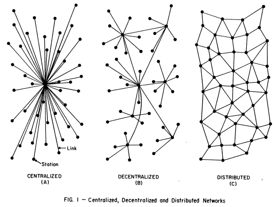
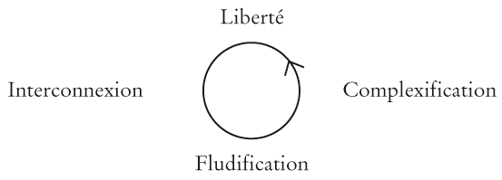
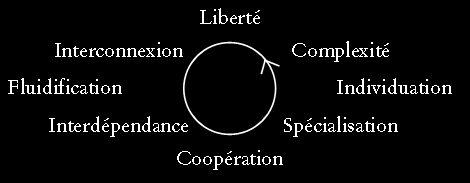
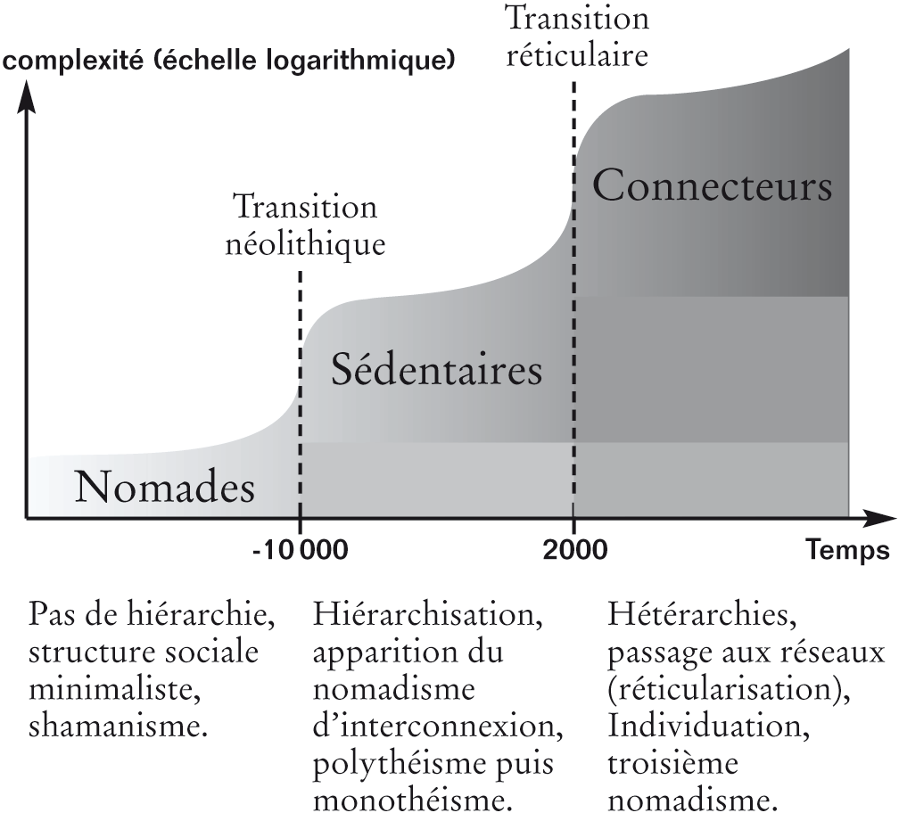

Thierry Crouzet
NetCulture
Bonne partie de rigolade
J’ai découvert une perle dans un papier de Laurence Benhamou publié sur Yahoo Actualités.
Les journaux essaient donc de se réinventer pour regagner des lecteurs. Créer des sites internet ne suffit pas à financer une rédaction car ils ne rapportent que 7 % des recettes publicitaires. Il faudra 30 ans pour qu'ils en rapportent 50 %, selon l'analyste de Merrill Lynch, Lauren Fine.
En lisant cette énormité, j’ai explosé de rire. Comment peut-on faire des prévisions à 30 ans ? Comment peut-on, en tant que journaliste, citer des chiffres aussi absurdes ? Absurde parce des journaux comme OhmyNews font déjà 100 % de leur chiffres d’affaires en ligne. L’avenir de la presse est en ligne, pas sur le papier. Jamais les revenues en ligne ne couvriront les pertes du papier car il n’y aura plus de papier dès que les readers électroniques de Sony ou autres seront commercialisés.
Voilà que je me mets à faire des prévisions. Mais elles ne sont pas à 30 ans, pas à six mois, ce ne sont même pas des prévisions. Dans 30 ans, le hors ligne n’existera sans doute même plus. La tentation de prophétiser me reprend. Je vais bientôt me réincarner en Jacques Attali. Je me demande bien pourquoi j’ai commencé à lire sa brève histoire de l’avenir, encore une mauvaise influence de mon éditeur.
[…] l’Histoire obéit à des lois qui permettent de la prévoir et de l’orienter.
Quand je lis ça, je suis scandalisé. J’ai écrit Le peuple des connecteurs en partie pour dénoncer cette idée. En son temps, Tolstoï a écrit La Guerre et la Paix pour la même raison. Des dizaines de scientifiques, dont le mathématicien français Benoit Mandelbrot, ont DÉMONTRÉ que l’avenir était imprévisible, mais ça ne change rien. Certains hommes influents veulent nous faire croire le contraire, parce que leur influence réside justement dans leur hypothétique influence sur l’histoire. Attali appartient à cette grande famille d’imposteurs.
Pour lui, dans notre avenir, « La situation est simple : les forces du marché prennent en main la planète. » Réveillez-vous monsieur. Ça, c’est l’histoire ancienne, j’espère que le XXIe siècle nous réserve autre chose. Moi, je vois que le cinquième pouvoir a déjà commencé à prendre les choses en main. Encore une fois, ce n’est pas une prévision.
Attali fait partie de ces historiens qui croient que l’assassinat de l’archiduc d’Autriche a déclenché la guerre de 1914. Il n’a aucune conscience des états-critiques, il ne sait pas que notre société se maintient dans un état-critique à l’avenir totalement imprévisible et au passé qui ne peut être compris qu’en étudiant l’histoire de tous les évènements, même les plus infimes, ce qui revient à dire qu’une réelle compréhension historique est impossible.
Et pourtant, dans le prochain demi-siècle, tout changera dans de multiples directions, qu’il est tout à fait possible de dessiner.
Attali nous fait croire que c’est un aventurier de la prospective alors qu’il nous décrit un avenir déjà passé. Comment peut-on oser écrire qu’il est facile d’entrevoir l’avenir alors que personne, avant 1990, n’avait prévu le web et tout ce qui en découle.
Attali est merveilleux. Il a dit que le web serait énorme en 1997 alors qu’il était déjà énorme. Il joue au prophète pour ceux qui ne suivent pas ce qui se passe dans le monde, c’est tout.
Vers 2060, […] de nouvelles forces, altruistes et universalistes, déjà à l’œuvre aujourd’hui, prendront le pouvoir mondialement, sous l’empire d’une nécessité écologique, éthique, économique, culturelle et politique.
S’il faut attendre 2060, je crains que ça ne soit trop tard. Le cinquième pouvoir, cette force dont parle Attali, s’est déjà mis au travail, il n’attendra pas deux générations avant de changer le monde monsieur. Je crois que je ne vais pas dépasser l'avant-propos de cette brève histoire de la connerie.
PS1 : Beaucoup de choses sont prévisibles avec des probabilités très simples (hasard de type 1). Le soleil a quasiment 100 % de chance de se lever demain. Mais beaucoup d’autres choses dans notre monde complexe sont totalement imprévisibles (hasard de type 2). Heureusement d’ailleurs.
PS2 : Il faut toujours être prudent quand on parle de quelqu'un sur le web. Laurence Benhamou a retrouvé mon article et a défendu son propre article. J'essaie de lui répondre.
« Je ne vous jette pas la pierre. Je suis aussi journaliste et j’ai souvent utilisé les chiffres des analystes pour étayer mes textes.
1/ Les analystes se trompent toujours, suffit de regarder
leurs prévisions passées.
2/ On ne prévoit pas l’avenir en prolongeant les tendances
actuelles, surtout dans le domaine technologique, où les progrès
sont souvent exponentiels.
Il y a 5 ans, on était à moins de 1 % de revenue pub sur internet, le modèle publicitaire actuel n’existait pratiquement pas, celui de demain, lui, n’existe pas encore. Que voulez-vous prévoir dans ce cas ?
J’ai été maladroit dans mon billet. C’est uniquement l’analyse qui m’a fait exploser de rire, moins que Jacques Attali je l’avoue. Je n’aurais pas du vous impliquer dans cette histoire mais avouez que nous autres journalistes nous contribuons grandement à justifier l’existence de ces charlatans de futurologues. »
PS3 : OhmyNews a aussi une édition papier . Ce que je veux dire c’est qu’il ne faut pas inverser le sens de l’histoire. La presse migre vers le on line, la pub aussi, à toute vitesse… c’est ça qu’il faut chercher à comprendre pas comment le papier disparaîtra (ce qui est bon pour nous tous… écologiquement parlant).
PS4 : Le futur, il faut le construire. Le prévoir est utile mais alors il faut prévoir une multitude de futurs… pas se limiter à un futur.
Le dilemme du prisonnier
Imaginez. Vous êtes un homme libre, avec un autre homme libre vous êtes en lutte contre les mysticocapitalistes et ils vous emprisonnent, vous enfermant chacun dans des cellules isolées. Ils commencent alors à vous interroger afin d’établir votre culpabilité.
- Si aucun de vous deux ne dénonce l’autre, le dossier ne peut être bouclé, chacun écope d’une peine clémente de 3 ans. Vous avez coopéré sans avoir communiqué.
- Si un seul de vous dénonce l’autre, il sera relaxé, l’autre subira une peine de 9 ans. Dans ce cas, celui qui parle trahit. Il maximise son gain et minimise celui de son comparse.
- Si vous vous dénoncez mutuellement, vous serez condamnés à 6 ans.
Cette célèbre situation dite dilemme du prisonnier se produit sans cesse dans la vie quotidienne. Nous nous trouvons souvent face à un choix cornélien : faut-il collaborer ou trahir ?
Par exemple, si un commerçant baisse le prix de ses produits (forme de trahison de la concurrence), il gagne. Mais si ses concurrents suivent, tout le monde perd. Si personne ne baisse les prix, tout le monde gagne.
Tit for tat
Ces formes schématiques de coopération/trahison peuvent se jouer dans deux cadres très différents.
- Les adversaires ont peu de chance de se retrouver face-à-face. La trahison systématique est alors la meilleure stratégie.
- Les adversaires vont jouer ensemble encore et encore. Dans ce cas, trahir systématiquement n’est pas du tout efficace, pas plus que collaborer systématiquement.
Au début des années 1980, Robert Axelrod étudia cette seconde situation et rassembla ses travaux dans The evolution of Cooperation en 1986.
Il découvrit que dans d’une société de joueurs qui se retrouvent souvent face-à-face, la meilleure stratégie est « dent-pour-dent, œil-pour-œil » (tit for tat en anglais). Si, au cours d’une partie, un joueur trahit, son adversaire trahira lors de la partie suivante. Et ainsi de suite.
Immédiatement, on voit que si un joueur coopère, son adversaire coopère lors de la partie suivante. Si deux joueurs qui appliquent cette stratégie se rencontrent, ils vont collaborer longtemps.
Le méchant
Je voudrais maintenant reprendre un exemple donné par Henri Alberti dans un de ses commentaires.
Des hommes se promènent dans le désert. Un étranger arrive, un gros balaise, il leur pique leur gourde, boit leur eau et leur distille le restant en échange de services. Le balaise, associé à l’ultracapitaliste, assujettit les gentils promeneurs en esclaves. Le méchant ou le traitre serait donc toujours gagnant.
Axelrod montre que c’est vrai dans un monde où les gens ne se retrouvent jamais face-à-face. Mais nous vivons en société. Les gens ont des adresses, des identités, on ne disparaît pas après ses mauvais coups. Il faut rejouer, et rejouer encore. La situation est alors toute autre. Axelrod écrit :
La coopération basée sur la réciprocité [tit for tat] peut démarrer dans un monde majoritairement non coopératif, elle peut se développer dans un d’environnement complexe et elle peut se défendre elle-même une fois qu’elle s’est répandue.
Dans une société peuplée uniquement de traitres, le gentil est perdant. Quand il débarque, il commence par collaborer, se fait punir, puis va trahir à son tour. Il sera alors débiteur de son erreur initiale et ne se refera jamais.
En revanche, si les gentils arrivent en bande, même toute petite, ils vont vite gagner plus que les méchants et, peu à peu, se faire une place prépondérante, jusqu’à imposer leur stratégie. Axelrod démontre que, une fois installée, la stratégie tit for tat ne peut être battue.
La coopération peut ainsi apparaître dans un monde de brutes. Tit for tat est une stratégie puissante parce que :
- elle est gentille a priori,
- elle punit les trahisons,
- elle pardonne les trahisons,
- elle est claire, en ce sens que l’adversaire peut très facilement la reconnaître (open source).
Comme le dit très bien Axelrod, être méchant peut sembler prometteur mais, sur la durée, cette stratégie détruit l’environnement qui lui permet de réussir.
Par exemple, dans le Midi, beaucoup de restaurateurs arnaquent les touristes juste parce qu’ils sont de passage. Lorsqu’un indigène arrive pour la première fois, il se fait rouler lui aussi. Alors de moins en moins d’indigènes ne viennent. Et l’hiver le restaurant est vide, la faillite presque assurée. Tous les commerces qui appliquent cette stratégie sont condamnés à court terme.
L’évolution minimise le nombre de méchants car ils ne sont pas adaptés à la vie en société. Ils apparaissent au grè des mutations malheureuses. Ils sont des bugs que nous devons supporter dans l’espoir d’autres bugs positifs.
Certes, il y a encore trop de méchants. Mais je voudrais me hasarder à une hypothèse. Dans notre société de plus en plus interconnectée, il deviendra de plus en plus difficile de jouer une fois et de disparaître. L’interdépendance grandissante devrait favoriser tit for tat, c’est-à-dire la coopération.
Une fois que tous les clients d’un restaurant pourront consulter sur leur mobile les critiques des clients précédents, la trahison deviendra une pratique de plus en plus délicate.
À mon sens, le web n’est pas en train de devenir coopératif à cause de quelques innovations 2.0 ou de quelques manœuvres commerciales 2.0 mais parce que, en mettant de plus en plus de gens en relation, il favorise la coopération durable. Le 2.0 serait une conséquence du web lui-même et de toutes les technologies d’interconnexion.
En prime, comme le montre Axelrod, cette coopération n’a pas besoin de coordination centralisée, elle peut s’entretenir elle-même, ce qui paraît la méthode la plus économique et la plus efficace.
Plus nous nous dirigeons vers un monde massivement interactif, plus la collaboration se développera. Le web 2.0 ne fait que nous faire pressentir un nouveau potentiel collaboratif. Nous sommes en train d’inventer une nouvelle société.
Combien j’aimerais que nos politiciens soient conscients de cette évolution et que nous n’ayons pas à nous battre contre eux. Trop souvent ils jouent la trahison plutôt que la coopération. Nous devons les interconnecter de telle façon que plus aucune de leurs paroles ne soient off. En open source, la trahison est quasi impossible.
En résumé, dans les villages isolés, la grande proximité des individus favorisait la coopération. Dans les sociétés de plus en plus vastes, l’étranger pouvait survenir, trahir et partir (d’où sans doute la peur de l’étranger exprimée par le mythe dionysiaque). Le réseau rendra les étrangers moins étrangers. Il favorisera la coopération à une échelle que l’humanité n’a jamais connue. Sans doute aurons-nous besoin de cette force pour éviter le pire. Je reste optimiste même après la lecture du livre de Lovelock.
Le blog est mort, vive le blog
 Au début des années 1980, j’ai participé à l’essor du
jeu de rôle. Nous avions alors l’impression d’inventer quelque
chose de neuf, à la frontière de l’art et du jeu… Nous nous
retrouvions dans des conventions. Quand un joueur arrivait dans une
ville, il rencontrait d’autres joueurs.
Au début des années 1980, j’ai participé à l’essor du
jeu de rôle. Nous avions alors l’impression d’inventer quelque
chose de neuf, à la frontière de l’art et du jeu… Nous nous
retrouvions dans des conventions. Quand un joueur arrivait dans une
ville, il rencontrait d’autres joueurs.
Depuis deux ou trois ans, il se passe la même chose autour des blogs, j’éprouve de vieilles sensations en même temps que je rencontre de nouveaux amis. Cette fois, encore, nous inventons un nouvel art narratif, un art pour décrire notre temps et l’habiter.
À la fin des années 1980, la première génération de joueurs de jeu de rôle était épuisée. Nous n’avions pas réussi à pousser le jeu un cran plus loin, nous n’avions pas réussi à le transcender.
Nous devions trouver un job, découvrir la vraie vie, le temps nous manquait pour nous investir comme avant dans l’imaginaire et la construction d’autres possibles. Nous avions perdu la foi, nous n’éprouvions plus de plaisir. J’ai depuis tenté de rejouer de temps à autres, me retrouvant chaque fois devant la même barrière frustrante, sachant qu’elle pouvait être franchie mais rageant de ne pas trouver la solution.
L’arrivée des jeux en ligne n’arrangea rien. La plupart des joueurs se laissèrent tenter par ce mode distrayant et s’éloignèrent de l’art total dont nous rêvions à l’origine.
Le jeu de rôle est mort, en tout cas tel que je l’ai rêvé, parce qu’il n’a pas su se dépasser. Il est resté confiné à un petit milieu underground, un milieu d’initiés. Son influence sur ce début de XXIe siècle est gigantesque mais il aura manqué de hits et de vedettes pour engendrer de nouvelles vocations. Il s’est passé tout le contraire en BD et plus personne ne doute qu’elle est un art (sauf ceux qui croient encore qu’on trouve de l’art dans les galeries).
Le blog est à un point d’embranchement de son histoire. Soit des auteurs réussissent à percer, soit l’ensemble des blogueurs sombreront dans l’anonymat.
Une myriade de gens écrivent des livres parce qu’ils veulent égaler les auteurs qu’ils aiment et, pourquoi pas, connaître une forme ou une autre de gloire. Parce que depuis des lustres certains réussissent dans cette aventure il y a toujours de nouveaux auteurs (même si tous ne rêvent pas de gloire).
Mais qui réussit dans la blogosphère ? Qui a réussi à installer une réputation nationale comme n’importe quel auteur moyen de roman ? En France, personne, même pas Loïc Le Meur… et même Loïc était un cas à part. Bloguer était son travail et, maintenant qu’il a changé de travail, il a moins envie de bloguer, du moins il doit repenser sa façon de le faire.
Pour que les blogs survivent, il faut qu’une émulation se crée comme en BD ou en littérature. Il faut que le blog gagne ses lettres de noblesses. Mais est-ce possible ?
Certains blogs réussissent à faire vivre leur auteur, notamment aux États-Unis, mais il s’agit avant tout de blogs de nature médiatique. Si le blog doit se substituer à la presse, je ne vois pas l’intérêt. Si les blogueurs ne rêvent que de devenir journalistes ou animateurs de télé, je vois encore moins l’intérêt. Les blogs ne survivront que s’ils se trouvent des voies originales.
L’activisme au sein du cinquième pouvoir en est une. Participer à l’émergence de la conscience collective en est une autre. Je crois aussi que les blogs doivent avoir une dimension esthétique. On peut imaginer beaucoup de choses mais il faut vite en trouver. Sinon, les blogueurs se lasseront comme les joueurs de jeu de rôle se sont lassés.
Bloguer demande de l’énergie. Pour qu’elle continue à nous irriguer, il faut que nous ayons l’impression d’aller quelque-part. Il nous faut emporter des victoires sur nous-même comme sur le monde.
Notes
- La mode du blog est dépassée, c’est aujourd’hui la mode Twitter et Facebook, demain elles seront aussi dépassées (comme l’est déjà la mode Second Life).
- Twitter comme Facebook sont des régressions centralisatrices… elles préfigurent un internet qui ne me plait pas.
- Par blog, j’entends un site personnel, un espace où des gens s’expriment depuis chez eux. J’espère que ces espaces décentralisés auront la vie longue, quel que soit le nom que nous leur donneront demain.
- La forme blog, le journal, n’est qu’une forme possible pour les espaces personnels.
- Tout a commencé par les sites fourre-tout avant de s’organiser en blog. D’autres formes sont à découvrir. La littérature a le journal, le roman, l’essai, la poésie…, internet a le site personnel bordélique, le blog, le wiki, le dashboard de Facebook…
- Je rêve de structures plus biologiques et moins linéaires, des formes où lire procurerait une expérience inédite.
- Par rapport aux sites personnels, les blogs ont d’ailleurs procuré une telle expérience grâce aux commentaires et aux trackbacks, ce qui explique et résume leur succès. D’une certaine façon, Twitter et Facebook proposent de nouvelles expériences.
- Le jeu de rôle n’est jamais devenu un marché. Il a donné naissance à des marchés : les cartes à collectionner, les jeux vidéo, des romans… La BD comme la littérature sont des marchés. Nous vivons une époque de marché. Certains blogs doivent devenir marchands pour entraîner tous les autres.
- Nous pouvons être optimistes. Les premiers auteurs stars du web apparaissent, par exemple, Mike Krahulik et Jerry Holkin, auteur de Penny Arcade, une BD hebdomadaire vue par 500 000 internautes dans les 24 heures qui suivent sa parution. Leur site affiche 50 millions de pages chaque mois ! Il nous prouve qu’il est possible de toucher un public.
- Je voulais écrire ce billet depuis longtemps. Je me suis décidé en découvrant les billets de Versac, embruns, blog de mec... C’est aussi ça le blog, cette mutuelle émulation, c’est très bien, mais nous ne vivrons pas longtemps en auto-sustentation. Notre écosystème est trop réduit (plutôt nos divers écosystèmes son trop réduits).
- J’ai pensé publier avant ce billet un autre billet où j’aurais annoncé que je fermais mon blog. Puis je me suis ravisé, de peur que ça ne fasse ni chaud ni froid à tout le monde. Et que, du coup, je sois forcé de le fermer vraiment.
- Mais ne vaudrait-il pas mieux tenir un blog qui serait publié d’un seul coup, une fois par ans, comme un livre ? Au moins, une attente se créerait… comme elle se crée pour les autres auteurs. C’est ce que m’a suggéré Nassim Nicolas Taleb.
- Peu importe le moyen mais il faut créer l’attente… faire du blog une chose rare, c’est ce à quoi j’aspire.
- En tout cas le blog comme commentaire de l’actualité n’a aucun intérêt car cette actualité elle-même est sans intérêt.
Confusion autour du bottom-up
Lors des échanges qui ont suivi ma critique du Modem, j’ai noté que beaucoup de gens avaient une idée erronée du bottom-up. Nos politiciens autocrates les ont piégés par un dévoiement dont ils ont la spécialité.
Le haut-en-bas ou top-down évoque la société hiérarchique dans laquelle quelques-uns ordonnent à tous (le citoyen étant écrasé par la hiérarchie). Par exemple, quelques médias alimentent en informations tous les citoyens. Il est clair qu’il y a un mouvement descendant. Il part d’une élite et se propage à tous. Dieu, quelle que soit son incarnation, règne au sommet de la pyramide et nous vivons à ses pieds.
On oppose souvent à ce système le bottom-up ou bas-en-haut mais, paradoxalement, on le schématise souvent par une pyramide. La base du triangle ferait converger des informations ou des idées vers un point de focalisation, un point dans lequel il est facile de retrouver Dieu.
 Ségolène
Royal, et de nombreux autres politiciens, au Modem notamment,
professent cette version pour le moins réductrice du bottom-up. Le
peuple ferait émerger des idées qui remonteraient jusqu’au sommet
de la pyramide, jusqu’à Dieu, qui les sélectionnerait, les
améliorerait avant de les réexpédier comme un miroir déformant sur
le peuple.
Ségolène
Royal, et de nombreux autres politiciens, au Modem notamment,
professent cette version pour le moins réductrice du bottom-up. Le
peuple ferait émerger des idées qui remonteraient jusqu’au sommet
de la pyramide, jusqu’à Dieu, qui les sélectionnerait, les
améliorerait avant de les réexpédier comme un miroir déformant sur
le peuple.
J’entends souvent parler du up-and-down comme d’une révolution alors que, au nom de la consultation citoyenne, le principe du bottom-up est totalement dévoyé en faveur du modèle pyramidal. On cherche à nous faire croire que nous participons mais, au final, nous subissons encore et encore les décisions divines, nous les subissons d’autant mieux que nous croyons qu’elles viennent de nous.
Nicolas Sarkozy a au moins le mérite de ne pas tricher. Les idées viennent de lui et quand il se plantera ce sera de sa seule faute. Je préfère encore avoir au pouvoir un autocrate lucide qu’un autocrate qui s’ignore.
Mais bien sûr je préfèrerais ne pas avoir d’autocrate au pouvoir. La solution, c’est le véritable bottom-up ou l’auto-élévation de la société. Par exemple, nous ne faisons pas remonter des informations, nous nous plongeons dans un champ d’informations engendré par nous. Nous baignons dans nos propres idées collectives. Dans ce champ, tout le monde influence tout le monde.
Des leaders peuvent apparaître qui focalisent certaines idées et leur donnent plus de force mais ils ne nous les imposent pas. Voici l’utopie dans laquelle j’aimerais vivre, une utopie en partie à l’œuvre au cœur d’internet depuis que le réseau a échappé à ses géniteurs.
Pour résumer le bottom-up tel que je l’entends, j’aime évoquer la métaphore de la marmite. Imaginez que nous sommes des molécules d’eau. Lorsque la chaleur augmente, nous nous élevons tous ensemble. Le bottom-up décrit un mouvement ascensionnel mais pas dirigé vers un but, pas au service de quelques-uns.
Quand le bottom-up est en action, c’est toute la société qui en bénéficie (ou l’entreprise, ou le parti…). Lorsqu’un individu acquière de nouvelles connaissances, il participe à ce mouvement ascensionnel. Lorsqu’il est plus heureux aussi. Les artistes participent au bottom-up. Les actions individualistes comme collectives peuvent l’engendrer.
Une société bottom-up ressemblera à une hyper-sphère : un univers sans bord et sans centre. La base devient en quelque sorte tout le système qui évolue sans cesse. Certains points y brilleront plus que d’autres parce qu’ils seront plus connectés mais ils ne seront pas autocratiques. Le cinquième pouvoir doit s’efforcer de faire migrer la société du top-down vers le véritable bottom-up. Il ne peut d’ailleurs réellement existé que dans ces circonstances.
Je crois que je vais cesser de parler de bottom-up. L’idée qu’il y a un bottom et un up nous renvoie trop au modèle pyramidal. Il nous faut inventer une nouvelle terminologie. Elle doit traduire l’idée que chacun influence tous les autres et que ce n’est qu’ensemble que nous pouvons nous dépasser. Je n’ai pas trouvé mieux qu’auto-organisation.
D’un côté, nous avons le modèle pyramidal, sous sa forme classique top-down ou sa forme démagogique up-and-down ; de l’autre, nous avons l’auto-organisation, largement employée par les structures biologiques.
Ces deux formes d’organisation coexistent donc dans nos sociétés humaines. Elles ne sont pas antinomiques. L’auto-organisation est la plus répandue, elle marche si bien, si naturellement, que nous n’y prêtons pas attention, nous focalisant au contraire sur le pyramidal.
Je crois que nous devons apprendre à mieux reconnaître l’auto-organisation. Ainsi nous amoindrirons l’importance du pyramidal et l’empêcheront d’entraver la complexification de la société (complexification qu’il a un temps aidé il est vrai).
Les managers sont déconnectés
Dans mes dernières conférences, et je dirai sans doute la même chose mercredi soir à Ajaccio, je défends l’idée que nous ne vivons déjà plus dans un système en réseau. Je viens de lire dans Wired un article qui me conforte dans ma position.
À l’aide de badges, Benjamin Waber a mesuré la quantité d’information échangée par les employés de diverses entreprises. Il a constaté que les managers ne sont jamais les personnes les plus connectés. Il existe toujours un super-connecteur mais il ne doit pas cette fonction à une position hiérarchique ni à une décision de la hiérarchie. Il s’est retrouvé dans ce rôle presque malgré lui, parce qu’il est doué pour la connexion.
Bien sûr Waber n’a pas mesuré la qualité des informations échangées mais le fait que les managers soient sous-informés, du moral des subordonnés comme de tout le reste, explique pourquoi ils sont souvent incapables de prendre de bonnes décisions. Ils ont le pouvoir sur une structure dont ils ignorent tout.
Des études comparables ont été menées chez Microsoft en analysant les mails. Les résultats étaient semblables. Le super-connecteur, celui qui est l’âme d’une équipe, mais aussi tous les autres connecteurs qui font que les idées circulent et phosphorent, ne sont jamais officiellement reconnus. C’est un peu comme lors de la bataille de Borodino. On se souvient de Napoléon et de Koutouzov alors qu’ils ont eut qu’un rôle mineur par rapport à tous les hommes de terrain (cf Le Cinquième pouvoir).
Les organigrammes hiérarchiques des entreprises ne représentent donc pas grand-chose, sinon des niveaux de salaire et une chaîne de pouvoir sans grande importance par rapport au métabolisme réel qui lui se structure en réseau.
Vers un web sans site web

Les sites web ont été imaginés pour stocker des informations et les afficher à travers des navigateurs. Ce fut une révolution, notamment grâce à l’hypertexte décentralisé, mais aussi une façon de traduire à l’écran ce que nous connaissions sur le papier. Il suffit de voir à quoi ressemblent encore les sites des journaux (où même les blogs). À des journaux traditionnels ! Très loin du look Google ou des services 2.0 les plus avancés. On reste dans l’ancien monde de Gutenberg.
Le web s’attachera-t-il longtemps à ce passé poussiéreux ? Je ne crois pas. Le web 3.0 n’existera jamais. Le web n’était qu’une étape transitoire, une façon de porter vers le numérique ce dont nous disposions déjà, un nouveau monde, certes, mais attaché à l’ancien monde. Incapable de vivre sans lui (d’où le problème du piratage qui n’est autre que le phagocytage de cet ancien monde).
Ce que nous avons appelé le 2.0 n’était pas une révolution du web mais l’arrivée massive de services. Nous avons inventé notre boîte à outils : coopération, diffusion, recherche, agrégation… Ces outils nous aident à manipuler l’information et à la faire circuler.
Notre fusée peut maintenant lâcher son premier étage qui jadis la connectait au sol. Elle s’élève vers quelque chose de neuf, un cyberspace dans l’esprit de Gibson, un univers de flux qui se croisent et s’entrecroisent, s’éclairent mutuellement, se dissolvent, se reconstruisent ailleurs… phénomène évoqué par Nova Spivack.
L’idée d’un lieu de lecture privilégié et monétisable, le site web, est révolue. Nous avons des sources d’informations, les blogs par exemple, qui propulsent l’information pure dans le cyberspace. Puis elle circule, s’interface, se représente, se remodèle. Elle n’a plus une forme donnée, une mise en page, mais un potentiel formel qui peut s’exprimer d’une infinité de façons. Je me moque de la forme originelle quand je lis sur un agrégateur, éventuellement ouvert sur mon mobile.
Nous allons sur le web pour publier, régler nos tuyaux à flux, les brancher les uns sur les autres, les combiner, les croiser, les filtrer, les comparer… Nous y affutons notre moteur et puis notre vie numérique se passe ailleurs. Dans notre desktop, nouvelle génération de navigateur, sorte de récepteur de flux, où tout se combine et prend forme.
La fin du web, l’âge des propulseurs
Les sites deviennent des bases de lancement. Nous n’avons plus besoin de les visiter. Ils ont leur importance, tout comme celui qui parle a de l’importance, mais nous n’avons aucune raison de nous trouver en face de lui pour l’entendre. Nous pouvons le lire ailleurs, l’écouter ailleurs, le voir en vidéo ailleurs…
Cette pratique est à vraie dire fort ancienne, familière au monde de l’édition. Pour un texte, la forme est transportable, c’est la façon dont les idées et les scènes s’enchaînent, dont elles sont rendues, écrites… Le fond et la forme font bloc. La mise en page est une forme supplémentaire qui, le plus souvent, intervient en fin de chaîne. D’une manière générale, un même texte est lisible de plusieurs manières au fil des éditions (cartonné, souple, poche, luxe…).
Dans le monde des flux, comme dans celui de l’édition, la forme finale garde une grande importance mais elle n’est plus gérée à la source. C’est le desktop qui agrège les flux, se charge du rendu. Suivant les desktops, nous aurons des philosophies différentes. Des templates s’y grefferont. Tout changera encore en fonction du device de lecture (ordinateur, téléphone, reader…).
Un modèle que nous croyons stabilisé, celui du web, s’écroule. Il restera peut-être des boutiques, des points localisés d’interface avec la réalité matérielle, mais pour tout le reste, pour tout ce qui est numérisable, le point d’entrée localisé n’a plus aucun sens. L’information sera partout, dans un état d’ubiquité et de fluidité. Les liens se réorganiseront dynamiquement, bidirectionnellement, un peu comme les signaux dans un cerveau.
Le web ressemblait au monde de la presse.
Le flux ressemblera au monde du livre, un monde où les livres seraient vivants, où chaque mot pointerait vers d’autres livres, où chaque phrase engendrerait des conversations avec l’auteur et les lecteurs. Ce n’est sans doute pas un hasard si de nouveaux readers voient sans cesse le jour en ce moment même. Nous devons pouvoir incarner le flux où que nous soyons.
Nous allons pousser des données dans le flux global. Certains d’entre nous se contenteront de régler la tuyauterie, d’autres d’envoyer avec leur blog des satellites en orbite géostationnaire, d’autres de courts messages microblogués, juste des liens, des sourires, des impressions pendant que d’autres expédieront des vaisseaux spatiaux pour explorer l’infini, des textes longs et peut-être profonds.
Le temps des propulseurs est venu.
Notes
- Auteur, blogueur, éditeur, commentateur, retwitter… sont des propulseurs. Le consommateur passif est en voie de disparition. Si j’aime quelque chose, je le dis, donc je propulse.
- Dans la logique du web actuel, un éditeur ne diffuse dans ses flux RSS que les résumés de ses articles. Le but étant de renvoyer du trafic à la source.
- Dans la logique des flux, brider en sortie le flux RSS est une absurdité puisque la source n’est qu’un propulseur. Brider revient à refuser d’être lu. Plus personne n’aura envie d’aller visiter le propulseur.
- Tous les sites médias brident leurs flux pour tenter de préserver l’ancien modèle publicitaire. Alors qu’ils survivent avec difficulté sur le web et envisagent presque tous de revenir au modèle payant, un monde plus radicalement éloigné du leur apparaît. J’anticipe des jours de plus en plus sombres pour l’industrie de la presse.
- Les journaliste qui deviendront des propulseurs s’en tireront. Ils apprendront à régler la tuyauterie. Nouvelle génération de plombiers.
- Reste à inventer les outils de statistiques adaptées aux flux, comme les outils de monétisation des flux. Mais ceux qui attendront ces outils pour changer de paradigme seront une nouvelle fois laminés.
- Peut-être que la monétisation s’effectuera au moment de la lecture sur le modèle iTune. Je vois l’intérêt pour une œuvre originale, par exemple la nouvelle de Gwen, mais quel intérêt pour une news reprise partout sans guère de variation ?
- J’aime Twitter parce que c’est une technologie de lifestream qui révolutionne le web et nous fait enter dans l’ère des flux. J’aime Twitter parce qu’il devient un protocole auquel nous donnent accès des applications tierces. J’aime Twitter parce que je ne vais jamais sur Twitter. Je ne devrais même plus parler de Twitter mais uniquement d’une Federal Public Timeline. Elle m’aide à propulser mes textes et mes idées passagères dans le cyberspace naissant.
- Le cyberspace nait aujourd’hui même. Le web restait dépendant de l’ancien monde matériel. Voilà pourquoi les marchants ont été les premiers à s’y épanouir.
- Nous devons générer les flux avec nos outils, les mixer avec nos outils. Les flux doivent circuler et n’appartenir à personne sinon à leurs propulseurs respectifs. Nous sommes encore loin d’en être là mais c’est la direction. Un web où les sites s’effacent au profit de ce que nous avons à dire et à échanger.
- Ainsi Twitter devra être remplacé par un protocole décentralisé et robuste. Les développeurs y réfléchissent.
- C’est à Mozilla de devenir un desktop pour agréger tous les flux. Seesmic et cie ont peu de chance de se tirer d’affaire.
- Notre identité numérique sera concentrée sur notre point de propulsion, c’est là qu’elle s’incarnera, c’est de là qu’elle essaimera dans le cyberspace.
- Je crois aussi que le point de propulsion doit être open source, pour que notre identité n’appartienne à personne. WordPress est le meilleur point actuel. Mais sans doute trop marqué par son passé blog. Il faut un outil ou des outils capables de gérer tous les types de propulsion possibles.
Libre de publier mais pas libre de lire
Jusqu’à l’avènement du Web, grosso-modo en 1995, la liberté d’expression était une illusion. Seule une élite de journalistes, écrivains, artistes, scientifiques… pouvait parler à leurs contemporains. Depuis, tout au moins en occident et pour peu que nous fassions l’effort de maîtriser quelques outils, nous avons la liberté de publier nos textes, photos, vidéos, musiques… sans l’aval d’un éditeur.
Nous sommes libres de nous exprimer. Mais sommes-nous libres de lire ? Est-on libre quand on est forcé de lire un livre de poche imprimé en Garamond en corps 9 ? Est-on libre lorsqu’on doit aller sur le site du Monde pour lire un article du Monde et subir les publicités du Monde ? Est-on libre si on ne peut regarder une photo publiée sur Flickr que sur Flickr ? Est-on libre si on lit cet article uniquement sur le blog de Thierry Crouzet avec sa mise en page un peu négligée et flottante ?
Le lecteur ne doit-il pas gagner sa liberté à son tour ? Lire où il veut ce qu’il veut comme il l’entend ! Sur son ordinateur, son portable, sa liseuse, son agrégateur, lui-même installé sur divers appareils. C’est l’autre face de la liberté d’expression. Sans liberté de lecture, tant qu’il y a contrainte, des points de passage obligatoires, des pubs à avaler, des mises en forme à supporter, le lecteur reste le jouet de l’éditeur. Il n’est pas réellement libre. Et si le lecteur n’est pas libre, l’émetteur lui aussi n’est pas libre, il ne fait que le croire. Il parle souvent seul, pour le seul bénéfice de celui qui l’aide à parler (souvent un propulseur à la mode 2.0).
La double liberté de parler et d’être écouté ne peut s’envisager que dans un monde de flux, un monde d’information pure, c’est-à-dire d’information débarrassée de sa mise en forme et de son contexte de propulsion. Tant que le propulseur s’approprie l’information qu’il aide à propulser, il n’y aura pas de réelle liberté d’expression.
Dans un contexte de flux, d’information vagabonde, le modèle de rémunération actuel vole en éclat. Mais le modèle actuel est-il vivable ? Pas vraiment puisqu’il n’arrive pas à financer les coûts de production des œuvres. La liberté de publication, c’est-à-dire aussi la liberté de concurrence plus que le piratage, a cassé l’ancien modèle. La nécessité de la liberté de lecture nous impose d’imaginer autre chose que de simplement imposer des publicités en regard des informations.
Quoi ? Je ne suis pas devin. Juste conscient qu’un nouveau système de flux se met en place et qu’une économie adaptée l’accompagnera, tout comme un droit adapté. Comme le souligne Michel Serre, il ne sert à rien de vouloir appliquer les règles de l’ancien monde dans le nouveau monde.
Construisons-le, libérons nos flux, apprenons à vivre dans ce contexte, nous découvrirons un nouvel équilibre a posteriori. Nous avons la chance de pouvoir vivre quelque temps encore dans l’ancien monde, sur le dos de la bête. Profitons-en même si ça ne durera pas.
Comme aucune contrainte financière ne réduit aujourd’hui notre liberté de publier, aucune contrainte financière ne doit réduire notre liberté de lire. Nous devons pouvoir tout lire a priori. Ce n’est qu’une fois que nous aurons consommé cette transition que les nouveaux modèles s’imposerons. Nous trouverons le moyen d’aider les gens que nous lisons à continuer à nous enchanter.
Même le livre n’échappera pas aux flux
Micro-posts, articles, livres… ils deviennent ou deviendront flux, se libérant du papier comme de la page web qui était censée le remplacer. Toute information se prête à la copie, à la propagation, à la réorganisation, à la représentation selon de multiples perspectives. Plus aucune raison technique ne l’attache à une forme graphique particulière quelle qu’en soit la volonté de l’auteur.
Qui sinon Mallarmé pensa fond et forme comme un tout indissociable avec son poème Un coup de dés jamais n'abolira le hasard. Et pourtant. Une simple recherche me montre que ce texte a été transformé par ses éditeurs successifs, traduit, recomposé. Je ne suis pas chez moi en ce moment, je n’ai pas consulté mon édition depuis longtemps, mais je suis sûr qu’elle ne respecte pas le format travaillé par Mallarmé.
S’il avait mené à bien son projet, s’il avait signé un bon à tirer définitif avant sa mort, il se serait néanmoins produit la même chose avec son œuvre. Elle aurait circulé, elle aurait inspiré d’autres poètes, d’autres typographes, elle serait peu à peu devenu flux, un potentiel formel infini.
L’information pure
Quand je parle d’information pure, cette information débarrassée de sa forme, j’effectue bien sûr un raccourci. Restent les mots pour un texte, leur ponctuation, leur regroupement en paragraphes… toutes ces innovations pour la plupart imaginées en Alexandrie comme je l’évoque dans mon Ératosthène.
Aujourd’hui, notre ponctuation s’appelle XML. Une façon de façonner l’information indépendamment de sa représentation, une façon de la détacher de son support matériel, le papier, comme numérique, la page Web. Nous vivons une double révolution. Pour moi, l’information pure, c’est la version minimaliste en XML. Elle reste encore hautement formelle puisque le style est une histoire de forme mais une forme embedded, incluse dans le message lui-même.
René Audet m’a reproché de négliger le lien entre le texte et la typographie, cet art qui donnerait à un texte sa force réelle. Je trouve cette critique peu réaliste quand 99,9 % des textes publiés, notamment littéraires, n’utilisent qu’une poignée de polices indistinctes et toutes inspirées du Garamond. Promenez-vous dans une librairie. Feuilletez. Ne cherchez pas à me faire croire que tous les auteurs sont des Mallarmé. La plupart savent tout juste faire la différence entre une police moderne et antique. Ils n’ont jamais effectué leur mise en page eux-mêmes, écrivant leurs textes en Times New Roman sur PC ou en Helvetica sur Mac.
J’ai moi-même créé plusieurs livres objets, justement pour montrer que face à la fluidification des contenus, leur inévitable volatilisation, on pouvait expérimenter des formes de résistance, des textes qui xmlisés perdent toute saveur comme le poème de Mallarmé. C’est une expérience marginale, un effet de bord esthétique, utile à mon sens, mais qui n’empêche pas l’immense majorité des textes de ne rien perdre en devenant flux.
Au contraire, ils ont tout à y gagner car chaque lecteur peut se faire metteur en page. Là où l’auteur ne s’est préoccupé que de la forme embedded, là où l’éditeur n’a fait preuve d’aucune originalité, le lecteur peut donner une représentation du texte plus prégnante, au moins pour lui. Une nouvelle profession de metteur en scène des textes peut naître. Des artistes qui diffuseront leurs templates de représentation.
La forme et le fond ne seront pas dissociés, au contraire, ils deviendront un terrain de création ouvert. Un livre n’aura pas une mise en page banale mais des milliers de mise en page aussi originales les unes que les autres. La fluidification des textes exacerbera la créativité graphique en la déplaçant à la fin de la chaîne du livre.
Quelques auteurs expérimentateurs joueront toujours avec l’objet texte comme Mallarmé mais ils laisseront aussi glisser leurs œuvres comme flux pour que d’autres cocréent avec eux. Refuser le flux reviendra vite à refuser d’être lu. La volonté de contrôle n’a jamais fait bon ménage avec la liberté et avec l’art. On va découvrir des interprètes de texte comme jadis on avait des interprètes de musique !
Les larmes des lecteurs
Après mon billet sur la mort de l’édition, on m’a dit que rien ne remplacerait l’odeur du papier, sa texture au bout de nos doigts, nos larmes d’émotion qui viennent le tâcher… Croyez-vous que je ne ressente pas tout cela comme vous ?
J’aime aussi dans des ruines antiques laisser mes mains courir sur les vieilles inscriptions. C’est un des grands plaisirs de la vie mais d’autres sont venus le compléter, celui du papier, celui aujourd’hui du numérique. Je trouve les larmes dans les commentaires qui accompagnent les textes, dans les réponses hyperlinkés, les reprises, les retwitt exaspérés ou enthousiastes… les larmes imbibent le flux.
Dans ce cyberspace, au texte de l’auteur s’ajoutent toutes les expériences des lecteurs. Le texte continue de vivre, même en temps réel. Chaque chapitre, chaque page, chaque phrase peut devenir sujet de discussion entre l’auteur et les lecteurs. C’est une nouvelle dimension, par certains côtés tactile, qui s’offre à nous.
Comme j’explore encore les cités perdues, nous continueront à goûter les livres anciens, mais pour nous dépayser, pour communier avec nos ancêtres, pour nous ressourcer. Notre route se trouvera ailleurs, sur d’autres chemins, pour compléter le leur et l’enrichir.
On ne se baigne jamais deux fois dans le même fleuve, écrivit Héraclite.
On pourrait aujourd’hui dire :
On ne lit jamais deux fois le même texte.
L’auteur propose (ce n’est pas nouveau), l’éditeur compose (ce n’est pas nouveau), le lecteur choisit (c’est nouveau) et l’auteur peut réagir en un rebouclage mutuellement enrichissant. Les œuvres s’ouvrent bien plus largement que ne l’avaient rêvé les avant-gardistes des années 1960 décrits par Umberto Eco.
Bientôt quand nous replongerons dans un livre après des années, il sera autre non seulement parce que nous-même ne serons plus le même mais aussi parce que le livre se sera transformé comme un fleuve dont les berges s’érodent, sur lesquelles on construit des maisons, des ponts, des ports…. C’est ainsi que le livre fleuve devient flux.
Le hors temps
Comme François Bon, je me demande encore si nous avons encore besoin du mot livre. Et si tout devenait flux, des flux qui coulent plus au moins vite, qui parfois s’évasent en grands lacs où nous pouvons nous noyer, des flux qui se resserrent en torrents de montagne, cascadent avant de finir par se perdre dans la mer.
J’ai autant la nostalgie des vieilles ruines que des heures que je passais adolescent à lire jusqu’à l’épuisement. Pour moi, le livre est un flux tranquille où j’ai envie de plonger le plus longtemps possible. Je ne suis pas là pour comprendre, pour saisir une information mais pour vivre.
Ce n’est pas l’objet, le livre, qui fait le livre mais la nature même du flux qu’il enferme avec ses qualificatifs spécifiques, comme débit ou puissance, liés au temps qui passe comme le remarque François Bon.
Ce n’est pas parce qu’un flux est fluide, qu’il circule vite et se métamorphose que nous devons juste le picorer en mode lecture rapide. Nous pouvons le survoler en avion, le franchir par un pont, y plonger et en ressortir immédiatement ou, au contraire, nous y baigner pendant des heures, des jours et mêmes des années comme je le fais avec la correspondance de Flaubert.
Le livre est une contexture particulière du flux à côté d’autres contextures que nous appelons poème, article, post, haïku…
L’économie des flux
Selon cette perspective, l’économie du livre doit être repensée dans le cadre plus large d’une économie des flux. Tant que nous ne saurons pas rémunérer des articles courts, nous ne saurons pas rémunérer les textes longs (après l’implosion du modèle actuel qui ne tardera pas vu le nombre de nouveaux readers commercialisés ces derniers temps – qui auront le même effet que le MP3 pour la musique).
On m’inflige encore et encore un argument massue : le livre restera longtemps attaché au papier.
C'est pourquoi il faut arracher aux dispositifs (à tous les dispositifs) la possibilité d'usage qu'ils ont capturé. La profanation de l'improfanable est la tâche politique de la génération à venir, écrit Giorgio Agamben, que je n’ai jamais lu, cité par André Rougier dans un texte où il me répond.
Nous devrions nous défier de l’ordinateur, nouveau grand Satan et nous précipiter, à 9 milliard, vers un monde naturaliste et non technologique. Bonjour la pagaille. Mais le livre n’est-il pas aussi un dispositif ? Pourquoi le préférer à un autre dispositif qui d’ailleurs n’a encore capturé qu’une infime parcelle de ses possibilités d’usage.
Les gens qui parlent des ordinateurs ne savent souvent même pas ce qu’est un ordinateur. Ils le confondent avec leur Mac ou leur PC. Ils oublient que cette maudite machine peut être greffé dans leur cerveau, qu’elle régule déjà leur vie, qu’ils seraient déjà morts sans elle et que notre monde surpeuplé serait invivable.
Rester attaché au livre pour résister à l’ordinateur ! Voilà quel sera le slogan des éditeurs qui crèveront bientôt de l’explosion des ebooks, de leur piratage massif et de l’entrée des livres dans le monde des flux auxquels ils ne comprennent rien.
Ce n’est pas le statut de l’auteur qui est en question. Il reste le premier propulseur d’un texte. S’il peut disparaître assez facilement derrière un micro-post, voire un post ou un article, il est plus difficile à déboulonner derrière un texte long qui peut impliquer beaucoup de temps de lecture sinon beaucoup de discussions.
L’auteur est celui qui par son style, son sujet, son nom… nous attache dans la durée à un flux. Mais un commentateur habile peut faire oublier l’auteur. On l’a vu en peinture. On l’a vu en littérature quand Baudelaire transcende les textes originaux de Poe. Rien de nouveau de ce côté. On n’est pas dans une histoire du moi et de sa dissolution, sujet qui je l’avoue ne m’a jamais passionné.
Nous sommes au contraire en train de gagner une liberté nouvelle, liberté de propulser. Et qui dit plus de liberté dit plus d’individualité, plus d’existence, plus de puissance d’être. La fluidification du livre est une nouvelle étape dans notre histoire dont la fluidification des news n’a fait que nous donner un aperçu.
L’homme vit avec ses histoires, ses mythes, c’est ainsi qu’il refait le monde. Elles vont enfin circuler librement et à pleine vitesse. Personne ne peut anticiper ce qu’il en résultera. En quoi le passage au flux transformera nos histoires ? En quoi allons-nous écrire des choses jadis impensables ? C’est à mon sens la question la plus intéressante.
Nouveau business model de l'édition
Ou l’économie des propulseurs…

Le fleuve coule. Les gens qui vivent au bord du fleuve puisent de l’eau. L’eau restante finit à la mer. Elle s’évapore, puis pleut sur la montagne où le fleuve prend sa source.
Imaginez un autre scénario. Un immense barrage à la source. Quand quelqu’un veut boire, il paye et on lui envoie une bouteille ou on ouvre le barrage, laisse couler assez d’eau pour qu’elle arrive à l’assoiffé. Sur le cours d’eau, des riverains de plus en plus déshydratés se transforment en pillards (je pense aux Somaliens qui arraisonnent les navires). Il faut donc toujours lâcher de plus en plus d’eau pour satisfaire les consommateurs. Gaspillage, guerres, rareté de l’offre et engraissement au passage des maîtres du barrage. Leur business : maintenir la rareté.
Cette seconde fable est une métaphore du monde capitaliste, plus particulièrement du monde de l’édition numérique qui se cherche un modèle. Dans la logique des flux, ne vaudrait-il pas mieux s’inspirer des fleuves naturels ?
- Si le propulseur verrouille son missile par un prix de mise à feu, le missile risque d’exploser dans le silo de lancement (cas des ebooks vendus pour quelques euros).
- Il faut laisser fuser le missile, le laisser voguer, traverser le monde, c’est à l’arrivée, au moment de son explosion aux yeux du lecteur qu’il faut essayer d’être récompensé du travail fourni.
- Comment savoir que le missile arrive ? Pas nécessairement besoin de technologie. C’est au lecteur de se manifester. Plus il clique, plus il aime et donc plus il avance dans le livre.
- Avec les readers Wifi et GSM, il sera facile de savoir jusqu’où les gens lisent et donc de leur indiquer combien les autres lecteurs arrivés au même stade ont donné et combien idéalement l’auteur/éditeur aimerait recevoir (espérons au passage que nous n’allons pas devenir des lecteurs sous écoute).
- Le flux long implique un rapport fort et durable avec l’auteur, une forme d’intimité, qui peut-être facilitera le déclenchement du don par rapport à d’autres relations plus volatiles.
- L’éditeur aura un double rôle, celui de propulseur, celui d’accompagnement du lecteur. Il devra nouer avec lui une relation presque intime comme l’ont dans l’imaginaire l’auteur et le lecteur. Il devra se placer en début et en fin de la chaîne.
- C’est un véritable partenariat éditeur/auteur/lecteur qui s’installera car le lecteur devient aussi un propulseur. Il l’a toujours été avec le bouche-à-oreille toutefois il ne s’agira plus de faire vendre des livres mais de faire déclencher des dons pour les livres qu’on a fait aimés et poussé soi-même sur le réseau.
- Beaucoup disent que ce système n’a aucun intérêt pour le livre qui coûte peu par rapport au temps que nous passons à le lire. Vrai sans doute quand on achète un livre connu mais faux quand on batifole et qu’on explore la longue traîne à la recherche de pépites.
Je reste persuadé que remplacer « Payer puis voir » par « Voir puis payer si j’aime » est la véritable révolution en cours, initiée par le mouvement open source.
Quand un ami me présente un autre ami, je commence par discuter avec lui avant de l’inviter à passer les vacances avec lui1. Notre monde marchand a nié cette logique de la vie, mettant au même niveau les produits que nous avons déjà vus avec ceux que nous ne pouvons déjà avoir vus parce qu’ils sont nouveaux (ne peuvant que l’être dans le cas des biens culturels).
Pour être en accord avec ce que je pense, j’ai décidé de ne plus laisser mes livres publiés sur le papier. Comme beaucoup d’autres l’ont déjà fait, je les diffuserai sans doute au format ePub et PDF. Me reste à trouver le temps et le courage d’effectuer la conversion.
1 En juillet 1999, je suis parti au Mexique avec une inconnue dans le seul but d’écrire le journal de ce qui se passerait. Résultat : un livre appelé Turista qui dort dans mon disque dur.
L'économie des flux
Dans un monde de flux où les biens s’écoulent, l’ancienne économie de la rareté de l’offre associée à la rareté de l’argent ne peut plus survivre. Sans doute faudra-t-il basculer vers un système financier où chacun pourra émettre de la monnaie et devenir banque centrale. Mais avant d’envisager cette entrée dans le flux de la finance, je voudrais inventorier les différentes modalités de rétribution adaptées aux flux, certaines incompatibles, d’autres complémentaires.
- Proposer comme aujourd’hui les produits à un prix fixe, souvent élevé, plus de dix euros, est contre productif car on empêche le flux de s’écouler et, dans l’économie des flux, l’immobilisme équivaut à la mort. La pratique tarifaire actuelle a pour avantage de nous maintenir dans un monde connu et de ralentir l’avènement du monde des flux mais elle favorise le piratage. J’insiste sur ce point. Le piratage est inéluctable et sera de plus en plus facilité en même temps que les flux deviendront la norme (simple de copier une information qui passe à travers notre ordinateur).
- Les revenus annexes : publicité, affiliation, merchandising, spectacles, conférences… compléteront la rémunération des créateurs comme ils le font déjà. Rien de nouveau de ce côté-là. Mais je ne vois pas pourquoi un écrivain devrait se transformer en pingouin pour continuer à écrire ses livres. Bientôt je vais vendre des t-shirts « Je connecte en propulsant, je propulse en connectant. »
- Le micropaiement, 1 euro par œuvre par exemple, a pour avantage de rabaisser le ticket d’entrée à un prix psychologique très bas. Malheureusement 1 euro est souvent plus qu’insuffisant pour rentabiliser une œuvre, même quand beaucoup de gens paient. Dans beaucoup de cas, le micropaiement ne peut être qu’une mesure complémentaire. D’autre part, si tout le monde met un ticket d’entrée à 1 euro (imaginez lire ce billet pour 1 euro), Internet devient soudain payant et le monde des flux se tarie par feedback négatif, ce qui revient à tuer Internet. Enfin, un ticket d’entrée faible n’arrête pas le piratage, il ne fait que le rendre moins utile pour les gens normalement fortunés.
- La licence globale est une sorte de taxe que tous les abonnés Internet paieraient, une redevance télévisée bis. Je suis farouchement contre car où va l’argent récolté ? Comment sera-t-il distribué ? Les copains des copains seront toujours servis les premiers comme cela se pratique dans le monde du théâtre (et logique que nombre de politiciens clientélistes soient favorables à cette mesure). Il y aura un comité de redistribution. Pourquoi est-ce qu’avec mon blog je recevrais plus ou moins qu’un autre blogueur ? Faudra-t-il être reconnu créateur pour recevoir ? Par qui ? Selon quels critères ? Cette approche va à l’encontre de la responsabilisation des gens et, comme le micropaiement, elle reste une source de financement insuffisante à moins de doubler le prix des abonnements (je dépense chaque mois plus en livres qu’en FAI).
- Avec le mécénat global ou SARD, les internautes sont obligés de donner mais ils votent pour répartir leur dons selon une logique de digg. J’aime l’idée. Je la préfère de loin à la licence globale. Mais elle me fait un peu peur (voir notes). Par ailleurs, les sommes récoltées seront là encore insuffisantes à moins d’une lourde augmentation des abonnements.
- On peut imaginer une autre forme de mécénat global où on est obligé de donner mais où on choisit explicitement à qui on donne. Je préfère de loin cette méthode plutôt formatrice. Je pourrais donner aux créateurs que j’admire pas à ceux que le « peuple admire le plus ». Danger, nous risquons de donner à nos amis. Sans doute faudrait-il trouver un compromis entre cette approche et celle actuelle du SARD (voir notes).
- Le tout gratuit implique le don volontaire, donc un changement des mentalités. J’aime cette idée car elle fait reposer la création sur la seule responsabilité des gens. Ils donnent quand ils le veulent la somme qu'ils veulent aux créateurs qu’ils admirent. S’ils cessent de donner, plus d’œuvre. Favorisé par une certaine transparence (savoir combien un artiste a déjà reçu), un mécanisme de régulation devrait se mettre en place. En basculant dans un monde de flux, un monde de moins en moins matérialiste, les gens devraient être prêts à donner pour les choses qui seront le plus importantes dans leur vie. Comme toute révolution psychologique, ce basculement des mentalités ne peut pas s’effectuer du jour au lendemain. Toutefois, aussi improbable qu’elle paraisse, cette logique du don régit déjà notre monde. C’est ce qui me rend optimiste. Ne vivez-vous pas du don ? Que faites-vous quand vous empruntez de l’argent à la banque ? Vous recevez un don en échange d’une promesse de remboursement. Que font les banques et les États, ils empruntent pour rembourser leurs dettes. La chaîne de Ponzi n’est autre qu’une chaîne du don.
En résumé, nous entrevoyons aujourd’hui trois formes de rémunération qui pourraient se compléter pour remplacer le modèle actuel du prix de vente.
- Micropaiement à la discrétion de l’auteur/distributeur et en aucun cas une modalité à généraliser.
- Mécénat global juridiquement imposés par les gouvernements (et indépendant du micropaiement).
- Plateforme de don direct ultra-simplifiée en même temps qu’une sensibilisation à cette nouvelle logique (ce que ferait déjà le mécénat global).
Est-ce ainsi que nous sortirons du monde de la rareté, du monde des happy few, et entrerons dans le monde des flux ? Sans doute que nous n’avons pas encore eu les bonnes idées.
Note sur le SARD
- La version dure du mécénat global passe par l’État qui nous imposerait le don d'une somme forfaitaire.
- Je suis pessimiste quant à cette idée. Il faut une loi pour favoriser l’auto-organisation de la rémunération. Mais je vois mal l’État passer des lois qui le désengage, c’est contre la logique étatique. Si l’État passait des lois pour pousser le système à fonctionner sans l’État se serait une révolution extraordinaire (surtout hors du monde de la finance). J’ai peur que ce ne soit pas demain la veille. Les gouvernants aiment trop le pouvoir et pas assez les hommes.
- La version allégée du mécénat global, qui sera annoncée le 8 septembre, ne passe par l’État mais par un engagement volontaire des créateurs et des internautes. Nous pourrons ainsi tester le système mais je ne vois pas bien d’autres intérêts. Quelle différence avec le don direct ? Ok, ça nous évite juste de voir partout fleurir des boutons de dons mais, à la place, nous aurons des boutons de vote. Beaucoup de bruit pour rien à mon sens.
- Qui dit vote, dit populisme. Les productions grossières de TF1 récolteront tous les revenus. Je n’ai aucune envie que mon don aille à des œuvres que je ne respecte pas. Je suis totalement opposé à se système s’il n’est pas contrebalancé (même critique qu’à notre démocratie).
- Au vote positif (+1), il faut ajouter un vote de censure (-1). Je veux que mon don n’aille pas nominativement à tel ou tel artiste, à tel groupe d’artistes (les racistes), à telle liste compilée par des tierces parties auxquelles je fais confiance… Je veux par exemple pouvoir donner tout aux écrivains et rien aux musiciens.
- Je veux aussi que le système soit totalement transparent. Je veux savoir combien les artistes ont déjà reçu et arrêter de leur donner quand j’estime que c’est suffisant. Je veux pouvoir mettre des barrières. À Partir d’un certain seuil en euro, mon argent va ailleurs. Et si c’était ça le véritable socialisme ?
- Dans le cas de la version dure du mécénat global, il faut empêcher le choix explicite du bénéficiaire d’un don. Sinon j’aurais la possibilité de cibler un ami qui pourrait me donner en retour, ce qui reviendrait à passer outre l’obligation. Je ne peux donc qu’exclure ceux à qui je ne veux pas donner.
- En revanche, je dois pouvoir choisir dans quelle zone de la longue traîne des votes mon don se répartira. Je peux ainsi décider de financer la création underground.
- Reste que tout cela est bien compliqué alors qu’il s’agit avant tout d’une révolution psychologique à effectuer. Tous ces artifices techniques ne font-ils pas que nous détourner de notre objectif ? Mieux vaut passer son temps à donner l’exemple et à expliquer qu’à mettre en place des usines à gaz.
Into the flux
Ou la vie sans objets
Ou le temps des propulseurs
Ou quand les petits ruisseaux font de grandes rivières.
À force de parler de flux et de penser par flux, je me demande si je ne suis pas en train d’écrire un nouveau livre, suite du Peuple des connecteurs et du Cinquième pouvoir tout en mettant en suspend Le socialisme selon Starglider.
FLUX nom masculin (1306 ; du latin fluxus qui signifie écoulement). Écoulement d’un liquide quelconque hors de son réservoir habituel. Marée montante. Le flux impétueux de la foule. Flux de paroles, bavardage. Flux lumineux : quantité de lumière émise par une source lumineuse dans un temps déterminé. Par extension : écoulement de l’information en même temps que l’information elle-même qui s’écoule. Alors synonyme de flot.
PROPULSEUR nom masculin Qui transmet le mouvement. (1846) Engin de propulsion assurant le déplacement d'un bateau, d'un avion, d'un engin spatial. (2009) Par extension : celui qui crée le flux d’information, le met en mouvement, le filtre, le redirige, l’enrichit, le fusionne à d’autres flux… Exemple : écrivain, musicien, journaliste, éditeur, blogueur, commentateur sur Internet…
Flux, traduction approximative de stream, doit être vu comme cet écoulement hors d’un réservoir initialement rempli par le propulseur. Il faut avoir en tête l’image d’un fleuve, ou plutôt de l’eau qui coule dans le fleuve, quelque chose de liquide, de palpable, qui ne se laisse pas enfermer, qui se déplace mais qui reste matériel, consistant, qui fusionne avec d’autres flots, s’enrichit, se divise en delta avant d’inonder la mer. Le Nil comme métaphore du flux.
Le flux s’inscrit dans la durée. Une fois qu’il a commencé à couler, il peut couler longtemps. Un livre, par exemple, ressemblait à une bouteille d’eau remplie une fois pour toute. On buvait tout les mots. Un flux se déploie dans le temps. Une fois la bouteille remplie par l’auteur, d’autres propulseurs viennent la faire déborder (de l’objet livre par exemple), l’auteur se joignant éventuellement à eux. Ainsi un livre devient flux en même temps qu’il circule et s’enrichit de commentaires et de discussions qui lui donnent une existence nouvelle. Tout cela s’attache, s’agrège, vit.
Mauriac a toujours aimé cette image du flux et du reflux autour d'un roc central – qui exprime à la fois l'unité de la personne humaine, ses changements, ses retours et ses remous. Citation de Maurois dans le Robert.
Le flux peut ainsi s’enrouler sur lui-même, s’auto-maintenir comme la tache rouge dans l’atmosphère de Jupiter. Il n’est pas par essence fugitif même s’il garde toujours sa capacité de s’écouler. Il peut résister aux perturbations plus qu’un objet solide car il a la possibilité d’absorber de nouvelles données en même temps que de se délester du trop plein. Un flux ressemble à un organisme. Tant qu’il y a circulation, il y a vie (un livre que personne ne lit n’est pas mort mais en hibernation).
À quoi donc pourrait ressembler Into the Flux ?
Préface
Vous lisez peut-être ce texte sur papier, peut-être aussi sur l’écran de votre ordinateur ou de votre mobile, ou peut-être sur une liseuse ou vous l’écoutez alors que vous conduisez ou il se matérialise dans votre esprit. Tout dépend de quand vous l’abordez. En 2010, peu après sa rédaction, ou plus tard, quand le monde est devenu flux. […]
Sommaire imaginaire
- Le livre sans papier (avec rappel de la musique sans disque).
- Le web sans site web.
- Les objets sans matière (avec les nanotechnologies même les objets deviennent flux).
- La vie sans principe (indispensable Thoreau ou comment la liberté s’accroît avec la coopération grandissante – quand la vie devient liquide, elle s’écoule mieux).
- La distribution sans prix.
- La finance sans banque (monnaie vient de currency en anglais qui vient du latin currere qui signifie courir ou s’écouler – la finance est par essence un flux).
- La politique sans politicien (ou la politique des flux).
- L’art sans œuvre d’art (en parlant bien sûr de Fluxus – vivre est un art et la vie est une œuvre).
- La spiritualité sans dieu (ou la métaphysique des flux).
Danger : information overload
Dans une économie de flux, une économie de l’abondance et de la libre circulation de l’information, comment éviter l’indigestion, comme éviter d’exploser d’information overload ?
Pour créer le flux, le propager, le manipuler, il faut des propulseurs. Mais comment ils propulsent, en se connectant. On ne peut propulser quelque chose que si on a construit une communauté. Et on construit une communauté en propulsant vers elle des informations intéressantes.
On propulse en connectant. On connecte en propulsant.
Parce qu’on appartient à des communautés, on ne reçoit par défaut que les informations filtrées par ses communautés. Par exemple, on peut ne lire que quelques uns des articles sélectionnés par des followers twitter et ceux des sources qu’on a soi-même qualifiées.
Être connu, être visible, tout cela dépend de la communauté du propulseur et de celles des propulseurs qui s’intéressent à lui.
Dans cette nouvelle économie, les écrivains, les journalistes, les artistes… doivent devenir des propulseurs. Leur engagement ne se limite pas à lâcher un flux qui ira se perdre dans le cyberspace. Ils doivent participer à la vie de leur flux comme nous autres blogueurs le faisons, plus ou moins intensément.
C’est un travail de tous les instants. Il m’amuse même si je suis loin d’être le plus diligent (je l’ai été au début de ce blog, traquant la moindre citation, répondant…). Mais ce travail n’est pas inutile pour le créateur, il participe à la création elle-même, dans un processus relativement nouveau.
Certains propulseurs réussiront alors à construire une communauté suffisamment motivée pour qu’elle puisse leur verser assez de revenu, faisant d’eux des professionnels. Les autres resteront amateurs.
Il ne faut pas oublier que peu d’écrivains ou de musiciens vivent de leur art. Les choses évolueront car le système de don devrait être basé sur la transparence. On pourra alors savoir quand un propulseur atteint son objectif de revenu. Plutôt que lui donner à lui, on en récompensera d’autres. C’est ainsi que nous automatiseront la répartition des revenus.
Il est clair que c’est une vision plutôt en désaccord avec le capitalisme mais aussi avec le socialisme, puisque la répartition peut s’effectuer sans engagement fort de l’État.
Les tenants de l’infrastructure numérique, aujourd’hui opérant suivant le capitalisme traditionnel, laisseront-ils faire ? Je pense que cette évolution sera progressive. Dans un premier temps uniquement à travers les données dématérialisables. Donc pas de danger immédiat pour les FAI même si à terme c’est le capitalisme qui n’y survivra pas.
D’un autre côté, si les opérateurs mettent des freins, nous risquons de vivre une situation conflictuelle. Ceux qui commenceront à nous restreindre se feront boycotter. Si toute l’industrie se met d’accord, ce sera une véritable guerre, une guerre entre deux modèles de société dont Hadopi aura été une des premières escarmouches.
Dans un monde qui souffre du matérialisme, un seul camp a la possibilité de l’emporter, celui favorable à l’économie des flux. Si le camp matérialiste emporte la guerre, celui de la rareté chère, j’ai bien peur que l’humanité telle que nous la connaissons, déjà plus que perfectible, n’y survive pas.
Mais je suis optimiste. Si l’économie des flux fait ses preuves, si les gens s’y trouvent plus heureux, même les opérateurs seront attirés vers elle. S’ils y gagnent, et ils devraient y gagner grâce au nombre croissant de propulseurs, ils imposeront à leurs concurrents de les suivre. Ainsi nous pourrions assister à une transition pacifique.
PS : j’ai écrit ce billet en réponse à un commentaire de Pierre-Alexandre Xavier.
Le flux : troisième état de l'information
Jusqu’à présent, j'ai parlé de flux en termes métaphoriques plus que techniques ce qui entraîne des incompréhensions. Quand on pense flux sur le web, on pense fil RSS ou séquence de conversations sur Twitter/Facebook, pouvant aussi se transformer en fil RSS. Je crois que c’est une vision restrictive. Ce n’est pas à ça que je pense, pas seulement en tout cas. Pour moi, le flux est un état particulier de l’information, comme solide, liquide et gazeux sont des états particuliers de la matière.
Ok, c’est encore un raisonnement analogique mais l’information est aussi étudiée en physique, notamment en thermodynamique et il ne me semble pas absurde de parler de phases ou d’états pour ce qui m’intéresse (même si je suis encore flou).
- Temps mythologique dominé par le Verbe. La parole porte une information gazeuse, qui à tendance à s’évaporer, à disparaître, qui ne s’accumule pas.
- Temps historique dominé par l’écriture. La parole devient symboles et se fige dans la pierre, sur le papier. Accumulation, donc histoire, donc idée de progrès et de capitalisation sur les expériences passées.
- Temps post-historique (nom à trouver) dominé par le flux. L’information devient liquide. Elle ne s’évapore pas, s’accumule toujours, mais circule, se recombine, se divise, subdivise, converge…
Bien sûr, j’aurais pu dire, et j’ai encore tendance à le faire parfois, rien n’est tranché, que le Verbe est liquide et que le flux n’est pas un état particulier, mais le point de transition de phase entre liquide et solide, ce point propice à l’auto-organisation. Nous serions en train d’ajuster notre gestion de l’information pour qu’elle se maintienne au point le plus créatif. C’est un peu mystique comme façon de voir.
Pour le moment, j’en reste au diagramme des phases. J’imagine que l’agitation de l’information engendre la température, que l’accumulation engendre la pression. J’imagine une circulation entre les trois états. Avec peut-être une tendance à tendre vers le point triple.
La grande liquidation
En même temps que j’écris dans tous les sens mon livre sur le flux, je lui cherche un titre. Into the flux ne veut pas dire grand-chose en anglais Into the stream serait plus juste mais est incompréhensible en français. J’ai pensé à La grande liquidation ou à Liquidation totale car il s’agit bien du passage du solide au liquide, du monde matérialiste au monde des flux dématérialisés. Et il s’agit aussi de la liquidation d’un monde révolu (sa politique, son économie, sa métaphysique…).
Si vous avez des idées, je suis preneur. Pour vous guider, voici les chapitres que pourraient comporter le livre, chacun traitant de la perte de quelque chose de matériel ou tout au moins incarné.
- Le livre sans papier
- Le web sans site web
- Le journalisme sans presse
- La vie sans objet
- L’homme sans barrière
- L’économie sans argent
- Le socialisme sans État
- La politique sans politicien
- L’art sans œuvre d’art
- La spiritualité sans dieu
Propositions
La fin du matérialisme
Je tourne dans tous les sens les titres possibles pour mon livre sur les flux. La fin du matérialisme est sans toute le titre le plus plat mais aussi celui qui décrit bien de quoi il s’agit : la migration progressive vers toujours plus d’immatériel, vers un monde où la culture primera sur la possession, condition nécessaire pour que notre monde puisse prétendre à une quelconque durabilité. J’ai rassemblé toutes vos propositions, plus d’autres surgis en cours de route.
Mes préférés
La numérisation du monde
L'homme déchaîné
Liquide = durable
Plus jamais solide
Le livre sans titre
Liquidéconomie
Totalement liquide
Un nouvel état du monde
La grande digitalisation
Tout s'écoule
Enfin libre
Libéré du matérialisme
Tangents
Ceci n’est pas qu’un livre
Que faire sans ?
La civilisation de l’impalpable
Tout doit disparaître
La civilisation immatérielle
La civilisation fantôme
Vers un monde désincarné
Un monde intouchable
Le monde a disparu
La Grande Cité digitale
Real time web
Le futur au présent
Matière à penser
Cryptique
Le troisième état de l’information
Transition
AVEC
Dégel
Le Styx
The flush
Stream lines
Rêvirtualité
Le point triple
Liquéfraction
Metadématérialisation
Le monde du sans
Du sens au sans
Avec ou sans ?
Le paradigme de l'immatériel
Double sens (pas top pour un essai)
La vie sans objets
Liquidation totale
Sans Dieu, sans mètre
La dérive des contenants
Avec flux (mot que personne comprend)
Fluxus
Emportés par le flux
Flux et reflux
Homo Fluxus
Tous les flux mènent à vous
Entrer dans le flux
Flux-fiction
Surflux
Superflu
Un flux jeté dans la marre
Tu le sens le gros flux?
Veni vidi fluxi
Fluxi jacta est
Au pays des fluxinets
Le nécessaire et le superflux
Fusion ou la dynamique des flux
L’ingénue fluxion
L’ingénieuse fluxion
L’heureux flux
Tendu le flux!
Refluxion sur le monde
Jamais sans mon flux
Le Flutur
Le flux tue
Bon pour un roman
L’ère du Verseau
Le veilleur des ondes
Aquarius
Varius, multiplex, multiformis
La rivière sans retour
Le fleuve monde
La mécanique des fluides
Mets de l’huile
Des hommes et des fluides
Sous titres
Quand les choses et les idées viennent à vous plutôt que vous n’alliez à elles.
Quand le monde passe de l’état solide à l’état liquide.
Quand la culture, l’économie, la politique se liquéfient.
L’avenir d’une révolution culturelle, économique, politique et spirituelle.
L’avenir d’un monde où l’extérieur n’existe plus.
Qui a la plus grosse quéquette sur Twitter ?
Les journalistes sont naïfs. Ils voient un compte Twitter avec des dizaines de milliers de followers et ils s’extasient. Ils font du détenteur du compte une star. Mais ont-ils un peu gratté derrière les apparences ?
Je voulais avant de vous raconter cette histoire attendre d’avoir moi-même la plus grosse quéquette de la twittosphère francophone en dépassant le fameux @jeanlucr (manquerait plus que je mette un lien vers lui). Mais pas de chance, une rumeur s’ébruite. Je mènerais une expérience et débusquerais des truanderies.
Je vais donc, plus tôt que prévu, vous raconter une histoire, la mienne, celle d’un jeu de cours d’école. Tout a commencé le 19 mai 2009. Je décide de réserver mon compte Twitter historique @tcrouzet à mon Twiller et d’utiliser @crouzet, compte en sommeil, pour mes autres tweets.
Comme je suivais 200 amis sur @tcrouzet, j’ai commencé à les suivre sur @crouzet. Au bout d’un moment, je me suis dit que c’était pas humain d’effectuer ces invitations à la mano. J’ai alors regardé la doc de l’API Twitter, j’ai chargé une librairie PHP, j’ai pondu un bout de code pour transférer mes amis, le tout terminé en dix minutes. Douze heures plus tard, le 20 mai au matin, 70 de mes anciens amis m’avaient suivi sur @crouzet.
Je me suis alors fait deux remarques.
- Si on peut changer aussi facilement de compte, on peut aussi quitter Twitter pour un autre service au besoin. On n’est pas pieds et poings liés. Ce qui confirmait mon idée que Twitter était une technologie plus qu’une plateforme.
- Si mes amis me suivent, peut-être que les amis de mes amis qui ne me suivent pas encore me rejoindront.
À 13:18, je publie un tweet d’explication :
Expérience en cours. Prendre tous les amis d'un ami @nicolasvoisin et les suivre car logique que nous partagions quelque chose.
À 17 heures, j’avais invité 1000 personnes, quota maximal de nouveaux amis autorisés par jour. À quelqu’un qui me demandait quel intérêt avait ma manip, j’ai répondu :
Ce qui m'intéresse avec twitter c'est de saisir le bruit de fond de la conscience globale, pas la conversation.
Et je n’ai pas changé d’avis. J’ai découvert que suivre des milliers de personnes prises au hasard fait sens car la sérendipité, pas de meilleur mot, me fait attraper des choses qui passent fugitivement. Bien sûr, j’utilise un logiciel pour filtrer les tweets. J’ai trois listes « tout le monde », « les gens qui m’intéressent », « les gens qui m’intéressent énormément et dont je lis tous les Tweets ». 200 personnes en gros dans ces deux derniers groupes. Mais j’avoue que je lis plus souvent les articles pointés par mes milliers de faux amis que par mes « amis ».
Voici où j’en suis le soir du 20 mai. Le lendemain quand je reviens devant Twitter, je découvre une avalanche de nouveaux followers. Les amis de Nicolas me suivent en masse, près de 30 % au bout de quelques jours. Et comme toutes ces conversations stimulent mon esprit, je décide d’inviter les amis d’autres amis. Au fur et à mesure, j’améliore mon programme initial. Je crée une base de données pour savoir qui j’invite, quand, est-ce qu’ils finissent par me suivre, sinon, au bout de 48 heures, les virer.
C’est toujours un système artisanal mais qui marche de mieux en mieux. Je règle le moteur pour ne pas qu’il se heurte aux limites imposées par Twitter. Les nouveaux amis s’accumulent : 1000, 2000, 3000 en juillet. Tout cela reste amateur. Mon machin tourne quelques heures, plante, puis je l’oublie. De temps en temps, ça me prend et je le lance.
Arrivent les vacances d’août, les Pyrénées, randonnées, pas de connexion, puis je me retrouve dans la maison familiale de ma femme avec à nouveau un wifi. C’est là que je me dis que je devrais défier virtuellement la plus grosse quéquette française : 68 000 followers à l’époque.
J’importe ses amis et commence à les inviter au rythme de 1000 par jours, du taff pour plus de 70 jours car il progresse aussi le bougre. Et la, stupéfaction. Rendement extraordinaire. Et qui sont mes nouveaux amis : quelques véritables utilisateurs mais une ribambelle de prostituées, de spam bots et d’autres arnaqueurs en tout genre. Pas folichon. La sérendipité en prend un coup.
Début septembre, je perfectionne encore le processus. Je le lance dans un screen sur un serveur Linux. Mon robot tourne depuis 24h/24 et doucement je m’approche des 10 000 amis. Je constate alors que la grosse quéquette progresse presque aussi vite que moi et je commence à soupçonner qu’il utilise une technique comparable. Je peux pas le jurer mais bon.
Pour lui, c’est business as usual. Je ne dis pas que ses tweets ne sont pas intéressants mais on est aussi dans une expérience, une façon de démontrer son expertise, surtout à des clients potentiels.
« Ce mec avec près de 80 000 amis, il peut nous faire une promo de feu. » Belle illusion quand on connait la logique. Je voulais révéler la combine un peu plus tard, je devance, ça change pas grand-chose. Rien de nouveau sur Internet. Les geeks s’amusent. Certains en font un business pour allumer les gogos. C’est la vie.
C’est dit, c’est fait. A priori j’ai pas l’intention de couper le machin. La partie peut continuer, d’autres peuvent s’y joindre, les règles sont maintenant claires pour tout le monde. Journalistes, ouvrez les yeux. La belle histoire dans notre monde est celle que je viens de raconter. C’est celle de la technologie dont on pousse les usages.
PS1 : première stats à 08:00 le 25/09.
PS2 : Stats après quatre jours complets.
PS3 : Suite et fin de cette histoire.
Scoop : Libération en faillite
Vous vous étonnez de perdre sans cesse plus de lecteurs. Vous êtes vraiment surpris ? Mais relisez-vos articles. Pour vous sauver de la banqueroute, vous êtes prêts à diffuser n’importe qu’elle idée qui vous conforte dans l’ancien monde. Plutôt que de vous adapter au nouveau paradigme, vous tentez d’en détourner vos lecteurs pris en otages. Est-ce la bonne stratégie ?
Honte à moi, j’ai lu un de vos articles en ligne : Comment Google contribue au rétrécissement du savoir. L’auteur, Thierry Klein, énonce une théorie surréaliste. Voulant nous persuader que peu de gens cherchent sur le net, il réussit juste à nous démontrer qu’il ne sait pas lui-même chercher (ou qu’il a peur de chercher ce qui le contredirait).
Le savoir disponible, c’est la quantité moyenne de savoir à laquelle un internaute accède réellement - et non pas potentiellement - au cours d’une session, d’une journée, d’une vie, multipliée par le nombre d’internautes. Or cette quantité de savoir réellement disponible, qui n’a d’ailleurs jamais été très élevée sur le Web, diminue structurellement de jour en jour, Google étant l’acteur majeur, bien que probablement involontaire, de ce rétrécissement.
Cette argumentation se base sur quels chiffres ? Vu que le nombre d’internautes ne cesse d’augmenter, que le trafic internet ne cesse de s’accroître, il est déjà facile de montrer que Klein se trompe même si éventuellement la quantité d’information remontée par tête est susceptible de baisser mais notre auteur est silencieux quant aux faits.
Il mélange tout, le programme AdWords de Google avec les résultats des requêtes. Google tente d’afficher les publicités la mieux adaptées aux requêtes tout comme les sites les mieux adaptés. À ma connaissance, personne n’a jamais montré que Google trichait, c’est-à-dire affichait des résultats sans intérêt pour pousser à cliquer sur les publicités intéressantes. Au contraire, dans de nombreux cas, il a puni ceux qui ont joué à fausser les résultats pour glisser leurs sites vers le haut (mea-culpa, j’ai jadis joué à ce petit jeu).
Si Google, faisait baisser la pertinence de son moteur pour augmenter la rentabilité des publicités, il se ferait tout de suite dénoncer par les spécialistes du référencement. D’autre part, les moteurs concurrents se frotteraient les mains et récupèreraient une bonne part de marché. Google n’a aucun intérêt à jouer au chat et à la souris. Il remonte la meilleure réponse possible, pas nécessairement commerciale.
Maintenant bien sûr les référenceurs tentent de placer en bonne position leurs clients mais le jeu devient de plus en plus difficile. Google est de plus en plus vigilent à ce sujet, justement (il y a longtemps que je ne connais plus la martingale miracle).
Si vous cherchez un hôtel, Google est encore un sacré capharnaüm. Mais dès que vous cherchez des informations non commerciales, les sites de contenus arrivent en tête, souvent Wikipedia d’ailleurs.
Google vous incite, en moyenne, à aller vers les pages les plus intéressantes pour les annonceurs, qui sont sa source de revenu.
Oui pour AdWord mais comment oser dire ça pour le reste ? Des tonnes de blogueurs jouent à ce petit jeu mesquin de lancer des accusations creuses. Mais Libération ne devrait-il pas nous offrir mieux ? Pourquoi laisser un auteur énoncer ses vérités sans qu’il fournisse la moindre preuve ?
Prenez un étudiant ou un chercheur. En théorie, il lui suffit d’avoir accès à Internet pour avoir accès à toute la bibliographie dans son domaine. En réalité, s’il va sur Internet, il rentre dans une entreprise de distraction, au sens premier du terme, qui est celui de détournement. Au bout de quelques minutes, il a toutes les chances de se retrouver à faire autre chose que de la recherche (lire la Bourse, les résultats sportifs, tchater sur MSN…). Cette distraction permanente est à comparer à son comportement en bibliothèque, isolé, sans rien pouvoir faire d’autre, dans une cellule avec ses quelques livres - l’avantage de la bibliothèque physique sur Google : l’absence de distraction. […] Même les plus optimistes sont conscients qu’Internet est avant tout une source de distraction et de temps perdu - et toutes les entreprises qui ont étudié le comportement sur Internet de leurs employés le savent.
Encore une fois sur quelles études se base l’auteur ? J’ai lu des dizaines d’études qui montraient justement le contraire, que l’attention se transformait, que les plus jeunes étaient capables de suivre plusieurs flux simultanément. J’ai même pas le courage d’aller les rechercher, ça en vaut pas la peine. C’est la méthode soutenue par Libération que je conteste.
Publions-nous moins de livres ? Non. Publions-nous moins de papiers scientifiques ? Non. Publions-nous moins de brevets ? Non. Nos technologies et nos connaissances se développent à un rythme exponentiel comme l’a montré Ray Kurzweil. Plutôt que freiner ce déploiement, Internet a plutôt tendance à l’accompagner (sans Internet pas de décodage du génome, pas de suivi des pandémies en temps réel…).
Une page qui contient de la publicité sur Internet est « probablement » peu intéressante - l’éditeur du site de ces pages n’a pas pour objectif d’augmenter votre connaissance, mais de vous faire cliquer sur un lien sponsorisé.
J’ai compris. Tout s’explique. C’est donc exactement ce que fait Libération, sur la page même où je lis cet article minable. Il y a partout des publicités et je comprends en fait que cet article n’avait d’autre but que de me faire cliquer. Tous les moyens sont bons. Même publier des insanités.
Mais cet article a-t-il été publié en 2009 ? Je me trompe non ? C’est pas 1999 ? J’ai l’impression que Libération nous a sorti un épouvantail du placard. Je crois qu’il n’a pas du souvent utiliser Google d’ailleurs. Il aurait remarqué que le moteur ne nous envoie pas souvent vers Facebook. Ces fameux gros sites 2.0 que l’auteur évoque ont pour vertu de générer eux-mêmes leur audience. Ils n’ont pas besoin de Google pour vivre contrairement à Libération.
Merci. Ne nous donnez plus jamais de leçon. Ne parlez plus jamais du web. Je vais pas dire que j'attendais mieux de vous mais tout de même. Tout le monde à le droit de penser ce qu'il veut... mais un minimum de rigueur s'impose non ? Aller, je gardais la meilleure pour la fin. Sans commentaire.
Né il y a cent ans, le cinéma qui promettait d’être le nouveau moyen d’expression culturel (sans même parler du cinéma en tant que nouvelle forme artistique) a aujourd’hui presque totalement disparu. Il est devenu un des principaux vecteurs de l’abêtissement général. Internet : le début d’une nouvelle illusion.
PS : J'ai bien sûr remarqué que l'auteur n'est pas journaliste. Mais quelle importance ? Libération l'a tout de même publié. Je me moque du statut de l'auteur. Nous sommes tous des hommes.
Dans la série les rétrogrades : Edwy Plenel
« J’ai vu mon propre témoignage [au procès Clearstream] résumé sur Twitter. C’était nul, déclare Edwy Plenel sur Canal+ (séquence 3, 10:50). »
Qui est nul d’après vous ? Ceux qui empêchent l’information d’être diffusée ou ceux qui la diffusent avec les moyens du bord ? En Iran est-ce la censure gouvernementale ou les manifestants démocrates ?
J’ai une petite idée de qui est nul. Un patron de presse incapable de faire décoller son journal sur Internet et qui voit des choses plus intéressantes s’écouler de toutes parts sur Twitter. L’information est devenue liquide, elle n’appartient plus à personne, Plenel ne l’a pas compris. Il tente de la maintenir dans le coffre fort payant de Mediapart, se faisant il la tue en lui refusant de se confronter aux autres informations dans l’espace informationnel.
« C’était pas ce que j’ai dit, c’était une sorte de jugement péremptoire, de résumé totalement déformant, ajoute Plenel. Ça ce n’est pas du journalisme. Notre métier c’est donner du sens… »
Il l’a lâché. Je l’ai entendu à la radio il y a quelques jours s’élever contre l’essentialisme. Mais que fait-il ? Il évoque l’essence du journalisme qui serait justement de donner du sens. Mais quel sens ? Tu nous crois trop cons pour donner nous-mêmes du sens. Tu préférais quand on t’écoutait béatement et buvait tes paroles. C’est mal, on te remet en cause, on ne te fait plus confiance. Ton sens, on s’en fiche. Pourquoi ton sens serait-il plus intéressant que celui donné par madame Michu ? Pour qui te prends-tu ? Antiessentialiste, toi ? Qui te place au-dessus des autres pour croire leur adresser la juste parole ?
« [Le journalisme c’est] faire comprendre, c’est donner du contexte, c’est aller en profondeur. Le journalisme est déjà assez discrédité auprès de l’opinion pour qu’on en rajoute pas. Le journalisme c’est pas des petits messages entre copains. C’est une responsabilité démocratique face au réel. »
C’est toi qui discrédite le journalisme. Le réel. Cet autre épouvantail cher aux essentialistes. Platon jubile. Scoop : Plenel sait ce qu’est le réel alors qu’aucun scientifique ne se hasarderait à une telle confession. Abonnons-nous à Mediapart pour recevoir la parole divine.
Mais arrêtez un peu de vouloir définir le journalisme. Soyez journalisme. Écrivez des papiers de fond comme vous dites, faites des analyses en profondeurs plutôt que sans cesse nous assener votre jus de crâne.
PS1 : Comment croyez vous que j’ai entendu parler du passage de Plenel sur canal+. Non pas en regardant la TV mais en suivant mon Twitter.
PS2 : Twitter n'a pas que du bon. La semaine dernière il me faisait écrire contre Libération, aujourd'hui contre Plenel. Comme il me fait suivre les journalistes que je ne suis pas en général, il me donne l'occasion de m'énerver. Vous direz, ça me détend dans l'écriture de mon prochain livre.
PS3 : 19:27 Ce billet est nul. Je fais ce que je reproche à Plenel : du jus de crâne. Mieux vaut parler des choses positives. Je vais arrêter de cliquer sur n'importe quel lien Twitter. Les journalistes ne savent que nous faire perdre du temps.
Si Finkielkraut avait raison
Cet après midi j’ai posté un premier tweet :
Le Conteur, le roman gratuit des éditions Gutenberg encore dispo 3 semaines! http://bit.ly/2F8UNS (@LeConteur)
J'aurais aimé que ça clique pour faire la publicité au roman d’Omair Ahmad et à une initiative qui me paraît intéressante. Bilan via bit.ly : 56/62 clics (56 pour moi, 62 au total).
Un peu plus tard j’envoie un tweet sur la réaction Finkielkraut par rapport à l’affaire Polanski (clin d’œil à la conversation suite à mon billet sur Plenel).
J'ai pas besoin de me payer Finkielkraut, d'autres s'en chargent pour moi http://bit.ly/11RAdU
Bilan : 141/176 clics vers le billet de Dominik Vallet. Encore une fois le populisme paie. Je finis alors par écouter l’intervention de Finkielkraut sur France Inter et j’envoie un nouveau tweet plus nuancé (peut-être influencé par Narvic).
#Finkielkraut sur Inter http://bit.ly/32MoUI Il ne dit pas que des bêtises tout de même mais lire aussi http://bit.ly/11Q1Xw Relativisons
Bilan : 37/690 clics. Est-ce Inter qui fait cliquer autant ? Les vieilles marques ont donc toujours une immense puissance ! Et Finkielkraut n’a pas tout à fait tort d’accuser les internautes d’être des moutons de Panurge (pour le reste je vais pas entrer dans la polémique). Tout cela renvoie à la conversation en cours entre Severino et Monica dans mon Twiller. Je rappelle qu'ils incarnent les ignobles dans mon histoire.
Déclaration de guerre contre Internet
Depuis 2005 et le référendum européen au résultat confisqué, il était prévisible que les voix sur le Net allaient prendre de plus en plus de force, non pas à cause d’une personne en particulier, qui serait idolâtrée, mais par l’alliance de millions d’anonymes… par cette intelligence collective souvent moquée par les apparatchiks.
Nous en avons la preuve aujourd’hui. Quand les médias traditionnels cherchent à enterrer les affaires (Brice Hortefeux, Frédéric Mitterrand, Jean Sarkozy… et ce n’est qu’un début), elles reviennent sans cesse au devant de la scène, reprises jusqu’à plus soif, parfois avec mauvaise fois, dans le but de crier ce que tous doivent savoir et qu’une classe bienpensante voudrait étouffer.
À ce moment, les médias encore pour un temps de masse n’ont plus d’autres choix que de suivre le mouvement populaire. Comme ils prennent le train à retardement, ils se discréditent car leur audience comprend qu’elle a été privée d’un débat exacerbé (je dis bien d’un débat et pas d’une information). Cette audience de plus en plus écœurée par le politiquement correct se détourne alors progressivement.
Rien de neuf à vrai dire. Je débute Le cinquième pouvoir par raconter une affaire semblable à l’affaire Hortefeux, une calomnie raciste qui finit par coûter au sénateur Allen son mandat et qui le prive de briguer l’investiture pour affronter Obama lors des élections 2008 (au moins aux États-Unis ça va jusqu’au bout).
Je croyais que la classe politique et que tous les héritiers du one to many avaient compris que le monde avait changé. Non. Tout, au moins en France, jusqu’à ces derniers jours, ils n’avaient pas compris et ils sont en train de comprendre. Le réveil est douloureux mais je crains qu’il ne s’effectue du mauvais pied.
Vu les attaques sans cesse renouvelées ces derniers temps contre Internet, je crois que cette fameuse classe sait enfin que le peuple dispose d’une arme de destruction massive. Et c’est maintenant que la guerre commence. Hadopi était pour amuser la galerie, un protectionnisme de premier niveau, de quoi se donner les moyens de punir à l’improviste les voix les plus dérangeantes.
Mais, au fond, la menace n’avait pas été prise au sérieux. On avait écouté quelques conseillers un peu éveillés mais on n’avait pas soi-même ressentit la douleur de la morsure du Net. C’est un peu comme avec le réchauffement climatique. On sait qu’il existe mais, tant que rien ne change dans notre quotidien, on ne bouge pas. Savoir qu’ailleurs des gens déjà en souffrent c’est un peu comme savoir que, dans un autre pays, un politicien se fait flinguer par les foules lyncheuses.
Il en va tout autrement quand la foule gronde à vos fenêtres. On prend peur et, quand la peur nous noue le ventre, on est prêt à se battre de toutes ses forces. Le professeur Lordon explique que ceux qui profitent du système financier actuel, et leur thuriféraires, nos gouvernants qui leur mangent dans les mains, se battront jusqu’à la dernière goutte de sang. Ils mourront sur le champ de bataille s’il le faut. Ils ne renonceront pas à leurs privilèges. Alors pour les défendre, ils redoubleront d’acharnement contre cet Internet populiste et par trop idéalement démocratique.
Ils avaient fini par accepter la démocratie illusoire, « donner le droit de vote », il est hors de question qu’ils effectuent un pas de plus vers une démocratie de tous les instants. Ils n’auront de cesse de mettre en avant l’avis des experts par rapport à celui du peuple, les œuvres des artistes officiels par rapport à celles des amateurs, le business des grands groupes par rapport à ceux des artisans… Cette rhétorique déjà bien huilée n’aura de cesse de se perfectionner et, en même temps, ils tenteront de la renforcer avec des armes juridiques et policières.
J’anticipe des jours noirs pour les libertés numériques. Mais nous nous battrons aussi, nous ferons gronder nos voix jusqu’à ce que les médias fossilisés n’aient plus d’autres choix, pour sauver leur business, que de nous suivre tout en lâchant ceux qu’ils défendaient jusqu’à présent. Le combat sera long et douloureux. En France, comme souvent lors de conflit mondiaux, nous sommes en première ligne. L’histoire va-t-elle se répéter ? Les nouveaux régimes n’ont-ils pas comme destin de devenir des anciens régimes qu’il faut alors abattre ?
Finkielkraut: le net, lieu de la liquéfaction
« Vous êtes tous pourris, vous avez compris ? Vous êtes en état avancé de décomposition. Vous n’existez même pas. » Voici comment je pourrais résumer la pensée de Finkielkraut au sujet du Net après avoir écouté son entretien avec Pierre Lévy organisé par Michel Alberganti sur France Culture.
Mise en garde. Ma lecture est biaisée. Je suis en train d’écrire un livre sur la fluidification de l’information, de la société et de l’homme. Pour moi, c’est un phénomène en grande partie positif, même s’il engendre pas mal de bouleversements (mais le bouleversement est-il négatif ?).
Quand Finkielkraut s’exclame que « Le net est le lieu de la liquéfaction. », je ne peux qu’être d’accord mais, contrairement à lui, je ne trouve pas ça catastrophique. Deux visions s’opposent. On revient à l’éternel débat entre essentialistes et anti-essentialistes.
De l’auteur
En 2001, Finkielkraut écrit : « Il y avait l’autorité du prêtre, il y avait l’autorité du maître, il y avait l’autorité de l’auteur : tous ces surmois sont engloutis dans le grand pêle-mêle numérique. » Bonne analyse mais c’est pas une catastrophe. Au contraire. L’autorité n’est plus nécessairement concentrée dans une personne, bien qu’elle puisse encore l’être ; elle peut aussi se distribuer dans un groupe qui a la particularité de ne pas être centralisé (s’il l’était on se retrouverait dans l’ancien paradigme).
Arrive l’idée d’intelligence collective de Pierre Lévy. Un groupe de gens qui interagissent, partagent des connaissances, discutent, aboutissent collectivement à une forme d’expertise. D’une certaine façon, nous en sommes là sur ce blog. Les uns viennent rappeler les ignorances des autres, apporter des pistes de lectures… et peut-être que ça nous fait avancer. En tous cas ça me fait avancer autant que de lire des experts ou même des auteurs auréolés de leurs césars.
Je ne dis pas que les experts comme les auteurs n’ont plus d’importance, je dis simplement que des collectifs peuvent aussi produire une expertise et, pourquoi pas, une œuvre. Qui nous dit que les flux de certains blogs ne seront pas plus tard considérés comme des œuvres.
Franchement, si dans cent ans nos descendants relisent nos échanges, je pense qu’il y aura de quoi se marrer et de toucher à quelques unes des particularités de notre temps, plus que dans n’importe quel roman à la noix publié aujourd’hui. Nous n’avons pas l’once d’un outil critique pour juger ce que nous sommes en train de produire. Je crois que nous pouvons voir l’ensemble des contenus postés sur un blog comme une œuvre collective. La recherche du temps perdu du vingt-et-unième siècle est peut-être là.
Bien sûr que nous avons besoin des œuvres pour nous construire mais ces œuvres ne sont plus nécessairement l’œuvre d’un homme en particulier. C’est d’ailleurs un truisme. Une ville est une œuvre, une œuvre collective, tout comme de nombreux bâtiments. La culture humaine est une œuvre collective. La Bible est déjà une œuvre collective.
De la démocratie
Pour Finkielkraut, le concept d’intelligence collective est éminemment démocratique, d’une démocratie qui serait extrémiste et populiste. Il confond égalité et liberté.
Les fourmis développent une forme d’intelligence collective sans que nous ayons besoin de parler pour elles de démocratie. Pour moi, il n’y a aucun lien entre les deux concepts, aucun amalgame possible. Une équipe de foot développe une intelligence collective, un peloton de cyclistes aussi tout comme des oiseaux qui volent en flotte.
Il y a intelligence collective quand des agents coopèrent et produisent ensemble quelque chose que seuls ils ne pouvaient réaliser (l’intelligence ne poursuit pas ce qui est bien – notion trop humaine). Wikipedia est en ce sens le fruit d’une intelligence collective et elle dépasse toutes les encyclopédies créées par des intelligences collectives qui reposaient sur des groupes beaucoup plus réduits. Le web résulte d’une intelligence collective gigantesque qui nous permet de lier entre eux toutes nos connaissances.
La liberté est dans ce cas fondamentale : chacun a le droit de lier entre elles les informations qu’il désire sans rien demander à personne. Donc la démocratie favorise a priori l’intelligence collective, elle lui donne plus d’ampleur et nous pouvons rêver de plus de démocratie pour aboutir à plus d’intelligence collective.
De l’intelligence
Pour Finkielkraut, le monde de l’intelligence ne serait pas égalitaire, la démocratie ne s’y appliquerait pas. Oui mais quel rapport avec le net ? Il explique que dans le domaine de l’intelligence, du génie, du talent… il y a des hiérarchies.
Soyons clair, ces hiérarchies sont toutes relatives. Les auteurs qu’on place au pinacle à quinze ans ne sont pas les mêmes que ceux qu’on choisit plus tard. Quel serait l’âge idéal pour définir la hiérarchie idéale ? On voit tout de suite dans quel embarras on se trouve.
Finkielkraut semble surtout ignorer que le web est hiérarchisé : popularité, autorité, tagué… Sans ces hiérarchies, il n’y aurait pas de Google. Mais ces hiérarchies sont relatives soit à des algorithmes, soit à des classements manuels. Ces hiérarchies cohabitent, se concurrencent.
Le web n’est pas un monde égalitaire mais un monde de liberté. Je ne vois pas de rapport entre égalité et liberté. C’est la démocratie qui tente de lier les deux concepts mais le web n’est pas démocratique. Il est fraternel peut-être, libertaire à coup sûr, mais pas égalitaire. Deux hiérarchies ne se valent pas, ça n'a tout simplement aucun sens de les comparer.
Du fleuve
Finkielkraut a peur de la surproduction engendrée par le web, de cette vague gigantesque qui noie tout. N’a-t-il pas peur d’être noyé lui-même ? Bien sûr qu’il est plus difficile que jamais d’émerger, bien sûr que le populisme favorise les œuvres les plus faciles (celles de Finkielkraut justement)… mais est-ce différent d’avant ? Flaubert ne cesse de se plaindre des imposteurs de son temps. Déjà il y avait assez de médiocres pour ensevelir les génies. Rien de neuf. On a juste changé d’échelle tout en inventant des outils de filtrage pour naviguer dans cet océan.
C’est ça qui énerve le plus les apparatchiks. On n’a plus besoin qu’ils servent de phare pour retrouver notre chemin. On peut établir nos hiérarchies, on peut explorer la longue traîne. Et si des œuvres géniales existent, nous finiront par les pêcher.
Finkielkraut ne supporte pas cette idée qu’il peut exister des propulseurs, des manipulateurs d’œuvres, des remixeurs… il rêve encore d’un temps où l’œuvre avait une réalité quasi idéale. « Tout devient manipulable, mais ça fait peur, dit-il en gros. Que le gouvernement ait ce pouvoir, c’est une chose. Mais que tout le monde l’ait aussi, c’est terrible. » Je trouve pas ça terrible. Nous jouons enfin à armes égales. Nous ne sommes pas égaux, loin de là, mais nous avons accès au même arsenal.
Dans mon prochain livre je cite Bruce Chatwin. « Les nomades n’ont pas de domicile fixe en tant que tel. Ils compensent cette absence en suivant des sentiers de migration immuable. » Ce qui se passe sur le web est de cet ordre là. Nous avons tout simplement changé de représentation du monde. L’espace web existe comme les sentiers de migration. On peut se repérer par rapport à lui comme le navigateur par rapport aux côtes. On parle de flot et de flux mais aussi de fleuve. Or le fleuve, c’est l’eau qui s’écoule en même temps que la berge. Nous construisons notre berge en traçant des liens qui dans notre monde ont une réalité incontestable. Le solide existe, il a simplement changé de nature. Faut regarder au bon endroit.
De la régression collective
Pour finir Lévy, qui dans ce débat parle peu mais parle juste, résume la position de Finkielkraut. « Tout ce que vous dites contre Internet d’autres l’ont dit avant vous contre l’écriture, contre l’imprimerie, contre les calculatrices de poche… » Finkielkraut s’exprime comme un disque rayé. Il prend un texte de la renaissance, par exemple De laude scriptorum manualium de Johannes Trithemius en 1492, et il remplace imprimerie par internet et le tour est joué.
L’homme parle bien, il tient le crachoir. Favorisé par Alberganti, il ne fait que nous dispenser son conservatisme affligeant. Faisant l’éloge de la difficulté, l’opposant à l’instantanéité. Si ce n’est pas un reliquat de ce vieux réflexe franchouillard : il faut en chier pour réussir ? Comment penser un monde réticulaire quand on est incapable de concevoir autre chose qu’une société pyramidale, où l’école n’a d’autre but que d’amener une élite au sommet de la pyramide ?
Finkielkraut se lance ensuite dans un éloge de la pluralité. Or, la pluralité, l’individualisme, l’individuation ne peuvent se développer qu’avec la liberté (démonstration dans le chapitre 4 de mon prochain livre). Justement, Internet nous laisse espérer un accroissement de cette liberté. L’idéal de Finkielkraut ne peut être poursuivit que par l’outil même qu’il dénonce, outil qui s’inscrit dans une longue tradition qui remonte au tout début de l’écriture et même avant… dénoncer la technique est ridicule, le livre est une simple interface de lecture, une technique comme une autre.
Finkielkraut a le toupet de se placer en défenseur de la diversité alors qu’il donne sa définition à toute chose, puis bâtit son raisonnement sur sa définition… même après qu’elle ait été mise en cause par Lévy qui, de temps en temps, ricane. Quelle patience. J’aurais pour ma part explosé et détruit le studio de France Culture. Bel exercice de rhétorique mais qui a dû séduire pas mal d’auditeurs encore une fois.
Finkielkraut inénarrable s’attaque à la notion d’information… prétendant que tout ne peut pas être information. Mais dans quel cadre référentiel se place-t-il ? Pour un religieux bien sûr Dieu n’est pas information, Internet ou pas d’ailleurs. Pour un physicien, certains d’entre eux en tout cas, c’est un peu plus facile d’imaginer que tout est information.
Finkielkraut finit par avouer qu’il ne sait pas surfer, qu’il ne sait pas se servir de l’outil… et que tout son discours ne fait que révéler sa peur et son ignorance. Il aurait pas pu commencer comme ça notre philosophe. « J’ai la trouille, j’y comprends rien, j’ai l’impression que le monde que j’aime fout le camp. » Au lieu justement de nous parler de lui, de ses tripes, de ce qui à la limite n’est pas information, il tente de construire un discours vide car il n’a pas l’expérience de ce dont il parle. Il évoque l’ascèse, l’étude. Mais sait-il vraiment ce qu’est l’ascèse, sait-il ce qu’est une véritable expérience philosophique ? Je laisse le mot de la fin à Lévy.
Ce que j’envisage de construire, et d’autres avec moi, c’est une planète où les traditions peuvent se rencontrer et dialoguer. Ce n’est absolument pas un univers de consommateurs comme vous persistez à le dire.
J’ai envie de courir au Canada embrasser Pierre Lévy.
PS : La position de Finkielkraut est en fait parfaitement logique. Comme il ne maîtrise pas internet, il ne peut pas le défendre. Comme il aime donner son avis sur tout, il ne peut donc que critiquer internet.
Dans la peau de Finkielkraut
Pourquoi est-ce que je dénonce F ? Pourquoi sommes-nous nombreux à le dénoncer sur le web et à parler de lui en ce moment : Narvic, Enikao, Vinvin, Jm Planche et des centaines de Twitteurs ? Ne voulons-nous pas prendre sa place ? Je ne refuserais pas d’avoir la même aura médiatique que lui et de vendre autant de livres que lui.
Ok, F comprend le web de manière incomplète, un peu comme un conducteur de diligence pouvait comprendre le train qui allait le mettre au chômage. Il en a peur et il tire des conclusions passéistes. Rien de neuf. Même situation historique, mêmes réflexes.
Notre devoir est de dénoncer les erreurs de F et de ses copains, de nous appuyer sur elles pour deviner d’éventuels dangers que nous aurions négligés ou sous-estimés. À mon sens, notre devoir s’arrête là. Mais notre déchaînement ne révèle-t-il pas chez nous une forme de jalousie ? F a tout simplement plus d’influence que nous.
Si, un jour, l’un de nous gagne une influence comparable, il commettra les mêmes erreurs et j’espère que les jeunes, qui ne seront pas encore ses amis, se déchaîneront contre lui. Le web ne fera pas disparaître les intellectuels parce que le web n’est pas égalitaire. Après F, il y aura d’autres F et des petits f pour les contester.
Aujourd’hui, les F prennent le micro et occupent les écrans, demain les f occuperont de la même façon les médias many to many. C’est eux que les gens interrogeront en priorité parce que nous avons besoin de phares, web ou pas web.
Finkielkraut autour de la table
Maintenant, on peut reprocher à F de ne pas entrer dans le débat, de ne pas être présent dans nos conversations, de ne pas être bidirectionnel (c'est tout ce que je reproches aux intellectuels ancienne mode). S’il faisait un pas vers nous, il reconnaîtrait notre importance, il admettrait être en perte de vitesse. Sa position est stratégiquement la meilleure, un bon marketing, même si intellectuellement elle ne tient guère.
Alors il me semble que c’est à nous de faire un pas vers lui et de lui proposer un débat. Contactons-le, proposons lui de nous voir, organisons un échange. Faisons-nous même l’information avec F plutôt d’attendre qu’il s’exprime ailleurs que sur le web au sujet du web. Proposons-lui de s’exprimer au cœur même du système qu’il dénonce pour tenter de lui en faire toucher du doigt les vertus positives. Défendons nos idées plutôt que de lui donner raison quant à ses craintes populistes.
Ma proposition s’apparente à une fourchette aux échecs. Si F refuse, il perd aux yeux de ses successeurs. Si F accepte, il perd en nous reconnaissant nous aussi comme des intellectuels. D’un autre côté, F est bien plus entraîné que nous à la conversation médiatisée. Il sera capable de détruire en vol la plupart d’entre nous. Je suis prêt à courir le risque. À condition que nous nous placions dans le temps long propre au web, que nous profitions de notre espace temps illimité.
Nous devons arrêter d’avoir les yeux fixés sur les autres médias et de passer notre temps à les commenter. Nous devons créer nous-mêmes le débat, en notre cœur et non seulement en réaction à ce qui se passe ailleurs. Si un nouveau monde nait, nous ne pouvons nous épuiser à regarder uniquement en dehors.
PS : Cherche volontaire pour organiser ce raout.
L’information dans tous ses états
Le vocable information a été employé pour la première fois comme nouvelle unité par Ralph Hartley des Bell Labs en 1928 pour désigner la partie utile d’un message (en écartant le bruit causé par les parasites par exemple). Pour lui, l’information mesure ce que nous apprenons (si nous avons déjà reçu le message, nous n’apprenons rien).
En 1948, Claude Shannon prolongea cette idée et publia sa théorie de l’information (ou pour être précis sa théorie de la communication). Pour lui, la quantité d’information contenue dans un message équivaut au nombre de bits pour l’encoder.
Si le message indique soit blanc, soit noir, un seul bit est nécessaire. La mesure de l’information selon Shannon est indépendante de sa signification. Un listing peut contenir beaucoup d’informations qui ont peu de signification, un aphorisme peut contenir peu d’information et avoir une signification profonde. La signification existe dans l’esprit de l’émetteur et du récepteur, pas dans l’information qui circule.
Von Neumann n’appréciait pas l’idée de séparer information et signification. Il remarqua que la formule de Shannon pour décrire l’information était identique à celle pour d’écrire l’entropie (au signe moins près). Il aurait donc mieux valu parler d’entropie (ou de néguentropie) mais Shannon continua à parler d’information parce que les ingénieurs employaient déjà ce mot.
Mais qu’est-ce que l’entropie ? Elle indique le niveau de désordre dans un système (alors que la néguentropie indique son niveau d’ordre). Le second principe de la thermodynamique stipule que l’entropie d’un système fermé augmente toujours jusqu’à atteindre son maximal.
Exemple le plus simple. On place deux gaz différents dans deux réservoirs. Les particules sont relativement ordonnées, les unes dans un réservoir, les autres dans l’autre. Si on connecte les deux réservoirs, les particules de l’un passent dans l’autre jusqu’à ce que nous obtenions un mélange parfait, c’est-à-dire un désordre maximal.
Mais qu’est-ce que le désordre maximal ? Les physiciens ont découvert que c’est l’état où le système enferme le plus d’information possible. Exemple. Dans un livre, les lettres sont relativement ordonnées, formant des mots qui se répètent de temps à autre. Ce texte peut-être compressé : on remplace chaque mot qui se répète par un code plus court. En revanche, si on mélange les lettres au hasard, on augmente le désordre, perd la signification mais la quantité d’information nécessaire à décrire le système augmente (on ne peut plus compresser le texte, on ne peut pas proposer un codage plus court que le texte lui-même).
L’entropie d’un système fermé ne peut jamais décroitre parce que, une fois que deux gaz se sont mélangés par exemple, la structure initiale de l’information a été détruite (le code a disparu). On a besoin de plus de bits pour décrire le système parce que la forme compacte, mieux structurée, s’est volatilisée. Le système a en quelque sorte perdu la mémoire de son état antérieur. C’est entre autre pour cette raison qu’un œuf une fois cassé ne se reconstitue jamais. C’est pour cela aussi qu’on parle de flèche du temps.
On voit ainsi comment la théorie de l’information et la thermodynamique nouent des liens qui ne sont pas uniquement d’ordre métaphorique (depuis 1948 les scientifiques et les philosophes ne cessent de discuter de ce lien). La formulation identique de l’entropie dans les deux domaines révèle une similitude d’ordre physique mais aussi psychologique.
Une information que je connais déjà ou que je ne comprends pas ne constitue pas pour moins une réserve de néguentropie alors qu’elle peut l’être pour celui qui ignore l’information et la comprend. Ainsi il reste toujours difficile de séparer l’information de sa signification. Le codage est du domaine de la physique, l’information le dépasse, notamment par son aspect qualitatif.
Quand je suppose que l’information peut comme l’eau se trouver dans plusieurs états, je joue donc un jeu dangereux d’un point de vue scientifique. En toute rigueur, je ne devrais donc parler que de l’information qui se code.
Je persiste néanmoins. Pour observer les différents états de l’eau, on fait varier la température et la pression. Qu’est-ce que cela peut signifier pour l’information ?
Lorsque la température est nulle, zéro absolu, l’entropie est nulle. Le système est parfaitement ordonné. La quantité d’information pour le décrire est minimale. Lorsque la température s’élève, le système s’agite, il faut de plus en plus d’information pour le décrire. L’entropie augmente.
1/T = Delta S/Delta U
Cette formule lie la température T à la variation de l’entropie S et à la variation du nombre de particules dans le système U. Elle signifie que plus il y a de particules, plus la température est grande et que plus la température s’élève, plus l’entropie est grande.
Si on remplace U par la quantité d’information selon Shannon, on définit une forme de température pour l’information. Elle s’élève quand le système reçoit plus d’information. Pour un texte gravé dans le marbre, la quantité d’information ne varie pas. Rien ne bouge. La température est minimale. Elle s’élève quand il y a interaction. Lorsque nous parlons ou nous branchons sur les flux.
Delta S/ Delta V = p/T
Cette formule lie l’entropie, le volume du système, la pression et la température. La pression serait l’équivalent de la vitesse à laquelle on injecte l’information dans le système.
J’avoue que je n’ai plus l’esprit assez matheux pour tenter de tracer un diagramme des phases pour l’information afin de repérer les différents états possibles. J’ai effectué quelques recherches sans rien trouver. Si un physicien passe par là, je l’appelle au secours. Dans mon prochain livre, la métaphore me suffit, appuyée sur cette vague justification. J’ai l’habitude de me fier à mon intuition.
PS : Ce texte sera inséré en hypernote dans mon prochain livre.
Long tail ? Mon cul !
Ce titre pourrait être le début d’un dialogue entre un partisan de la théorie d’Anderson et un défenseur du vieux business model de la rareté.
Je lis tout et n’importe quoi sur la longue traîne. Beaucoup de gens en restent à une idée simpliste, ne songeant qu’à leur business model. Par exemple Frédéric Filloux. Tout cela me donne envie de revenir brièvement sur le sujet.
- Je me réjouis de voir les entrepreneurs qui construisent un business sur la longue traîne se planter. La longue traîne ne s’enferme pas. À mon sens, elle ne peut se mesurer qu’à l’échelle globale. Prenons tous les livres, vendus ou gratuits, lus chez soi ou dans une bibliothèque, traçons la courbe de ce que les gens lisent. C’est là qu’il faut chercher la longue traîne pas chez tel ou tel vendeur (seul un immense vendeur comme Amazon peut la faire apparaître – et ce n’est même pas obligatoire).
- Si un vendeur de DVD comme NetFlix ne fait pas apparaître la longue traîne dans ses ventes, c’est juste la preuve qu’il n’a pas réussi à mettre en place un système de recommandation pour que ses clients réussissent à s’auto-conseiller. Ça ne prouve rien d’autre sinon que NetFlix, malgré son large catalogue, reste dans l’économie de la rareté.
- La longue traîne n’est malheureusement pas une fatalité sinon nous aurions quitté depuis longtemps l’économie de la rareté.
- La longue traîne ne peut naître que sous l’impulsion de système de recommandation, donc avec le développement des réseaux sociaux et la multiplication des propulseurs. Une entreprise isolée aura toujours du mal à créer cette dynamique.
- La longue traîne ne peut être que le fruit de la décentralisation. Prenons l’audience de tous les journaux, de tous les magazines, de tous les blogs… là encore il est fort probable que nous ayons une longue traîne. Nous le savions avant Anderson d’ailleurs. Tout système complexe se caractérise par une loi de puissance. De même que les organisations sociales non pyramidales ce qui est le propre des systèmes de recommandation. Anderson n'est pas du tout le premier qui a vu ça, Barabasi en parle dès 2003 dans Linked et avant dans ses travaux de recherche.
- Nous n’avons pas besoin d’observer la longue traîne mais nous devons chercher à la développer pour passer de la société de la rareté à la société de l’abondance. C’est un acte politique, pas commercial.
- Si les petits producteurs peuvent survivre, c’est une attaque frontale au capitalisme totalitaire qui veut devenir hégémonique. Il est de notre devoir de consommateur de défendre ces petits producteurs et donc, incidemment, de développer la longue traîne.
- La longue traîne doit se construire indépendamment de toute plate-forme centralisée, telle celle d’Amazon.
- La longue traîne est anticapitaliste par principe. Pas étonnant que les entreprises capitalistes qui cherchent à l’exploiter se prennent souvent les pieds dans le tapis.
- Au final, distancions-nous d'Anderson qui n’a développé sa théorie que pour servir le capitalisme sans en mesurer la portée révolutionnaire. Revenons à l'idée de loi de puissance beaucoup plus féconde.
Après l’Histoire
Coup sur coup, en octobre 2009, quelques personnalités lancèrent des propos alarmistes. « Le Net est la plus grande saloperie qu’aient jamais inventée les hommes ! déclara Jacques Séguéla » « Il y a deux espaces d’expression, un espace qui n’est pas légitime qui est internet et un espace légitime qui est celui des médias, lâcha Dominique Wolton » « Le net est le lieu de la liquéfaction, conclut Alain Finkielkraut. »
Et si, justement, plutôt que de s’écrouler le monde passait de l’état solide à l’état liquide ? Et si après l’Histoire, cette Histoire écrite dans le marbre, souvent vécue dans la contrainte et les pesanteurs, nous ouvrions une nouvelle époque pour l’humanité, une époque plus fluide, plus liquide, plus labile ? La vie ne serait-elle pas plus passionnante, plus riche, plus créative, plus harmonieuse ?
Les mécanismes les plus intimes de nos sociétés se transforment. Plus personne n’en doute. C’est effrayant, déroutant, dérangeant mais n’est-ce pas aussi l’occasion de prendre à bras le corps les crises qui nous frappent à répétition ? À la lourdeur d’un temps, à l’incapacité chronique de résoudre les problèmes globaux, nous devons opposer la liberté, l’initiative et la responsabilité. Le moment est venu, pour chacun de nous, d’user de tous les pouvoirs que nous confèrent les nouvelles technologies.
L’Histoire s’achève. Non pas comme l’avait prédit Francis Fukuyama pour laisser place à un consensus universel mais pour se subdiviser, comme l’Amazonie à l’approche de l’Atlantique, en une myriade d’aventures. Dans le monde devenu liquide, chacun de nous devient une histoire.
Voici un projet de quatrième de couverture pour mon prochain livre. Après l'Histoire en sera en toute probabilité le titre (avec un sous-titre à venir car il existe déjà un Après l'Histoire dans un autre genre). Sortie maintenant prévue pour début avril. L'ebook sera disponible en lecture gratuite dès le courant février.
Pourquoi Après l’Histoire ?
L’Histoire ne devient possible que lorsque le Verbe se transforme en mots, écrivent Ivan Illich et Barry Sanders au tout début de ABC : l'alphabétisation de l'esprit populaire.
Avant l’Histoire, c’est le temps du Verbe, c’est la mythologie. Après la mythologie, durant l’Histoire, les mythes ne disparaissent pas, on continue de les raconter, de les recopier, de les retrouver. L’Histoire élargit les possibilités offertes aux hommes.
Je crois que dorénavant nous ouvrons une nouvelle époque située après l’Histoire, le Flux. Elle intègre et prolonge la mythologie et l’Histoire pour offrir de nouvelles possibilités.
Le Flux ne devient possible que lorsque l’information passe de l’état solide à l’état liquide.
Sommaire
Le livre se divisera en trois parties composées de trois chapitres.
I L’information (liquide)
1 Après la presse
2 Après le livre
3 Après le web
II La société (liquide)
4 Après la mondialisation
5 Après le socialisme
6 Après l’argent
III L’homme (liquide)
7 Après les objets
8 Après Dieu
9 Après la révolution
De la civilisation de l’écrit à la civilisation du flux
Je commencerai mon prochain livre par quelques définitions comme j’ai pris l’habitude de le faire depuis Le peuple des connecteurs. Suite à vos commentaires, exigeant plus de rigueur, je me propose de définir le plus brièvement possible ce que j’entends par Mythe, Histoire, Flux, Propulseur… Ces définitions sont en chantier et je les modifierai au besoin (et suite à vos réactions). Je complète la définition commune par celle que j’utiliserai ici et dans le livre.
Mythologie 1. Ensemble des mythes et des légendes propres à un peuple, une religion, une civilisation… 2. Étude des mythes. 3. Ensemble des croyances se rapportant à la même idée et s’imposant au sein d’une société : le mythe de la mode décrit par Roland Barthes. Par extension (avec une majuscule) : partie de la vie de l’humanité où les informations se transmettaient principalement par la parole.
Histoire 1. Partie de la vie de l’humanité connue par des documents (écrits, sonores, visuels…). 2. Suite des évènements qui ont marqué une période (pour l’École des Annales tous les évènements sont importants mêmes ceux a priori anecdotiques). 3. Science qui étudie le passé de l’humanité. Par extension (avec une majuscule) : partie de la vie de l’humanité, située après la Mythologie, où l’information se transmet par la parole mais aussi par des documents.
Flux (1306 ; du latin fluxus qui signifie écoulement). 1. Écoulement d’un liquide quelconque hors de son réservoir habituel. 2. Marée montante. 3. Le flux impétueux de la foule. 4. Flux lumineux : quantité de lumière émise par une source lumineuse dans un temps déterminé. Par extension : écoulement de l’information ainsi que l’information elle-même qui évolue en temps réel. Exemple : sur un blog, les commentaires ne cessent d’enrichir le texte initial, notamment quand l’auteur participe à la conversation.
Flux (avec une majuscule). Partie de la vie de l’humanité, située après l’Histoire, où l’information se transmet par la parole, des documents statiques et des documents qui évoluent en temps réels.
PROPULSEUR Qui transmet le mouvement. (1846) Engin de propulsion assurant le déplacement d’un bateau, d’un avion, d’un engin spatial. Par extension : celui qui crée le flux d’information, le met en mouvement, le filtre, le redirige, l’enrichit, le fusionne à d’autres flux… Exemples : commentateur, écrivain, journaliste, éditeur, blogueur, microblogueur, artiste, philosophe, scientifique… tous ceux qui ont quelque chose à dire ou à partager, une grande idée comme un sourire.
L’écrit est à l’Histoire ce que le flux est à la nouvelle époque. Parler d’époque peut d’ailleurs être trompeur. Comme la Mythologie se continua dans l’Histoire, la Mythologie et l’Histoire se continuent dans le Flux (j’espère que mon graphique le fait bien comprendre). De nouvelles possibilités s’ajoutent qui ne font pas disparaître les anciennes.
Quand je propose de sous-titrer mon livre « De la civilisation de l’écrit à la civilisation du flux », je n’oppose pas le flux à l’écrit, encore moins à la parole. Je cherche juste à définir une civilisation par ce qu’elle montre de nouveau. Ainsi durant l’Histoire, même si l’écrit était bien présent, pendant très longtemps les hommes furent illettrés. La Mythologie était toujours là et elle sera toujours là. On ne l’oublie pas en chemin comme on n’oubliera pas en chemin l’écrit.
Par Histoire, je ne parle donc pas de cette science que font les historiens mais d’une « époque ». Je sais bien que les historiens ont cessé de voir le passé comme quelque chose de figé et que, pour eux, il n’est plus gravé dans le marbre. Qu’il faut sans cesse le réécrire en fonction des documents disponibles et des nouvelles analyses effectuées. Dans le Cinquième pouvoir, j’ai consacré un chapitre à ce sujet en discutant de la bataille de Borodino.
L’idée que le passé n’est pas figé dans le marbre remonte notamment à Darwin et aux tenants de la théorie de l’évolution. Le passé a beau s’être déroulé d’une façon donnée cette façon ne nous sera jamais complètement connue. Cette incertitude implique la nécessité de sans cesse revoir sa copie.
Pour ma part, je m’intéresse au temps présent, au temps vécu. Ce n’est pas parce qu’un historien réécrit l’histoire, qu’il lui attribue un caractère liquide, que les hommes qui vécurent dans le passé expérimentèrent le flux (franchement je ne vois pas le rapport). Le flux ne s’éprouve qu’avec le temps réel offert par les nouvelles technologies (c’est la parole et la pensée qui se fixent sans se solidifier).
Il y a l’acte de parler, l’acte d’écrire, l’acte de propulser… c’est de ce troisième acte que nait le flux en renouvellement continu. Écrire correspond à propulser. Si je voulais être rigoureux je devrais dire « De la civilisation de l’écrit à la civilisation de la propulsion ». Ça ne sonne pas bien il me semble.
De la civilisation de l’écriture à celle de la propulsion
Comme en écho au sous-titre de mon prochain livre, Hubert Guillaud a publié un compte rendu intitulé D’une civilisation de la lecture à celle de l'écriture, se référant à un article de Seed Magazine.
Denis G. Pelli et Pelli-Robson défendent l’idée que bientôt tout le monde deviendra auteur, qu’il y aura autant de lecteurs en fait que d’auteurs. Logique si nous avons tous un compte Twitter. Mais est-ce qu’on écrit vraiment sur Twitter ? Est-ce qu’on écrit plus que sur un banc d’école, est-ce qu’on y écrit des choses vraiment différentes ? Parfois oui au vu de l’émergence de la twitterature à laquelle je participe avec Croisade, mais souvent non. La plupart des gens qui savent lire savent aussi écrire. Même s’ils écrivent peu, ils écrivent parfois.
Je ne crois pas qu’ils se transformeront tous en auteur. Je pense en revanche qu’ils écriront plus, qu'ils liront aussi sans doute plus… mais cette écriture et cette lecture participeront à une activité plus large, la propulsion. Propulser, c’est parler, écrire, lire, faire connaître, filtrer, remixer… Je crois que toutes ces activités se combinent déjà pour créer une technique propre au Flux. Plus que jamais, je suis persuadé que nous passons de civilisation de l’écrit à la civilisation du flux.
Isabelle aime raconter La fable des six aveugles et de l’éléphant. Dans un village, un prince arrive à dos d’éléphant mais personne n'a jamais vu d’éléphant. Les aveugles viennent le toucher et chacun tentent de définir le pachyderme. L’un prit son flanc pour un mur. Un autre son oreille pour un éventail. Un sa patte pour un arbre. Un autre sa trompe pour un serpent. Un ses défenses pour des lances. Le dernier sa queue pour une corde.
« Ils se mirent à discuter, chacun d’eux étant convaincu que son avis était le bon. Un tumulte s’ensuivit et les six aveugles commencèrent à se disputer, chacun refusant d’écouter la description des autres. Chacun avait, en partie, raison. Mais ils avaient aussi tous tort. » J’ai ainsi l’impression que Denis G. Pelli et Pelli-Robson ont mis le doigt sur une particularité de la transition que nous vivons sans percevoir l’ensemble (j’ai bien sûr la prétention de mieux voir qu’eux).
Un nouveau job pour les journalistes au chômage
Quoi qu’il advienne, nous resterons des consommateurs d’information, de cette information multidimensionnelle qui se présente dans une infinité de contextures, du livre aux brèves sur les chiens écrasés. Nous ne pouvons pas faire autrement. Les neurologues ont découvert que, quand nous apprenons quelque chose de nouveau, notre cerveau active les mêmes zones que lorsque nous prenons des drogues comme l’héroïne. Nous nous shootons à l’info. Nous sommes des infovores.
C’est une bonne nouvelle pour les producteurs d’information. Ils auront toujours une place dans la société mais quid des entreprises qui les emploient ? Leur situation est dramatique. Les journaux qui ont eu tant de mal à migrer sur le web, qui n’y ont jamais trouvé de modèle économique, voient avec le passage au flux les vestiges de leur monde partir en fumée. Les articles s’échappent. Avalés par des moteurs de recherche, recrachés dans les lecteurs de flux, repris dans d’autres sites, notamment les réseaux sociaux, ils se propagent dans le cyberspace, incapables de rester immobiles.
Protectionnisme oblige, les médias emploient une stratégie désespérée. Ils refusent la fluidification. Ils distribuent uniquement des résumés de leurs contenus pour attirer les lecteurs à la source. Mais pourquoi nous déplacerions-nous ? Pour un scoop ? Pour apprendre la mort de Michael Jackson ? Trop tard, nous le savons déjà. Pour une analyse profonde ? Mais comment estimer cette profondeur ? Que disent nos contacts sur le réseau ? L’information étant résumée elle est arrivée jusqu’à eux noyée dans les informations intégrales, associées à leur flot de commentaires. Seuls quelques propulseurs la repèreront et remonteront à la source. Parfois ils réussiront à attirer notre attention, le plus souvent ils ne seront pas assez nombreux pour activer notre sérendipité.
Refuser la fluidification dans un monde où tout se fluidifie revient à se laisser submerger par la vague. Dans le flux, les média au nom de leur marque n’ont pas la force de faire émerger un contenu hors de l’eau. Seuls les propulseurs savent attirer l’attention de leur communauté. Les journalistes doivent endosser ce nouveau rôle. Ils doivent non seulement produire l’information mais aussi la pousser sur le réseau. C’est à partir des amis qu’une information commence sa vie dans le flux. Terminé le temps où on envoyait un pétard et où on attendait qu’il explose.
Les médias sont très mal armés pour ce travail. Ils ne peuvent propulser tous leurs contenus qui, chacun, se dirige vers des communautés différentes. Trop longtemps, les médias ont refusé d’admettre que le web était un monde de connexions. Ils sont restés dans l’optique « je suis la voix officielle », cette voix d’autant plus forte dans les régimes totalitaires. Pendant ce temps, tout le monde s’était mis à parler à tout le monde, à parler à travers les réseaux sociaux, créés de proche en proche, par l’effort individuel des hommes plus que des entreprises spécialisées dans la distribution.
Celui que jadis on appelait journaliste a pourtant un nouveau rôle à jouer. Être justement un créateur de liens. Il peut devenir le charpentier de la nouvelle société. Le défricheur des routes de communication qui permettent à l’espace public d’émerger par focalisation du travail de millions de propulseurs.
Certains parlent de journalisme de liens. Il s’agit de trier l’abondance, de compiler pour sa communauté l’information qui l’intéressera, d’injecter dans son réseau les liens qui font sens pour elle. Toute une économie doit se réinventer. Nous retrouvons une configuration en partie explorée par Le Courrier International. Le journal lui-même ne produit pas l’information brute, il la récolte ailleurs et la structure pour son lectorat.
D’un côté, nous avons des créateurs d’information, ils la propulsent puis d’autres propulseurs se joignent à eux. De l’autre côté, l’éditeur n’est plus celui qui commande ce qui va être écrit, filmé, photographié… mais celui qui dans le flot de tout ce qui est diffusé pêche ce qui intéresse la communauté à laquelle il s’adresse.
Gandhi, qui a aussi été un homme de presse, écrit dans son autobiographie : « Dès la naissance de Indian Opinion, je me rendis compte que le journalisme avait pour but de servir. La presse représente une puissance considérable ; mais, de même qu’un fleuve déchaîné submerge des campagnes entières et ravage les révoltes, de même une plume sans contrôle ne peut que tout détruire. Si le contrôle vient de l’extérieur il est encore plus nocif que s’il n’y en avait pas. Pour être profitable il doit être exercé par celui-là même qui écrit. Si cette ligne de conduite est correcte, combien de journaux au monde résisteraient à ce critère de sélection ? Mais, tout d’abord, qui se chargerait de supprimer les feuilles inutiles ? Et qui choisir comme juge ? L’utile et l’inutile doivent aller de pair, tout comme le bien et le mal en général. C’est à l’homme qu’il revient de choisir. »
Gandhi parle du journalisme comme d’un service. Selon cette perspective, le journaliste passe du début de la chaîne à la fin de la chaîne. Il doit se réinventer en comprenant que sa fonction n’est autre que de filtrer le flux qui irrigue son réseau. Sa valeur ajoutée n’est plus de faire l’information mais de la pousser un peu plus loin, un peu plus près de ceux qui le suivent. Ainsi le journaliste devient un propulseur comme un autre. Alors parler de chaîne médiatique n’a plus aucun sens. Chaîne évoque la chaîne de montage et le modèle productiviste étranger au flux. L’information comme l’eau s’écoule, s’évapore, regagne la source. Le propulseur se trouve partie prenante d’un cycle sur lequel il peut intervenir en de multiples points.
Les grands reporters ont souvent travaillé selon cet esprit, partant parfois en reportage sans commande, poussés par la nécessité, puis trouvant le moyen de diffuser leur travail. Aujourd’hui, ils inspirent tous les propulseurs. Un blogueur écrit ce qu’il désire. Si les gens aiment ce qu’il écrit, ils le reprennent, ils lui donnent une audience. Des services d’agréation peuvent l’intégrer à leur offre, monnayer son texte, le rémunérer. Certains ainsi deviennent des professionnels, d’autres restent des amateurs. Et c’est une autre histoire, aussi vieille que le monde.
PS : Texte viré de mon prochain livre, trop en rupture avec le ton du reste. J’écris pas un livre pour dire aux médias et aux journalistes ce qu’ils doivent faire mais pour essayer de comprendre comment on vit dans le monde du flux. En l’occurrence, dans le chapitre Après la presse, comment on s’informe (le sujet n’est pas comment on fait l’information).
Plus c'est con, plus ça marche
Je viens de sortir ce graphique à la demande d'un étudiant qui analyse mon blog. C'est simple : 3000 visiteurs par semaine quand je parle des sujets qui m'intéressent, dès que je dérape un poil je double, certains papiers dépassants les 2000 visites. Rien de glorieux mais il me semble définitivement que la gloire ne se gagne qu'en sombrant dans le #jeansarkozypartout ou dans la promo des nouveaux gadgets. Le populisme et le marketing payent sur le web comme ailleurs. Tant que je n'ai pas besoin de ça pour vivre, j'éviterai donc comme à mon habitude ces deux sujets, sauf grosse crise de nerf.
L’alternative nomade
Notre monde va mal à cause de la surconsommation. Est-elle une fatalité ? Non. Les Aborigènes ont toujours cherché à prendre le moins possible à la terre pour avoir à lui rendre le moins possible (je détaille dans mon prochain livre). Ils faisaient déjà du développement durable à leur façon. Tout cela juste pour dire que le consumérisme n’est pas encodé en nous mais qu’il est un fait culturel, donc qu’il est possible de le dépasser sans triturer notre ADN.
René Girard, dont je vais finir par devenir un expert grâce aux piqures de rappel de 000, a réfléchi sur le désir mimétique, ce désir d’imiter l’autre. Est-ce un désir ? C’est surtout une nécessité (en partie inscrire dans notre cerveau). Tout être complexe ne peut naître achevé. Il doit apprendre, l’imitation est une très bonne technique d’apprentissage qu’a su découvrir l’évolution. On la retrouve chez certains singes, certains oiseaux, les dauphins… et chez nous bien sûr.
Nos enfants apprennent par imitation et cette habitude à coup sûr ne disparaît pas avec l’âge adulte. Nous voulons avoir la même voiture, partir en vacances sur la même île, avoir le même appartement, la même maison secondaire… Ainsi nous surconsommons. Si un trait nocif se développe, il risque d’emporter l’espèce dans un engrenage infernal. Nous y sommes.
Pourquoi les Aborigènes ne tombèrent pas dans ce piège ? Ils étaient des nomades, le nomade ne possède que ce qu’il peut transporter. Le désir mimétique ne pouvait donc pas s’exercer sur les biens matériels. J’en tire la conclusion que le nomadisme est une solution possible à nos maux. Je pense bien sûr au nomadisme dans le Flux, un nomadisme dans l’espace informationnel et culturel, celui déjà exploré par les Aborigènes.
Ils avaient pour seule réelle possession la chanson qui décrivait leur chemin migratoire sur le territoire. La chanson était en quelque sorte leur droit de propriété. Notez que plusieurs chansons pouvaient se croiser et traverser le même espace. Ils avaient couvert l’Australie d’un réseau de songlines.
Le désir mimétique les travaillait comme il travaille tous les hommes. Il les poussait à étendre leur chanson, à lui ajouter des couplets pour étendre leur territoire imaginaire. Cette surconsommation ne faisait qu’élargir leur culture sans nuire à la terre.
Nous n’avons guère d’autres choix que de les imiter. Mais comment réussir à transférer notre désir mimétique ? Je vois deux solutions qui se complètent.
L’individuation
Si chaque individu se comporte différemment des autres, le désir mimétique se trouve dans l’embarras. Si je n’ai qu’un voisin qui achète une voiture, vais-je l’imiter ? D’autant plus si chacun de mes autres voisins choisissent des solutions différentes, les uns travaillant à la maison, les autres partant en vélo, à pied ou en transport en commun. La multiplicité des modèles nous force à choisir, nous ne pouvons plus imiter sans réfléchir.
Nous n’en sommes pas là (le capitalisme n’a eu d’autres fins que de chercher à nous cloner les uns les autres). Pourquoi est-ce que ça changerait ? Dans mon livre, je montre que nous nous individualisons de plus en plus en même temps que le monde se complexifie (et donc se fluidifie) et que nous coopérons de mieux en mieux. Je ne vais pas refaire ici la démonstration mais elle a pour moi le mérite de renvoyer dans les cordes ceux qui fustigent l'individualisme et qui en font un des responsables des maux de notre monde.
Plus nous nous individualisons, plus nous nous différencions les uns des autres, plus nous échappons au désir mimétique.
La dématérialisation
Le nomade est celui qui se déplace. Un individu affirmé est celui qui n’est pas enfermé dans une case, il se déplace sans cesse dans la structure sociale. C’est une forme de nomadisme. Il ne porte pas avec lui les attributs matériels d’une classe en particulier. Il avance avec légèreté.
Mais pourquoi, comme les Aborigènes, préférerions-nous soudain la dimension culturelle et imaginaire à la dimension matérielle ? Tout simplement parce que nous maximisons notre individuation grâce à la fluidification du monde, fluidification qui se joue essentiellement dans l’immatériel. C’est en vivant de plus en plus dans le Flux que nous nous individualisons, c’est ainsi que nous ressemblons de plus en plus aux Aborigènes… et que s’effectue un glissement du désir mimétique… dans un champ où son déploiement n’a pas de conséquences néfastes, où au contraire il peut stimuler la création, vouloir maximiser son individuation impliquant de créer des œuvres originales.
Le mal associé par Girard au désir mimétique apparaît quand un individu s’empare d’un objet et qu’un autre veut l’imiter. Si cet objet est unique, ça crée de la violence. Si l’objet peut être dupliqué, ça crée de la surconsommation. Dans le monde immatériel de la culture numérique, les objets étant infiniment copiables le désir mimétique est source de moins de maux.
Il est intéressant de remarquer que les Aborigènes n’ont jamais connu la guerre. Ils se battaient, se querellaient, s’entretuaient… mais jamais à grande échelle comme les sédentaires. Moins une société repose sur le matérialisme, plus elle a de chance d’être pacifiste.
Notes
- Ce billet résume la partie centrale de mon prochain livre qui s’étend sur 60 pages en gros et qui est consacrée à l’homme (en quoi l’information liquide le transforme). Ce n’est qu’après que je m’attaque à la société, en quoi cet homme transformé la transforme (car si l’homme ne change pas la société ne changera pas).
- J’avoue que je ne connais pour ainsi dire pas René Girard dont je n’ai lu qu’un livre il y a vingt ans (et qui a beaucoup influencé mon écriture – Croisade est la théorie appliquée du mensonge romanesque).
- Si Girard a réellement expliqué qu’« on ne peut pas dépasser le désir mimétique, et on ne doit pas chercher à le faire, car il est ce qui nous distingue de l’animal. », je ne peux pas être d’accord. Les organismes les plus primitifs n’imitent pas parce qu’ils sont la copie identique les uns des autres. On ne peut imiter que si on nait différent. Pour moi, la vie commence avec le mimétisme absolu (pas besoin de neurones miroirs - très bon papier conseillé par 000). Au fil de l’évolution, quand les individus d’une même espèce apprennent à réagir différemment, ils peuvent commencer à créer des sociétés. Toutes les sociétés animales observées passent par une différenciation des individus. Nous avançons de plus en plus loin sur cette voie. La diversification des individus s’oppose au désir mimétique (c’est la structure sociale qui s’y oppose).
Après l’Histoire, l’Alternative nomade

J’ai en gros achevé le premier jet de mon livre, je peux maintenant tout réécrire, selon une nouvelle perspective (me reste 10 jours !). Après l’Histoire, que se passe-t-il ? Nous devenons des nomades dans le flux. Je n’écris plus un livre qui s’appelle Après l’Histoire, mais L’Alternative nomade, titre imaginé par Bruce Chatwin pour un livre qu’il n’a jamais écrit.
Pourquoi changer d’angle ? Parce que je veux revenir au style du Peuple des connecteurs, parler à l’homme, lui dire de changer de vie… pour les institutions nous verrons plus tard. L’homme fait le système, si l’homme reste le même, le système aussi. La révolution ne fait que nous ramener au point de départ.
Sous la poussée du flux, une fusée à trois étages décolle. 1/ Nous nous nomadisons. 2/ Nous nous individualisons. 3/ Nous nous spiritualisons. Ce n’est qu’une fois qu’un grand nombre d’entre nous aura franchi cette transition que nous pourrons envisager d’imaginer une autre démocratie. Je garde ce sujet pour un autre livre. Toute tentative de réformer la société est vaine si l’homme lui-même ne s’est pas réformé avant.
Les internautes sont-ils des fainéants ?
Faut-il nécessairement passer par le papier et le circuit traditionnel pour être lu quand on écrit un texte de plus de quelques pages ? Je ne cesse de me poser cette question.
Les textes longs impliquent un temps long, celui de la réflexion, celui qui laisse l’imaginaire vagabonder, celui de la créativité… Je ne peux concevoir que nous allons cesser de pratiquer cette forme millénaire. Je m’en sens incapable en tant qu’auteur et que lecteur. Si je n'avais pas lu et écrit des textes longs, je serais incapable d'écrire des textes courts, je serais même incapable de penser.
Ma petite expérience
En juillet, j’ai mis en ligne Genius Locus. J’ai à ce jour eut 847 lectures sur Scridb, version que j’avais mise en avant, et 54 sur Calaméo.
En première approximation, 900 lectures c’est pas mal. La plupart des livres qui sortent en papier n'ont pas autant de chance. Les Éditions Gutenberg n’ont pas fait mieux en lançant Le Conteur, tout en ayant une petite couverture presse.
Mais que signifie ce chiffre de 900 lecteurs ? Combien de pages ont été réellement lues, je n’en ai aucune idée. Les plateformes de lecture ne donnent aucune indication à ce sujet, ce qui en soit est suspect ! Ont-elles peur de décevoir les auteurs ?
Par ailleurs, à part deux avis d’amis, je n’ai reçu aucune critique, rien. Pas même le laconique « C’est de la merde » ou « J’ai décroché à la deuxième page ». Rien : 900 personnes ont regardé le livre et ont passé leur chemin, un peu comme s'il était posé dans une table en librairie. Sur un blog, 900 personnes laissent au moins quelques commentaires. Pour un livre, en tout cas Genius Locus, c’est le néant.
Pas de circuit pour les ebooks
Il existe pour les livres traditionnels un circuit de la critique, des salons, des rencontres… tout un système pour les faire vivre (et faire vivre l’auteur), système qui se prolonge sur le net avec les blogueurs qui parlent des livres.
Mais rien de semblable ne se produit pour les textes longs publiés uniquement en ligne (on trouvera toujours des contre-exemples). Est-ce tout simplement parce que les lecteurs se disent que parce que ce n’est pas sur papier ça n’en vaut pas la peine ? Ils auraient accepté l’idée que des articles de blogueur peuvent être intéressants mais ils ne seraient pas prêts à se coltiner leurs textes longs !
L’argument du confort de lecture tient de moins en moins. Les plateformes comme Calaméo et Scridb optimisent le rendu à l’écran. Elles sont accessibles sur mobile. On peut télécharger les livres sur reader. C’est en train de bouger… et peut-être qu’alors on prendra l’habitude de lire des textes longs qui ne sortent pas du circuit traditionnel.
Autre argument : les gens ne lisent plus que des textes courts. Je crois que c’est faux, en tout cas que rien n’a changé. Il y a toujours eu plus de gens pour lire le journal que pour lire des livres. Est-ce alors que ces gens qui lisent des livres ont moins migré sur le net que ceux qui lisent le journal ? Possible. Mais je n’y crois pas. Nous n’avons tout simplement pas pris l’habitude de lire en ligne des textes longs. Moi le premier même si ça m’arrive de plus en plus souvent.
Remarques
- Genius Locus est un texte littéraire et mes lecteurs n’ont pas l’habitude de lire ce genre de texte de ma part. Ceci expliquerait le néant.
- Pas sûr que cette explication suffise. J’ai effectué un autre test. Plutôt que de publier sous la forme d’un long billet Le procès du capitalisme, je l’ai mis sous Scridb. Résultat 88 lectures ! C’est pire… J’ai déjà publié d’aussi longs billets qui ont toujours été beaucoup plus lus.
- On accepte les scories dans un texte court et moins dans un texte long. C’est ce que je me dis en tous cas. Du coup, Genius Locus n'ayant pas été finalisé par un bon à tirer, je n’ai pas fait sa promotion. J’avais annoncé que je mettrais en place une équipe collaborative pour finir le travail comme un vrai éditeur. Je ne l’ai pas encore fait parce que je suis occupé par mon essai sur le flux.
- Dans l’attente de la finalisation de Genius Locus, je n’avais pas mis les textes en téléchargement. Peut-être certains lecteurs potentiels ont-ils été bloqués. Je viens de les rendre disponibles en téléchargement sur Calaméo et Scridb. Format parfait pour une lecture sur reader.
- Au final, je me contente de remarquer que quand je publie en ligne d’un bloc un texte long ça ne provoque aucun effet, ce qui n’est pas le cas quand je publie un texte long sur papier.
- Croisade qui est publié par bribes engendre beaucoup plus de réactions : de lecteurs, d’auteurs, de journalistes… J’en déduis qu’il faut trouver une méthode pour faire s’écouler les textes longs en ligne. Il faut leur donner de la fluidité. Une page par jour… Et ne pas figer la suite même si elle est déjà écrite. La laisser libre d’évoluer en fonction des réactions.
- Je cherche une méthode pour concilier l'exercice du texte long et du flux. De l'écriture tantôt solitaire, tantôt publique.
Je déteste jeter
J’ai découvert l’existence du flux par hasard, longtemps après avoir exploré Internet pour la première fois. Le flux m’est apparu par son absence, par le manque qu’il avait provoqué en moi.
J’ai écrit mon livre précédent, Le cinquième pouvoir, tout en dialoguant avec les lecteurs de mon blog. Je publiais un article, ils me répondaient, m’interrogeaient, me critiquaient et m’aidaient à préciser ma pensée. Le blog était devenu un atelier ouvert comme pouvait l’être l’agora athénienne pour les philosophes. Après la publication en février 2007, nous avons poursuivi la discussion comme si le livre n’était pas achevé. Dans les faits, il ne l’était pas. Le livre et le blog étaient devenus part d’une même œuvre en perpétuelle évolution.
J’ai toutefois fini par éprouver le besoin de me recentrer, d’écrire sans que personne ne se penche au-dessus de mon épaule. J’ai débuté plusieurs projets, chaque fois ajournés. Il me manquait quelque chose, l’intelligence des autres, leur présence, leur regard, même leur silence. Je n’arrêtais pas de me dire que je passais à côté d’une richesse extraordinaire, celle qui est en l’autre, cette richesse qu’il ne demande qu’à nous offrir si nous lui en donnons l’occasion.
J’en étais à ce stade d’impuissance et de frustration quand j’ai découvert que Matt Richtel, journaliste et romancier américain, publiait une nouvelle sur Twitter, la plate-forme de sms sur Internet. Plusieurs fois par jour, il envoyait des messages qui, mis bout à bout, constituaient le texte complet. Twitter lui imposait une contrainte terrible : chacun des messages ne pouvait comporter plus de 140 caractères ! En France, les adeptes du Nouveau Roman, puis de l’Oulipo, notamment Georges Pérec, s’étaient ainsi amusés à contraindre leur écriture. Ils s’étaient imposé une discipline a priori absurde mais qui avait eu pour effet de stimuler leur imagination.
J’avais moi-même jadis pratiqué cet exercice avec beaucoup de joie mais je comprenais que Richtel lui donnait une portée nouvelle. Chacun de ses messages pouvait être lu en temps réel, les lecteurs pouvaient répondre, commenter chacune de ses phrases en direct. Dans la pratique, Richtel n’avait pas exploité cette interactivité, il avait même vite abandonné son idée.
Je décidais de reprendre le flambeau. En décembre 2008, j’ai commencé à publier Croisade, un thriller sur Twitter, rassemblant tous les messages sur un blog où le texte complet se reconstruisait et où mes lecteurs pouvaient interagir. Je soufflais de soulagement. À nouveau, je n’écrivais plus seul. J’avais regagné le flux dont j’avais tenté de me défaire. Il s’était imposé à moi avec toute sa puissance.
J’avais pourtant en chantier un essai qu’attendait mon éditeur et je ne pouvais me résoudre à l’abandonner. De temps à autres, j’en parlais sur mon blog mais ce projet n’avait pas commencé dans l’interaction et j’étais incapable de basculer dans ce mode. J’aurais dû diffuser une centaine de pages d’un texte quasi finalisé. Inutile. Je savais que la conversation ne se déclenchait pas de cette façon. Elle s’apparentait à un voyage. Je devais publier mes intuitions, m’ouvrir aux autres avant que ma pensée ne se soit cristallisée. Je devais leur laisser une chance de participer à la rédaction en m’influençant.
J’étais en quelque sorte pris au piège. Aux yeux de tous, j’écrivais mon thriller avec plaisir. En solitaire, je m’enlisais dans mon essai. Deux pratiques opposées : l’une ne pouvait guère être envisagée avant l’apparition des technologies numériques, l’autre, ancestrale, remontait au moins jusqu’aux anciens Grecs.
J’ai commencé à m’ouvrir à ce sujet sur mon blog, parlant de l’avenir de l’édition, puis constatant que le Web lui-même n’est souvent utilisé que comme un lieu de publication. Or, c’est dans l’interaction à grande échelle, dans la connexion, que quelque chose de neuf est en train de se produire : dans les forums, les fils de discussion des blogs, les réseaux sociaux…
PS : Explication du titre. Ce texte se trouvait initialement dans mon prochain livre mais j'ai découvert une meilleure histoire que la mienne.
Attali n’a pas prévu le Flux
Mon nouveau livre ayant pris une tournure très nomade, j’ai lu L’Homme nomade d’Attali. Les sept premières parties racontent notre histoire du point de vue des nomades. C’est une collection de dates, de noms de tribu, une longue liste de copier-coller de Wikipedia. Un survol sans profondeur qui a le mérite d’éveiller parfois la curiosité, jamais de l’étancher (tout cela sent le travail de quelques nègres).
Attali a repris l’idée d’une Alternative Nomade de Chatwin sans lui apporter aucun crédit. Je suis même pas sûr qu’il l’ait lu. Il liste en passant, avec d’autres, sans s’arrêter, pressé.
Attali part du constat que nous avons été nomades pour l’essentiel de notre histoire jusqu’à la révolution néolithique il y a 10 000 ans. Nous serions à nouveau en train de redevenir nomade. L’état sédentaire n’aurait été qu’un épiphénomène. C’est ni plus ni moins que la thèse que Chatwin a formulée pour la première fois en 1969.
Dans les deux dernières parties, Attali prend enfin la parole et tombe dans son travers habituel : « Il semble aujourd’hui possible de discerner l’avenir le plus lointain sans rien connaître du détail des prochains évènements. » Noter la façon adroite de retomber sur ses pieds pour ne pas être pris en faute flagrante.
J’ai déjà souvent dit combien je trouvais cette rhétorique malhonnête. Jouer à prévoir l’avenir pourquoi pas mais annoncer que c’est une science, c’est insupportable, une façon de berner les imbéciles. En plus ça fait vendre parce que les gens attendent des oracles.
Je suis un popperien. Est scientifique une théorie falsifiable. Les prévisions d’Attali ne le sont pas car il faut attendre l’avenir, toujours situé loin, pour savoir s’il aura raison. Nous ne pouvons nous-mêmes les falsifier et, le jour où ce sera possible, Attali ne sera plus là. Tout le monde s’en fichera. En conséquence, Attali abuse de la technique.
On ne peut prévoir que les évolutions linéaires, celles qui reviennent à prolonger les courbes existantes. Mais face à des bouleversements historiques cette méthode est vaine. Ainsi dans ce livre de 2003 Attali passe à côté de la crise du capitalisme. Il croit que les entreprises dépasseront les États, se déferont d’eux. C’est tout le contraire qui s’est produit avec les banques en 2008 et ça recommencera (est-ce un détail ?).
Attali imagine la fusion des sédentaires et des nomades, il parle de transhumains. Moi je crois que nous basculons déjà dans un état qui intègre et transcende le sédentarisme et le nomadisme. C’est le « transcende » qui est important. Quelle est la nouveauté radicale, celle qui provoque la rupture, celle qui équivaut à la sédentarisation à l’époque néolithique ? Le flux. Le fait que l’information soit en train de devenir liquide.
Attali nous décrit un monde où le flux n’existe pas. Il évoque bien le nomadisme virtuel grâce à Internet mais il ne voit pas que nous avons inventé un nouveau territoire où nous nomadiser, un territoire qui pour nous n’a rien de virtuel. Ce texte est-il virtuel ? Êtes-vous virtuels ?
Pour Attali, l’argent, la foi et la liberté sont les valeurs des nomades. Le sédentaire aurait le sens du long terme et de la nature. N’est-ce pas plutôt le contraire ? La plupart des nomades justement ont souvent attaché beaucoup d’importance à préserver la terre. Attali dit encore que l’éducation, la santé et la protection de l’identité sont le propre du sédentaire. Douteux, contestable, faux.
La liberté vaut pour le nomadisme dans le flux mais l’argent et la foi, je ne vois guère. En même temps, par instant, Attali dit des choses pas absurdes : « […] chacun puisera, pour se construire, une morale personnelle, tout en reconnaissant aux autres le droit d’en faire autant. Sa culture, sa profondeur philosophique, sa morale participeront ainsi à la diversité des éthiques à venir. » Ni plus ni moins que le relativisme prôné par les postmodernes durant les années 1990. Mais pourquoi écrire au futur ?
Attali reste englué dans la démocratie contemporaine comme si elle ne pouvait pas évoluer. Il pense trop à l’Amérique, à la Chine, à l’Islam… comme si à force de lire la presse il ne pensait plus qu’à ce dont parle la presse. À le lire, j’ai l’impression que nous aurions atteint cette fin de l’histoire théorisée par Fukuyama. À force de lister les invasions nomades, Attali croit que c’est de l’extérieur que vient toujours le changement. Il oublie la possibilité de l’insurrection. Je crois ainsi que c’est de l’intérieur que le changement actuel arrive (et je ne parle pas au futur). Les sédentaires se nomadisent. Ils changent de terrain de jeu et de règles de jeu en passant au flux (le flux est-il un détail ?).
Le livre : une contexture du flux
Chaque fois que quelqu’un vous dira « J’aime lire des livres. » répondez-lui « Moi, j’aime lire des PDF. » Vous lui montrerez peut-être qu’il dit n’importe quoi.
Un livre est une interface de lecture. Nous avons tendance à oublier que le livre n’est qu’une technologie. Dans une première version de mon prochain livre, j’avais écrit quelques lignes à ce sujet que j’ai depuis coupées parce qu'elle s'éloignaient de mon sujet central.
« Avons-nous encore besoin de parler de livre ? » se demande François Bon. Non puisque tout devient flux ! Des flux qui coulent plus au moins vite, qui parfois s’évasent en grands lacs où nous pouvons nous noyer, des flux qui se resserrent en torrents de montagne, cascadent avant de finir par se perdre dans la mer. Le livre est une contexture particulière du flux à côté d’autres contextures que nous appelons article, post, SMS, tweet…
On devrait même bannir le mot livre et parler de romans, d’essais, de poèmes, de haïkus… Le livre flux n’a plus de frontière explicite tout comme la ville qui se fond dans sa banlieue ou la montagne qui devient plaine sans qu’on puisse définir une limite stricte.
Ce n’est pas l’objet, le livre, qui fait le livre mais la nature même du flux qu’il enferme avec ses qualificatifs spécifiques, comme débit ou puissance, liés au temps qui passe. Ce n’est pas parce qu’un flux est fluide, qu’il circule vite et se métamorphose que nous devons juste le picorer en mode lecture rapide. Nous pouvons le survoler en avion, le franchir par un pont, y plonger et en ressortir immédiatement ou, au contraire, nous y baigner pendant des heures, des jours et mêmes des années comme je le fais avec la correspondance de Flaubert ou avec certains blogs.
On a discuté un peu de tout ça chez Hubert Guillaud, hier matin, puis hier soir.
Si notre époque se caractérise par l’information liquide, les textes qu’ils soient courts ou longs doivent aussi devenir liquides. Les figer sur le papier, dans un PDF ou dans tout autre format fermé reviendra à les tuer… à leur interdire le nouvel espace informationnel.
La question est de savoir comment rendre liquide un texte long. Nous avons appris avec les textes courts. Flux RSS. Annotation des pages Web. Surlignage. Commentaires. Nous disposons d’une foule d’outils qui doivent aussi être utilisables avec les textes longs.
Ce n’est pas le cas aujourd’hui. On reste enfermé dans des interfaces propriétaires qui ne nous donnent jamais accès à nos outils préférés (et c’est vrai aussi pour le papier). C’est un peu comme s’il fallait changer de stylo chaque fois qu’on change de support d’écriture. Absurde.
Pourquoi en sommes-nous là ? Parce que nous n’arrivons pas à nous mettre dans la tête qu’il faut oublier le livre (une technologie) et penser flux (information liquide).
Après avoir eu un Sony PRS-505, j’ai un 600. C’est un appareil encore catastrophique parce que ses créateurs eux aussi pensent livre, lecture déconnectée, isolée. Nous avons besoin d’un appareil de lecture confortable pour les yeux tout en ayant tous nos outils à portée de la main… Il ne faut pas confondre l’interface de lecture, le device (qui doit permettre de lire au lit comme dans un hamac, seul ou pas seul, au choix), avec l’interface logicielle, la façon d’interagir avec la matière immatérielle.
Du texte long au flux
Un blog est un texte long si on regarde ce qui a été publié sur une longue période. Je pense mon blog comme une continuité. J’imagine qu’il pourrait être relu comme un journal intime ou comme une correspondance. On est entre les deux.
Sur un blog, on publie le plus souvent sans savoir ce que l’on publiera ensuite. On publie à la vitesse de la pensée. Journal intime. Correspondance. Il m’arrive parfois d’accumuler des billets. De les travailler sur plusieurs jours mais c’est rare. Le blog reste une esquisse pour moi, souvent en amont d’un texte long.
Avec mes textes longs, je peux me battre des mois, même des années. C’est la grande différence, pas nécessairement perceptible pour le lecteur mais pour l’auteur oui. On ne peut pas écrire la même chose dans le temps réel et dans le temps du repenti.
Sur un blog, le texte devient long a posteriori. En revanche, le texte long apparaît publiquement une fois complété dans toute sa longueur. Il est long a priori. Il forme un tout, avec un début, un développement, une fin.
Dans certains cas, nous avons besoin de cette forme longue a priori. Pour mon livre sur le flux, je n’avais pas le choix par exemple. Si j’avais balancé mes premiers textes, je n’en serais pas où j’en suis aujourd’hui, j’aurais à coup sur moins approfondi. Maintenant, je pourrais déverser mes idées dans un autre ordre, les bloguer a posteriori, mais j’aurais été incapable de les mettre en place sans le travail solitaire sur le texte long.
Devons-nous voir le texte long comme une esquisse ? Ce qui était jadis le travail final ne doit-il être qu’un préambule ? J’ai du mal à le croire. Si je n’avais pas l’idée de créer un texte qui se tient, avec une cohérence dans le style, encore une fois les idées ne seraient pas venues. Un écrivain pense en écrivant. C’est mon cas en tout cas. Je suis incapable de lister mes idées puis de les mettre en forme. C’est l’écriture qui a ce pouvoir.
Tous ceux qui sont comme moi continueront d’écrire des textes longs. Ils s’efforceront de les achever et de les peaufiner. Par la suite, ils auront la liberté d’exprimer leur pensée sous d’autres formes, plus fluides. À mon sens, le texte long est l’occasion de déclencher ces autres formes. C’est ce que j’ai vécu avec Le peuple des connecteurs et Le cinquième pouvoir.
Depuis un an, avec Croisade, je pratique un genre intermédiaire entre le blog et texte long. Comme les feuilletonistes, j’ai une vague idée de l’histoire générale mais je n’ai rien écrit à l’avance. Le livre s’écoule, il est fluide… Cette méthode n’est pas toujours applicable. Proust n’aurait pas pu écrire la recherche de cette façon ou Morin sa méthode.
Comment diffuser le texte long ?
Certains disent comme avant. Ça marche très bien. Pourquoi changer ? C’est l’avis par exemple de Deladus.
Ils envoient leurs PDF sur le Net comme on les envoie aux imprimeurs et basta (oubliant que quand on publie un livre ont a de multiples occasions d’interagir avec les lecteurs… dédicaces, journalistes, conférences).
Les diffuseurs de PDF estiment le nombre de download, donnée techniquement sans guère de signification avec tous les bots qui rodent, à moins de se fier peut-être à un outil pointilleux comme Google Analytics. Et ils croient que ce chiffre peut être comparé au nombre de ventes dans le circuit traditionnel.
Un livre vendu à 1 000 exemplaires en librairie serait-il distribué à 1 000 exemplaires s’il était gratuit ? Non. Le fait de devoir débourser indique un intérêt qui dépasse la simple curiosité étanchée par un clic. Pour cette seule raison, nous ne pouvons pas nous contenter de balancer nos textes dans le vide intersidéral.
J’ai par ailleurs exprimé pourquoi j’attachais de l’importance à l’interactivité comme force créative. En tant qu’auteur, j’avoue que j’ai du mal à m’en passer, que c’est une nouvelle dimension que nous explorons et qui forcément oriente nos productions dans des directions que nous sommes les premiers à pouvoir explorer.
Dès que de nouveaux pigments sont apparus, des nouvelles peintures ont été disponibles, les peintres les ont exploitées. Je ne vois pas pourquoi nous autres écrivains nous ne ferions pas pareil. L’outil a toujours influencé l’art. Il n’y a pas d’art sans outil (certains étant embedded bien sûr). L’interactivité est notre nouvel outil, pour le meilleur et pour le pire.
Dedalus écrit « le lecteur a un droit imprescriptible au silence et à l'anonymat. » Personne ne remet en question ce droit mais l’auteur, lui, peut vouloir une autre relation avec ses lecteurs et certains d’entre eux peuvent avoir envie d’une autre relation. D’une cocréation.
C’est mon cas. J’écris pour créer des liens. Non pas seulement pour me faire du bien. J’imagine faire aussi du bien au lecteur. Et j’estime normal qu’il puisse avoir l’occasion de se manifester. D’interagir avec moi et avec les autres lecteurs. C'est ainsi que nous nous spiritualiserons, que nous nous détournerons de plus en plus du domaine matériel pour mener une vie riche en rencontres. Lire a longtemps été un acte consumériste, lié à l'objet livre. Nous devons dépasser ce stade.
Pour le feuilleton style Croisade, l'interaction se produit au lancement de l'histoire, les premières semaines, quand les choses sont imprécises... après elle n'est plus nécessaire, le lecteur est embarqué ou il a déserté. Mais le roman n'est qu'une forme d'écriture. Avec un essai, on a besoin de l'intelligence collective à tout moment, du début à la fin, l'interactivité est une nécessité. Et même dans un roman, je trouve dommage le silence du lecteur. J'aurais envie qu'il habite le texte d'une autre façon.
Fluidifier les textes longs
L’interaction ne peut survenir que s’il y a fluidité, passage du solide au liquide. Comment les auteurs à la recherche de l'interactivité peuvent-ils rendre liquide un texte long ?
Après la publication, nous devons offrir toutes les possibilités développées pour les textes courts. Faciliter l’annotation à tous les niveaux du texte pour créer des débats locaux. C’est une façon automatique de découper les textes longs en textes courts.
Est-ce suffisant ? Sans une communauté motivée et passionnée, il ne se passera rien. Nous aurons juste découvert une façon de lire plus agréable et plus complète que sur le papier.
Quand je lis un roman, je n’ai pas envie d’annoter chaque paragraphe. C’est bien d’avoir ces options, c’est une potentialité, pas une nécessité.
Une autre stratégie consiste peut-être à simuler la fluidité. Il ne s’agit plus de déverser un texte de but en blanc mais de lui donner vie, de tenir compte de ce qui se passe dans les paragraphes déjà publiés avant de publier les suivants. C’est ce que nous faisons dans un blog. Les commentaires influencent la suite.
Le texte long initial ne doit pas être sacré mais ouvert. Sinon il ne s’agit que d’un découpage en feuilletons, un simulacre de fluidité. À ce jour, je ne vois pas d’autres possibilités que de désacraliser le texte long initial. Avec mon manuscrit sur le flux, j’ai envie d’explorer cette piste.
Usines à contenus : pas une nouveauté
Tout le monde s’affole et tombe des nues avec cette histoire. Je suis mort de rire, j’avais déjà beaucoup ri en lisant l’article de Wired.
Nous sommes des centaines a avoir gagné notre vie avec des usines à contenus, moi en tête, cela depuis dix ans. Je vous passe Wikio. Une farm-links c’était une usine à contenu simplissime pour coincer Google.
Google a rafiné son algorithme. Des petits malins ont cherché des astuces. Alors que nous créions des contenus avec des robots, ils les font créer par des esclaves humains payés au lance-pierre.
Google n’y voit que du feu. Jusqu’à ce qu’il décide à blacklister ces sites comme il l’a fait avec certaines link farm historique ou a chasser leurs pages dans les bas-fonds de son index. Tout cela nous prouve simplement que Google perd en pertinence mais que tant qu’il sera dominateur, il faussera l’écosystème du Web puisque des gens chercheront à le baiser. C’est de bonne guerre.
Les usines à contenus ne sont pas une révolution mais une constante depuis qu’on peut gagner de l’argent sur le Web. C’est une martingale... C’est vrai que je la maîtrise plutôt bien… et comme il faudrait que je pense à gagner à nouveau un peu d’argent… pourquoi je reviendrais pas dans le jeu. C’est ça ou vous avez intérêt à acheter mes prochains livres.
PS : Que font les blogueurs qui veulent avoir du trafic ? Ils transforment leur blog en usine à contenus.
Le Flux: c’est d'abord une révolution personnelle
Transformer la société en se transformant soi-même. Je n’ai jamais cru qu’il y a avait d’autres possibilités. Les révolutions qui ne se produisent pas à l’intérieur des gens ne finissent que par reconstruire le même monde que celui qu’elles ont abattu.
Je n’ai jamais défendu d’autres principes. Dans Le peuple des connecteurs, j’ai cherché à montrer l’impuissance des puissants et des représentants. Le contrôle ne fonctionne que dans une société simple, plus dans la notre. Alors c’est à titre individuel que nous devons prendre la maîtrise de notre vie ce qui implique en second temps une maîtrise de la société.
Le cinquième pouvoir ne fait que donner des exemples. Qu’est-ce qu’un pouvoir de décentralisation sinon le transfert à l’individu de la capacité de gouverner sa vie ?
Tout le monde a retenu l’idée d’un cinquième pouvoir médiatique. Mais, en ce sens, il n’a peu d’intérêt, simple déplacement du quatrième pouvoir. C’est quand le cinquième pouvoir devient énergétique, économique, militaire, esthétique… qu’il prend tout son sens, quand les gens se réforment eux-mêmes.
J’ai toujours cherché à vivre selon ces principes. La tentation est grande de se dire qu’un homme providentiel peut faire gagner du temps. C’est un doux rêve. On a le droit de rêver, à condition de vite remettre les pieds sur terre.
On me reproche alors mon élitisme. La plupart des hommes ne sont pas capables de se prendre en main. Qui dit ça d’abord ? Ceux qui ne peuvent pas se prendre en main ou ceux qui se permettent de parler à leur place ? Je suis optimiste, j’espère que chaque homme peut tendre vers plus de présence au monde.
La situation pour moi est très simple. Soit nous nous réformons nous-mêmes et nous réussissons à gérer la complexité. Soit nous en sommes incapables et la complexité nous explosera à la figure.
L’alternative nomade est une fois de plus une tentative pour aborder le même sujet, avec un aspect pratique. Je vois le nomadisme dans le Flux comme une méthode pour nous réformer. Un parcours initiatique qui peut nous mener à nous individuer et une fois individué à nous protéger du désir mimétique.
Cette initiation a toujours été possible. Longtemps avant internet les jeunes bourgeois partaient pour un Grand Tour. Le voyage forme la jeunesse. Je crois que le Flux ouvre le processus au plus grand nombre.
Utopie peut-être. Mais encore une fois je ne vois pas d’autres solutions. Bien sûr, si nous nous individuons plus qu’aujourd’hui, la société ne pourra que se métamorphoser. Si je ne copie plus mes semblables, je deviens beaucoup moins sensible au consumérisme de masse par exemple. Ça signifie que les productions en série n’ont plus d’intérêt pour moi. Ça implique une autre économie. Et très vite une autre politique… On ne gère plus de la même façon une cité habités d’individus qu’une cité habités par des clones indifférenciés.
Mais encore une fois je ne prône aucune réforme, sinon des réformes individuelles, des réformes que je tente de m’appliquer à moi-même et que de plus en plus de gens autour de moi appliquent.
Qu’on ne me dise pas que tout cela prendra trop de temps. Les autres méthodes (le top down, le communautarisme, la révolution…) ne nous permettent plus d'avancer. Nécessairement, il faut emprunter un nouveau chemin si nous voulons dépasser les difficultés auxquelles se heurte notre ancienne façon de vivre.
Si je me trompe sur ce dernier point, ça n’a aucune importance. Si les routes déjà explorées suffisent, tant mieux. Ce que je sais c’est que le chemin que je décris m’aide déjà à être moi-même. Alors c’est déjà énorme.
Les chauffeurs de taxi sur la bonne voie
Si vous faites du sport, vous vous affutez.
Le yoga des yeux, cette gymnastique oculaire, peut même aider à corriger l’astigmatisme ou la myopie.
Si vous mangez moins, vous vivez plus vieux. En tout cas, c’est prouvé chez les souris.
Mais notre cerveau est-il lui aussi malléable que le reste de notre corps ?
Nous en avons la preuve et nous l’avons trouvée à Londres, dans les méandres labyrinthiques de cette ville tentaculaire. Lorsqu’on la traverse en taxi, elle révèle des quartiers mystérieux, des jardins à l’abri de cours discrètes, des pubs avec des terrasses accueillantes, des boutiques rutilantes qui promettent des objets secrets, des passages qui semblent mener vers des endroits encore plus énigmatiques comme ceux empruntés par Harry Potter.
Pour obtenir leurs licences, les chauffeurs de taxi mémorisent toutes ces rues qui entourent Charing Cross sur un rayon de six miles. Ils doivent connaître quatre cents destinations et les chemins les plus courts et les plus rapides pour les relier. Ils ont bien sûr des trucs mnémotechniques. Pour se souvenir de l’ordre des théâtres sur Shaftesbury Avenue, ils se répètent la formule magique « Little apples grow quickly » ce qui traduit en langage géographique donne « Lyric, Apollo, Gielgud, Queen’s ».
Les chauffeurs se frappent parfois sur le front en disant qu’ils ont une grosse tête. Ce n’est pas une métaphore. À force de naviguer dans la ville, de se représenter sa topographie, ils modifient leurs connexions neuronales. Les scanners cérébraux ont révélé que plus les chauffeurs ont d’ancienneté, plus leur hippocampe s’accroît .
Comme un muscle souvent sollicité, le cerveau se transforme pour mieux répondre aux tâches que nous exigeons de lui. D’autres études révèlent des métamorphoses comparables. Si on nous masque les yeux pendant plusieurs jours, notre sens du touché se développe suite à une modification très rapide du cortex visuel .
Nous sommes malléables.
Taper au clavier, déplacer une souris, glisser un doigt sur un écran tactile, titiller un joystick, lancer des commandes vocales, toutes ces actions, répétées des centaines de fois par jour, nous transforment. Nous n’interagissons plus comme par le passé avec le monde, nous nous le représentons différemment, au final nous allons y vivre différemment parce que dorénavant nous sommes tous connectés les uns avec les autres.
Il n’existe aucune fatalité biologique ou génétique. Nous pouvons nous transformer par nos usages. Si pour certains l’homme est une bête sauvage et le restera, l’expérience des chauffeurs de taxi londoniens prouve que la nature humaine est en perpétuelle réinvention. À nous de choisir le destin que nous souhaitons pour notre espèce.
Ça commence avec les nombres
Il est midi !
Midi, c’est douze heures.
Pourquoi la journée est-elle divisée en deux fois douze heures ?
Nous avons dix doigts, pas douze.
Hum !
Qu’est-ce qui peut bien faire douze dans l’univers ?
Il semblerait que les Sumériens comptaient comme ça ? Ils n’avaient pas douze doigts pourtant.
Ils étaient peut-être fous ou très compliqués.
Quoique douze est un chiffre intéressant. Divisible par un, deux, trois, quatre, six, il a plus de dénominateurs que dix, uniquement divisible par un, deux et cinq. Pour faire du business, pour marchander et négocier, plus on peut diviser, mieux c’est.
Mais que d’inconvénients pour compter.
Pas si sûr.
Avec le bout de votre pouce, touchez le bout de votre petit doigt. Un. Déplacez, votre pouce sur la seconde phalange du petit doigt. Deux. Puis sur la troisième phalange. Trois. Répétez l’exercice avec l’annulaire. Quatre. Cinq. Six. Avec le majeur. Sept. Huit. Neuf. Avec l’index. Dix. Onze. Douze.
Avec une seule main, on peut compter jusqu’à douze aussi facilement que jusqu’à dix avec deux mains. Nous avons dix doigts, mais douze phalanges sur quatre doigts.
Que faisaient les Sumériens de la main qui ne leur servait pas ? Elle comptait les douzaines. Un doigt par douzaine. Cinq doigts, cinq douzaines, ça donne soixante. C’est peut-être pour cette raison qu’il y a soixante secondes dans une minute et soixante minutes dans une heure. Tout est lié.
Les Sumériens ne comptaient pas en base dix comme nous, mais en base soixante, en sexagésimal. C’étaient autour de 3500 avant Jésus-Christ, en Mésopotamie. Pour avoir adopté un système aussi peu naturel, en tout cas à nos yeux, ils devaient avoir la bosse des maths.
À vrai dire, nous ne savons pas comment ils arrivèrent à cette étrange base soixante. Une autre théorie suppose que deux peuples, l’un comptant en base cinq, l’autre en base douze, fusionnèrent leurs systèmes numériques.
En tout cas, une chose est sûre, autour de 2300 avant Jésus-Christ, les Akkadiens envahirent les Sumériens. Peut-être déroutés par leur façon de compter, ils inventèrent l’abaque, forme primitive du boulier. Ils gravaient des rainures dans des tablettes d’argiles et y plaçaient des grains ou des pierres pour marquer les retenues. C’est ainsi qu’apparut dans l’histoire des hommes le premier outil d’aide au calcul.
De nombreuses civilisations le réinventeront. Les Égyptiens. Les Grecs. Les Zapotèques. Les Romains. Les Mayas. Les Chinois. L’histoire de l’informatique avait commencé.
Au fait, pourquoi il y a sept jours par semaines et non douze ? Les Sumériens, encore eux, ne connaissaient que sept corps célestes orbitant autour de la terre . Le soleil pour dimanche. La lune pour lundi. Mars pour mardi. Mercure pour mercredi. Jupiter pour jeudi. Vénus pour vendredi. Saturne pour samedi.
À cause de ces considérations, quelques millénaires plus tard, on s’est retrouvé avec le bug de l’an 2000. Mais c’est une autre histoire.
Avez-vous déjà porté une montre ?
Du fond de ma grippe, j'ai lu La société de flux d’Andrea Semprini, publié en 2003. Il y insiste sur l’évolution de notre rapport au temps, sur la disparition de l’idée de rendez-vous et la dimension temporelle du Flux.
Sur certaines liaisons aériennes ou ferroviaires, nous savons qu’il y a toujours une navette de prévue. Nous allons souvent faire nos courses sans nous poser la question de savoir si les magasins sont ouverts ou non (surtout aux États-Unis ou chez nous en période de fêtes). En ligne, les services (banques, news…) sont continuellement accessibles.
Contrairement à un cliché très répandu, cela ne signifie pas nécessairement que les individus veulent consommer davantage ou à toute heure, cela signifie plutôt qu’ils ont davantage de choses à faire durant leur journée et qu’ils essaient de caser leurs courses quand cela est possible.
En d’autres termes, la mise à disposition permanente permet à l’individu de décrocher certaines activités de l’ensemble de ses tâches quotidiennes et de les redistribuer autrement, dans d’autres plages temporelles.
Semprini décrit une époque pas si lointaine où nous avions des horaires fixes. En fin de matinée, nous pouvions nous souhaiter « bon appétit ! » parce que nous allions tous déjeuner à la même heure. Alors tous les magasins fermaient. La vie s’écoulait suivant un rythme égal pour tous.
Aujourd’hui, et de plus en plus, nous vivons selon des rythmes sur mesure. C’est un pas vers l’individuation. Rien de capital à ce stade. Mais, déjà, ne plus faire la même chose que les autres en même temps qu’eux, c’est s’affirmer un peu soi-même. Et ce n’est pas pour rien si, par le passé, cette liberté avec le temps était l’apanage du voyageur. Et nous partions en voyage pour éprouver cette liberté. Et le voyage nous faisait nous sentir plus vivant…
Il va sans dire que le rituel du 20 h dans une société de flux est un anachronisme. Mais, par sa subsistance, il montre bien que nous vivons dans une société à deux vitesses. Certains d’entre nous sont devenus des nomades dans le temps (et dans l’information) pendant que beaucoup d’autres restent attachés à des rituels de sédentaire, des rituels qui expriment une propension au désir mimétique.
Semprini parle du temps objectif, propre à la révolution industrielle, avec ses chronomètres, un temps quantifiable, totalitaire, rigide, monolithique, s’appliquant à tout l’espace social, lui-même monolithique (est-ce pour ça que je n’ai jamais porté de montre ?).
Bien sûr le pouvoir cherche le contrôle, notamment le contrôle de notre temps de vie. Si nous ne sommes plus devant la télé à 20 h c’est ennuyeux. Le nomadisme dans le temps est alors subversif, une subversion de plus. Il implique un temps fluide, relatif, individuel, subjectif, variable, récursif…
Semprini a tenté une approche temporelle du flux plutôt que spatiale qui elle-même remonterait selon lui aux travaux de Manuel Castells en 1998. Deux citations de Castells :
Les flux ne sont pas simplement un élément de l’organisation sociale, ils expriment les processus qui dominent notre vie économique, politique et symbolique.
Par flux, j’entends des séries significatives, répétitives et programmables d’échanges et d’interactions entre des positions géographiquement éloignées occupées par des acteurs sociaux dans les structures économiques, politiques et symboliques de la société.
Pour Castells, le flux est ce qui circule sans cesse, ce qui bouge dans l’espace qu’il soit matériel ou informationnel. La métaphore biologique me paraît alors adéquate. Le flux vital. Une société de flux c’est une société qui ressemble à un organisme. Que la continuité des échanges soit interrompue et c’est la mort.
Après avoir voulu écrire sur le superorganisme, je me suis en partie dégagé de cette vision. Pour moi, le Flux est un espace de partage, un territoire fait de liens, une structure en fil de fer qui n’est pas spatiale mais qui possède une topologie réticulaire sans cesse réactualisée… dans cet espace réside par exemple les œuvres d’art que je considère comme des réseaux de liens. Certains liens peuvent être durables, d’autres fugitifs. Ils véhiculent des informations aussi bien que des émotions. Le Flux dont je parle a donc bien un caractère dynamique comme l’a supposé Castells mais pour moi il ne se réduit pas à un processus.
Peut-on réduire la vie aux entrées sorties et à la circulation interne ? Je ne crois pas. Il faut un corps pour que tout cela se produise ainsi qu’une source d’énergie. Dans le Flux, il y a des flux mais l’ensemble des flux, des processus, ne suffisent pas à engendrer le Flux. Il faut aussi le réseau des liens. Le Flux est un écosystème : la planète, l’énergie qu’elle reçoit, les processus qui s’y déroulent.
Semprini, lui, s’intéresse à la fluidification qui affecte nos vies. Voici comment il définit le flux :
Les systèmes sociaux contemporains ont définitivement quitté l’ordre fonctionnel et symbolique instauré par la modernité et sont en train d’assumer une nouvelle configuration, caractérisée par une logique de flux. Cette logique s’exprime essentiellement à travers une transformation profonde du rapport au temps et, via celui-ci, des modes de connaissance et d’expérience de la réalité sociale. Ceux-ci ne sont plus limités par les principes de référence et d’objectivation érigés en pierres de voûte du paradigme moderniste. S’ouvre alors la possibilité pour l’individu d’une relation au réel plus libre et construite autour de la notion d’imagination.
En fait, Semprini qualifie la société de fluide, de liquide, il s’intéresse à sa fluidification. Il utilise le mot flux comme qualificatif d’où le f minuscule.
La structuration sociale laisse la place à la fluidité sociale, où les identités et les parcours des individus suivent des trajectoires moins prévisibles et en transformation permanente.
De mon côté, je parle d’un l’écosystème d’où le F majuscule. Dans ce Flux, nous expérimentons un nouveau rapport au monde, un rapport en partie temporel mais que je ne peux réduire à cet aspect.
Pour moi, c’est à cause de cet écosystème, qui prend une place de plus en plus importante, qu’en rétroaction la société se fluidifie. En tout cas, c’est une des raisons possibles et qui ne peut sans doute être exclusive.
Je montre dans mon livre comment l’extension du Flux implique la fluidité et réciproquement, d’une certaine façon comment le développement du Flux implique la société de flux (la réciproque ne me paraît pas nécessaire).
Mais je ne suis pas un observateur comme Semprini, je suis un militant. Le Flux n’est pas pour moi un objet donné à l’étude mais un territoire à façonner, à construire. Je m’intéresse aux moyens entre nos mains pour augmenter la fluidification, pour nous arracher au consumérisme, pour en sortir avec joie. C’est tout ce qui me sépare du sociologue. Je suis déjà dans le Flux. Je suis déjà dans l’imaginaire, dans la construction de mondes possibles.
En démultipliant les plans de référence, la temporalité de flux reconnaît la multiplicité des expériences et la diversité de manière d’accéder au réel. Sans nier l’objectivité, elle l’enrichit d’éléments d’imaginaire et d’éléments de subjectivité. Elle finit donc, paradoxalement, par rendre les plans de référence et les expériences plus authentiques et plus proches de la réalité vécue par les individus. La deuxième conséquence de ce changement de logique temporelle découle de cette mise entre parenthèse du réel référentiel et objectif. Il s’agit de l’essor de l’imagination comme force sociale.
PS : Dans son second chapitre, Semprini liste tous les courants de pensée qu’il mêle et qu’il croise. Je serai bien incapable d’avoir lu autant d’auteurs puis de réussir à écrire sur un sujet. C’est d’ailleurs pour ça que je ne lis Semprini qu’après avoir achevé mon manuscrit. Je retrouve chez lui bien des mots communs, souvent certains qu’il développe ne font que passer chez moi, parfois c’est le contraire.
À l’origine du stress
-- Il sonne.
-- Non.
-- Si, il sonne, je te dis.
-- Non.
-- C’est moi qui dois me lever, c’est ça ?
-- Oui.
Combien de fois se répète cette scène chaque matin ? Ne serions-nous pas plus heureux sans réveils, sans pendules, sans horloges… et en conséquence sans rendez-vous, sans emploi du temps minuté, sans émissions TV programmées.
L’heure nous semble une évidence, mais elle aussi a une histoire. Les premiers sabliers dateraient du iiie siècle avant Jésus-Christ en Alexandrie, époque où la science grecque atteignit son apogée. Les Alexandrins portaient des sabliers comme au xixe les bourgeois portaient la montre à gousset.
Ils aimaient la ponctualité et construisirent de nombreux cadrans solaires qu'ils découpaient sections régulières. Comme tous les Grecs, ils préféraient la géométrie à l’arithmétique. Avec un compas, ils savaient tracer des rosaces, donc diviser un cercle en six parties. Si nous en étions restés là, nous aurions six heures par demi-journée.
Toujours avec un compas, ils savaient aussi tracer une seconde rosace tournée d’un angle droit par rapport à la première. Ils se retrouvèrent avec douze heures par demi-journée. Ils jugèrent que c’était suffisant.
Leurs cadrans solaires ne marchaient que le jour. Les sabliers devaient sans cesse être retournés. Même les esclaves les plus diligents finissaient par perdre patience. Ctésibios, l’ingénieur royal, imagina alors une clepsydre, une horloge à eau qui n’avait pas besoin d’une attention continue.
Dans ce sablier, l’eau remplace le sable. Depuis une fontaine, elle s’écoule dans un réservoir muni d’un trop-plein. Quand le réservoir atteint son niveau maximal, il conserve un volume d’eau constant. Petit détail : le fond du réservoir est percé, un filet d’eau s’en échappe. À débit constant à cause d’un volume constant, il se déverse dans un second réservoir qui lui est gradué. C’est ainsi que les Alexandrins mesuraient le temps avec une grande précision quelle que soit l’heure du jour ou de la nuit.
Sans le savoir, Ctésibios avait non seulement inventé la première horloge, mais aussi le premier ordinateur. Sa clepsydre calculait le temps qui passe. Mais elle n’était pas une calculatrice puisqu’elle ne manipulait pas des nombres. Elle traduisait par un mécanisme hydraulique la danse du soleil autour de la terre. D’une manière très symbolique, elle schématisait l’univers. Elle fonctionnait par analogie à lui. Elle le simulait, tout comme les enfants simulent lorsqu’ils jouent aux gendarmes et aux voleurs.
Et c’est cette capacité de simuler, étrangère aux autres machines, qui caractérisent les ordinateurs. Ils n’ont pas besoin d’être électroniques. Ils peuvent aussi être mécaniques, biologiques, quantiques… Leur support matériel n’a pas d’importance. Ils ne sont même pas nécessairement programmables. Ainsi la clepsydre de Ctésibios ne savait que marquer le temps, mais elle fut bel et bien le premier ordinateur. Pour être précis, on dit qu’elle fut le premier ordinateur analogique.
Ses successeurs numériques et électroniques lui rendent d’ailleurs un hommage appuyé. L’heure s’affiche partout. Sur nos écrans, nos téléphones, nos fours, nos machines à laver, les tableaux de bord de nos voitures… et sur nos montres pour ceux qui en portent encore.
On peut regretter les vieilles horloges à balancier. Mais elles aussi ne ressemblaient-elles pas à nos ordinateurs ? Leurs tictac marquaient l’écoulement du temps. Ils le simulaient. Leurs aiguilles affichaient le résultat de la simulation. Parfois un ressort se bloquait, c’était un bug.
Deux mille ans en avance sur son temps
Octobre 1900. L’été s’achevait en Méditerranée. Le capitaine Dimitrios Kondos estima qu’il devenait dangereux de poursuivre les plongées sous-marines le long des côtes africaines. Il ordonna à son équipage de pêcheurs d’éponges d’appareiller vers la Grèce. Une tempête automnale les força à s’abriter dans le port de Potamos sur l’île d’Anticythère, au large de la Crête.
Le vent du sud se calma, mais le capitaine jugea la météo encore instable. Il préféra mouiller quelques jours et ses hommes en profitèrent pour effectuer quelques ultimes plongées. Avec leur scaphandre, ils explorèrent les eaux cobalts au pied des escarpements rocheux.
Elias Stadiatos se trouvait à 60 mètres de fond lorsqu’il tira sur la corde de sécurité. Il émergea en criant qu’il avait découvert des cadavres d’hommes et de chevaux. Croyant qu’Elias souffrait de l’ivresse des profondeurs, le capitaine plongea à son tour. Il s’approcha d’une silhouette fantomatique enrobée de sédiments. Il lui saisit le bras et l’arracha, c’était le bras en bronze d’une statue antique. Les pêcheurs avaient découvert l’épave d’un navire romain qui aurait sombré vers 65 avant Jésus-Christ alors que, chargé de trésors, il regagnait l’Italie .
Durant les deux ans qui suivirent, les archéologues explorèrent le site. Le 17 mai 1902, ils notèrent non loin de l’épave une roue avec engrenages enchâssée dans un rocher. C’était comme si une horloge avait été immergée durant deux millénaires. Mais les horloges de cette complexité ne furent inventées qu’au xixe siècle par les horlogers suisses !
-- Cet appareil est tout simplement extraordinaire, expliqua le professeur Michael Edmunds qui étudia ce mécanisme . Le seul de son espèce. Au regard de sa valeur historique, je le considère comme plus précieux que la Joconde.
Michael Edmunds et son équipe découvrirent sur les engrenages des inscriptions qui laissent supposer une origine syracusaine du mécanisme et qui le rattachent au iiie siècle avant Jésus-Christ et à Archimède . Celui que l’on considère souvent comme le plus grand mathématicien et ingénieur de tous les temps aurait été le créateur du mécanisme, tout au moins d’un de ses prototypes, car le modèle exhumé fut assemblé entre 150 et 100 avant Jésus-Christ.
Les anciens construisirent cette horlogerie pour prévoir la position des planètes et anticiper les éclipses. Des engrenages et des roues de bronze représentaient le soleil, la lune, la terre et leurs orbites. Quand ils s’animaient, ils imitaient l’univers, ils le simulaient.
Ce modèle réduit est l’ordinateur analogique le plus ancien dont nous possédions des vestiges. Ils témoignent d’un art et d’un niveau de technologie que nous ne soupçonnions pas durant l’antiquité. Quel aurait été le cours de l’histoire si les Romains n’avaient pas délaissé les innovations grecques ? Artur C. Clarke, l’auteur de 2001 l’Odyssée de l’espace, affirme que nous aurions déjà atteint les étoiles.
L’État spolie les blogueurs
Je dois être naïf. Je ne suis pas l’actualité alors je tombe des nues quand, sur Twitter, François Bon attire mon attention vers un article du Monde où j’apprends que la presse en ligne va recevoir 60 millions d’Euros de subvention.
Et pourquoi je ne reçois rien moi ? Pourquoi nous autres blogueurs qui écrivons presque tous les jours et donc participons bien à la presse en ligne ne recevons-nous rien ?
Ok nous n’avons pas déposé de dossiers pour demander les subsides de l’État. Mais croyez-vous que nous aurions pu déposer des milliers de dossiers ? Croyez-vous que nous répondions aux conditions d’éligibilité pour cette subvention ?
Bien sûr que non. Le gouvernement ne subventionne que la presse qu’il peut contrôler, c’est-à-dire celle qui ressemble à une entreprise (et déficitaire de préférence). Mais nous au moins nous ne perdons pas d’argent et créons de la richesse. Nous ne sommes pas en train de ruiner des investisseurs ou de pomper les impôts de nos compatriotes. Nous participons à la vie culturelle et nous n’allons rien recevoir, sinon des volées de bois verts.
On nous menacera de nous faire taire, de nous poursuivre en diffamation dès que nous serons impertinents ou politiquement incorrects, on nous discréditera, nous accusant de pratiquer le journalisme de caniveau… tout cela justement parce que nous ne faisons pas la manche, parce que nous ne demandons rien, parce que nous somme libres.
Rappelez-vous. Il avait été question d’attribuer des macarons aux blogueurs politiquement corrects. Le gouvernement fait mieux : un chèque. Si l’argent était réparti à l’audience cumulée, les médias qui vont recevoir cet argent n’auraient droit à rien parce qu’ils ne représentent plus rien.
Je ne demande pas à l’État de nous subventionner mais je lui demande de laisser crever une industrie moribonde. Rue89. Médiapart. Slate. N’avez-vous pas honte de demander de l’argent ? Aurez-vous encore la force d’écrire « je » et d’élever la voie. Vous ne l’avez jamais fait d’ailleurs, sinon pour participer à la valse bien huilée du monde médiatique qui se regarde le nombril.
Subvention ou pas vous êtes morts. La centralisation médiatique est morte. Les journalistes deviennent des artisans high-tech. Vous allez finir par le comprendre ? Pour faire ce travail, pour bien le faire, pas besoin d’être employé par une entreprise ? Au contraire, il faut être libre. Vous perpétuez un vieux monde effrayant. Vous faites penser à ces vieillards libidineux qui vont séduire de jeunes femmes avec leur pognon. Vous êtes des danseuses.
L’État spolie les blogueurs, le remake
Commençons l’année en beauté. Lisez-vous les billets avant de les commenter ? Les lisez-vous avant de les retweeter ? Les lisez-vous jusqu’au bout ? Pensez-vous aux contradictions volontaires que l’auteur peut y introduire ? Aux dissonances comme en jouent parfois les musiciens ?
J’ai écrit L’États spolie les blogueurs juste pour déclencher une réaction mimétique. Juste pour effectuer une nouvelle expérience comme Narvic pourra en témoigner. Les réactions mécaniques qui s’ensuivirent, par leur prévisibilité, me désespèrent.
Parfois je me demande si le Web ne nous rend pas con. J’ai encore l’espoir qu’il nous aide à nous individuer, à nous dégager de la masse et que l’idée même de la masse se volatilise. Le Web est un outil puissant pour effectuer cette transition mais est-il capable d’aider beaucoup de gens comme je le prétends dans mon prochain livre ?
Quand je vois à quel point nous pouvons faire réagir à l’aide d’un titre déviant et de quelques provocations populistes, je suis pessimiste. Avant d’écrire mon billet, durant les jours précédents, ma timeline Twitter m’avait donné le bourdon.
« Mais êtes-vous vivants ? » C’était la question que je ne cessais de me poser. « Vous réagissez tous à la même chose, vous imitez les téléspectateurs de TF1, vous avez les mêmes rêves, pourquoi refaire tout cela ici ? » Je n’en tirais qu’une conclusion « Va ailleurs ! »
J’étais bien loin de contempler le peuple des connecteurs. De temps à autres, des François Bon mettaient un peu de lumière dans le brouhaha mais par ailleurs je ne contemplais que ragots médiatiques. Sommes-nous en train de construire un nouveau monde ou bel et bien de sombrer ?
Que je sois clair. Je me fiche pas mal de l’indépendance de la presse que je ne lis pas. Vouloir informer les gens frise la prétention extrême, souvent partagée par les hommes de gauches qui sont persuadés de savoir ce qui est bon pour le peuple dans lequel ils évitent de se ranger.
Je ne m'intéresse qu’à l’indépendance de l’homme, à commencer par la mienne. Alors quand certains ont cru lire dans mon billet que je réclamais quelque chose pour moi… Un mot, une nouvelle fois, s’est affiché dans mon esprit « superficialité », et on commente quelqu’un, sans même savoir ce qu’il pense, on réagit comme un chien de Pavlov… se croyant plus intelligent que celui auquel on s’adresse alors qu'il est préférable, toujours, de se croire plus bête.
Ce billet n’était qu’un piège. Vous auriez dû l’ignorer comme vous ignorez les billets qui pour moi ont beaucoup de sens et que nous ne sommes que trois ou quatre à discuter mais à vraiment discuter, parfois au risque de nous étriper, cherchant à vivre au-delà de notre point de confort.
Je me dis parfois autant ne plus bloguer et me contenter d’échanger des mails avec les gens qui me nourrissent et que je nourris peut-être. Publier un livre de temps en temps et voilà. Non. Je sais bien que l’ouverture de la conversation est fondamentale, bien plus fondamentale aujourd’hui que de publier des livres. Mais tant qu’il y a conversation. Alors bien sûr certains commentaires m’éclairent. Je n’aurais pas écris mon prochain livre sans vos commentaires et je vous en remercie… mais quand je vois les foules lyncheuses débarquer je prends peur.
Ici il peut y avoir de la vie, de l’intensité, je l’ai connue avec autant d’acuité qu’en me promenant en montagne ou qu’au cours de conversations endiablées. C’est possible mais en vérité tout aussi rare que hors d’ici. Alors à quoi bon ? Ce qui m’intéresse c’est aller au-delà. Le Web n’est-il pas en train de prendre une tournure qui nous amène en deçà ? Pas au-delà du désir mimétique comme je l’espère mais bien vers les foules lyncheuses ?
Nous disposons d’une arme de destruction massive. Si nous ne nous dominons pas, nous risquons de sombrer dans la barbarie. Certains autoritaristes pourraient retourner cette arme contre nous. L’indépendance se gagne et se défend à chaque seconde. Ici comme ailleurs. Bonne année tout de même.
Faut-il un statut pour les blogueurs ?
Cette fois ce n’est pas un titre ironique, quoi qu’il y aurait pourtant moyen de traiter du sujet avec ironie. Suis-je d’ailleurs capable de ne pas être ironique ? Mais ce n’est pas le sujet. J’en ai assez d’entendre dire que les blogueurs sont des amateurs ou des dilettantes et que les journalistes, et de manière plus générale tous les salariés, sont des professionnels.
Remontons un peu dans le temps. Flaubert ou Proust n’ont jamais gagné un kopeck avec leurs textes. Alors étaient-ils des amateurs ? Non, n’est-ce pas ? J’aurais même tendance à dire qu’on se souvient des œuvres de ceux qui ne les produisent que par amour de l’art. Bien sûr cette distinction ne marche pas. Il suffit d’invoquer Balzac.
Alors rémunéré ou pas, salarié ou pas, on s’en moque. Ces distinctions n’ont aucune pertinence pour discuter de ce que les gens écrivent, que ce soit dans la presse, dans les livres ou sur le Web. « Tu es rémunéré, si tu es populaire ou si tu es subventionné. » C’est simple, non ?
J’en ai aussi assez des classifications, de cette volonté de classer les blogueurs (volonté qui habite en premier lieu les blogueurs eux-mêmes). Les classements n’ont jamais eu beaucoup de sens, ils n’en ont plus aucun dans l’espace continu qu’est le Flux. Il n’y a plus de case, de frontière. Nous passons indistinctement des coups de gueules aux observations politiques, des conseils pratiques aux textes littéraires.
Les repères catégoriels sautent. Il ne reste que des voix, des auteurs. Dans le Flux, ils sont des bateaux qui naviguent partout où leur humeur les porte. Ils ne se dissolvent pas, ils ne se liquéfient pas. Au contraire, ils affirment sans cesse leur identité, sculptant les multiples facettes d’eux-mêmes.
Le blog est un outil pas un statut, écrit Gilles Klein.
Raison de plus pour se préoccuper de ce que les gens écrivent et de la cohérence de ce qu’ils écrivent, et ne pas chercher à qualifier ce qu’ils écrivent par rapport à un statut.
Dans le Flux, tous les contenus se rencontrent et s’influencent. Personne n’est à la source ou à l’embouchure du Flux. Nous sommes tous des propulseurs, des acteurs de sa mobilité, des pousseurs de bits.
Le corporatisme n’a plus de place dans ce monde ouvert dominé par les interactions et les boucles de feedback. Sans verser dans le relativisme, nous devons admettre que nous avons pénétré un continuum qui n’a plus guère de rapport avec celui normalisé et défini que nous avons connu depuis au moins le début de la révolution industrielle. Cette modernité de type essentialiste s’éloigne avec l’émergence du Flux.
L’État tel que nous le connaissons est une structure moderne pas une structure fluide. Son objectif ne peut être que de maintenir la discontinuité et les catégories. Quand il subventionne la presse traditionnelle, c’est sans signification. Il structure un monde ancien, un monde qui n’existe que grâce à la structure, par exemple la distinction entre les entreprises et les individus.
Dans le Flux, tout cela saute. Alors quand l’État y fait irruption, c’est pour tenter d’endiguer la fluidification. Il reprend les méthodes qu’il connait. Il tente de structurer, d’introduire des frontières. Deux exemples. Avec Hadopi, il sépare les artistes officiels des artistes amateurs. Avec les subventions à la presse en ligne, il sépare les journalistes officiels des amateurs. C’est un réflexe de survie. Une tentative pour empêcher que la fluidification aille à son terme et que l’État lui aussi accède à une fluidité qui, à ce jour, lui est étrangère.
Si l’État veut être de son temps, il doit favoriser la fluidification, pas l’entraver. Et quand il l’entrave, je m’inquiète parce que je me sens plus heureux, plus libre, dans un monde fluide. Et je n’accuse pas un État désincarné, une espèce d’entité abstraite, mais cet État fait d’hommes et de femmes qui défendent leur statut : élus mais aussi entrepreneurs, syndicalistes, fonctionnaires… Tous ceux qui n’existent que parce qu’ils occupent une case clairement définie.
Le véritable clivage politique de demain émerge peu à peu. D’un côté, les structuralistes (ou les sédentaires). De l’autre, les propulseurs (ou les nomades). Nous sommes encore peu nombreux dans la seconde catégorie mais suffisamment pour que les États, sans nécessairement avoir conscience de ce qu’ils font, entravent la construction du monde auquel nous aspirons.
Notes
- Bloguer n’est pas plus mon activité personnelle que professionnelle. Je ne sais plus ce que ces distinctions signifient. Bloguer, c’est ma vie. Bloguer ou écrire, c’est pour moi la même chose.
- Dès Le peuple des connecteurs, j’ai défendu la fusion du privé et du public. Je me bats depuis toujours contre le dualisme qui visent à séparer nos vies en deux (au minimum). Je cherche à être moi-même quelle que soit la situation. Je ne change pas de casquette en fonction du vent.
- L’interventionnisme mal avisé vise en fait à marginaliser le blogueur, à le ranger dans la case amateur sans poids… et à nous dire que bloguer n’est pas important, juste une distraction. Alors, ceux qui comme moi voient le blog comme une part entière de leur activité d’auteur peuvent accuser le coup. C’est justement le but rechercher : faire taire les voix extérieures plutôt que contrôler les voix intérieures.
Faut-il un statut pour les commentateurs ?
Notre activité en ligne est un puissant facteur de décentralisation. Quand nous écrivons un peu partout, nous multiplions les sources de textes et nous noyons les sources jadis considérées officielles (journaux, livres, revues scientifiques…).
Cette décentralisation, ce passage d’un monde discontinu, un monde avec quelques centres, à un monde totalement décentré, nous amène vers une société de flux, une société beaucoup plus continue que par le passé.
Tous les statuts anciens volent alors en éclat à cause de l’absence de frontière. Pourquoi questionnons-nous souvent le statut des journalistes ? Tout simplement parce que le monde des médias est le premier à subir l’émergence du Flux. Il n’a pas essuyé un tsunami mais reçoit un déluge permanent. Le même phénomène frappera tous les autres domaines, ce n’est qu’une question de temps.
Les statuts explosent non pas en attendant que nous en créions d’autres mais parce que la notion de statut n’a plus aucun sens dans le Flux, un monde où nous sommes de plus en plus divers, de plus en plus uns et irréductibles. À quoi bon un statut qui ne vaut que pour une personne ?
Dans notre monde décentralisé, chercher à statufier, les blogueurs par exemple, serait vouloir ramener ce monde à un état centralisé, un monde que nous connaissons bien car c’est le monde moderne que nous avons hérité de la révolution industrielle.
Nous devons au contraire apprendre à vivre la décentralisation extrême, apprendre à considérer les personnes avec qui nous interagissons pour ce quelles sont et non plus ce qu’elles représentent. Nous devons nous intéresser aux contenus propulsés et non pas à leur système de propulsion.
Je propulse avec WordPress. D’autres propulsent dans les pages du Monde. Ça ne fait aucune différence. Ce qui m’intéresse c’est le propulseur. Vous avouerez qu’on l’oublie souvent quand il utilise Le Monde. On suppose trop hâtivement que sa fusée est plus importante que lui. Que son entreprise le dépasse. Cela je n’en veux plus, cela c’est le monde industriel qui nie l’individu, qui l’assimile à un statut.
Quand je rencontre quelqu’un, je déteste qu’il me demande ce que je fais dans la vie. J’entends : « Dans quelle case tu te ranges ? » Je réponds souvent un truc du genre : « Je profite. » ou « Je vis. »
Pour moi, le propulseur est autant l’auteur d’un contenu que celui qui en parle, avec retweet par exemple, qu’un commentateur. C’est un concept suffisamment large pour qu’il englobe tous ceux qui poussent des bits dans le Flux, pour que ce concept de propulseur échappe à toute tentative de saucissonnage.
Par exemple, je ne crois qu’il ne faut différencier les producteurs d’information des propulseurs. On ne produit qu’en réaction à des évènements survenus dans notre vie. J’écris ce billet en réaction à vos commentaires, aux commentaires de Narvic et d’autres un peu partout. Je ne suis pas un producteur, je suis comme vous un propulseur, j’insuffle la vie dans le Flux.
Titre du prochain billet : Faut-il un statut pour pouvoir discuter dans les cafés ? Notez que ce billet n'est qu'un commentaire du précédent, lui même du précédent. Créer des statuts peut entraîner une mise en abyme vertigineuse.
L'alternative nomade - partie 1
Comme je vous l’ai dit, je n’ai plus envie d’être contraint la le rythme de l’édition traditionnelle. Voici donc la première partie de mon essai sur le Flux que j’évoque depuis plusieurs mois maintenant.
Vous disposez de deux versions téléchargeables depuis Scridb. La première est destinée à être lue sur écran ou sur un reader, type sony PRS-600, la seconde à être imprimée sur papier A4.
PS : ce texte est un manuscrit... toute correction est la bienvenue, aussi bien sur la forme que le fond.
Si mon éditeur se réveille ou un autre, je retravaillerai le manuscrit. Ce que je ferai aussi si vous avez le courage de me critiquer. Les trois autres parties sont achevées. Je les libérerai un peu plus tard.
Un blogueur gagne plus qu’un journaliste
Quelques réflexions au sujet du journalisme qui m’ont traversé en lisant des articles autour de cette affaire de spoliation des blogueurs par l’État.
Petite précision pour ceux qui l’ignorent : j’ai moi aussi été journaliste, même rédacteur en chef d’une belle machine de guerre, j’ai eu une carte de presse jusqu’en 1996. J’ai aussi lu que j’étais un entrepreneur-blogueur. Je ne suis qu’un artisan-blogueur, je n’ai jamais employé personne d’autre que moi-même.
Actualité
Un postulat s’est imposé : nous avons besoin de suivre l’actualité pour vivre, la démocratie ne peut exister qu’à ce prix, la presse est une nécessité sociale… Comme si des sociétés n’avaient pas existé sans la presse qui est une invention toute récente. Les jeux vidéo me paraissent aussi vitaux aujourd’hui. Même plus. Je ne parle pas du football.
Journaliste
Quelqu’un qui écrit quelque chose que n’importe quel autre journaliste aurait pu écrire. Recevoir une alerte, passer trois coups de fils, pondre quatre lignes qui tiennent debout, c’est un métier quasi mécanique et qui ne demande pas de talent particulier.
Auteur
Quelqu’un qui est le seul à pouvoir écrire ce qu’il a écrit. Il peut dire des énormités mais il les dit à sa façon. À travers le temps, on ne se souvient jamais de tous les auteurs mais, quand on se souvient, c'est d'un auteur.
Indépendance
C’est une chimère. Dans un monde massivement interdépendant, nous dépendons tous de beaucoup d’acteurs. État, employeur, clients, amis, lecteurs, annonceurs… Tout au plus peut-on choisir ses dépendances, essayer de se prémunir de certaines. L’indépendance absolue est inaccessible contrairement à une certaine transparence et honnêteté. Ça vaut pour la presse comme pour les blogueurs comme pour les écrivains et même les théoriciens des comptoirs.
Rémunération
Selon la définition officielle seraient journalistes ceux qui tirent l’essentiel de leurs revenus de leur travail de journaliste. Cette tautologie ne nous avance guère. En quoi le fait d’être rémunéré pour faire quelque chose nous qualifie comme capable de faire cette chose ? Devons-nous détruire les œuvres des artistes qui n’ont jamais gagné d’argent ? Il m’arrive d’acheter des bons et des mauvais gâteaux. Le pâtissier est chaque fois rémunéré. Il m’arrive aussi parfois de préparer des gâteaux qui régalent gratuitement mes amis. Mais je ne suis pas pâtissier. Ce que je suis n’a aucune importance. Seul compte ce que je fais.
Paradoxe
Les journalistes professionnels sont rétribués. Mais gagnent-ils vraiment de l’argent ? Leurs entreprises sont souvent déficitaires. Alors si revenus-salaires<0, cela signifie que le salaire réel du journaliste est négatif. En conséquence, un blogueur qui a un revenu nul gagne plus qu’un journaliste, il est donc plus journaliste que lui selon la définition officielle. Et si le journaliste touche effectivement un salaire à la fin du mois, c’est grâce à la connivence de l’État qui subventionne ou de la largesse d’investisseurs pour qui posséder des journaux flatte l’orgueil (je ne vais pas parler de manipulation et être parano en prime).
Discrimination
Quand l’État aide la presse, il permet aux salaires des journalistes de passer artificiellement dans le vert. Il favorise ainsi ces gens qui perdent de l’argent par rapport aux blogueurs qui n’en perdent pas. Il engendre de la concurrence déloyale. Des inégalités.
Avec l’argent, les journalistes ne vont pas mieux écrire mais leurs entreprises vont mieux réussir à nous piquer des lecteurs (tu parles d’une innovation… ils vont nous créer des usines à contenus).
Le traitement de l’information n’y gagnera rien. Par ailleurs, ceux qui reçoivent de l’argent de l’État reçoivent un bon point. Aux yeux du public, ils apparaissent plus respectables, plus dignes de confiance. Cela pousse d’autant les blogueurs dans la contestation, dans la radicalisation.
Politique
Les choses deviennent préoccupantes quand les entreprises de presse acceptent les subsides de l’État. En acceptant, elles cautionnent la discrimination. Elles l’auraient fait avec n’importe quel parti au pouvoir. Ce n’est pas une question de gauche et de droite. Ces deux bords se confondent par rapport à ce qui me préoccupe et par rapport aux questions de fond quant à notre avenir.
Accepter les subventions, c’est reconnaître la nécessité d’une société segmentée. Par exemple, les bénéficiaires d’un côté, les laissés pour compte d’un autre. Voulez-vous une société de classes ou une société de flux, une société continue ?
C’est pour moi la question centrale à laquelle répondent, peut-être involontairement, ceux qui acceptent et ceux qui refusent. Il n’est pas étonnant que ceux qui ont l’ADN internet dans la peau refusent.
Internet est un monde de décentralisation, de dé-segmentation. Nous ouvrons grandes les portes. Si nous voulons vivre dans ce monde, il faut en accepter les nouvelles règles. Tenter d’importer les anciennes, c’est perdre son temps. Repousser l'échéance néfaste.
Interventionnisme
Toute tentative de segmentation est une attaque contre Internet. Je ne suis pas contre les aides de l’État mais, sur Internet en tout cas, elles doivent favoriser l’écosystème, c’est-à-dire sa fluidité. Aider la presse n’est pas la solution. Par exemple, il faut favoriser le développement de la fibre optique ou faciliter la vie des micro-entreprises web. Les mesures doivent bénéficier à tous. Elles doivent démultiplier nos moyens d’action. L’innovation surgit là où on ne l’attend pas. On n’innove pas sur dossier mais en se frottant au quotidien avec la réalité.
Centralisation
On centralise pour assouvir le désir de pouvoir. Disons que les entreprises fonctionnent suivant un autre principe : elles hiérarchisent pour faire des économies d’échelles et accroître l’efficacité. Mais pourquoi hiérarchiser quand un homme seul peut faire aussi bien qu’une entreprise. C’est le cas du blogueur freelance par rapport au journaliste rémunéré. En conséquence, l’entreprise de presse n’a plus aucun sens, sinon à adopter une structure familiale et artisanale. Le grand groupe de presse est une particularité du vingtième siècle.
Aujourd'hui Jon Krakauer part seul en Afghanistan et en ramène un grand livre de journaliste... ce qu'aucun média traditionnel n'est capable de faire. À lire : Where Men Win Glory.
Informer
Le postulat selon lequel nous devons suivre l’actualité implique un corollaire : nous devons être informés, on doit nous informer. C’est encore cela qu’ont en tête les journalistes. Ils veulent notre bien. Ils veulent pousser vers nous l’information.
Non. Nous ne le voulons plus. Nous n’avons plus besoin de ce service. Nous voulons nous informer, quand nous le voulons, comme nous le voulons, où nous le voulons. Ce n’est plus vous qui décidez ce que nous lisons mais nous seuls. Nous ne sommes plus obligés de tourner toutes les pages de vos canards et de subir vos inepties.
S’informer est un besoin vital. Même les chasseurs-cueilleurs s’informaient : du temps, de l’état du terrain, de la position du gibier… Être informé en revanche équivaut à être endoctriné. Non, merci.
Scoop : Rue89 soutiendra l'OpenSource
Accepter d’aller défendre seul une idée dans une communauté fermée, celle d’arrêt sur image, c’est un peu du suicide mais j’aime la bagarre. Financièrement, je n’ai rien à perdre, les médias en ligne beaucoup… Quant à mon image brut de décoffrage, elle ne fera que répugner ceux que je répugne déjà. La vidéo du débat enregistrée mardi dernier n’étant pas en diffusion intégrale, je ne peux que vous raconter ce que j’ai vécu et mon état d’esprit.
Tout d’abord Internet pour moi est un monde d’ouverture et de partage. Animer un site fermé et accessible sur abonnement est un anachronisme qui nous ramène à l’époque d’avant le Web, du temps de Compuserve et de MCI.
Fermeture implique pas d’inter-fécondation, pas d’intelligence collective, repli sur soi, communautarisme… assèchement progressif jusqu’à la mort par asphyxie. Voilà sans doute pourquoi j’ai assez vite lancé à Daniel Schneidermann qu’il ne comprenait rien à Internet (ce qui me vaut une fatwa chez lui).
Je m’en excuse. J’évite les attaques contre l’homme à l’écrit et à l’oral j’en abuse, juste pour chercher la bagarre. Je déteste les débats politiquement corrects avec les clins d’œil et les connivences. On ne se change pas. Et si, à cause de mon attitude, on me traite de rigolo, je m’en moque. Le rigolo, comme le bouffon, est souvent celui qui ne se prête pas à la règle.
Mais mon invective contre Daniel cache quelque chose pour moi de profond. Elle n’était pas si en l’air que cela. Si j’avais été un politicien, j’aurais dû me mettre Daniel dans la poche puisqu’il a choisi de refuser les subventions destinées à la presse en ligne. Il est a priori mon allié dans le débat, mais en fait seulement en apparence.
Il défend le même monde que les médias qui courent après les subventions. Un monde de Gaulois irréductibles protégés dans leurs petits villages avec leurs privilèges. Leur palissade : ils invoquent sans cesse leur statut et leur professionnalisme… Vous percevez les sous-entendus : nous autres blogueurs n’avons pas de statuts et nous ne sommes que des amateurs.
Ils ont plus de mal quand il faut parler de leurs créations, du fruit de leur travail pour justifier leur position. Et quand, ils annoncent leur audience, je ne peux m’empêcher de sourire. Rue89, c’est 1,5 millions de visiteurs uniques mois. Impressionnant ? Pas vraiment, pas de quoi faire vivre une équipe de journalistes. Il faut être réaliste.
Aujourd’hui, Daniel refuse les subventions, je le félicite, mais demain s’il a le choix entre la subvention ou mettre la clé sous la porte tiendra-t-il le même discours ? Nous verrons bien parce qu’il ne fait à mon sens aucun doute que la forme actuelle d’Arrêt sur image ne perdurera pas.
Trop de coûts de structure. Et puis à quoi bon observer la télévision depuis Internet. Pourquoi se limiter à la télévision ? Je ressens une frustration, le regret de ne plus être à la TV, avec les moyens de la TV. Si une grande chaîne proposait à Daniel de revenir en live refuserait-il ? Je ne vais pas répondre à sa place.
Mais pourquoi venir sur Internet pour regarder en arrière, vers le monde qui meurt alors qu’un monde devant se cristallise peu à peu : le Flux.
Nous sommes tous dans le même bateau. Nous voyons que les anciennes façons de faire ne marchent plus, les nouvelles se cherchent un équilibre. Ce n’est pas une époque confortable mais c’est pour cette raison qu’elle est excitante.
Subventions ou non, l’ancien modèle de la presse et le modèle actuel des pure-players est intenable. Par rapport aux blogueurs, ils partent dans le rouge et ils n’ont aucun avantage concurrentiel sur nous.
Nous avons donc toutes les chances d’arriver dans le vert avant eux. Alors nous effectuerons les enquêtes qu’ils ne pourront plus faire, nous effectuerons le métier auquel ils tiennent tant mieux qu’ils n’arrivent à le faire. La diversité de nos voix garantira l’indépendance globale de ce que nous dirons. L’information sera enfin libre. Et la presse renaîtra de ses cendres sous une forme nouvelle.
Le scoop de Rue89
Au final, il a émergé de ce débat quelque chose de positif, presque d’enthousiasmant et j’en remercie Pierre Haski de Rue89 pour avoir entrouvert, peut-être hâtivement la porte.
Son journal repose aujourd’hui sur Drupal, un CMS Open Source. Haski a demandé la subvention pour pouvoir ajouter des modules à Drupal afin de rendre son site plus performant. Il me paraît alors naturel que ces développements soient reversés à la communauté Drupal, que nous puissions tous les utiliser dans nos blogs.
Haski en a convenu. Ainsi les subventions gouvernementales finiraient par bénéficier à tout l’écosystème Internet. Elles ne seraient plus ségrégationnistes. Indirectement le gouvernement aiderait ainsi à construire de nouvelles autoroutes.
Il me semble que toutes les subventions devraient concourir à créer des biens publics. Les autres bénéficiaires vont-ils faire la même promesse ? Car aujourd’hui, à ma connaissance, ils utilisent tous des plates-formes Open Source. Il ne s’agirait pas de prendre à la communauté Internet quand ça arrange, ne pas lui rendre quand c’est possible (pour préserver un avantage).
Le patron du monde.fr nous sort alors que le gouvernement ne finance pas à 100 % les projets, ce qui justifierait de ne pas libérer le code ainsi produit. Je crois rêver. À combien estime-t-il la valeur des logiciels Open Source qui ne lui ont rien coûté ? Il est bien logique que lui aussi investisse, fasse un retour d’ascenseur à la communauté des développeurs sans laquelle il n'existerait pas.
D’une manière plus générale, toutes les aides de l’État devraient être reversées. Un film subventionné par l’État devrait être en libre téléchargement sur le Net. Et ainsi de suite…
Le forum d’Arrêt sur Image semble peuplé par beaucoup de gens de gauche qui m’ont vu comme un défenseur du libéralisme. Mais ouvrez les yeux ! Je propose que le gouvernement construise des autoroutes que nous puissions tous emprunter sans passer par des péages. Or, ce que font tous les gouvernements depuis longtemps, c’est d’aider des entreprises privées à se construire des châteaux au bord des rares autoroutes existantes. Alors je suis un affreux de droite ?
PS1 : J’avais pas prévu une chose que mes interventions laissent sans doute transparaître. Je n’avais pas pensé que je m’adresserais sur ce plateau à des gens qui n’ont aucune idée de ce que j’ai dans la tête (déformation du blogueur qui vit dans sa communauté). Toutes mes histoires de flux, de décentralisation, d’auto-organisation… J’étais pas venu dans l’idée de vulgariser et en parlant je voyais bien que personne ne comprenait ce que je voulais dire. Tout simplement, je n’étais pas en mode promotion, chose que j’ai appris à faire à la sortie d’un livre. J’étais encore la tête dans mon atelier de réflexion, dans l’état d’esprit de celui qui partage quelque chose de non encore formalisé… à l’image ou à la radio ça ne passe pas. Il faut que je m’entraîne à expliquer à l’oral le Flux à ceux qui ne l’ont pas expérimenté.
PS2 (15h13) : À ceux qui disent que je dis n’importe quoi, je conseille de visionner la vidéo du débat ou d’interroger Pierre Haski. Et aussi à venir débattre ici, pas à se cacher sous les 140 caractères de Twitter.
Que feront les autres pure-players ?
Je dois être en postpartum après la fin de mon livre pour consacrer autant de temps depuis quelques jours à un monde qui depuis longtemps ne m’intéresse plus. C’est la faute de Narvic. Et pourtant quelque chose pourrait accoucher de tout cela. Quelque chose d'important pour nous tous. Cette querelle au sujet des subventions attribuées aux pure-players de la presse en ligne aura peut-être des conséquences politiques.
Rue89 a expliqué sa politique Open Source, comment seraient reversés une partie des développements subventionnés à la communauté Drupal. L’explication me satisfait à moitié. La promesse ne se double d’aucun engagement précis. Ok Rue89 soutient déjà Drupal et continuera de le faire. Parfait. Mais cette fois il s’agit de 250 000 euros qu’investit l’État, votre argent, mon argent, pour développer une extension de Drupal. La communauté Drupal devrait attendre plus que le sponsoring d’une conférence : 250 000 euros ça fait beaucoup de petits-fours… et même beaucoup de petits plugins.
Au fond, l’État aurait dû financer directement les développeurs des CMS qu’utilisent les médias en ligne. Il y aurait eu moins de déperdition et tout le monde y aurait gagné, des éditeurs aux blogueurs. Vous imaginez 60 millions pour l’Open Source. N’est-ce pas l’innovation qui était l’objectif de la subvention à la presse en ligne ?
Beaucoup de gens se moquent de ma prestation chez Arrêt sur image. Tout cela n’a aucune importance. Je ne suis pas une star de la télé et je m’inquièterais pour ma retraite si j’en étais une. Les quelques mots que j’ai fait dire à Pierre Haski suffisent pour me réjouir.
À quoi sert un débat, si ce n’est pas pour avancer sur quelque chose d’imprévu ? Nous ne sommes pas là pour donner une bonne image de nous ou plaire. Mais pour nous pousser hors de notre zone de confort, et peut-être faire avancer d’un millimètre un de nos interlocuteurs. Vous regardez trop la télé. Oubliez ses codes (tout le monde propre sur lui, souriant, se contrôlant... ou fondant dans des émotions elles aussi contrôlées). Revenez dans la réalité charnelle, dans cette réalité imprévisible. Caméra ou pas, je suis toujours au bistrot du coin. C'est ça le Web ! Je ne tourne jamais la casquette qui est sur ma tête, où que je me trouve.
Ces quelques mots lâchés publiquement par Pierre Haski, peut-être à cause de moi, ne peuvent qu’attirer l’attention sur l’attitude de Rue89 vis-à-vis de l’Open Source. Certains pourront s’amuser à évaluer sa coopération future au regard de la subvention reçue. Ce que personne n’aurait songé à faire si Pierre Haski n’avait rien dit. Ses mots l’engagent. Et il va devoir faire plus qu’avant : 250 000 euros !
En retour, peut-être que les autres pure-players qui courent après les subventions gouvernementales se sentiront en devoir de suivre Rue89, et par effet d’exemplarité Rue89 sera peut-être obligé d’aller plus loin… et ne pas se contenter de donner un coup de main à l’équipe Drupal.
Les banquiers nous ont habitués à s’emparer de l’argent public et de ne jamais le rendre. Les pure-players pourraient-ils donner l’exemple ? N’est-ce pas à des journalistes qui se présentent comme irréprochables de relever le défi ?
End of story.
Et une autre histoire commence, celle justement de l'argent public qui ne profite pas au public mais à des intérêts particuliers. Avec l'Open Source, nous voyons comment nous pourrions envisager des modes d'intervention étatique d'un nouveau genre. Toute subvention, quelle que soit l'entreprise, devrait être reversée en services, codes, infrastructures... utilisables gratuitement par nous tous pour que nous puissions à notre tour innover. Les artistes subventionnés devraient de même verser leurs œuvres au domaine public. Et ainsi de suite...
Les blogueurs sont tous des cons
Je vous rassure, je suis aussi un con. Que faisons-nous ? Nous ne cessons de parler des médias traditionnels et de linker vers eux. Nous leur donnons ainsi un poids démesuré dans l’écosystème du Web.
De leur côté, ils parlent peu de nous, nous linkent encore moins souvent, parfois même en nofollow (pour éviter que Google remonte jusqu’à nous). Nous sommes les dindons de la farce. Ils refusent d’entrer dans le système ouvert du Flux et dans ses boucles de rétroaction. Avez-vous noté qu'il n'y a jamais de liens dans leurs textes !
La blogosphère reste à construire. Que devrions-nous faire pour nous défendre et faire entendre nos voix ?
- N’oublions jamais que nous n’existons que par les liens que nous traçons les uns entre les autres. Nous devons nous interconnecter. Dans le vieux monde, ils parlent de cross-marketing.
- Nous devons rendre visible la carte des interconnexions. C’est-à-dire non seulement introduire des liens dans nos articles mais aussi lister les gens qui pointent vers nos articles. Ainsi nos lecteurs peuvent voyager dans la partie de la blogosphère que nous construisons et se promener de proche en proche, guidés par la curiosité, sans avoir besoin de remonter jusqu’aux moteurs de recherche.
- Quand nous linkons vers un article d’un média traditionnel ou d’un pure-player qui gratte les subventions, nous devons linker systématiquement en nofollow. Nous ne pouvons pas aider ceux qui n’ont d’autre but que de pomper notre audience.
- Nous devons apprendre à regarder notre univers, à nous intéresser à ceux qui comme nous font œuvre sur le Web lui-même. Nous devons parler des artistes du Web, des écrivains du Web, des essayistes du Web, des news que nous révèlent nos contacts sur nos réseaux… ou même des livres dont les médias ne parlent pas. Nous devons arrêter de jouer aux perroquets sarcastiques. Prenons l’exemple de Marsupilamima qui parle de théâtre et non du théâtre dont parlent les médias ou de Pacco qui continue à refaire son monde.
- En parallèle, revenons à la vieille habitude de parler des autres blogs, réagissons à distance, linkons les informations en réel cette fois pour établir des routes de lecture dans notre écosystème et cessons de subventionner le vieil écosystème qui ne souhaite que nous étouffer.
- Tentons d’apporter quelque chose de plus, ne soyons pas simplement le miroir de ce qui se passe dans le monde médiatique, sinon nous nous retrouvons intégré à lui comme sa Némésis.
- Refusons de bloguer à l’intérieur d’un autre média à moins qu’il ne nous rémunère. Refusons d’aller générer du trafic, donc d’enrichir une entreprise qui, dans le même temps, lutte pour restreindre notre visibilité. Sous prétexte de gagner un peu de visibilité un jour, on perd toute visibilité à jamais.
- Que nous le voulions ou non, nous sommes en train de créer un nouvel espace informationnel. Nous devons avaler la presse, attirer dans nos rangs tous les journalistes, inventer comment rendre ce monde soutenable. Les journalistes ne sont plus, le temps des blogueurs-connecteurs est venu.
- Au final, ignorons Google. Cherchons à nous construire une audience qui nous soit propre.
Comment avoir un blog à succès
Ce graphique décrit l’évolution de mon blog dans le classement Wikio. Éloquent non ? Fin 2007, je décide de ne plus parler de politique et de me remettre à travailler, c'est-à-dire à creuser mon sujet, construire quelque chose qui viendrait de moi… pour peut-être finir par écrire une suite du Peuple des connecteurs et du Cinquième pouvoir.
Conséquences : les blogueurs me citent de moins en moins. Et voilà que je remonte quand je m'amuse avec mes histoires de quéquettes sur Twitter puis quand je tape sur les journalistes. Ainsi va la vie. Le populisme paye. Mais ce n’est pas ainsi que nous construirons l’autre monde auquel vous aspirez tous. Réveillez-vous.

Qu’est-ce qui n’est pas flux ?
J’arrête les polémiques à deux balles et je reviens à mon sujet, le Flux, pour lequel Eric Mainville me reproche de linker peu de gens. J’ai bien du mal à faire autrement quand presque tout le monde ne parle que des médias et des people. Je linke les rares personnes qui m’aident à penser, pas les perroquets. J’aurais pu citer Pierre Fraser par exemple mais j’ai pas encore lu son livre.
Où j’en suis ? J’ai identifié quatre formes de flux.
- Le Flux comme écosystème, en quelque sorte un espace objectif qui a pour structure les liens sur lesquels circulent les informations comme les émotions. C'est mon sujet central.
- Le flux intérieur, le flux éprouvé, être dans le flux selon l’approche de Mihaly Csikszentmihalyi. Pour moi, d’après mon expérience, nous pouvons atteindre cet état quand nous plongeons dans le Flux.
- Le flux social décrit par Semprini, le flux des échanges économiques, le flux des matières premières, de notre perpétuel mouvement dans l’espace… Un flux lui aussi d’une certaine manière catalysé par le Flux.
- Et puis, avant tout, il y a le flux vital, l’échange constant qui rend possible la vie… flux qui imprègne l’univers en évolution constante. Le flux déjà évoqué par Héraclite : « Nous ne nous baignons jamais deux fois dans le même fleuve. »
Alors on pourrait dire que tout est flux. Tout peut-être vu comme un flux, un processus, un passage. C’est une façon de voir le monde qui s’oppose à celle qui suppose l’existence d’universaux, d’invariants… Le seul invariant est peut-être qu’il existe un flux (on ne peut jamais se défaire tout à fait des invariants).
Il y’a aussi toute la philosophie de Gille Deleuze et Félix Guattari que l’on retrouve dans Capitalisme et schizophrénie 2 : Mille plateaux. En résumé, pour ces deux philosophes tout est question de flux : les personnes, les sociétés, les capitaux… La société est un corps qui est un système de flux, sans cesse encodé/décodé, qui territorialise/déterritorialise les éléments dont il est composé, expliquent Anaïs Guilet et Bertrand Gervais.
Mais mettre du flux à toutes les sauces peut engendrer de la confusion comme me l’a fait remarquer Zoupic. Alors qu’est-ce qui échappe au flux ? Je vais essayer d’ouvrir un inventaire à compléter.
- Un livre n’est pas dans le Flux alors que l’œuvre qu’il contient peut l’être. Tout ce qui est matériel, solide, inorganique… n’est pas dans le Flux qui, pour une grande part, est un espace intersubjectif.
- Une société stratifiée, hiérarchique, délimitée, bornée, barricadée ne présente aucun des caractères de fluidité et de continuité propre au Flux.
- Un mot qui serait défini une fois pour toutes dans un dictionnaire serait lui aussi étranger au Flux où tout se transforme.
- La vérité n’a pas de sens dans le Flux. Pas plus le contrôle et la dictature.
- Se sédentariser implique une résistance au Flux.
- Avoir une carte de visite est une aberration dans le Flux car elle nous présente comme une entité immuable.
- Revendiquer un statut social ou professionnel est une aberration puisqu’il ne peut exister de frontière entre deux statuts. Nous ne pouvons qu’exiger des droits égaux pour tous.
Les blogueurs en guerre contre les médias
[audio:20100115RSR.mp3]
Miruna Coca-Cozma de la Radio Suisse Romande m'interviewe au sujet la spoliation des blogueurs par l'État (RSR).
Le Flux n'est pas une métaphore
Depuis que j’écris sur ce blog, des lecteurs me renvoient à Sokal et Bricmont, me prévenant des dangers des analogies, des transpositions d’une science à l’autre. J’ai lu Impostures Intellectuelles à sa sortie en 1997, j’ai assisté à cette époque aux conférences de Bricmont à Jussieu. J’ai même discuté avec lui, tant son texte m’avait marqué (et m’avait fait plaisir en démontrant l’imposture d’une partie de notre intelligentsia franchouillarde).
Ma démarche aujourd’hui est différente. Quand je découvre une analogie, je la communique dans l’idée qu’elle pourra provoquer « un quelque chose » chez certains lecteurs, pas dans le but d’énoncer une vérité. La vérité m’intéresse peu, je n’y crois même pas. Je m’intéresse à ce qui peut m’aider à vivre, peut-être en aider d’autres. Je ne suis pas dans le quantitatif mais dans le qualitatif.

Maintenant il ne faut pas confondre la façon d’arriver à une idée, qui peut suivre un raisonnement analogique, de l’idée elle-même qui au final peut être débarrassée de l’analogie qui a servi à la construire. Je suis peu à peu ce chemin avec mon hypothèse selon laquelle l’information peut occuper plusieurs états, hypothèse qui traverse ma réflexion sur le Flux.
Je l’ai initialement introduite comme une métaphore avant de laisser entendre qu’il y avait sans doute un moyen formel de sortir de la métaphore.
Je viens de publier une bêta 3.0 de L’alternative nomade où, dans le chapitre 11, je reviens sur cette idée des trois états, avançant quelques arguments nouveaux que je voudrais prolonger ici.
Pour se sortir de la métaphore, je pars de la définition de l’information au sens de Shannon (sinon on bascule dans le qualitatif uniquement). Par exemple, on peut évaluer l’évolution de la quantité de bits stockés par l’humanité au cours du temps. Avant l’écriture, quelques hommes entraînés mémorisaient d’immenses chants. Avec l’écrit, on ajoute des possibilités (externalisation de la mémoire dont parle Michel Serre). L’imprimerie puis le Web prolongent cette histoire. De nombreuses études montrent que cette courbe est sans doute exponentielle.
Une autre donnée me semble plus intéressante pour parler du Flux, c’est la quantité d’information en mouvement, autrement dit le débit ou le trafic. On peut l’évaluer comme le nombre de bits qui circulent sur la distance parcourue au cours d’une année par exemple (distance pouvant être estimée dans un espace topologique, un réseau par exemple). Là encore on obtient en toute probabilité une courbe exponentielle avec les mêmes points d’inflexion que ceux pour la quantité d’information.
À partir du trafic, on peut se poser la question de la discontinuité ou de la continuité temporelle du Flux (Flux qui pour moi existe depuis que les hommes ont commencé à lier des informations entre elles…). Selon moi, il y a continuité du Flux à partir du moment où une certaine quantité de bits est sans cesse en circulation. On pourrait dire de même d’un organisme qu’il est vivant lorsqu’un certains nombre de molécules circulent en lui.
Par exemple, chez les anciens Grecs, quand les philosophes dormaient, le Flux dormait pratiquement. Il n’y avait presque plus d’échange de bits. Le Flux était discontinu. Le Flux ressemblerait à un moteur qui a commencé par toussoter, puis par tourner de temps à temps, avant de tourner sans cesse en prenant sans cesse plus de vitesse.
La continuité du Flux peut être regardée comme une propriété objective du Flux. Je peux être ou ne pas être dans le Flux et le voir comme discontinu alors qu’il est continu. De même, un historien qui regarde de loin le Flux, celui qui existait au XIVe pare exemple, peut le voir continu alors qu’il ne l’est pas. Exactement comme quand on regarde de loin une ligne pointillée (ce qui revient à compresser l’espace et à rapprocher les points). J’estime qu’on peut parler de la continuité contemporaine du Flux sans trop avoir besoin de parler de l’observateur.
La continuité du Flux n’est pas métaphorique pas plus que n’est métaphorique la continuité d’un métabolisme. Mais, comme pour un métabolisme, la continuité est insuffisante pour caractériser le Flux. Pour un organisme, la fermeture, l’autopoïèse, le cycle énergétique… doivent être pris en compte.
Quantité d’information et débit d’information peuvent aider à parler du Flux sans pour autant le circonscrire avec précision. J’ai alors repensé aux trois états gazeux, liquide et solide. Pour les corps physiques, ces états dépendent de la nature des liens qui lient les molécules, ce qui revient à parler de densité ou de structure.
Dans un gaz, peu de liaisons entre les molécules. Dans un liquide, des liaisons malléables. Dans un solide, des liaisons étroites et solides. Je ne peux m’empêcher de penser aux liaisons entre les informations. Lâches avec le langage, puis solides avec l’écrit, puis de plus en plus fluides jusqu’à ce que le Web arrive.
C’est un raisonnement analogique qui me met sur la piste mais au-delà je ne suis plus dans l’analogie. Les liens entre les informations existent bel et bien. Ils peuvent être quantifiés, leur durée de vie estimée, ils peuvent être suivis… Pour parler d’état pour l’information, il faut donc être capable de tracer un diagramme des phases à partir de ces paramètres objectifs.
Voilà à quoi je me hasarde (voir illustration). L’axe horizontal indique l’évolution du débit/trafic, l’axe vertical la quantité de liens ramenée à la quantité d’information. Si le trafic augmente et qu’il n’y a pas de lien, les informations se dispersent (et nous avons du mal à les mémoriser ainsi qu’à les utiliser).
Quand le nombre de liens augmente, on donne de la cohérence à un corpus, on le solidifie en quelque sorte (la Bible). Il y a sans doute une zone où débit et nombre des liens amène l’information dans un état intermédiaire entre le solide et le liquide (état qui maximise le trafic tout en minimisant la déperdition énergétique – état liquide pour l'eau).
Je suis bien sûr dans la spéculation mais sur des bases non analogiques (j’utilise des concepts propres à l’information pour parler d’information). À ce jour, je ne sais pas à quoi ressemble le diagramme, je ne sais même pas s’il y a des phases à proprement parler (des changements de structure). Le lien mathématique entre la formulation selon Shannon et la thermodynamique me laisse juste imaginer qu’on a une chance d’obtenir des résultats comparables (je suis trop vieux pour pousser plus loin ces calculs).
Spéculation hasardeuse, je me dis que sur le diagramme des phases on peut tracer la trajectoire de l’information vu par l’ensemble de l’humanité. Initialement gazeuse, elle est entrée dans le solide pour se glisser vers le liquide (véritable naissance du Flux). Je ne sais pas quand la transition s’est effectuée, si elle s’est déjà effectuée, je ne sais surtout pas vers où la trajectoire pourrait nous mener… peut être vers l’état hypercritique.
C’est le trafic et les liens qui font le Flux. Pas le trafic seul, pas les liens seuls. Un trafic soutenu avec des liens légers impliquerait sans doute une explosion de l’espace informationnel. Les liens constituent l’armature du Flux, sa peau, ils l’empêchent d’exploser. Le trafic et les liens créent la continuité du Flux. Par le passé, il était discontinu faute de suffisamment de liens (on s’arrêtait de lire, on devait changer de bibliothèque…) et de suffisamment d’activité en chacun de ses points. Il y avait les liens et l’activité mais pas toujours simultanément. L'activité de réveillait pas sans cesse les liens.
L’alternative nomade bêta 3.0
Avec cette version, plus étendue que les deux premières, j’essaie de sortir de la forme circulaire. J’ai ramenée en partie 1 l’essentiel de ma réflexion sur le Flux, en partie 2 la présentation du désir mimétique et le danger que représentent les foules lyncheuses. Les trois autres parties le nomadisme, l’individuation et la société seront publiées plus tard.
Beaucoup de textes n’étaient pas présents dans les anciennes versions (1, 4, 5, 15, 17, 18, 19, 20, 22, 25, 27), d’autres ont été beaucoup modifiés (3, 8, 11, 21). J’ai essayé de tenir compte des critiques, d’être un peu plus pédagogique, sans pour autant casser ma méthode qui consiste à ouvrir des pistes plutôt que de les explorer par moi-même jusqu’au bout.
Les journalistes nous gazent
Si je crois que le Flux imprègne notre société, je crois aussi qu’il n’est pas homogène. Si comme je l’ai défini, il dépend du rapport entre le trafic d’information ramené au nombre de liens entre les informations, il existe des zones fluides et d’autres beaucoup moins fluides. Nous ne vivons pas toujours dans le Flux. La plupart d’entre-nous n’y ont même sans doute jamais mis les pieds (alors même qu'ils passent leur temps sur le net).
Les évolutionnistes comme Robin Dunbar pensent que nous sommes câblés pour acquérir de nouvelles informations. C’était initialement pour nous un moyen de survivre. Mais qu’advient-il quand nous croulons sous l’information ? Nous risquons de les consommer jusqu’à succomber d’information overload… parce que nous sommes persuadés que connaître procure un avantage.
Danah Boyd attire l’attention vers ce danger, aussi le philosophe Nick Bostrom. Ils relèvent que ce n’est pas parce que nous disposons de plus d’information sur le monde, que nous nous y épanouissons et sommes plus intelligents ou plus créatifs.
Déjà Nicolas Taleb avait dénoncé ce mythe du bien informé véhiculé par les médias. Bostrom va plus loin et parle d’information hazard, ayant peur que des données dangereuses pour l’humanité ne se propagent, la formule d’un virus par exemple.
Le trafic Internet, qui représente aujourd’hui l’essentiel du trafic d’information de l’humanité, ne cesse de grandir. Si en contre partie, nous ne créons pas en même temps les liens pour donner cohérence à ce corpus, nous risquons tout simplement de produire du bruit qui finira par étouffer les informations peut-être les plus intéressantes pour nous, qui ensevelira également les œuvres sous les ragots dont les médias, et même les blogueurs, se gargarisent pour se construire leur audience. Et même certaines informations potentiellement dangereuses circuleront sans garde-fou, c’est-à-dire sans l’attention de la communauté, attention qui me paraît de loin préférable à la censure qu’envisage Bostrom.
Sur mon graphique des phases, l’accroissement du trafic sans des liens en contre partie nous emporte vers l’état gazeux, vers la dissolution, vers la superficialité… la quantité oui mais aussi l’anarchie. Il est alors intéressant de se positionner à titre individuel pour éviter le grand n’importe quoi.
Tenter d’évaluer le nombre d’information que nous ingurgitons par rapport au nombre de liens que nous établissons. Être dans le Flux, c’est être à l’équilibre. Ne pas s’enfermer dans un corpus et, à la fois, connecter tout ce qui nous traverse pour créer pour nous-même du sens. Sans ce travail, c’est la vie qui n’a plus aucun sens. Sens d’ailleurs que l’extérieur ne peut plus fournir à cause de la surenchère informationnelle. Nous devons impérativement nous construire notre sens.
Par le passé, la plupart des gens ne recevaient pas assez d’information de sources variées pour avoir une chance d’être dans le Flux. Ils étaient dans le solide. Ils consommaient des liens prémâchés. Aujourd’hui, nous risquons d’aller trop loin dans le gazeux, dans cette information sans lien, sans analyse, sans perspective. Nous devons apprendre à nous maintenir dans le liquide, dans cet état intermédiaire d’une certaine mesure favorable à la vie.
Je ne connais pas de recette miracle sinon le nomadisme. Je ne lis jamais systématiquement les médias. Je me contente de remonter les liens, ce qui mécaniquement interconnecte le corpus auquel je m’adresse. Je m’échappe parfois avec des requêtes sur les moteurs, mais souvent pas tout à fait au hasard puisque je suis en recherche. D’autre fois, c’est en suivant un lien produit par mon réseau social, encore une fois pas tout à fait au hasard. Et toujours je m’efforce de lier ce que j’apprends à ce que je sais déjà. J’évite de consommer de l’information pour me distraire, je préfère m'échapper avec les œuvres d'art. Une société qui confie de plus en plus son évasion à des informateurs connaît sans doute une profonde crise culturelle.
PS : Du coup, je me dis que Mythologie était par exemple beaucoup plus solide que je ne l'avais imaginé. Peu d'informations mais hyperlinkées. Et c'est nous qui risquerions la gazéification.
Lepost.fr spolie un blogueur
Bien voilà ! Je comprends mieux pourquoi la direction du Monde trouve normal les subventions à la presse en ligne qui spolient les blogueurs. Lepost lui-même n’hésite pas à piquer les bonnes idées chez les blogueurs, en l’occurrence un blogueur de Montpellier, Jacques-Olivier Teyssier. Comparez les deux articles. Chez Olivier, sur Lepost. Vous parlez d’une déontologie.
Il y a trois types de blogueurs au post.
- Ceux qui se prostituent. Au moins, ils se font payer.
- Ceux qui couchent gratos et qui font grossir la mariée pour pas un sous.
- Les spoliés. Qui n’ont rien demandé et à qui on pique les articles, veillant à les linker, mais après avoir soigneusement repiqué l’intégralité de leurs contenus.
PS 15h37 : Lepost corrige le tir et ne publie qu'un extrait. Mais franchement pourquoi tout simplement ne pas linker ? Parce que les journalistes font ça entre eux justement d'habitude, parce que la presse ce n'est plus que du copier-coller.
Blogging manifesto 1.0
- Notre manifeste ne pourra jamais être écrit. Nos tentatives, nécessairement infructueuses, n’ont pour but que de provoquer la conversation.
- Nous ne défendrons notre liberté que si nous nous lions les uns aux autres et respectons des règles qui ont pour effet de fluidifier nos interactions.
- Nous sommes des citoyens comme les autres et ne demandons aucun statut spécifique. Nous voulons simplement exercer notre liberté d’expression.
- Nous exigeons que l’État ne favorise la liberté d’expression d'aucuns acteurs de la société.
- Nous évitons de faire prospérer les plates-formes centralisatrices, notamment propriétaires. Elles tentent d’accaparer tous les trafics pour qu’Internet ne se résume qu’à elles.
- Quand nous publions, nous linkons d’autres articles dès que c’est possible et nécessaire (les sources, les inspirations, les développements…).
- Nous publions chez nous, sur un site avec un nom de domaine qui lui est propre, en utilisant un logiciel Open Source.
- Quand nous n’avons rien à dire, nous ne publions pas. Nous ne reproduisons pas des articles écrits par d’autres.
- Nous nous centrons sur nous-mêmes pour mieux nous tendre vers les autres. Nous ne passons pas notre sur les réseaux sociaux mais les utilisons pour amener les lecteurs chez nous.
- Nous sommes des artisans de l’information, du divertissement, de la philosophie, de la littérature, de la science…
Commentaire point 1
Depuis dix ans, des manifestes ont été écrits, la Nétique par exemple. Aujourd'hui, il est peut-être plus urgent que jamais d’en proposer de nouveaux, d’essayer d’établir entre nous quelques grandes lignes de force. Il ne s’agit pas de les prendre comme des lois, mais de les utiliser comme point de réflexion sur notre activité.
Un manifeste du blogueur ne peut exister, car il n’existe pas un blogueur idéal. Un manifeste du fait de bloguer est peut-être plus général, mais il ne peut par principe convenir à tous. Je cherche juste à réfléchir sur quelques mécanismes qui pourraient nous aider à survivre.
Se poser cette question a un peu de sens au moment où les blogueurs sont de plus en plus souvent attaqués, ce qui me semble être la preuve qu’ils prennent de plus en plus de place dans l’espace médiatique.
Quand j’ai évoqué sur Twitter l’idée d’écrire un blogging manifesto, vous avez fait des suggestions, FrédéricLN a publié un premier essai, ma proposition se veut plutôt politique.
Commentaire point 2
J’attache une importance fondamentale à ma liberté, notamment ma liberté d’expression, mais il me semble que la blogosphère ne peut garantir cette liberté et survivre tout simplement que si elle adopte des règles comportementales fécondes pour elle…
La liberté absolue n’existe pas. Quelques règles simples peuvent maximiser notre liberté et non la réduire (c’est un des principes de l’auto-organisation). Comme dans tout système évolutif, les règles n’ont d’autres buts que de donner naissance à d’autres règles.
Commentaire point 3
Le blogueur est un citoyen qui s’exprime sur Internet. Il doit être protégé et contraint par les mêmes lois que les autres citoyens lorsqu’ils s’expriment ailleurs.
Si nous demandions un statut, nous nous désolidariserions des autres citoyens, nous créerions une classe des blogueurs officiels.
Un gouvernement pourrait être tenté de nous accoler un statut, nous devrons nous en défendre au nom d’une liberté d’expression égale pour tous.
Une fédération des blogueurs serait un non sens.
Commentaire point 4
Quand l’État subventionne la presse ou un autre média, il crée une inégalité par rapport à la liberté d’expression.
Dans une démocratie, aucune raison supérieure ne doit prévaloir sur la liberté d’expression. Si une entreprise de communication dépose le bilan, l’État ne doit pas la secourir, sinon il crée des inégalités par rapport à tous les citoyens qui ont pris la parole et ne reçoivent pas d’aide.
De même, juridiquement, un journaliste est mieux protégé qu’un citoyen. Un blogueur prend plus de risques quand il s’exprime qu’un journaliste. Ce dernier, couvert par son entreprise, ne risque en général par d’inculpation directe (sauf s’il est indépendant… ce qui le ramène au statut de citoyen). Cette inégalité juridique est une entrave à la libre application de la liberté d’expression.
On parlera alors de l'art subventionné... Il me semble que l’État doit subventionner les infrastructures qui servent potentiellement tous les citoyens et non se lancer dans le mécénat. Pas simple cette affaire.
Commentaire point 5
L’histoire de l’informatique se partage entre tentations centralisatrices, les mainframes, le cloud, et tentations décentralisatrices, Internet, le Web, les PC…
Un monde centralisé, c’est un monde avec des nœuds de pouvoir, des centres de puissance et, en dehors, des zones de moindre pouvoir et inévitablement de moindre liberté.
Ce manifeste s’adresse aux blogueurs qui ne défendent pas l’impérialisme, mais la liberté, en l’occurrence à ceux qui veulent défendre la décentralisation qui garantit l’égale liberté d’expression de tous.
Face aux forces centralisatrices (Google, YouTube, Rue89, Lepost… pour donner quelques exemples), nous devons opposer un réseau de grande densité et d’une grande richesse. Il doit être possible de naviguer dans ce réseau de blog en blog, indépendamment de toute force centralisatrice, notamment Google.
L’État qui subventionne des acteurs de ce monde, crée des nœuds de pouvoir, c’est un État inégalitaire, un État qui recherche tous les pouvoirs, c’est un État qui vire au totalitarisme.
Commentaire point 6
Nous disposons du pouvoir de créer des liens. Il ne s’agit pas de lier à tort et à travers, mais de lier quand c’est nécessaire pour que des routes partent de chez nous vers ailleurs. Nous avons un monde à créer. Le Web ce n’est que nous, que l’armature en fils de fer que nous construisons jour après jour. Tout ce qui est centré ressemble à un trou noir dans le Web. Une force destructrice. L’étoile noire de Star Wars.
Commentaire point 7
Publier sur une plateforme et ne pas être maître de son nom de domaine, c’est être attaché à un fournisseur, donc ne pas être libre. Si nous agissons ainsi, notre trafic et notre travail profitent à un tiers centralisateur qui en général ne nous rémunère même pas.
Quand on dispose d’un nom de domaine, notre site est mobile de serveur en serveur. Certes nous restons liés par ce nom, mais nous ne faisons pas prospérer d’énormes nœuds sur notre dos. C’est la solution qui aujourd’hui maximise notre liberté.
Commentaire point 8
Quand nous recopions un contenu découvert ailleurs, c’est comme quand une boutique Zara ouvre près de chez nous. Alors quand on voyage, on voit partout des boutiques Zara, on a l’impression de ne pas voyager.
La tour Eiffel est à Paris, le Parthénon à Athènes, le cirque Maxime à Rome. Ce n’est pas parce que nous pouvons dupliquer l’information que nous devons le faire systématiquement.
La duplication est une arme pour protéger une information fragile ou pour soudain pousser un grand cri de rage. Dupliquer tout et rien à tout moment uniformise le Web. Les médias se livrent à ce jeu et c’est ainsi qu’ils se tirent une balle dans le pied.
Notre réseau ne sera attirant que s’il est divers et original, non pas s’il se mime lui-même. Le lien est une arme plus puissante que la copie. Il pousse les internautes sur la route, donc à se confronter à l’altérité (alors que les approches centralisatrices cherchent à enfermer dans un cadre – même Google voudrait qu’on cesse de remonter les liens et qu’on ne passe plus que par lui).
Commentaire point 9
Les fameuses plateformes de partage, d’articles comme Lepost ou de vidéos comme youTube ou les réseaux sociaux, sont d’énormes nœuds de centralisation.
Lorsque nous y publions nos contenus, nous travaillons gratuitement pour ces marques tout en accroissant la force de gravité de ces trous noirs. Si par nos créations nous continuons à les alimenter, toute autre forme de vie sera bientôt impossible sur le Web. Nous reviendrons au Minitel.
Il ne s’agit pas de refuser le partage, mais de préférer le partage P2P au partage centralisateur dans lequel les entrepreneurs nous ont orientés depuis une dizaine d’années. Partager une vidéo sur Dailymotion, c’est faire gagner avant tout Dailymotion. C’est remplir le compte en banque de Dailymotion. C’est raser gratis.
Les solutions P2P ne sont pas nécessairement simples d’usage, surtout pour la vidéo. Si nous ne voulons pas nous embêter la vie avec elles, nous devons tout au moins être conscients de ce que nous faisons quand nous engraissons la bête.
Partager, ce n’est pas se lier avec une poignée d’acteurs par lesquels tous les partages s’effectuent. Il existe toujours une approche décentralisée à tous les problèmes techniques. Nous devons en être conscients. N’usons des services centraux que faute de mieux.
Commentaire point 10
Nous ne sommes pas en guerre contre les anciennes professions. Nombre d’entre nous les ont pratiquées ou les pratiquent encore. Le blogueur ne s’oppose pas au journaliste, l’un et l’autre peuvent sombrer avec la même facilité dans le populisme.
La différence, c’est que le blogueur parle en son nom, non pas en celui d’une entreprise ou d’une corporation. Le blogueur est à la fois seul et à la fois avec tous ceux avec qui il s’est lié. Le blogueur peut être amateur ou professionnel. Il reste artisan.
Il peut y avoir un blog d’entreprise mais pas de blogueur d’entreprise, il n'y a que des salariés dans ce cas.
Outil 1
Quel est le trafic général de la blogosphère ? Les sites pure-player annoncent leurs millions de visiteurs. Il nous serait assez facile d’avoir un chiffre de comparaison. Dans chacun de nos blogs, nous insérons un iframe invisible qui inclut la page d’accueil d’un site avec un outil de stat. Nous obtenons alors les statistiques globales de la blogosphère.
Outil 2
Les trackbacks ont été plus ou moins abandonnés, mais ils ont un grand intérêt. Les lecteurs d’un billet peuvent savoir les blogueurs qui ont écrit après coup. Il est ainsi possible de remonter dans le réseau. C’est un véritable outil de navigation alternatif, une façon d’explorer la blogosphère de proche en proche, aussi bien avec les liens entrants qu’avec les liens sortants. Il faudrait développer des plugins qui proposent cette fonction, qui postent par exemple des commentaires sous les billets pour chacun des liens entrants détecté.
L’alternative nomade bêta 3.5
Je viens de mettre en ligne la version complète du livre, à l’exception des notes. Par rapport à la bêta 3.0, j’ai viré l’ancien chapitre 1, ce qui décale tout d’un cran.
Vous pourrez peut-être mieux comprendre maintenant le lien entre le Flux, le mimétisme, le nomadisme, l’individuation et la société. Vous verrez que c’est autant un livre de développement personnel qu’un livre politique. L’articulation s’effectue dans la partie 4 où je montre que nous lier nous libère.
Internet : terrain de bataille idéologique
Il y a un monde entre ce que font les gens, leurs usages, domaine souvent étudié par les sociologues, les historiens, et ce que peuvent faire les gens, domaine souvent étudié par les artistes, les activistes, les spécialistes du développement personnel. Ce n’est pas parce que nous observons que les gens font un truc taré qu’ils continueront de le faire pour la vie, et pour commencer que nous sommes obligés de les imiter.
Il est important d’observer ce que font les foules, ce qui guide nos comportements collectifs, mais non pas pour en déduire des lois physiques immuables, mais pour pouvoir changer ces lois, et pour commencer à notre niveau.
On ne dira jamais assez le mal qu’à pu faire cette idéologie du Web 2.0 dans notre compréhension de ce qui se passe sur internet, écrit Narvic. Et je dis bien « idéologie », car c’en est une. Cette idéologie qui nous a encouragés à regarder le Web à travers le prisme d’idées préconçues, plutôt que d’en observer la réalité des usages.
Narvic évoque la nécessité de se désintoxiquer. Je dirais qu’il faut choisir son camp, ce qui revient au même peut-être. Il n’y a incompréhension que si, consciemment, on ne s’est pas positionné. Je suis un activiste. Je veux orienter l’histoire dans un sens qui me convient et qui ouvrira peut-être des portes nouvelles à l’humanité. Beaucoup d’autres et moi-même sommes des idéologues, non des victimes d’une idéologie, mais les constructeurs de cette idéologie. Nous le revendiquons.
Il ne faut pas nous confondre avec les entrepreneurs qui ne pensent qu’à leur carnet de chèques, qui cherchent à orienter l’histoire du Web pour leur seul bénéfice financier. Ils disent « partager » pour signifier « vendre » ou « attacher ». Ils organisent de vastes forums, ils bourrent le crâne de ceux qui ignorent les dessous technologiques, réussissant à leur faire croire que des idées vieilles de vingt ans viennent de surgir de leur imagination débordante... réussissant à faire croire qu'un business a un intérêt humanitaire (les journalistes sont les champions à ce petit jeu).
Depuis toujours l’informatique, puis Internet, puis le Web ont été pensés par des idéologues. Turing, Licklider, Stallmann, Berners-Lee… On n’est pas dans une démarche neutre, objective, mais bien dans la construction d’un monde possible en opposition à un monde existant. Il s’agit ni plus ni moins depuis le début d’une immense guerre intellectuelle et technologique, dont je raconte une bataille fictive dans mon Thriller.
Quand on analyse un discours au sujet du Net, il faut savoir dans quel camp se situe l’émetteur (et être aussi conscient de sa position en tant qu’analyste). Pour schématiser, d’un côté il y a les Terrans. Ils poursuivent la richesse, le pouvoir, la domination des foules… De l’autre côté, il y a les Hackers, ils s’intéressent à l’aventure de la conscience, de la fraternité, de la culture…
Bien sûr ces camps se croisent, des gens sautent d'un à l’autre, mais souvent ils ont tendance à défendre un des points de vue avec plus de pugnacité. En vérité, la plupart des gens ignorent ces deux camps et la bataille qu’ils se livrent. Ils sont serfs des Terrans. Leur comportement ne reflète que la volonté des Terrans.
Mais pourquoi cette guerre est-elle critique pour l’avenir de l’humanité ? Parce que la technologie des Terrans, notamment leur technologie sociale, est incapable de gérer la crise de la complexité.
Chez les Terrans, je place Google, Apple, Microsoft, Dailymotion, Sarkozy, Obama… toutes ces entreprises, tous ces hommes, qui raisonnent avec une logique industrielle. Leur seul désir est que leurs produits et leur domination s’étendent au plus grand nombre. Ils défendent une idéologie pour assoir leur suprématie.
Apple est un exemple intéressant. Steve Jobs serait plutôt un Hacker, mais il gère son entreprise comme n’importe quel Terrans, ce qui traduit chez lui une certaine schizophrénie. Par ailleurs, il cible en apparence les Hackers, mais dans le seul but de les transformer en Terrans.
Système propriétaire fermé. Interface unique à vocation hégémonique. Réduction des possibilités. Simplification caricaturale. Contrôle continuel. Passage par des check-points obligatoires. Partage centralisé ce qui est le pire des paradoxes. Séduction à tout prix. Les Hackers ne devraient que s’insurger. Surtout ne jamais succomber. Ou pour détourner les machines et les services Apple, les craquer, en combattre la logique de l’intérieur.
Je suis assez malheureux de voir tous ceux qui se disent progressistes plébisciter Apple. Vous êtes en train de trahir votre idéal. D’approcher le moment où les Terrans seront à nouveau seuls maîtres à bord.
J’en reviens à la critique de Narvic. Oui, les Hackers s’emportent souvent, penchent vers l’enthousiasme utopique, mais il ne faut pas oublier que soldats ils mènent une guerre d'indépendance, ils ne sont pas en train de professer une vérité. L’historien pourra décrypter leurs discours, en attendant eux se battent et l’historien devrait choisir son camp, car la guerre est encore loin d’être achevée.
Au fond, dans le Web, il n’y a qu’une chose importante : les liens. Tout le reste n'est que marketing pour nous détourner de cette arme révolutionnaire dont j’ai une nouvelle fois cherché à décrire la puissance dans L’alternative nomade. Nous disposons de la puissance de changer le monde, et même les foules apparemment soumises aux Terrans utilisent cette arme, elles créent du réseau.
Nous sommes effectivement tous créateur, mais pas créateur d’information, d’œuvre d’art, de connaissance, créateur d’une nouvelle infrastructure sociale, cette structure qui permettra peut-être à l’auto-organisation de faire ses preuves là où on ne l’attend pas.
Il ne s’agit pas de construire un monde mièvrement égalitaire, idéalement démocratique, mais un monde capable de supporter sa propre complexité et de poursuivre l’aventure de la conscience et de la culture. Sans oublier que nous, Hackers, dans ces conditions, entendons mener des vies pleines. Quand nous parlons, c'est de ce que nous faisons, de ce que les autres pourraient faire s'ils voulaient nous rejoindre.
Les usages sont faits pour changer.
Les oracles de la fin du 2.0
Petite crise d’orgueil et d’énervement face à ceux qui se réveillent aujourd'hui critiques du Web et se croient les premiers à penser ainsi. Je vous renvoie à un article que j’ai écrit en 2007, intitulé Danger : hypercentralisation. Non tous les gens qui comme moi s’enthousiasment pour le Web ne sont pas de débiles mentaux sous le charme des sirènes du marketing. Depuis longtemps, le 2.0 est une hypocrisie pour tous les gens lucides. Je vous renvoie également à un entretien du début 2006 où je balaie la version officielle du 2.0. Vous comprenez pourquoi je déteste les entrepreneurs, les faux prophètes... ils font du mal au Web parce qu'ils vendent de la poudre de Perlimpinpin... Aujourd'hui ils disent ce qu'il est de bon ton de dire. C'est tout. Question vision, cherchez ailleurs.
Repenser le Flux par les liens et le bonheur
Je ne suis pas satisfait par la première partie de mon Alternative nomade. Quelque chose dans l’idée de Flux est trop flou, pas assez explicite, surtout pas assez fécond. Samedi dernier, j’étais chez Isabelle Filliozat et elle m’a demandé pourquoi à mon avis il m’arrivait d’éprouver du bonheur dans le Flux. Je lui ai répondu : « c’est à cause des liens, parce que je me sens lié. »
Elle m’a alors dit que le bonheur n’était pas compliqué. On l’éprouve quand on se sent lié aux autres et quand on a l’impression d’accomplir quelque chose.
Qu’est ce que je vis dans le Flux. Lié à vous, à ceux que je lis, à tous ceux avec qui j’interagis directement ou indirectement. Il y a souvent de beaux moments. En même temps, j’ai l’impression d’avancer, de construire quelque chose, peu à peu de poser des briques les unes à côté des autres. Il n’en faut pas plus pour que j’éprouve du bonheur.
J’éprouve aussi de la colère quand je vois des imbéciles lâcher contre moi des bombes sans être capables de les argumenter deux secondes – sans avoir l’honnêteté intellectuelle de donner du temps aux autres, d’accepter le lien, de le vivre. Ils ne comprennent pas ce que je cherche à faire, ce que nous cherchons à faire. La porte du débat doit toujours être ouverte. Si elle n’est pas assez ouverte ici, par exemple les commentaires écrits sont trop contraignants, il faut avoir l’humilité d’accepter un transport ailleurs, que le lien s’effectue ailleurs, je ne le refuse jamais… le lien doit être bidirectionnel, toujours.
Isabelle m’a toutefois tout de suite prévenu du danger de se lier en me parlant de La Vague. Dans ce film inspiré d’une histoire vraie, un professeur fait jouer la dictature nazie à ces élèves et ils se prêtent aux jeux d’une manière d’autant plus effrayante qu’ils ont l’impression de vivre quelque chose d’extraordinaire, justement parce qu’ils sont liés.
Comme je le monte en partie 4 de L’alternative nomade, les liens conduisent à l’ethnocentrisme s’ils ne s’accompagnent pas d’un haut degré d’individuation, qui permet de s’arracher à tous les groupes. Nous devons nous lier pour éprouver le bonheur mais jamais à un groupe unique. Qui plus est, ces groupes doivent être temporaires, en transformation continuelle, ils doivent prendre la forme de TAZ.
Nos liens doivent nous faire sortir du groupe, ils doivent nous mettre sur la route, d’où la nécessité vitale du nomadisme. Ce n’est qu’en multipliant les liens que nous évitons l’enfermement, ce bonheur étouffant que confère les sectes.
Il me paraît alors important de repenser le Flux en termes de liens, tout cela en essayant de revenir à l’idée initiale de Shannon. Une source (1) encode (2) un message qu’il transforme en signal (3) qui sera décodé (4) par le destinataire (5).

J’ai schématisé le Flux qu’il faut voir comme un processus. Des propulseurs, humains ou robotisés, génèrent des informations, des liens entre les informations existantes ou des liens entre des propulseurs.
Alors que propulseurs humains ont toujours existé, les robots apparaissent avec le Web. En créant automatiquement des liens, ils démultiplient les nouvelles routes dans le Flux. Il devient ainsi plus facile pour chacun d’entre nous d’établir de nouvelles connexions entre chacun d’entre nous.
Nous remontons d’information en information jusqu’aux propulseurs qui peuvent de même remonter jusqu’à nous. Ainsi des communautés se créent. Par le passé, seuls les membres de la communauté des lettres par exemple, pouvaient ainsi remonter dans le Flux et reboucler les boucles. Aujourd’hui cette opération est de plus en plus facilitée.
Cette idée de pouvoir refermer les boucles est fondamentale. Il ne peut y avoir circulation, donc flux qu’à partir de ce moment. Par le passé, ce flux était limité à des communautés étroites même si elles s’étendaient déjà dans l’espace et dans le temps.
Nous avions déjà un immense système complexe mais qui n’était animé que par endroits, que par intermittence. Aujourd’hui, il se produit une vitalisation du système à travers les liens que nous créons.
Le Flux est une immense architecture de liens, en grande partie dynamiques, qui lient des informations entre elles, des informations et des propulseurs, des propulseurs entre eux. Entre les propulseurs circulent des informations qui souvent peuvent décrire des boucles, sortes de respiration ou de feedbacks qui s’auto-renforcent. Les propulseurs peuvent eux-mêmes suivre les liens.
C’est ainsi que se forme un écosystème dans lequel nous injectons notre créativité, créativité à produire les informations et à générer des liens.
Au final, c’est le lien qui est révolutionnaire et le Web ce n'est que ça (pas de 1.0, de 2.0, 3.0... juste le lien... tous le reste n'est que discours détourné sur le lien). Avec le lien nous disposons d’une arme extraordinaire, cette arme jadis utilisée par les intellectuels et les politiciens, aujourd’hui à la portée de tous. Quand des gens se connectent sur Facebook, même si Facebook est une prison centralisatrice, ils créent des liens entre eux qui dépassent Facebook et qui généralisent la structure du Flux hors du Web.
La seule question politique aujourd’hui est de savoir si cette nouvelle cathédrale de liens changera ou non la nature de nos sociétés. J’en ai la conviction. Mais nous devons apprendre à maîtriser le lien. Nous devons apprendre à le tracer pour gagner le bonheur en évitant de nous enfermer dans des communautés repliées sur elles-mêmes.
Les vers rongent Internet et vous ?
Ces petites bêtes ne s’attaquent pas qu’à la pomme, elles s’attaquent à tout ce qui pourrait contrecarrer les structures d’autorité et de domination. Il serait dangereux de croire qu’Internet est dorénavant hors de danger, que nous l’avons gagné, qu’il est un de nos droits inaliénables, que tous les hommes pourront un jour utiliser en toute liberté.
Tuyaux propriétaires
Les informations ne se propagent pas par magie. Elles empruntent les réseaux de fibres optiques, notamment les fameux backbones. Ces réseaux appartiennent à plusieurs centaines d’entreprises ou d’organisations gouvernementales.
Nous avons donc clairement une structure d’autorité qu’un processus de concentration pourrait renforcer. Pour le moment, la grande diversité des acteurs ne laisse pas présager une domination immédiate de cette infrastructure. Toutefois, il suffit d’observer n’importe quelle carte globale du réseau pour découvrir qu’il existe des zones qui peuvent être assez facilement coupées du monde.
Pour que nous nous appropriions cette structure d’autorité, il faudrait que chacun de nous participe à la structure physique du réseau, par exemple en interconnectant en P2P nos bornes Wifi. Cette approche peut marcher dans les villes, mais ce n’est pas ainsi que nous construirons un Internet alternatif et libre.
Pendant longtemps encore, nous sommes condamnés à communiquer à travers des tuyaux propriétaires. Tant qu’il y a concurrence entre ces tuyaux, tant qu’il y a de nombreux acteurs, nous ne sommes pas en danger de ce côté.
Providers privés
Avant d’atteindre les tuyaux, nous passons par les providers, peu nombreux et sous l’emprise directe des gouvernements. Contrôler un provider, c’est contrôler tous les gens qui se connectent à travers lui.
On voit bien que l’accès à Internet est un point névralgique. Idéalement nous devrions pouvoir nous connecter directement au réseau, en tout point, tout au moins à travers un grand nombre d’acteurs. La concentration en a voulu autrement, les gouvernements aussi.
Tant qu’on nous laisse l’accès, nous pouvons crypter nos données, utiliser des VPN, en gros aller n’importe où… mais cette liberté ne tient qu’à un fil. Profitons-en.
Serveurs racines
Ces serveurs de noms utilisés pour rooter les adresses Internet ont longtemps tous été situés aux États-Unis. Ils sont en train d’être déployés un peu partout, ce qui d’une certaine façon réduit la puissance d’une des structures d’autorité. Reste que le réseau dépend de ces points particuliers, des points qui sont contrôlables.
Partage centralisé
Aux structures d’autorités physiques, s’ajoutent des structures créées par les usagers eux-mêmes. Quand les internautes passent des heures sur facebook, quand ils y créent des contenus, ils appauvrissent le reste de l’écosystème, ils le condamnent à l’asphyxie. Quand cet autre Web, ce Web extérieur, sera mort, il sera trop tard pour dire merde à facebook.
Google joue le même jeu pervers. Il aime les liens mais pas trop de liens. Logique, Google voudrait que nous passions systématiquement par lui quand nous cherchons sur le Web. Google s’oppose aujourd’hui à la logique même du Web.
N’oublions pas que nous trouvons beaucoup plus vite des choses qui ont du sens pour nous en remontant les liens. C’est ainsi que nous devenons des nomades et faisons souvent des découvertes surprenantes.
Tous les sites qui parlent de partage, d’articles, de musiques, de vidéos, et reposent sur une architecture centralisée sont également des structures d’autorité. Ils ont tout pouvoir sur les contenus mis entre leurs mains. Ils peuvent les faire disparaître du jour au lendemain, censurer, favoriser, manipuler…
Encore une fois, tant qu’il y a assez de concurrence, on peut se sentir tranquille. Mais il y a de moins en moins de concurrence, de plus en plus d’hégémonie sur le Web. C’est paradoxalement le point le plus névralgique d’Internet alors qu’il est le seul à ne reposer sur aucun centre.
Le libéralisme total conduit à une domination totale par quelques acteurs.
Chacun des internautes compte sur les autres pour maintenir en vie le reste du Web pendant que lui-même utilise le service qui lui paraît le plus pratique, tant bien même ce service ne peut que se transformer in fine en nouvelle structure d’autorité et de domination. C’est un esclavage volontaire.
Est-ce que nous gagnons des libertés dans un domaine pour en perdre aussitôt dans un autre ? Ou est-ce qu’avec le Web nous avons gagné tant de nouvelles libertés que nous sommes incapables d’en jouir ? Alors nous nous restreignons nous-mêmes ? Je n’ai bien sûr pas de réponse, je me contente de m’inquiéter.
Si quelques acteurs dominent le Web au point d’écraser toutes autres activités, ces autres activités deviendront underground… et on appellera anarchistes, au mauvais sens du terme, les gens qui tenteront de préserver leur liberté.
Dans les systèmes politiques, quand il s’agit de prendre le pouvoir, nous voyons presque toujours deux forces se former et pratiquement atteindre un équilibre. C’est le 50/50 observé dans presque toutes les démocraties lors des élections nationales.
J’ai mon explication évolutive à ce phénomène. S’il y avait dix camps représentant chacun en gros 10 % de la population et qu’un seul l’emportait, il y aurait près de 90 % de perdants. Pour préserver l’idée d’opposition, tout le monde ne peut pas être d’accord, mais en maximisant les vainqueurs et minimisant les perdants, il est préférable d’avoir uniquement deux camps. C’est une situation à laquelle nous arrivons mécaniquement.
Mais ce n’est pas ce qui se produit dans une économie libérale comme Internet. Les gens n’ont pas l’impression de perdre quand ils se lient à un service. Ils peuvent tous en rejoindre un seul, créant une dictature sans en prendre conscience au début.
Alors il faut leur dire qu’il y a du danger, ce que je fais. Mais est-ce suffisant ? Non, on n’accepte le danger que quand on en sent la morsure alors qu’il est souvent trop tard.
Est-ce que ça veut dire qu’il faut des lois régulatrices sur me Web ? Non, mais à coup sûr une fantastique prise de conscience, une fantastique mobilisation. Internet tel que nous le connaissons n’est pas éternel.
I worry about my child and the Internet all the time, even though she's too young to have logged on yet. Here's what I worry about. I worry that 10 or 15 years from now, she will come to me and say 'Daddy, where were you when they took freedom of the press away from the Internet? écrivit Mike Godwin en 1996.
Cette inquiétude donna à l'époque l’idée de créer des réseaux comme Freenet. Aujourd’hui, 10 ou 15 ans plus tard, nous sommes encore libres. Peut-être alors ai-je tort de m’inquiéter. Mais ce n’est pas grave que ce soit pour rien. Et par ailleurs, c’est peut-être parce que nous ne cessons de nous inquiéter que nous empêchons le pire d’advenir.
Le pire est que tout en étant libres nous créons nous-mêmes les conditions de notre asservissement. Nous n’utilisons pas tous le même fournisseur d’emails. Pourquoi pour la recherche, les réseaux sociaux, le partage de vidéos… quelques centres nous attirent comme des mouches ?
Est-ce juste une lubie passagère ? Après tout facebook n’a pas empêché Twitter d’émerger. D’autres services surgiront. Je l’espère. Mais pour le moment je constate que facebook est une espèce de trou noir qui aspire les internautes et les captive avec autant de force que la TV.
Ma réponse. Utilisez facebook pour amener des gens chez vous. Utilisez facebook pour construire hors de facebook. N’y passez pas votre vie, n’y créez rien.
Reste cette question. La liberté totale tue-t-elle la concurrence ? Sans doute que oui dans une société où nous ne sommes pas suffisamment individués.
Le blog support de la pensée en mouvement
Au cours du XXe siècle, les romanciers ont tenté de mettre en scène l’écriture du roman lui-même, faisant de l’écriture le sujet même de la littérature. Ce projet est peut-être discutable quand il s’agit du roman, on peut ne pas apprécier, mais il me paraît indispensable pour le penseur.
Si on refuse les systèmes, on n’a d’autre choix que d’exposer la pensée en même temps qu’elle se forme, dans toutes ses imperfections et contradictions. Il est vain de vouloir attendre qu’elle soit formée, stabilisée et cohérente. La consistance n’existe pas pour qui refuse les systèmes, sa seule consistance réside dans sa constance à se livrer dans toutes ses imperfections. La pensée apparaît alors comme une histoire.
Et quel meilleur support rêver que le blog pour mener à bien ce projet intellectuel ? Un jour, je peux y opposer blanc noir, quelque temps plus tard jaune à rouge et ainsi de suite. Ce n’est pas que je pense par catégories, mais que je catégorise pour mieux détruire les catégories et faire bouger les frontières.
Je ne vois pas d’autres façons d’aborder la complexité. Tous ceux qui cherchent à parler gris, avec des parenthèses partout, mais avec des textes qu’ils veulent définitifs, ne peuvent échapper à la catégorisation. C’est peut-être la plus grande erreur de Morin. À livrer des textes achevés, il a décrit une pensée qu’il n’a peut-être pas pratiquée.
Ma façon d’écrire, de penser, est avant tout ludique. Il n’y a rien de sérieux dans aucune théorie, surtout quand elle se veut politique ou philosophique. Seul l’usage que font les gens d’une théorie peut être sérieux parce qu’ils la prennent au sérieux, lui accordant plus d’importance que le théoricien lui-même.
Pourquoi vivons-nous sinon pour expérimenter et jouir ? Je ne vois aucune autre raison. Cela n’empêche pas de mener une vie morale, de vouloir le bien des autres, de se battre contre les oppresseurs, contre les destructeurs du monde, contre tous ceux qui veulent rendre le jeu désagréable pour le plus grand nombre, dans l’intention de mener leur partie à leur guise.
Raveline m’a fait m’interroger sur mes valeurs qui ne peuvent exister dans le cadre de la complexité mouvante, sinon comme des moments. J’aurais dû parler du ludique. N’est-ce pas ma pseudo-valeur cardinale, celle qui dure depuis le plus longtemps pour moi ? Et si j’attache de l’importance à la liberté, c’est parce qu’elle est nécessaire au jeu. Et que si les autres sont aussi libres, le jeu est plus intéressant.
J’en arrive toujours à la même conclusion. L’art nous apprend plus sur les hommes que les théories des philosophes ou des sociologues. L’art nous parle de ce qui ne peut se dire, de ce qui ne peut s’objectiver. L’art donne à penser et à vivre en même temps, il ne sépare pas l’esprit et le corps. Il est une expérience totale avec laquelle l’intellection seule ne peut rivaliser.
Alors il me semble que nous devons penser en artiste, en joueur, en équilibriste, pour le plaisir de provoquer des connexions dans le cerveau plus que de formuler une quelconque théorie utile ou, pire, vraie.
Nous autres joueurs vivons dans un univers façonnable. Nous respectons la règle, mais pouvons nous entendre pour la changer. La vérité, c’est la règle, le bref instant où nous les respectons tous. Autant dire une utopie.
Certains affirment que le blog est mort alors que nous n'avons découvert qu’une infime partie de ses possibilités d’usage. Dire que le blog est mort c’est comme dire que la littérature est morte. Absurde : le blog ouvre de nouvelles perspectives à la littérature. C’est le blog comme plateforme d’egocasting qui est mort. Et on ne va pas s’en plaindre.
Des billets rares et payants
Comme le rappelle Pierre Fraser, Nicolas Taleb m’avait conseillé de ne pas bloguer et de me faire rare. Je ne l’ai pas écouté, je n’ai toujours pas envie de cesser de bloguer mais je me demande si je ne devrais pas simuler la rareté en rendant de temps à autre un de mes billets payants. Il serait ainsi mécaniquement rare.
Le but de la manœuvre serait de rappeler qu’un auteur doit engranger des revenus pour continuer d’écrire tout en refusant la stratégie du freemium : « Tu donnes tes textes et tu gagnes sur autre chose. » Cette technique est applicable pour beaucoup de gens qui bloguent sauf pour les gens dont la seule activité est d’écrire.
Je conçois que l’expérience peut être désastreuse. Je risque de n’avoir aucun lecteur, ou seulement une vingtaine d’amis complaisants. D’un autre côté, payer un euro pour un article, serait pour les lecteurs le moyen de rétribuer cet article en particulier et les autres gratuits par ailleurs.
Pour moi, rendre exceptionnellement, peut-être une fois par mois, un article payant, serait une façon de dire que cet article a plus de poids que les autres, ou qu’il m’a demandé plus de temps (ce qui ne signifie pas qu’il soit meilleur que les autres). Si des lecteurs jouaient le jeu, je pourrais même payer un correcteur et produire ainsi des textes plus propres selon les critères de l’édition.
Une certitude : publier tous les jours ne crée aucune attente. Les textes arrivent comme des blagues qui ne font plus rire. Ils ne génèrent pas en eux-mêmes du trafic, à moins de traquer les mots clés à la mode du lepost.fr. Alors le blogueur peut se faire rare, il doit même se faire rare d’une manière où d’une autre. Pourquoi ne pas créer une attente sur certains billets, les billets qui seraient payants ?
Mon idée n’est pas d’adresser les billets payants à mes lecteurs réguliers, mais de faire le contraire. Les habitués lisent la plupart des billets, ils travaillent avec moi dans l’atelier. Les autres lecteurs devraient ne lire que les billets payants, ceux qui se voudraient plus généraux.
Rien n’est encore très clair. En réaction au dernier numéro de Books, j’écris en ce moment un billet qui pourrait me servir de test. Je ne sais pas si c’est un bon choix, si je ne devrais pas rendre payant des textes en rupture avec le contenu habituel du blog. Je pense à une série de nouvelles de SF que j’ai en tête. J’hésite.
Il me semble qu’il faut trouver un moyen de rester dans l’économie de l’abondance tout en ne perdant pas de vue que ce qui est rare aura toujours plus de valeur que ce qui est abondant. En plus, rien n’empêche de rendre un texte rare abondant en le faisant entrer dans le domaine public après quelques semaines.
Cette méthode pour créer de la rareté ponctuelle m’apparaît comme une alternative aux dons que demandent Paul Jorion ou Jacques-Olivier Teyssier. Jorion crée la rareté avec ses livres, au risque de laisser croire qu’il ne fait qu’y répéter ce qu’il dit sur son blog. Teyssier lui a un rôle d’utilité publique, venant se substituer à la faiblesse endémique de la presse régionale. Il apparaît logique de le financer, même si on ne le lit pas, tant sa fonction sociale est vitale. C’est Teyssier lui-même qui est rare.
Vivre pour écrire ou écrire pour vivre
Je suis fatigué d’entendre dire qu’il faut offrir ses textes sous prétexte qu’ils sont publiés sur un blog et qu’il faut gagner sa vie autrement. Vous voulez donc que je ressorte la barque de mon père et que j’aille pêcher des anguilles devant chez moi ? Ou que je redevienne journaliste ? Ou que je redevienne salarié et m’agenouille devant un potentat ?
Alors on me conseille d’écrire des livres, de les vendre en librairie, de vivre ainsi (ce que j’ai longtemps fait). Cette proposition sous-entend que le blog est un genre inférieur. Je pense le contraire. Je pense qu’il est aujourd’hui le seul genre littéraire novateur et que le livre vivote sur une ancienne économie qui n’a plus aucun rapport avec la création.
Certains bloguent pour partager des idées (ils sont minoritaires – relayer les conneries de la presse n’est pas partager des idées). La plupart bloguent pour se promouvoir. Dans cette catégorie, les rares auteurs blogueurs tentent de vendre leurs livres et de se rappeler à la mémoire de leurs lecteurs. Comme le suggère François Bon, nous pouvons renverser le paradigme. Si je publie à l’avenir des livres, ce sera pour légitimer le blog.
Certes mon blog est mon atelier, mais il se trouve que je préfère les œuvres d’atelier à celles qui arrivent jusqu’au musée. De Flaubert, je préfère la correspondance. De nombreux peintres, je préfère les esquisses. Tout cela tient sans doute à mon rejet de l’idéalisme platonicien. Dans l’œuvre inachevée et en perpétuel devenir, il y a pour moi plus de vie que dans l’œuvre définitive. Le blog est une forme dynamique qui n’a aucune raison de rester accessoire.
Ce qui me paraît extraordinaire c’est que des lecteurs viennent me dire qu’ils ne sont pas prêts à payer ce qu’ils viennent de lire. Alors, ne lisez plus. À ce jour, je ne vous ai jamais demandé de l’argent, je ne le fais toujours pas, j’ai encore la chance de subvenir à mes besoins. Je mène cette réflexion pour tous les auteurs qui ont moins de chance que moi. Je pense à Pierre Fraser par exemple qui cherche en ce moment un travail et cesse de consacrer tout son temps à ses recherches. Je pourrais citer des auteurs plus connus, plus lus, qui sont dans la même situation.
Aujourd’hui, nous ne sommes pas dans la logique du gagnant gagnant. Le lecteur gagne, l’auteur ne gagne pas. Qu’on ne me sorte pas cette histoire de notoriété. Ça marche pour celui qui a quelque chose à vendre à côté, pas pour celui qui se considère comme un auteur et qui considère le blog comme une forme noble.
Bien sûr nous gagnons tout de même sinon nous aurions arrêté depuis longtemps de bloguer. Nous nous nourrissons des interactions qui nous poussent en avant. C’est précieux. Mais, à force d’aller de l’avant, l’auteur risque de se retrouver dans le vide avec plus rien le soir dans son assiette.
Pourquoi ne serait-il pas possible de mener au XXIe siècle une vie d’auteur ? Je ne dis pas que tous les textes doivent être payants, ce serait une mauvaise idée, je pense juste que nous devons inventer une économie qui soutienne la création (pourquoi pas sur le modèle des AMAP comme le suggère julien). Il est vrai que les auteurs ont rarement gagné leur vie, ce n’est pas une raison pour se satisfaire de cette situation.
Quand on me dit de publier des livres et de les vendre à la Fnac, est-ce sérieux ? Regardez ce qui se vend ! Si l’on veut gagner avec une création, il faut produire ce que les gens attendent non ce qui les dérange. Il faut écrire pour les trentenaires dans la crise de la trentaine, pour les quadragénaires dans la crise de la quarantaine… ou il faut faire semblant d’être philosophe. Cela exige un talent marketing qui a peu de rapport avec la création et qu’un créateur possède rarement.
Après avoir analysé les déplacements des gens grâce à leur mobile, Albert-László Barabási vient de publier une étude qui montre que nous nous déplaçons presque tous de la même façon. Il y a bien deux groupes, les sédentaires et les nomades, mais tous se comportent de la même façon. Rares sont ceux qui échappent au mimétisme. Nous sommes en général prévisibles. Il ne s’agit pas là du mimétisme psychologisant de Girard. Simplement, nous nous ressemblons et agissons presque tous de la même manière, malgré notre cortex supérieur et notre conscience réflexive.
Quand je donne des exemples d’auto-organisation chez les animaux, on me renvoie notre humanité. Ben voilà, notre humanité est aussi en grande partie animale. Vous sentez-vous d’ailleurs si supérieurs aux animaux ? Moi, souvent, pas.
Si donc un auteur veut gagner sa vie en tant qu’auteur, il doit viser une des cibles naturelles qui se dessinent dans la société. La plupart des auteurs ne se posent pas de question. Certains visent juste par chance ou grâce à leur flair, d’autres visent à côté. Et j’aime ces bigleux, ceux qui dérangent, ceux qui nous poussent nous-mêmes à ne pas nous comporter comme les autres.
Ces auteurs n’ont souvent pas de succès. Nous avons cru que les choses changeraient avec le Web. Elles ont changé. Ces auteurs sont lus alors qu’ils ne l’étaient pas et qu’ils ne se faisaient pas entendre. Mais ils ne gagnent pas mieux leur vie qu’avant.
Les libres penseurs doivent-ils comme moi avoir la chance d’arriver à survivre des revenus annexes ? En sommes-nous toujours au XIXe avec Flaubert le rentier, au début du XXe avec Proust le rentier ? J’ai le regret de répondre par l’affirmative. Le Web n’a rien changé, il a même fait empirer la situation (et ne me sortez pas un cas particulier).
Les gens qui lisent quelqu’un ne voient même plus pourquoi ils le rémunèreraient. Ils lui demandent de fabriquer de la merde payante et de la mettre en boîte dans les rayons de la Fnac. Mais si ces auteurs que vous lisez descendent dans les égouts, ils cesseront d’écrire ce que vous lisez.
Je ne me poserais pas cette question pour nous tous si nous n’étions pas lus. Mais nous sommes lus, nous donnons donc quelque chose à moudre à ceux qui nous lisent, pourquoi ne nous récompenseraient-ils pas d’une manière qui nous aide à poursuivre notre travail ?
Encore une fois, votre existence, vos interférences constructives ou destructives, me suffisent aujourd’hui parce que je ne suis pas dans le besoin. Pensez à tous les autres blogueurs. Demain, voulez-vous n’avoir à lire que des rentiers ou que des spécialistes du marketing ?
Si je vis pour écrire, il me paraît normal que d’autres puissent aussi écrire pour vivre, et écrire un blog en particulier, car le blog est une terra incognita.
Je reste convaincu que nous devons combattre la rareté culturelle pour entrer dans l’économie de l’abondance. Je ne crois pas aux sites payants, surtout pour les sites d’actualité qui publient les mêmes actualités que les autres. Je pense en revanche que nous ne nous éloignerons du consumérisme destructeur que si nous adoptons un consumérisme culturel, un consumérisme alimenté par les œuvres des créateurs.
Le créateur est notre richesse, nous ne pouvons pas en faire un paria qui crève la faim. Il est inacceptable qu’un banquier gagne plus qu’un écrivain. Qu’un marketeux andouille réussisse à tirer profit de son blog alors qu’un penseur n’y arrive pas. Vous trouvez cette situation normale ? Les destructeurs de notre monde gagnent et pas ceux qui pensent son avenir et cherchent à y écrire ce qui se lira demain.
Je le redis. Nous en sommes dans la même situation qu’au XIXe siècle. J’ai encore l’espoir que le Web nous aide à sortir de cette impasse culturelle. Pour le moment, nous prenons un mauvais chemin.
Le blog : forme majeure
Un blog n’est pas nécessairement un ramassis de textes insignifiants et qui ne se suivent pas. Laissons le temps passer et je suis persuadé que les textes les plus importants du début du XXIe siècle auront tous été publiés dans des blogs, tout au moins en ligne en échappant au circuit de validation de l’édition traditionnelle. Et non pas comme des billets uniques mais comme de longs chapelets de perles qui se reflètent les unes les autres.
Tout d’abord, cette idée qu’une œuvre doit être achevée pour atteindre le summum de la création. Et La recherche du temps perdu, encore en chantier à la mort de Proust ? Et la correspondance de Flaubert écrite pour ne pas être publiée en tant que livre et qui forme le plus grand livre de Flaubert ? Et Pessoa qui entassé ses manuscrits dans une caisse ? Et les journaux intimes des écrivains, souvent écrits avec l’idée qu’ils seront publiés, mais presque jamais retravaillés. Achever un travail ne l’auréole pas de prestige. L’effort supplémentaire peut même tuer l’œuvre.
Et puis tous ces écrivains du passé qui ont travaillé comme les blogueurs aujourd’hui. Je pense à Witold Gombrowicz avec son journal, dont il publia semaine après semaine les pages. Jamais il n’avait une vue d’ensemble de l’œuvre. Il s’éparpillait souvent. Se répétait. N’empêche son journal est un des livres qui m’a le plus marqué. Je ne vois pas pourquoi un blogueur n’aurait pas la même ambition, quitte à retravailler ses billets a posteriori.
Vrai que Gombrowicz aussi n’a jamais vécu de sa prose, pas plus que Proust et Flaubert. Mais on s’en moque et nous n’allons pas en faire une fatalité.
Je prends l’exemple de mon ami Pacco. Il blogue et maintenant il publie des livres. Pour moi, dans ton blog, tu innoves biens plus que sur le papier. Tes planches en hauteur, tes meilleures, impossible sur le papier. Là, tout est reformaté, non pour être sublimé, mais pour revenir dans une norme ancienne. L’innovation en BD elle est en ligne. Je préfère lire ton blog, que tu juges un genre inférieur à tes livres. Le temps que tu passes à les packager, tu ne le passes pas à bloguer et donc à nous réjouir.
Tu me diras, si tu n’avais pas tes livres, tu passerais ton temps à faire autre chose (ce maudit marketing) et peut-être que tu bloguerais moins. C’est le bug : nous nous contentons du moins pire. Je ne suis pas d’accord. Pendant ce temps, Google et d’autres se gavent sur ce que nous donnons gratuitement à nos lecteurs. Notre travail n’est pas perdu pour tout le monde.
Fabriquons des produits si nous en avons le désir mais pourquoi faudrait-il s’imposer cet exercice alors que nous avons un public en ligne ? Je vais d’ailleurs me flageller. Hier, un commentateur a posté un commentaire pour tout de suite l’effacer. Voici ce qu’il disait.
Selon moi, vous feriez mieux de passer votre chemin devant la carrière d'écrivain. Vous ne le serez jamais à moins de monter votre propre maison d'édition et de publier d'autres auteurs que vous pour finir les fins de mois. Et là je parle en connaissance de cause car j'ai eu l'occasion (malheureuse) de lire il y a très longtemps un de vos manuscrits "Moi Je". Pathétique ! Je constate que votre style n'a vraiment pas changé même si vous ne faîtes plus de d'abus du "toutefois" et "cependant". Le blog vous a sans doute sauvé de la frustration. Cessez de pester contre les éditeurs littéraires. Ressortez la barque de votre père et allez pêcher des anguilles devant chez vous.
Que de paradoxes dans ces quelques lignes. Vous mes lecteurs n’avez donc aucun goût, aucun sens de la mesure, vous vous abaissez dans les égouts de la littérature. En résumé, vous êtes des lecteurs sans qualité, méprisables. Comme je reste punk, ça me convient plutôt j’avoue… mais vous imaginez combien je suis énervé par cette intervention.
Tout d’abord l’idée, jamais loin, que pour être écrivain il faut boucler ses fins de mois avec ses droits. Il se trouve que j’ai eut cette chance pendant plus de dix ans. Ça prouve quoi ? Rien. Aussi bien pour ceux qui gagnent que pour ceux qui ne gagnent pas.
Que penser de quelqu’un qui vous juge insignifiant et qui, plus de vingt ans après, se souvient de vous et vient vous envoyer une méchante pique ? Puis qui se ravise, peut-être par mauvaise conscience, je n’y crois même pas. N’est-ce pas plutôt une démonstration de ce qu’est le vieux monde de l’édition ? Une démonstration de ce mépris du blog ? Alors que nombre de blogueurs sont bien plus lus que n’importe quel écrivain intronisé par l’édition nombriliste.
Je continue à me prendre en exemple. Quand je ne donne pas dans le populisme, mon blog reçoit mensuellement 20 000 visiteurs uniques qui consultent en moyenne cinq billets (je ne compte pas les 5 000 abonnés au flux qui lisent par intermittences). Pas de quoi crier victoire.
Je peux néanmoins me livrer à un calcul amusant (et débile). Supposons que mes billets équivalent à quatre pages d’un livre (certains comptent pour dix ou quinze). Mes lecteurs lisent chaque année 20 000*12*4*5 soit 4,8 millions d’équivalent pages papier de Crouzet, soit près de 20 000 livres de 250 pages (OK je ne sais pas s’ils lisent jusqu’au bout… mais je ne compte pas tous les lecteurs, ceux qui me lisent ailleurs que sur mon blog).
Ce calcul ne veut rien dire mais il montre qu’un blogueur n’a rien à envier à la plupart des auteurs publiés sur le papier. Les gens qui nous lisent en ligne ne sont pas plus cons que ceux qui lisent des livres. Ils ont parfois de la culture, souvent des exigences esthétiques. Nous leur devons le respect. Nous leur devons de pousser plus loin notre art. Nous leur devons de la franchise qu’ils nous rendent en retour.
Merde. Le blog permet de dire des choses importantes d’une manière qui ne convient pas au livre. Comment croyez-vous que Nietzsche aurait publié aujourd’hui Le gai savoir ? Parmi tous ces équivalents livres qui se diffusent chaque année, parions que se cachent les gais savoirs de demain.
PS : Si vous avez lu ce billet jusqu’au bout, vous avez lu l’équivalent de quatre pages livre de Crouzet. Allez savoir combien réellement les gens lisent de pages de BHL.
25 000 lecteurs fidèles
Narvic, ou est-ce que je dois dire Guy mais vous ne me ferez pas ajouter le smiley sourire, vient de me donner l’idée de regarder combien j’avais de lecteurs fidèles (il explique la méthode dans son billet).
Comme je ne suis pas chez moi et que je travaille, si on peut dire, sur mon portable, donc petit écran, j’ai fait défiler le graphique fourni par Google Analytics (sur la dernière année), avec une certaine angoisse voyant que le nombre de lecteurs ne cessait de diminuer avant de le voir remonter (cela prouve que je suis nul dans les moteurs de recherche).
Surprise : plus de 8 600 personnes lisent (ou tout au moins ouvrent tous les billets que je publie – peut-être via leur agrégateur en fait – j’ai 5 600 abonnés). Je n’accorde donc pas trop de valeur à ces chiffres.
Si je reprends les critères de Narvic, un fidèle revient au moins une fois par mois (peut-être pour lire plusieurs billets, ce que je fais souvent sur les blogs), je totalise 25 000 fidèles. Je trouve juste amusant que ce chiffre diffère peu de celui obtenu en essayant de mesurer l’équivalent livres de mon blog.
En tous cas, quel que soit votre nombre, merci de votre fidélité (à en croire certains, vous ne manquez pas de courage).
PS1 : Une idée me vient. Et si tous les blogueurs jouaient à ce petit jeu. On pourrait mieux se comparer par rapport la presse. Fait-elle le poids ? J'ai du mal à ne pas ajouter le smiley.
PS2 : La nuit porte conseil. Ces chiffres sont foireux. Ils voudraient dire qu'au moins 8 000 personnes lisent chacun de mes billets. Ce n'est pas le cas suivant les pages vues. Incohérence.

Sortez du consumérisme en consommant juste
Plutôt que d’acheter des babioles inutiles, de surchauffer votre appartement ou votre maison, ou pire de vous abêtir devant des médias dominateurs qui ne visent qu’à renforcer votre désir mimétique, investissez dans la culture, pourquoi pas en achetant mon Alternative nomade disponible depuis le 9 mars sur publie.net à l’initiative de François Bon.
Pour la petite histoire, j'avais proposé à François qu'il publie L'alternative nomade sur publie.net, puis je lui avais dit de laisser tomber, guère satisfait par le manuscrit, peut-être parce que les thèmes évoqués évoluent en moi et hors de moi. Et puis François a soudain jugé qu'il fallait publier le livre en l'état, coupant mes atermoiements. C'est aussi le rôle d'un éditeur.
Même si vous avez consulté le PDF intégral que j’ai diffusé jusqu’à présent, faites un geste, bien sûr pour montrer votre attachement à mes divagations techno-philo-politico-littéraires, mais aussi et surtout pour soutenir le modèle coopératif de publie.net (l'initiative est belle et il faut qu'elle perdure... et elle ne perdurera que si des lecteurs acceptent de coopérer).
Après la série d’articles que j’ai consacrée à la nécessité d’un modèle économique pour sauver la création en ligne, série reprise et complétée par Narvic, nous avons conclu qu’acheter le livre d'un blogueur est une des rares façons de subventionner ses écrits par ailleurs gratuits.
Pour diffuser ses livres, ce blogueur peut passer par un éditeur classique, je l’ai fait, mais quand on dit éditeur classique, on sous-entend déjà l’incompréhension de ce qui se passe en ligne. Je vous jure qu’elle est démesurée, astronomique, à se taper la tête contre tous les murs. Alors, ce blogueur peut passer par un éditeur coopératif, un éditeur non capitaliste, un éditeur communautaire à l’image de l’Internet dont nous rêvons (encore).
publie.net est l’avant-garde ce combat, un combat encore incertain, un combat sans ennemis clairs, mais un combat qui nous engage. Nous devons rénover le concept de la coopérative. Comment ? Nous devons expérimenter.
Exemple : étendre les AMAP au monde des auteurs (cette idée me trotte dans la tête depuis qu'elle m'a été suggérée). Peut-être devons-nous réinventer le principe de la souscription. Plutôt que de garantir à un paysan l’achat d’un panier de légumes toutes les semaines, garantir à un auteur le versement d’un forfait pour qu’il continue de nous régaler de ses textes accessibles gratuitement… et, en prime, recevoir ses prochains livres (ou participer à ses fêtes… ou à tout autre évènement… ou à je ne sais quoi). Le revenu de vie appliqué aux auteurs.
Si ça marche pour les légumes, pourquoi par pour les nourritures de l’esprit ? Ne sont-elles pas tout aussi vitales dans un monde qui se doit de sortir du consumérisme matérialiste ? J’essaie de faire cette démonstration dans L'alternative nomade. Alors achetez pour changer votre façon de vivre.
Lisez jusqu’au bout ce livre qui part dans tous les sens, qui hésite entre l'essai et le récit initiatique, qui se moque des genres (ce que ne supporte guère l'édition classique d'ailleurs... mais dans quel rayon ranger ce livre ? me demande-t-on toujours). Si vous attaquez la lecture, prenez votre temps. Je regrette, ce n’est pas un roman, pour cela il faudra attendre La quatrième théorie, bientôt bouclé, et auquel je consacre mon temps jusqu'à nouvel ordre.
Trop rapide selon Nietzsche
Nous pensons trop rapidement et en cours de route, et en pleine marche, au milieu des affaires de toutes sortes, quand même il s’agirait des choses les plus graves ; nous avons besoin de peu de préparation, de peu de silence même : – cela se passe comme si nous portions dans la tête une machine perpétuellement en roulement, qui, même dans les conditions les moins favorables, ne cesse de tourner. Jadis on remarquait à l’air de chacun qu’il avait pour un instant besoin de réfléchir […] et on s’arrêtait ; oui, quand la pensée « venait » on restait des heures immobile dans la rue […]
Ainsi, dans le paragraphe 6 du Gai savoir, Nietzsche évoque avec une certaine nostalgie un autre temps plus lent. N’avez-vous pas l’impression que nous avons souvent la même sensation, comme si le temps accélérait sans cesse ? En fait, le temps s’écoule toujours à la même vitesse, mais le passé, en se décantant, ne conserve que les choses qui nous paraissent profondes et intemporelles. Notre époque, elle aussi, apparaîtra lente pour les suivantes.
Les brutes, les bêtes et les truands
L’équipe de techtoctv a profité de mon passage à Paris pour m’inviter à l’un de leurs débats : Quel est le moteur du web ? La technologie, l'humain ou le business ? Une question à la con du genre « Qui vient en premier de la poule et de l’œuf ? » Depuis Darwin, on connait la réponse : « Ils viennent en même temps et ne peuvent être séparés. » La situation étant claire, on a pu parler pour le plaisir. Voici la description du débat.
Alors que nous avons vécu 2 étapes majeures du web (web 1.0 et web 2.0) et que nous tentons de définir la prochaine dans laquelle nous entrons progressivement en nous aidant de concepts tels que le web temps réel, le web des données, le web sémantique ou encore le web squared, il est temps de se demander ce qui fait courir le web : la technologie, l'humain ou le business ? Sans chercher à opposer catégoriquement ces trois mondes ce qui aboutirait à un débat stérile, il peut être intéressant d'observer quel rôle jouent les valeurs technologiques, les valeurs humaines et les valeurs business à chacune des grandes étapes évolutives du web.
Pour m’échauffer, alors que j'étais dans le TGV pour Paris, j'avais repris les questions posées en préparation du débat et avais fait comme si elles m’étaient adressées par un interviewer.
-- Qu'est-ce qui a donné lieu au passage du web 1.0 au web 2.0 et qui donne lieu actuellement au passage du web 2.0 au web 3.0 ? Quelle est la part de la technologie, celle de l'humain et celle du business ?
-- Je ne suis même pas sûr de savoir ce qu’est le Web 1.0 et 2.0. Si, des dénominations marketing, formulées par des entrepreneurs qui cherchent à lever du fric. Je les méprise. Ils s’essoufflent alors ils introduisent le 3.0. Pendant ce temps, Joël de Rosnay en est déjà au 5.0, au moins Joël ne cherche pas à lever de l’argent.
Le temps réel, c’est la base même de l’informatique. Parler du temps réel comme d’une innovation, c’est tordant. Sur le Web, il apparaît en 1999 avec les flux RSS, en même temps que l’idée de Web sémantique, dénomination malheureuse qui fait que personne n’a rien compris à cette affaire, tout simplement de l’open source appliqué aux données.
Depuis 1999, les développeurs et les utilisateurs ont peu à peu trouvé des usages à ces innovations, surtout aux flux. C’est tout, pas de quoi en faire un fromage. Mais pour en revenir au débat : on voit que, dans ce cas, la technologie est présente bien avant les usages et bien avant le business.
Ce n’est pas nouveau. On invente la peinture à l’aquarelle et les peintres se mettent à peindre en extérieur, des esquisses rapides.
Pour rester dans l’art, le processus inverse existe aussi. Les œuvres interactives et les œuvres ouvertes ont existé avant les ordinateurs. Les artistes ont exploré ces pistes avant même les réelles possibilités techniques de les mettre en œuvre.
Où intervient le business ? Faut pas y aller trop tôt, ni trop tard. Faut faire croire qu’on tient quelque chose de neuf alors que c’est déjà vieux. Il faut bourrer le mou des banquiers pour qu’ils crachent un peu de l’argent qu’ils nous ont volés ou qu’ils ont fabriqué comme les faux-monnayeurs qu’ils sont.
Si les businessmen innovent, je veux bien les rencontrer. Déjà ils poursuivent un but si peu innovant, faire fortune, que je vois mal pourquoi ils se compliqueraient la vie en cherchant à innover.
Exemple Google. On innove en tant qu’étudiant. Puis on entre dans le business et on se contente de vampiriser ceux qui innovent par ailleurs.
Est-ce que je fais du mauvais esprit ? Bon je vais essayer d’être constructif. Le 2.0 serait le Web participatif (ce Web où des couillons comme moi créent du contenu qui sera monétisé par les businessmen… vous parlez d’une innovation : l’esclavage).
Mais Amazon depuis 1996 demande à ses clients de commenter les livres et utilise leurs interventions pour suggérer de nouvelles lectures. Le Web 2.0 est déjà là. Il n’a fait que se développer.
Cette idée de participation 2.0 est d’ailleurs encodée dans le Web lui-même auquel tout le monde peut participer, en créant ses pages et en créant des liens (les BBS proposaient déjà ces fonctions). Le 2.0 aura était, à partir des années 2000, une démocratisation de ce processus. La technique se développe en même temps que les usages et que les perspectives de business. Ce n’est pas profond, c’est trivial.
Et 3.0 alors ? Moi, j’appelle ça la dictature de quelques mégasites, la centralisation du Web, son étouffement, la fin des rêves et des utopies… des internautes victimes du mimétisme qui se ruent tous en même temps aux mêmes endroits. Voilà ce que je vois dans le Web actuel. Rien de très excitant. Heureusement qu’arrive l’encre électronique et que nous allons pouvoir nous lancer dans une nouvelle aventure.
-- Les concepts de web temps réel, de web des données, de web sémantique et de web squared font ils référence à une approche humaine, technologique ou business de l'évolution du web ? Comment pourrions-nous définir ces concepts en une phrase pour qu'ils soient compris de tous ?
-- Mince. J’ai déjà répondu. Temps réel : c’est le moyen donné à tous, et même à des robots, d’alimenter des flux et de les croiser. Twitter ne sert qu’à ça, Facebook aussi… et les blogs aussi depuis longtemps.
Web sémantique : ouvrir les bases de données et nommer les champs de manière à ce que nous puissions faire des jointures. J’en reste à la définition de Tim Berners-Lee. Les autres, je ne les comprends pas. Je n’ai jamais rien vu d’autre fonctionner.
Le Web2, c’est une arnaque marketing promue par des gourous qui veulent se faire mousser. On est dans le business spéculatif avec rien de concret derrière. Mais des mecs vont réussir à vendre leur expertise sur le sujet, je n’en doute pas. Il y en a qui réussissent à vendre leur grosse quéquette sur Twitter.
-- Comment pourrions-nous décrire l'évolution du web pour qu'elle soit comprise de tous ?
-- Encore une fois, j’ai déjà répondu. Le Web est né d’un fantastique mouvement de décentralisation. Le 2.0 a marqué le début d’un resserrement. Le 3.0 risque de signer son étouffement.
Ce que je constate : c’est que seuls les entrepreneurs gagnent du fric sur le Web. Que rien n’a changé pour les créateurs, que leur situation a même empiré.
On nous sert un Web consumériste alors qu’il peut être un environnement de révolution culturelle pour fuir le consumérisme. Mais je ne suis pas pessimiste. La bataille n’est pas terminée.
Tant que nous avons le pouvoir de créer des liens entre chacun de nous, des liens vivants, nous avons entre les mains les armes de la révolution sociale. C’est le sujet de L’alternative nomade.
Pourquoi je déteste les entrepreneurs ? Parce qu’au nom de l’innovation ils ne savent qu’imiter leurs prédécesseurs, que reproduire leurs pantomimes et nous imposer les mêmes codes.
-- Quelles sont les valeurs humaines montantes sur le web ? Pourquoi ?
-- La question me paraît mal posée. Il faudrait se demander quelles valeurs nous voudrions voir monter. Le partage, la liberté, l’entraide, la coopération, le pair à pair… mais que se produit-il ? Dans certains coins du Web nous assistons à ce phénomène, mais pas dans sa partie business, cette partie qui attire les foules, où ces valeurs sont détournées.
Prenez Google. Que réverse-t-il aux créateurs de contenus qui lui permettent de créer son index ? Rien sinon quelques subsides à la communauté open source. Google devrait reverser 100 % de ses bénéfices, sinon c’est une société esclavagiste qui devrait être fermée.
Nous avons les outils pour démultiplier l’intelligence collective. Mais nous devons travailler notre individuation alors que les businessmen cherchent à nous enfermer dans l’individualisme, c'est-à-dire nous faire les victimes de notre désir mimétique. L’espoir d’un côté, une minorité de profiteurs de l’autre, toujours les mêmes dans leur ADN même s’ils ne portent plus le costume et la cravate.
Si nous voulons une société de l’abondance, une société où tout le monde pourra lire un livre même s’il n’a pas les moyens de l’acheter, nous devons combattre ceux qui veulent installer des robinets sur les tuyaux ou dérouter les flux que nous créons pour le bonheur des autres.
-- Nos outils collaboratifs sont-ils le signe que nous avons adoptés un véritable esprit collaboratif ?
-- Ils nous permettent d’espérer, ils sont des armes pour créer des liens, pour construire une autre société. Pour le moment, encore, souvent, des armes détournées au profit de l’ancien modèle top-down. Mais j’espère qu’à force de les utiliser, nos cerveaux se reformaterons et que nous verrons le monde autrement… nous n’accorderons plus de valeur à l’avoir mais privilégierions l’être, passerons de la société des biens à la société des liens.
-- Pourquoi sommes-nous prêts sur les réseaux sociaux à exposer aux yeux des autres nos pensées et nos états d'âme ?
-- Pierre Fraser parle d’egocasting. Tant d’interprétations sont possibles. Croire un instant ressembler aux people. C’est peut-être grisant. J’ai une interprétation positive. Pour créer des liens avec les autres, il faut se donner à eux. Si on s’enferme, on ne participe pas au réseau… qui lui-même conduit à notre plus grande individuation. C’est un paradoxe. Plus nous nous lions, plus nous avons une chance d’exister vraiment par nous-mêmes. En ce sens, la transparence n’est pas dangereuse.
D’un autre côté, trop de transparence, empêche la construction d’une voix propre. Dès que tu as une idée un peu originale, elle peut être détruite avant d’avoir mûrie, être solide et autonome dans l’univers des mèmes.
Il faut donc jouer de l’ouverture et du secret. Le secret nous connaissons, l’ouverture nous la découvrons, il ne faut pas en abuser. Nous devons découvrir l’équilibre qui nous aidera à nous individuer sans nous dissoudre dans le magma social (ce qu’est l’homo-consumériste).
-- Les entreprises et les marques parviennent-elles à asseoir leurs présences sur les réseaux sociaux ou sont-elles hors jeu ? Les valeurs du business peuvent-elles s'y épanouir ?
-- Facebook, Twitter, Google… sont des marques prospères dans les réseaux sociaux. Pour être présent sur un réseau, il faut le posséder. Ces marques sont hégémoniques. Un peu comme les partis politiques qui créent leur réseau. C’est la même démarche. Tenir sous sa coulpe tous les utilisateurs. Tout cela n’est que du business. La seule manière de soustraire les réseaux sociaux au business, c’est de les décentraliser sur le modèle P2P.
-- Le community manager peut-il parvenir à réconcilier les valeurs technologiques, les valeurs humaines et les valeurs du business ?
-- C’est quoi un community manager ? Un nouveau nom donné à une nouvelle famille d’esclaves. Laissez les gens se gérer eux-mêmes. Arrêtez de pensez que vous pouvez leur bien.
Vers un Web sans site Web 2
En août dernier, après une semaine de vacances dans les Pyrénées, je rentrais avec en tête l’essentiel de L’alternative nomade et je publiais un billet intitulé Vers un Web sans site Web où j’utilisais pour la première fois le mot propulseur dans le sens que de plus en plus de gens lui donnent aujourd’hui. Mon idée, une idée dans l’air du temps, était que l’information allait se délocaliser, se détacher des URL, naviguer librement dans le cyberspace, un peu comme une cellule dans un organisme. Un texte pourrait se démultiplier, se répandre, parfois s’accrocher en certains endroits, disparaître ici, revenir là.
Dans une certaine mesure, ce phénomène se produit déjà avec les textes que nous publions dans nos blogs, repris en divers endroits à partir des flux RSS. Nos blogs ne sont plus que des bases de lancement et peu importe l’endroit où nous sommes lus, du moment que nous sommes lus.
Si ce mouvement se confirme, tout le business actuel de la presse en ligne explose, ce business mort-né qui tente de monétiser un lieu de lecture, voire quelques lieux de lecture avec l’arrivée des tablettes. Rêve totalitaire de nous attacher à un lieu du Web. Il casse aussi le rêve censorial des gouvernements, cette volonté de contrôler l’accès à ces lieux virtuels. Une nouvelle fois l’information se libère, elle s’échappe des carcans que nous tentons de lui imposer pour de bonnes ou de mauvaises raisons.
Difficile de résister à cette utopie. Depuis quelques semaines, je joue avec le format ePub, pour me détendre, oui pour moi la programmation est un loisir par rapport à l’écriture. Je voulais tout d’abord convertir mes textes pour les rendre lisibles sur tous les supports. Puis j’ai réalisé, que sous la forme d’un ePub, un texte s’est effectivement libéré de sa source. Une fois qu’un lecteur l’a téléchargé, il en fait ce qu’il en veut. Il peut lui-même le propulser. Non seulement en pointant vers la source, comme c’est le cas avec le Web, mais transmettre effectivement le texte plus loin, le joindre à un mail, le publier sur Facebook, Twitter, ailleurs dans les nuages… Un peu comme nous le faisons dans le monde physique avec les livres, mais des livres que nous pourrions photocopier à l’infini et sans effort.
Le Web m’apparaît alors comme la structure topologique du monde sur lequel circuleront nos contenus qui ne s’y accrocheront pas forcément, mais sauteront d’individu en individu, au cours d’une navigation avant tout sociale. Le flux, c’est le mouvement des cellules. Le Web, c’est l’organisme où le flux se manifeste.
L’ePub n’est à ce jour qu’un moyen d’expérimenter cette propagation. J’envisage pour prolonger l’expérience, toujours pour me détendre, de développer un service qui convertirait n’importe quel flux RSS en ePub. Imaginez : vous indiquez l’adresse d’un flux, vous récupérez un ePub des articles présents dans le flux, vous les lisez alors dans un tout autre contexte que celui de sa propulsion initiale (et sans plus aucun lien avec elle). Vous avez créé une nouvelle cellule jumelle, provoqué une mitose à partir d’une cellule souche.
Dans ces cellules, nous retrouvons une forme de continuité propre au livre, plus épaisse, qui accepte des textes bien plus longs, qui les fait s’enchaîner… et qui sera fatale à tous les auteurs qui se dispersent sans la moindre cohérence. Si un ePub ainsi généré vous passionne, vous pourrez alors le propulser.
J’imagine des fonctions plus élaborées comme le filtrage d’un fil pour encapsuler des articles cohérents et créer des espèces de revues dynamiques. Pour aller plus loin, il faudrait que je développe un plug-in pour WordPress, qui permettrait au blogueur lui-même de créer diverses compilations de ses textes encapsulées au format ePub. Chaque compilation serait autant de bouteilles à la mer.
Pierre Fraser, le roi de la dindification, remarquait il y a quelques jours que nous relisons pour ainsi dire jamais un article d’un blogueur, alors qu’il nous arrive de replonger dans des livres. Franchement, le blog pratiqué de manière fugitive, à la manière de cette presse moribonde, m’insupporte. Je ne lis pas ce qui ne s’accroche pas. Je n’en ai pas le temps, je n’éprouve en général ni plaisir esthétique, ni échappée intellectuelle. Je préfère me confronter à une pensée en train de se faire et qui explore des choses indistinctes pour elle-même.
J’ai l’espoir qu’en créant des cellules autonomes dans le cyberspace, en leur donnant en quelque sorte une matérialité pas si étrangère à celle du livre, nous réussirons à créer des contenus plus cohérents et plus durables, des contenus qui deviendront les classiques de demain.
Je rêve que ces cellules se parlent, s’auto-enrichissent de commentaires, se socialisent en elles-mêmes, à l’intérieur de leur peau et continuent à naviguer, à se répandre, s’attacher à un service ou à un autre, reposant sur un format de fichier social, ouvert et libre.
Imaginez : vous ouvrez une capsule, vous découvrez le texte et tout son écosystème, vous avez plongé dans un autre monde, un Web dans le Web, un Web portable, connecté avec l’extérieur comme un organisme et, en même temps, intègre et cohérent. Toutes les cellules issues d’une même souche formeraient une société. Les contenus eux-mêmes dialogueraient et ils ne seraient plus prisonniers des services, qui à la mode 2.0, tentent de les phagocyter.
Oui, le temps des propulseurs est venu et la technologie des propulseurs arrive aussi.
Manuel du résistant
Tel est le titre du livre que je n’ai plus le droit de ne pas écrire dans les semaines qui arrivent (et avec l’aide de chacun d’entre vous). Quand une ultra minorité toujours plus étroite s’accapare le pouvoir et les privilèges au détriment de la majorité, les membres de cette majorité doivent apprendre à résister tout en travaillant à la construction d’une nouvelle société.
Née de la volonté ardente des hommes et des femmes de refuser la défaite, la Résistance n’a pas d’autre raison d’être que la lutte quotidienne sans cesse intensifiée. Ce combat ne prendra pas fin à la Libération. Il est en lui-même le germe de la société future, en développe les mécanismes les plus élémentaires et les plus féconds.
Après un bref rappel de la situation inégalitaire extrême que nous vivons aujourd’hui, j’ai dans l’idée d’établir une sorte de check-list des choses que nous devrions faire pour ne pas tomber entre les mains de nos bourreaux, tout en préparant la reconstruction.
Je commencerai par rappeler mon théorème la liberté, c’est le lien. Par bien montrer que de nombreuses lois, type Hadopi, n’ont d’autre but que de réduire la fluidification, que de tenter de réduire la complexité, que de redonner les moyens du contrôle à la minorité…
Finance : que faire du peu d’argent qui nous reste et comment donner à chacun le droit à la création monétaire (jeudi j’ai entendu ce cancre de Guy Millière déclamer que seules les banques centrales avaient le droit de créer de la monnaie – j’ai été le seul à réagir dans le petit auditoire). Depuis que nous savons qu’une minorité s’est arrogé le droit de créer de l’argent pendant que la majorité besogne, nous nous trouvons dans la même situation que les esclaves au temps de l’esclavage.
Internet : comment échapper à la volonté centralisatrice, comment rester fluide, quels outils développer de toute urgence. Nous disposons d’un merveilleux outil d’émancipation, mais quelques acteurs tentent de nous en priver insidieusement, sous prétexte de nous offrir des services gratuits (le 2.0 ne vous rappelle pas l’opium du peuple ?).
Information : comment ne pas subir l’endoctrinement constant professé par l’ultra minorité. Vous savez cette histoire de temps de cerveau disponible. Nous avons mieux à faire de nos neurones.
Alimentation et énergie : comment reconstruire ses sources d’approvisionnements et comment se rendre indépendant de la grande distribution.
Santé, éducation, culture, technologie… tout doit y passer, dans tous les domaines il faut créer des liens pour mieux résister et mieux reconstruire.
Il ne s’agit pas d’écrire un manuel de décroissance, mais, au contraire, un manuel pour passer de la société de la rareté (qui dit rareté dit contrôle) à la société de l’abondance. Il ne s’agit pas de se terrer, mais de savonner la planche sous les pieds de l’ultra minorité, la priver de ses moyens de contrôle (nous en avons encore les moyens – et nos armes sont subversives). Il s’agit de critiquer pour bâtir, de bâtir en critiquant…
La meilleure dénonciation est l’action positive. C’est une forme de non-violence quoique refuser d’entrer dans le jeu de l’ultra minorité, c’est se montrer violent avec elle autant qu’elle se montre violente avec nous.
Créer c’est résister, résister c’est créer.
Contrairement au Programme du Conseil National de la Résistance dont j’ai plus haut réécrit le premier paragraphe, ce texte ne se divisera pas en deux parties.
- Plan d’action immédiate.
- Mesures à appliquer dès la libération.
Il me semble que le plan d’action doit n’être que la mise en œuvre des principes capables d’animer une société plus harmonieuse. Si on use des armes de l’ennemi pour chasser l’ennemi, on reconstruit après son départ le système qu’il aurait lui-même bâti. Voilà pourquoi le mot révolution doit être banni. Il n’est pas question de couper quelques têtes et de revenir au point de départ. Nous devons imaginer une société capable d’assumer sa propre complexité.
Mon ambition serait de réécrire le programme de 1944. Nous disposons justement aujourd’hui des grandes idées pour repartir en avant contrairement à ce que suppose Jean-Luc Porquet. Il est temps de se mettre au travail et de cesser de pleurnicher.
PS : En août, je serai à Ouessant pour le festival du livre insulaire. Le concours de nouvelles organisé à cette occasion propose comme scénario « Le Gouverneur décida d’installer cinquante nouvelles familles sur une île de Bretagne. Un an après… » Je me suis alors dit que j’allais écrire vingt, trente nouvelles… plus peut-être où chaque fois les colons mettent en œuvre un système politique différent pour que chaque fois cela se termine mal. Manière ludique d’inventorier les possibilités et d’exprimer l’idée que le système idéal n’existe pas. Ces projets doivent aussi beaucoup à quelques longues conversations avec Ayerdhal notamment.
La non-violence revisitée
Quand Gandhi prônait la non-violence, il demandait à ses partisans de refuser la confrontation avec les Britanniques. Il exigeait de chacun un comportement identique face à l’envahisseur, une immobilité de masse. Je crois qu’il est temps d’opposer à nos adversaires d’aujourd’hui une diversité de masse. Nous ne devons pas tous nous comporter de la même façon, mais, au contraire, manifester un foisonnement qui déroute toutes les prévisions et toutes les tentatives de contrôle. Manifester dans les rues, serrés comme des soldats, c’est jouer le jeu de ceux qui veulent simplifier le monde pour mieux le dominer. Nous devons leur opposer la guérilla créative.
En multipliant les liens entre nous, nous démultiplierons la complexité sociale et serons capables de surprendre, en échappant aux schémas stéréotypés qui supposent de notre part un faible niveau d’individuation. Nous devons devenir imprévisibles, ingérables pour le système habitué à manager des soldats à peine plus cérébrés que les fourmis ouvrières (cette stratégie n’est pas sans rappeler celle décrite par Ayerdhal dans La Bohème et l’Ivraie.)
La complexification sociale est une forme de résistance non-violente. Elle s’oppose au désir de simplification de tous ceux qui veulent assoir leur pouvoir. Complexification de l’information, de la réflexion, des échanges, des relations… Nous ne devons pas plus dépendre de l’État que de quelques amis, mais densifier notre réseau relationnel pour pouvoir nous raccrocher à une multitude de fils.
L’État providence est tout aussi dangereux que l’entreprise providence. Toute structure qui prétend nous sauver à elle seule est dangereuse. Nous devons multiplier les liens, ne pas en privilégier un en particulier (le secteur privé de la droite, le secteur public de la gauche).
Parmi nous, certains ont déjà quitté les grandes entreprises et engendrent un mouvement brownien social autour des structures encore stables qu’elles soient privées ou publiques. Il faut maintenant que ceux qui œuvrent encore dans ces structures usent de leur pouvoir de créer des liens pour, peu à peu, forcer ses structures à se subdiviser en sous-structures de plus en plus autonomes.
Narvic a révélé combien cette tendance à l’outsourcing pouvait être dangereuse. Ce processus ne conduit à plus de liberté et à moins de contrôle que dans certaines conditions.
- Le processus dépend de nous. Nous sommes la source de complexification qui pousse à l’outsourcing. Nous ne devons jamais cesser de créer des liens pour que le processus se poursuive jusqu’à son terme, c'est-à-dire à la liberté et l’individuation de chacun des hommes et des femmes de cette planète.
- Par exemple, nous découvrons ainsi pourquoi la blogosphère est en danger : elle a cessé de se tourner vers elle-même pour ne regarder que l’extérieur, les grands médias et Facebook. C’est une stratégie suicidaire (on me reproche de ne pas créer de liens alors que je passe mon temps à rencontrer des gens pour parler de mes idées – simplement la blogosphère est autiste, fascinée par les vieux jeu de pouvoir qui la flatte).
- Il existe bien sûr des outsourcing purement conjoncturels et de nature économique (l’exemple de Nike). La simplification des structures de management implique des gains financiers et souvent un meilleur rendement. C’est un outsourcing qui n’est pas provoqué par la complexité critique, mais qui la devance. Il faut donc que tous ceux qui vivent dans ces structures illusoirement libres redoublent de créativité pour rehausser leur niveau de complexité.
- Il faut aussi que ceux qui travaillent dans la structure mère, celle qui outsource, participent sans cesse à la complexification. Sinon le processus s’arrête (exemple des majors du cinéma).
- Toutefois, si ce processus s’arrête, la structure une fois allégée cesse d'évoluer en même temps que la complexité environnante. Elle a alors toutes les chances d’être dépassée et de rapidement succomber. Survivre dans un monde qui se complexifie, implique de se complexifier, donc de poursuivre la libération des individus (situation à laquelle seront acculées les majors comme les autres acteurs qui cherchent à ne détenir que les fonctions qui leur rapportent).
- Je parle d’un processus évolutif, qui peut être rapide, mais en aucun cas instantané. La liberté ne se proclame pas du jour au lendemain, elle se gagne pas à pas en même temps que nous accroissons notre niveau d’individuation.
- Notre devoir est de maximiser la complexité par tous les moyens. Par exemple, face aux majors en continuant à diffuser leurs films par les circuits alternatifs (ce que veut empêcher Hadopi). Et si nous travaillons dans ces majors, en multipliant les liens qui nous lient avec les autres acteurs de la chaîne cinématographique pour partager avec eux des liens réciproques. Nous devons à tout prix nous arracher aux liaisons maître-esclave.
- Je décris un processus de libération, une technique de résistance, un combat que nous pouvons mener.
- Les entreprises connaissent la puissance de l’outsourcing, mais n’ont pas envie de mener le processus à son terme, car il les condamne à un éclatement progressif. Malheureusement pour elles, le fait qu’elles s’y engagent nous ouvre des opportunités de combat.
- L’État n’a d’autre choix, lui aussi, que de se subdiviser en sous-systèmes, sinon la crise de la complexité lui sera fatale (ce qui est déjà en partie le cas). Nous devons imaginer l’État réticulaire.
- Comme la non-violence, la complexification sociale est une arme de résistance. Et n’oublions pas que résister, c’est créer, que créer, c’est résister.
- Est-ce possible de créer des liens dans une entreprise qui fonctionne d’elle-même, emportant tous ses employés avec elle, justement sans leur laisser le loisir de créer des liens, ne leur laissant que le temps de sauver leur peau ? « Ouvriers, complexifiez ! » Le slogan est beau, mais est-il praticable ? J’ai l’espoir qu’avec le Net nous ayons glissé un ver dans le fruit. Il faut se saisir de la moindre opportunité. Propager la complexité peu à peu. Ce sera difficile tant que la plupart des gens ne regarderont pas hors du sentier tout tracé, mais mortifère.
Facebook n’est pas le seul danger qui plane sur le Web
Les consciences s’éveillent. Il était temps. Affordance dénonce les risques pour l’écosystème du Web, Framablog et Wired rappellent les dangers pour la confidentialité et la main mise sur nos données, The New York Times proclame le Web comme le plus grand des réseaux social… Enfin Facebook est montré du doigt. Je suis soulagé. Depuis 2007, j’avais l’impression de me battre contre des moulins à vent et de pousser des gueulantes pour rien.
Oui, le Web est le plus grand des réseaux social. Il suffit de lui adjoindre quelques add-ons pour que nous puissions nous passer de Facebook. Zuckergerg est trop con pour que nous ne cherchions pas à détruire son bel empire. Tout cela n’existera plus dans quelques années, à moins que les internautes continuent de succomber au plus primaire des désirs mimétiques.
Mais ne nous focalisons pas sur l’ogre. Toute force centralisatrice constitue un danger pour l’environnement Internet. Non, je ne place pas au-dessus de tout la décentralisation. Dans Croisade, je relève les dangers de structures décentralisées de type essaim, qui nient les individus. En revanche, depuis Le peuple des connecteurs, je dénonce la capacité des structures centralisées à gérer la complexité, d’autant plus la complexité sociale.
Internet et le Web nous offrent des opportunités politiques parce, par leur décentralisation, ils s’adaptent à l’état du monde contemporain. Ils nous aident à nous individuer, à maximiser la complexité, à accroître nos libertés, notamment la liberté d’expression. Les structures centralisatrices, avec leur volonté de puissance et de contrôle, ne peuvent qu’enrayer ce processus. En ce sens, Facebook est un danger pour la socialisation de l’humanité. Lorsque le réseau social est centralisé, nous sommes en dictature. Facebook ne fait que nous y préparer.
C’est à chacun de nous de prendre ses responsabilités. Personnellement, je ne vais plus sur Facebook depuis 2007. Je me contente d’y reproduire automatiquement grâce à des robots les données que je publie ailleurs. Il est hors de question que j’aille dans cet environnement entretenir des liens. J’utilise Facebook pour décentraliser mes données, mais je n’y centralise pas mon activité Web.
Je noue les liens les plus intenses chez moi, sur mon blog. Pourtant, la structure même du blog me satisfait de moins en moins. Mon blog est en effet centralisé. Disponible à un URL donné, hébergé sur un serveur donné. Je pourrais certes proposer des sites miroirs, mais chacun d’eux resterait centralisé et donc vulnérable, à la censure comme aux attaques des pirates qui pourraient vouloir combattre mes idées.
Le Web bien que décentralisé connecte des nœuds localisés, donc des points dans une certaine mesure centraux à leur écosystème respectif. La seule solution, c’est de rendre les sites Web autonomes, d’en faire des paquets de données qui circulent librement sur l’infrastructure sociale et qui communiquent les uns avec les autres pour s’actualiser.
Si le blog même me pose problème, il va sans dire que je vois d’un mauvais œil tous les sites qui reprennent le vieux modèle du portail. Je pense notamment aux sites d’actualités pseudo sociaux qui tentent d’agréger les articles des blogueurs, qui se veulent les vitrines du Web et du monde sur le modèle de la vielle presse. À terme, ils sont tout aussi dangereux que Facebook. Leur centralisation grandissante leur donne un pouvoir grandissant, par appauvrissement incident de la blogosphère, et les rend de plus en plus vulnérables aux jeux de pouvoir.
Hommes et femmes libres, nous devons nous tenir à distance d’eux. Continuer à créer des îles sur le Net et à les interconnecter pour tresser une architecture sociale animée de liens profonds.
Notes
- Je sais qu’on peut gagner de l’audience en s’activant sur Facebook. Je crois que nous ne devons pas nourrir la bête, sinon il ne faudra pas se plaindre plus tard. La pollinisation doit s’effectuer de pair à pair.
- OK, j’ai créé coZop.com, c’est un service centralisé. Dès que j’aurais le temps, et surtout le courage, je virerai le système de replublication systématique, pour ne conserver que le mécanisme de recommandation sociale.
Les blogs meurent, vive nos blogs
Tous les matins, François Bon constate que que son Netvibes est désespérément vide, ce qui implique que les blogueurs publient de moins en moins. Je n’aurais pas pu faire le même constat vu que je ne consulte pratiquement jamais mon agrégateur, préférant dérouler le fil de ma pensée, la suivre de lien en lien, sans aucun passage obligé (et donc, je ne vais que là ou mes pas me mènent, ils ne peuvent me montrer les vides, les manques, les béances…).
Est-ce de ma faute, et de la faute de tous ceux qui m’imitent, si la blogosphère s’assèche ? Ce serait un peu simpliste comme analyse. Mais, au moins, on peut s’entendre sur ce constat d’un assèchement. Je me faisais déjà cette remarque en 2007. La tendance se confirme.
Alors, on peut se poser quelques questions. Y a-t-il moins de lecteurs ? Ou y’a-t-il toujours eu peu de lecteurs ? Est-ce qu’ils se concentrent sur les blogs qui restent ?
Personnellement, quand je regarde mes statistiques, je ne vois pas beaucoup de différences. Quand en 2006 ou 2007 je parlais beaucoup de politique, j’avais 30 000 visiteurs uniques par mois, aujourd’hui j’en ai 15 000 pour peu que je publie régulièrement, contrainte que je ne m’impose pas (et si je fais un pas de côté vers le people je remonte en flèche). Il me suffirait d’imiter les médias pour décupler l’audience. Constat : elle ne s’est pas évaporée, même si elle a cessé de gonfler d’elle-même, par un simple phénomène d’entraînement.
Je ne crois donc pas qu’il y ait moins de lecteurs, qu’ils aient tous fui vers les réseaux sociaux ou les pure players. Si la blogosphère s’assèche, c’est de l’intérieur, en partie à cause de ses acteurs.
- Même si le lectorat ne diminue pas, il n’a jamais été innombrable, pas plus vaste que ces 3 % de lecteurs de livres. Le gâteau à se partager n’est pas infini, ce qui peut décourager la plupart de ceux qui aspirent à une forme reconnaissance.
- La reconnaissance justement. À l’âge d’or de la blogosphère, tout le monde s’intéressait aux blogueurs, nous avions une reconnaissance médiatique, reconnaissance qui s’est accrochée aux vieux blogueurs fossilisés qui d’ailleurs, au fond, ne bloguaient que pour promouvoir leur business « à côté ».
- Un business qui ne s’est jamais incarné dans les blogs eux-mêmes, pas plus que dans les médias pure player d’ailleurs. Rue89 est condamné à faire de formation et du développement pour vivre. Un peu comme tous les écrivains qui accumulent les petits boulots. Pour les blogueurs, c’est pire. Ils ressemblent plutôt aux poètes qui paient pour imprimer leurs opuscules et qui courent les festivals pour écouler leur camelote. Y’a de quoi décourager les plus valeureux.
- Que font les survivants ? Pour la plupart, ils chroniquent ce que les autres disent (quand ils ne traduisent pas des articles américains, parfois sans le dire). Franchement quel intérêt. Certains comme Seb Musset, Agnès Maillard, Vivin ont un talent évident. Mais les autres se contentent de déborder de rage. On peut un jour communier avec vous, mais la même rage nous habite et savoir que vous êtes enragés ne nous fait pas avancer, au contraire, on se fige sur la colère et on s’enferme et on boucle… perte de temps… puisque les médias ne sont déjà que commentaires de commentaires.
- La rage se tourne vers l’extérieur plutôt que vers ceux qui tentent de construire à l’intérieur… ainsi le réseau de liens perd en densité. Par liens, j’entends ces liens de qualité, pas de simples liens hypertextes, ces liens qui s’accompagnent de conversations croisées, d’articles qui répondent à d’autres articles, en une vaste œuvre collective.
- Je ne dis pas que ce projet n’existe plus. Zoupic comme Galuel nous démontrent le contraire. C’est eux qu’il faut prendre en exemple par les pleurnichards antisarkozystes ou les adorateurs de la gauche décadente ou même les cassandres qui nous annoncent sans cesse une crise plus terrible sans au fond rien proposer de novateur. En France des gens pensent, simplement ils ne pensent pas là où on les attends… là où on les attend, personne ne pense, mais il serait dangereux, comme beaucoup de gens le font, d’en déduire qu’il n’existe pas de penseurs contemporains.
En résumé, la blogosphère s’assèche par manque de motivation des blogueurs, par manque de récompenses, par une trop grande attirance pour les médias traditionnels, par le refus d’être auteur et de s’engager dans la création d’une œuvre originale, ce qui implique un lent processus de maturation et d’inévitables traversées du désert. Au final, il n’y a aucune raison pour qu’il y ait plus de blogueurs que d’écrivains ou que de poètes. La blogosphère n’est pas la noosphère, mais une de ses composantes. Ne durent que les blogueurs qui ont la vocation et un projet qui les travaille au plus profond (j’oublie ceux qui durent pour que dure leur business… les lire ne m’a jamais intéressé).
L’alternative nomade revisitée
Je ne l’ai pas caché, L’alternative nomade dans sa forme actuelle, plus que dans les idées que j’y exprime, ne me convient pas. Il me semble que le début devrait aller au milieu, que certaines choses n’ont rien à faire dans le texte, l’encombrent, détournent des arguments centraux.
Dans la version actuelle de l’alternative, le flux apparaît presque a priori, comme une entité mystique. Il me semble plus judicieux de montrer comment il apparaît, comment il se lie à notre tradition culturelle, comment effectivement il pourrait inaugurer une nouvelle époque de l’humanité… Je dois réordonner le livre dans une perspective évolutive qui se déroule en trois étapes.

Au commencement, nous avons des gens plutôt seuls, surtout devant leur télévision, qui travaillent dans des structures pyramidales, qui parfois militent dans des partis pyramidaux pour élire des représentants perchés au sommet de la pyramide. Ils sont sédentaires et souffrent de l’antipathie. Leur échappatoire : la consommation.
Ce modèle ne peut perdurer tant pour des raisons écologiques que psychologiques. Pour que nous sortions de ce piège, nous devons aller vers une autre société plus sexy que celle d’aujourd’hui. Aucun plan de rigueur ne nous poussera à nous bouger le cul, sinon à nous révolter… et nous savons que la révolution ne mène à rien.

Grâce à de nombreuses technologies de fluidification (Internet, mobile, transports…), il devient plus facile pour nous d’établir des liens de qualité avec nos semblables. Nous complexifions la structure sociale, brisant les hiérarchies par des liaisons transversales. Nous avons enclenché un processus qui augmente nos libertés, mais Nous sommes encore dans une situation statique. Nous passons du cristal, le réseau ordonné, à un réseau plus chaotique qui pourrait évoquer un corail.

Sur les liens que nous avons créés, nous poussons des informations, des idées, des émotions, nous engendrons un flux. Et alors ? Ressentir ce flux nous procure du bonheur, de l’empathie par opposition à l’antipathie, et nous incite à y participer d’avantage… ainsi nous créons de nouveaux liens, propulsons de nouvelles informations, idées, émotions. Avec le flux que nous animons, entrainé par lui, nous nous mettons en mouvement. Nous quittons notre état de sédentaire pour devenir des nomades dans le flux même. Plus nous allons dans ce sens, plus nous complexifions le monde, plus nous nous libérons tout en nous liant toujours plus avec les autres (processus qui s’amplifie lui-même et pousse de plus en plus au nomadisme). Plus nous sommes libres, plus nous sommes nomades. Récompense : nous nous individuons, éprouvons la vie avec plus de puissance.
Au passage, notre activité de propulseur nous éloigne du consumérisme, puisqu’elle se joue dans le domaine des informations, des idées, des émotions… le domaine culturel si vous voulez… et nous provoquons en nous une véritable révolution psychologique… qui, si nous sommes de plus en plus nombreux, se transformera en révolution sociale. Et nous devrions effectivement être de plus en plus nombreux pour la simple raison que nous apparaitrons aux autres plus heureux, en même temps que plus respectueux de notre environnement.
Les soucis écologiques ne sont pas à l’origine de cette démarche. Ils apparaissent comme corolaire.
Les technologies autorisent la démarche mais ne suffisent pas à la provoquer, d’où la nécessité d’en parler, de s’y initier pour que d’autres à leur tour puissent la pratiquer.
Mon projet me paraît plus clair. Je pars d’une situation pour aller vers une autre. Je raconte d’une certaine façon mon propre parcours. Sachant qu’il s’agit bien sûr d’une possibilité historique, amorcée à mon avis, mais qui n’ira pas nécessairement à son terme (elle n’arrange pas tout le monde). Si elle mène à un plus grand niveau d’individuation, elle nous protègera en partie de notre désir mimétique, notamment cette propension à nous abandonner au consumérisme matérialiste. Ainsi nous créerons alors une société durable et plus agréable à vivre.
En France, on a Finkielkraut et Slate.fr, ailleurs ils ont Morozov et Slate.com
Le bonhomme a le mérite de critiquer Internet, ça ne fait pas le lui un héros, mais ça ne fait jamais de mal. Pour mieux critiquer, Morozov fait dire n’importe quoi au sujet d’Internet, ou il cherche qui l’a dit, et alors il annonce que c’est n’importe quoi. Vous avez saisi la rhétorique dont Slate.fr vient de se faire l’écho.
C’est un peu comme quand ont me dit qu’Internet ne nous libèrera pas et que donc toutes mes idées s’écroulent. Un esclave n’attend pas d’une pince monseigneur qu’elle le libère, mais que celui qui possède la pince lui brise sa chaîne. C’est plutôt ce que je dis, que nous disposons d’une nouvelle pince monseigneur et que nous devons songer à l’utiliser. Nous pouvons aussi nous décapiter avec ou nous contenter de la laisser pourrir dans un coin de notre remise à bordel. Je propose un usage et des méthodes pour mieux travailler avec la pince. Que d’autres disent qu’on peut faire autre chose avec, ou ne rien faire, ne contredit pas ce que je dis.
Morozov c’est un peu le mec qui va voir un sculpteur et que lui tient un discours alarmiste sur ses marteaux et ses burins. « Et alors ? » lui répondra le sculpteur. « C’est une nouveauté pour vous que nous puissions nous entretuer avec tout ce qui nous passe par la main. Même avec une sculpture on peut tuer. »
Il me paraît plus intéressant de penser comment vivre ensemble et comment construire ensemble, d’imaginer l’avenir. Je ne comprends pas pourquoi des gens comme Morozov peuvent intéresser. En fait, je comprends très bien. Ils adressent notre peur du changement, ils en font leur business. En conséquence, on les considère comme des penseurs importants alors qu’ils refusent de penser, qu’ils ne font que répéter des banalités déjà dites à propos de tout en tout temps.
Morozov manque vraiment d’imagination. Pour preuve, il ne trouve que sept choses fausses proférées au sujet d’Internet.
Internet a toujours œuvré pour le bien.
Tout d’abord qui a dit ça. Et même si quelqu’un l’avait dit, ça n’engagerait que lui. Le véritable sujet c’est « Comment utiliser Internet pour œuvrer pour le bien ? » Morozov devrait plutôt nous aider à réfléchir à cette question. Il n’est d’ailleurs pas sûr qu’Internet nous soit d’une quelconque utilité pour cette tâche. Je ne parle même pas de la difficulté de définir ce qu’est le bien.
Grâce à Twitter, on va renverser les dictatures.
Je me suis déjà expliqué à ce sujet. Un service centralisé n’est pas un bon outil pour lutter contre un gouvernement centralisé. Il n’y a que des imbéciles pour ne pas voir cette évidence. En revanche, une multitude de forces de décentralisation peuvent déboulonner une dictature, la guérilla généralisée est une alternative au coup d’État.
Google défend la liberté sur Internet.
Ha ! Ha ! Ha !
Avec Internet, les gouvernements ont davantage de comptes à rendre.
Non, avec Internet ils peuvent plus facilement rendre des comptes s’ils en ont envie.
Internet stimule la participation politique.
Mais qu’est-ce que la participation politique ? Comment on la mesure ? Faire de la politique est-ce s’engager dans un parti et aller voter ? Si on regarde les choses comme ça, Internet ne changera rien au contraire. Mais si nous nous mettons à créer des liens, à multiplier la complexité sociale, nous sommes en plein activisme politique, un activisme qui échappe à toutes les grilles de lecture actuelles. Ce que je sais, c’est que certains d’entre nous voient comment utiliser Internet pour faire la politique dont ils ont envie. Nous verrons bien si nous réussissons à créer un mouvement de grande ampleur.
Internet, c'est la mort de l'actu internationale.
C’est la mort du journalisme tel que nous le connaissions sans aucun doute, mais pourquoi ne parlerait-on plus de ce qui se passe dans le monde ? Mais qui a proclamé ces inepties que dénonce Morozov. Remarquez : il évite de citer en général. Et pourquoi ? Parce que s’il le faisait, son propos deviendrait beaucoup moins universel, beaucoup moins impressionnant.
Morozov joue dans la catégorie des idéalistes platoniciens. Il lui faut de grands principes à conspuer pour s’imposer lui-même en grand. Malheureusement pour lui, Internet est un outil assez pratique pour lutter contre les généralités.
Pas étonnant que Morozov réclame de grands arbitres. Il aimerait en être un. Toute sa rhétorique totalitaire, car c’est lui le totalitaire comme tous les idéalistes au fond, appelle à des instances de régulation.
Internet nous rapproche.
Encore une fois personne n’a osé dire une chose pareille, sinon pour faire vite. « Grâce à Internet, nous pouvons nous rapprocher. Comment faire ? » Quand je dis que la liberté, c’est le lien, oui, à condition que nous bataillions pour créer des liens de qualité. Les liens ne tombent pas du ciel juste parce que nous avons une connexion Internet.
Le manifeste cyborg
Aujourd’hui encore, la machine seule n’est pas plus intelligente que l’homme. L’homme n’est pas plus intelligent que la machine, il perd souvent contre elle aux échecs et dans de nombreuses situations. En revanche, l’homme aidé par la machine est imbattable. L’humanité l’a compris depuis longtemps en se lançant dans la course à la technologie.
Dans le domaine artistique, les plasticiens adoptent cette voie. Utilisation de pigments de plus en plus perfectionnés. Photographie. Cinéma. Photoshop. Les musiciens n’ont cessé d’inventer de nouveaux instruments. Violon. Guitare électrique. Synthétiseur. Sampleur.
Qu’ont fait les écrivains ? Ils ont changé de plume mais pour quels changements visibles dans leurs œuvres ? Entre un texte écrit au stylo ou au clavier, il existe sans doute des différences, qu’il sera intéressant d’étudier, mais à mon sens rien d’aussi flagrant qu’entre la peinture sur toile et la photographie ou entre la musique classique et la pop ! L’évolution des outils d’écriture ne se révèle pas au grand jour dans l’écriture elle-même (qui semble avant tout soumise à la mode sans que les techniques ne produisent de brusques ruptures).
Je suis sévère. Je pourrais trouver quelques expérimentations intéressantes, remonter à Mallarmé et ses jeux typographiques dans la page, évoquer l’écriture dynamique de Daniel Bourrion, la liste pourrait s’allonger, vous conviendrez que ces expérimentations restent marginales.
Alors l’écrivain doit-il considérer la technologie comme accessoire, tout comme est accessoire le siège sur lequel il s’assoit quand il écrit ? Ce siège d’ailleurs n’est pas si anodin qu’il y paraît. Je connais la différence entre écrire chez moi, assis dans un parc, perché au sommet d’une montagne ou tout simplement rêvant en terrasse de café.
Rien n’est anodin. Mais le texte est peut-être une trop vieille invention pour que la technologie l’affecte en profondeur. C’est alors dans le travail même de l’écrivain que la technologie peut renouveler, et, au-delà du travail de l’écrivain, le travail tous les créateurs, même les journalistes, les scientifiques ou les philosophes. La révolution cyborg peut affecter tous les hommes.
Il ne s’agit plus de travailler seul mais de travailler avec les autres. Je ne parle pas du chimérique travail collaboratif, sorte de fusion surperorganismique, mais d’un travail où un créateur se dope à travers le réseau. Il étend son cortex cérébral aux réseaux neuronaux temporairement mis à sa disposition par des stimulateurs.
Le blog est un fantastique instrument pour nous transformer en cyborg. Je l’ai expérimenté au moins à deux reprises, en écrivant Le cinquième pouvoir puis La quatrième théorie. Les billets publiés sur le blog n’ont pas pour vocation de faire date, de faire œuvre, mais de démultiplier l’activité intellectuelle capable d’engendrer une œuvre qui, éventuellement, ultérieurement, pourra elle-même être publiée sur le blog ou sur tout autre support.
Le blog conçu de cette façon ne vise pas l’audience, mais la constitution d’une TAZ créative. Et ce n’est que suivant cette perspective que le blog se différencie des vieux journaux et magazines ou feuilles de choux ronéotypées.
On peut même imaginer que tout créateur dispose de deux espaces. 1/ Son extension mentale de cyborg, d’une confidentialité étendue. 2/ Un espace de diffusion des œuvres, un espace où il publie beaucoup plus rarement, dans l’espoir de livrer l’aboutissement d’un travail plutôt qu’un work in progress perpétuel.
Vous comprendrez peut-être mieux pourquoi j’attache de l’importance au format epub ou à l’impression à la demande ou même à l’édition traditionnelle, trois méthodes pour moi de séparer l’atelier du cyborg, ce qu’est mon blog, des productions de cet atelier. D’autres praticiens pourraient invoquer d’autres méthodes où délivrer leurs travaux de cyborg : presse, TV, cinéma, galerie, théâtre… et pourquoi pas un blog, un autre blog, ou un autre espace de son blog.
Nous sommes entrés dans l’âge des cyborgs. Le travail solitaire devient anachronique. Pour autant, l’auteur ne disparaît pas. Au contraire, il allonge ses synapses de plus qu’humain à travers le réseau.
Nous sommes câblés pour l’économie de l’abondance
Vidéo qui m'a été conseillée par Florent Berthet. Voir aussi The Empathic Civilisation, trouvée par @la_ligne.
Une femme invente la programmation
Les clichés ont la vie dure. Bill Gates à vingt ans incarnait le parfait informaticien. Malingre, boutonneux, lunettes à double foyer, intelligent, mais pas très sociable.
Et les femmes dans ce monde ? Il n’y en aurait pas ? Pourtant, le premier programmateur de tous les temps ne fut pas un homme, mais la comtesse Ada Lovelace.
Elle naquit en 1815 d’une relation incestueuse entre Lord Byron et sa demi-sœur Augusta Leigh. Byron ne manifesta aucune joie à l’idée d’avoir une fille. En 1816, il quitta l’Angleterre pour ne jamais y revenir.
Ada connut une jeunesse maladive. Des maux de tête obscurcissaient sa vision. Elle souffrait de paralysies passagères. Sa mère la poussa à étudier les mathématiques pour la détourner du monde littéraire où avait trempé Byron. La femme de science Mary Somerville devint la tutrice d’Ada. Elle la présenta plus tard à Charles Dickens, Michael Faraday et, surtout, au mathématicien Charles Babbage.
Entre eux aucune relation amoureuse. Ada se maria bientôt au compte de Lovelace, eut deux filles et un fils, tout en correspondant avec Charles. Il la surnommait l’enchanteresse des nombres et appréciait son intelligence.
Charles était un maniaque de l’ordre et de la précision. Dans sa jeunesse, il avait noté que les tables logarithmiques et trigonométriques, utilisées par les navigateurs, contenaient toujours des erreurs. C’était pour lui inacceptable. Il décida de les établir mécaniquement. Il imagina une machine à calculer et consacra sa vie et sa fortune à la construire.
Ada assistait à son combat et l’aidait dans la mesure de ses moyens. Entre 1842 et 1843, elle traduisit pour lui un mémoire d’un ingénieur italien qu’elle compléta de notes bientôt plus longues que le mémoire lui-même, où elle proposa une méthode pour calculer grâce à la machine la série des nombres de Bernoulli. Cette méthode n’était ni plus ni moins que le tout premier programme informatique.
Ada prit conscience que les machines à calculer pourraient manipuler des nombres, mais aussi des symboles. Pourquoi pas composer de la musique ? Ada introduisit en science la notion très féminine de qualité opposée à celle plus masculine de quantité.
Ada n’eut malheureusement pas la chance de voir tourner son programme sur la machine de Charles. Le gouvernement britannique cessa d’en subventionner la construction. Ada tenta de renflouer les caisses de Charles en jouant. Elle ne fit que s’endetter. Bientôt elle divorça et se retrouva seule au monde. À 36 ans, elle mourut d’un cancer des ovaires, sa mort précipitée par les saignées des médecins.
Elle exigea de reposer dans le cimetière de l’église Marie Madeleine de Nottingham, près de son père qu’elle n’avait jamais connu. Ironiquement, Byron aussi avait succombé à 36 ans, lui aussi poussé au trépas par des saignées intempestives.
Presse : une bonne mauvaise idée
Dans le but de réinventer une économie de la presse, tout le monde tente des expériences en tout sens. À vrai dire, tout le monde tente tout et n’importe quoi. Certains comprennent même tout de travers.
Être dans le flux semble une préoccupation importante : laisser l’information s’écouler par tous les pores. J’ai clamé que nous devions inventer un Web sans site Web. Quelques étudiants en journalisme ont sans doute sans m’avoir lu tenté l’expérience avec Berlin Kultur Lab. Comme beaucoup de gens en parlent, ils ont réussi leur coup, je veux dire marketing.
Regardons de près ce qu’ils ont fait. Ils ont commencé par éviter le plus gros piège : publier leur reportage sur un site d’actualité pure player. Ces espèces de trous noirs voudraient avaler tout le Web informatif (comme Facebook et Google dans d'autres domaines et à une autre échelle), devenir d’incontournables points centraux d’un univers censé être pour la première fois dans l’histoire humaine décentralisé. Les entrepreneurs derrière les pure players diront que telle n’est pas leur intention. Pourtant ils ne réussiront à devenir incontournables qu'aux dépens de la blogosphère décentralisée. Ils ne peuvent survivre à côté d'elle, avec sa concurrence, vu leur structure de coût, datant du capitalisme conquérant.
J’ai souvent attaqué ces formes de régression conceptuelle, comme j’attaque Apple qui nous ramène au Minitel. Quand le Web ne nous permet pas de faire ce que nous faisions avant le Web (monétiser l'information), beaucoup de gens tentent de revenir avant le Web plutôt que de passer au-delà (et d'inventer de nouvelles manières de vivre). Exemple : je ne vois pas de quoi s’enthousiasmer devant le succès de The Huffington Post, une entreprise capitalisée comme les autres (dans un monde capitaliste agonisant). Que nous soyons encore capables de faire des journaux à l’ancienne, avec quelques aménagements pourquoi pas, la véritable question c’est d’en faire à la mode d’aujourd’hui, c’est-à-dire avec une approche qui privilégie la décentralisation, et avec elle l’individuation (ce n’est pas le sujet aujourd’hui).
J’avoue que le passage de la limite n’est pas tous les jours simple à vivre, mais quel intérêt de singer ce qui ne peut plus marcher, sinon illusoirement dans les yeux de tous ceux qui ont peur aussi de franchir la limite.
Nos jeunes journalistes, faisant preuve de lucidité, ont donc décidé de publier autrement leur reportage. À leur place, tous ceux qui sont peu sensibles à l’idée de flux, auraient créé un blog pour héberger le reportage. Ringard ! Un blog est encore trop centralisé, trop ancré dans le cyberspace, il est vulnérable et, au fond, incapable de faire naître un jour un quelconque mouvement d’émancipation, surtout dans les pays où la liberté d’expression est menacée. Pas de blog donc.
Une autre solution s’est imposée. Publier les différentes parties du reportage : textes, images, vidéos et sons, sur différentes plateformes de diffusion spécialisées comme Flickr, Dailymotion, Soundcloud… Super original ! Impressionné.
Stop. Si vous aviez créé un blog où auriez-vous enregistré vos vidéos ? Sur Youtube ! Vous auriez fait exactement la même chose à peu de choses près. Avoir évité le blog n’a fait que vous imposer de créer une page fan sur Facebook, un compte Twitter et Netvibes. Vous avez gagné quoi ? Le risque que Facebook vous censure comme pour le groupe de boycott de BP ?
Éparpillé des morceaux d’un reportage sur différentes plateformes elles-mêmes centralisées n’a résolu aucun problème, sinon de vous éviter de créer votre site. Vous n’avez même pas économisé de l’argent (et sans doute pas de temps). Vos contenus n’ont pas plus de raison de s’écouler de cette façon que d’une autre (sinon par un effet de buzz qui reste de circonstance).
À la rigueur, vous auriez dû republier partout, sur tous les services de diffusion, avec un acharnement de spammeur méticuleux. Même ainsi vous n’auriez fait que tendre vers la fluidification. Cette dernière n’est envisageable que si votre reportage pouvait se propager de lui-même d’internaute à internautes, à travers tous les outils existants, mais sans être stocké sur aucun en particulier. De cette seule façon, vous vous seriez réellement affranchi non seulement de votre site Web, mais des autres sites Web, qui n’auraient été que des vecteurs providentiels et provisoires.
Il existe une vieille technique pour aboutir à ce résultat : le mail avec les pièces attachées. Mais avec des objets lourds comme les vidéos, ce n’est guère jouable. L’autre solution : le P2P… qui, et ce n’est pas un hasard, enrage tous les tenants du vieux capitalisme (ils ont réussi à nous le faire oublier). S’il se développait comme il le devrait, comme la logique technique le voudrait, il nous offrirait une solution. Chacun de nos ordinateurs hébergerait une partie de votre reportage qui dès lors, effectivement, ne serait plus attaché à un quelconque lieu du cyberspace, mais s’y propagerait.
OK, si vous aviez diffusé un reportage en P2P (zippant vos contenus et les transformant en souche torrent, pas plus difficile que publier sur Flickr), personne n’aurait parlé de vous. Pourtant, vous auriez dû adopter cette stratégie pour essayer de penser l’avenir du journalisme et, en même temps, l’avenir de la liberté d’expression. Par exemple, au passage, vous auriez pu dénoncer l’hypocrisie des opérateurs qui, sans raison technique, nous offrent un débit en upload presque toujours dix fois inférieur à notre débit en download. Personne ne veut que chacun de nous soit réellement un émetteur. Or le flux ne se développera qu’à cette condition, qu’au prix d’une décentralisation généralisée des points de diffusion.
Je ne veux pas accabler nos jeunes journalistes. Ils ont démontré une bonne maîtrise des outils d’aujourd’hui. Il faut féliciter leurs professeurs. Mais je m’énerve contre ceux qui l’affaire d’une seconde dans le flux du temps réel ont trouvé leur idée géniale sans un instant prendre le temps de faire tourner leurs neurones.
Nos jeunes journalistes, consciemment ou inconsciemment, ont mis le doigt sur un des goulets d’étranglement du modèle informatif actuel. Leur solution n’en est pas une, mais elle a le mérite de nous montrer qu’il faut en chercher une, surtout quand de gros nuages noirs approchent à l’horizon.
On ne s'affranchit pas d'un blog en se rendant dépendant de dix services hypercentralisés.
L’arrivée des 0 et des 1
John Atanasoff, penché sur son bureau, ses mains plongées dans ses cheveux noirs coupés en brosse, fixait sans les voir des feuilles couvertes de calculs. Comme si quelqu’un venait de l’appeler, il se redressa, regarda autour de lui, puis se leva.
Dehors, un faible soleil éclairait le campus de l’Iowa State University. On était en décembre 1937, Roosevelt venait de déclarer la civilisation en danger et avait annoncé que les États-Unis cesseraient tout échange économique et diplomatique avec les pays qui bafoueraient la paix.
John secoua la tête. Il avait 34 ans et tout cela le fatiguait. Depuis qu’il était physicien, il passait le plus clair de son temps à calculer. C’était exaspérant. Certaines équations lui demandaient une journée de travail. Il lui fallait en résoudre des dizaines et les calculateurs mécaniques qu’il utilisait ne l’aidaient pas beaucoup.
Il arracha sa cravate, dénoua sa chemise, saisit sa veste, sortit de son bureau, quitta l’immeuble baroque de l’université et grimpa dans sa voiture. Sans laisser le moteur chauffer, il accéléra et s’échappa de la petite ville d’Ames. À plus 140 km/heures, il fonça vers Des Moines.
Il ralentit devant plusieurs bars. Il était tout juste midi. Il accéléra à nouveau et s’éloigna de la capitale de l’État. Il s’engagea sur l’Interstate en direction de l’Illinois. À fond de train, il roula pendant près de trois heures jusqu’à Rock Island et s’arrêta dans un bar au bord du Mississippi.
Après trois scotches, il sentit mieux, il sourit, une pensée fulgurante le traversa : « 1 et 0, le binaire, c’est la solution. »
Sur la nappe devant lui, il lista les grandes caractéristiques des tous les ordinateurs numériques que nous avons depuis construits . Ils seront électroniques et non plus mécaniques. Ils travailleront avec des 0 et des 1 représentés par des interrupteurs on ou off. Ils disposeront d’une mémoire. Ils effectueront des opérations logiques.
Depuis des années, John cherchait à automatiser les calculs et il venait de découvrir une nouvelle approche révolutionnaire. Sa mère mathématicienne lui avait appris le calcul binaire alors qu’il était enfant et cet enseignement portait ses fruits vingt ans plus tard.
Rentré à l’université de l’Iowa, John construisit avec son assistant Clifford Berry, le premier ordinateur numérique de l’histoire. Comme pendant des années John avait été un calculateur humain, un computer comme on disait alors en anglais, il appela computer sa machine, heureux qu’elle puisse le dispenser de la tâche qui pour lui était devenue insupportable.
À la fin de 1939, l’ABC (Atanasoff Berry Computer) entra en service. Capable d’une opération toutes les 15 secondes, il pesait plus de 300 kilos. C’était un petit pas pour John, enfin libéré d’un pénible labeur, mais un immense pas pour l’humanité. De 300 kilos, les ordinateurs allaient bientôt se miniaturiser et devenir omniprésents. Nous allions peu à peu changer de façon de travailler, de communiquer, de jouer, de penser le monde et même de faire de la politique, c'est-à-dire de mener nos vies.
Propulseurs dans le flux
J’ai commencé par m’intéresser au superorganisme avec Starglider, j’ai alors glissé vers le flux, ne m’intéressant plus en quelque sorte qu’à la circulation sanguine du superorganisme, j’ai fini par aboutir à l’idée que nous devenions des nomades dans ce flux, des espèces de bateaux ivres.
L’alternative nomade dans sa version initiale soufrait de ces trois glissements. Les idées se carambolaient, se superposaient, cherchaient elles-mêmes leur chemin vers la mer. Maintenant qu’elles sont plus claires pour moi, il m’a semblé nécessaire de les autonomiser, même si elles restent liées en filigrane.
Propulseurs dans le flux (ePub disponible) puise dans L’alternative nomade tout ce qui concerne le flux, l’information, notre façon de vivre en ligne et d’éprouver un bonheur qui peut nous détourner du consumérisme. Ce texte m’a servi d’échafaudage pour écrire l’alternative, j'ai maintenant réussi à le démonter et à le remonter ailleurs, au milieu d’un champ. Il apparaîtra peut-être plus clairement, surtout il laissera le véritable sujet de l’alternative s’imposer.
J’attache beaucoup d’importance à L'alternative nomade. J’espère que dans sa nouvelle version, à laquelle je travaille encore, ce texte apparaîtra plus clairement comme la suite directe du Peuple des connecteurs. J’y formalise des idées qui en 2005 étaient encore confuses, souvent de simples intuitions, j’y montre que nous disposons d’une arme de transformation sociale surpuissante, n’en déplaise aux apparatchiks de l’immobilisme politique, ces maîtres du bon sens défaillant, ces hypocrites qui plongent les hommes dans la merde et qui, après, utilisent le fait qu’ils soient dans la merde pour justifier de ne rien changer.
La révolution dans un garage, encore
Durant les années 1970, quelques geeks décidèrent que nous disposerions tous d’une puissance de calcul digne des plus grandes multinationales ou organisations gouvernementales. Quarante ans plus tard, une nouvelle génération de geeks a la volonté de nous doter des mêmes outils de production que les industriels et de nous transformer en artisans.
Cette révolution découle de la précédente et ne pouvait venir qu’après elle. Tout d’abord parce que nous avons besoin d’ordinateurs pour piloter nos nouvelles machines, mais, surtout, parce que l’usage des outils de communication nous transforme nous-mêmes.
Dans L’alternative nomade (bientôt la version 1.0 sera disponible), je montre que plus nous nous lions, plus nous nous individuons. Nous devenons ainsi des éclectiques hyperspécialisés, ce qui nous transforme ni plus ni moins en artisans.
Dans de nombreux domaines, directement affectés par l’informatique (média, musique, cinéma, édition, services en tout genre, vente directe…), les artisans peuvent déjà rivaliser avec les industriels. Le mouvement prend de l’ampleur avec l’arrivée des imprimantes 3D.

Le rêve de Von Neumann
Pour mieux mesurer la révolution technologique en court un petit détour dans les années 1940 s'impose. Von Neumann démontra à cette époque qu’une machine universelle était possible, c’est-à-dire une machine capable de se créer elle-même. Il la baptisa réplicateur et montra qu’elle avait un coût énergétique minimal.
Il établit sa démonstration dans un monde simplifié, un automate cellulaires à 29 états, mais encore trop complexe. Depuis les années 1970, les recherches ont repris avec Le jeu de la vie, un automate cellulaire à deux états (je raconte tout cela en détail dans Le peuple des connecteurs).
Dans ce cadre, un pas décisif vient d’être franchi. Le 18 mai 2010, Andrew J. Wade annonça qu’il avait réussi à créer un réplicateur universel qu’il baptisa Gemini. Nous avons ainsi la preuve définitive que des règles ultra-simplifiées peuvent conduire à la complexité la plus stupéfiante, notamment celle de la vie. Le rêve de von Neumann de créer une machine universelle n’est pas utopique.
Un réplicateur pour tous
Depuis quelques années, des imprimantes jet d’encre savent projeter des couches successives de polymères et ainsi construire des objets. Une autre technologie utilise un laser qui fait fondre une poudre métallique et soude entre elles les particules. Jusqu’à ces dernières années, ces imprimantes étaient inabordables. En 2005, Adrian Bowyer supposa que de telles machines seraient bientôt dans toutes les maisons et ne couteraient pas plus de 500 $.
Il se lança dans la construction de RepRap, une imprimante 3D qui serait capable de s’imprimer elle-même. Aujourd’hui MakerBot propose une descendante de cette machine capable de se copier à 50 % (et ce pourcentage ne cesse de progresser en même temps que le design se simplifie). Assemblée d’après un schéma en open source, elle est commercialisée en kit pour moins de 1 000 $. Les bobines de plastique qui l’alimentent coûtent 15 $. Je me demande combien de temps je vais encore attendre avant d’en commander une. C’est ce que j’aurais déjà fait si j’étais plasticien ou bricoleur ou inventeur (petit message pour Roland Moreno : c’est une machine pour toi).
Dans le forum de RepRap, je perçois la même excitation que celle qui animait les premiers garagistes numériques de la Silicon Valley. La révolution technologique qu’ils nous préparent ne peut que se doubler d’une révolution sociale. Imaginez. Vous possédez chez vous une imprimante capable de se fabriquer elle-même. Non seulement elle échappe à tout industriel, mais vous pouvez l’offrir à vos amis, au seul prix de la matière première.
L’autonomisation et non l’autarcie
J’ai de nombreux amis qui cultivent des légumes (j’ai fini cette année par planter des tomates), j’ai un autre ami qui fabrique son charbon de bois pour alimenter sa forge. Il veut pouvoir fabriquer ses couteaux et ses outils au besoin. L’ambition de ces hurluberlus n’est pas de vivre en autarcie, mais de pouvoir survivre en cas d’implosion du système capitaliste.
Ils ne se coupent pas du monde et ne commettent pas l'erreur des anarchistes, ils continuent à entretenir de riches liens sociaux, mais ils ne veulent plus dépendre d’industriels qui participent à la destruction de la planète et à notre asservissement en nous poussant à acheter toujours plus de leurs produits. Il est alors nécessaire de réapprendre des gestes élémentaires : ceux de cultiver, de forger… sans oublier ceux du programmeur et du designer d'objets 3D.
Nous disposons dorénavant individuellement de la possibilité de créer chez nous des objets d’une précision industrielle. L’implosion du système de production capitaliste n’impliquera pas alors la fin du progrès technologique, simplement il se produira de manière distribuée entre chacun de nous.
Des artisans fabriquent déjà des objets 3D en open source que tous les processeurs d’imprimantes peuvent reproduire. Pas plus que les blogs n’ont fait de nous tous des journalistes, pas plus ces machines ne feront de nous tous des Stradivarius (formulation piquée à Narvic). Mais ceux qui ont du talent pourront l’exploiter, ceux qui n’en ont pas pourront profiter de leur création… et développer leur talent dans d’autres domaines.
Avec toutes les techniques de décentralisation, de réappropriation des outils de production, les imprimantes 3D accompagnent le processus d’individuation, le processus d’affirmation de soi… Elles vont nous aider à couper les liens non réciproques qui nous liaient aux industriels, au profit des liens réciproques que nous allons pouvoir entretenir avec les créateurs de formes. C’est à cette seule condition que nous pouvons assister à une profonde transformation sociale.
La rhétorique de « L’autre con »
Comment un humain pourrait-il ignorer la nature humaine, comment pourrait-il parler des choses sociales en se mettant lui-même en dehors de la société ? J’aimerais bien le savoir, d’autant qu’on m’accuse souvent de ne pas prendre en compte l’humain. Révélation : je suis un extraterrestre… et les humains les plus éveillés m’ont démasqué.
Soyons sérieux. J’ai d’ailleurs déjà écrit sur le sujet de la nature humaine. Personne, absolument personne, ne peut parler des autres hommes sans prendre en compte leur particularité. Je n’échappe pas à la règle, d’autant que je parle souvent de moi, de mes amis, de ce que j’observe autour de moi. Peut-être que je vis dans un rare paradis, peuplé d’étranges spécimens… Si tel était le cas, cela suffirait à prouver que les humains ne sont pas un mais peuvent se révéler sous différentes facettes, ce que je crois bien sûr.
Alors quand mes détracteurs invoquent l’immuable, la lenteur de l’évolution, et puis très vite les invariants platoniciens pour remettre en cause mes idées, j’ai tout de suite tendance à m’énerver. Pour cause, la psychologie de ceux qui défendent de telles positions est plus que claire, leurs remarques plus que prévisibles. Tout est bon pour défendre un ordre supérieur. Pourquoi certaines personnes adoptent cette position ?
- Ils sont en haut de la hiérarchie humaine et le changement les effraie, car il risque de remettre en cause leurs prérogatives.
- Ils ont peur que ce changement se passe mal et qu’ils se retrouvent plus mal lotis qu’ils ne le sont. Peur de prendre des risques (mais c’est pourtant nécessaire pour évoluer).
- Ils éprouvent la frustration de ne pas s’être battus pour le changement et ils ne s’en sentent plus la force.
- Ils ont foi en l’existence de structures supérieures et immuables, souvent de nature religieuse.
- Ils sont fatalistes.
- Ils se considérèrent comme des réalistes pragmatiques (des mecs chiants quoi).
- Ils aiment se sentir chaperonnés et ont horreur de se sentir responsables de leur vie.
Remarque : ces cassandres parlent toujours des autres hommes, de leur incapacité à vivre librement, de leur tendance à l’autodestruction, de leur impossibilité définitive de changer de comportement… jamais ils ne parlent d’eux-mêmes, de ce dont ils rêvent, surtout de ce dont ils sont capables. Il répugne à utiliser le « je ». Ils protègent leur intimité.
J’ai l’impression parfois que ce que je propose leur irait à eux, qu’ils seraient prêts à tenter l’aventure, mais qu’ils en estiment les autres incapables. C’est un peu le raisonnement type : « Je m’occuperai de la planète quand les Chinois arrêteront de polluer. » Moi, je crois les hommes capables de tout, surtout de se surprendre eux-mêmes. J’aime les hommes plutôt que Dieu. Je crois en l’homme parce que je ne veux croire en autre chose.
Invoquer des études sociologiques pour en déduire l’impossibilité de certaines formes sociales jamais réellement expérimentées est une méthode pour le moins suspecte. Ce qui se produisait hier ne se reproduira pas demain (j’admets la persistance de structures mais pas leur permanence – voir le passage sur la tâche rouge de Jupiter dans Propulseurs dans le flux). Me reprocher d’ignorer les études sociologiques et de faire de la science-fiction est tout aussi malhonnête. Et ne pas admettre les résultats des études auxquelles il m’arrive tout de même de me référer est encore plus spécieux. Il y a là de l’idéologie plus que de la rationalité.
Que les réformateurs soient moins nombreux que les conservateurs ou que les pragmatiques n’est pas une nouveauté. Cela n’empêche pas les réformes d’aboutir de temps à autre. Même si dix tentatives de réforme sociale n’ont pas fonctionné, rien ne garantit que la onzième ne marchera pas (et nous ne vivons que dans cet espoir). Ceux qui ne veulent pas y croire n’ont tout simplement aucune envie de les voir se réaliser, ils n’ont aucune envie de remettre en cause la représentation du monde dans laquelle ils se sentent confortables. Je me moque bien de ce qu’ils pensent, le monde est gris à cause d’eux, à cause de leur étroitesse d’esprit.
Je ne me sens pas toujours confortable dans notre monde. Je vois beaucoup de gens souffrir, j’en vois beaucoup d’autres en profiter, tout cela ne me satisfait pas. J’en vois la cause dans la structure même de notre société, une structure inadaptée à la nouvelle situation du monde. Bien sûr tout cela est de la faute des hommes, mais les hommes sont divers et certains peuvent changer et en entraîner d’autres à changer.
Mes détracteurs adoptent souvent une ligne de défense radicale : il n’y a rien de nouveau, inutile de changer. Comme si passer de 2 milliards d’humains à 7, ça ne changeait rien en terme d’indépendance et de complexité. Comme si la biosphère ne commençait pas à en ressentir les conséquences… Pour moi, cette complexification nous impose une réorganisation.
Je ne dis pas que la société humaine n’était pas complexe avant, mais qu’elle l’est plus aujourd’hui. La distance entre les individus diminue par exemple, ce qui augmente la densité du graphe social à l’échelle planétaire, donc démultiplie la portée des interactions (phénomène de fluidification).
Si la complexité n’augmente pas, je perds en grande partie mon temps (pas très grave vous l’avouerez). Aucune raison ne nous impose de nouvelles formes d’organisation. Maintenant, si la complexité augmente, trois cas peuvent se produire.
- Les anciennes méthodes d’organisation marchent, nous continuons avec (et on se satisfait par exemple de la loi 80/20 – 20 % des hommes disposent de 80 % des richesses).
- Les anciennes méthodes marchent mal, nous devons les faire évoluer.
- Les anciennes méthodes ne marchent plus, nous devons en changer.
Le cas 1 me paraît un doux rêve. Avez-vous déjà vu un vélo conçu pour la route soudain partir dévaler les pentes d’une montagne et le cycliste s’en tirer sans égratignure ? Pourquoi une structure sociale mise en place dans une situation donnée se révèlerait-elle adéquate dans une situation nouvelle à laquelle l’évolution ne nous a jamais confrontés ? Un coup de chance ? Il me paraît dangereux de croire à la chance dans ce cas. Si nous ne tombons pas sur le bon numéro, ça peut faire mal (de nombreuses espèces se sont ainsi éteintes).
À voir comment le monde tourne, je ne peux m’empêcher de penser que nous sommes dans le cas 2 et le cas 3, et plus spécifiquement dans le cas 3 (bien sûr on ne va pas jeter tout ce qu’on a appris, on doit définir les zones où les méthodes marchent encore – pas de panique, vous n’allez pas vous retrouver soudain sans bouc-émissaire au-dessus de vous sur qui hurler votre rage).
Dans la situation présente, je ne crois pas aux seuls réajustements (et surtout pas à la possibilité de leur mise en œuvre – il me suffit de regarder autour de moi et de constater l’impuissance des meilleures volontés). Les réajustements conviennent quand on vit en un temps d’évolution linéaire et je ne suis pas le seul à penser que notre temps est exponentiel.
Mais attention, pas de méprise, je parle avant tout de ce qui marche pour moi, pour certaines personnes que je rencontre, pour d’autres que je vois vivre au loin. Et j’ai l’impression qu’ils sont heureux, plus que ceux qui ne sont pas encore engagés dans la transition.
Je n’ai jamais proposé une révolution globale, mais uniquement une révolution individuelle, la mienne pour commencer. Je crois en la possibilité d’un bootstrapping social. Nombre de ceux qui me critiquent cherchent à deviner le changement en haut de la société, une grosse armada marxiste, mais ce n’est pas là que les choses bougent. Vous ne les verrez pas, vous n’en profiterez pas si vous restez tournés dans la mauvaise direction.
Le changement dont je parle est en marche pour certains d’entre nous. Il se propage. Quelle échelle atteindra-t-il ? Je n’en sais rien. J’en parle pour lui donner plus de chance, pour éveiller des envies chez certains qui ne voient plus de solution, en aucun cas je ne leur imposerais quoi que ce soit, c’est à eux de choisir de changer de vie… et c’est nous qui en changeant de vie pouvons leur en donner l’envie.
Je termine en invoquant le commentaire de Moktarama qui a inspiré ce billet :
Si l’homme a une certaine permanence, cela n’aboutira qu’à recréer des structures organisationnelles (même dans la complexité du web, on les voit en permanence se créer, ces structures, et elles n’ont rien à envier aux autres) tout en s’illusionnant du fait qu’on aura dépassé l’Homme. Ça rappelle nombre d’échecs rencontrés au cours de l’histoire…
Franchement, si nos expériences et nos théories ne peuvent mener qu’à ce que nous avons déjà connu pourquoi même perdre une seconde à lire ceux de mon espèce ? Nous ne sommes pas dangereux, juste des rêveurs (mais que ça fait du bien de rêver de temps en temps). Ou alors vous nous croyez dangereux ? Vous nous croyez un peu capables de faire changer les choses par endroits et ça vous fout les chocottes ? Vous avez peur que nous aboutissions à pire qu’avant… alors pourquoi n’arriverions-nous pas à mieux ? Vous avez peur que nous prenions des risques pour vous… mais c’est nous qui les prenons, pas vous pour le moment, pas de panique. Nous n’avons pas l’intention de prendre le pourvoir pour imposer l’absence de pouvoir.
PS : Avant de commenter ce billet, répondez à ce petit questionnaire.
1/ Croyez-vous en l’existence d’invariants humains ? Si oui, lesquels ? Alors, justifiez leur existence par rapport à la théorie de l’évolution. Leur apparition et leur maintien. Et pourquoi rien ne pourra les entraver ?
2/ La complexité sociale augmente-t-elle oui ou non ? Si non, inutile de poursuivre, inutile de continuer à lire mes réflexions théoriques, tournez-vous vers mes textes romanesques.
3/ Pour faire face à la complexité que suggérez-vous. 3.1 Les vieilles méthodes suffisent. 3.2 Il faut les corriger. 3.3 Il faut en adopter de nouvelles (sujet central de ma réflexion). Si 3.1, justifiez l’adéquation des vieilles méthodes par rapport à la théorie de l’évolution. Si 3.2 ou 3.3 et pas d’accord avec moi, ouvrez un blog et présentez vos idées. Nous débattrons sur du concret.
4/ Suis-je dangereux ? Si non, pourquoi perdez-vous du temps à me lire ? Pour me sauver. Je pense qu’il y a d’autres hommes qui ont besoin d’aide. Si oui, je veux bien savoir pourquoi étant donné que mes idées n’ont aucun intérêt.
Oubli chez les propulseurs
Alors que j’approche de la fin de la rédaction de la version quasi définitive de L’alternative nomade, je trouve encore des passages qui ont leur place plutôt dans Propulseurs dans le flux. Pour ceux qui ont déjà lu le texte, il vous suffit de vous référer aux chapitres 25 à 29 de la version 1.1.
La règle du jeu
Quand quelqu’un vient chez moi et que nous ne nous comprenons pas, nous nous installons tous les deux sur la terrasse devant l’étang et nous discutons jusqu’à comprendre où ça coince, nous déterminons si nous pouvons évoluer, si nous pouvons malgré tout rester amis. Personne ne vient chez moi pour m’insulter, déverser sa haine, ça ne se fait tout simplement pas.
J’ai entrepris depuis la publication du Peuple des connecteurs le projet de vivre dans la connexion, de montrer que cette façon de vivre me rendait plus heureux, avec le bénéfice de m’éloigner du consumérisme. Je vis pour les liens, j’écris pour démontrer leur puissance.
Chaque fois que j’en ai l’occasion, je rencontre ou discute au téléphone avec ceux qui commentent ici, ceux qui participent à mon atelier. C’est précieux pour moi car les liens doivent être réciproques. Si nous nous enfermons dans un jeu de yoyo, personne ne s’en trouve enrichi, personne n’a une chance de se libérer avec de tels liens, au contraire, je les juge aliénants.
Comme je l’ai maintes fois répété, mon ambition n’est pas de créer un système philosophique ou politique général. Je m’intéresse au développement personnel, à commencer par le mien, dans l’espoir que ma méthode puisse servir à d’autres.
Il se trouve que cette méthode ne peut marcher que par la multiplication des liens, non par un repli sur soi-même ou dans une quelconque communauté sectaire. Pour que ma méthode marche, il faut que ma communauté grandisse sans cesse, que les communautés de ceux que j’inspire grandissent aussi et se croisent.
Ce blog est un outil de mon développement personnel et s’il peut être l’outil du développement d’autres personnes j’en serai heureux. J’expérimente un mieux, je vois ce mieux chez beaucoup d’autres, il me semble important d’analyser posément les mécanismes de cette transformation, pour pouvoir jouer sur eux et en démultiplier la puissance. C’est ainsi que je suis passé d’une intuition, la puissance des liens, à une forme de démonstration dans L’alternative nomade (la version 1.0 bientôt disponible).
Je ne prétends pas que toute l’humanité doit adopter ma méthode de vie. Je ne recherche pas le pouvoir, ni la proximité des hommes de pouvoir, pour l’imposer à tous. Ma méthode marche pour moi, elle marche pour d’autres, beaucoup l’appliquent sans jamais avoir entendu parler de Thierry Crouzet, elle marchera mieux si nous sommes plus nombreux à nous lier dans un réseau de liens réciproques. C’est tout.
Je ne me livre à aucune forme de constructivisme politique. Je n’entends que me réformer moi-même dans l’espoir, il est vrai, que d’autres m’accompagnent et que nos transformations cumulées aient un impact global. Mais je n’ai pas la main sur l'avenir, je prétends même qu’il serait dangereux que quelqu’un ait la main. Les choses ne se généraliseront que si à petite échelle elles fonctionnent puis réussissent à se propager de proche en proche, tout en s’ajustant sans cesse.
Je ne construis pas un système, j’affirme au contraire cette impossibilité, j’affirme que chacun doit se saisir des clés de sa vie. Si déjà nous réussissons à vivre plus heureux, en accord avec nos valeurs, c’est un progrès immense. J’ai la naïveté de croire que le bonheur est contagieux et qu’il peut renverser des montagnes.
J’en reviens à ce blog, notamment au fil des commentaires et je voudrais fixer une règle du jeu dans le but de maintenir la réciprocité qui seule me motive.
- Dès que quelqu’un vient chez moi, je garde son mail anonyme, mais je veux pouvoir engager la conversation en direct. À l’avenir, je détruirai sans les lire tous les commentaires qui ne seront pas associés à un mail valide (vous pouvez créer un mail pour moi). Sans ce mail, je n’ai pas la possibilité d’établir un échange de personne à personne, donc d’engager la réciprocité si nécessaire (vous disposez de mon mail).
- Si je détecte que vous publiez depuis un anonymizer, je détruirai de même les messages. Trop de gens utilisent les anonymizers pour jouer plusieurs rôles et rendent difficile la lecture des fils de commentaires. Je ne suis pas la CIA. Je n’ai pas envie de dialoguer avec des paranoïaques, la paranoïa ne me paraît pas compatible avec mon idée de réciprocité.
- Si vous changez de pseudo au cours d’une conversation, pour entretenir la confusion, je supprimerai le message. J’ai ajouté la possibilité de titrer les messages pour ceux qui veulent s’amuser.
- Dans le fil des commentaires, je ne peux pas systématiquement répondre en longueur à toutes les invectives, surtout quand j’ai déjà traité du sujet sur ce blog et dans mes livres. Il me paraît logique qu’on lise quelqu’un quand on vient discuter de ses idées. Il ne me viendrait pas à l’idée de descendre un écrivain après avoir lu au hasard une des pages d’un de ses livres. Au plus, je peux dire que je n’aime pas son style. Pensez mon blog comme un immense livre, c’est ce qu’il est. Quand ce problème d’incompréhension se pose avec un commentateur, je lui propose un dialogue, soit physique, soit un skype recording avec diffusion sur le blog, c’est une méthode mieux adaptée. En cas de refus, j’entendrai refus de la réciprocité, refus de la seule règle qui me parait importante, je détruirai les messages futurs.
- Qu’on ne me traite pas de censeur. Vous pouvez dire tout ce que vous voulez chez moi dans la mesure où vous respectez la règle de mon jeu. Internet est immense. Si vous voulez jouer un autre jeu, ouvrez un blog, lâchez-vous. On est toujours le con d’un autre. J’ai l’habitude, ça ne me gêne pas, mais ne faite pas ça chez moi.
J’appliquerai cette règle du jeu à partir du prochain billet.
Malaxeurs contre anarchistes
Les malaxeurs croient pouvoir réformer le système de l’extérieur comme s’ils n’étaient pas eux-mêmes part du système. Les anarchistes entendent se réformer eux-mêmes pour engendrer une métamorphose du système dont ils n’ont pas idée. Ils prennent le risque d’innover quand la vie ne leur paraît plus en adéquation avec leurs aspirations. Stop. Je rembobine et je rejoue l’histoire au ralenti.
L’individuation
Que signifie ce mot individuation que j’utilise de plus en plus souvent ? Pour moi, chacun de nous est constitué d’un ensemble de traits, tant biologiques que culturels. Une connaissance, une habitude, un réflexe… sont des traits.
Chacun de nous rassemble un cocktail de millions de traits. Deux personnes ne disposent jamais du même cocktail. Par exemple, chacun de nous a des connaissances propres. D’autres peuvent en partager certaines, mais personne ne peut les partager toutes. Nous sommes singuliers.
L’individuation consiste à développer cette singularité, à maximiser notre différence, à nous rendre unique, à nous « spécialiser ». Leibniz définit l’individuation comme « l’ensemble des qualités particulières qui constituent l’individu, par opposition à l’espèce. » Je reste dans ce cadre.
À un moment donné de l’histoire, tous les humains peuvent partager un trait, cela ne pose aucun problème, et ne contredit pas la possibilité de l’individuation. Elle doit se comprendre comme ce qui diffère et non comme ce qui est commun. L’existence de différences n’empêche pas l’existence de points communs.
Les atomes
Quand les physiciens étudient un gaz, ils considèrent d’une certaine façon que toutes les molécules sont singulières. Même si chacune est structurellement identique, chacune s’agite dans une direction propre. Le mouvement brownien. Ce désordre manifeste n’empêche pas de prévoir statistiquement l’évolution d’un gaz et son comportement d’ensemble.
Maintenant, j’en viens comme souvent à l’exemple des oiseaux qui volent en flotte par milliers. Chacun dispose d’une grande liberté de mouvement, chacun, un à un, fait un peu ce qu’il veut, n’empêche une forme globale émerge, la forme en V ou W.
D’une manière générale, le désordre interne d’une structure n’interdit pas cette structure d’avoir, vue de l’extérieur, une cohérence, même une stabilité. Le désordre peut engendrer l’ordre (et la réciproque est aussi vraie).
Nous, êtres humains, malgré notre relative individuation (et notre hypothétique libre arbitre), pouvons aussi engendrer des structures stables. Nous les observons partout. Par exemple, toutes les villes disposent de quartiers, et même ces quartiers se disposent souvent suivant des patterns identifiables (et les villes sont elles-mêmes des patterns apparus à un moment de notre histoire). Nos instances politiques, très variables d’une époque à l’autre et d’un pays à l’autre, peuvent être considérées comme des structures temporaires, des moments de stabilité.
Bien qu’individuellement singuliers, nous pouvons souvent être traités « statistiquement » et nos comportements d’ensemble peuvent être simulés avec un grand réalisme. Je vous renvoie à The social atom pour le bilan de ces recherches (livre indispensable pour les apprentis sociologues – mettez-vous à la programmation).
En résumé, l’individuation n’empêche pas l’émergence de patterns dans la société humaine. Nous nous plaçons dans un cas à l’échelle individuelle, dans l’autre à l’échelle globale. Il existe des comportements de groupes, identifiables à un moment donné de l’histoire, résultants de la sommation des comportements individuels (certains traits s’annulent, d’autres se renforcent).
L’évolution
J’ai un a priori, je décris comme un évolutionniste. Je pars toujours d’un monde où il n’y a rien, puis où se produisent des évènements. Au début, il n’y a pas de structure, juste des choses isolées, qui alors s’assemblent en structures de plus en plus complexes. Les choses précèdent les structures. Aucune chose ne se situe hors d’une structure.
On peut adopter une autre démarche : supposer que les structures préexistent et que les choses se callent dans ces structures. Il faut un Dieu extérieur pour créer la structure a priori. Sans aller jusque-là, on peut supposer que la structure, une fois apparue, ne bouge plus (ou peu). On peut alors imaginer que des hommes s’arrachent à leur structure pour la modeler de l’extérieur. C’est l’approche constructiviste.
On oublie comment on en est arrivé à une situation donnée. Quand la structure, qu’on appelle système, ne convient plus, on la malaxe de l’extérieur comme si elle était de la pâte à modeler pour la réformer, avec l’espoir d’influencer le comportement individuel de tous les atomes sociaux que nous sommes.
Je trouve cette démarche prétentieuse. Un physicien arrive à contraindre un gaz, à le comprimer, le dilater. Ça marche, pour preuve la machine à vapeur. Si on s’attaque aux oiseaux, il nous est déjà presque impossible d’altérer la forme de leur vol. On peut les exterminer, on peut les éparpiller en les effrayant, on n’arrive pas à changer leur structure de vol.
Que prétendent les réformateurs constructivistes ? La société est dans un état A insatisfaisant, ils définissent un état B qui leur semble meilleur et proposent de passer de A à B (en fait, un A’ dans la plupart des cas) alors qu’ils n’ont jamais expérimenté B et qu’ils ne savent pas s’il est possible. Ils veulent appliquer aux hommes ce que nous ne savons pas appliquer aux oiseaux.
Pour leur défense, nous ne sommes pas des oiseaux. Nous pouvons écouter sagement les ordres, obéir comme un seul homme et respecter les plans à la lettre. Dans la pratique, même dans les dictatures, personne n’écoute vraiment (parce que nous sommes un tant soit peu individué). On n’arrive jamais à B ou à A’ mais à C. Les plans ne sont jamais respectés. Notez que c’est aussi vrai dans l’industrie. Un produit fini diffère toujours du plan initial.

La stratégie du malaxage est pour le moins hasardeuse. Elle consiste à appliquer une pression extérieure (pourquoi pas depuis la lune ou depuis mars) pour engendrer une modification des comportements individuels pour qu’ils produisent B.
Là est le bug. Le système n’est pas un concept abstrait, il résulte des comportements individuels. Il n’est pas construit a priori, nous ne nous sommes pas coulés en lui, mais il émerge de nos interactions. Il s’est coulé autour de nous. Si donc nous changeons certains de nos comportements, nous ferons émerger un nouveau système. Nous passerons de A, que nous connaissons à peu près, à X.
C’est ce que j’appelle la stratégie anarchiste. On ne définit pas a priori vers où on veut aller, on se contente de changer au niveau individuel ce qui ne nous satisfait pas pour quelque chose qui nous paraît meilleur, nous procure immédiatement plus de joie par exemple. Et c’est à chacun de nous, individuellement, d’effectuer ce choix.
Cette révolution d’ordre culturel, cette révolution des comportements, cette révolution auto-organisée, pourquoi pas l’appeler anarchiste puisqu’elle n’est pas pilotée depuis l’extérieur du système, ne conduit pas nécessairement à l’anarchie. La structure X aura de nouvelles propriétés, de nouvelles règles de fonctionnement, il sera alors temps de lui donner un nom. Personne n’est capable a priori de la décrire, pas plus que les constructivistes ne savent décrire C.
Il est inutile de gloser au sujet de X. Le point est : A ne me satisfait pas, je décide de changer de vie, mes amis changent de vie, nous sommes des millions à changer de vie, nous engendrons X. Nous prenons le risque de l’aventure. Nous traversons l’océan sans disposer de la carte du continent que nous allons découvrir.
Nous avons l’espoir qu’instruits de notre histoire, dotés de nouvelles technologies et de nouveaux outils conceptuels, nous serons capables de construire un meilleur système. Nous faisons un pari, tout pari est risqué. L’humanité ne peut s’engager dans une telle métamorphose que quand A lui devient insupportable et qu’il est insoutenable. N’en sommes-nous pas là ?
Qu’on ne me dise pas que la démocratie représentative respecte mon idée de la révolution anarchiste. Certes nous votons à l’intérieur du système, mais pour élire des représentants sensés se situer en dehors, tout au moins au-dessus. En fait, ça n’a pas de sens, nous ne pouvons les placer en orbite extrahumaine. Ils restent parmi nous et tentent avec leurs moyens, les lois, d’influencer nos comportements individuels.
Un écrivain ne fait pas autre chose. Par exemple quand j’écris au sujet de cette possibilité de changer nos comportements dans l’espoir d’un effet global, j’utilise la même méthode que les politiciens, la seule que nous connaissons. Sauf que je n’impose rien, je propose. Et c’est la grande différence entre l’approche des malaxeurs et des anarchistes. Les malaxeurs ont la solution pour les autres, les anarchistes n’ont qu’une solution possible pour eux et que d’autres peuvent adopter s’ils le souhaitent. D'un côté, la réforme est coercitive, de l’autre, la réforme est culturelle. Dans un cas, les malaxeurs ont la science infuse, dans l’autre, les anarchistes font des expériences à leur échelle.
Ce qui me paraît intéressant, et fondamental, c’est de comprendre comment les individus interagissent pour découvrir les mécanismes les plus élémentaires conduisant à l’apparition de patterns. À ce moment, on peut espérer pouvoir consciemment altérer certains de nos comportements pour engendrer des patterns différents. Dans L’alternative nomade, je propose tout simplement d’augmenter les liens réciproques entre chacun de nous. Rien de plus. Et j’essaie de montrer que les résultats peuvent être gigantesques, à commencer pour chacun de nous.
Notes
- L’anarchie est un mouvement protéiforme. Certains anarchistes ont tenté de proposer un système, de décrire B. Ce n’est pas mon cas. Pour moi, l’anarchie est une méthode de transition, une méthode d’évolution. Je préfère d'une manière générale parler d'auto-organisation. L'auto-organisation est ma méthode pour arriver à X.
- Je vous renvoie à la déclaration de Churchill de 1947. La démocratie est le moins mauvais des systèmes essayés. Trop de gens oublient « essayés. ». Churchill ne ferme pas la porte de l’innovation politique. Nous pouvons inventer X.
- Et pourquoi ne pas essayer avant que nous tombions dans D (dictature) ou T (totalitarisme). Quand les constructivistes s’attaquent aux réformes, ils ont au moins autant de chance de se planter que les anarchistes, si ce n’est qu’ils nous imposent leurs fers tout au long de la métamorphose.
- Changer un pattern global ne nécessite pas de grands bouleversements. Inutile d’invoquer la génétique par exemple ou je ne sais quelle théorie transhumaniste. Un simple geste, celui de se connecter, peut suffire.
L’anarchisme est impossible
Je me demande bien pourquoi l’anarchisme réveille la haine des bourgeois comme du bon peuple. L’anarchisme est une pensée politique qui nie sa propre possibilité. Pourquoi alors effraie-t-elle ?
Certes des anarchistes ont jadis posé des bombes ? Ils réprouvaient tant l’ordre existant que, plutôt que de le fuir, ils rêvaient de le détruire en provoquant le désordre. Ces anarchistes, rares, minoritaires, déviants, ont été stigmatisés comme symboles de l’anarchisme. La même logique conduit aujourd’hui à accuser tous les musulmans de terroristes.
Si l’anarchisme effraie les tenants de l’ordre établi, ceux qui en profitent comme ceux qui s’y sentent confortables et craignent le changement, c’est parce qu’il ouvre une nouvelle voie politique, une voie qui passe par chacun de nous, qui implique pour commencer notre responsabilité individuelle. Que ça fait mal d’entendre que pour que le monde change il faut d’abord changer soi-même.
Au fait, c’est quoi l’anarchisme ? Il doit exister des centaines de définitions divergentes, je m’en tiens à celle dans laquelle je me reconnais et qu’a formulée Chomsky. Un anarchiste refuse les structures de pouvoir qui ne sont plus nécessaires. C’est très simple. Un anarchiste n’est pas contre tous les pouvoirs, mais contre les pouvoirs qui aliènent, à commencer par ceux qui l’aliènent lui-même.
Ainsi des anarchistes peuvent être plutôt de gauche quand ils voient les patrons comme cause de l’aliénation, plutôt de droite quand ils s’attaquent à l’État… ni de droite ni de gauche quand ils désignent ces faux monnayeurs de banquier. J’ai tendance à être un anarchiste à large spectre.
Un anarchiste, lorsqu’il s’engage en politique, ne va jamais proposer de nouvelles structures de pouvoir. Il ne va jamais aspirer à prendre le pouvoir, pas plus exiger que le pouvoir ne prenne des mesures en faveur de l’anarchie. Un anarchiste qui crée une entreprise capitaliste, c’est une absurdité (il crée une coopérative ou devient artisan).
Pour l’anarchiste, l’anarchie ne peut se déployer qu’en bas de la société, en des points isolés au début, puis se généraliser de proche en proche si elle rencontre l’acceptation. Un tel phénomène ne s’est jamais produit au-delà de quelques communautés. Encore une raison pour ne pas avoir peur. Et surtout encore une raison pour ne pas dire que l’anarchie ne peut pas marcher car elle n’a jamais été réellement essayée, à une exception le déploiement d’Internet, et plus spécifiquement du Web.
Le mécanisme d’organisation prôné par les anarchises est l’auto-organisation. Quand on supprime une structure de pouvoir, on n’en réinvente pas une nouvelle (dans le cas du Web, le besoin d’une base de données centrale pour établir la validité des liens hypertextes). Les hommes se gèrent les uns les autres et s’entendent sur des règles d’interactions soit tacites, soit légiférées, qui n’exigent pas un système de contrôle centralisé.
Mais le processus ne s’arrête pas là comme beaucoup de gens veulent le croire. Soit l’auto-organisation ne fonctionne pas, et il faut changer les règles, voire réintroduire des structures de pouvoir, soit elle fonctionne. Dans ce cas, elle conduit toujours à des structures émergentes, c’est la signature de l’auto-organisation quand elle fonctionne.
Dans le cas des oiseaux, c’est la forme de vol en V ou W. Dans le cas des villes, c’est l’apparition de quartiers plus ou moins spécialisés. Quand les physiciens, les économistes, les sociologues… simulent des auto-organisations, prenant des agents et leur demandant d’appliquer un jeu de règles, ils sont incapables a priori de prévoir la structure qui va émerger. C’est tout simplement impossible à cause de la complexité des systèmes où se multiplient les interactions.
Quand on découvre un système qui a priori semble auto-organisé, on essaie de retrouver à tâtons les règles qui conduisent à lui. Quand en revanche on croit comme les anarchistes aux vertus de l’auto-organisation et qu’on applique des règles qui au niveau de chacun des individus semblent cohérentes, on n’a aucune chance de savoir quelle structure politique globale pourrait s’instaurer si la sauce prenait.
En d’autres mots, la méthode de vie anarchiste peut conduire à une nouvelle structure sociale mais personne ne peut en prévoir la forme, le nom, la qualité, l’équité… L’anarchiste est juste un aventurier. Il fuit un système qui lui déplait pour en inventer un autre dont il n’a pas idée. Il ressemble aux premiers européens qui partirent coloniser le Nouveau Monde.
L’anarchiste s’engage en politique de deux manières.
1/ Il dénonce les structures de pouvoir aliénantes et se bat contre elles dans la mesure de ses moyens, soit légaux, soit illégaux.
2/ Il tente à son niveau de vivre en accord avec ses valeurs, c’est-à-dire à mettre en place autour de lui l’auto-organisation.
Pour ma part, j’essaie d’appliquer 2 tout en restant dans la légalité pour 1. J’ai même l’espoir que l’auto-organisation réussisse à se mettre en place au point où 1 n’est même plus nécessaire. Voilà pourquoi je pense que la meilleure façon de faire de la politique aujourd’hui est le développement personnel. Il n’existe aucune autre solution que commencer l’aventure à partir de soi-même. Nous ne pouvons l’imposer à personne, seulement donner l’exemple. Et expliquer, encore expliquer.
Au final, l’anarchiste est peut-être un idéaliste. Quand une nouvelle structure sociale émerge, il ne s’en satisfait pas et veut déjà partir ailleurs. Il est toujours en changement, comme un écrivain, comme tous les artistes.
Quand j’écris un jour, je ne sais pas ce que j’écrirai le lendemain, peut-être que je me contredirai, c’est même probable, car je cherche sans cesse. Il n’existe pas un système a priori, pensé une fois pour toute, qu’il suffirait de dérouler pour le restant de sa vie.
La dangereuse décroissance ou l’inconsistance de Paul Ariès
Comme les décroissants et les partisans de la simplicité volontaire, je pense que le consumérisme est un des maux qui ronge nôtre société. En revanche, je pense qu’on ne combat pas un mal par la première stratégie venue, celle qui nous vient immédiatement à l’esprit : ne plus consommer.
C’est le sujet de L’alternative nomade (version 1.1 maintenant disponible). Comme un livre édité numériquement n’est jamais fermé, je continue de le travailler, notamment en essayant de clarifier ma position par rapport aux décroissants. Bien à propos, Stan Jourdan vient de retranscrire une interview de Paul Ariès qui peut me servir de matière première.
Pour Ariès, l’abondance est un mythe. Je digère mal cette proposition. Le soleil nous insuffle continuellement de l’énergie. Elle est en abondance, nous pouvons user de cette abondance encore pour au moins 1 milliard d’années (avant que le soleil ne devienne trop chaud). L’abondance n’est un mythe que si nous sommes nul en technologie (ce qui ne soucie pas Ariès).
Les bonobos baisent à longueur de journée. Les moines prient à longueur de journée. Les intellos lisent à longueur de journée. Nous penchons irrémédiablement vers l’abondance, car la vie découle de l’abondance énergétique (nous n’avons pas d’autre choix que de lutter contre l’entropie). Il serait dangereux de réduire l’abondance à l’abondance matérielle prônée depuis le début de la révolution industrielle. Et puis E=mc2. La matière, c’est aussi de l’énergie. Même l’idée que le matérialisme est dangereux ne peut être généralisée (sauf à combattre la technologie).
Que font les moines ? Ils vivent dans la frugalité, mais ils s’adonnent à une consommation spirituelle. Je me sens proche d’Épicure. Que faisait-il dans son jardin ? Il s’adonnait à l’abondance de conversations. Abondance sexuelle, spirituelle, culturelle, sociale, nous succombons au moins à l’une ou à l’autre, je crois qu’il ne peut en être autrement du fait même des mécanismes de la vie.
Je renvoie à la courbe de Teilhard de Chardin, tracée dès les années 1940. Elle indique une croissance exponentielle de la complexité. Avons-nous la puissance de nous arracher à ce processus ? Est-ce même souhaitable ? J’ai pour ma part une curiosité sans fin. Je veux voir ce que cette évolution donnera.
Nous avons longtemps privilégié la complexité matérielle, nous devons un temps réduire cette dernière, sans pour autant renoncer à la complexité en général. Nous sommes faits pour la croissance. Un enfant voudrait-il arrêter de grandir ? Un homme de s’élever spirituellement ?
Nous ne sommes pas partisans d’une décroissance à tout va, déclare Ariès. Ce que nous refusons, c’est le culte de la croissance.
Il faudrait sans cesse marteler ces paroles pour éviter un glissement sémantique presque inévitable vers un tout décroissant qui pourrait s’avérer dangereux. Combien de décroissants s’opposent à la technologie ? Et de fait, même s’ils ne le souhaitent pas, s'oppose à la complexification sociale et, comme je le montre dans mon livre, à la liberté.
Pour nous, il ne faut pas aller chercher la solution à tous les problèmes dans le « toujours plus », ajoute Ariès.
Il me semble que le bug se trouve à ce point précis. Nous avons besoin de toujours plus d’énergie pour ne pas nous laisser avaler par l’entropie. L’homme a besoin de toujours plus. Pas forcément d'objets, mais de liens sociaux, d’amis, de connaissances, d’émotions, d’extases, de culture… Chacun son truc. J’estime qu’une solution ne peut passer que par un « plus ». Il faut replacer le « plus matériel » par un autre plus, selon moi un plus de complexité, une complexité qui peut prendre une multitude de formes.
On ne peut plus continuer comme auparavant, déclare Ariès. Soit on accepte de sauter par dessus le mur sans savoir où l’on va, soit on accepte non pas de revenir en arrière, mais de faire un pas de coté.
Je suis d’accord sur le constat. Nous devons changer. Mais, entre sauter au-dessus ou le pas de côté, je ne vois pas de différence. Pour moi, dans les deux cas, nous allons vers l’inconnu. Il n’y a pas moins de danger dans un sens que dans l’autre. Ce n’est pas parce que, par le passé, un mode de vie fonctionnait qu’il peut fonctionner avec une humanité qui tend vers 9 milliards et qui se compose d’hommes et de femmes beaucoup plus libres que par le passé, et qui aspirent à plus de liberté.
Une remarque d’Ariès m’a fait grimacer. Quand le journaliste lui demande où se trouve le centre de gravité de la pensée de la décroissance, il répond Lyon. Croire qu’il existe un centre intellectuel aujoud’hui, ce n’est pas faire un pas de côté, mais un pas en arrière. Partout, nous pensons l’alternative, chacun avec nos outils, chacun avec des approches différentes. Rien que cela implique une croissance, un foisonnement, c’est de cette diversité que viendra la solution non d’une idéologie donnée, et qui plus est localisée.
Ariès semble être contre une politique de l’austérité. Contre le serrage de ceinture. Contre le productivisme qui implique des sacrifices. Tout cela pourquoi sinon pour un plus de bonheur ? Donc pour une croissance, une autre croissance. Ariès affirme que le PIB ne peut plus croître. Tout dépend de ce qu’on met dans cette formule.
Puis la deuxième raison, est que l’on peut reprocher tout ce que l’on veut à la société du toujours plus, à la société de consommation, il faut reconnaître que c’est une société diablement efficace sur le plan anthropologique parce que, je dirais, elle sait susciter nos désirs et les rabattre sur le désir de consommation. Tant qu’on aura pas quelque chose d’aussi fort que le toujours plus à lui opposer, on ne peut pas y arriver. Et à mes yeux il y a un mouvement international qui est en train de se développer pour le partage, pour la gratuité.
Justement, cette nouvelle société du don n’est pas décroissante. Elle invente sans cesse, elle innove, elle participe à la croissance de la complexité. Quand Sarkozy pousse Hadopi, c’est pour lutter contre cette société, c’est pour empêcher la complexité d’exploser. Sarkozy est un décroissant, un partisan du monde de la rareté. Il a tout intérêt à ce que les choses ne bougent pas. Il ne veut pas plus d’un pas de côté que d’un saut. Il veut que le monde reste tel quel pour en rester le roi. La décroissance le servirait même, car il maîtrise la vieille logique de la simplicité (c'est-à-dire la dictature).
Ariès est contre la croissance économique, contre l’argent au pouvoir, ce qui le fait mettre en doute les nouvelles technos. Mais il ne propose aucune solution pour sortir de ce paradigme du fric. Il ne propose pas un modèle plus puissant que le consumérisme. L’ascétisme n’a jamais séduit qu’une petite part de l’humanité. Et c’est peut-être parce que je suis un peu ascète que je le comprends. La modération épicurienne a toujours été réservée à une minorité. Par quel miracle se propagerait-elle aujourd’hui ? Nous sommes encore trop loin de la catastrophe pour qu’elle s’impose et, quand la catastrophe surviendra, il sera trop tard. Il faut proposer autre chose de séduisant, dès aujourd’hui. C’est pour cette raison que je prône la complexité volontaire, qui implique le nomadisme, qui, par effet de bord, pousse à se détourner du consumérisme et du fric. En aucun cas, je ne fais de ces conséquences un objectif direct. Mon objectif reste dans le plus, le plus de liens, le plus de bonheur, et tout le reste en découle.
En fait, j’ai une opposition de méthode avec Ariès, plus que de fond.
Nous ce que l’on prône, c’est le local sans les murs, nous ce que l’on veut ce n’est pas défendre des identités définies de façon essentialiste, c’est défendre des cultures, des cultures populaires, des cultures régionales, parce que défendre des cultures, c’est dire que l’on ne veut pas d’un monde standardisé, homogénéisé. Et c’est quand, en prenant appuis sur cette diversité que l’on pourra échapper à la logique du toujours plus.
J’approuve bien sûr. Mais cette diversité doit sans cesse croitre, elle ne peut être statique, c’est sa seule chance de survie à travers ce que j’appelle dans mon livre les TIZ.
Mais je crois que nous partageons quelque chose avec les militants d’extrême droite, c’est la détestation de ce monde, mais en revanche on ne partage pas le même modèle de société pour le futur.
Moi, j’aime notre monde, nous vivons une époque bouleversante, une époque incroyable, avec des tonnes de défis, aussi des espoirs immenses. Je ne partage rien avec l’extrême droite.
Donc le discours de la décroissance c’est aussi un discours pour dire : il faut remettre la mort au centre de la vie, et il faut remettre nos faiblesses et les faibles au cœur de la cité.
Dès Le peuple des connecteurs, je me suis insurgé contre une telle vision. La mort est notre ennemi, nous devons la combattre jusqu’au bout. Chaque fois que je vois quelqu’un disparaître, peu importe son âge, je me dis que c’est du gâchis. Je m’insurge contre toutes les fatalités. Ariès a peur du transhumanisme, moi je l’accepte. Je porte des lunettes. Si demain j’ai un arrêt cardiaque, j’accepterai un pacemaker. J’accepte les vaccins. J’ai l’espoir que tout cela soit offert en partage à tous.
Quelques points d’accord avant le plus grand désaccord :
- Refus d’une gouvernance mondiale.
- Prise en compte des limites.
- Besoin de lois d’un genre nouveau.
- « Je crois qu’une société s’invente toujours dans ses marges et dans ses franges. »
- Dégoût pour les entreprises capitalistes.
- Nécessité d’un dividende universel, mais Ariès devrait vite lire Galuel (parce qu’un revenu maximal n’est pas nécessaire).
- « Moins de biens, mais davantage de liens. » Mais alors pourquoi parler de décroissance, c’est absurde. C’est cela même qu’il faut mettre en avant, montrer que le bonheur se trouve dans cette direction. La décroissance matérielle s’effectue alors automatiquement. Davantage de liens, c’est davantage de complexité.
Le problème chez Ariès, comme chez beaucoup de politiciens, c’est de s’intéresser à ce que devraient faire les masses (décroître), et ils oublient trop souvent ce qu’ils devraient faire eux-mêmes (se lier). Alors Ariès parle de la décroissance, un résultat global, plutôt que de parler de liens, de la mécanique quotidienne que nous pouvons tous mettre en œuvre à notre niveau. Cela conduit à des dissonances :
À mes yeux, la gratuité c’est la seule chance si l’on veut effectivement avoir un discours suffisamment fort pour s’opposer à cette société du toujours plus
Dit un homme qui ne distribue pas gratuitement ses textes (c’est pas la première fois que je dénonce cette incohérence chez Ariès). Je n’ai rien contre l’idée que ses livres soient aussi payants, mais leur gratuité en ligne ne s’impose-t-elle pas ? N’est-il pas temps de faire ce que nous prônons ? Ne serait-ce pas le début d’une nouvelle société, une société post-démocratique car il est bien connu que nos élus ne font jamais ce pourquoi ils ont été élus ?
Les enseignants sont-ils encore de gauche ?
Trois informations viennent de se caramboler dans ma tête. Paul Ariès prône l’économie du don et n’offre pas ses livres en version gratuite. À Ouessant, Ayerdhal nous a dit que la plupart des auteurs étaient des fonctionnaires, surtout des profs. J’ai enfin lu cet interview magnifique de Götz Werner au sujet du dividende universel. Je me suis alors mis à bouillonner.
Si l’on se dit de gauche, si l’on milite pour l’égalité, pour une meilleure répartition des richesses, on doit logiquement être favorable au dividende universel, ce revenu qui nous permettrait à tous d’assumer nos besoins élémentaires et de ne plus travailler que pour faire ce que nous aimons.
Si, par un heureux hasard, nous disposons d’un tel revenu, n’est-ce pas l’occasion, plutôt que de chercher à gagner plus, de cultiver notre jardin secret. Ainsi de nombreux fonctionnaires, surtout les profs qui ont pas mal de temps libre, écrivent. Alors je me suis dit que comme ils n’avaient pas absolument besoin des revenus de ces livres pour survivre, ils seraient logique que, tout en continuant à les vendre, ils les offrent aussi gratuitement en téléchargement. Ils permettraient à ceux qui gagnent peu de ne pas avoir à travailler plus pour se payer un peu de culture.
Combien de profs écrivains, qui ont une totale sécurité financière, offrent-ils leurs textes gratuitement ? Si tous ceux qui parmi eux se disent de gauche agissaient de la sorte, ce serait une révolution dans le monde de l’édition en même temps qu’une révolution politique.
WikiLeaks ne fuit pas
J’ai évité de parler de WikiLeaks, tout le monde le fait, puis, à force d’entendre des bruits, j’ai fini par avoir quelques idées en rapport avec cette affaire, elles complèteront bientôt la version définitive de J’ai eu l’idée, bientôt sur publie.net.
J’ai eu l’idée qu’un monde sans secret serait invivable. Nous avons besoin de mystères.
J’ai eu l’idée que la transparence totale ne peut être exigée d’un gouvernement. Par régression, elle implique la transparence totale des fonctionnaires, puis des gens avec qui ils interagissent, c’est-à-dire chacun d’entre nous. Je veux garder mon jardin secret. Quand je me promène en garrigue, je n’ai pas envie de voir surgir des olibrius qui auraient envie de me parler à ce moment. Je veux avoir le droit de couper mon téléphone et tous les autres mouchards.
J’ai eu l’idée que, pour forcer une organisation à la transparence, une armée ou un groupe pétrolier par exemple, il faut soi-même se protéger en cultivant l’opacité, afin de ne pas se mettre en danger. Militer pour la transparence d’une organisation implique de soi-même refuser la transparence. Pour réussir à révéler les secrets des autres contre leur volonté, ce qui s’appelle espionner, il faut soi-même avoir des secrets.
J’ai eu l’idée qu’une pratique qui se contredit elle-même devait être abandonnée.
J’ai eu l’idée que toute théorie sociale qui exige la définition de seuils et de paliers était suspecte. Pourquoi mettre le curseur à tel ou tel endroit ? Soit une chose est autorisée, soit elle est interdite. Devons-nous alors totalement cesser de boire de l’alcool avant de prendre le volant ? Je ne bois pas, mais j’aime les babas au rhum.
Réinventons la blogosphère
J’ai parfois eu des idées bizarres et stériles. coZop.com se voulait une plateforme de republication alors que je suis un apôtre de la décentralisation. J’avais l’espoir de réussir à générer assez de revenus pour en reverser 50 % aux blogueurs. Échec complet malgré 10 000 à 20 000 visiteurs uniques quotidiens, d’autant qu’il aurait fallu travailler dur et j’ai envie de solutions techniques ultrasimples. Depuis un mois, le serveur de coZop est en rade, et je n’ai pas envie de le redémarrer. J’ai une autre idée, dont j’ai un peu parlé avec Narvic. Fédérer la blogosphère. Il ne me faut qu’une vingtaine de blogueurs volontaires pour démarrer une expérience.
Il ne s’agit plus cette fois d’attaquer au sacrosaint principe de l’indépendance et de la décentralisation, mais, au contraire, de lui donner plus de force vis-à-vis des autres acteurs médiatiques. En résumé : faire tout le contraire de Rue89, Le Post ou même Owni.
Pour commencer, il faudrait fédérer les statistiques des blogueurs participants. Sur le coZop new look, ils disposeraient d’un formulaire où ils indiqueraient leur compte Google Analytics. Chaque jour le site publierait les stats du réseau, établirait la liste des billets les plus lus et pointerait vers les sources. Ce site minimaliste serait en quelque sorte un observatoire automatique de blogueurs volontaires. Le but n’étant pas de créer un agrégateur, mais juste un outil de pondération et d’autopromotion. Les lecteurs pourraient l’utiliser pour prendre la température du réseau. La lecture se ferait à la source.
Par ce procédé techniquement simple, nous connaîtrons notre audience globale et notre poids par rapport aux médias centralisés. Si notre poids approche du leur, voire le dépasse, nous pourrons rêver de nous organiser en agence média décentralisée. Par exemple, recevoir des livres à critiquer. Il suffirait que les éditeurs indiquent les titres qu’ils veulent proposer sur un formulaire, un blogueur du réseau se porterait volontaire pour le recevoir.
Inutile de rêver plus loin. Étape 1 : consolidons nos audiences. Dans un but de transparence, je viens d’afficher le nombre de lectures pour chacun de mes billets et de créer un classement général. Ces scores ne sont pas impressionnants, mais rien d’étonnant pour un blog expérimental comme le mien. Ce n’est que quand je déraille que j’ai de l’audience.
Je n’ai pas réfléchi plus avant. Faut-il créer des groupes de blogueurs par affinité ? Faut-il ouvrir l’expérience à tous les volontaires ? Je pense que oui. Il faut juste des volontaires pour tenter quelque chose. Manifestez-vous.
PS : Je reste persuadé que l'avenir du Web, c'est la fin des sites Web.
Les community managers sont des putes
J’ai lancé cette phrase à Ouessant lors d’une conférence. Comment vais-je la concilier avec le cours et la conférence publique que je donnerai la semaine prochaine à Lausanne dans le cadre d’une nouvelle formation lancée par le Centre suisse d’enseignement du marketing (SAWI). Leur objet sera justement la gestion des communautés.
Depuis que je tiens mon blog, je suis un community manager. J’essaie de répondre aux commentateurs, j’écris parfois des articles pour préciser ou répéter ce que j’ai déjà dit, je dialogue avec mes lecteurs sur Twitter, un peu sur Facebook, j’interagis avec d’autres blogueurs à travers leurs propres articles quand ils croisent mes sujets de réflexions, je suis toujours disponible pour des rencontres IRL chez moi, dans les cafés, lors de débats.
Suis-je pour autant une pute ? Qu’est-ce que j’entends pas là ? Je ne suis jamais allé dans les forums recruter des lecteurs, je n’ai jamais effectué de spam bombing, sauf à l’occasion de mon expérience Twitter, je n’ai jamais tenté de racoler de nouveaux amis, 99% de mon réseau Facebook s’est constitué sans que je n’invite personne. Je n’ai jamais cherché à faire du racolage sur Google, pourtant j’ai longtemps été un spécialiste. Tout ça pour dire que ma communauté s’est construite naturellement, au fil des rencontres avec des lecteurs, sur le Net ou ailleurs.
Comme toute communauté, elle se transforme sans cesse. Des lecteurs partent, d’autres arrivent. Je n’ai jamais eu une politique de croissance mais juste de vie. Ma communauté doit m’aider à avancer, et j’espère que ses membres avancent avec moi. J’applique La stratégie du cyborg.
Maintenant, quand une entreprise embauche un community manager, a-t-elle les mêmes objectifs que moi ? Je n’en suis pas sûr. Elle vise la croissance et plus le manager aligne de nouveaux amis plus on l’applaudit. Tout est permis. On se lie pour se lier. Nous ne sommes pas dans la réciprocité libératrice dont je parle dans L’alternative nomade. Faire croire à quelqu’un que vous êtes son meilleur ami, c’est un peu comme faire croire que vous l’aimez, le temps d’une étreinte. D’où le mot pute.
La taille d’une communauté n’a aucune importance. C’est la densité du réseau et son animation qui devraient importer. Il ne s’agit pas de coucher de temps à autre mais d’entretenir une relation soutenue. Tout ce que je vais pouvoir faire lors de la formation SAWI, c’est répéter cette règle : créez des liens réciproques.
Nous ne sommes plus à l’âge du marketing. Ce mot devrait être banni de notre langage. Nous ne cherchons pas à vendre mais à entretenir une relation réciproque. Le marchand et le consommateur ne fusionnent pas mais s’interpénètrent. Ce qui compte c’est la vie, c’est l’expérience.
En fonction de ce qu’on dit, propose ou fabrique, il existe sans doute une taille mécanique de la communauté. Je ne suis pas un auteur de bestsellers, je creuse dans des directions peu grand public, il serait stupide que j’espère rassembler des millions de lecteurs dans ma communauté. Si je voulais le faire, je devrais faire la pute et, en plus, trahir ce que je suis pour satisfaire cette audience supplémentaire.
Il me semble qu’il faut trouver sa communauté, savoir la faire vivre et évoluer avec elle, sans bien sûr savoir où elle nous mènera (peut-être, pour moi, au bestseller). Même le mot management devrait être banni. Nous ne gérons rien. Nous vivons, nous réagissons, nous interagissons. Une communauté ne se développe, au sens organique, que si elle n’a pas de but identifié, que si elle explore l’espace des possibles. C’est une expérience existentielle.
J’ai vu des entreprises étudier leur communauté avec des outils statistiques monstrueux. Tout transformer en graphique. À partir des chiffres, des listes d’amis potentiels s’alignent, des cibles pour une armée de community managers indifférents, dont le seul but est de se connecter pour, après, explorer les nouvelles branches de leur réseau et recruter, toujours recruter. Tout cela aidé par des robots, des analyseurs sémantiques qui traquent tout ce qui se dit sur les réseaux sociaux.
Le but de ces community managers est de simuler l’intensité des échanges. Dans d’autres temps, cela s’appelait le matraquage publicitaire. Plutôt que d’arroser avec un seul message, on cible maintenant chacun de nous de manière personnalisée. Plutôt que de distribuer de gros paquets d’argent à des médias, one-to-many, on embauche donc des community managers qui vont s’adonner au one-to-one. Rien ne change au final. On a détourné les promesses du one-to-one en le massifiant. On a vérolé la notion de lien.
Ma vision est incompatible avec celle des grandes entreprises capitalistes qui embauchent des community managers. Elles se fichent de l’existence, seul compte le rendement. À chacun de nous de choisir son camp. Surtout qu’on ne me parle pas du principe de réalité. Quand des consultants guignols vendent des amis à des entreprises, ils sont des putes et même des connards prêts à tout. Je les exècre.
Pour moi, l’animateur de communauté doit appartenir à la communauté. Un consultant extérieur, ou missionné temporaire, ne peut pas tenir ce rôle. On ne peut réellement animer que sa communauté. Dans une entreprise, tous les employés doivent effectuer ce travail. Tous doivent répondre aux commentaires, tous doivent interagir. Certains journaux commencent à le comprendre. L’audience qui importe n’est plus celle cumulée du titre mais celle agrégée de chacun des journalistes.
La pute a le mérite d’être franche et d’annoncer son tarif. Les traitres vous font croire qu’ils vous aiment pour se jouer de vous. Ils se font passer pour vos véritables amis avant de vous escroquer.
Les techno-sceptiques se moquent des prophètes d’Internet. Ils les accusent d’avoir prédit que le réseau amènerait plus de démocratie. Je me demande bien qui a été assez con pour annoncer une chose pareille. Nous avons dit, et je le répète, qu’Internet peut être un outil pour inventer une nouvelle société. Cette invention ne se fera pas seule (et c’est pour ça que j’écris sur le sujet). À nous ne de pas nous laisser entraîner par la facilité. Il en va de même pour les entreprises. Entre faire vivre une communauté et avoir une communauté à tout prix, il faut choisir. Quand la communauté se réduit à un outil commercial, l’humanité fait un grand pas en arrière.
Une entreprise peut être sincère. Si elle vend des patates cultivées par des gens qui aiment la patate à des gens qui aiment la patate, la communauté se construit naturellement. Un community manager qui pousse des cigarettes Marlboro en ligne est-il sincère ? Celui qui pousse de l’alcool, des antidépresseurs, des SUV polluants ? Ils devraient tous se poser la question. Agissent-ils en accord avec leurs valeurs ? Qui a envie d’être le Robert Scobble d’Areva ? Est-ce que j’aime pousser Thierry Crouzet ? Est-ce que je suis sincère avec moi-même ?
Et ne me traitez pas ne naïf. Je ne peux aller voir une pute que si je tombe amoureux d’elle.
Comment provoquer un buzz pour pas cher
Pour faire parler de soi sur les réseaux sociaux, il existe une recette infaillible et plutôt économique.
- À toute occasion, lâchez des énormités. Surtout lorsque vous parlez en public, notamment sur Twitter. Par exemple, comme moi, dites que Les community managers dont des putes.
- Soyez à l’écoute de la réaction. Si un frémissement traverse l’audience vous tenez quelque chose. Quelques retweets pour quelques mots anodins sont un signal fort.
- Vous tenez en fait votre titre. Peu importe maintenant ce que vous allez coller au-dessous. Si vous avez une idée à glisser ce n’est pas plus mal, profitez-en, mais soyez sûr que personne ne s’y arrêtera. Par exemple, dans mon papier sur les community managers, je parle d’un glissement du matraquage publicitaire du one-to-many au one-to-one. Un sujet central pour moi, lié à mes sujets théoriques depuis des années. Pas un écho dans les commentaires. La plupart ont tenté de sauver la vertu des community managers, préférant l’affect aux idées. Presque tout le monde a commenté le titre du billet.
- Vous n’avez alors plus qu’à attendre. Le résultat n’est pas garanti. Vous pouvez souffler sur les braises en répondant méchamment aux premiers commentaires ou en envoyant quelques piqures de rappel sur les réseaux sociaux. Par exemple, j’aurais pu dire que les community managers qui ont des couilles n’ont qu’à venir me défier lors de ma conférence de Lausanne.
- Il vous reste à faire un bilan après 24 ou 48 heures. En une journée, mes billets dépassent rarement les 1 000 lectures. Mon article sur les community managers en aura comptabilisé environ 3 000, soit une progression instantanée de l’audience de plus de 300 %.
- Entrer dans les chiffres est, dans tous les cas, édifiant. Si on suppose que mon audience habituelle est nulle, ce qui n’est pas le cas, puisque je dispose déjà de plus de 6 000 abonnées à mon RSS, chacune des 300 recommandations sur les réseau sociaux (197 tweets et 90 like facebook) aurons généré en moyenne, j’arrondis, 10 visites.
- Intéressant aussi de faire la comparaison avec un autre coup du même ordre réalisé un an plus tôt. J’ai annoncé que j’avais la plus grosse quéquette de tout Twitter, le 24 septembre 2009. Ce billet totalise 46 000 vues depuis, mais les deux premiers jours déjà 6 500 vues pour seulement 53 retweets le premier jour et 87 le deuxième. Le rendement était donc meilleur, 46 visites par recommandation (ce qui explique le succès à long terme du billet). J’avais donc trouvé une accroche plus prégnante. Elle ne touchait pas qu’une petite communauté mais tous les usagers de Twitter.
- Autres chiffres intéressants, si les lecteurs ont passé en moyenne plus de 5 minutes sur le billet contre les community managers, si donc ils l’ont lu pour la plupart, 80 % sont immédiatement repartis sans lire autre chose. Comme au moins 50 % des lecteurs étaient de nouveaux visiteurs, c’est dire le niveau de leur curiosité. Le buzz n’attire pas des lecteurs mais des passagers temporaires. Et après, sur Twitter, certains se demandent que penser de moi. Ne pensez pas, commencez plutôt par suivre les quelques liens du billet.
- Maintenant, pour que l’audience gonfle dans le temps, pour atteindre des scores de plusieurs dizaines de milliers de lecteurs cumulés, il faut un appui sur le Web. Si personne ne cite votre article dans d’autres articles, vous n’exploserez pas les compteurs. Vous resterez dans le provisoire (et un des jobs des community managers est justement de construire du durable).
- Enseignement : il faut travailler l’audience instantanée par la provocation tout en injectant suffisamment de fonds pour entretenir un débat. Cette seconde opération est plus délicate. Vous l’avez vu, l’intelligence et la profondeur, ne payent pas. Il est préférable en stigmatisant un ennemi, les community managers par exemple, de caresser dans le sens du poil une autre communauté, plus puissante. Mince, j’ai oublié cette règle. Un seul paragraphe aurait pu envoyer mon billet au firmament. J’aurais pu défendre l’idée que les seuls véritables community managers étaient les blogueurs et les journalistes (peu importe ce que je pense vraiment). Là, j’aurais fait fort. Ce sera pour une prochaine fois.
- Enfin, pas besoin de savoir de quoi vous parlez. N’ayez pas trop peur de dire des conneries, même les blogueurs et les journalistes en disent. Par exemple, affirmez comme moi, sans vergogne, que vous êtes un community manager, ce qui vous légitime pour parler d’eux. Surtout ne précisez pas que vous êtes un piètre membre de leur famille : j’insulte régulièrement mes commentateurs, je ne les caresse jamais dans le sens du poil, j’écris parfois des papiers pour les dénigrer et je suis incapable de les convertir en lecteur de mes livres (ce qui devrait être mon seul objectif). Je ne suis manager que d’une communauté de masochistes. Je fouette et j’aime être fouetté en retour. Grand sacrilège : personne ne me paye pour faire ce travail. Je ne suis même pas un professionnel.
- Et si c’était ça être community manager. Ça veut dire quoi après tout ? Dans les commentaires suite au billet, plusieurs personnes ont proposé des définitions intéressantes et divergentes du rôle des community managers. Résultat : aucun ne se ressemble. Et c’est une chance.
- C’est une manie chez moi, lorsque je provoque un buzz avec préméditation, j’aime y revenir par un article où j’explique ma démarche expérimentale. Je me livre à une continuelle étude sociologique. Un conseil : ne dites jamais que vous jouez. Ceux qui sont venus vous lire, attirés comme des mouches, ne vous le pardonneront pas. Trichez tant que vous le voulez, mais ne soyez pas honnête, sinon vous ne construirez jamais une vaste communauté.
Notes
Je reviens aux community managers. C’est un vieux métier, très bien décrit part Gladwell dans The tipping point. Quand une marque paye des jeunes pour aller commander dans les discothèques une nouvelle boisson, c’est déjà du community management. Idem quand on leur file des fringues pour déclencher une mode.
J’ai assisté à cette opération en live quand Isabelle s’est occupée du marketing de MSN Messenger dans le monde. On cherche les fans, on leur offre des informations de première main, on les chouchoute et ils étendent votre communauté.
Je n’ai rien contre. Quand on aime quelque chose, il est logique d’avoir envie de mieux le faire connaître. Que les écrivains que j’aime m’envoient gratuitement leur dernier livre. En revanche, je continue à penser qu’il est douteux de recourir à des agences qui ne s’intéressent qu’à votre fric et de leur faire jouer le rôle de fans. C’est aussi cela le community management aujourd’hui comme le rappelle un commentateur. OK, ça marche. Et après ? Devons nous être prêt à tout pour assurer notre pitance ?
Les techno-proxénètes
Après mon billet sur les community mangers puis sur le buzz, je ne pouvais pas éviter ce nouveau titre provocateur. Il résume une anecdote survenue hier après midi, samedi 19 septembre à 15 heures.
Je reçois un mail fort courtois qui me demande si je connais TED. Réponse oui, une requête sur mon blog aurait indiqué que c’était déjà le cas en 2006. Et TEDx Paris ? Réponse : oui. Et TEDx Alsace ? Réponse : non. Est-ce que j’aimerais y donner une conférence début octobre ? Réponse : pourquoi pas.
Quelques minutes plus tard, un des organisateurs me téléphone et, avec enthousiasme, me vante la manifestation. Il me dit s’intéresser au futur, à ses visages, à ses formes (moi qui crois que le futur est imprévisible). Il me décrit sa vision d’un monde organisé autour de l’économie, où les entrepreneurs et les entreprises jouent un rôle central. J’agite alors le drapeau rouge. Stop. Pour moi, ce n’est qu’un des avenirs possibles et pas celui que je souhaite.
Pas trop grave. Est-ce que je veux être le douzième conférencier de TEDx Alsace ? Bien sûr, j’aime parler en public. Parfait. Tous mes frais seront payés. C’est pour moi une condition nécessaire. Elle est remplie.
Arrive la seconde, condition. J’accepte souvent de parler gratuitement, notamment à Paris, parce que je profite de ma visite pour rencontrer mes amis et enchaîner des rendez-vous. Ailleurs, j’hésite un peu. Le déplacement depuis le Midi me prend plus de temps (et aussi pas mal à Isabelle qui doit assumer seule). Je ne bouge gratuitement que pour mener des combats qui me semblent vitaux, comme à Ouessant (où en plus je retrouve encore des amis).
TED ne rémunère pas les conférenciers. Mince. Je n’ai pas envie d’offrir trois jours pour aller parler en Alsace devant une centaine d’entrepreneurs (je préfère de loin des lycéens). Les ingrédients pour que j’accepte la gratuité ne sont pas remplis.
J’en ai assez des déclinaisons indéfinies de la mode 2.0. C’est un peu comme si après avoir piqué la musique à un groupe, on lui demandait de faire des concerts gratuits. Pourquoi pas avec des amis ou pour une œuvre caritative, mais il ne faut pas pousser trop loin le bouchon, sinon on risque l’étouffement.
En tant qu’auteur, je n’ai rien d’autre à vendre que mes textes. Je les offre presque tous gratuitement sur mon blog. Si, en plus, je dois aussi offrir mon corps, sans rémunération, je me demande de quoi je vais vivre.
Pour un entrepreneur, c’est facile d’accepter un TEDx, même Alsace. Il va réseauter, établir des contacts dans le business, se faire un peu de publicité, il a tout à y gagner. Son activité est ailleurs. Moi, mon activité est tout entière dans ce que je donne. Il n’y a pas d’ailleurs. Si je ne donne pas de conférences payantes de temps à autre, je ne gagne presque plus rien (et donc je dois me poser la question d'écrire à nouveau des livres grand-public). Je crois que les auteurs, comme les musiciens, ne doivent pas se laisser prendre à ce piège, d’autant quand ils luttent contre les DRM et pour la libre circulation des œuvres. Du gratuit oui, mais pas le tout gratuit. Le freemium, c'est beau quand on gagne sur un produit dérivé. Pour nous, auteurs, musiciens, artistes, le produit dérivé est notre corps, cette chose encore difficile à dupliquer.
Le Web est mort deux fois
J’ai tardé à réagir à l’article de Chris Anderson dans Wired, parce que, depuis plus d’un an, j’ai annoncé cette mort du Web, et qu’il me semblait inutile de me répéter, et puis parce que la position capitalo-libéraliste d’Anderson commence à me courir sur le haricot. Il oscille au gré des modes, surfant la vague idéologique du moment, pour mieux la rejeter quand il entrevoit une nouvelle possibilité de business. La plupart des auteurs de son espèce ne pensent que gros sous. Ils croient que tout se règlera par des contrats (et par les séries TV qui constituent le summum de leur culture).
Le graphique publié dans Wired paraît définitif. La messe est dite. Mais, à y regarder mieux, il ne s’agit que d’un comparatif en parts de marché. Ce n’est pas parce que le Web perd des parts qu’il meurt. Aujourd’hui par exemple, on publie plus de livres que jamais même si les gens passent proportionnellement moins de temps qu’avant à les lire. Le discours d’Anderson est biaisé, collé au seul plan commercial. Il se vautre sur le culturel et le politique. Dans l’absolu, en termes de trafic et de quantité d’information disponible, le Web n’a jamais cessé de progresser.
Ne croyez pas que je sois devenu un défenseur du Web. Je dénonce juste une certaine rhétorique.
This is the natural path of industrialization: invention, propagation, adoption, control, explique Anderson.
Qu'est-il en train de faire sans le dire ? De mettre en pièce sa théorie de la longue traine. Michael Wolf écrit en parallèle :
According to Compete, a Web analytics company, the top 10 Web sites accounted for 31 percent of US pageviews in 2001, 40 percent in 2006, and about 75 percent in 2010. “Big sucks the traffic out of small,” Milner says. “In theory you can have a few very successful individuals controlling hundreds of millions of people. You can become big fast, and that favors the domination of strong people.”
On dirait qu'ils viennent de découvrir une loi universelle, et de se mettre à genoux devant elle. On comprend mieux ce qu’entendait Anderson par longue traîne, et que j’ai parfois dénoncé. Pour lui, des vendeurs monopolistiques créent la longue traîne en leur sein pour accroître leur part de marché.
De mon côté, je défends l’idée d’une longue traîne exogène, externe à toute entreprise, qui s’observe dans l’ensemble de l’écosystème. Comme je l’explique dans L’alternative nomade, nous devons nous battre pour développer cette traîne si nous voulons défendre nos libertés. La longue traîne sur le catalogue d’Amazon est une bonne chose, mais insuffisante à mes yeux. Nous devons lutter avec nos nouvelles armes d’interconnexion contre cet avenir qui serait déjà écrit.
En fait, avec Anderson, toute l’industrie médiatique se félicite de la mort du Web, c’est-à-dire de la mort des systèmes ouverts et de la décentralisation incontrôlée. De nouveaux opérateurs monopolistiques émergent, avec comme Apple leurs plates-formes propriétaires, et leurs systèmes de micro payement, ce qui injecte de nouveaux revenus dans la boucle. Et comme par hasard, Wired qui a frôlé l’asphyxie en début d’année, voit peu à peu le retour des publicités.
Toute personne qui veut faire fortune sur Internet ne peut que prôner une forme ou une autre de centralisation, c’est-à-dire une forme de contrôle. Nous devons en être conscients et lire leurs déclarations suivant cette perspective.
Nous ne sommes plus à l’époque où un business décentralisé séduisait par le seul nombre de ses usagers. Il s’agit aujourd’hui de les fliquer pour les faire payer. Alors oui, l’idéal du Web est bien mort, mais rien ne nous empêche de nous battre contre les barons de la finance, contre tous ces gens qui ont remisé leurs rêves, contre tous ceux qui veulent que rien ne change, sinon nos jouets technologiques.
J’en reviens maintenant aux causes de la mort du Web. J’en vois deux.
- L’émergence des applications propriétaires. Avec les Appstores qui les accompagnent, elles n’utilisent plus obligatoirement HTML et les URL, deux des trois innovations de Tim Berneers Lee, et, quand elles le font, c'est sans que l'utilisateur puisse accéder au processus, encore moins se brancher dessus. Elles nous enferment dans un réseau occulte, avec la promesse d’une plus grande ergonomie et la tarte à la crème d’une plus grande sécurité. Au passage, nous banquons. Il devient difficile de créer des liens vers ces écosystèmes qui se veulent autonomes (comment est-ce que je linke depuis mon blog vers la météo affichée dans une appli iPhone ?).
- Le passage au flux. Nous nous retrouvons avec des objets mouvants, des fichiers ePub par exemple, qui ne sont plus statiques dans le cyberspace comme l’étaient les sites. Tout le monde va bientôt comprendre leur importance. Plus besoin de s’embêter avec un serveur ou un hébergeur pour exister en ligne.
Ces deux tendances s’opposent. La première veut nous ramener avant le Web (minitel, AOL, CompuServe…), la seconde après le Web. Je vois mal comment il pourrait survivre dans ces conditions.
Le retour des applications propriétaires, c’est la victoire des marchands. Plutôt que de développer un espace ouvert avec des sites difficiles à monnayer, on referme les interfaces, les associe à des appareils particuliers. Apple a initié ce mouvement rétrograde.
Il ne faudrait toutefois pas oublier l’enseignement philosophique du vingtième siècle. Il n’existe aucun langage universel. HTML est insuffisant et sera toujours insuffisant. Il est préférable d’entretenir un écosystème divers, ce qui implique des difficultés d’interfaçage. Nous devons en passer par là si nous voulons, après une phase apparente de régression, connaître un nouveau boom créatif. L’innovation suit une respiration entre les hippies idéalistes et les marchands réactionnaires.
Si la première tendance est nécessaire, elle ne m’en déplait pas moins, et je préfère me consacrer à la seconde, qui plutôt que centraliser le Web l’éclate plus que jamais.
Les ePub, et j’espère pour bientôt les ePub sociaux, circuleront partout, aussi bien dans les mondes fermés que les mondes ouverts. Ils reprennent tout ce qui faisait le Web : HTML ou plutôt XML, les objets inclus, les scripts… Il ne leur manque que la possibilité de se parler entre eux. Leur force, c’est leur liberté plus grande que jamais, leur capacité à être avalés par une multitude d’applications ouvertes ou non, d’être monnayables ou non.
Il nous reste à inventer un nouveau protocole de communication entre ces fichiers libres et riches, sans doute sur une base P2P. Le Web est bien en train de mourir, il restera une immense galerie marchande et un point de propulsion pour nos contenus qui vivront ensuite librement dans le flux, voire atterriront dans des applications.
PS: 20h, petite précision sur les applications propriétaires, suite à échange sur Twitter avec karlpro.
Initiation aux réseaux
Pour la formation SAWI, les intervenants publieront en ligne leurs supports de cours. Je n’aurais pas de support sinon mes livres et mon blog. J’entends animer mes dix heures à la mode Wittgenstein, rebondissant sur les questions des intervenants, laissant librement courir mon imagination, m’enfonçant si possible dans des régions méconnues de moi.
Avant même de me présenter, à froid, je commencerai par tracer le réseau social qui lie les participants (et aussi le réseau virtuel via Facebook, Twitter ou autre). Comme je n'ai pas le courage d’utiliser un logiciel comme Gephi. Sur une grande feuille de papier, nous écrirons nos noms et nous indiquerons les connexions préexistantes. Le but sera de voir comment ce réseau évoluera au fil des dix heures que nous passerons ensemble.
Je commencerai alors par raconter ma vie, comment je me suis peu à peu connecté, comment je ne pourrais plus m’en passer, tant La stratégie du Cyborg est devenue mienne. Je décrirai une journée type, comment j’écris, comment j’utilise les outils sociaux, comment j’anime ma communauté et aussi qu’elles sont les grandes lignes de ma philosophie, tant vis à vis du métier de community manager que plus généralement : refus des structures coercitives, goût pour la décentralisation, open source, libre circulation…
Je ne cacherai pas ma position d’activiste. Pour moi, il n’y a pas une réalité à laquelle se plier mais un monde à transformer. Je ne jouerai pas au professeur qui dispense un savoir objectif. J’essaierai de montrer à quoi ressemble la vie d’un connecteur. Je parlerai de mes choix, de mon refus du toujours plus, de ma tendance très épicurienne à favoriser la qualité à la quantité.
Ces préliminaires et les conversations qui ne manqueront pas de surgir nous occupons trois premières heures j’imagine. Les pauses seront fondamentales pour que les participants puissent commencer à tisser des liens qui viendront complexifier le réseau initial.
Le lendemain, je serai plus théorique, un peu mathématicien, un peu physicien. Les professionnels qui se lancent dans les réseaux sociaux me font souvent sourire. Ils ne savent pas sur quels œufs ils marchent. C’est comme s’ils conduisaient une voiture à fond de train dans un désert sans aucune connaissance en mécanique. Je préfère ne pas être leur passager (et donc pas une entreprise qui leur confie une mission).
Je ne vais pas tant parler des réseaux que d’une révolution plus large dont j’ai commencé la description dans Le peuple des connecteurs et que j’ai poursuivi avec Propulseur dans le flux et L’alternative nomade.
Pour que j’évite de me perdre, j’établis une liste non exhaustive des sujets à traiter.
- L’expérience de Stanley Milgram, 1967. La théorie des six degrés de séparation. Cas précis de la cartographie en début de séance. Ou en somme nous ? Densité des liens. Distance moyenne.
- La plupart des réseaux que nous observons dans la nature n’ont
pas été construits par le haut, ils se sont construits de
l’intérieur.
De la différence entre top down, bottom-up et
auto-organisation.
- Avant qu’il existe un haut (pour commander) ou un bas (pour répondre au désir du haut), il n’y avait que l’auto-organisation. Les boids de Craig Reynolds et comment l’évolution sélectionne les règles fécondes.
- Beaucoup de gens refusent la possibilité de l'auto-organisation. Ils ne l’acceptent pas (alors pas d'autre recours que d'invoquer Dieu – et si j'étais dieu j'aurais inventé l'auto-organisation pour ne pas avoir tout à gérer). Il faut prendre conscience du phénomène si on veut s’épanouir dans le monde des réseaux hautement décentralisés. On n’entre pas dans un univers déterministe. Bien sûr, certains tentent de contrôler les réseaux. S’ils y réussissent, ils cassent l’auto-organisation. Je ne suis pas un adepte du contrôle mais j’encourage l’auto-organisation et l’exploration des règles fécondes.
- L’auto-organisation humaine. L’exemple du dent-pour-dent durant la Première Guerre mondiale et le dilemme du prisonnier. Je détaille cette expérience dans L’alternative nomade.
- Autres exemples d’auto-organisation dans nos sociétés (circulation des piétons, trafic routier, les chauffeurs de camion mexicains, les porteurs de gamelles en Inde…).
- De la différence entre auto-organisation et autogestion.
- De la différence entre auto-organisation et régulation.
- Structures top-down, bottom-up et auto-organisées s’interpénètrent. Suivant les situations les unes ou les autres sont plus efficaces. Simplicité et complexité.
- Le jeu de Mikado.
- De la différence entre compliqué et complexe.
- Encore une fois, il faut résister au sens commun qui nous dit que « Plus c’est compliqué, plus il faut contrôler. » Les limites du command and control.
- Cartographie des relations donne une idée de ce qui est
compliqué ou ne l’est pas. Les différentes topologies de réseau.
Quelques propriétés des réseaux décentralisés (force des liens
faibles par exemple).

- Imprévisibilité et états critiques. Bak, Tang et Wiesenfeld. Transition de phase, le moment de tension extrême où se maintient la vie.
- Nous vivons dans un état critique. Power Law.
- Prévoir ne plus être une méthode de management. La méthode de l’essai et de l’erreur. L’importance vitale de l’intuition. Il faut laisser sa chance à chacun.
- J’ai un peu décrit le cadre physique dans lequel nous vivons. Conséquences : les managers entretiennent souvent l’antipathie pour lutter contre la complexité.
- Comment sur les réseaux sociaux ont peut en revanche entretenir l’empathie. Le récit de Bruno Walther.
- Attention, l’empathie n’est pas une pente naturelle sur les réseaux, elle doit se cultiver, on doit en prendre conscience, il faut être initié en quelque sorte.
- L’interconnexion est une arme de complexification. Nous de devons pas oublier que nous en disposons et que les autres aussi en disposent (surtout quand on est manager).
- Histoire de la complexification depuis le big-bang. Les différentes courbes qui sont en phase : taille des structures (Teilhard de Chardin), émission de CO2, population mondiale, évolution technologique… La corrélation avec le nombre de démocratie est-elle une coïncidence ?
- La
liberté, c’est le lien.

- Les dangers de toute politique de réduction des liens, tant au niveau individuel que public.
- Individualisme vs individuation. Sujet abordé dès le début du Peuple des connecteurs mais sur lequel je reviens en détail dans L’alternative nomade.
- La liberté n’implique pas l’individuation. Ce n’est qu’une condition nécessaire. Le cas des Apple stores.
- Le mimétisme et ses dangers dans un monde où nous sommes de plus en plus libres et de mieux en mieux armés.
- Plus on est interconnecté, plus la coopération s’impose (parce que la trahison est de plus en plus risquée). Le problème du prisonnier et Axelrod.
- La coopération implique une spécialisation très particulière qui implique une phase d’éclectisme. C’est le chemin pour s’individuer.
- Le cycle de transformation, avec pour bénéfice inattendu le
bonheur.

- Mais ce n’est pas gagné. L’interconnexion nous transforme à condition d’établir des liens réciproques. Ce n’est pas une tendance naturelle sur les réseaux sociaux.
- L’interconnexion réciproque est le meilleur rempart contre l’ethnocentrisme. Elle implique une forme de nomadisme social. Les TIZ.
- Le troisième nomadisme.

- Il faut penser un nouveau monde pour les nouveaux nomades. Passer de l’économie des biens à l’économie des liens.
- Conséquence de l’éclatement progressif des hiérarchies, l’artisan high-tech.
- La longue traîne.
- Pour un développement organique qui s’appuie sur la technologie et le social et pas sur la finance.
- Rien que par le lien, en construisant des réseaux de plus en plus denses, nous pouvons transformer des coins de la société et nous y sentir vivre avec bonheur. À chacun de choisir.
Quel est mon meilleur livre ? Mon site
Beaucoup croient que le passage au numérique pour le texte n’implique qu’un changement de support. « Une révolution du média », disent-ils. Ils ignorent ce que nous expérimentons depuis une dizaine d’années sur nos blogs et autres formes textuelles sur le Web. Pourquoi la production écrite explose-t-elle en ce moment ? De nouvelles perspectives se sont ouvertes et nous les explorons, excités à l’idée d’entrer dans des territoires neufs.
Pendant ce temps, les classiques, que je ne qualifie pas de rétrogrades pour ne pas les ostraciser, voudraient que nous écrivions comme Proust, que nous produisions des œuvres qui ressemblent à celles du passé, tout au moins du xxe siècle. Mais qu’écrirait Proust aujourd’hui ? Croyez-vous qu’il renoncerait à la forme réticulaire ?
Pendant que les jurés Goncourt s’apprêtent à décerner leur palme, les véritables œuvres d’aujourd’hui échappent à leur entendement. Ils ne les voient pas, ce qui suffit à montrer le décalage qui existe entre la création et la production normalisée. Ces œuvres contemporaines ne peuvent tout simplement pas être contenues dans un livre papier quelle déborderaient sans cesse et qui serait incapable d’en transcrire la matière même. Elles ne peuvent pas recevoir un prix conçu il y a plus d'un siècle.
J’ai la conviction que nos blogs, certes pas tous, certes pas tous les billets, tracent des histoires propres au xxie siècle. Nous ne produisons plus un texte borné, avec un début et une fin, ou même avec un auteur unique, mais des textes qui s’entrecroisent à travers les liens et surtout les commentaires qui s’alignent à leur suite et qui participent à l’œuvre.
Nous créons des espaces textuels qui n’ont plus rien de linéaire et qui se déploient sur des dimensions multiples que le numérique a ouvertes pour nous. Chaque œuvre devient une métaphore de l’ensemble de la littérature. Alors que nous ouvrions des livres avant de passer à d’autres, nous ouvrons des billets avant de passer à d’autres, à l’intérieur d’un même corpus avec le risque incessant de remonter un lien vers ailleurs, de s’engloutir dans les commentaires, de remonter chez les commentateurs eux-mêmes…
C’est une expérience de lecture nouvelle, déjà évoquée par Borges. Une mise en abîme. Imaginez une vie de lectures concentrée dans une seule lecture. Babel dans un seul site. Une œuvre comme la bibliothèque universelle. Alors nous auteurs n’alignons plus de grands flots de textes, mais des morceaux, livres en miniature que l’on tire et remet dans les rayonnages au fil de nos pérégrinations.
Entendez François Bon quand il dit que son meilleur livre est son site. Les classiques ne veulent pas voir cet objet qui pourtant est la seule littérature contemporaine. Certes il existe d’autres littératures produites en ce moment même, mais elles ne sont pas contemporaines, car rien ne les aurait empêchées de naître hier, à l’exception de ce qu’elles disent, quoique pas toujours. Le refus de la forme présente dénote à mon sens un refus du présent. De ce que lui seul pour la première fois dans notre histoire peut nous amener à formaliser.
Vous allez me dire que cette révolution n’a pas besoin du livre électronique. Au contraire, nous avons besoin d’engins toujours plus confortables pour explorer la nouvelle littérature réticulaire. Tout le monde croit que les liseuses nous aideront seulement à lire les livres du passé alors qu’elles nous offriront une nouvelle expérience de lecture adaptée aux écritures fragmentaires et interconnectées d’aujourd’hui.
Le débat entre le vieux monde de l’édition et le nouveau prête à sourire. Tous les acteurs parlent d’objets textuels d’un autre temps : des livres. Peut-être que c’est tout autre chose qui émergera au grand jour. Ces objets encore incernables et que personne ne semble encore capable de vendre, de voir, de critiquer, tant ils se dérobent à l’enfermement.
J’espère avoir montré par cette évocation de ce qui est pour moi une œuvre littéraire contemporaine que l’écriture n’utilisait pas le numérique juste comme un support de diffusion, mais qu’elle en faisait sa matière même. Nous sommes bel et bien dans la même situation que le photographe qui passe de l’argentique au numérique, qui fait des effets et d’une infinité de nouvelles possibilités techniques, le sujet même de son art.
L’analogie avec la photographie est profonde et non approximative comme des commentateurs le pensent (et vous les voyez ainsi surgir dans l’œuvre même, comme François Bon a surgi par un lien). Si on se limite à voir le passage au numérique comme une simple transposition des livres d’un média à un autre, on passe à côté d’une évolution gigantesque de la lecture et de la matière même dont se nourrissent les lecteurs.
Comment inventer un datamining plus humain ?
Comment les auteurs réussiront-ils à transmettre leurs textes longs à des lecteurs rares et éparpillés ? Soit ces textes longs n’ont plus de pertinence, et il n’y a aucun problème, le blog devenant la seule forme littéraire contemporaine. Soit les textes longs continuent de jouer un rôle culturel clé, ce que je pense, et nous devons les connecter avec les lecteurs qui pourraient les goûter… et qui, par ailleurs, ne goûtent pas nécessairement les textes courts propres aux blogs.
Aujourd’hui, les éditeurs nous bombardent de bestsellers. De leur côté, les libraires éclairés et les blogueurs liseurs nous conseillent quelques lectures hors des sentiers battus. Dans un monde de plus en plus numérique, à côté de cette prescription humaine, les outils de datamining (analyse de ce que vous lisez, des articles que vous consultez, comparaison avec ceux qui effectuent les mêmes actions que vous…) proposent déjà des filtres de prescription (lisez ce que vos amis lisent). Par affinités électives, des ouvrages en relation avec ceux que nous lisons nous sont proposés, pour nous faire descendre vers les bas-fonds de la longue traîne. Excepté quelques auteurs stars, tous les autres dépendent de plus en plus d’algorithmes que seuls des géants peuvent mettre en œuvre (car eux seuls disposent de suffisamment de données). Il y a de la place pour Apple, Amazon, Google… Je ne vois même pas la Fnac s’en tirer.
Se pose la question pour les petits éditeurs et les auteurs indépendants de faire connaître leur production. On parle toujours de la nécessité d’avoir un blog et une plate-forme propriétaire mais elle ne permettra pas de faire du datamining, faute d’un nombre de transactions suffisamment élevé. Il sera impossible dans un petit écosystème d’amener les textes vers les rares lecteurs qui, quelque part, existent et qui pourraient les apprécier. Cette tâche semble dès lors dévolue aux seules grosses machines.
Un site est un bon endroit de fidélisation mais pas un lieu à partir duquel gagner de nouveaux lecteurs, sinon par un lent grappillage (qui n’est pas nécessairement compatible avec la forme blog). Je ne fais que mettre en évidence un piège qui est en train de se refermer : nous avons cru à l’indépendance en ligne, nous risquons d’y être plus que jamais dépendants de la distribution.
Il n’existe guère qu’une solution pour conserver notre liberté : l’interconnexion des auteurs et des éditeurs selon une logique win-win. Mettre en œuvre un datamining humain. C’est ce que je théorise dans L’alternative nomade. Mais je me demande si les auteurs réussiront à pratiquer cette stratégie du lien, tant pour la plupart nous ne pensons qu’à pousser nos propres textes au détriment de ceux des autres. Si cette mentalité se maintenait, ce serait notre perte, nous serions définitivement dépendants de la distribution.
Pour avoir une chance de ne pas nous emprisonner, il faudrait au minimum que nous puissions vendre en direct nos œuvres au prix que nous souhaitons, donc moins cher que la grande distribution. C’est ce que je tente avec La tune dans le caniveau.
C'est pourquoi le prix unique du livre électronique serait pour les auteurs et les éditeurs une catastrophe. En nous interdisant de vendre en direct à un prix avantageux, il donnerait une raison de moins pour les lecteurs de venir sur nos sites personnels ou ceux de nos éditeurs. Ces lecteurs auraient une chance de moins d’être en contact d’un datamining humain, un datamining de la passion et non uniquement celui d’élections algorithmiques ou promotionnelles.
Si nous réussissons à proposer chez nous nos œuvres à un prix avantageux, chaque fois qu’un lecteur trouvera un livre sur une grosse plateforme, il saura qu’avec un petit effort il trouvera le texte moins cher à la source. Le plus souvent, il ne s’y rendra pas, par commodité, mais il saura que cette porte est toujours ouverte et qu’elle offre d’autres itinéraires de lecture.
Résumé
- Un blog d’auteur avec des articles relativement courts n’est pas nécessairement un vecteur adapté pour propulser des textes longs.
- Un auteur sur son blog peut se propulser mais pas se prescrire.
- Tous les auteurs et tous les éditeurs peuvent s’interconnecter pour créer un datamining humain.
- On peut imaginer un protocole open data pour interconnecter tous les vendeurs directs de livres et proposer des algorithmes de prescription décentralisés qui viendraient rivaliser avec ceux des plateformes géantes.
- Nous devons nous opposer au prix unique du livre pour pousser nos lecteurs à venir acheter chez nous. Le prix unique ferait le jeu des grandes plateformes.
- Le prix unique du livre papier devait protéger les petites librairies. Le prix non unique du livre électronique s’impose pour protéger les auteurs et les éditeurs. Un choix inverse s’impose parce que nous avons les moyens de vendre moins cher chez nous, en direct, puisque nous sommes les producteurs.
- N’oublions pas que sur un réseau the winner takes all. Nous devons empêcher cette perte de diversité et surtout pas la favoriser par une loi sur le prix unique. Notre seule chance sera de proposer nos textes moins chers chez nous.
- Au temps du papier, les éditeurs ne pouvaient pas vendre en direct puisque tout le monde achetait en librairie. La loi sur le prix unique tentait de mettre tous les distributeurs, petits ou grands, à égalité.
- Il s’agit aujourd’hui de ne pas obliger les éditeurs-vendeurs en direct via leur site à se soumettre aux gros distributeurs.
La conne haine du marketing
Depuis que je parle de La tune dans le caniveau, depuis que je vous invite à lire cette nouvelle désopilante dans un Paris pourrissant, depuis que je vous adjure d’écrire un billet pour gagner une liseuse Bookeen, on m’accuse un peu partout de faire du marketing et de contredire ma critique de ce même marketing, surtout après ma sortie contre les community managers.
J’ai des amis blogueurs qui m’ont clairement dit qu’ils n’écriraient pas de billet car ils ne voulaient pas entrer dans ce jeu décadent. Plaçons-nous dans un autre domaine. Imaginez que je sois paysan et que je décide ne plus passer par la grande distribution.
Je viens récolter mes fruits et légumes. Qu’est-ce que j’en fais ? Si je ne vais pas sur les marchés, si je ne dis pas à mes amis de parler de ma production à leurs amis, ma production pourrira. Je peux certes rejoindre une AMAP. Mais à son tour cette AMAP doit signaler son existence, ne serait-ce que par le bouche-à-oreille. Il n’y a rien de mal, ou de contre nature, à dire que l’on fait quelque chose ou qu’un produit ou un service proposé par un tiers mérite de l’attention.
Le marketing me paraît condamnable, et même méprisable, quand il tente de nous dicter un comportement mimétique, quand il se substitue à notre volonté et que nous nous retrouvons à acheter des choses dont nous n’avons aucune utilité.
Jamais je ne parlerais d’un produit ou d’un service dont je ne suis pas persuadé de la qualité ou de la nécessité. Quand je lis un livre que j’aime, j’en parle autour de moi, j’en parle sur mon blog. Je n’ai pas l’impression de trahir un quelconque idéal. Jamais vous ne me verrez, en échange de monnaie sonnante et trébuchante, écrire un article pour présenter un produit dont je me fiche éperdument.
Quelques blogueur à succès pratiquent cet exercice à longueur de journée (et gagnent plutôt bien leur vie). Je ne vois pas pourquoi on les appelle encore blogueur. Ils méritent plus que nul autre le titre de pute.
Quand j’étais journaliste spécialisé dans la presse informatique, au début des années 1990, jamais on ne nous a payé pour écrire un article. Il nous arrivait de descendre un produit dont la publicité se trouvait en regard. Nous avions pour seule mission de dire ce que nous pensions. Alors quand des blogs deviennent des supports publicitaires déguisés je m’énerve, pas tant contre le blogueur, chacun place son estime où il le souhaite, mais contre tous ceux qui courent lire ses billets de commande. Ce marketing déguisé est malsain.
En revanche quand je dis que j’utilise Twitter, que Seesmic a changé ma vie d’usager des réseaux sociaux, que WordPress est le meilleur logiciel de blog, je ne fais pas du marketing, je vous parle de moi. J’estime absolument nécessaire cette propulsion des idées, des modes, des pratiques… Elle s’oppose justement au matraquage top-down sous lequel nous croulons.
Nous avons besoin que les informations circulent. Soit nous les poussons nous-mêmes, gratuitement, soit nous laissons les marketeux entretenir un flux artificiel décorrélé de ce que nous pensons. Là, il y a un bug. Quand quelqu’un qui ne fume pas travaille pour un vendeur de cigarettes, le monde déraille. Que des gens soient prêts à vendre n’importe quoi, c’est monstrueux.
Alors quand on me dit « Je ne parlerais pas de ton nouveau texte parce que je suis contre le marketing », je trouve ça con comme la lune. On ne peut pas d’un côté critiquer l’ancien monde, sa puissance de rouleau compresseur, puis refuser a priori de jouer du bouche-à-oreille.
Je dis bien a priori. Si on n’aime pas mon texte, on n’a aucune raison d’en parler, sinon pour le descendre. Mais avoir une posture du silence de nature idéologique me paraît une erreur monumentale. Vous vous trompez de combat. Pour nous opposer au top-down, pour lutter contre les putes soumises, nous devons jouer de nos discrets tamtams.
Il ne sert à rien de se plaindre de la longue traîne, la trop immense masse de productions, pour la plupart désordonnées. C’est une chance mais nous devons apprendre à naviguer dans ce brouhaha sans pour autant user des techniques que nous réprouvons. Si le marketing exogène est condamnable, le marketing de soi et des choses qu’on aime est nécessaire, et même la seule alternative possible à la toute-puissance des plus riches.
La question reste la sincérité. Comment savoir si celui qui parle d’un produit ou d’un service, je ne dis même pas en bien ou en mal, est sincère ? Suis-je sincère ? Ma tentative d’édition alternative n’est-elle pas une grande manipulation ? Ne suis-je pas à la solde d’un grand méchant du capital ?
On doit toujours se poser la question, on doit toujours douter, il n’existe aucune méthode pour aboutir à la vérité, sinon la pratique régulière de celui qui parle. J’espère que ceux qui viennent souvent me lire comprennent ma façon de penser et ont confiance en moi. Alors s’ils parlent à leur tour à ceux qui ont confiance en eux, on peut espérer que la confiance se propagera.
Bien sûr nous pouvons tous succomber à la manipulation. Mais j’imagine mal une relation franche et quasi intime longtemps fonctionner sur des fausses bases, surtout quand elle embrasse des dizaines de personnes. Oui, c’est possible, mais c’est à chacun de croiser les informations à sa disposition pour se faire une idée. C’est aussi pour faciliter cette prise de position que j’essaie d’être transparent, de témoigner de mes sentiments, de mes doutes, dès qu’ils me traversent, quitte à me contredire, à revenir plus tard sur mes propos, à les nuancer.
Est-ce encore du marketing ? Oui, du marketing de soi, un marketing inévitable lorsqu’on côtoie d’autres humains.
Vacances au Calvi des Khmers Verts
Comme il y a des lecteurs qui aiment être pris par la main, il y a des vacanciers qui sont terrifiés à l’idée de s’ennuyer. Alors ils partent en voyages organisés ou visitent les villes lors des festivals. Plus besoin de penser, il suffit de suivre le programme.
Parmi ces vacanciers, nombre de ceux qui jamais ne mettraient les pieds à Disney Land se rendent en Corse fin octobre pour assister à Calvi au festival du vent. À l’instigation de quelques amis, je m’y suis retrouvé cette année.
À l’entrée de la ville, entre la rue principale et une voie ferrée où couine de temps en temps une micheline, se dresse un petit village qui aligne des tentes avec boutiques bio et stands de démonstration de quelques économiseurs d’eau (qui ne seraient vendus nulle part ailleurs) ou de leds (présentées comme source de lumière idéale en oubliant de préciser qu’elles présentent un risque photochimique pour l'œil, en particulier des enfants).
Je suis d’ailleurs accompagné de mes enfants. Alors pas facile d’assister aux spectacles jusqu’aux bout, encore moins de nous rendre aux conférences. Nous glandons sur la plage près des trapézistes. Le paysage est sublime, pourquoi s’en priver.
À un moment donné, j’atterris tout de même à l’hôtel Balagne pour écouter Yves Cochet. J’ai l’impression d’entendre un discours vieux de 30 ans et qui n’aurait pas été mis à jour. Trois choses m’ont fait simultanément bondir.
L’humanité serait une
Cette affirmation vient au moment même où les généticiens découvrent que sans doute certains d’entre nous possèdent en eux du néanderthalien et d’autres pas. Au moment où nous avons plus que jamais besoin de diversité parce qu’elle implique plus d’intelligence collective, comme je le montre dans L’alternative nomade. Non, l’humanité n’est pas une mais la somme de chacun d’entre nous, un assemblage monumental de particularités.
Telle est l’idée qui devrait prévaloir : celle d’une humanodiversité. Nous avons besoin du dissemblable et de l’altérité pour nous protéger contre le mimétisme et la dictature qui est son penchant le plus immédiat.
Nous ne pouvons pas nous réfugier derrière une égalité idéale qui n’existe pas. Au contraire, nous devons apprendre plus que jamais à accepter l’autre tel qu’il est.
Cochet ne pensait pas à mal, mais les glissements sémantiques sont dangereux. Dans la bouche des écologistes, ils me font frémir de plus en plus souvent. On ne peut pas s’inquiéter de la perte de la biodiversité et ne pas s’inquiéter de la perte d’humanodiversité. Ce combat est tout aussi vital. Pour moi, il est plus important. La survie de l’humanité n’a d’intérêt que dans un plus d’humanité, non dans son asservissement à une nature elle aussi idéalisée.
Le coût du progrès serait exponentiel
Cochet a expliqué que les efforts technologiques pour augmenter le productivisme en agriculture coûtent au final plus cher que le gain en productivité généré, surtout si on prend en compte les externalités. Le propos est si général que je traduis par « Le progrès est une chimère. »
Je suis d’accord avec cette affirmation. Chaque fois que je me retrouve à Paris prisonnier d’un bouchon, pire dans un RER surchargé, je ne peux m’empêcher de me demander comment des êtres humains peuvent accepter quotidiennement une telle torture.
Nous savons que la société de consommation n’apporte pas que du bon. Que le temps gagné en un endroit implique souvent un temps plus grand perdu ailleurs. Mais il faut se garder de généraliser.
En informatique, par exemple, nous sommes toujours accrochés à la loi de Moore qui prédit une croissance exponentielle du nombre de transistors, donc de la puissance des processeurs. Le coût du progrès dans ce cas n’augmente pas, il ne cesse de diminuer.
Un jour, certes, la courbe s’infléchira. Cette technologie ne sera alors plus féconde et il faudra en changer. En agriculture, j’admets que dans de nombreux domaines on puisse avoir atteint ce plafonnement, sans parler des effets de bord désastreux. Mais il me paraît dangereux de condamner l’idée même de progrès en agriculture. Nous pouvons à tout moment changer de courbe, c’est-à-dire inventer de nouvelles technologies qui nous conviennent mieux. D’ailleurs, nombre de techniques bio sont issues de la technologie (comme les procédés pour économiser l’eau ou auto-fertiliser les sols – je ne suis pas un expert). Il y a une grande différence entre un développement précautionneux et un refus du développement.
L’autonomie alimentaire
Cette dernière tentation me paraît la plus perverse car a priori la plus logique, la plus immédiate, la plus naturelle. Si nous ne consommons que les produits issus d’une agriculture de proximité et de saison, nous réduisons le coût des externalités. C’est vrai, je ne le conteste pas.
En revanche, un nouvel effet de bord survient. En m’approvisionnant uniquement dans mon voisinage, je coupe des liens à longue distance, par exemple avec les producteurs de bananes de la Réunion. Aujourd’hui, je suis interdépendant avec eux. Inconsciemment, je tisse un réseau de liens à l’échelle planétaire, je participe à la complexification globale de l’humanité.
Comme je l’ai montré dans L’alternative nomade, cette complexification s’accompagne d’un accroissement mécanique des libertés. Chaque fois que nous coupons un lien longue distance, nous allons vers la simplification, donc donnons plus de chance à la dictature de s’installer.
En consommant local, nous remplaçons des liens globaux par des liens locaux. On pourrait croire qu’on perd d’un côté ce qu’on gagne d’un autre. Ce n’est pas le cas. Les liens sociaux de proximité favorisent l’ethnocentrisme. Ils renforcent le groupe par rapport au monde extérieur et nous savons ce qui se produit quand des groupes fortement soudées vivent à proximité les uns des autres : ils finissent par s’entretuer.
Les liens de proximité ne sont bénéfiques que s’ils sont noyés dans une masse de liens distants. Alors bien sûr on peut couper certaines liaisons alimentaires, mais on doit dans le même temps, constamment, rétablir des liens longue distance d’un autre ordre, culturel par exemple.
Ainsi prôner l’autonomie alimentaire sans en parallèle prôner l’interdépendance culturelle, politique, technologique… c’est préparer le terrain à la dictature. Tel n’est pas le discours de Cochet mais son discours nous mène droit sur cette route si nous n’y prenons pas garde.
À Calvi, j’ai noté une tendance : se méfier de la science et de la technologie, mais utiliser les prévisions effectuées par les scientifiques à l’aide de cette même technologie pour se faire peur et tenter de nous faire peur. On ne peut pas d’un côté rejeter la technologie comme négative, puis se servir de cette même technologie pour défendre son argumentation. Les Khmers Verts ont besoin d’un alibi, la peur, pour nous pousser à agir. Je crois au contraire que nous devons trouvé d'autres motivations : le plaisir, l'épanouissement, le bonheur de vivre... Si nous nous servons de la peur, les gens ne réagiront que lorsqu'ils sera réellement trop tard.
Pour ma part, je me garde de définir ma position en me référant à des prévisions. J'agis en fonction de ce que nous savons aujourd'hui, non pas de ce qui pourrait advenir.
La science nous enseigne que nous effectuons des erreurs, nombre de ces erreurs ne seront corrigées ou dépassées que grâce à la technologie. Et puis une erreur, une fois actée, n’est pas nécessairement une catastrophe. C’est souvent l’occasion d’aller de l’avant. Il ne s’agit pas de faire des conneries volontairement mais de chercher comment dépasser celles que nous identifions. Nous ne devons négliger aucune solution, surtout pas technologique.
À Calvi, j’ai eu l’impression de pénétrer dans une église. Tout le monde répétait un discours dont tous étaient conscients jusqu’à la moelle. Personne ne sortait du crédo, personne ne tentait d’aller plus loin que le dogme établi. On ne cherchait qu’à le consolider, surtout pas à saper les fondations et à se mettre en danger. À ce moment, on passe de l’investigation à l’idéologie. J’ai alors regretté de ne pas avoir connu les premiers festivals de la fin des années 1990.
Ils manifestent pour rien
Quel gâchis ! Ils descendent dans la rue par millions pour deux ans de retraite supplémentaire, pour être mieux traités en tant que salariés et pour que rien ne change. Ni plus ni moins, ils demandent que leurs privilégiés d'aujourd'hui, ceux qui les asservissent, restent les privilégiés de demain.
Ils descendent dans la rue avec en tête un attirail idéologique qui date du XIXe siècle. Ils me font penser aux esclaves qui, il y a bien longtemps, demandaient des repas plus copieux mais ne remettaient pas en cause leur esclavage, encore moins le statut d'esclavagiste.
La gauche est dans un état de catatonie intellectuelle sidérant. Pourtant des idées socialement progressistes existent et commencent à être plutôt bien argumentées.
- Il ne faut pas descendre dans la rue pour demander deux ans de
retraite supplémentaire mais pour le droit de ne pas travailler à
tout âge de la vie.
-
Il ne faut pas descendre dans la rue pour défendre le salariat mais pour exiger sa réinvention, un saut qui serait au moins aussi important que l'abandon de l'esclavage.
Avez-vous entendu clamer ce genre de choses ? On parle de redistribuer les richesses ? De prendre aux riches ? On reste dans la pure logique marxiste. Mais les hommes n'ont pas cessé de penser depuis.
Dans un petit essai qui s'adresse dans sa version actuelle aux matheux et aux économistes, La théorie relative de la monnaie, Stéphane Laborde nous propose un attirail intellectuel pour voir la société suivant une nouvelle perspective, qu'Olivier Auber qualifie de numérique.
La conséquence : nous devons descendre par millions dans les rues pour exiger l'instauration du revenu de base. Ce combat sera international et non seulement franco-français (ce qui prouve l'inanité du mouvement actuel).
Le revenu de base est une somme d'argent versée tous les mois à chacun des habitants d'une zone économique. Une fois que vous le touchez, vous pouvez prendre votre retraite quand vous le voulez car vous recevez de quoi vous loger et vous nourrir.
En tant que salarié, vous n'êtes plus en situation perpétuelle de danger. Vous avez le pouvoir de dire merde à vos employeurs comme Noam le proclame dans La tune dans le caniveau.
Si on vous propose un travail dégradant, vous pouvez le refuser. Du coup, tous les petits boulots aujourd'hui mal payés et néanmoins nécessaires devraient être grandement revalorisés. En parallèle, les boulots plus prestigieux que tout le monde accepte avec plaisir seront dévalorisés.
L’instauration d’un revenu de base changera les rapports de force dans la société. Le salarié deviendra maître de sa vie. Le patron, dont il ne s'agit pas de remettre en cause l'existence, perdra son fouet. Il pourra toujours proposer de belles carottes, car tout salaire s'ajoute au dividende universel, mais il n'aura plus à sa disposition ses anciens moyens de pression. En face de lui se dresseront enfin des hommes et des femmes libres.
Entendez-vous parler du revenu de base dans les cortèges de manifestants ? Non, on clame des slogans qui auraient pu être écrits il y a deux siècles. Personne ne remet en question un des bugs centraux de nos sociétés : le pouvoir de créer de l'argent ex nihilo, un pouvoir que les banquiers s'arrogent et dont ils abusent continuellement, injectant chaque année dans l'économie environ 5 % de masse monétaire en plus.
Pendant que vous allez travaillé, ils fabriquent l'argent pour vous payer. Nous avons le devoir de nous élever contre ce privilège dévolu à quelques milliers de personnes de par le monde comme jadis nos ancêtres se sont élevés contre la noblesse de robe, contre les esclavagistes, contre l’asservissement des femmes, contre le travail des enfants…
Il ne s'agit pas de prendre l'argent des riches ou d'instaurer de nouvelles taxes, mais d'interdire cette petite magouille financière qui aujourd'hui régit l'économie. Utopique. Impossible. Croyez-vous que si des millions de personnes descendaient en même temps dans les rues de toutes les villes occidentales les hommes politiques resteraient sourds à leurs cris ? Non, car cette fois le combat serait légitime. Les manifestants ne seraient plus seulement dans la contestation mais aussi dans la proposition.
Ils exigeront que les 5 % d'argent injecté annuellement dans l'économie le soient par chacun de nous. Plutôt que quelques nobles fabriquent la monnaie de manière centralisée et opaque, nous la fabriquerons tous de manière distribuée et décentralisée. Chaque mois, nous verrons notre compte crédité d'une fraction des 5 % (la somme totale divisée par le nombre d'habitants). C'est ainsi que sera financé le revenu de base, en supprimant un simple privilège dont ne bénéficient aujourd’hui qu'une poignée de personnes.
Ces privilégiés se défendront-ils jusqu'à la mort ? Oui, au début. Il y a aura des pots cassés. Je ne vois pas comment cela pourrait être évité. Je vois mal les argentiers nous remettre de but en blanc les clés de leurs imprimeries à fausse monnaie. Mais devant la pression sociale, devant la prise de conscience généralisée de ce mécanisme tout simple de la création monétaire, ils n'auront d'autres choix que de s'incliner, comme tous les privilégiés se sont inclinés au fil des luttes sociales.
Ils pourront bien sûr se réinventer. Il n'est pas question de supprimer les banques mais de les ramener à un état où elles ne peuvent prêter que l'argent dont elles disposent effectivement. Elles conserveront leur rôle de financement. Elles amasseront de l'argent et le réinvestiront dans des entreprises, mais elles ne gagneront qu'une part des bénéfices réels. Il y aura toujours des pauvres et des riches dans cette société. Mais les pauvres seront plus riches, les riches plus pauvres.
Alors moi aussi je descendrai dans la rue pour me battre contre un des fléaux de notre société. Aujourd'hui, une fabuleuse envie de changement est dilapidée à mauvais escient. Nous devons avoir l'ambition de réclamer ce qui a priori semble utopique. On tentera de nous discréditer au nom de cette utopie alors que nous ne voulons que couper un simple privilège.
Quand est-ce que la prise de conscience sera suffisamment étendue pour atteindre le point de bascule ? Je n'en sais rien mais un texte comme celui de Stéphane Laborde devrait donner des éléments de réflexion à toute une génération d'économistes et d'intellectuels. Nous allons nous armer pour répondre à toutes les objections.
Quand est-ce qu'un peu partout dans le monde les leaders politiques s'empareront de cette idée ? Peut-être jamais. Un leader politique se trouve au sommet de la structure pyramidale de son parti. C'est un puissant parmi les siens. Les puissants du monde financier ne sont jamais éloignés de lui, ne serait-ce que pour financer ses campagnes. Ils ont bien compris que peu importait qui était au pouvoir du moment que leur privilège n'était pas questionné. Mettons les manifestants d'aujourd'hui au pouvoir, ces manifestants privés d'idées neuves, nous les verrons vite imiter ceux qu'ils veulent déloger.
Cette situation est-elle dramatique ? Je crois au contraire que c'est une grande chance. Le mouvement social français de ces dernières semaines montre que la force revendicatrice sourd de toute part. Les partis et les syndicats fixent les dates des manifestations mais ils ne sont pas au contrôle. Le mouvement émerge des citoyens en état de révolte. C'est une manifestation primitive du Cinquième pouvoir.
Le problème étant de remettre en cause une des structures pyramidales qui régit notre société, celle de la finance, il est logique que l'opposition s'organise de manière plus diffuse, c'est-à-dire en réseau. Et ce n'est pas pour rien si Stéphane Laborde exige la libération du code de la monnaie. Il préconise que tout le monde ait accès au code de la création monétaire tout comme Richard Stallman préconise le libre accès au code des programmes informatiques.
Leurs combats sont parallèles et rejoignent ma propre opposition aux structures pyramidales vidées de leur sens et qui ne font que compliquer la société, en grippant les rouages et nous mettant en incapacité de réagir à la complexification du monde. Nous touchons au nœud de nos problèmes. Nombre des anciennes structures de pouvoir, par exemple celle des banquiers ou celle des éditeurs de codes mais aussi des éditeurs de connaissances ou de culture, entravent le développement de l'intelligence collective, intelligence plus que jamais nécessaire dans un monde confronté à des problèmes globaux.
Qu’ils sont caricaturaux ces gauchistes
Pour ceux qui ne me lisent pas d’habitude, sachez que des lecteurs de La tune dans le caniveau m’ont traité de marxiste et m’ont comparé à Daniel Mermet. Je serais peut-être moi aussi un dangereux gauchiste, mais très vite quelqu’un est là comme Penser BiBi pour tempérer et me traiter de droitiste, voire de sale ultralibéral suppôt du capitalisme.
Je trouve tout cela rassurant. Les frontières seraient-elles en train de se flouter ? Serions-nous en train enfin de parler de politique et non de telle ou telle idéologie désuète ?
Je n’en sais trop rien. En tout cas, dans La tune dans le caniveau, j’ai tenté de caricaturer l’opposition entre riches et pauvres pour finir par la faire sauter. J’ai l’impression que mon argumentation a été mal comprise, aussi peut-être parce que je ne l’ai pas détaillée de peur d’ennuyer.
Dans son discours (je vous suggère de le lire pour mieux comprendre la suite), Noam invoque la loi de Pareto des 80/20, postulant qu’il existera toujours des pauvres et des riches, mais notant qu’entre eux se glisse toujours une troisième catégorie d’inclassables (et où j’aime justement me tenir, et Noam aussi).
Cette troisième zone est-elle nécessairement marginale ? Non, justement, les chiffres sont trompeurs, mais pour que tous les lecteurs le comprennent j’aurais dû rappeler un fait : la société humaine est un système complexe. Et comme tout système complexe, elle montre une invariance d’échelle.
Cela signifie que quelle que soit la partie de la société que l’on observe, on découvre les mêmes structures. C’est ce qu’explique la loi de Pareto (et sa variante à trois états). Si on regarde les 20 % de riches, on a à l’intérieur une répartition 80/20.
En conséquence, il existe dans toute catégorie une frange d’inclassables. Si l’on observe à très petites échelles, disons petit groupes, il existe donc peu de riches, beaucoup de pauvres et quelques inclassables.
Je reprends depuis le début. Si la loi des 80/20 corrigée devient la loi des 79/2/19 et si on l’applique à l’ensemble de la société on à 2 % de personnes qui échappent aux classifications classiques.
Quand on pense système complexe, les choses deviennent amusantes. Parmi les 19 % de riches, il existe 2 % d’inclassables et aussi 2 % de plus parmi les 19 % de pauvres. Si on répète récursivement le même calcul, on fait apparaître partout des inclassables. Au final, ils ne sont pas majoritaires, mais peuvent former un corps non négligeable dans la société, et pourquoi pas finir par la submerger (il suffit de pousser la récursivité jusqu’au niveau individuel).
Je crois en fait que la complexification croissante de la société, complexité que j’appelle à cultiver dans L’alternative nomade, implique l’apparition au grand jour de cette mouvance.
Chez L’hérétique, dans les commentaires, il est dit que ce corps est incontrôlable et que rien ne peut advenir de lui. C’est tout le contraire, c’est toute l’originalité de la situation présente.
Quand la société était moins complexe, il n’y avait sans doute pas d’invariance d’échelle, ou tout au moins la récursivité ne pouvait pas aller aussi loin qu’aujourd’hui et faire des alters la force sociale dominante.
Je crois que la plupart des gens sont aujourd’hui attirés vers cette zone. C’est logique. Dans une société complexe, l’individuation augmente, chacun est unique et ne se reconnaît pas dans les partis ou les syndicats. On peut un moment partager une volonté de changement, descendre ensemble dans la rue, mais ça ne perdure pas (à moins d’un terrible retour vers la simplicité qui serait plutôt augure de dictature).
Donc ces alters ne peuvent pas se reconnaître dans les anciennes formes de représentation, ils ne peuvent pas être contrôlés à l’ancienne, mais ils peuvent néanmoins constituer une force politique, un cinquième pouvoir. Ils ne peuvent pas non plus s’exprimer au sein de l’ancienne logique démocratique qui pousse au bipartisme. Leur expression ne peut qu’être plus sourde, plus réticulaire, plus complexe et moins caricaturale.
Beaucoup refusent ce nouvel état complexe de la société. Ils continuent à classer à droite ou à gauche, ou même tentent de faire de ces alters une force qui serait au centre. C’est absurde. Les inclassables sont partout, ils tendent à occuper tous les possibles et même à atteindre des points utopiques. Ils se répartissent dans tout l’espace social, non plus sur un simple axe droite gauche qui n’a de sens que dans un système représentatif traditionnel.
Voilà pourquoi Noam prône le droit à la différence dans La tune dans le caniveau. Dans une société complexe, le bipartisme est obsolète. Il n’y a de bonheur possible que dans l’individuation. Le mode d’action politique est coopératif et s’appuie sur l’intelligence collective. Il n’est plus dans une solution miracle qui serait proposée par un seul homme, un seul parti, un seul syndicat.
Du nouveau dans ma boutique
Sur le modèle de La tune dans le caniveau, je viens de mettre en vente en direct depuis mon blog Le peuple des connecteurs. Dans les semaines qui arrivent, j'essaie de faire de même pour tous mes textes.
La naissance du logiciel libre
Comme je m’apprête à rencontrer Richard Stallman, j’ai replongé dans Un PC sans Microsoft, un livre que j’ai écrit durant l’été 2002 et publié en février 2003 chez First Édition. En route vers Genève, j’ai récupéré les passages qui pouvaient encore avoir un sens aujourd’hui. En relisant ces lignes, j’ai l’impression d'assister au réveil de ma conscience politique. Tout cela me paraît si loin alors qu’il ne s’est écoulé que huit ans.
Je craque
Vous avez le choix entre continuer d’enrichir l’homme le plus riche du monde […] ou bien participer à un élan communautaire d’entraide où le logiciel est considéré comme un savoir planétaire (un peu comme les mathématiques) donc non brevetable ? abul.org
Depuis 1985, je suis fidèle à Microsoft : pas la moindre aventure, pas le moindre flirt avec un système d’exploitation étranger. Je me suis habitué à MS-DOS, puis je suis passé à Windows avec réticence, avant de l’adopter peu à peu, pour le meilleur et pour le pire.
Quand je suis devenu journaliste, après une brève carrière de développeur, j’ai maintes fois célébré Word comme le meilleur traitement de texte. Par la suite, j’ai écrit des livres sur Office, Windows ou Internet Explorer. Je n’ai jamais songé à voir ailleurs. Il faut dire que j’étais un peu du sérail, un temps édité par Microsoft Press.
Après avoir repris ma liberté, ne risquant plus l’excommunication, je me suis souvenu avec plaisir de mes amourettes de jeunesse avec un Sinclair ZX80, un Oric 1 ou un Apple IIe. C’était sur le mode de la nostalgie, je ne songeais pas sérieusement à tenter une nouvelle aventure, j’avais choisi Microsoft, c’était pour la vie.
Quand mon PC ne tournait plus assez vite, j’en changeais. Quand les bugs inexplicables se multipliaient, je réinstallais mes logiciels. Entre ces phases d’énervement et d’abattements, la vie continuait. Tout se serait poursuivi de la sorte sans une série de plantages sur une machine dernier cri. Vraiment, la coupe était pleine. J’avais besoin de prendre l’air.
[…]
Au cours de mon périple, j’ai rencontré des utilisateurs qui abandonnaient Windows pour le plaisir de la bidouille, d’autres par curiosité, d’autres par rejet de l’impérialisme américain, d’autres encore, souvent des directeurs informatiques, par souci d’économie, de sécurité ou d’efficacité.
Leurs motivations, parfois divergentes, réussissent une cohabitation exemplaire. Elles se nourrissent l’une l’autre pour dynamiser la technique informatique mais aussi alimenter des polémiques idéologiques. Le PC n’est plus seulement le terrain de jeux des programmeurs. Il devient le laboratoire de nouvelles utopies.
[…]
Je vous laisse maintenant dans le même état que moi lorsque je me suis lancé dans l’aventure du zéro Microsoft. Sachez qu’elle m’a procuré beaucoup de plaisir, qu’elle m’a ouvert les yeux, non seulement sur les évolutions possibles de l’informatique, mais, aussi, sur celles de la société en général. Je crois qu’un nouveau monde s’invente. Les conséquences des changements amorcés seront étourdissantes. En me lançant dans la rédaction d’un livre sur les systèmes d’exploitation, je n’avais pas imaginé discuter de ces sujets. Voilà peut-être la preuve, tout simplement, que nous entrons dans l’ère digitale.
Un cauchemar en juin
Les bugs deviennent de plus en plus nombreux, et ce n’est pas surprenant parce qu’on demande aux PC d’effectuer des tâches de plus en plus complexes dans des environnements de plus en plus variés. Citation trouvé sur bugnet.com.
Je clique, rien ne se passe. Je veux revenir sur le bureau Windows, rien ne se passe. Je cherche à changer d’application, impossible. Seul le disque dur de mon PC s’affole, il grince et renâcle ; on dirait qu’il est sorti de ses gongs et défonce la carte mère. Une tâche mystérieuse utilise le processeur à plein régime. Lorsque, par instants, je reprends la main, je ferme successivement chacune des fenêtres ouvertes. La grogne continue tout de même dans le ventre de la machine qui me prépare à coup sûr une crise nerveuse.
[…]
Je devrais être plus prudent. J’ai tendance à essayer tous les utilitaires que je rencontre. À chaque installation, mon PC se traîne un peu plus par la faute de ces logiciels qui, malicieusement, accaparent les ressources de Windows.
Non, je n’ai pas récolté un ver ou un troyen, mon antivirus m’aurait prévenu. C’est au cœur même du système que le bât blesse : Windows se dégrade avec le temps. Chaque nouvelle application installée grève un peu plus les performances. J’ai l’impression que Windows est une locomotive à laquelle j’accroche des wagons de plus en plus lourds. À la fin, le train n’avance plus.
[…]
Il ne reste plus qu’une corde à mon arc : réinstaller Windows par-dessus la configuration existante. Cette méthode présente l’avantage de ne pas détruire les données et de conserver les programmes installés. Mais elle n’est pas toujours efficace. Pour preuve, mon disque ne retrouve pas la sérénité attendue. Je vais devoir reformater, ça, je n’aime pas du tout. C’est au bas mot une journée de travail. Il faut sauvegarder, réinstaller Windows, réinstaller toutes les applications, toutes les reconfigurer. Il est bien rare de s’en tirer sans dommage. Et, pourtant, je n’ai pas le choix.
Durant toute la journée du lendemain, une merveilleuse journée, un soleil inflexible sur un ciel bleu, je reste affairé devant mon écran. Les heures passent, mon PC retrouve sa vigueur originelle au fur et à mesure que je réinstalle mes applications sur un Windows maintenant vierge de toute souillure. Je n’en suis pas moins excédé : je viens de gâcher un week-end par la faute de Microsoft.
Toutes les rancœurs accumulées contre le géant de Seattle ressurgissent, car ce n’est pas la première fois que je perds ainsi mon temps. Et ça continuera, je le sais. Alors une petite voix me suggère de lâcher Windows, d’aller voir ailleurs. Je n’avais jamais envisagé une telle escapade même si depuis longtemps les sirènes linuxiennes essayaient de m’ensorceler.
Même les fusées explosent
Ce matin, il pleut, et je retrouve mon calme devant un Windows qui répond au quart de tour. Si l’idée d’une aventure extraconjugale reste présente dans mon esprit, le pragmatisme m’aide à lutter contre elle. Je sais que les bugs sont inhérents à l’outil informatique. La complexité des programmes, surtout des systèmes d’exploitation, interdit le zéro erreur.
Déjà, au cœur de la machine, le processeur ne peut pas être testé à 100 %. Évaluer toutes les combinaisons possibles nécessiterait plusieurs années de mise à l’épreuve, un temps prohibitif au regard de l’évolution technologique. Je connais bien le problème pour l’avoir étudié à la fin de mes études d’ingénieur en microélectronique.
Les constructeurs prennent des risques mesurés. Ils diffusent leurs produits lorsque ceux-ci semblent fonctionner. Pourtant, un engrenage parfaitement rodé peut enfermer un grain de sable sournois. En 1994, Intel le découvrit à ses dépends. J’étais alors rédacteur en chef de PC Expert et j’ai vécu l’affaire en direct. Elle fit couler beaucoup d’encre.
Quelques mois après la commercialisation d’une nouvelle gamme de Pentium, on découvrit que les processeurs commettaient des erreurs lors de certaines divisions. L’algorithme de calcul s’appuyait sur une table de 1066 variables mais, dans des cas exceptionnels, il n’en chargeait que 1061, produisant un résultat erroné à la quatrième décimale.
D’après Intel, avec un tableur, une erreur était susceptible de survenir tous les 27 000 ans. IBM contesta ce chiffre et parla d’une erreur tous les vingt-quatre jours. Intel proposa de remplacer les processeurs défaillants. Coût de l’opération : 400 millions de dollars.
La brève histoire de l’informatique recense des dizaines d’autres bugs fameux. Le 4 juin 1996, la première fusée Ariane V décollait de Kourou : 37 secondes après l’allumage des boosters, elle explosait à 3 700 mètres d’altitude. Deux semaines plus tard, l’ESA (European Space Agency) imputait le crash à un bug. Dix ans de développement, plus de 7 milliards d’euros investis, n’avaient pas empêché une procédure anodine de tenter de convertir un nombre décimal codé sur 64 bits en un nombre entier codé sur 16 bits. Si pour certaines valeurs cette conversion est possible, pour d’autres elle engendre un nombre supérieur à 32 767, valeur maximale pour un nombre sur 16 bits. Coût de l’inattention : 500 millions d’euros.
Aucun informaticien, que je sache, n’accusa d’inconséquence les développeurs de l’ESA. Tout programme de plusieurs milliers de lignes renferme des bugs, l’esprit humain ne pouvant appréhender tous les cas de figure.
Certains technophobes prétendent néanmoins que Microsoft introduit des bugs volontairement pour faire vendre les mises à jour. Vraiment, je ne vois pas pourquoi les hommes de Bill Gates se donneraient tant de mal, surtout après avoir investi près de 50 % de leur budget de développement dans le débuggage
L’explication est plus rationnelle. Malgré une chasse éperdue, des bugs surgissent un jour ou l’autre. Le plus souvent, ils nous agacent ; parfois, ils nous ravissent en produisant sur les écrans des structures que le travail appliqué de la raison n’aurait pas réussi à inventer. Le hasard est à l’œuvre dans les programmes informatiques comme au cœur de la vie quotidienne.
J’ai récemment lu A New Kind of Science de Stephen Wolfram. Dans ce livre vertigineux, le chercheur britannique montre comment de minuscules programmes, qui présentent beaucoup d’analogies par leurs effets avec les bugs, réinventent les structures partout présentes dans la nature (tracés des rivages, formes des plantes, des coquillages…).
Je reste donc dans l’expectative. Les solutions concurrentes de Windows doivent aussi être truffées de bugs. Ne vais-je pas perdre encore beaucoup de temps en optant pour l’une d’entre elles ?
Un ami me conseille de rejoindre la confrérie des adorateurs du Mac. J’éprouve le plus grand mal à le convaincre que les bugs s’insinuent aussi dans cette machine. Ils s’y produisent moins fréquemment par un simple jeu de probabilité. Comme il y a moins d’utilisateurs, moins de logiciels et moins de composants matériels, le risque est moindre. Mais, si on installe des centaines de logiciels sur un Mac, on ne manque pas de le voir haleter comme n’importe quel PC. Le zéro bug n’existe pas et n’existera jamais sur aucun système.
[…]
Retour dans les seventies
Deux mois viennent de passer où mon exaspération n’a fait que grandir. Il est temps maintenant de tenir ma promesse. Mais, au fait, quelles alternatives à Windows puis-je donc envisager ?
Il n’est pas question de songer à Mac OS. Si je trompe Microsoft, je ne tromperai pas mon PC. Je vais donc devoir adopter une des multiples variantes d’Unix. J’avoue être un béotien complet dans le domaine (j’ai certes programmé sur des systèmes Unix dans les années 1980, mais c’est si loin que j’ai tout oublié, sinon l’existence de lignes de commandes abscondes proches de celles de MS-DOS).
Sur Google, je lance une requête Unix. Le premier site trouvé, linux-france.org, propose un rapide historique de ce système d’exploitation qui naquit, presque par hasard, en 1969 aux Bell Laboratories, centre de recherche de l’opérateur téléphonique AT&T, aussi surnommé l’étoile noire à cause de son logo, évocation en ombre chinoise de la base impériale dans La Guerres des étoiles.
Je crois deviner qu’aucun Dark Vador ne hantait les couloirs du laboratoire. Quand Ken Thompson en avait assez de développer le traitement de texte commandé par son employeur, il s’amusait à programmer des jeux sur un ordinateur déclassé, un vieux PDP-7 de Digital Equipment Corporation.
Pour optimiser ses jeux, il inventa la première ébauche d’Unix, baptisé alors Unics (Uniplexed Information and Compluting System). Ce travail “en perruque” ne passa toutefois pas inaperçu. Dennis Ritchie collabora au projet, et la version V1 d’Unix vit le jour en 1971.
Programmée en assembleur, elle tournait sur un PDP-11. De 1972 à 1974, Unix fut réécrit en C (langage inventé par les deux mêmes compères). En 1976, la version V6, distribuée librement aux universités américaines, quittait les Bell Laboratories. En 1978, avec son noyau de 40 Ko, la version V7 constituait la brique fondatrice des Unix contemporains, standardisés plus tard sous l’appellation POSIX (Portable Operating System for Computer Environment).
Comme beaucoup d’autres inventions informatiques, Unix s’avéra fort pratique hors du cadre pour lequel il fut conçu. Sa capacité à gérer simultanément plusieurs programmes et plusieurs utilisateurs, tout en étant facilement portable d’un type ordinateur à un autre, lui ouvrait de nombreuses portes, notamment dans le domaine industriel pour le contrôle d’automatismes. Cette petite histoire me rappelle des nuits blanches dans le bureau bruyant d’une usine robotisée où un mini-ordinateur Vax me donnait du fil à retordre.
Qu’importe, si Unix était puissant, il n’en était pas moins rebutant pour les néophytes et il ne réussit pas à s’imposer aux premiers micro-ordinateurs. Bill Gates avait gagné en imposant MS-DOS. Je me souviens que la grogne, aujourd'hui au grand jour, était déjà latente à l’époque.
Les industriels se regroupaient au sein de l’OSF (Open Software Foundation), intégrée depuis à The Open Group, pour essayer d’imposer un Unix standardisé. Toutefois, ces tentatives officielles échouèrent en grande partie. Unix ne revint au-devant de la scène qu’au début des années 1990, avec la popularité grandissante des logiciels libres : une multitude de développeurs avaient commencé à distribuer leurs programmes tout en les faisant accompagner de leurs codes sources.
Ils partaient du principe que si un développeur peut lire un code, le modifier, le redistribuer, ce code s’améliore bien plus vite que s’il était confiné dans le secret. Xavier Cassin, un éditorialiste de linux-france.org, a même écrit : « Qui sème son code récolte des clients ».
Certains développeurs de logiciels libres, comme en 1991 le fameux étudiant finlandais Linus Torvalds, créèrent ainsi des versions d’Unix : Linux, FreeBSD, NetBSD, OpenBSD… Chacune donna naissance à des variantes, appelées distributions (ensemble de programmes, documentations, licences…). Les distributions Linux les plus fameuses sont Debian, Mandrake et RedHat. Dans le même temps, Internet se développait et Unix en devenait l’élément fédérateur (près de 75 % des serveurs Web tournent sous Unix).
Je dois avouer qu’à la fin des années 1980, et même au début des années 1990, personne ou presque dans la presse ne parlait de ce mouvement de fond. Je porte en partie cette responsabilité. J’étais, comme les autres journalistes, obnubilé par les annonces des industriels qui se succédaient alors à une vitesse stupéfiante.
Nous courions d’un bout à l’autre du monde, chaque fois invités dans des hôtels somptueux, cajolés, courtisés, nous écrivions presque tous ce que les chantres du marketing nous suggéraient d’écrire. Cela ne nous empêchait pas d’être critiques, souvent sévères, mais nous ne traitions que des produits officiels, dûment estampillés monnayables.
L’idéalisme prend le pas sur la technologie
Je suis bien content d’avoir rafraîchi ma mémoire, mais je ne suis guère plus avancé pour l’instant. Quels sont les avantages des Unix libres comme Linux ? Je repars sur le Web à la recherche d’informations. Le site abul.org m’offre un début de réponse. Contrairement à Windows, dédié aux PC, Linux tourne sur tout type de machine : PC, Mac, station Sun, Silicon Graphics… Pour fonctionner, les applications ont juste besoin d’être recompilées sur les différentes plates-formes, en 32 ou 64 bits. Comme je travaille uniquement sur PC, je me moque de ce premier avantage.
Le second, qualifié de déterminant, évoque la nature libre de Linux. Mais, tout de suite, ça se complique. On peut lire « les logiciels libres sont très souvent gratuits ». Le double sens du mot free en anglais est à l’origine de la confusion entre freeware (logiciel gratuit) et free software (logiciel libre). Ces derniers peuvent simplement être distribués et redistribués sans contraintes. Si j’achète une distribution Linux, je peux la transmettre gratuitement ou même la revendre si cela me chante.
En conséquence, des distributions Linux effectivement gratuites circulent sur Internet, cela en toute légalité (dans ce cas, les services de supports techniques associés ne sont bien sûr pas disponibles). À mes yeux, ce n’est pas encore un avantage déterminant parce que j’ai acheté Windows avec mon PC. En revanche, pour un directeur informatique qui doit déployer un système sur des dizaines de postes, voire des centaines, c’est un argument de poids.
Un logiciel libre est aussi un logiciel ouvert, notamment parce que son code source l’accompagne et peut être modifié par les utilisateurs. Cette ouverture revient à distribuer les développements et la correction des bugs entre une multitude de bénévoles. Grâce à ce processus collaboratif, Linux évolue très vite, comme l’ensemble des applications Linux.
Je découvre au passage qu’il existe un émulateur Windows, appelé Wine, qui peut faire tourner certains logiciels Windows sur Linux. À ce stade de mon investigation, c’est un des principaux avantages de Linux : il ne coupe pas les ponts. Il sait d’ailleurs lire les partitions Windows, ce qui laisse envisager une cohabitation sereine entre les deux systèmes.
La fin de l’article publié sur abul.org traite de la vraie révolution linuxienne. Elle est philosophique et non technologique. On choisit un Unix libre par humanisme. On lit « nos enfants ont le droit de savoir qu’il existe autre chose que Microsoft ». Cet argument, souvent associé à des envolées anti-américanistes, me laisse sceptique. Je suis sûr que certains des promoteurs du site abul.org portent des Nike, boivent du Coca Cola, mangent parfois des hamburgers MacDonald… et, chaque fois, ils enrichissent des hommes presque aussi nantis que Bill Gates.
Le problème d’un utilisateur de PC n’est pas de savoir quel est l’homme le plus riche du monde, mais de savoir quel système d’exploitation est le plus fiable. Et, pour me motiver, je préfère lire que Linux « ne plante jamais et qu’on n’a pas besoin de rebooter dès qu’on change le moindre paramètre ». Les Linuxiens égrainent ainsi une liste presque interminable de bénéfices techniques des Unix libres : robustesse (pas besoin de rebooter quand une application plante), sobriété (le système n’accapare pratiquement aucune ressource), sécurité (quasi impossible d’être victime d’un virus)…
Linus Torvalds : le modeste
Pour mieux savoir dans quelle galère je m’engage, je vais essayer de comprendre Linux et son histoire. Sur le Web, les éditorialistes rigoureux parlent de GNU/Linux. Ils signifient que Linux n’est pas un système d’exploitation à part entière, mais seulement le noyau du système GNU (GNU étant l’acronyme récursif de GNU’s Not Unix).
Depuis sa création en 1983, les membres du projet GNU développent les briques élémentaires d’un Unix libre pour lequel Linux est devenu la clé de voûte en 1991. Au mois d’août de cette année, Linus Torvalds posta sur le newsgroup comp.os.minix un célèbre message : « Salut à tous. Je fabrique un système d’exploitation (gratuit) pour PC à base de processeur 386 (486) – c’est un hobby, pas aussi ambitieux et aussi professionnel que GNU ».
La petite phrase fit le tour du monde et tous les développeurs GNU se pressèrent d’accoler leurs programmes au nouveau noyau. À côté de Linus Torvalds, d’autres développeurs se partagent ainsi la paternité de GNU/Linux, notamment Donald Knuth, auteur de TeX, programme de formatage de texte, et Bob Scheifler qui implémenta le serveur de fenêtres graphiques X-Window.
Je ne vais pas m’embêter avec des problèmes terminologiques. Je ferai comme tout le monde, je continuerai à parler de Linux, désignant ainsi l’ensemble du système. D’ailleurs, l’appellation de GNU/Linux n’est guère plus rigoureuse. Dans une distribution typique, les programmes d’origine GNU représentent moins de 30 % de l’ensemble, Linux lui-même comptant pour 3 %. Ces calculs d’épicier n’ont guère d’intérêt. On ne juge pas de l’importance d’un programme à son poids en octets. Une chose est sûre : Linux réussit à fédérer les énergies et donna cohérence à un projet qui n’avait pas encore abouti.
En parallèle du projet GNU, se développa le projet BSD (Berkeley System Distribution), qui lui aussi engendra un Unix libre. La première version PC, 386BSD, devint par la suite FreeBSD. La version 4.4 du système BSD donna naissance à deux autres Unix libres : NetBSD et OpenBSD. Tout en menant leur route indépendamment, GNU et BSD s’échangèrent quelques modules. Dans le même temps, d’autres systèmes d’exploitation libres virent le jour, comme newOS ou AtheOS. Pour l’instant, ils ne font guère parler d’eux.
Quelle pagaille ? Sur quel Unix vais-je flasher ? Puis sur quelle distribution ? Puis sur quelle version de cette distribution ? Je ne sais pas encore avec laquelle flirter. J’ai l’embarras du choix, c’est plutôt excitant, aussi un peu effrayant. Et, comme pour aggraver mon trouble, je lis sur byte.com une chronique qui présente Mac OS X comme le meilleur des Unix. Il dérive lui aussi de la version 4.4 de FreeBSD. Par rapport aux autres Unix, il dispose d’une superbe interface graphique et se configure simplement ! Mais bon, j’arrête d’y penser car il n’est pas disponible sur PC.
« Pas sûr ! », dit le chroniqueur de byte.com. FreeBSD tourne sur PC, et il en va de même pour l’autre module indispensable à Mac OS X, le Mac 3.0 Microkernel. Il suffirait alors de recompiler le système Apple pour obtenir une version PC. Des rumeurs courent qu’une telle version existerait. Je n’en trouve pas de trace sur le Web.
Les cyberlibertaires se révoltent
Plus je parcours le Web à la recherche d’informations sur les Unix libres, plus j’ai l’impression qu’un nouveau monde s’invente. Pour le moment, cette impression naît des injonctions répétées des Linuxiens plus que de Linux lui-même.
Sur le site de Christophe Vinchon, je découvre la définition de ce monde idyllique « où on ne fait pas commerce des corrections de bugs, où on ne viole pas votre disque dur pour s’immiscer dans votre vie privée, où une éventuelle indiscrétion de la part d’un logiciel libre serait dénoncée dans l’heure sur Internet, pour la simple raison que le code source est à la disposition de tous ».
Je pressens l’existence d’une mystique du logiciel libre. Encore une fois, il n’est pas tant question de lutter contre le capitalisme symbolisé par Bill Gates que de promouvoir un mode de vie, non pas communautaire, mais participatif, créer une sorte de réseau de compétences à l’échelle planétaire. Je ne peux pas m’empêcher de songer aux réseaux sensolibertaires imaginés par l’écrivain de science-fiction Pierre Bordage, rêves d’une conscience étendue.
Par fidélité à Microsoft, par aveuglement pour une relation jamais questionnée, je n’ai pas vu le monde changer. Trop longtemps, j’ai porté des œillères, subissant une dictature tacite. Je mesure le courage des programmeurs libres à l’aune de ma poltronnerie. Pendant que je me contentais d’un PC à la mode Microsoft, ils refusaient les discours édulcorés de l’industrie pour choisir leur propre chemin. Programmer était pour eux participer à l’élaboration d’une nouvelle science, à la création d’un nouvel outil pour explorer le monde. Cela explique, sans doute, pourquoi ils n’ont presque jamais conçu de jeux : ils se voulaient dans le réel.
Je vois déjà beaucoup de gens sourire, notamment les amis des programmeurs. Ils me rappelleront que les informaticiens passent leur temps devant des écrans, qu’ils ne sortent presque jamais prendre l’air, qu’ils sont taciturnes. Ce serait mal comprendre leur quête secrète telle que je la devine exprimée dans le mouvement cyberlibertaire de l’Open Source. Stephan Wolfram pourrait être considéré comme leur Pape : il croit possible de décrire le monde par un programme issu de l’assemblage d’une infinité de programmes élémentaires. D’une certaine façon, chacun des développeurs du réseau cyberlibertaire participe à l’élaboration d’une nouvelle science.
Je n’ai jamais encore lu cette philosophie exprimée clairement, mais elle frappe mon regard de néophyte. Les programmeurs cyberlibertaires évoquent la beauté des logiciels, leur pureté, leur intégrité, exactement comme les mathématiciens parlent de leurs théorèmes. Un système d’exploitation ne doit pas se contenter de fonctionner, il doit en plus posséder des qualités d’essence esthétiques.
Entre deux programmes, il faut choisir le plus beau. Cette loi de sélection, aussi à l’œuvre dans les autres domaines scientifiques, semble étrangère à la logique industrielle, ce qui explique que la base de registre de Windows puisse peser plus de 30 Mo et le noyau Linux seulement une centaine de kilooctets. Les programmeurs cyberlibertaires recherchent le programme parfait comme le peintre Frenhofer recherche Le Chef-d’œuvre inconnu dans la nouvelle de Balzac.
La nation cyberlibertaire survivra-t-elle à la loi du marché ? En tout cas, elle prospère depuis le milieu des années 1980, offrant aux programmeurs le choix d’un engagement profond. Serais-je déjà en train de tomber amoureux ? Je ne suis pas encore attiré par Linux, je ne l’ai pas encore rencontré, mais par l’aura qui l’entoure. Les Linuxiens me font penser aux chevaliers errants du moyen-âge. Ils me donnent envie de me joindre à leur croisade pacifique.
[…]
Linux est une menace à long terme contre notre cœur de business. Ne l’oubliez jamais. Brian Valentine, Microsoft.
Richard Stallmann : le gourou
Pendant que je télécharge Linux, je me promène sur le Web. Je découvre l’origine de Tux, le pingouin mascotte de Linux. « Je voulais associer un symbole amusant et sympathique à Linux, écrit Linus Torvalds. Un pingouin un peu gras qui s’est assis après un bon repas m’a semblé correspondre à ce cahier des charges. Ne prenez pas le pingouin trop sérieusement. Il est là juste pour le fun, ne cherchez pas plus loin ».
Linus Torvalds s’essaie tout de même, non sans humour, à une explication plus psychanalytique : « J’ai toujours aimé les pingouins. Il y a quelques années, quand j’étais à Canberra, je suis allé au zoo avec Andrew Tridgell [un des développeurs de la passerelle réseau Samba]. Là, un pingouin féroce m’a mordu et m’a insufflé une maladie peu connue appelée penguinistis. Elle vous tient éveillé la nuit et vous fait éprouver un grand amour pour les pingouins ».
Souvent, il ne faut pas chercher midi à quatorze heures. Comme Linus Torvald le souligne dans son autobiographie, Just For Fun: The Story of an Accidental Revolutionary, les inventions surgissent sans que leurs auteurs les aient voulues, ou même rêvées.
Toutefois, la naissance du mouvement cyberlibertaire semble découler du manifeste GNU. En 1983, Richard Stallmann y décrit son projet de créer un système d’exploitation de type Unix, dont le code serait ouvert.
« Je considère comme règle d’or mon devoir de partager un programme que j’aime avec les autres gens qui l’aiment. Les éditeurs de logiciels veulent diviser et conquérir les utilisateurs, interdisant à chacun de partager avec les autres. Je refuse de rompre la solidarité. Je ne peux pas, en mon âme et conscience, signer un accord de non-divulgation ou une licence de logiciels. […] Pour continuer à utiliser les ordinateurs en accord avec ma conscience, j’ai décidé de rassembler un ensemble suffisant de logiciels libres pour me débrouiller sans logiciels non libres. »
Richard Stallmann venait d’effectuer un choix idéologique, renonçant comme les mystiques à sa vie passée. Il démissionna du MIT (Massachusetts Institute of Technology), ne voulant pas qu’un quelconque employeur puisse « invoquer toutes les excuses légales pour l’empêcher de distribuer GNU librement ». Peut-être ne mesurons-nous pas encore la portée de ce renoncement. « GNU n’appartient pas au domaine public, écrit encore Richard Stallmann. Tout le monde aura le droit de modifier et redistribuer GNU, mais aucun distributeur ne pourra restreindre ces futures redistributions. C’est-à-dire que des modifications propriétaires seront interdites. Je veux être sûr que toutes les versions de GNU restent libres. […] L’acte fondamental d’une amitié entre des programmeurs est le partage des programmes ; les arrangements commerciaux conclus de nos jours interdisent aux programmeurs de considérer les autres programmeurs comme des amis. »
De quoi allait donc vivre Richard Stallmann ? Il fit appel aux bonnes volontés. « Je demande aux fabricants d’ordinateurs de faire don de machines et d’argent. Je demande aux individus de faire don de programmes et de travail. » GNU devenait une association humanitaire, contribuant au développement d’un patrimoine numérique, à l’avancement de la connaissance informatique. Devenir un programmeur libre était un acte héroïque
« Si quelque chose mérite une récompense, c’est bien la contribution sociale. La créativité peut être une contribution sociale, mais seulement tant que la société est libre de profiter des résultats. »
Dans le manifeste cyberlibertaire, je perçois les mêmes consonances que dans les manifestes dadaïstes ou surréalistes du début du xxe siècle. Richard Stallmann revendique l’art de la programmation, tout comme son compère Donald Knuth, auteur du mythique Art of Computer Programming.
En téléchargeant Linux, je récupère plus qu’un système d’exploitation. Je me retrouve dépositaire d’une œuvre et du rêve d’hommes qui ont voulu dire « non ! ». C’est presque effrayant : on ne peut pas utiliser Linux sans songer à leur engagement…, d’une certaine manière, à leur sacrifice.
Je ne vais tout de même pas les plaindre. Richard Stallmann n’a jamais vécu dans la misère. Sur www.softpanorama.org, je constate qu’il reçut de nombreux dons, notamment 240 000 dollars de la fondation MacArthur en 1990.
Quand à Linus Torvald, après sa carrière universitaire à Helsinki, il déménagea pour la Californie et Santa Clara. En 1999, âgé de 30 ans, il rejoignait comme manager la société Transmeta. Je souris en découvrant que Paul Allen, l’associé de Bill Gates lors de la création de Microsoft, en est le principal actionnaire.
[…]
Quand on aime la liberté, on n’aime pas la centralisation
Centraliser, c'est introduire des passages obligés à la traversée desquels on affirme son contrôle, c'est créer des zones de pouvoir et même de toute-puissance, des espaces opaques et impénétrables pour le profane. Il y les passants et ceux qui contrôlent. Il y a ceux qui subissent les règles et ceux qui les imposent. Souvent, cette hiérarchie primaire à deux niveaux se complique, chaque niveau se subdivise pour que la pyramide s'élève.

Centralisation implique hiérarchisation, implique émergence de structures de domination et réciproquement.
L'anarchisme, du moins tel que je le comprends […] est une tendance de la pensée et de l'action humaine qui cherche à identifier les structures d'autorité et de domination, à les appeler à se justifier, et, dès qu'elles s'en montrent incapables (ce qui arrive fréquemment), à travailler à les surmonter, écrit Chomsky.
J'aime cette définition de l'anarchie. Elle situe comme anarchistes ceux qui se sont opposés à l'esclavage ou ceux qui se sont opposés à la domination des hommes sur les femmes. Nous avons non seulement pour devoir de perpétuer ces luttes anciennes mais nous devons en entreprendre de nouvelles, car des hommes imaginent sans cesse de nouvelles structures de dominations.
Le logiciel libre
Au début des années 1980, Xerox introduit un point de centralisation au AI Lab du MIT : aucun code source du driver de la nouvelle imprimante laser prototype n’est fourni.
En ne révélant pas ce code, Xeros introduit un goulet d'étranglement. Il faut passer par Xerox au moindre problème et subir la logique de fonctionnement décidée par Xerox.
Xerox a introduit de la rareté là où les programmeurs avaient toujours connu l'abondance. Xerox s'est placé au-dessus d'eux, les a mis en situation de dépendance.
Alors âgé de 27 ans, Richard Stallman se sent pris au piège. Il en déduit que la privatisation du code informatique est une atteinte à sa liberté de programmeur et d'usager des ordinateurs et de leurs périphériques.
Xerox justifie l'instauration de cette structure de pouvoir au nom du droit commercial. Est-elle justifiée ? Non, pense Stallman et il trouve une manière de l'abattre : créer des logiciels libres et ouverts pour que la culture informatique puisse se développer et que chacun de nous soit maître de ses ordinateurs et de ses périphériques.
Depuis il passe sa vie à lutter contre la réduction artificielle de l'abondance du code informatique, et plus généralement de tous les codes culturels.
La monnaie libre
Dans l'économie, l'argent remplace les lignes de codes et nous nous trouvons dans une situation comparable. Certains opérateurs ont le pouvoir d'injecter de l'argent supplémentaire, presque à volonté.
Beaucoup de gens croient que ce pouvoir est dévolu aux banques centrales et admettent leur légitimité, puisqu'elles émanent du peuple, bien que de manière très indirecte.
Il ne s'agit pas de condamner en bloc toutes les structures de pouvoir. Certaines peuvent être nécessaires, comme la police. En revanche, quand les banques créent l'essentiel de la masse monétaire selon le mécanisme de l'argent dette, le peuple ne le leur a pas concédé ce droit. Elles se le sont approprié.
Les points d'émergence de l'argent frais sont peu nombreux, privés et fermés aux yeux de la plupart d'entre nous. Il existe bel et bien des structures de pouvoir qui font la pluie et le beau temps dans l'économie.
Ces points centralisés de création monétaire peuvent-ils se justifier ? Est-il possible de s'en passer ? Oui, par exemple en faisant de chacun de nous des émetteurs de monnaie, selon le principe du revenu de base, en accord avec les mécanismes théorisés, par exemple, par Stéphane Laborde dans sa Théorie relative de la monnaie.
Il est intéressant de remarquer qu'une telle création monétaire distribuée, selon un code monétaire ouvert, n'est possible qu'en s'appuyant sur les logiciels eux-mêmes. Stallman a lancé un mouvement qui dépasse de loin le seul cadre informatique.
L'homme libre
Dès que nous nous trouvons face à une structure pyramidale, nous devons nous interroger au sujet de sa nécessité. Chaque fois que nous pouvons lui trouver un substitut, nous sommes en passe de gagner en liberté (comme les esclaves, les femmes, les programmeurs…).
En trouvant un moyen d'éviter le point d'étranglement que constitue une pyramide, nous gagnons en fluidité. L'information ne monte plus avant de redescendre, elle circule transversalement. Avant d’agir, nous n'attendons plus l'aval d'un supérieur, et du supérieur du supérieur, mais juste celui de nos pairs.
L’informatique a son rôle à jouer. En nous aidant à nous interconnecter, à tracer des réseaux sociaux de plus en plus denses, elle favorise la création d'organisations réticulaires qui peu à peu cassent les hiérarchies : circulation transversale de l'information, auto-organisation, accroissement de l'intelligence collective…
Plus cette complexité sociale augmente, plus le management top-down devient difficile comme je le montre dans L'alternative nomade. Dans un monde complexe, les pyramides ont ainsi de plus en plus de mal à se justifier… et leur maintien n'est possible qu'avec une dépense d'énergie prohibitive. Progressivement, avec le développement de la complexité sociale, les pyramides ne peuvent que se déliter. Chaque fois qu'elles abdiquent, nous gagnons en liberté.
Le combat pour le logiciel libre et pour la monnaie libre se situe dans ce cadre plus général du passage des organisations centralisées aux organisations réticulaires. Quand les paysans vendent en direct leur production, ils s'attaquent eux aussi une pyramide, celle de la grande distribution.
Les dangers de l’hyperlocal
Dans L’alternative nomade, je prône la complexité volontaire par l'intermédiaire de la connexion entre les individus. Je défends qu’en créant en toute simplicité plus de liens, nous accroissons la complexité du système, ce qui mène à plus de liberté, d’intelligence collective et aussi à une transition vers un mode de vie plus culturel, donc moins dépendant des ressources matérielles.
Je critique les Khmers verts parce qu’ils prônent l’autonomie en de nombreux domaines, notamment alimentaire, ce qui revient à couper des liens, donc à simplifier le système, donc à réduire nos libertés et à nous faire courir le risque d’un retour à la dictature.
Avant de revenir sur ce point, il me paraît important de préciser des notions comme « simple », « compliqué » ou « complexe ». Une pyramide est une structure simple. On peut la schématiser sans difficulté – les organigrammes –, ou même la décrire avec quelques mots.
En revanche, la circulation de l’information y est compliquée (et onéreuse), puisqu’elle doit passer par des checkpoints obligatoires. De même, la construction de la pyramide est compliquée. Il faut faire entrer des gens aux différents niveaux, gens qui luttent alors pour gagner des places et des privilèges. Il suffit de relire Kafka pour avoir une idée de ce que compliqué signifie.
Un réseau social distribué avec un grand nombre de nœuds et d’interconnexions est une structure complexe. On ne peut le représenter qu’avec des logiciels de modélisation et sa description dans nos langages ordinaires est impossible, sinon de manière métaphorique.
Par ailleurs, un réseau social complexe présente une invariance d’échelle : si on prend une partie du réseau, on retrouve la même structure que si on regarde l’ensemble. C’est notamment de cette façon qu’on repère si un système est complexe ou non.
Le réseau social bien que complexe n’est pas compliqué à construire. Il suffit que quelqu’un se lie à quelqu’un d’autre sans ne rien demander à personne. Le réseau se bâtit selon un processus de pair à pair : la connexion.
C’est une caractéristique des structures complexes de reposer sur des mécanismes internes simples. Sans cette simplicité, il ne peut se produire de déploiement à vaste échelle. De même, ce n’est que dans ces conditions que l’émergence de structures inattendues est possible.
Une analogie végétale aide à mieux comprendre la différence entre simple, compliqué et complexe. Un chêne avec ses ramures est complexe. Il développe une architecture fractale foisonnante, mais ce foisonnement se construit de lui-même simplement.
Un arbre taillé en boule a une forme simple mais maintenir cette simplicité exige un effort constant des jardiniers, et donc des complications.
Une structure humaine pyramidale peut être comparée à un arbre taillé en boule. Bien que simple, il faut la cajoler et l’entourer de soins incessants pour qu’elle maintienne sa simplicité. En revanche, une structure en réseau se déploie d’elle-même en toute simplicité tout en réussissant à tendre vers la complexité qui laisse la possibilité au surgissement de phénomènes émergeants.
Un écologiste devrait donc toujours favoriser les structures qui simplifient les échanges à celles qui les compliquent, c’est-à-dire favoriser les réseaux complexes au profit des pyramides simplistes et dispendieuses.
C’est ce qu’ils font quand ils militent pour la production locale, avec un gain évident dans les transports. Ils coupent des liens longue distance et les intermédiaires pour établir des liens courte distance. C’est ce que je fais en achetant un panier bio chaque semaine.
Je ne suis donc pas pour le tout et n’importe quoi dans l’agriculture. Je ne trouve pas normal que des produits fassent trois fois le tour du monde avant d’arriver dans notre assiette. Tout cela est compliqué et en aucun cas complexe. Je crois en revanche que couper systématiquement les liens longue distance est dangereux, parce que derrière chaque lien commercial il y a des liens sociaux qui contribuent à complexification globale de l’humanité.
Un lien longue distance peut-être compliqué, c’est sûr, mais il peut aussi être simple et source de complexité, notamment quand il s’agit de mettre des gens en relation.
Nous devons certes favoriser la production locale de ce qui peut-être produit localement sans pour autant renoncer à ce qui ne peut qu’être produit ailleurs. Je ne vois pas, par exemple, pourquoi je ne mangerais pas des bananes.
Sébastien Kopp, un des deux fondateur de Veja, m’a expliqué que lorsqu’ils fabriquent leurs tennis bios et éthiques, ce qui coûte le plus cher en externalités négatives, c’est le transport en camion entre le port du Havre et Paris (du coup ils passent maintenant par des barges). Le transport en bateau depuis le Brésil étant alors négligeable (mais il faudra le remplacer par des tankers à voile).
Il faut donc chercher à réduire les externalités sans a priori couper tous les liens longues distances, surtout quand nous sommes capables de réduire les externalités. On peut d’un côté simplifier les circuits de distribution, les optimiser, sans de but en blanc couper les liens. Et si on le fait, à cause d’un coût énergétique trop grand par exemple, il faut immédiatement compenser par des liens sociaux autres que commerciaux.
Il faut toujours tisser le réseau pour éviter que les pyramides dispendieuses et autoritaires ne ressurgissent. Au nom de l’hyperlocal, il faut prendre garde de ne pas favoriser la complication de proximité en oubliant la complexité du système global.
PS : J’ai écrit ce billet suite à un commentaire de Phyrezo. Je signale au passage que je me suis désintéressé de l’idée de superorganisme depuis qu’elle m’est apparue inféconde.
Sarkozy a gagné (aujourd'hui)
Vous l’avez cherché. À force de manifester pour des raisons non progressistes, vous lui avez donné une magnifique victoire sur laquelle il capitalisera pour gagner la présidentielle 2012. Maintenant il pourra dire que depuis 30 ans il est notre seul réformateur.
Quand je vous ai accusé de descendre dans la rue avec un attirail idéologique désuet, vous m’avez répondu qu’une idéologie ne se démodait pas nécessairement avec le temps. Le succès de l’idéalisme platonicien depuis l’antiquité vous donne raison.
Il existe toutefois des domaines où les hommes effectuent quelques avancées qui nécessitent la prise en compte de nouveaux paramètres. Si Marx est l’exact contemporain de Darwin, il meurt trente ans avant la théorie de la relativité générale et la théorie des quantas, et surtout cent ans avant l’émergence des sciences de la complexité, que Morin a portées dans le camp des sciences humaines. Une pensée sociale qui néglige la complexité me paraît pour le moins nécessiter quelques réactualisations (d’autant que la complexité sociale a explosé – il me paraît erroné de dire que rien n’a changé depuis le milieu du xixe siècle).
Cette idée par exemple que les patrons et les riches détiennent fatalement l’outil de production est dépassée. Plutôt, nous devons la dépasser pour basculer dans un autre modèle de société.
Mon outil de production est mon ordinateur. Il m’appartient. La révolution technologique, issue de la révolution des quanta, et c’est pour cette raison que j’en ai parlé, nous met individuellement dans une position nouvelle, celle de dire merde aux patrons. De les laisser en plan avec leurs usines (L’expérience inédite montre comment atteindre cet objectif dans l’édition).
Nous sommes nombreux à effectuer ce choix et de plus en plus de gens nous rejoignent chaque jour. Pourquoi ce mouvement contestataire ne serait-il pas de plus large ampleur ? Nous ne devons pas imiter les esclaves qui un temps se contentèrent d’exiger d’être mieux traités en tant qu’esclaves. Nous devons questionner le statut même de salarié. Nous devons être ambitieux.
Bien sûr, il existe encore des chaînes de montage. Mais croyez-vous qu’elles fonctionneront jusqu’à la fin des temps ? Nous devons les abattre au plus vite pour libérer les hommes et les femmes qui leur sont attachés. En essayant d’une part de consommer moins de produits en série, d’autre part en participant à l’essor de la microindustrie, par exemple en nous familiarisant avec les imprimantes 3D.
Et ne me dite pas qu’il faudra des chaînes pour fabriquer ces produits. Les imprimantes 3D actuelles sont déjà presque capables de se fabriquer elles-mêmes. C'est-à-dire que tout possesseur de l’outil de production pourra le dupliquer à moindre coût pour un autre. Par ailleurs, nous ne devons pas hésiter à mettre des machines là où les hommes peuvent être remplacés.
On nous a mis dans la tête cette autre idée que le travail était une fatalité. C’est une idée au seul bénéfice des patrons. Mais les hommes n’ont jamais autant travaillé qu’aujourd’hui. Nous avons le droit de ne pas travailler pour un gain immédiat.
À ce stade, l’instauration du dividende universel est capitale. Si nous touchons tous une somme mensuelle, nous disposons d’une forme d’assurance au risque, nous avons moins peur de quitter le confort concocté par les grands patrons. Quitter la chaîne s’effectuerait avec une bouée de sauvetage. En Suisse, le PS vient de mettre la mesure à son programme. L’idée progresse, même si encore beaucoup de gens de gauche ne l’on pas intériorisée.
Je comprends mal leur réticence. Le dividende pourrait en partie être financé en interdisant les banquiers d’user de leur pouvoir de levier. J’ai l’impression que, trop souvent, les gens de gauche n’ont pas envie de toucher à ce privilège comme s’ils ne voulaient pas changer le système.
Vous êtes trop attachés au statut de salarié, comme si vous ne vouliez pas voir détruite la famille des salariés. Vous avez peur que votre force se disperse. Cela vous empêche d’innover, d’imaginer une véritable révolution sociale. Vous n’envisagez des réformes que si elles maintiennent votre famille alors que c’est parce que votre famille existe que les oppressions correspondantes existent.
En disposant individuellement de la puissance de production nous passons d’une structure de production simple, les pyramides de type familial, à des structures complexes qui favorisent l’interdépendance non ethnocentrique.
Si nous voulons que les salariés ne soient plus asservis, on peut tenter vainement et sans fin de critiquer le patronat, comme le marxisme le propose, ou plus radicalement faire disparaître la notion de salarié au profit d’une population de travailleurs libres. Mais nous ne pouvons pas avoir le beurre et l’argent du beurre. Cette transition implique la disparition de la famille des salariés. Si vous y restez attachés, vous ne changerez rien.
Il me semble que c’est le nœud du problème. Pour vous, il faut que tout change et que rien ne change. C’est paradoxal et absurde. Les réformes auxquelles vous aspirez ne peuvent que tout changer, jusqu’à faire disparaître la position depuis laquelle vous parlez aujourd’hui. Une fois la guerre gagnée l’armée n’a plus aucun sens. Vous devez être prêt à vous disperser après la bataille sans avoir la moindre idée de ce qui adviendra après.
Et eux [les manifestants] ne s'attaqueront pas alors à la structure pyramidale de la société, ni ne mettront pas fin spécifiquement à la finance, ni ne feront spécialement de la monnaie leur priorité, mais ils chercheront à abattre le capitalisme tout court, écrit chez moi en commentaire Recriweb. Les autres discours généreux, dans cette perspective, n'apparaitront jamais dès lors, à mes yeux, que comme d'énièmes tentatives de réformer le capitalisme. Tentatives qui témoignent, somme toute, d'un vrai mépris pour les travailleurs.
Le capitalisme n’est pas une chose en-soi mais un phénomène émergent. Il n’y a pas un lieu du capitalisme que nous pourrions encercler et détruire aussi simplement. Le capitalisme est plutôt un processus, une soupe sociale qu’il faut remplacer par une autre. On ne détruit pas un processus sans basculer vers un autre processus. Le capitalisme résulte de l’interaction entre trois forces : industrielle, financière et salariale. Il faut les désintégrer toutes les trois en même temps tout en basculant vers une autre logique. Il faut combattre et proposer. Combattre seulement, c’est inefficace.
- Si nous poussons à l’instauration d’un dividende universel, notamment en réduisant le pouvoir de levier des banques mais aussi en imposant le capital existant (c’est-à-dire l’argent précédemment créé), nous nous ménageons une sécurité minimale qui nous encourage à abandonner le salariat. Nous changeons immédiatement les rapports de force.
- Nous nous emparons alors individuellement de l’outil de production (et non pas collectivement ce qui ne changerait rien comme l’expérience soviétique nous l’a montré). Nous détruisons les pyramides industrielles, nous empêchons certains hommes de bénéficier directement du travail cumulé de milliers d’autres, nous détruisons l’industrie.
- Les banques déjà privées de leur levier monétaire ne peuvent plus faire de jackpot en jouant sur telle ou telle entreprise. Elles peuvent parier sur certains hommes. Elles peuvent certes gagner mais dans des proportions moins faramineuses.
Cette approche peut détruire le capitalisme tout en nous faisant basculer vers une nouvelle forme de société qui ne serait pas égalitaire, mais garantirait un niveau de vie minimum plus élevé, tout en empêchant l’envolée des niveaux de vie les plus élevés.
Des gens pourront travailler pour d’autres gens mais en échange du salaire qu’ils exigeront non pas de celui qu’on leur imposera. Tout le monde aura la possibilité de dire non.
Mais ne nous voilons pas la face. Affaiblir la pyramide industrielle et financière, implique aussi d’affaiblir la pyramide des salariés. C’est l’opposition entre des blocs qui poussent ces blocs à se renforcer. Rêver d’un monde où les ouvriers construiraient la pyramide dominante n’a aucun sens. Toute force pyramidale implique la création de force opposée de même nature pour se disputer le pouvoir. L’ouvrier existe grâce au patron et au financier qui eux-mêmes existent grâces aux deux autres. Il faut briser ce triangle de dépendance.
Le capitalisme pour moi n’est qu’un jeu à trois pyramides. Pour abattre le capitalisme, il faut abattre les trois pyramides pour basculer dans une logique réticulaire (qui développera ses travers, travers qu’il faudra abattre à leur tour le jour venu).
À ce stade, que pouvons-nous faire ? Comme toujours, il existe au minimum deux modes d’action et il serait dangereux et peu efficace d’en négliger un.
- Nous pouvons tenter d’insuffler un changement par le haut, en amenant au pouvoir des forces qui défendraient nos idées. En ce sens, les manifestations passées peuvent être vues comme un entrainement pour les combats futurs.
- Nous pouvons aussi créer nous-mêmes cette société nouvelle à laquelle nous aspirons. Abandonner le salariat et adopter des monnaies alternatives qui seraient basées sur le dividende universel.
Je crois que pour réaliser le rêve de nombreuses forces de gauche, il faut accepter de voir dans la nouvelle société l’idée même de gauche disparaître. Dans cette nouvelle société, de nouvelles forces apparaîtront, mais c’est une autre histoire. La gauche est un échafaudage pour atteindre un nouvel état de la dignité humaine. Ce n’est pas une fin en soi. Elle doit se sacrifier pour atteindre son rêve.
Nous n’aimerions pas avoir le choix
J’évite les restaurants avec des menus qui s’étalent sur plusieurs pages. Ils trahissent la cuisine micro-onde. Quand j’ai le choix, je privilégie toujours les menus minimalistes qui me laissent peu de liberté. C’est une condition nécessaire, mais pas suffisante, à la pratique de la cuisine que j’aime.
Mon raisonnement est simple : si peu de plats sont proposés, il y a une chance qu’ils soient préparés à la demande. Je préfère donc voir ma liberté de choix réduite plutôt qu’on me laisse choisir entre beaucoup d’options aussi médiocres les unes que les autres.
Ma liberté ne dépend pas seulement de l’ampleur de l’offre mais de la qualité de l’offre. Bien sûr je peux me laisser abuser. Une offre réduite peut également être médiocre. Rien ne garantit la qualité, sinon l’expérience.
Quand j’ai parlé de Youtubiser le livre, j’ai supposé qu’en élargissant l’offre de textes nous donnerions une chance à des formes de littérature qui peut-être n’avaient jamais trouvé leur place dans le circuit traditionnel de l’édition. Mais si les lecteurs se comportent dans les librairies comme moi au restaurant, ils préfèrent peut-être avoir moins de choix dans l’espoir d'être moins déçus.
Andrew McAfee se demande si le succès de l’iPad, avec bientôt 13 millions d’unités vendues, ne proviendrait pas de ses limitations. La contrainte pousserait les usages dans certaines directions plutôt que dans d’autres. En limitant les choix, elle aiderait à choisir. En quelque sorte, nous n’aimerions pas autant qu’on veut le croire la liberté, surtout quand elle s’accompagne en contrepartie d’une prise de risque.
Mon analogie avec la restauration est toutefois limitée. Un restaurant ne possède qu’une cuisine alors que des écrivains innombrables concoctent leurs livres chacun dans leur propre cuisine. Un restaurant est plutôt l’équivalent d’un éditeur. S’il sort trop de livres, il n’a pas le temps de bien les préparer. Nous devrions nous méfier des éditeurs qui publient trop.
Mais n’avons-nous pas tendance à nous méfier dans un même élan d’un système qui publie trop ? Est-ce qu’au fond nous n’étions pas plus heureux avec un système éditorial plus élitiste ? D’ailleurs par le passé, disons entre 1950 et 1980, on publiait moins de livres mais chacun d’eux se vendait mieux et les auteurs vivaient mieux. Serions-nous devenus méfiants comme devant les menus de ces restaurants chinois qui nous offrent aussi des pizzas ?
La profusion favorise la création mais complique le choix. Plus il y a de possibilités, moins les gens choisissent. Ils finissent par être victimes plus que jamais du mimétisme. La longue traîne ne pourrait se développer à cause de la peur, ne serait-ce que la peur de perdre son temps, denrée rare s’il en est.
Mais qu’est-ce que je fais quand j’ai faim ? Je choisis un restaurant, avec même une préférence pour ceux qui n’ont qu’un plat du jour. Je ne restreints ma capacité de choix qu’une fois que je suis assis. Je n’aime pas les villes où il n’y a qu’un restaurant.
Dans le monde de l’édition, j’apprécierais donc qu’il y ait de plus en plus d’éditeurs, et même des auteurs autoédités (ceux qui ne proposent qu’un plat) mais avec des catalogues de préférence réduits.
La carte et le réseau social
Ce n’est pas tous les jours que nous découvrons une nouvelle carte. Au IIIe siècle avant Jésus-Christ en Alexandrie, Ératosthène dessina le premier planisphère. Cette innovation ne fut digérée que 1800 ans plus tard par Christophe Colomb. Depuis quelques années, nous avons découvert un autre type de carte : le graphe social. Quand est-ce qu’il révolutionnera le monde ?
C’est à ma connaissance l’écrivain hongrois Frigyes Karinthy qui le premier supposa que nous étions tous connectés les uns avec les autres par l’intermédiaire des amis de nos amis. En 1929, dans la nouvelle Láncszemek (« Chaînes ») publiée dans le recueil Minden másképpen van, il imagina que plutôt que de recevoir des informations venant d’en haut (gouvernement, journaux, patron…), nous étions capables de communiquer transversalement les uns avec les autres.
Cette idée resta d’ordre poétique jusqu’à ce que le sociologue Stanley Milgram se demande combien d’intermédiaires séparaient effectivement deux personnes choisies au hasard. À cette époque, en 1967, Milgram était déjà célèbre pour la fameuse expérience qui porte son nom. Il avait voulu savoir jusqu’à quel point nous pouvons faire souffrir nos semblables. Les résultats, même s’ils furent contestés, n’étaient pas encourageants : nous avions presque tous tendance à devenir des monstres.
Mais en 1967, Milgram avait une toute autre idée. Il proposa à des habitants du Nebraska et du Kansas d’envoyer une lettre à un Bostonien dont ils n’avaient jamais entendu parler. Quand il demandait à ses amis par combien d’intermédiaires devraient passer les lettres, ils estimaient qu’il en faudrait au moins une centaine.
À la grande surprise de Milgram, les lettres parvinrent à leur destinataire en passant par six intermédiaires en moyenne. La légende des six degrés de séparation était née : nous ne sommes pas socialement très éloignés les uns des autres. Je connais un employé de Microsoft qui connaît Bill Gates qui à son tour connaît de nombreuses sommités mondiales. Je me trouve donc à trois degrés d’elles ! Je ne sais pas si je dois m’en féliciter, mais tel est le cas. L’humanité forme un petit monde où nous nous connaissons indirectement presque tous.
Comme l’intuition de Frigyes Karinthy, l’expérimentation de Milgram n’eut pas de conséquence immédiate. Afin de cartographier le graphe social, il fallait tracer des liens entre chacun d’entre nous et chacune de nos connaissances. Même pour une communauté assez réduite, cette tâche paraissait irréalisable jusqu’à ce que deux étudiants de l’université de Virginie s’amusent à créer oracleofbacon.org.
Grâce à ce site ouvert en 1996, il est possible de connaître le degré de séparation entre deux acteurs de cinéma. Si vous saisissez les noms de deux acteurs aux registres aussi opposés que Jean Reno et Jean-Pierre Léaud, vous apprenez qu’ils sont néanmoins séparés par seulement deux degrés. En 1990, Jean Reno joua dans Nikita avec Jean-Claude Bolle-Reddat qui, en 2004, joua dans Folle embellie avec Jean-Pierre Léaud.
Après l’analyse de 800 000 filmographies, le degré moyen de séparation des acteurs apparaît voisin de trois. Si certains acteurs peu connectés n’ont joué que dans un film, d’autres, au contraire, apparaissent comme des hubs. En reliant tous les acteurs par les liens que forment les films dans lesquels ils ont joué, on obtient une carte du monde cinématographique qui ressemble à s’y méprendre à celle d’Internet ou d’un cerveau.

C’est alors qu’une autre idée surgit : si non content de tracer la carte du graphe social de l’humanité, on se donnait le pouvoir de la transformer en ajoutant des connexions et en réduisant les degrés de séparations qui nous séparent ! Je crois que c’est Geneviève Morand qui crée le premier réseau social sur Internet, rezonance.ch, en 1998. Mak Zuckerberg ne commence à travailler sur facebook qu’en 2004, année de l’ouverture d’Orkut.
La géographie tout entière est orientée vers la pratique du gouvernement, écrit Strabon au début de notre ère. Il serait plus facile de contrôler un pays si l’on connaissait ses dimensions, sa situation relative, les particularités originales de son climat et de sa nature.
Voilà où nous en sommes avec les réseaux sociaux. Ceux qui en détiennent les clés sont plus puissants que les hommes d’État, car ils possèdent la carte de l’humanité. Chaque fois que nous allons sur les réseaux sociaux pour interagir, nous renforçons leur pouvoir. D’un autre côté, nous complexifions sans cesse la carte. En étendant le territoire, nous le rendons de plus en plus impénétrable, donc rendons toute prise de pouvoir sur cette humanité de plus en plus difficile.
Il faut peser le pour et le contre, éviter de s’enflammer, éviter de jouer au mauvais augure. Le plus important est de prendre conscience de l’existence de la carte et de ce territoire qui se remodèle sans cesse, ce qui nous place plus que jamais en acteur de la réalité sociale.
La carte géographique est figée. Quand nous déménageons, nous ne changeons pas le territoire. Tout au plus pouvons-nous construire une maison et cultiver notre jardin. Seul l’État a quelques pouvoirs sur la géographie d’ensemble, en traçant des routes par exemple. Il sait aussi où vous habitez, où il doit vous envoyer vos feuilles d’impôts, aussi la police si nécessaire. Pour lui, maîtriser la carte, c’est maîtriser la population.
Sur un réseau social, en nous enregistrant, nous créons un nouveau point social, ce n’est guère différent que de construire une maison. En revanche, quand nous nous lions à quelqu’un, nous créons entre lui et nous un chemin. Plus de gens suivront ce chemin plus il s’élargira.
Nous avons le pouvoir de transformer la géographie sociale. Nous pouvons couper des routes, les boycotter. Nous pouvons même utiliser plusieurs identités, démultiplier la densité sociale en y accentuant notre présence.
Quand je me suis lié avec Stéphane Laborde, j’ai non seulement intégré ses idées sur le dividende universel, j’ai aussi ouvert une voie entre les gens qui le lisent et ceux qui me lisent. À travers les liens, nous nous fécondons bien au-delà de nous-même. Le lien une fois tracé est ouvert à tous ceux qui sont liés avec nous.
L’existence objective du territoire social et de sa carte engendre du positif comme du négatif. Cette possibilité pour les idées de circuler de mieux en mieux implique une nouvelle armée de community managers qui tentent de diriger les flux pour en faire bénéficier quelques acteurs en particulier. Il ne faut pas être dupe. D’un autre côté, c’est la première fois que nous détenons entre nos mains autant de puissance. C’est la première fois que chacun de nous à titre individuel peut directement façonner le territoire à grande échelle.
Cette carte était sublime : bouleversé, il se mit à trembler devant le présentoir, écrit Houellebecq dans La carte et le territoire. Jamais il n’avait contemplé d’objet aussi magnifique, aussi riche d’émotion et de sens que cette carte Michelin au 1/150 000 de la Creuse, Haute-Vienne. L’essence de la modernité, de l'appréhension scientifique et technique du monde, s’y trouvait mêlée avec l’essence de la vie animale.
Je fais mon coming out. J’ai toujours aimé les textes de Houellebecq mais là tu te plantes Michel, même si je note l’ironie. Déjà en parlant d’essence, ce qui est plutôt choquant sous ta plume, surtout en voyant dans la carte le symbole de la modernité. De quelle modernité ? Celle d’Ératosthène peut-être, voire de Christophe Colomb, mais pas la notre. La carte sublime qui devrait aujourd’hui nous bouleverser est celle du graphe social, une carte vivante, en continuelle transformation, qui elle-même est devenue animale.
PS : J’ai écrit ce texte en me servant d’extraits du Peuple des connecteurs pour préparer ma présentation avant la diffusion de The Social Network
Le classement Wikio a-t-il encore un sens ?
Quand Claire de chez Wikio m’a proposé de publier le top Wikio des blogs société en avant-première, j’ai répondu oui. Claire ne doit pas me connaître, elle ne s’est pas méfiée. Elle me donnait l’occasion de dire du mal de Wikio.
Tout d’abord, le classement Wikio a-t-il jamais eu le moindre intérêt ? Oui, il a au moins l’intérêt de nous faire découvrir des blogs. Je suis mal placé pour dire le contraire. Tout au long de 2006 et jusqu’à la présidentielle 2007, je me suis amusé à classer les blogs politiques avec une méthode pas si différente de celle de Wikio. Je me rappelle même en avoir expliqué l’intérêt à Pierre Chappaz tout début 2007 à Genève.
Attention, je ne dis pas que Pierre m’a piqué l’idée. Ce n’était pas mon idée. Je l’avais tout simplement piquée moi-même à Technorati et à d'autres sites et j’avais mesuré combien elle aidait à faire gonfler le trafic du site qui établissait le classement. Comme je ne suis pas entrepreneur, que j’ai même une dent politique-philosophique-intellectuelle contre eux, je n’ai pas cherché à faire un business de mon expérience, j’ai même laissé tomber. J’ai bien fait. Wikio fait du meilleur boulot que moi.
Mais est-ce nécessaire ? Quand je vois la faible part du trafic qui arrive sur mon blog en provenance des autres blogs, bien moins de 10 %, je me demande à quoi bon inventorier les liens qui nous unissent dans cette fameuse blogosphère ? Ont-ils encore le moindre intérêt ? Le trafic est aujourd’hui drivé par les réseaux sociaux. C’est un trafic volatile. On peut bien sûr le prendre en compte pour établir un classement des blogs et de leur influence, mais on est bien loin de l’idée initiale d’établir une cartographie de la blogosphère.
Cette blogosphère fait de l’hypotension en ce moment. Les liens existent toujours mais peu de gens les empruntent. Je publierai la semaine prochaine les statistiques de La tune dans le caniveau, vous verrez combien les blogs sont peu prescripteurs aujourd’hui.
Les internautes cliquent plus facilement sur les liens sociaux que sur les liens qu’ils rencontrent dans les pages Web. Ce phénomène trahit une centralisation grandissante du Web. Ce qui pour moi présage une confiscation pure et simple du pouvoir, et incidemment de notre liberté d'internaute.
Je ne fais que confier mes doutes. Être dans le top Wikio ne signifie rien selon moi. On compare des fourmis avec des pucerons alors que des éléphants broutent tout autour. C’est un exercice qui n’a guère de sens. Il serait peut-être plus intéressant de réinventer la blogosphère comme je le suggérais en septembre. Encore une idée que je n’ai pas le temps de mettre en œuvre, que je bâclerais d’ailleurs. Pierre, ce ne serait pas à Wikio de lancer un tel projet ?
J’allais presque oublier de publier le classement des blogs sociétés pour décembre… Suis-je toujours incontrôlable ? J’ai cherché à brouiller les pistes avec ce billet.
PS1 : Un petit truc. Vous voulez être dans ce top le mois prochain. Alors insultez les dix plus gros blogueurs français. Ils ont la grosse tête. Au moins, 1/2 écrira un billet pour vous saigner et vous rendre célèbre dans le microcosme.
PS2 : Avant d'écrire un billet, ne réfléchissez pas, ne vous relisez pas. J'ai constaté que mes billets les plus vite expédiés étaient toujours les plus lus.
Wikileaks : dictature de la transparence ou transparence de la dictature ?
Vendredi 3 décembre 2010, Paris, mi-journée. Les plus vieux parmi nous se souviennent peut-être. Une déclaration anodine d’un politicien insignifiant initia le début de la grande récession.
Les historiens déterministes aiment comparer l’évènement à l’assassinat de l’archiduc Ferdinand à l’origine de la Première Guerre mondiale. Les historiens stochastiques préfèrent parler d’un faisceau d’évènements qui entrèrent en résonance et poussèrent l’humanité au-delà du point de bascule. Ils insistent sur le contexte. La crise économique qui commençait, la crise écologique qui s’accentuait. L’accumulation des dérèglements impliquait une trajectoire catastrophique.
Revenons sur les faits bien que nous les ayons presque tous étudiés dès notre enfance après la restauration démocratique. En 2006, Julian Assange & Cie créèrent WikiLeaks. Ce site se donnait pour but de publier les documents tenus secrets par les gouvernements. Il revendiquait la transparence administrative.
Au début, personne n’y prêta guère attention puis, au fil de 2010, les documents révélés devinrent de plus en plus embarrassants pour les puissants. À partir de fin novembre, la publication au compte goutte de 250 000 mémos diplomatiques américains mis de l’huile sur le feu. La plupart sont désormais célèbres mais il est toujours bon de rappeler à quels points ils étaient anecdotiques.
Louis est apparu avec un petit chien à ses pieds et un gros lapin dans les bras. Pour serrer la main de l’ambassadeur, Louis a posé à terre le lapin, que le chien a commencé à courser, ce qui conduisit au spectacle mémorable de Sarkozy courant, penché, pour attraper le chien, lequel courait après le lapin, alors que Louis riait aux éclats dans le bureau.
Les puissants se sentant égratignés, rabaissés au titre de simple humain, et chacun d’eux étant montré se moquant des autres, les chancelleries s’en offusquèrent. Julian Assange fut déclaré ennemi public numéro un et toutes les polices se lancèrent à sa recherche. On ne trouva pas mieux qu’invoquer une affaire de mœurs pour tenter de le menotter.
Personne à vrai dire ne fut dupe. Une prostituée aurait été soudoyée pour la mise en scène. Tout et n’importe quoi fut raconté. Les documents ayant été détruits, il nous est difficile de nous prononcer aujourd’hui. C’est de l’histoire ancienne qui au final n’a que peu d’importance par rapport à ce qui se produisit, à Paris, en ce 3 décembre 2010.
Éric Besson, alors ministre de l'Industrie, de l'Énergie et de l'Économie numérique déclara :
La France ne peut héberger des sites internet qui violent le secret des relations diplomatiques.
La mesure fut immédiatement appliquée. Les DNS d’accès au serveur local de wikileaks.org furent bloqués. Le pays à l’origine des droits de l’homme venait d’effectuer un pas de côté qui s’avéra catastrophique. Le gouvernement chinois s’empressa d’applaudir. Toutes les dictatures se félicitèrent de la rigueur française. Si la patrie de la révolution interdisait un site, tous les autres sites pouvaient être interdits sous prétexte de menacer les intérêts nationaux.
Partout dans le monde, les blogs des activistes et des contestataires tombèrent un à un. Les sites du mouvement open source cessèrent de fonctionner. Les distributions Linux ne circulèrent plus que sous les manteaux. Les défenseurs des monnaies libres et du dividende universel qui continuaient à clamer que les banquiers tiraient les ficelles furent emprisonnés. Seuls les réseaux sociaux Facebook et Twitter restèrent en service, mais au prix d’un filtrage draconien.
Bien sûr, depuis longtemps, la résistance s’était mise en place. En quelques semaines, des systèmes de DNS alternatifs en P2P furent déployés et les informations continuèrent leur danse effrénée. Simplement les camps se cristallisèrent. Il y avait d’un côté les résistants, contre la censure, de l’autre les collabos, qui applaudissaient le retour de l’autoritarisme.
La moindre fluidité d’internet réduisit l’activité économique que les crises avaient déjà mise à mal. Les tensions sociales s’exacerbèrent. Des millions de citoyens descendirent dans les rues au nom de la liberté d’expression. La répression fut de plus en plus violente jusqu’aux bains de sang de Lyon sur lequel il est inutile de revenir.
Le monde était en état de siège. Un nouvel âge noir commençait. Il dura 60 ans et nous n’avons pas encore relevé la tête.
Ceux qui étaient encore des enfants à cette époque expliquent avec difficulté l’horreur qui s’installa en quelques semaines. La France était un des maillons forts de la chaîne démocratique. Sa rupture libéra la haine et mit le feu aux poudres. La répression ne fit que réveiller le peuple des opprimés qui depuis déjà plusieurs décennies rongeait son frein.
Aujourd’hui, nous sommes d’autant plus horrifiés que nous comprenons à quel point cette affaire Wikileaks n’avait aucun sens. Julian Assange, sous prétexte de révéler les secrets des gouvernements, vivait lui-même dans le plus grand secret. Au nom de la protection de ses sources, il s’était réfugié derrière une organisation tout aussi opaque que celles qu’il entendait mettre à jour.
On parla à juste titre de la Première Guerre Mondiale de l’information. Deux superpuissances s’affrontèrent. D'un côté, nous avions les États légitimes. De l’autre, un conglomérat de pseudo libertaires. Au final, les uns et les autres utilisaient les mêmes méthodes. Il faut deux imbéciles pour un match de boxe, pour une guerre aussi.
Aujourd’hui nous avons compris qu’exiger la transparence absolue est un non-sens. Déjà à l’époque des voix s’étaient élevées pour dénoncer cette mascarade. Elles invoquèrent d’ailleurs à la rescousse Baudrillard :
Lorsque tout tend à passer du côté du visible, comme c’est le cas dans notre univers [La sexualité par exemple], que deviennent les choses jadis secrètes ? Elles deviennent occultes, clandestines, maléfiques : ce qui était simple secret, c’est-à-dire donné à s’échanger dans le secret, devient le mal et doit être aboli, exterminé. […] La prohibition du secret ne peut qu’augmenter le nombre de secrets. Sous prétexte de tout montrer, on risque de cacher des choses plus obscures et, pour avoir des choses à cacher, il faudra commettre des actes eux-mêmes peu avouables. Ce serait la transparence elle-même qui serait le Mal – la perte de tout secret. Tout comme, dans le « crime parfait », c’est la perfection elle-même qui est criminelle.
Le sociologue et philosophe français avait d’une certaine façon anticipé le conflit qui opposa les dictateurs de la transparence aux dictateurs officiels, c’est-à-dire à cette population assez vaste qui tire bénéfice d’informations de nature confidentielle : banquiers, politiciens, industriels, militaires…
Nous avions dans les deux camps, les mêmes extrémistes. Il ne pouvait que s’en suivre un grand malheur quand, au nom de cette lutte idéologique, chacun des hommes et des femmes virent leurs libertés les plus fondamentales bafouées.
Désormais sommes-nous plus sages ? Nous avons décrété qu’une information n’a ni à être secrète, ni à être publique. En revanche, toute limitation à la circulation des informations est prohibée. La prise de position d’Éric Besson au nom du gouvernement français, et incidemment des grandes puissances de l’époque, a été déclarée comme crime contre l’humanité.
Dorénavant, si le détenteur d’un secret n’est pas assez malin pour le tenir secret, c’est son problème, non pas celui de la collectivité qui se permet de le consulter. La curiosité est l’une des grandes richesses de l’humanité et il serait dommageable de l’entraver.
Chacun de nous a le droit d’avoir des secrets mais c’est à nous de veiller sur eux si nous le jugeons utile. Si leur protection exige une dépense d’énergie prohibitive, c’est que le secret cache en définitive quelque chose de trop gros pour rester longtemps occulté. Un tel secret ne peut matériellement le rester longtemps. Un jour ou l’autre, un Julian Assange le révèle. En somme, ne commettez pas d’atrocité et personne ne cherchera à les révéler aux yeux du monde.
PS1 : Je dois le titre de ce billet à Guy Birenbaum.
PS2 : 30 minutes après la publication de ce texte, j'apprends que Facebook bloquerait l'accès aux miroirs de Wikileaks. Je teste, ça passe selon moi. Mais voilà ce qu'il arrivera un jour ou l'autre. Quand on passe son temps sur le Net dans un environnement fermé, on est prisonnier, puis on oublie qu'il existe un monde extérieur. N'oublions pas la métaphore de la caverne de Platon.
Seule la blogosphère sauvera la liberté
J’ai éprouvé hier durant toute la journée l’impression de vivre un moment historique, impression qui n’a fait que s’amplifier au fil des heures. J’ai publié mon billet sur Wikileaks pour me calmer mais ça n’a rien arrangé. Était-ce une hallucination ou un mauvais trip ?
Je n’étais pas le seul inquiet. Sur Twitter, Pierre Chappaz a déclaré :
L'action des gouvernements contre Wikileaks est l'atteinte aux droits numériques la plus grave depuis le début d'Internet.
Un gouvernement occidental, celui de la France en l'occurrence, prétendument démocratique, a bloqué l’accès à un site parce qu’il publiait des informations désagréables. En temps de paix, un État de droit se doit d'intenter une procédure en justice. D’ailleurs, pourquoi dans l'urgence fermer un site disponible sur des centaines de miroirs et dont le code tourne en Torrent ? Une démonstration de soumission aux États-Unis ou un mouvement de panique ?
En tout cas, ces réactions en disent long sur les enjeux que représente Internet. Au sommet de nos États, nos gouvernants ne veulent pas de la liberté d’expression dès qu’elle les atteint et entrave leurs manigances, soi-disant menées pour notre plus grand bien. Nous croyez-vous aussi naïfs ? Depuis toujours vous avez préparé des guerres dans notre dos. Vous parlez de vies en jeu ? N'est-ce pas vous qui envoyez vos armées partout ? Que nous puissions avoir envie de vous brider vous dérangerait ?
Oublions Wikileaks. C’est un détail. Bloquer l’accès à un site, sans la moindre gêne, sans le moindre débat démocratique, c’est la porte ouverte à toutes les censures. Demain vous ne pourrez plus rien reprocher à la Chine. Vous employez les mêmes méthodes qu’elles, avec les Roms et maintenant avec les internautes. La France s’est déchu elle-même du droit de parler des droits de l’homme.
La justice cassera j’espère la décision du gouvernement, sauvera notre démocratie encore un temps, mais nous avons effectué un pas de plus vers l’autoritarisme. Depuis longtemps j’annonce cette pente comme inévitable. Nous traversons une crise de la complexité qui ne peut se régler que de deux façons.
- Soit nous tentons de simplifier la société pour garder opérantes les anciennes méthodes de commandement et contrôle. La simplification se pratique de prime abord de deux façons. 1/ Avec l’autoritarisme, on transforme les citoyens en soldats serviles (chacun à sa place et ainsi peu importe notre nombre). 2/ En cultivant le secret, on évite que la multitude ne fourre son nez partout et ne remette en question les décisions (on comprend ainsi pourquoi Wikileaks énerve).
- Soit nous apprenons à vivre la complexité : plus de décentralisation, d’auto-organisation, d’intelligence collective, de liberté, d’individuation, de transparence… Attention, je suis loin d'être un dictateur de la transparence. Toute position extrême est intenable dans un monde complexe. Tout ne peut-être que limité : la biosphère, la liberté, la transparence... Mais ce n'est pas une raison pour s'imposer des limites ridiculement basses.
Nos gouvernements choisissent la première solution. Les États-Unis font pression sur Amazon pour couper l’hébergement de Wikileaks. En France, on est plus radical. On ne négocie pas avec l’hébergeur, on bloque les DNS en amont. Nous sommes en route vers la grande simplification de ce monde dont Internet est l'un des facteurs de complexification.
Demain Facebook, Twitter et Google se coucheront comme ils se sont déjà couchés en d’autres situations. Comme Amazon et PayPal viennent de nous le prouver, il ne faut rien attendre des compagnies privées pour défendre nos intérêts. Quand leurs intérêts sont en jeu, elles oublient le reste. Il en ira de même de tous les médias qui dépendent un tant soit peu de la finance.
Pour le moment, quelques médias publient les faux secrets de nos gouvernements, mais regardez bien. Combien dénoncent la déclaration de guerre ? Combien affirment qu'une guerre mondiale commence ? Ils restent prudents parce qu'ils sont vulnérables. Ils sont vulnérables parce qu'ils sont centralisés et que les financiers les tiennent pour la plupart. Le jour où le gouvernement leur ordonnera de choisir entre se coucher ou voir leur financement se tarir, ils se coucheront parce que gagner de la tune est leur priorité.
Sommes-nous pieds et poings liés ? Non, nous avons déjà une infrastructure médiatique de secours : la blogosphère. Par la multiplicité de ses pôles, elle interdit les frappes simplistes. Pour la faire taire, il faut faire taire Internet. Pourquoi pas ? Mais nous n’en sommes pas encore là, d’autant moins que dans ce cas les Google, Amazon, Facebook et autre Twitter ne seront plus d’accord pour se coucher sagement.
Nous vivons en ces heures une crise historique. Nous avons la preuve, s’il en fallait une, qu’Internet fait peur. Que dans une situation politique et économique tendue, les gouvernements se donnent les moyens d'occulter le fameux cinquième pouvoir. Tout apparait lié : l’économique, le politique, la liberté d’expression… Une crise générale se joue.
Les financiers nous gouvernent. Ils ne peuvent accepter la mise à jour de leurs pratiques. Les gouvernants ne peuvent accepter les leurs. Ils ne s’opposent pas à la révélation de quelques secrets diplomatiques mais à la révélation de leurs magouilles à vaste échelle. Alors ils cherchent à faire taire ceux qui dénoncent. Il existe de nombreuses stratégies. Un tel serait fou, un tel autre anarchiste, un tel autre criminel. Tous les arguments seront utilisés avant d’employer la force.
Depuis hier, la liberté d’expression n’est plus acceptable pour le gouvernement français. En renonçant à la voie juridique, il a commis un acte de guerre sur son propre territoire. Pourquoi s'en serait-il privé ?
Pendant que je me posais cette question, pendant que j’avais l’impression qu’une ligne critique approchait de la rupture dans notre système complexe, la plupart des gens étaient devant TF1 ou pire sur Facebook ou sur Twitter à faire comme si de rien n’était. Lors des informations, on continuait de parler de la légitimité ou non de Wilileaks, mais on ne parlait pas d'une censure étatique organisée à l'échelle mondiale. On faisait tout pour faire croire que cette affaire ne nous concernait pas alors que nos libertés fondamentales étaient en jeu.
J’étais ce matin à Sète. Dans la rue devant la mairie, de la neige avait été transportée depuis les Pyrénées et nos bambins faisaient du ski sous un soleil radieux. La vie était belle dans le meilleur des mondes. Nos gouvernements veillaient sur notre confort de légumes décérébrés.
Les réseaux sociaux ne servent à rien
Hier soir autour de 21 heures, j’étais en une de Wikio pour mon billet sur Wikileaks. Qu’est-ce que ça signifiait ? Que j’étais très lu à ce moment ? Immensément populaire sur le Net ? Non.
Par chance pour l’explication qui va suivre, devant moi dans le classement il y avait un billet de Rue89. Comme toujours, en pied de page, le nombre de visites était indiqué : 25 306. Au même instant, mon billet totalisait 509 visites (je joue aussi la transparence sur mes stats).
Pour ma part, j’utilise les statistiques Google Analytics bien plus sévères que la plupart des compteurs de statistiques intégrés aux CMS comme celui de Rue89. Mais même si je divisais le score de Rue89 par deux, je serais encore ridicule.
L’article de Rue89 totalisait selon Wikio 106 tweets contre 59 pour le mien. Le score Wikio de Rue89 était de 158, le mien de 129. Si l’influence des réseaux sociaux était linéaire, Rue89 aurait dû afficher au mieux son article deux fois plus que le mien, pas 25 fois plus.
En totalisant les retweets et les like facebook, mon billet avait reçu 100 recommandations. Si je suis très généreux, chaque recommandation m’avait alors amené 5 visites. Je peux comparer avec un autre article très populaire chez moi, mon attaque contre les community managers : 588 recommandations pour 9 868 visites, soit un apport max de 16 visites par recommandations.
(Plus la date de parution d’un billet s’éloigne, plus un trafic naturel s’installe et moins l’effet booster des recommandations importe. Mon estimation de 16 visites par recommandation est donc très largement exagérée.)
À partir de ces chiffres, j’ai tendance à conclure que le bénéfice des recommandations augmente linéairement. Il y a peut-être un exposant qui traine mais il n’est sans doute pas gigantesque.
Que montrent ces calculs approximatifs ? Que sur les 25 000 affichages de Rue89, un faible pourcentage provient des réseaux sociaux et des liens de la blogosphère. Rue89 possède un trafic natif. Rue89 a des lecteurs fidèles en grand nombre. Rue89 est beaucoup plus influent que moi tant bien même mes articles seraient aussi linkés et recommandés dans les réseaux sociaux. Rue89 a été adoubé par les grands médias. C’est sur ce terrain qu’ils ont gagné leur influence. Par les vieilles routes.
Conclusion : tous les classements d’influence qui ne prennent pas en compte les statistiques trafics ne mesurent rien du tout, sinon le bruit produit dans un microcosme de geeks. Comme aucun classement n’intègre les statistiques, vu qu’elles ne sont pas publiques le plus souvent, tous les classements sont bons à jeter.
Quelle conclusion pour ma pomme ? En tant que blogueur, je ne peux pas vivre sans les réseaux sociaux mais j’estime qu’ils influencent peu la circulation globale de l’information. À l’échelle planétaire, elle dépend encore de l’audience des grands médias. C’est eux qui font l’actualité. Les réseaux sociaux ont peu, voire pas, d’influence.
Avec eux et avec les liens blogosphériques, le plus souvent, nous ne traçons que des sentiers de montagnes, presque jamais des autoroutes. J’ai souvent vanté la puissance des liens faibles. J’ai souvent dit que ce qui comptait c’était l’existence des sentiers pour qu’un jour ils puissent se réveiller. Je n’ai pas changé d’avis. Le potentiel est là. Mais il ne s’exprime pratiquement jamais. Mon influence est donc la plupart du temps totalement nulle. Il en va de même pour tous ceux qui n’ont pas une audience conséquente.
Les classements d’influence mesurent notre influence hypothétique au cas où, un cas qui ne se produira peut-être jamais. Mon influence sur les réseaux sociaux est disproportionnée par rapport à mon audience (de l’ordre de 800 visiteurs uniques par jour).
Tout peut changer en cas de catastrophe. Si les gouvernements s’attaquaient à Internet, ils commenceraient par censurer les gros sites et le réseau faible que nous tressons se réveillerait et deviendrait dominant. Nous bâtissons une architecture de crise. Nous deviendrons d’autant plus influents que le monde s’enfoncera dans le chaos. Nous nous préparons à résister. Nous sommes une espèce de sécurité sociale planétaire. Une force dormante.
Nuance toutefois. Un grand nombre de sites influents arrachent leur influence souterraine sans faire preuve de beaucoup d’inventivité ou de conscience politique. Plus on dit de conneries, plus on surfe sur l'actualité rabâchée par les médias dominants, plus on a de chance d’être en haut des classements d’influence. Autre astuce : s’engager en politique, de préférence avec un parti bien en vue, et récupérer tous les liens et toutes les recommandations des béni-oui-oui. Les classements ne mesurent souvent que notre propension au mimétisme le plus vil. N’empêche, ensemble, nous ouvrons des pistes dans la brousse.
L’affaire Wikileaks nous apprend que les entrepreneurs sont des imposteurs
À quoi bon d’une innovation technologique si elle ne s’accompagne pas d’une innovation sociale ? Imaginez. Si au temps de l’esclavage on avait inventé une pilule pour prolonger la vie des esclaves de vingt ans, qui se serait félicité ? Les entrepreneurs ou les esclaves ? Pas facile de répondre. En tous, cas une chose aurait été sûre, les esclaves en auraient pris pour vingt ans de plus.
Tous autant qu’ils sont les entrepreneurs nous promettent un nouveau monde. Pour cela, dès qu’ils ont une idée, ils recherchent des investisseurs, donc font appel au capital, puis très vite ils embauchent des salariés, ces nouveaux esclaves, et se félicitent de leur délivrer tous les mois des bulletins de salaire, la chaîne par laquelle « je t’attache ». Alors quand ils se rassemblent pour parler de leur vision du monde, fuyez loin. Ils vont vous rabâcher la vision du monde de leurs trisaïeuls.
Qu’est-ce qu’a changé le 2.0 à l’échelle sociale ? Rien. L’affaire Wikileak nous aide à comprendre pourquoi. Comme les entreprises 2.0 dépendent du capital et de sa rentabilité, elles n’ont aucune chance de réformer quoi que ce soit.
Pourquoi ? Toute réforme sociale entraînerait des désagréments pour les détenteurs du capital. En conséquence, ils ne laissent jamais les entreprises dépasser les limites du strict business. À la moindre infraction, le rappel à l’ordre est immédiat. Et Amazon bloque Wikileaks qui trahit quelques petites magouilles. PayPal ferme leur système de don. Et ça continue en cascade.
Je ne vous demanderai pas de censurer Amazon ou PayPal. C’est inutile. Il faudrait censurer toutes les entreprises qui dépendent du capital. Il faudrait les censurer d’autant qu’elles nous promettent monts et merveilles. Certaines vont jusqu’à nous faire croire qu’elles luttent contre le pouvoir en place. On nous prend vraiment pour des cons. C’est une constante sociale qui n’est pas prête de changer alors même qu’on nous rabat les oreilles avec l’idée de transparence.
Si vous voulez faire du business à l’ancienne, faites-le. Mais pitié, arrêtez de nous donner des leçons et de nous faire croire que vous êtes la nouvelle intelligentsia planétaire. Vous n’êtes que des prisonniers d’un vieux système. Ce n’est pas en vous observant que nous nous libèrerons.
Le Web a tué le journalisme technique
On gagne d’un côté, on perd d’un autre. Aucune innovation n’est jamais uniquement positive. Le Web n’échappe pas à cette règle, notamment dans le domaine éditorial. Je viens de l’expérimenter en voulant choisir un ordinateur portable pour Isabelle.
Il y a quinze ans qu’est-ce que j’aurais fait ? Je serais descendu chez le marchand de journaux et j’aurais acheté une revue informatique avec un bon gros comparatif. En moins d’une heure, j’aurais trouvé la machine idéale en fonction de mon cahier des charges.
Qu’est-ce que j’ai fait ces derniers jours ? J’ai passé plus d’une dizaine d’heures à parcourir les blogs spécialisés dans les portables et à tenter de croiser leurs articles et leurs bases de données. J’ai perdu mon temps à effectuer le travail d’un journaliste technique.
Les fameux blogs professionnels ne font qu’un travail amateur par rapport à ce que nous faisions durant les années 1990 dans la presse spécialisée. Ils se contentent de réécrire les fiches produits, sans guère ajouter d’information par rapport à celles publiées sur les sites des constructeurs.
Aucun produit n’est réellement testé. Le clavier, l’écran, le niveau sonore, la durée de la batterie, la puissance pure… ne sont pas évalués et pas commentés de manière systématique (j'insiste sur systématique).
Je me fiche qu’on me dise en trois phrases le type du processeur (parce que je sais lire une fiche produit). Je veux qu’on me parle plutôt de ce que je ne peux pas apprécier à distance. Je veux qu’on me donne l’impression que quelqu’un déballe le produit pour moi. Je veux lire quelqu’un d’objectif et de critique. Je ne veux pas d’un pisse-copie qui ne s’intéresse qu’au référencement de son article sur Google pour m’envoyer à la figure une publicité mal ciblée.
Quand je travaillais chez Ziff-Davis, nous avions mis au point une base de données que tous les magazines du groupe renseignaient. Elle était nourrie depuis les USA, la France, l’Angleterre, l’Allemagne… Chaque machine subissait la même batterie de tests. Nous pouvions comparer toutes les caractéristiques et toutes les performances. Tout cela s’est perdu. Nos blogueurs spécialisés, gloire de la blogosphère parce qu’ils gagneraient leur vie avec leurs blogs, ne sont que des forçats de l’info. Ils ne font qu’abaisser sans cesse la qualité de ce qui peut être écrit sur les produits technologiques. Ils sont devenus des publireporters.
Comme ces sites orientés produits et services sont profitables, il me semble qu’ils devraient profiter de leur rentabilité pour bien faire leur travail. Pourquoi ne pas construire une base de données unifiée. Utiliser systématiquement les outils de test disponibles en open source. Nous offrir au final des informations qui pourraient nous aider à choisir.
Dans l’état actuel des choses, je préfère encore interroger mon réseau social pour obtenir des conseils d’achats crédibles ou aller fouiner dans les forums. Je ne fais pas confiances aux blogueurs professionnels (professionnel signifiant qui gagne de l’argent avec son blog, là s'arrête le professionnalisme).
Gagner sa vie avec son blog !
Comment gagner sa vie avec ses textes ? Avec sa musique ? Sa peinture ? Sa philosophie ? Toutes ces questions se résument à comment gagner sa vie avec une œuvre de l’esprit ? Avant et après le Web, rien n’a changé. Toujours aussi peu de gens tirent leur épingle du jeu (et peut-être même moins). Le changement n’est pas dans une plus grande ou moins grande facilité à gagner sa vie, mais dans de nouvelles possibilités d’œuvrer.
J’ai reçu il y a quelque temps, un mail de S auquel j’ai promis de répondre (même si j’ai déjà répondu cent fois).
Je suis tombé par hasard sur votre blog, et je suis très intéressé par votre idée, comme quoi il serait possible de vivre d'un blog, tout en écrivant des choses intéressantes. À vrai dire, j'ai une idée en tête, j'aimerais faire du journalisme de fond, mais personne n'accepterais de me publier ou si peu je le crains, et je ne souhaite pas devenir SDF pour le bien de l'humanité. Du coup, comment faites-vous pour vivre de votre blog ? Et de vos livres ? Car j'ai vu que vous en avez écrit un certain nombre. Je suis vraiment taraudé par cette question, car j'ai cette idée dans la tête depuis longtemps, mais j'ai un mal fou à réussir à me lancer, il me faudrait un peu de concret.
Dès le début de sa Lettre à un jeune artiste, Hermann Hesse écrit :
Cependant, il y a aussi cette phrase où tu te dis hanté par l’idée qu’un sens et une mission ont été assignés à ta personne et à ta vie et tu souffres de n’avoir pas révélé ce sens ni rempli cette tâche.
Le jeune artiste ne sait pas encore dans quelle direction œuvrer mais il en ressent l’urgence, une urgence qui le pousse à négliger tout le reste. Cette ubris risque de l'amener à la folie, de le ruiner, de l'isoler et même à le rendre malade mais sans qu’il ne s’en préoccupe.
Alors S, si tu as déjà peur des risques avant même de commencer, ne commence pas. Des millions de gens rêvent d’œuvres sublimes et chaque année des millions de gens renoncent parce qu’ils ont peur des conséquences.
As-tu déjà commencé ? Parce que sinon tu te poses des questions qui n’ont aucun sens. Tu ne sais même pas de quoi tu es capable. Travaille et tu verras bien. Nous avançons tous à l’aveuglette.
Avant de te préoccuper du bien de l’humanité, est-ce qu’œuvrer (remplacez par bloguer si vous voulez) te procure du bonheur ? Pour moi, aucune autre question n’a d’importance.
Si tu te fais du bien, tu contribues déjà un peu au bonheur de l’humanité. Et si tu as quelques lecteurs auxquels tu fais du bien, tu contribues un peu plus. Il n’en faut pas plus pour changer le monde. Si tu fais œuvre de l’esprit, tu ne peux que le faire pour le reste de l’humanité. Réduire ce but sublime à des considérations mercantiles, c’est se tromper d’objet.
Tu dis que je vis de mon blog et de mes livres. Tu te trompes. J’ai vécu de mes livres de vulgarisation informatique, puis de bonweb.fr qui n’était qu’une version en ligne d’un de ces livres.
Mais bien avant l’ubris m’avait saisi. Quand j’ai commencé mon premier travail d’informaticien à Paris, j’écrivais le matin avant de partir et le soir en rentrant. Il n’y avait pas une journée où je n’écrivais pas.
J’expédiais mon travail rémunéré et faisais l’école buissonnière dans les jardins et les musées. J’étais professionnellement un cancre parce que j’avais besoin de temps pour lire, voir et écrire.
Il se trouve que dans le milieu du business quand vous êtes détaché, grande-gueule et un minimum efficace, on vous propose vite des promotions. J’ai de mieux en mieux gagné ma vie, mais je n’ai jamais oublié quelles étaient mes priorités, saisissant la première occasion de me faire licencier avec un bon chèque. Je n’avais pas trente ans. Cela s’appelle sacrifier une carrière. J’ai toujours répété la même stratégie. J’ai sacrifié plusieurs opportunités de devenir riche parce que je préférais écrire, là, tout de suite, et non pas après trois ou quatre ans de parenthèse.
De quoi je vis aujourd’hui ? Pas de mon blog, ni de mes livres. Isabelle ne travaille plus. Nous avons prévu à partir de cette année de nous ménager une petite rente de 2 000 euros par mois grâce à des loyers. Droits d’auteurs, conférences et autres conseils nous ajouterons quelques euros, sans qu’ils nous soient vitaux et nous obligent à courber l’échine. Nous effectuons aujourd’hui le choix de vivre modestement pour qu’écrire reste possible, pour que rêver reste possible.
Nous sommes privilégiés rien que parce que nous avons la possibilité d’effectuer ce choix. Je le sais. Mais rien n’a changé par rapport au temps de Flaubert ou de Proust.
- Tu as du succès (probabilité faible, tout le monde ne pouvant avoir du succès).
- Tu as un mécène (je connais beaucoup d’artistes qui vivent du RSA – et le revenu de base pourrait aider beaucoup de gens à franchir le pas).
- Tu as un travail et tu œuvres à côté (de nombreux jobs laissent beaucoup de temps libres comme je l’ai expérimenté à mes débuts à Paris – il suffit de bien les choisir).
- Tu as réussi à économiser un peu d’argent qui t’aide à t’abandonner à l’ubris (ou tu as hérité comme Flaubert ou Proust).
Voilà les choix qui s’offrent à tous les artistes comme à tous les blogueurs (je parle de ceux qui tentent de produire des œuvres de l’esprit, pas aux blogueurs qui choisissent le publireportage).
Vivre de son blog est théoriquement possible mais pas plus facile que de vivre de sa musique ou de sa peinture. Il serait absurde de croire que soudain tout le monde va vivre de sa plume. En revanche, tout le monde peut publier, tout le monde peut échanger. C’est à ce niveau que se joue la nouveauté. La stratégie du cyborg est ouverte à tous.
Quelques idées pour les blogueurs
Dans la série J’ai eu l’idée, j’ai quelques propositions pour les blogueurs.
- J’ai eu l’idée d’offrir à des entreprises, ou pourquoi pas à
des anonymes, de payer pour publier des billets sur mon blog. Mon
slogan serait : « Payez pour écrire. »
- J’ai eu l’idée d’afficher un bouton de don à tous ceux qui me
lisent plus de cinq fois par mois.
- J’ai eu l’idée d’ouvrir une souscription pour financer mes
futurs billets.
- J’ai eu l’idée que le blogueur qui n’était pas sous l’influence
de ses commentateurs et des autres blogueurs n’était pas un
blogueur, juste un journaliste ou un chroniqueur.
- J’ai eu l’idée que seul le titre d’un billet avait de
l’importance.
- J’ai eu l’idée de tester les titres de mes billets sur Twitter
et de n’utiliser que les plus retwittés.
- J’ai eu l’idée d'insulter les blogueurs populaires pour qu'ils
s'énervent contre moi et me rendent plus populaires.
- J’ai eu l’idée que traiter des mêmes sujets que les autres
était la meilleure manière d’avoir des lecteurs.
- J’ai eu l’idée que la blogosphère ne développait pas une pensée
alternative mais renforçait la pensée dominante et ses faux
clivages.
- J’ai eu l’idée que les blogs littéraires étaient animés par des
auteurs qui comme moi n’auraient jamais été publiés
ailleurs.
- J’ai eu l’idée que les blogueurs se regardaient écrire plus que
n’importe quels autres auteurs. Aucun rédacteur en chef ou éditeur
ne nous met le nez dans nos maniérismes. Et nos lecteurs n’ont pas
le courage de dénoncer nos tics d’écritures.
- J’ai eu l’idée qu’un blogueur avait le plus souvent peu de
lecteurs car seuls les lecteurs indifférents à ses défauts
manifestes peuvent le supporter.
- J’ai eu l’idée que les blogueurs s’aimaient les uns les autres,
car il n’y a personne d’autre pour les aimer. En conséquence, la
blogosphère est exsangue.
- J’ai eu l’idée que je ne pourrais plus me passer de
bloguer.
- J’ai eu l’idée que, en dehors des blogs, la plupart des textes
écrits aujourd’hui étaient ennuyeux, ce qui n’empêche pas la
plupart des blogs d’être encore plus ennuyeux.
- J’ai eu l’idée que le plus important de mes livres était mon
blog, donc autre chose qu’un livre.
- J’ai eu l’idée que le coût nul de production d’un blog
autorisait un nombre quasi nul de lecteurs donc dispensait l’auteur
de réellement penser à ses lecteurs.
- J’ai eu l’idée d’écrire mon blog pour qu’il soit lisible dans
cent ans. Je sais, je suis prétentieux.
- J’ai eu l’idée de proposer des sondages et de n’écrire que sur
les sujets plébiscités.
- J’ai eu l’idée de prendre quotidiennement les cinq articles de
presse les plus populaires et de montrer que les faits relatés sont
systématiquement interconnectés (ou plutôt
interconnectables).
- J’ai eu l’idée de ne plus lire les blogueurs qui pour se donner
un genre littéraire font sans cesse l’élision du verbe être. Si ce
verbe vous gêne, débrouillez-vous pour ne pas tomber sur
lui.
- J’ai eu l’idée que la blogosphère me servait de stimulateur
faute de trouver une véritable énergie en dehors d’elle. J’ai
tendance à m’ennuyer quand je rencontre des humains en chair et en
os.
- J’ai eu l’idée que la nécessité de publier souvent pour avoir
des lecteurs était ce qui tuait la créativité des
blogueurs.
- J’ai eu l’idée que nous étions trop nombreux à bloguer et que
nous partagions trop peu de lecteurs, nos lecteurs n’étant que des
blogueurs, voire d’anciens blogueurs.
- J’ai eu l’idée qu’un blog ne pouvait avoir une colonne
vertébrale que si son auteur travaillait par ailleurs à des textes
plus longs.
- J’ai eu l’idée qu’un blog ne pouvait devenir œuvre que si sa
forme était pensée au-delà du jour le jour et développait une
structure plus générale.
- J’ai eu l’idée qu’un blog pouvait nous arracher à la vieille
linéarité littéraire. Ne plus lire les billets dans l’ordre
chronologique mais suivant des axes transversaux offerts par des
tags.
- J’ai eu l’idée que personne ne lisait réellement les blogs et
que personne ne leur attachait une réelle importance. Le livre fait
encore sérieux, comme s’il était le seul endroit où s’exprimait la
créativité littéraire.
- J’ai eu l’idée que les prix littéraires ne célébraient rien
d’autre que les auteurs qui n’ont pas vu que la littérature ne se
faisait plus sur le papier mais en ligne.
- J’ai eu l’idée que le jour où les blogueurs seraient célébrés à
l’égal des romanciers, il serait temps d’aller écrire ailleurs.
J’aurai alors la preuve que ma forme est effectivement
morte.
- J’ai eu l’idée que les liseuses électroniques ouvriraient enfin
les blogs à un plus grand nombre de lecteurs. Il nous reste à
repenser nos blogs pour qu’ils s’adaptent aux nouvelles pratiques
de lectures.
- J’ai eu l’idée que nous devions apprendre à combiner le temps
court de la lecture d’un billet et le temps long de la lecture d’un
tag. Aujourd’hui, nos textes ne se prêtent pas réellement à une
lecture bidirectionnelle, encore moins
multidimensionnelle.
- J’ai eu l’idée que la plupart des blogueurs adoptaient la forme
blog sans la questionner. C’est comme s’ils écrivaient des romans
parce que tout le monde écrit des romans et qu’on a ainsi une
chance d’obtenir une petite reconnaissance.
- J’ai eu l’idée de continuer à bloguer.
- J’ai eu l’idée que ces idées pour blogueurs n’avaient pas leur
place dans J’ai eu l’idée, c’est pour ça que je les publie
sur mon blog.
- J’ai eu l’idée que vous devriez acheter J'ai eu l'idée
chez publie.net.
Imprimez votre voiture
Après avoir lu La tune dans le caniveau, certains lecteurs se sont moqués de l’idée d’imprimante 3D. Ils jugeaient ces machines farfelues et m’ont fait passer pour un olibrius. Je suis toujours stupéfait de l’aplomb que peuvent avoir certains commentateurs sur le Net. Ils sont d’autant plus sûrs d’eux qu’ils font preuve d’une crasse ignorance.
Dans ma nouvelle, Extase porte une paire de tennis fabriquée par une imprimante et les insurgés fabriquent des armes. Bientôt nous imprimerons nos voitures. Ce n’est pas de la science-fiction. Comme en a démontré la possibilité Von Neumann à la fin des années 1940, les imprimantes 3D seront aussi capables de s’imprimer elles-mêmes.
La démerdocratie
J’ai l’idée d’écrire un nouvel essai en vue de 2012. Alors que tout le monde célèbrera le monde politique, j’aimerais en montrer la vacuité, en tentant une synthèse de mes essais précédents et de ce blog.
Quatrième de couverture
Si Sarkozy est réélu, rien ne changera.
Si DSK est élu, rien ne changera.
Quel que soit le prochain Président, rien ne changera. C’est nous qui changerons le monde, pas eux. Ils ne servent plus à rien.
Est-ce grave ? Non, il existe des solutions…
Avec ce brulot, Thierry Crouzet renvoie dans les cordes la droite et la gauche. Il analyse les discours des uns et des autres et montre que tous nos politiciens appliquent la même méthode politique, une méthode inadaptée dans un monde complexe. C’est donc à nous de nous démerder.
Prélude
Rappeler des espoirs fous éveillés par Obama et montrer que rien n’a changé après l’élection. Non qu’Obama démérite, mais parce qu’un seul homme ne peut changer la face du monde. Nous ne vivons plus au temps d’Alexandre le Grand, de Napoléon ou de Churchill. Dans un monde complexe, c’est-à-dire massivement décentralisé, il n’existe pas de point culminant où on peut se percher et jouer au chef d’orchestre. La solution ne peut plus venir d’un homme providentiel (ou d’une femme). Elle doit être distribuée entre une multitude d’individus. Il n’y a pas une idée miracle mais une multitude d’idées intéressantes et qui valent la peine d’être expérimentées. C’est la démerdocratie.
Première partie - Le théâtre politique
À chaque élection pourtant, les politiciens nous jurent qu’ils nous sauveront. Ils y croient, nous avons envie de les croire, malheureusement nous dessaoulons très vite. Si nous avons envie de rêver, il serait peut-être préférable de nous amuser avec autre chose que le destin de nos sociétés.
Aucun homme politique n’a intériorisé la complexité (le livre la définira). Tous les discours tendent à la simplification, tous nient la complexité du monde contemporain. En conséquence, tous les gouvernements emploient des méthodes d’organisation inadaptées à la complexité : management top down, centralisation, volonté de tout contrôler, déresponsabilisation des administrés… On retrouve ce travers d’un extrême à l’autre du spectre politique. Déjà visible dans les statuts des partis. Encore plus visible lorsqu’il s’agit d’exercer le pouvoir.
Pourquoi ? Les hommes et les femmes de droites et de gauches sont souvent les enfants des mêmes écoles. Ils ont presque tous l’âme de manageur. Ils se sont battus pour gagner les sommets de leur parti. Ils sont incapables d’imaginer une société non hiérarchique, car ils ont passé leur vie à se battre pour atteindre le sommet (et presque tous les militants partagent la même idée). Au regard de leur méthode de management et d’organisation, il n’y a pas de différence notoire d’une extrémité à l’autre du spectre politique.
Un constat : si nous persistons à employer les anciennes méthodes politiques inadaptées à la complexité, nous succomberons sous le poids de la complexité. Dans Collapse, Jared Diamond montre que presque toutes les civilisations connaissent un tel destin. À un moment donné, leur coût de fonctionnement devient prohibitif. Nous y sommes.
On observe aussi cet écroulement sous le poids de la complexité dans les écosystèmes. Mais ce destin n’est pas inéluctable. Il existe trois possibilités.
1/ L’effondrement.
2/ La régression, c'est-à-dire le retour à un niveau de complexité plus faible où les anciennes méthodes politiques restent opérantes.
3/ La transition vers un ordre de complexité supérieur mais qui implique l’adoption de nouvelles méthodes de vivre ensemble.
L’effondrement n’est pas souhaitable. Beaucoup d’hommes politiques aimeraient une régression pour garder leur position et revenir à un état du monde qu’ils comprennent mieux. Mais la complexité ne va pas réduire par magie (nous sommes de plus en plus nombreux et les technologies de l’information ne cessent de démultiplier les interactions sans parler des dérèglements climatiques et écologiques). Nous n’avons donc qu’une possibilité : transiter.
Interlude
Dans l’histoire les structures de pouvoir existantes ont souvent été remises en cause pour presque toujours conduire à des structures de pouvoir comparables. Avant, on avait une structure pyramidale, après aussi. Processus merveilleusement décrit dans Le Guépard.
Il n’y a guère qu’un exemple d’envergure où les insurgés ont tenté d’éviter les pyramides : la Catalogne en 1936. Les anarchistes refusaient les anciennes méthodes politiques mais malheureusement ils n’en connaissaient pas de nouvelles.
L’analyse de cet échec peut nous servir d’enseignement. Nous avons depuis effectué de nombreuses découvertes conceptuelles, techniques et théoriques qui nous placent dans une situation différente. Nous n’avons même plus besoin de prendre les armes et de tout casser pour changer le monde.
Partie 2 - La démerdocratie
Un marteau peut servir de métaphore au management. On peut taper comme une brute, ou marteler avec douceur ou mal tenir le clou et se massacrer la main. La façon d’utiliser un outil influence le résultat et dicte dans une certaine mesure ce qu’on peut faire. L’outil influence celui qui l'utilise.
Si un politicien de gauche et un politicien de droite utilisent le même marteau (l’État par exemple) et s’en servent tous deux de la même manière (top down), ils iront plus ou moins dans la même direction. Leurs idées peuvent être en théories très différentes, au final nous n’observons aucun changement d’envergure. En prime, si l’outil et les méthodes d’usage ne sont pas compatibles avec la complexité, nous sommes dans une situation plus qu’incertaine. Elles nous conduisent soit vers l’effondrement, soit vers la régression (qui ne peut que s’accompagner d’une terrible dictature).
Il faut donc imaginer d’autres méthodes d’organisation de la société. Internet peut être un modèle avec sa structure distribuée et décentralisée. Il faut montrer comment cette nouvelle politique est justement possible aujourd’hui grâce aux nouvelles technologies (elles participent à la complexification et en même temps peuvent nous aider à la gérer). La démerde des uns interconnectée avec celle des autres. Un fantastique démultiplicateur d’intelligence collective.
La redistribution des pouvoirs et la remise des clés de la société aux citoyens est soit une idée de gauche, soit une idée libérale. Mais les partis de gauche, souvent paternalistes, n’ont jamais cherché à la mettre en œuvre et les libéraux se battent surtout pour la liberté de poursuivre leurs magouilles. Et tous défendent une forme de hiérarchisation.
Maintenant une nouvelle méthode politique aurait des conséquences politiques. Par exemple, distribuer la création monétaire, ce qui revient à instaurer le dividende universel, est une mesure sociale. Qui dit décentraliser, dit casser des centres de puissance, donc de nombreux privilèges. On va vers plus de social mais avec des modes d’organisations nouveaux qu’on peut commencer à dessiner.
Le projet du livre n’est donc pas seulement de brûler mais de proposer des solutions, de montrer comment elles sont déjà mises en œuvre dans le cadre d’une démerdocratie émergente.
Et on découvre des usages d’Internet underground. Des échanges de recettes. Des conseils pour construire sa maison. Des maisons qui s’ouvrent la nuit à des inconnus de passage. Nous sommes déjà en pleine démerdocratie. Elle peut se généraliser à la gestion de la cité.
Épilogue
Faut-il encore voter ? La question se pose. Si les politiciens usent de méthodes inefficaces pourquoi perdre du temps à s’intéresser à leurs agitations ? Le démerdocrate n’est pas un militant, c’est un activiste. Il agit, il manage par l’exemple. Il change d’abord le monde autour de lui avant de dire aux autres de l’imiter (tactique de Gandhi). Son action n’est pas incompatible avec la grande politique, elle est parallèle. Elles peuvent se rencontrer de temps à autre mais, si la complexité s’accroît, la démerdocratie ne cessera de se répandre alors que la démocratie s'affaiblira.
La démerdocratie sera-t-elle encore démocratique ? Oui, elle en intègrera toutes les avancées pour le peuple et les étendra dans un monde sans cesse plus complexe. Le livre montrera que la liberté s’accroît avec la complexité. Que donc accepter la complexité, l’accompagner, c’est donner plus de chance à la liberté, à l’égalité et à la fraternité.
PS : C’est une idée. Je ne m’y lancerai qu’avec la carotte d’une avance et d’un contrat. Je préfère en attendant travailler pour la gloire à des sujets plus littéraires, qui d’ailleurs m’éloignent de ce blog en ce moment.
J'ai retrouvé mon iphone
MolibeMe propose de géolocaliser les iPhone. Le mien est dans l'eau en ce moment. C'est tellement inutile que c'est risible. Quoique j'ai vu un ami rechercher ainsi son iPad et se rendre compte qu'il l'avait oublié à son bureau. Ça lui a évité du stress !
Nous serons les premiers
J’ai fais aujourd'hui quinze minutes de voiture et j'ai écouté France Culture ! Je suis alors tombé sur une discussion au sujet du journalisme participatif avec Philippe Couve notamment. J’ai noté des préoccupations communes à celles qui interrogent les littérateurs.
À l’antenne, il a été notamment question des trois temps du travail journalistique à l’âge 2.0. Je résume.
- La conférence de rédaction ouverte, avec possibilité de voir des sujets être proposés par les internautes eux-mêmes.
- L’investigation coopérative.
- La propulsion qui devient une tâche importante des journalistes mais aussi de tous les lecteurs.
À ces trois temps du journalisme correspondent trois temps littéraires qui sans être identiques s’y apparentent.
- Si un journaliste travaille pour une entreprise, doit en assurer la rentabilité, un auteur en général travaille à son compte, et bien souvent ne se préoccupe pas de rentabilité. Il ne recherche donc pas les sujets à traiter. Les sujets s’imposent à lui et il n’a pas besoin de tenir des conférences de rédaction. En revanche, tout auteur qui est aussi blogueur sait que l’activité sur son blog influence sa pensée, sa créativité et, en conséquence, oriente son écriture.
- Si les journalistes pratiquent encore peu l’investigation coopérative, il me semble que du côté littéraire on a pris de l’avance. Depuis longtemps des outils comme CommentPress nous aident à travailler à plusieurs sur un texte, sans pour autant que la notion d’auteur disparaisse. De son côté, le blog, et les interactions qu’il induit, imprime sa marque dans l’écriture elle-même, au jour le jour. Un auteur suivant ce que j’ai appelé La stratégie du cyborg peut ainsi ouvrir la bouche créative. Nous sommes nombreux à nous être engagés sur cette voie depuis quelques années. Il faudra faire l’étude de cette influence, qui parfois ricoche de site en site.
- Après avoir produit une œuvre, il reste à la diffuser. Dans Propulseurs dans le flux, j’ai fait de tous les créateurs de contenus des diffuseurs. Écrivains et journalistes se retrouvent à égalité, même s’ils naviguent dans des environnements sociaux différents.
Mais la propulsion ne se résume pas à promouvoir, elle reboucle avec les deux temps précédent qu’elle nourrit sans cesse. La boucle s’est refermée. Il n’existe plus une chaîne qui irait du producteur au consommateur mais un flux continu. Une espèce de cycle de l’eau qui transporte des informations, des histoires et des rêves. Nous sommes tous devenus propulseurs.
Cette imbrication des trois temps, leur fusion en un continuum sans frontières définies, a de profondes conséquences. En particulier, il devient impossible d’assigner les trois moments du processus à des personnes différentes, à des professions différentes. Dans un univers en cours de fluidification et de complexification, la segmentation suivant la vieille logique cartésienne est dépassée.
François Bon est l'exemple même de l’homme-orchestre propre au flux, l’homofluxus. Il n’est pas en haut ou en bas, il est partout en même temps. Il écrit, édite, monte sur scène, illustre, met en page… et propulse bien sûr. C’est une position inconfortable, bancale, épuisante, qui pousse parfois au découragement, mais c’est la seule où désormais nous pouvons vivre. Dans un monde complexe, sans frontière, sans limite, dominé par les feedbacks, il n'existe plus de positions stables, de perchoirs clairement étiquetés. Un homme qui veut n'en occuper qu'un, être seulement le directeur d'une maison d'édition, s'accroche à un rocher abandonné dans le passé par le flux.
Nous sommes les premiers homofluxus. François est l’un des premiers. Nous sommes les premiers parce que nous vivons à un embranchement historique, en tout cas pour ce qui concerne l’écrit. Notre position de premiers, gagnée parce que nous sommes nés au bon moment, ne nous garantit pas une place au regard de la postérité mais, tout moins, nous fait sentir les potentialités qui se libèrent autour de nous. Il faudrait être fou pour ne pas s’en gorger.
Je suis stupéfait de voir ceux qui se dressent sur la berge et crient qu’il y a trop de courant pour se baigner. Pourquoi ne plongent-ils pas avec nous ? Le train est parti, vous ne l’arrêterez plus. Vous vous condamnez à être les derniers.
Si la plupart des premiers seront oubliés, vous autres le serez plus vite, peut-être du temps même de votre vie. Vous n’aurez contribué qu’à nous faire perdre du temps. Pourquoi cet acharnement, je vous le demande ? Au nom de la tradition ? Croyez-vous que nous n’en soyons pas nous aussi amoureux ? Qu'est-ce que la tradition ? Sinon un flux qui s'altère de génération en génération. Si vous voulez préserver les anciens modèles, vous endiguerez le flux, vous briserez la tradition elle-même. Malgré votre attachement, vous la trahirez. Toutes les traditions sont en cause. Celle du journalisme par laquelle j’ai commencé, celle de la littérature par laquelle j’ai enchaîné, toutes les traditions au cœur desquelles l’écrit joue un rôle central.
L’homofluxus
À quoi ressemblent ces hommes et ces femmes qui nagent dans le flux ? Je voudrais répondre à cette question, déjà pour m’aider à mieux me situer dans le monde, à accepter les aléas de la vie contemporaine et ne pas perdre courage.
J’ai souvent défini le flux, notamment dans Propulseurs dans le flux. Le flux ne se limite pas au flux des informations, mais à tous les échanges matériels ou immatériels qui ne cessent de se produire… et qui ont la particularité de boucler sur eux-mêmes. De fermer le système. D’imbriquer les causalités. De casser les notions de début et de fin, de haut et de bas. Le flux est un état de complexité extrême et d’interdépendance massive.
Je vois pour chacun de nous quatre attitudes possibles.
- Ne pas réellement avoir conscience du flux, sinon de la complexité qu’il engendre, s’y noyer, y perdre pied, boire la tasse et être balloté sans pouvoir réagir. J’ai l’impression que la plupart des gens sont aujourd’hui des victimes de la fluidification. Plutôt que de les éveiller au flux, quelques potentats pourraient les dresser contre lui. Je vois de telles tentations d’un bout à l’autre du spectre politique.
- Se tenir le plus possible à l’écart du flux, aller s’abriter dans les régions encore calmes, même si les vagues ne peuvent manquer de venir battre toutes les plages de la planète.
- Vivre dans le flux, en être même un actif animateur mais en rechignant à sa logique centrale, le grand rebouclage (ou grande fermeture, ou closure). Ainsi de nombreux affairistes, notamment les promoteurs des nouvelles technologies, n’ont d’autres ambitions que la puissance, c’est-à-dire la volonté de s’élever dans la hiérarchie sociale, ce qui revient à casser les boucles, au moins certaines, à introduire des bas et des hauts où se percher.
- Devenir un homofluxus. Vivre dans le flux en épousant sa logique interne. C’est le choix que j’ai effectué. De cette position, j’aime et déteste les affairistes. Je les aime parce qu’ils développent les outils pour m’aider à mieux naviguer dans le flux, je les déteste parce qu’ils ne vont pas au bout de leurs idées et restent attachés aux anciens paradigmes préfluxistes.
Quels sont les grands traits de cet homofluxus en gestation ?
Éclectique
Le grand rebouclage supprime les débuts et les fins et, en même temps, brouille les frontières entre les domaines de compétences. Être dans la boucle, c’est souvent être en toutes parts du flux, donc souvent faire le grand écart entre des domaines étrangers.
Cette nécessité de l’éclectisme n’est pas temporaire, causée par un trouble historique propre à une époque de transition. Elle est consubstantielle de l’état de complexité du flux. Vivre dans le flux, c’est être éclectique. On ne peut pas être spécialiste d’une chose dans le flux mais on doit toucher à de nombreux domaines.
Nomade
L’éclectisme entraîne la navigation perpétuelle entre les champs de savoirs, entre les compétences, entre les activités, entre les réseaux sociaux. Par tradition, le nomade vit déjà un grand rebouclage sur le territoire, suivant des chemins de migration souvent immuables. Dans le flux, le nomadisme s’est généralisé. L’homofluxus parcourt l’infosphère, la culturosphère, la sociosphère…
Anarchiste
Je sais que ce mot sent le souffre pour beaucoup de gens qui le comprennent mal. Quand il y a rebouclage, disparition du haut et du bas, il y a aussi disparition des niveaux hiérarchiques, donc des structures de domination. Un homofluxus ne cherche aucune position qui le situerait au-dessus des autres. Il est parmi eux, dans le même bain qui se renouvelle sans cesse. Il ne peut que regarder d’un mauvais œil, tout ceux, innombrables, encore à la recherche d’une reconnaissance de classe. Leurs agitations s’opposent à la fluidification. Leur volonté de position implique de casser des boucles pour se mettre au départ des fils correspondant (et tirer les ficelles). Dans le flux, personne ne les tire, plutôt tout le monde tire celles à sa portée.
Connecteur
L’homofluxus œuvre consciemment pour le grand rebouclage. Il participe consciemment à la complexification du monde. Il établit sans cesse de nouvelles connexions entre les idées, les œuvres et surtout les individus dans le but de densifier le graphe social. Plus il y a de connexions, plus il y a de rivières pour que s’écoule le flux (et moins il y a de chances que des profiteurs dressent sur leur cours des barrages).
Libre
La combinaison des traits précédents ne peut conduire qu’à la liberté, une liberté qui se construit dans l’interdépendance massive. Liberté de se mouvoir dans le flux, entre les compétences, sans être attaché à des hiérarchies auxquelles il faut rendre des comptes.
Tourmenté
L’homofluxus vit dans un monde nouveau, encore mal défini, encore en devenir. Il n’en connait pas les règles, aucune tradition n’a sanctifié des attitudes gagnantes et il doit lui-même s’autocongratuler.
Il n’existe aucune institution pour féliciter l’homofluxus de ses accomplissements. Au contraire, les institutions du monde préfluxistes, encore puissantes, ont tendance à porter des jugements négatifs, souvent par leur silence.
Pour celui qui a refusé les structures de domination au profit du mouvement, il est toujours rageant de voir parader les apparatchiks de l’ancien monde. Ils se gorgent de leurs réussites alors qu’ils ne font que répéter des gestes éculés et vides de sens.
Quand l’homofluxus doute, et il doute souvent, il est tenté de faire marche arrière. Comme, avant de prendre la route, il a compris les mécanismes du monde préfluxiste, il pourrait y occuper une position confortable (ce qu’il a parfois fait). Cette possibilité d’une vie moins exigeante, financièrement plus confortable, le tourmente parfois. Puis un souffle de bonheur le traverse, le vent du large le balaie, non, il ne veut pas retourner en arrière même si les sirènes l’appellent. C’est en analysant sa propre vie, en la comparant à celle qu’il a menée, qu’il sait qu’il a effectué le bon choix.
L’homofluxus oscille entre d’intenses moments de félicité et le découragement le plus total. C’est un état propre à tous les explorateurs. La route n’est pas toujours reposante mais elle reste plus attirante qu’un canapé de cuir acheté à crédit.
L’Égypte s’est déconnectée du cerveau global
Parfois deux informations a priori sans rapport entrent en résonnance dans notre cerveau et nous créons des métaphores ou des connexions surprenantes, c’est un des sujets d’étude de Vilayanur Ramachandran.
Selon lui, plusieurs aires du cerveau se sont développées en tandem. Imaginez alors que la zone A et la zone B sont sœurs et interconnectées. Si A manipule un concept et B un autre, nous aurions tendance à lier les deux concepts même s’ils sont dissemblables. Ainsi se serait développée notre merveilleuse créativité.
Ramachandran s’intéresse aussi aux neurones miroirs. Imaginez que vous me regardez faire un geste. Si la zone A de mon cerveau s’active, la zone A de votre cerveau s’active aussi. C’est un peu comme si elles s’étaient développées en tandem !
Il en va de même si vous lisez une phrase. Vous avez une bonne chance d’activer en partie les mêmes zones cérébrales que les autres lecteurs. À travers l’observation, comme à travers la lecture, vous êtes interconnectés avec les autres êtres humains.
There’s no real difference between you and other people, déclare Ramachandran dans New Scientist. Through our mirror neurons we're all hooked up together.
Les êtres humains seraient interconnectés. Il ne s’agit plus d’une métaphore mystique, mais bien d’une propension de nos cerveaux à se brancher sur les autres cerveaux par l’intermédiaire de nos sens.
C’est alors que j’apprends que l’Égypte s’est déconnectée d’Internet. Que s’est-il passé ? Les cerveaux des Égyptiens ont perdu leur lien avec les autres cerveaux de l’humanité. Ils se sont coupés d’une immense base de données, d’idées, de rêves, de désirs… C’est un peu comme si l’Égypte avait subi une hémorragie cérébrale et qu’une partie de son cortex soit devenu inopérant.
Une telle césure peut-elle se prolonger ? Une fois que des millions de personnes sont plongés dans le grand bain de l’humanité peut-on les en arracher ? J’ai envie de croire que non. Qu’un manque terrible se fera sentir chez eux et les poussera à toutes extrémités pour rétablir le contact.
Si tel est le cas, couper Internet ne serait pas une mesure judicieuse pour un dictateur. Il ne ferait ainsi qu’accélérer sa chute. Le cinquième pouvoir serait une force qui une fois née refuserait avec rage de se laisser endormir.
Oui, les gouvernements peuvent couper Internet. Mais cette possibilité n’est-elle pas aussi futile que de pouvoir déclencher une attaque nucléaire (quand les autres puissances disposent aussi de cette arme) ? Il existe des armes qui n’ont d’intérêt que quand elles restent dissuasives. Les utiliser revient à se tirer une balle dans la tête.
Internet finira-t-il comme l’Espagne révolutionnaire ?
En m’intéressant à la seule expérience d’anarchie à grande échelle mise en œuvre au cours de l’Histoire, la Catalogne de 1936, j’ai noté des parallèles troublants avec l’histoire d’Internet et notre situation présente.
Dans Le bref été de l’anarchie, Hans Magnus Enzensberger nous raconte la vie de Buenaventura Durruti, le plus célèbre des anarchistes espagnols, mort le 20 novembre 1936.
L’enterrement eut lieu le lendemain. Une chose avait été claire d’emblée : la balle qui avait causé la mort de Durruti avait frappé Barcelone au cœur. […] Aux côtés des drapeaux des anarchistes, les couleurs de tous les groupements antifascistes flottaient au-dessus de la foule. C’était un spectacle à la fois auguste, grandiose et bizarre, car personne n’avait guidé, organisé ou réglé ces masses. Rien n’allait. Il régnait un désordre insensé.
J’ai tiqué à la lecture de ce passage. Si Enzensberger écrit sur Durruti, c’est qu’il se sent une certaine attirance pour l’anarchie. D’un autre côté, il ne peut s’empêcher de laisser entendre, dès le début de son texte, que la non-organisation a quelque chose de bizarre alors qu’il ne pouvait y avoir de plus bel hommage à Durruti.
On voit les mêmes critiques fondre sur Internet. Il serait lui aussi désorganisé et rien n’y irait. Il faudrait même le civiliser ! Mais en fait tout dépend de ce qu’on entend par « aller ». Durruti n’aurait pas apprécié un enterrement où la foule aurait marché au pas et se serait tenue respectueuse sur les trottoirs de Barcelone. De telles obsèques l’auraient terrifié. Le désordre n’est bizarre que pour celui qui vénère l’ordre.
Non, ce n’était pas les funérailles d’un roi, c’était un enterrement que le peuple avait pris en main, se rattrape Enzensberger. Il n’y avait aucune directive, tout se faisait spontanément. Le non-prévisible dominait la journée. C’était simplement un enterrement anarchiste et c’était en cela que résidait sa majesté.
Plus loin, Enzensberger résume la position des anarchistes espagnols :
Jamais et nulle part les anarchistes ne se sont considérés comme un parti politique ; ne jamais prendre part à des élections parlementaires ou occuper des postes dans le gouvernement appartient à leurs principes ; ils ne veulent pas se rendre maîtres de l’État, ils veulent l’abolir. Même dans leurs propres groupements, ils s’opposent à une concentration des pouvoirs […]
Les principales armes [des anarchistes…] étaient la grève et la guérilla. De la cessation du travail au soulèvement, il n’y avait toujours, pour les anarchistes, qu’un pas.
Les révolutionnaires espagnols n’étaient pas de simples destructeurs de machines. Leurs vœux n’étaient point dirigés vers le passé, mais vers l’avenir ; un autre, à la vérité, que celui que leur réservait le capitalisme ; et pendant la brève période de leur triomphe, ils n’ont pas fermé leurs usines, mais les ont utilisées selon leurs propres lumières et prises résolument en main.
Cette rapide évocation de l’anarchisme suffit à résumer le drame qui se joua en Espagne. Les anarchistes étaient des révolutionnaires. Ils avaient le même objectif que les communistes. Ils voulaient abattre le capitalisme, s’emparer des outils de production, les mettre entre les mains du peuple.
Toute sa vie Durruti aura été un Robin des bois. Il pillait les banques pour donner l’argent aux pauvres, pour acheter des armes ou pour construire des écoles. Mais, un jour de juillet 1936, les anarchistes prirent le pouvoir en Catalogne. Ils devinrent les seuls maîtres de la région. Si leur idéologie les avait préparés à la lutte, elle les laissa démunies après la victoire.
[…] les anarchistes cherchèrent dans leurs syndicats un refuge aux exigences de la « politique », aurait pu déclarer Trotski selon Enzensberger. Ils se comportèrent à la manière de la cinquième roue d’un carrosse de la démocratie bourgeoise. Ils perdirent bientôt jusqu’à cette position, parce que personne n’a besoin d’une cinquième roue. Il suffit de se rapporter à leur propre justification. « Si nous ne nous sommes pas emparés du pouvoir, ce n’est pas parce que nous ne le pouvions pas, mais parce que nous sommes opposés à toute forme de dictature. » Une telle argumentation est en soi la preuve irréfutable que l’anarchisme est une doctrine antirévolutionnaire. Quiconque renonce à la conquête du pouvoir l’abandonne à ceux qui l’ont toujours possédé, à savoir les exploiteurs.
En refusant le pouvoir, les anarchistes laissèrent une place grandissante aux communistes et aux apparatchiks. Après quelques mois, la Catalogne reprit son ancienne apparence. Dans Hommage à la Catalogne, George Orwell nous décrit Barcelone au printemps 1937 comme une ville tenue par les communistes mais où les riches avaient repris leurs habitudes.
Cette histoire ne vous rappelle rien ? Nous avons un Internet qui s’arrache peu à peu à ses origines militaires et universitaires pour devenir une utopie pirate. 1985, Richard Stallman, publie Le manifeste GNU. En 1991, Hakim Bey publie TAZ. En 1996, John Perry Barlow publie Déclaration d’indépendance du cyberspace. Un vent de liberté souffle alors sur le réseau. La plupart des mots d’ordre anarchistes peuvent être repris pour décrire cette période. Refus des gouvernements. Refus des hiérarchies. Refus du capitalisme et de l’argent. Et le pouvoir au peuple.
L’habituelle division en classes de la société avait disparu dans une mesure telle que c’était chose presque impossible à concevoir dans l’atmosphère corrompue par l’argent de l’Angleterre ; il n’y avait là que les paysans et nous, et nul ne reconnaissait personne comme son maître, écrit Orwell au sujet de l’Espagne. Bien entendu, un tel état de choses ne pouvait durer. Ce fut seulement une phase temporaire et locale dans la gigantesque partie qui est en train de se jouer sur toute la surface de la terre. Mais elle dura suffisamment pour avoir une action sur tous ceux qui la vécurent. […] nous nous rendîmes compte après coup que nous avions pris contact avec quelque chose de singulier et de précieux.
Il me semble que tous ceux qui ont vécu le début d’Internet, puis l’émergence des blogs, pourraient témoigner comme Orwell d’un moment singulier qui s’est peu à peu refermé. Contre nos positions libertaires d’autres forces se sont peu à peu mobilisées. De grandes entreprises tout d’abord, vite rejointes par les gouvernements. Voilà où nous en sommes : en décembre 1936. La partie n’est pas encore terminée mais elle prend une mauvaise tournure et l’histoire pourrait se répéter avec l’arrivée au pouvoir d’un Franco.
En Espagne, les anarchistes commirent à mon sens deux erreurs monumentales.
- Ils n’avaient vécu que dans le but d’abattre le capitalisme et la dictature de la bourgeoisie. Ils n’avaient pas d’idée sérieuse sur la manière de gérer une société après la victoire de la révolution. Les anarchistes avaient déjà commis cette même erreur en Russie, laissant la porte ouverte aux communistes qui eux ne rechignaient pas à instaurer un pouvoir fort pour lutter contre un pouvoir fort.
- Ils finirent par se laisser contaminer par l’idéologie adverse. Ils acceptèrent une guerre de positions et de tranchées.
Durruti croyait fermement en ses idées, mais il n’était pas un dogmatique et il était obligé de faire presque chaque jour des concessions à la réalité, écrit Enzensberger. Il a été le premier anarchiste à concevoir qu’on ne peut faire la guerre sans discipline. « La guerre est une saleté, disait-il plein d’amertume. Elle détruit aussi les principes les plus sacrés ! »
Pourquoi avoir renoncé à la guérilla ? Pourquoi avoir voulu établir un front contre les fascistes ? Une guerre claire implique des oppositions claires, des chefs, des hiérarchies… elle est la négation même de l’anarchie. Un anarchiste n’est pas nécessairement pacifiste, mais jamais il ne doit accepter de s’enrôler dans une armée régulière. Il y perd son âme et bientôt sa raison de se battre.
Nous ne sauverons pas Internet de la dictature en menant une guerre frontale contre les puissances totalitaires qui y germent, mais en leur tendant sans cesse des embuscades comme le font Les anonymous. Quand on refuse soi-même la centralisation et la hiérarchisation, la guérilla est la seule forme de lutte envisageable.
Reste à se préoccuper de la suite. Qu’advient-il une fois que l’adversaire a mis pied à terre ? L’histoire d’Internet nous prouve qu’un système relativement non centralisé peut se développer. Et plus que l’histoire d’Internet (en partie centralisé), c’est l’histoire du Web qui est intéressante. La percolation a fonctionné merveilleusement. Des programmeurs de tout horizon ont construit une cathédrale en quelques années. Mais ils n’ont pas empêché la réapparition des structures de domination. L’anarchisme est-il condamné comme le décrit Orwell à être un stade transitoire entre deux phases d’ordre ?
Quand on regarde en arrière, on peut avoir envie de répondre oui. D’un autre côté, l’histoire n’est pas cyclique, nous sommes dans une situation nouvelle qui peut dérouler de nouvelles configurations. L’anarchisme peut ainsi prendre une coloration plus modérée, telle celle formulée par Chomsky.
Dans ce cadre, l’anarchiste n’est pas contre toutes les structures de dominations, mais seulement contre celles qui ne peuvent plus se justifier. Un anarchiste ne condamne pas un gouvernement qui abolit la peine de mort (il peut en revanche le condamner pour d’autres décisions). L’État n’est plus le mal absolu. Il peut se décentraliser (réellement et non pas à la mode socialiste). Il peut responsabiliser ses agents. Il peut favoriser le développement de l’intelligence collective. Il y a de la place pour toujours moins de hiérarchie. Il ne s’agit pas de toutes les casser pour être obligé d’en reconstruire de nouvelles mais, peu à peu, d’éliminer toutes celles qui nous entravent. Des anarchistes peuvent intégrer un gouvernement pour accompagner la décentralisation.
L’anarchisme ne peut se maintenir que si une guérilla perpétuelle s’oppose à toutes les structures de domination qui émergent et si, en même temps, chacun des anarchistes s’efforce de maintenir la décentralisation autour de lui.
Le pire pour un anarchiste c’est de défendre sa cause en adoptant les méthodes du camp adverse. La hiérarchie, la discipline et l’autoritarisme ont fait leur preuve. Mais ce n’est pas par ces techniques, à travers elles, que nous instaurerons un monde plus humaniste. La victoire ne justifie pas toutes les fins !
Toute ma vie, j’ai été un anarchiste et voici que, maintenant, je devrais soumettre mes hommes à la matraque de la discipline ? fait dire Enzensberger à Durruti. Je n’en ferai rien ! Je sais que pendant la guerre la discipline est indispensable, mais ce doit être une discipline intérieure, qui ressort du but même pour lequel on se bat.
L’erreur c’est la guerre, c’est tout, c’est de s’être engagé sur une mauvaise voie.
La forme d’extrême décentralisation de leurs organisations qu’ils avaient imprimée à leur mouvement tournait souvent à leur avantage ; mais cet avantage était acquis au prix d’un rétrécissement sensible de leur horizon.
L’erreur des anarchistes espagnols aura été de rester Espagnols. Pendant que les fascistes et les communistes s’alliaient avec les puissances extérieures, ils sont restés indépendants et libres. Dans cette situation d’isolation, l’anarchisme ne peut perdurer. Les hiérarchies ne peuvent manquer de gangréner le mouvement. Le seul espoir est dans l’interconnexion, dans l’internationalisation.
Pour défendre un Internet libre, tous les groupes de résistance doivent s’interconnecter et s’ouvrir sans cesse à de nouveaux membres. Toute stratégie de chapelle serait néfaste et ferait le jeu des adversaires de la liberté. Eux n’hésitent pas à la moindre occasion, comme en Égypte, à couper le réseau.
Tunisie et Égypte, des révoltes inutiles
Quelle est l’origine de la grogne, puis de l’exaspération, puis de la révolution ? Où est-ce que le peuple puise l’énergie de tout remettre en question ? En lui-même et nulle part ailleurs !
En Tunisie comme en Égypte, c’est une révolte de connecteurs. Une révolte d’hommes et de femmes qui d’égal à égal se motivent pour changer le monde. Sans programme politique explicite. Sans leader déclaré. Sans parti aux commandes. Sans organisation pyramidale (ce qui ne signifie pas désorganisation).
Que se passe-t-il après la chute du gouvernement tunisien ? On parle immédiatement, sans guère réfléchir, d’instaurer un nouveau gouvernement. Les partis ressurgissent comme des vautours autour d’une charogne. Ils n’ont joué aucun rôle dans la révolution, mais ils entendent la récupérer. Alors cette révolution n’aura servi à rien.
Je suis tout cela de loin. Via quelques messages glanés sur Twitter. J’évite de consulter les médias. N’étant pas en Tunisie, je ne peux que m’insurger contre ce que je perçois. Je vous parle de mon ressenti et de rien d’autre.
En Égypte, j’entends qu’on rassemble les partis autour d’une table de négociation. Mais les partis n’ont pas fait grand-chose pour remettre en question l’ordre établi. Cette révolte surgit de l’interconnexion du peuple. Une interconnexion qui ne cesse de grandir et qui propage de plus en plus vite toutes les exaspérations.
Alors des nouveaux gouvernements seront nommés. Bientôt ils tomberont dans les mêmes travers que les précédents. C’est inévitable. La complexification du monde rend ce monde de moins en moins gouvernable par des structures de pouvoir traditionnelles. Pour essayer de sauver la face, elles glisseront toutes vers l’autoritarisme. Nous voyons cette tentation même en France.
En France d’ailleurs où les manifestants de l’automne 2010 ont aussi agi en connecteurs, d’eux-mêmes, sans que les centrales syndicales ou les partis ne soient à l’avant des revendications, des revendications pour le moins tous azimuts.
Si Sarkozy était tombé à cette occasion, que se serait-il passé ? Absolument rien. Nous aurions voté, un nouveau gouvernement aurait répété les mêmes erreurs et nous aurions bien vite connu de nouvelles manifestations. Elles se répèteront de plus en plus souvent, de plus en plus massivement, partout. Pour le moment, le vieux monde s’effrite sur sa frontière méridionale.
Une fois interconnectés, les gens se parlent et plus personne ne peut les faire taire. Mais détruire pour reconstruire à l’identique ce qu’on vient de détruire c’est du temps perdu, du sang qui coule pour rien. Avant de parler de nouveaux gouvernements, il faut passer par une phase constituante. Il faut réécrire le système d’exploitation de la société. Les Islandais se sont attaqués à ce travail. Il n’y a pas d’autres possibilités.
Après chaque révolte, il faut imaginer des gouvernances de plus en plus décentralisées, de mieux en mieux adaptées à la complexité, de plus en plus en phase avec la structure hautement réticulaire de la société. Changer les hommes au pouvoir ne change jamais rien. C’est la nature même du pouvoir qu’il faut changer.
La vérité sur tout
Gildas Vivier se définit comme un socialiste désespéré. Y’a de quoi. Je suis pas sûr de lui avoir redonné espoir en répondant rapidement aux quelques questions qu’il m’a posées pour son blog, Socialistes 2012.
— À quoi ça sert de bloguer ?
— À chacun sa raison. Il est plus facile de dire à quoi bloguer ne sert pas. À gagner de l’argent. À devenir célèbre. À développer une pensée profonde. À gagner une élection. Pour ma part, j’ai toujours utilisé le blog comme un atelier. Un carnet de travail ouvert qui accompagne en parallèle d’autres travaux d’écriture. Aujourd’hui, je me demande qu’est-ce qui est le plus important pour moi, le blog ou le reste. Je n’ai pas la réponse. En tous cas, je ne pourrais pas me contenter de bloguer… d’ailleurs je réduis la fréquence en ce moment.
— Que pensez-vous des blogs des hommes politiques ?
— Je n’en pense plus grand-chose, car je ne les lis plus aujourd’hui. Le blog est devenu un élément de leur panoplie de clown avec les comptes Facebook et Twitter. Qu’ils bloguent, parlent à la TV ou à la radio, c’est toujours aussi ennuyeux pour moi. Ils manquent totalement d’imagination.
— Vous qui avez écrit de nombreux ouvrages sur le sujet, dont Le cinquième pouvoir et Le peuple des connecteurs, que ressentez-vous profondément quand vous voyez les évènements en Tunisie et en Égypte ?
— Internet semble avoir joué un rôle politique. À quelle mesure ? Nous n’en savons encore rien. Mais nous voyons que plus les gens s’interconnectent, plus ils sont capables de se mobiliser en cas de difficulté majeure. Je crois qu’une fois que nous avons goûté à la connexion elle devient un besoin du corps social. Quand Moubarak a coupé le Net, j’ai tout de suite écrit qu’il avait perdu la bataille. On ne peut pas déconnecter un morceau de l’humanité de son corps global. Si c’est vrai, les conséquences politiques seront monumentales.
— Dans votre billet du 7 février, vous parlez de révoltes inutiles. Pensez-vous vraiment que Mohamed Bouazizi s’est immolé et que d’autres sont tombés sous les balles de l’armée pour rien ?
— Pour moi, toute mort est inutile. Mais mon tire ne visait pas ce point. J’ai voulu attirer l’attention sur ce qui se produira après la révolution (que j’approuve bien sûr). Si des gens meurent pour que deux ans plus tard on retrouve une situation quasi identique, je pense qu’ils seront doublement morts pour rien. J’ai vu les Tunisiens s’empresser de nommer un nouveau gouvernement qui ressemble terriblement à l’ancien. Je les engage à poursuivre la révolution jusqu’à ce qu’ils écrivent une constitution dont même les Européens seront jaloux. Alors oui, la révolution aura servi à quelque chose. Sinon, elle sera récupérée.
— En quoi les Tunisiens et les Égyptiens peuvent-ils nous servir d’exemples, à nous citoyens français ?
— La persévérance. Peut-être. Mais, là encore, il faut attendre. Réussiront-ils à aller vers plus de participatif, plus de démocratie, plus de transparence, plus de décentralisation ? Si oui, nous devrons prendre exemple. Mais j’ai l’impression que les Tunisiens nous regardent trop. Ils ne doivent pas nous prendre pour modèles. Nous vivons tous dans un système qui s’essouffle. C’est à eux d’inventer maintenant. Pour eux, le besoin est plus pressant que pour nous.
— C’est quoi la démerdocratie ? N’est-ce pas le chacun-pour-soi ?
— C’est une démocratie où l’État centralisé devient impuissant à gérer la complexité sociale. C’est quand les citoyens en prennent conscience, qu’ils réagissent et s’entraident. Je crois que de plus en plus de citoyens deviennent des démerdocrates et court-circuitent l’État. La démerdocratie implique le passage à un État lui-même décentralisé (une véritable décentralisation, pas un simulacre).
— Vous appelez à réécrire le système d’exploitation de notre société, quels en seraient les grands principes ?
— Décentralisation massive qui est le seul moyen de faire face à la complexité. Interconnexion massive des institutions comme des individus, pour accroître l’intelligence collective. Démultiplication des représentants (cela bien au-delà du non-cumul, qui ne peut être qu’une mesure préliminaire). Je crois qu’il faudrait remettre en cause le dogme selon lequel les élections se déroulent à échéances régulières. Ça n’a pas de sens. Tout dépend des domaines. Il faut arrêter d’avoir des règles simplistes qui ne correspondent pas à la complexité du monde. Cet OS devrait s’attaquer aux privilèges, nous amener vers plus d’égalité. Par exemple, il n’y a aucune raison que les banques aient un pouvoir de levier et que les citoyens ne l’aient pas. Il faut donc instaurer le revenu de base (il est une conséquence directe de la décentralisation).
— Ne pourrait-on pas imaginer un système hybride où parallèlement à la démocratie représentative telle que nous la connaissons aujourd’hui, Internet permettrait la consultation plus régulière des citoyens sous forme par exemple de e-référendums ou de « think tanks » géants ?
— Ce serait des bonbons pour calmer les esprits. On n’a pas besoin de l’avis des gens, mais de leur intelligence. Voter n’ajoute aucune intelligence à la société. Ce n’est pas comme ça qu’on résoudra les problèmes complexes. Je ne suis pas pour le replâtrage du système actuel. Nous devons inventer un système où l’engagement immédiat est possible.
— Vous qui n’avez pas la télé, qu’avez-vous pensé de « Paroles de français » avec Nicolas Sarkozy ?
— Rien. J’ai juste vu deux ou trois tweets circuler. Je me fiche de ce que peut dire Sarkozy. C’est un mec qui se débat dans un monde complexe sans posséder l’armement intellectuel adéquat. Que peut-il dire de pertinent ? Rien. Des choses dangereuses peut-être. Ça ne sera pas nouveau.
— Si Sarkozy est réélu, rien ne changera. Si DSK est élu, rien ne changera, dites-vous. À quoi ça sert de voter alors ?
— À rien ou à se donner bonne conscience. Je pense que le meilleur engagement serait de ne pas voter ou de voter blanc, mais tout en l’exprimant comme une volonté profonde, et non pas du désintérêt. Quand je ne vote pas, ce n’est pas que je me désintéresse de la politique. C’est que le système tel qu’il est conçu ne peut, et ne veut pas laisser passer les idées que je défends. Ce système ne pourra pas se réformer de l’intérieur.
— Vous qui avez eu l’idée de vous endormir tous les soirs dans les bras de la même femme et de lui faire deux enfants pour ne plus jamais dormir tranquille, quel message adresseriez-vous aux jeunes connecteurs, d’ici et d’ailleurs ?
— C’est dangereux les conseils. Ils valent aussi pour moi. Créer sans cesse de nouvelles connexions, mais aussi les alimenter, les nourrir. Ça veut dire faire beaucoup de choses hors du flux. Lire par exemple. Marcher. Toutes ces activités nous donnent de la matière que nous ferons ensuite circuler sur le réseau. Si nous nous limitons à ce qui buzze, notre réseau ne sert à rien. C’est un outil merveilleux que nous laissons aux marketeux.
Le salut viendra de Belgique
J’ai publié Le cinquième pouvoir il y a maintenant quatre ans. Beaucoup de gens me disent que je devrais le mettre à jour, évoquer l’élection d’Obama, parler de la révolte iranienne de 2009, des révoltes actuelles dans le monde Arabe, des nouveaux outils sociaux. Je pourrais certes ajouter des exemples mais je changerais peu de choses à la théorie, sinon à la compléter avec les idées exposées dans L’alternative nomade.
Quand les hommes et les femmes s’interconnectent, ils deviennent plus puissants, plus libres, plus responsables. Face à eux, ceux qui veulent s’accaparer la puissance ne peuvent que durcir leurs positions. Nous en arrivons à la confrontation, inévitable, qui n’aura de cesse de se répéter jusqu’à ce que nous aboutissions à une société plus réticulaire que pyramidale.
Ce qui se produit dans le monde arabe se répètera chez nous. Les hommes et les femmes interconnectés ont le besoin vital d’un autre monde. Pour moi, les dictatures arabes sont assez proches structurellement de nos pseudos démocraties, les unes et les autres étant pyramidales et presque également éloignées de la société réticulaire que nous pourrions construire. Nous avons des deux côtés de la Méditerranée autant de distance à parcourir.
Par chance, les Belges expérimentent en ce moment pour nous la société réticulaire. Ils vivent depuis des mois sans gouvernement et le pays continue de fonctionner. Les Belges nous démontrent qu’une gouvernance centralisée n’est pas indispensable. Cela n’empêche pas nombre de Belges de réclamer un gouvernement.
Mais à la réflexion, c’est un malheur extrême que d’être assujetti à un maître dont on ne peut jamais être assuré de la bonté, et qui a toujours le pouvoir d’être méchant quand il le voudra, écrit La Boétie dans Le discours de la servitude volontaire.
Tous les Belges devraient lire et relire La Boétie. Nous devrions tous nous pénétrer de son texte chargé d’espoir et qui, depuis des siècles, fait souffler un vent de liberté. Travaillons ensemble, n’attendons pas le despote qui réglera nos problèmes.
Tunisie, Égypte, Lybie… un tsunami sans frontière
Dans Le Point, le politologue Antoine Basbous a déclaré, en parlant des révoltes dans le monde arabe, « C'est un tsunami qui ne connaît pas de frontières, et qui va toucher tous les pays arabes ou islamiques d'une manière ou d'une autre. » Quelle étroitesse d’esprit.
Pourquoi la révolte s’arrêterait au monde arabe ou même à la Chine ? La crise contemporaine frappe la globalité du monde même si elle s’exprime de manière différente dans les différentes zones géographiques et sous les différents régimes politiques.
Hier, une amie d’Isabelle, brillante politologue qui enseigne aux États-Unis, lui soumet dans un mail une question qui la travaille en ce moment :
Comment est-on passé de la révolution Internet à la révolution par Internet ?
Pour moi, les deux mouvements n’ont jamais été séparés. Les promoteurs du Net ont toujours défendu l’idée qu’Internet était une arme d’émancipation. J’ai travaillé cette idée dans Le peuple des connecteurs, Le cinquième pouvoir et L’alternative nomade.
Bien sûr, il ne suffit pas de disposer d’une arme pour que les choses changent d’elles-mêmes. Il faut apprendre à l’utiliser et aussi savoir quoi en faire. Il faut veiller à ne pas se tirer une balle dans la tête ou laisser des truands s’en emparer sans savoir leur résister. Mais personne ne doute qu’Internet est une arme. Les dictateurs arabes nous en ont donné la preuve. Quand ils ont paniqué, ils ont coupé le Net.
Je me souviens qu’il y a quatre ou cinq ans, les journalistes me riaient souvent au nez quand je parlais d’Internet comme une arme et que je disais que nous avions la « possibilité » de construire avec cette arme une nouvelle société. Aujourd’hui, cette idée est devenue une banalité. Dans Le Point, Antoine Basbous, déclare :
La nouvelle génération est celle d'une jeunesse décomplexée, qui n'a pas subi la répression de ses parents et dispose d'Internet. Grâce à cet outil, il est devenu impossible de mener comme autrefois une répression illimitée, à huis clos, sans que cela se sache. Le "seuil" de la répression s'est établi à trois cents morts, il est devenu trop bas pour empêcher la chute d'un régime. Aujourd'hui, Kadhafi a coupé le téléphone, chassé les rares journalistes étrangers, brouillé toute une série de chaînes autour d'Al Jazeera qui faisaient des directs en continu. Et, malgré cela, des Libyens partent en Tunisie et en Égypte poster ce qu'ils ont réussi à enregistrer depuis leur téléphone portable. Ces dictateurs avaient appris à réprimer des mouvements islamistes. Ils sont confrontés aujourd'hui à leur jeunesse, et une jeunesse connectée au reste du monde. Ils ne savent pas comment réagir.
Mais croyez-vous que tous nos intellectuels aient vu la lumières en l’affaire de quelques mois ? Ont-ils acquis une compréhension soudaine des phénomènes en jeu ? J’en doute. Ils mettent Internet partout parce qu’ils ne peuvent pas faire autrement. Ils n’ont jamais anticipé ce qui est en train de se produire, jamais cherché à analyser les mécanismes, et ils n’y comprennent rien.
Dans son mail, l’amie d’Isabelle remarque que, quand elle parle de la force émancipatrice d’Internet avec ses étudiants américains, ils évoquent en priorité la liberté d’expression. Nos intellectuels ne poussent guère plus loin leur analyse.
Je ne nie pas que quand on peut s’informer, quand on peut entretenir un bouche à oreille planétaire, on s’arme idéologiquement et se prépare à la résistance. Mais c’est loin d’être une explication suffisante.
Un exemple. En Occident, depuis 2007, nous entretenons un buzz gigantesque pour dénoncer les magouilles du monde de la finance, pour réclamer la suppression des privilèges des banquiers, mais rien ne se produit. Quand les gens descendent dans la rue, c’est pour protéger leurs retraites et non pour s’attaquer au système qui les saigne et les privera de retraite. La totale liberté d’expression est insuffisante à provoquer le changement.
Quand on parle de liberté en général, la liberté d’expression n’est pas à mon sens la plus importante. Si je suis employé, avant de crier au monde que je suis en désaccord avec mon gouvernement, je voudrais avoir la possibilité de critiquer ouvertement mon patron et mes collègues de travail. Je voudrais avoir la possibilité de leur dire merde sans trembler de peur. J’aimerais vivre dans un monde où on peut se dire les choses importantes droit dans les yeux. La liberté d’agir est bien plus fondamentale que la liberté d’expression dans l’espace public.
Internet a-t-il un impact sur cette liberté d’agir ? Je suis persuadé que oui, j’ai même essayé de le démontrer dans L’alternative nomade. Si Internet est une arme de libération, c’est parce qu’il participe à la complexification du monde, au même titre que la démographie ou que l’interdépendance grandissante en termes économiques, politiques, alimentaires, écologiques, culturels… Il participe à la complexification et il est l’outil organisationnel idéal pour la gérer, ce qui fait de lui un des pivots de notre époque.
Mais comment Internet pourrait-il avoir un rôle politique alors qu’il n’est pas encore accessible par la majorité de la population ? Ce qui importe c’est la complexité qu’ajoutent les usagers, 24 % en Égypte. En quelque sorte, par leurs usages ils influencent même ceux qui n’accèdent pas au Net. Ils les influencent en modifiant la topologie du graphe social.
En temps de crise, par exemple une pénurie alimentaire, les gens sont obligés de se parler, d’échanger, de trouver ensemble des solutions, ils densifient alors également le réseau social et ajoutent de la complexité dans le cadre de ce que j’ai appelé la démerdocratie.
Ainsi, dans un pays donné, quand on combine le nombre de connectés et la densité des réseaux sociaux, économiques et culturels, on peut estimer un niveau de complexité sociale. À un moment donné, cette complexité franchit le seuil de ce qu’une dictature est capable de gérer. Il suffit alors d’un rien pour qu’elle s’écroule. Une étincelle met le feu aux poudres. À mon sens, la crise actuelle n’est donc pas spécifique au monde arabe. Toutes les dictatures sont en danger. La complexité du monde n’est plus dictature-compatible.
Mais au-delà des dictatures, nos démocraties représentatives sont également en danger ; et dans nos démocraties, certaines institutions comme les banques et certains conglomérats industriels. Chez nous la complexité aussi a progressé. Notre niveau d’interconnexion et d’interdépendance est bien supérieur à celui des dictatures. Par exemple, notre autonomie alimentaire ne dépasse pas quelques semaines. Un mauvais printemps, de mauvaises récoltes, les prix montent et la grogne se propage à la surface du monde. Nous vivons dans une société de flux tendus. Une société qui se maintient dans un état critique.
À un moment donné, chez nous aussi, la complexité franchira le seuil qu’une démocratie représentative est capable de gérer. La moindre étincelle mettra le feu aux poudres. Et le feu qui a commencé en Tunisie pourrait bien se propager jusqu’à nous. D’où l’urgence d’imaginer un nouveau système d’exploitation pour nos sociétés de plus en plus complexes.
Si nous explosons avant d’avoir préparé le terrain, nous risquons de basculer dans le chaos. Dans la peur de cet évènement, nos pouvoirs pourraient être eux aussi tentés par la répression. Nous avons bien vu le vent de panique soulevé par Wikileaks. Nous vivons à coup sûr une période instable qui doit bien énerver ceux qui avaient annoncé la fin de l’Histoire.
Le libre et la liberté
En préparation de ma conférence donnée à la Maison du livre de l'image et du son François Mitterrand de Villeurbanne, j’avais préparé un texte qui m'a servi de fil rouge.
Je ne suis pas un expert
J’ai été élève ingénieur au milieu des années 1980. À cette époque, les professeurs d’informatique avaient le trac. Ils savaient que dans la salle des élèves en savaient plus qu’eux. Ils nous lançaient des œillades, attendaient des approbations après chacune de leur assertion. C’était une bonne époque pour être élèves, nous avions un pouvoir certain sur nos maîtres. Eux devaient être moins à l’aise. Je suis aujourd’hui dans le cas de ces maîtres qui parlaient devant une audience plus experte qu’elle. J’espère que vous serez indulgents, je pense notamment aux membres de l’ALDIL.
Merci Xerox
Il est difficile de parler du libre sans évoquer Richard Stallman et de rappeler l’anecdote à l’origine de l’invention du logiciel libre. Même si tout le monde la connait, je crois bon de la rappeler.
Au début des années 1980, Stallman travaille au MIT. Quand il lance une impression sur l’imprimante départementale de son laboratoire, il ne sait jamais quand elle se termine et surtout si un bourrage papier n’a pas tout bloqué. Il doit se déplacer plusieurs fois pour vérifier où les choses en sont, croisant d’autres chercheurs qui comme lui patientent et qui perdent beaucoup de temps. Il modifie alors le logiciel de l’imprimante pour lui faire envoyer sur le réseau un message à la fin des impressions ou en cas de bourrage. Il suffit maintenant de se déplacer uniquement si nécessaire. Tout le monde gagne soudain du temps.
Bientôt l’imprimante est remplacée par un prototype de Xerox qui souffre des mêmes défauts. Stallman songe immédiatement à modifier le logiciel. C’est impossible. Xerox n’a pas fourni le code source. Conséquence, au moindre problème, il faut passer par Xerox. Ainsi Xerox a acquis un certain pouvoir sur les utilisateurs de son imprimante. Il les a privés d’une part de leur liberté.
Xerox justifie l’instauration de cette structure de pouvoir au nom du droit commercial. Est-elle justifiée ? Non ! pense Stallman et il trouve une manière de l’abattre : créer des logiciels libres et ouverts pour que la culture informatique puisse se développer et que chacun de nous soit maître de ses ordinateurs et de ses périphériques. Stallman résume ses idées dans Le manifeste GNU publié en 1985.
Le maître et l’esclave
En novembre dernier, j’ai passé à Genève une journée en compagnie de Stallman. Nous voulions discuter de la possibilité d’étendre le concept du logiciel libre à la monnaie et à l’ensemble du système financier. Au début de l’après-midi, des élèves en économie de l’université sont venus écouter Stallman et lui poser des questions. À un moment donné, un garçon a dit qu’il ne voyait pas l’intérêt de savoir s’il utilisait un logiciel libre ou pas.
Je n’ai pas pu m’empêcher de lui dire que, par le passé, beaucoup d’esclaves n’avaient jamais pris conscience qu’ils étaient esclaves. C’était pour eux un état si naturel qu’il n’était même pas contestable. On ne sait ce qu’est la liberté que quand on y a goûté. C’est pour illustrer ce point que j’ai rappelé le moment qui préfigure l’invention du logiciel libre.
Stallman était libre et, soudain, il a vu sa liberté d’utilisateur réduite. Il a mesuré ce que Xerox lui enlevait. Ceux qui ont toujours utilisé l’imprimante Xerox avec son logiciel privateur (en français, Stallman préfère dire privateur, sous-entendu privateur de liberté, à propriétaire, il n’a rien contre la propriété privée) ne savent pas ce qu’ils perdent.
Vous allez peut-être dire que n'étant pas programmeur vous vous fichez que les codes de vos logiciels soient libres ou non. Ça ne change rien à votre liberté. Mais la liberté n’est-elle pas aussi fonction des potentialités qui s’offrent à nous ?
Je sais que je peux sauter à l’élastique même si je ne sauterai jamais à l’élastique. Qu’on me l’interdise et je le ressentirais comme une brimade. Et si on l’interdit à ceux qui aiment ce jeu, j’en déduirai que je vis dans un monde qui dérive vers autoritarisme. Stallman a assisté à cette dérive dans le monde de l’informatique. Ne croyez pas qu’elle soit propre à ce microcosme.
La société de la rareté
Nous vivons dans une société de la rareté. Chaque fois que je dis ça sans préambule, je vois les yeux s’exorbiter. Depuis la révolution industrielle n’est-on pas entré dans l’ère de l’abondance ? Nous avons tout ce que nous voulons, nous en avons même trop, il serait bon de réduire l’abondance en des temps de crise écologique.
Essayons-nous à un petit inventaire.
Le travail est-il abondant ? Si tel était le cas, il n’y aurait pas de chômage. Le travail est donc rare.
L’argent est-il abondant ? La rareté du travail fait que pour beaucoup de gens l’argent est rare. Et même pour ceux qui travaillent, les salaires sont souvent trop modestes. L’argent est rare. C'est vrai, ça dépend pour qui, pas pour les banquiers qui le fabriquent, mais ils se le réservent pour leur bonus de fin d'années et ceux de leurs amis.
Le temps est-il abondant ? Non, puisqu’il faut toujours travailler plus pour gagner plus.
Les pâtes sont-elles abondantes ? Si vous allez au supermarché, vous verrez un énorme rayon. Si vous regardez bien, vous découvrirez qu’il existe peut-être cinquante sortes de pâtes différentes, mais pas plus. En revanche, pour chacune des dizaines et des dizaines de paquets seront empilés. Au total, il y a une abondance de paquets, mais pas une abondance de choix. C’est vrai pour tous les objets manufacturés. Ils sont produits en grande série, mais peu de séries sont produites.
Les logiciels sont-ils abondants ? Ceux privateurs : non, d’aucune façon. Il faut payer une licence pour les posséder et, comme l’argent est rare, ils ne peuvent pas être abondants. Seuls les logiciels libres peuvent être abondants puisqu'ils peuvent circuler librement.
Si Stallman était là, il m’aurait arrêté. Stallman est très précis sur les mots, je ne le suis pas. Libre signifie libre accès au code et le droit de le modifier. Mais cette liberté-là est insuffisante, si elle ne se double pas de la liberté de circulation. Si je dispose d’un logiciel libre, même si je l’ai acheté, j’entends pouvoir le faire circuler. Cela est possible en fonction des différentes licences de logiciel libre utilisées. Quoi qu’il en soit, dans le cas favorable, la libre circulation est possible et, du coup, la véritable abondance en découle.
Des livres papier aux ebooks
Un autre exemple. Les livres sont-ils abondants ? Non, ils sont imprimés sur un support matériel, donc en aucune manière ils ne peuvent être dupliqués indéfiniment. Un livre n’est jamais abondant. Quand on n’a pas les moyens de les acheter, on doit aller dans les bibliothèques. Les bibliothécaires savent bien que tout le monde ne va pas dans une bibliothèque : les écoliers, les étudiants, les retraités, les universitaires… Mais les autres ? Pas trop. La non-abondance des livres est donc un frein à la propagation de la culture.
Miracle, on invente en ce moment les ebooks, les livres deviennent indéfiniment copiables comme les logiciels. Que font de nombreux éditeurs ? Ils ajoutent des DRM pour interdire la copie. Cela revient à introduire de la rareté là où on a une abondance naturelle, donc à réduire nos libertés. Savoir qu’on m’empêche de lire tous les livres que je ne lirai jamais c’est comme si on m’interdisait de sauter à l’élastique.
La crise écologique
Cette pratique est dangereuse en période de crise écologique. Nous avons, il me semble, tout intérêt à rendre abondant tous les biens qui peuvent l’être, c’est-à-dire tous les biens immatériels. S’ils se diffusent largement, nous leur consacrerons de plus en plus de temps et on peut espérer que nous passerons de moins en moins de temps à consommer des biens matériels, qui eux ne pourront jamais être abondants.
La rareté artificielle introduite par les DRM ou les licences privatrices revient à mettre les biens immatériels au même niveau que les biens matériels. C’est comme si on nous disait que lire ou rouler en voiture c’était une activité comparable. D’un point de vue écologique non. Si nous nous préoccupons d’environnement, nous devons militer en faveur de l'abondance, donc incidemment pour le logiciel libre.
Cette tendance de certains à vouloir réduire ce qui est abondant n'est pas neuve. Nous payons l'eau par exemple bien plus cher que le strict prix du transport ne l'imposerait. Construire des barrages pour rendre rare ce qui est abondant est un moyen efficace de réaliser des profits substantiels. Cela revient souvent pour une entreprise à vendre ce qui ne lui appartient pas. C'est le cas des ressources naturelles. Nous savons aujourd'hui qu'elles sont rares mais au départ les industriels les supposaient abondantes et cela ne les a pas empêchés de les rationner en les facturant.
Le hacker
Moi-même je ne suis pas un intégriste du logiciel libre. Si mes serveurs tournent sous Linux, mes autres PC tournent sous Windows. J’essaie de maximiser l’usage des logiciels libres, mais, à ce jour, il m’arrive encore de générer des PDF compliqués, et je ne connais pas de logiciel de PAO performant sous Linux. De même, je continue de préférer Word au traitement de texte d’Open Office. Word est pour moi un stylo que je traîne depuis 25 ans et j’ai du mal à en changer.
Suis-je un traitre à la cause du libre ? Je ne le pense pas. J’estime que, quand la rareté a été introduire artificiellement, nous devons restaurer l’abondance en recourant s’il le faut au piratage. C’est un acte politique et non pas un acte répréhensible pénalement. Bien sûr, tout dépend dans quel camp on se place pour juger de cette affaire.
Pour moi, favoriser l’abondance dépasse les intérêts particuliers. C’est un défi pour l’avenir : passer de la société de la rareté, souvent artificielle et donc régentée par les structures de pouvoir, à la société de l’abondance, une société qui s’éloigne autant que possible du matérialisme.
Le hacker n’est pas un délinquant, c’est un activiste.
Jailbreaker
Les structures de pouvoir brident si souvent de façon éhontée nos libertés que nous n’avons pas d’autre choix que de devenir hacker.
Je possède un iPhone. Il n’y a pas plus privateur que cet appareil, mais j’avoue qu’il est d’un usage particulièrement agréable. J’ai succombé à la tentation.
Début, janvier après avoir enregistré une conférence que je donnais, j’ai été incapable de récupérer l’enregistrement qui était bien présent sur le téléphone. Apple ne nous donne tout simplement pas accès au disque dur de l’iPhone, c’est-à-dire que je n’ai pas le droit d’accéder à mes propres fichiers.
La privation était totale et inacceptable.
J’ai donc jailbreaké mon iPhone pour accéder au disque. Mais une fois la porte ouverte la tentation devient grande d’installer toutes les applications en ne passant plus par Apple. Chaque bride de liberté gagnée en appelle d’autres.
Les logiciels libres créateurs de liens
Les logiciels libres nous font entrer dans la civilisation de l’abondance pour deux raisons évidentes.
- Souvent, ils circulent librement ce qui leur permet de se démultiplier sans aucun frein.
- Les programmeurs peuvent sans cesse le faire évoluer ce qui démultiplie l’innovation et la diversité de l’écosystème.
Il existe une troisième raison. Quand j’achète un logiciel, je donne de l’argent, en retour je reçois un code. Si je me suis lié avec le programmeur, lui n’est pas lié avec moi. Dans sa poche, l’argent n’a pas d’odeur, pas de couleur, il se mélange avec l’argent qu’il a reçu par ailleurs. Entre le programmeur et moi s'est instauré un lien de maître-esclave.
En revanche, quand je récupère un logiciel libre, souvent je ne donne rien, mais un lien moral s’établit. Je me sais redevable au programmeur et il est assez fréquent d’aller discuter avec lui en cas de problème, et pourquoi pas alors de le rémunérer, mais après coup, après satisfaction. C’est ainsi que les communautés se forment. Le logiciel libre est un facteur de socialisation.
Si, avec mon iPhone, je suis un esclave d’Apple, je ne le suis pas avec Mozilla ou avec un autre logiciel libre. La nature de l’acquisition change la relation ultérieure.
La complexité volontaire
Ça peut paraître un détail, mais cette petite impulsion en faveur des liens sociaux s’inscrit dans un mouvement plus vaste entretenu par les réseaux sociaux et, plus généralement, par toutes les technologies de fluidification. Nous sommes en train de complexifier le monde.
Chaque fois que nous créons un nouveau lien entre deux personnes, nous complexifions le graphe social de l’humanité, donc en compliquons le contrôle. Plus nous créons de liens, plus nous sommes libres.
Un exemple. Un logiciel libre se propage, se transforme, évolue. Personne ne le contrôle. Dans un logiciel privateur, l’éditeur peut installer des spywares. Il peut même comme Amazon ou Apple supprimer vos fichiers à distance. Un logiciel privateur est contrôlable par nature. C’est un outil qui peut s’avérer réducteur de liberté en même temps que réducteur de complexité, ne serait-ce que parce que partout il est identique à lui-même.
Quand on est attaché à la liberté, on doit défendre le logiciel libre, mais aussi, en participant à la complexification sociale du monde, s’opposer à toutes les structures de domination, qui ont pour principale ambition d'instaurer la rareté pour nous distiller des biens moyennant paiement.
La décroissance passe par la croissance
Canevas écrit en préparation de la conférence donnée à Villeneuve-d'Ascq, université Lille 3, à l'invitation des étudiants du master GIDE de l'UFR IDIST. Je résume les grandes idées exposées dans L'alternative nomade.
Les dangers du GPS
J’ai donné début mars une conférence à Villeurbanne. Comme le lendemain je devais rejoindre ma famille dans une station des Alpes du Sud, j’ai pris la voiture. J’avais bien cherché à faire le trajet en train, mais c’était tout simplement impossible. Le site de la SNCF m’annonçait 11 heures de parcours et me faisait arriver à 50 km de ma destination.
J’ai donc quitté le Midi en voiture et j’ai suivi aveuglément mon GPS jusqu’à la médiathèque de Villeurbanne. Le lendemain, je suis reparti pour la station du Sauze. Après 5 heures de route, j’arrive en haut d’un piton rocheux où se perchent trois maisons. Il n’y a pas de station à cet endroit.
J’appelle Isabelle. « La station s’appelle Le Sauze, pas Sauze. » Je reprogramme le GPS. Il me faut plus de trois heures de route supplémentaire avant d’arriver à destination, une destination non loin de laquelle j’étais passé 5 heures plus tôt. Je comprends alors qu’un train via Grenoble et Gap m’aurait amené à bon port.
Est-ce cela le nomadisme ? Cette capacité à se mouvoir en liberté et d’user à tors et à travers de cette liberté ? Je vais essayer de montrer qu’on peut envisager les choses autrement, de manière plus responsable et aussi plus heureuse.
L’alternative nomade
Le genre homo est apparu il y a 6 ou 7 millions d’années. Durant tout ce temps, nos ancêtres ont été nomades. Ils n’ont fini par se sédentariser qu’au cours de la transition néolithique il y a 10 000 ans. Autant dire que nous avons été nomades pour l’essentiel de notre histoire.
Le nomadisme est-il un mode de vie dépassé ? En 1969, dans une lettre à l’éditeur Tom Maschler, Bruce Chatwin expose l’idée d’écrire un livre sur le nomadisme qu’il aurait intitulé L’alternative nomade pour montrer justement qu’il n’en est rien. Le nomadisme serait toujours pour chacun de nous une possibilité.
Deux grandes questions alors se posent.
- Quel intérêt aurions-nous à redevenir nomades ?
- Si le nomadisme est intéressant, pourquoi y avons-nous renoncé ?
Les réponses à ces deux questions s’entremêlent et l’une exige un commencement pour l’autre. C’est ce qu’on appelle la complexité. L’impossibilité de séparer les choses pour les simplifier. Je vais donc parler de nomadisme, mais aussi de complexité. Je n’ai pas le choix.
Intérêt du nomadisme
Je ne vais pas m’étendre sur l’intérêt pour les premiers hominidés, mais juste attirer l’attention sur un point qui nous concerne. Les nomades ne possèdent que ce qu’ils peuvent transporter. Autant dire que si on est nomade, on n’est pas matérialiste (même si aujourd’hui certains nomades se déplacent avec de lourdes caravanes motorisées). Pour bénéficier d’une grande liberté de mouvement, il faut rompre les chaînes avec le matériel.
Une civilisation de nomades aurait donc moins de chances d’impacter la biosphère qu’une civilisation de sédentaires.
Cette proposition est-elle tenable ? Imaginons que 9 milliards d’humains se déplacent, comme le font certains affairistes ou stars de la jet-set. Nous ne ferions qu’empirer l’état de notre monde. Qui est prêt à partir à pied avec un simple baluchon ? Pratiquement personne (d’ailleurs, comment nous alimenterions-nous ? qui cultiverait les terres ?). Ce nomadisme n’est pas une alternative, sinon pour de trop rares vagabonds.
Faut-il alors rejeter l’idée d’un renouveau du nomadisme ? Non, il existe une autre possibilité. Devenir nomade dans le graphe social !
Le graphe social
Un nomade se déplace traditionnellement à la surface du monde, un monde que nous avons appris à cartographier depuis l’antiquité grecque. Le nouveau nomade se déplace à la surface d’un monde que nous apprenons à cartographier seulement depuis la fin du xxe siècle.
Même si la carte n’est pas le territoire, elle aide à en prendre la mesure. Imaginez chacun de nous comme un point. Tracez des traits entre tous les amis. Colorez les traits en fonction de l’intensité des relations qu'ils véhiculent. Vous obtenez le graphe social de l’humanité.
Comment peut-on se déplacer sur ce territoire social ? Parfois, à bord d’un train, il nous arrive de croire être en marche alors que c’est un autre train qui se déplace. Nous avons deux façons de bouger. En nous déplaçant effectivement ou en faisant changer tout ce qui nous entoure. Dans le graphe social, cela revient à créer sans cesse de nouvelles connexions, sans pour autant abandonner les anciennes. Nous voyageons loin quand nous allons nous connecter avec quelqu’un situé dans une autre communauté que la nôtre, et peu importe sa situation géographique.
Le flux
Comme tout territoire, le graphe social est le lieu d’une intense activité. Celle des liens qui se nouent et se dénouent, mais aussi des informations, des idées et des émotions qui circulent de lien en lien. Ce flux est comparable au sang qui irrigue notre réseau sanguin. C’est le sang de l’humanité. Plus il circule, plus nous bougeons avec lui. Nous devenons des nomades dans un espace culturel et non plus matériel.
L’existence de ce flux ne suffit toutefois pas à faire de nous de nouveaux nomades. Nos ancêtres étaient en perpétuelle migration parce que les conditions naturelles ne leur laissaient pas d’autres choix. Aujourd’hui, malgré une pléthore de désastres et de menaces, nous restons encore confortablement vautrés dans nos canapés. Si nous devenons nomades, ce ne peut être que par choix, un peu comme les voyageurs, parce que nous entrevoyons la possibilité d’une vie plus intense.
Il existe une condition préliminaire à ce nomadisme volontaire, la liberté. Si nous n’avons pas rompu les liens qui nous immobilisent, nous ne nous mettons pas en mouvement, que ce soit dans l’espace ou dans le flux, et nous avons peu de chance de nous éloigner du matérialisme.
Il me semble que beaucoup d’écologistes, et je suis écologiste, n’ont pas compris ce point. Toutes leurs solutions sont masochistes. Ils veulent les imposer par le haut de la société, parce qu’elles font mal. Ils ne veulent pas voir qu’il existe une voie de sortie qui passe par la responsabilité individuelle, l’action individuelle, c’est-à-dire en premier lieu par une plus grande liberté (et je ne parle pas de liberté économique qui pour moi est la plus grande des dictatures car elle oublie que la liberté des uns s’arrête à celle des autres).
La liberté
Nous avons de la chance, la complexité est en train de nous donner un coup de main. Grâce à une flopée d’outils (téléphone, trains grande vitesse, avions, réseaux sociaux…), nous établissons de plus en plus simplement de nouveaux liens et, en même temps, y propulsons des informations, des idées et des émotions, animant le flux avec toujours plus d’intensité. Nous construisons simultanément le territoire et nous l’irriguons.
Ce faisant nous complexifions le graphe social, c’est-à-dire que nous complexifions la structure de l’humanité. Il se trouve qu’une structure complexe est difficile à contrôler.
Imaginez une entreprise avec un bel organigramme pyramidal. Les décisions circulent du haut vers le bas. Les informations montent ou descendent, c’est tout. Dans un graphe social qui ressemble par sa topologie à un cerveau, la circulation s’effectue en tout sens. Le haut et le bas n’existent plus. Personne n’est au centre. Les ordres se dissolvent.
En conséquence, plus nous tressons de liens, plus nous complexifions la société, plus il est difficile de la contrôler, donc à titre individuel nous sommes plus libres. L’usage des outils sociaux augmente malgré nous notre degré de liberté et nous prépare au nomadisme.
L’individuation
Gagner en liberté, c’est bien beau, mais pour quoi faire ? Pour ne plus s’informer comme avant, en s’abreuvant à une source unique. Pour ne plus suivre aveuglément quelques politiciens qui auraient les réponses à toutes les questions. Pour vagabonder dans le flux, y écouter des musiques différentes de celles que tout le monde écoute. Idem pour les livres, les films… Tout cela se produit naturellement du moment que nous sommes plus interconnectés, donc plus irrigués par la diversité. Nous sommes alors entrés en mouvement, nous sommes devenus nomades, en même temps nous nous individuons, nous nous singularisons, nous nous différencions de tous les autres.
Se lier davantage, c’est accepter d’être altéré par les autres, c’est accepter d’être mis en mouvement en même temps que de se mettre soi-même en mouvement. On ne peut être hyperlié et être statique. Chacun des liens nous envoie des impulsions que nous ne pouvons longtemps ignorer. Elles nous font bouger, mais, pas dans le sens d’une vague qui nous amènerait tous au même endroit, plutôt elles nous éparpillent, nous plaçant chacun à un point unique, ce point où nous sommes nous-mêmes et nul autre.
L’économie des liens
Cette individuation a des conséquences immédiatement économiques. Si je suis différent de toi, je consomme différemment de toi. Les produits de masse n’ont plus aucun attrait pour un être individué. Il se dirige vers le sur mesure, vers ce qui n’a de valeur que pour lui. Les produits industriels perdent de leur intérêt. Nous glissons vers une société artisanale qui pour autant ne rejette pas la technologie. Peu à peu, nous transitons d’une économie des biens à une économie des liens.
Nous n’avons pas rejeté le matérialisme, mais, passant de plus en plus de temps immergés dans le flux, nous en ressentons moins la nécessité. En parallèle, nos actes consuméristes s’effectuent de plus en plus souvent en lien direct avec le producteur, qui œuvre pour nous, pour satisfaire nos particularités.
Consommer revient alors à établir un lien intime avec un producteur. C’est un acte sans rapport avec la consommation inaugurée par la révolution industrielle, où nous établissons des liens de dépendance, des liens maître-esclave, des liens privateurs de liberté.
Ces nouveaux liens libérateurs, que nous pourrions qualifier de riches, ajoutent de la complexité au graphe social, ils accroissent encore notre liberté, une liberté qui ne voudra pas se laisser immédiatement entraver par des biens inutiles. Du coup, on ne consomme que ce qui est indispensable à notre mode de vie. On achètera une brosse à dents ou un téléphone intelligent (parce qu’il nous aide à nous lier et à propulser dans le flux), mais pas des bibelots ridicules pour décorer notre logement.
Le matérialisme est incompatible avec la liberté, cette liberté qui nous permet de nous mettre en mouvement. Quand nous gagnons de la liberté, nous ne pouvons que casser les liens qui nous immobilisent pour gagner plus de liberté. D’un côté, nous tressons le graphe social, d’un autre, nous dénouons les attaches matérielles.
Se mettre en route, c’est se délester du superflu, même si on ne fait que naviguer à la surface du flux. Nombre de produits matériels nous encombrent l’esprit et brident notre nomadisme (pensez à ce crédit qui vous tourmente et vous empêche de dire merde à votre patron).
La spécialisation
Je peux maintenant revenir à la seconde question initiale. Si le nomadisme est si intéressant, pourquoi nos ancêtres y ont-ils renoncé ?
Que c’est-il passé autour de la révolution néolithique ? Le gibier s’est fait plus rare et la population a augmenté. De par leur nombre, nos ancêtres se rapprochèrent les uns des autres, le graphe social commença à se complexifier. Un phénomène merveilleux se produisit alors : plus nous nous lions, plus nous coopérons.
Quand nous avons besoin de faire quelque chose que nous ne savons pas faire, nous pouvons trouver plus facilement quelqu’un qui sait le faire. Quand le graphe social se complexifie, la coopération se développe et en même temps la spécialisation. Chacun renonce à ce qu’il fait mal pour faire ce qu’il fait bien. C’est une forme première d’individuation, se différencier par son savoir-faire.
Réciproquement, dans une société avec un graphe social simple, notamment parce que le groupe est réduit, il est difficile d’aller chercher la perle rare. Tout le monde fait en gros la même chose. Le niveau d’individuation est faible.
Nos ancêtres en devenant plus nombreux ont haussé la complexité de leur graphe social, donc leur niveau de coopération, leur intelligence collective. Ils ont commencé à innover. Ils ont inventé l’agriculture, puis l’élevage. Ils ont construit les premières agglomérations, chaque fois augmentant la complexité sociale, et en même temps l’individuation. La sédentarisation était devenue socialement avantageuse.
Avant le néolithique, sur les territoires faiblement peuplés, les nomades manquaient d’interconnexions pour développer la spécialisation-coopération. Avec les nouvelles technologies, nous nous trouvons dans une situation contraire. Le nouveau nomadisme booste la complexité sociale et maximise notre individuation, à un stade jamais atteint dans le monde sédentaire.
Nous ouvrons un nouveau cycle dans l’histoire de l’humanité. Nous revenons à la mobilité sans renoncer à la complexité.
Lutter contre l’entropie
Dans l’univers, l’entropie ne fait que détruire les structures et nous fait tendre vers un mélange uniforme. Dans notre biosphère, l’énergie fournie par le soleil nous permet de lutter contre ce phénomène et de développer des structures de plus en plus complexes. Dès les années 1940, Teilhard de Chardin a montré que dans la biosphère la complexité ne cesse de croître. Il la faisait tendre vers le point oméga, c’est-à-dire Dieu.
Je ne le suis pas jusque-là, mais la complexité effectivement s’accroît depuis l’apparition de la vie sur Terre. Vouloir s’opposer à ce phénomène me paraît vouloir nier la vie. C’est pour cette raison que je n’aime pas le mot décroissance. Je crois que nous devons rester sur cette courbe de la croissance de la complexité. Nous l’avons fait en devenant sédentaires, nous le faisons à nouveau en devenant des nomades dans le flux.
Il est intéressant de constater que si on trace l’évolution de la complexité, par exemple en représentant la démographie (plus on est nombreux, plus la société a de chance d’être complexe) et si on la compare à l’évolution de la liberté, on obtient des courbes synchrones.
Ce n’est pas une coïncidence. Plus je complexifie, plus je suis libre. Toute politique qui nous ferait tendre vers moins de complexité impliquerait à coup sûr une diminution des libertés. C’est ce que font depuis trois siècles le consumérisme et le capitalisme. D’un côté, la complexité a augmenté, nous sommes plus libres, mais les biens matériels qui nous attachent réduisent notre mobilité et servent de limiteur à cette liberté sans cesse accrue.
Les psychologues spécialistes du bonheur disent que pour être heureux il faut se sentir liés aux autres et, en même temps, accomplir quelque chose. La complexification volontaire atteint ces deux objectifs. Elle nous lie et elle transforme la société, l’arrachant au matérialisme qui lui est néfaste. Elle me paraît une piste plus alléchante que l’ascétisme forcé pour lequel militent les décroissants. Nous ne deviendrons ascètes qu’en étant libres.
Ces écrivains qui ne sont pas écrivains
Je reprends la bobine déroulée par Éric Chevillard et je vais tenter d’en tirer quelques fils plus abrasifs sur la réalité de notre littérature contemporaine.
Tous ces romanciers qui ne bloguent pas, qui ne s’adonnent pas aux timelines, aux feedbacks incessants de leurs lecteurs, ne vivent pas dans notre temps, ils ne peuvent même pas le percevoir, comment pourraient-ils en parler dans leurs œuvres ? En parlant d’œuvres, il n’en est point. Juste des paquets de texte au mieux commercialement attractifs pour ceux qui se sont attardés dans le xxe siècle.
Je ne nie pas la nécessité pour un auteur de s’abstraire du flux, de produire des textes en vase clos, mais je pense que, sans la pratique du flux, ces textes ne peuvent tout au plus que poursuivre une vague nostalgie désuète qui indiffèrera nos descendants et qui, en attendant, m’agace.
À force de vivre avec pour fenêtre sur le monde TF1 et les vieux médias top-down, on ne vit plus dans le monde, mais dans un parc d’attractions. Et toute lecture qui en découle n’en est que plus factice. On célèbre en usant de critères esthétiques dépassés et on invente un panthéon déconnecté de la contemporanéité. Les auteurs innombrables qu’évoque Chevillard ne sont tout simplement pas des auteurs.
J’ai écrit qu’un auteur qui ne serait pas cyborg ne serait pas auteur. J’ai écrit qu’un auteur qui ne pratiquerait pas l’autopublication, ce que je fais en cet instant même, ne serait qu’un réactionnaire. Je peux tirer un constat de ces deux assertions : les auteurs qui ne pratiquent pas le flux manquent d’intelligence et ne veulent surtout pas que la société se transforme. Que peut-on attendre de tels artistes ? Ne cherchez pas. Lisez les auteurs des siècles passés, ils ont déjà tout dit à leur place.
Ces auteurs qui refusent le flux se positionnent encore dans la chaîne du livre. Il y avait un premier maillon, un second, un dernier maillon, faible, le lecteur. Nous, homofluxux, nous plaçons dans un écosystème : décentré, sans haut, sans bas, où tout le monde interagit constamment. Nous pratiquons cette littérature vivante en même temps que nous vivons.
Et si je projette de me déconnecter de ce flux, ce n’est pas pour le nier, c’est pour en analyser à distance les merveilles, pour questionner le vieux monde dominé par les chaînes.
Nous pouvons sans nous renier écrire des textes homothétiques, ces textes imprimables éventuellement sur le papier, mais nous ne pouvons leur donner de la force, de la nécessité, du sens, que si nous sommes par ailleurs des habitants de l’écosystème fluxiste (je m’amuse avec ces dérivés de flux, mais il faudra bien de nouveaux mots pour parler de ce que nous expérimentons).
Des chaînes à l’écosystème, c’est la révolution de notre temps. Elle se joue sur le terrain politique comme artistique. Ceux qui forgent les maillons sont nos adversaires. Alors, contrairement à Chevillard, je ne suis pas surpris qu’ils ne nous rejoignent pas en plus grand nombre.
Qu’est-ce qu’un écrivain ?
Personne ne peut répondre à cette question et tout le monde peut y répondre. Je vais jouer à l’entre-deux. Tenter de lister des conditions plus ou moins nécessaires et en aucun cas suffisantes.
- Un écrivain écrit, voire publie, mais n’est pas nécessairement édité.
- Un écrivain a un style, une forme. C’est quoi un style ? Pas une chose belle, mais une chose identifiable. Peu importe que la chemise sorte du pantalon lui-même froissé. Le style, c’est une musique, une façon de tourner les mots, de les envoyer à la gueule du lecteur ou, au contraire, de les distiller en douceur.
- Un écrivain a quelque chose à raconter, à dire, à transmettre, à faire passer…
- S’il a du style et pas de fond et réciproquement, c’est raté. Le travail sur la langue ne suffit pas plus que d’affuter ses arguments théoriques.
- Le style et le fond d’un écrivain ne sont pas ceux d’un autre écrivain, encore moins des auteurs qui l’ont précédé ou qui le suivront. Un écrivain habite son époque, soit pour la rejeter, soit pour l’épouser. C’est ainsi qu’il construit son style et son fond. Un œuvre ne peut s’écrire qu’à l’époque où elle a été écrite.
- L’écrivain est conscient de ce qui se joue de son temps. Pour acquérir la conscience, il doit percevoir. Aujourd’hui, ne pas s’immerger dans le flux, ne pas avoir expérimenté l’écriture avec feedback des lecteurs, c’est se couper d’un sens qui n’existait pas avec autant d’acuité par le passé. On peut mépriser ce sens, le vénérer, dans tous les cas il faut y avoir goûté. Et user d’un sens ne veut pas dire parler de ce sens dans son œuvre. Les astronomes ne parlent pas de leurs télescopes en général, mais des objets célestes qu’ils aident à percevoir.
Cette liste qui ne saurait être exhaustive n’est qu’un début de réponse à mes commentateurs. C’est un exemple d’écriture avec feedback propre au flux et qui ne serait être possible sans son immédiateté et son ouverture. J’en profite pour revenir sur quelques points que vous avez soulevés.
- D’une phrase, je dis les uns sont écrivains, les autres ne le sont pas. Je ne classe que pour provoquer (ce qui peut échapper à ceux qui ne me lisent pas souvent). Personne n’aime être rangé dans la case qu’il ne veut pas être (surtout celle des non-écrivains quand on se veut écrivain).
- Je défends la complexité, l’éclectisme, l’impossibilité de classer… Je sais que les cases existent et je n’aspire qu’à les faire sauter. (Être écrivain, c’est n’être écrivain pour personne.)
- Pour le non-idéaliste que je suis, il n’y a pas ni cases ni définitions qui tiennent. Nous ne pouvons que parler de processus, d’expérience… vivre l’écriture plutôt qu’être écrivain.
- Ne sont écrivains que les écrivains que j’aime ou auxquels je reconnais un talent. Je ne peux aimer les écrivains qui aujourd’hui ne pratiquent pas l’autopublication et entretiennent les structures de domination (voir L’édition interdite). Ainsi la plupart des écrivains contemporains ne sont pas pour moi des écrivains.
- Seuls les écrivains à succès, qui peuvent publier tout ce qu’ils veulent, peuvent se passer d’autopublier. Éditer pour eux équivaut à s’autopublier.
- L’écrivain ne doit pas être nécessairement dans le flux (je vais me débrancher et tenter néanmoins d’écrire). Il doit avoir au moins expérimenté le flux pour avoir changé de perspective sur le monde (même quand il va acheter son pain).
- Aujourd’hui, un écrivain se place dans un écosystème, le flux, ou s’en extrait pour marquer son opposition. Un écrivain qui ignore jusqu’à l’existence de cet écosystème ne peut pas écrire de la littérature contemporaine. Il peut nous faire de la littérature du xixe voire du xxe. Ça peut être un excellent écrivain, charmant, divertissant, doué, mais il sera oublié. Voici le sort réservé à 99,9 % des écrivains.
- On se fiche bien de savoir par quel canal s’écoulent les textes. Ces chemins ne disent pas qui est écrivain ou ne l’est pas. Ce n’est pas parce que je parle de flux que je parle de blog ou d’ebook. Ça n’a strictement aucun rapport. Le flux, c’est le grand rebouclage, le passage dans les cycles, par exemple : auteur -> lecteur -> auteur. Il existe des centaines de cycles qui entraînent la totalité de l’humanité.
- Notre monde contemporain est devenu flux (flux d’idées, d’informations, de matières…). Il s’écoule, sort de son cours tout droit tracé, il envahit la forêt comme l’Amazone après une crue. Être dans le flux, c’est comme porter des lunettes pour voir la réalité. On n’échappe pas au flux sinon en étant éjecté de la société. Ou c'est être à bord d’un bateau plutôt que balayé par la vague (et quelques outils sur le Web seraient ce bateau).
- En me déconnectant, je vais me reposer sur la berge, tenter de m’abstraire de quelques cycles.
Quand l’homme battait encore la machine
Le 6 août 1945, le B-29 Enola Gay lâcha Little Boy sur Hiroshima. Au moins 68 000 personnes succombèrent instantanément.
Le 9 août 1945, le B-29 Bockscar lâcha Fat Man sur Nagasaki. Au moins 38 000 personnes succombèrent instantanément.
Le 14 août 1945, le conseil impérial japonais accepta la capitulation sans condition.
Le 28 août 1945, la troisième flotte américaine entra dans la baie de Tokyo. L’occupation militaire du Japon allait durer jusqu’en 1952.
On peut imaginer la tension qui régnait entre les Japonais et les Américains. Ils ne manquaient aucune occasion de se défier. Dans l’après-midi du 12 novembre 1946, le journal Stars and Stripes de l’US Army organisa à Tokyo un duel d’un genre particulier .
Dans le théâtre Takarazuka, devant un public de GI et de journalistes, Thomas Nathan Wood, l’expert américain des calculatrices électriques se trouvait face à Kiyoshi Matsuzaki, le champion japonais du boulier. Le vainqueur serait celui qui additionnerait, soustrairait, multiplierait ou diviserait le plus vite.
Le verdict fut sans appel. Le Japonais emporta l’épreuve haut la main. La machine ne se montra supérieure que lors des multiplications. Le lendemain, Stars and Stripes constata qu’un appareil, que les Akkadiens utilisaient déjà 2 300 avant Jésus-Christ, avait réussi à défaire la calculatrice électrique la plus moderne. Le Nippon Times lui proclama que la nation qui venait d’entrer dans l’âge atomique avait chancelé devant un simple boulier.
Personne n’était encore conscient que les États-Unis avaient réussi à créer la bombe atomique non pas grâce à des calculatrices, mais grâce à des ordinateurs.
Une calculatrice effectue des opérations arithmétiques. On lui soumet des nombres et elle les multiplie ou les divise. Le boulier n’est même pas une calculatrice, mais tout au plus un accessoire pour aider un opérateur humain.
La balance peut être considérée comme la calculatrice la plus simple. Si on place trois pommes sur un plateau et de la farine sur l’autre jusqu’à l’équilibre, on résout en quelque sorte une équation. On découvre l’équivalent poids entre des objets de nature différente.
L’ordinateur, lui, ne sait pas nécessairement effectuer des opérations arithmétiques. Il est avant tout capable de simuler le monde. Et durant la Seconde Guerre mondiale, les Américains simulèrent les réactions en chaîne. Avant de lâcher leurs bombes au-dessus du Japon, ils les firent exploser dans leurs ordinateurs. Sans eux, l’arme atomique n’aurait jamais explosé en 1945.
Et si tout commençait quand tout finit
Boston Logan, 7h59, le vol American Airline 11 décolle en direction de Los Angeles. À son bord cinq terroristes armés de cutters.
Du même aéroport, à 8h14, le vol United Airlines 175 décolle avec 16 minutes de retard, lui aussi en direction de Los Angeles. À son bord cinq terroristes armés de cutters.
Nous sommes le 11 septembre 2001. Le premier avion percuta la tour nord du World Trade Center à 8h46. Le second percuta la tour sud à 9h03. Sans le retard initial, les deux appareils auraient percuté les tours au même moment.
Pendant ce temps, neuf autres terroristes détournaient deux autres vols en partance de Washington Dulles et de Newark Liberty. Au total dix-neuf hommes, que l’on supposa secondés d’une cinquantaine d’autres, plongèrent le monde dans la terreur.
À 9h50, la tour sud s’effondra comme un château de cartes. Trente-neuf minutes plus tard, la tour nord implosa de la même manière. Près de 3 000 personnes succombèrent lors des attentats. Quelques fanatiques avaient réussi à frapper le cœur du monde capitaliste.
Indépendamment du laxisme, puis de la réappropriation ultérieure de l’évènement par l’administration de Georges Bush, nous découvrions que des hommes déterminés disposent à l’aube du troisième millénaire d’une puissance gigantesque.
Les terroristes choisirent le coup d’éclat, le symbole, mais il aurait pu tout aussi bien frapper des centrales atomiques, provoquant bien plus de dégâts. Sans risquer leur vie, en posant des explosifs sur quelques nœuds du réseau électrique, ils auraient pu plonger l’Amérique dans un blackout catastrophique. Notre monde hypertechnologique, hypercomplexe, est devenu vulnérable à la folie de quelques individus qui le frapperaient à ses points névralgiques.
Dans le même temps, ce monde s’est ouvert à une infinité d’initiatives positives. Contre le terrorisme, chacun de nous peut agir sur la complexité comme avec un levier et entraîner des révolutions extraordinaires.
Les pères fondateurs de l’informatique rêvèrent avec leurs machines de donner aux individus la puissance qui jusqu’alors n’était détenue que par les Nations ou les grandes entreprises. Dans Mechanization and the record, un texte précurseur de 1939 qui imprégna l’inconscient collectif de plusieurs générations d’ingénieurs et de scientifiques, Vannevar Bush, sans lien de parenté avec Georges Bush, imagina que les nouvelles technologies augmenteraient notre créativité et nos possibilités.
Pendant des siècles nous avons développé des outils pour nous donner plus de forces physiques, nous devons maintenant en développer pour nous donner plus d’intelligence.
Il proposa un exemple :
Les lois de la génétique de Mendel furent perdues pour une génération parce qu’elles ne parvinrent pas aux rares personnes qui auraient pu les exploiter ; des catastrophes de ce genre se produisent souvent à coup sûr, et nous perdons une grande quantité de découvertes fondamentales.
Pour éviter ce gâchis, Vannevar Bush prôna la création d’une technologie de stockages et d’échange des informations à grande vitesse. Sans cette nouvelle intelligence, les terroristes du 11 septembre n’auraient sans doute pas réussi à se synchroniser et à monter leur opération. Quelques secondes avant les décollages, ils se parlaient encore avec leurs mobiles, chose impossible une décennie plus tôt.
Faut-il accuser la technologie de nos maux ? Non, nous sommes les seuls responsables de nos usages. Par chance, pendant qu’une poignée de terroristes pervertissent nos outils, nous autres apprenons à canaliser cette nouvelle puissance individuelle et à la mettre au service du collectif.
La révolution 2.0 balayera aussi nos démocraties
C'est en tout cas ce que j'aurais déclaré dans la vidéo enregistrée en préparation de Marseille 2.0 qui se tiendra le 30 mars, deux jours avant ma déconnexion totale.
La symbiose
Au Mexique, sur les hauteurs autour de Puerto Vallarta, dans la pénombre des forêts de chênes, poussent des orchidées jaunes qu’aiment butiner les abeilles. Au printemps, elles se posent sur les pétales et, lorsqu’elles remontent vers le cœur de la fleur, un sachet de pollen se colle à leur dos. Les abeilles s’envolent alors et butinent d’autres orchidées, y abandonnant le pollen et participant à la pollinisation.
Dans De la fécondation des orchidées par les insectes et des bons résultats du croisement, publié en 1862 , Charles Darwin expliqua cet échange de bons procédés. Mais un phénomène lui resta incompréhensible. Pourquoi certaines abeilles butinent-elles aussi les orchidées qui ne fabriquent pas de pollen ? L’explication ne devint évidente qu’à la fin du xxe siècle.
Il apparut que seules les abeilles mâles butinent ces orchidées. Elles y récoltent du parfum qu’elles stockent dans des appendices attenants à leurs pattes. Là, elles fabriquent des phéromones qui augmenteront leur virilité et attireront les abeilles femelles.
Les orchidées ont besoin des abeilles pour la pollinisation. Les abeilles ont besoin des orchidées pour se reproduire. Les deux espèces vivent au Mexique en symbiose.
La biosphère, loin d’être une arène où les espèces luttent à mort pour leur survie, apparaît comme un espace où les organismes coopèrent et dépendent mutuellement les uns des autres. L’évolution joue gagnant-gagnant. Par exemple, les cellules semblent être apparues après que des organismes qui vivaient en symbiose aient fusionné. Il y a 2 milliards d’années, l’enveloppe cellulaire et le noyau avaient sans doute une vie propre comme les orchidées et les abeilles.
En mars 1960, Joseph Carl Robnett Licklider, un des pères d’Internet, publia un article intitulé Man-Computer Symbiosis, la symbiose entre l’homme et l’ordinateur. Il y prédisait que nos destinées respectives se retrouveraient entremêlées.
Les ordinateurs nous aideraient à étudier et à contrôler les phénomènes complexes. Ils effectueraient le travail automatisable pendant que nous réfléchirions. En échange, nous développerions des ordinateurs toujours plus performants, toujours plus interconnectés. Pour Licklider, la mise en réseau, donc Internet, était indispensable à la symbiose. Il supposait que grâce à la coopération symbiotique nos capacités intellectuelles seraient décuplées.
Aujourd’hui, le rêve de Licklider s’est réalisé, tout au moins en partie. Comment des milliards d’êtres humains pourraient-ils cohabiter sans ordinateurs ? Nous devons modéliser le climat, réguler les flots monétaires, développer de nouvelles sources d’énergie qui exigent des micro-contrôles d’une précision que seules les machines numériques peuvent atteindre.
Comment scruter l’infiniment grand, comment analyser l’infiniment petit, comment poursuivre la recherche médicale, comment même effectuer les soins devenus les plus élémentaires, les IRM, les scanners, les analyses sanguines… Les ordinateurs sont partout. Ils supervisent le trafic routier, aérien, ferroviaire et naval. Ils comptabilisent nos dépenses, géolocalisent nos voitures, encodent et décodent nos communications téléphoniques.
Nos sociétés sont devenues trop complexes pour que nous puissions vivre sans ordinateurs, ordinateurs qui ont eux-mêmes décuplé cette complexité. Quand Licklider publia son article en 1960, nous étions 3 milliards. En 2000, nous étions déjà deux fois plus nombreux. À lui seul notre nombre contribue à la complexité. Il pose des problèmes de ressources, des problèmes écologiques, des problèmes sociaux… déjà difficiles à résoudre avec les ordinateurs mais qui, sans eux, auraient précipité le monde dans le chaos.
La symbiose ne se contente pas de nous servir, elle nous transforme. Nous ressemblons de moins en moins aux homos sapiens sapiens qui arpentent le globe depuis 200 000 ans. C’est d’ailleurs sans doute notre seule chance de survivre aux diverses crises qui frappent le début du troisième millénaire tout en marquant l’avènement d’une nouvelle forme de civilisation.
L’outil fait l’esprit (et non l’inverse)
Nous ne sommes pas adultes, dit le professeur Iriki. Nous ne sommes qu’au milieu de notre évolution. Nous nous préparons à connaître un nouveau stade de notre développement. Jadis l’esprit émergea dans nos cerveaux. Qu’est-ce qui émerge en ce moment même ?
Mais pourquoi Iriki est-il aussi optimiste ou présomptueux ? L’homme n’est-il pas à l’image de Dieu ? La perfection dans la création. Et si l’homme évolue encore, c’est soit que Dieu évolue aussi, soit que le postulat religieux n’a pas de sens.
Iriki fait l’hypothèse que, il y a 2 millions d’années, suite à l’usage des outils, les cerveaux des premiers hominidés se seraient brusquement modifiés, déclenchant l’évolution à l’origine de nos fantastiques capacités intellectuelles. C’est parce que nous sommes des homo habilis, des hommes habiles, que nous aurions commencé à penser.
Quand les peintres, grâce aux boîtes d’aquarelle, quittèrent leur atelier, ils découvrirent de nouveaux champs d’expression. Après l’invention de la guitare électrique, un nouveau genre musical apparu : le rock. Quand on écrit avec un stylo sur du papier ou quand on envoie des SMS avec un téléphone, on n’écrit pas la même chose.
Iriki va plus loin. L’outil ne transforme pas uniquement ce que nous faisons, mais il nous transforme nous-mêmes. Nous n’avons nul besoin de manipulations génétiques pour devenir autres.
Pour étayer son hypothèse, Iriki élève au Japon dans son laboratoire de développement cognitif des macaques et d’autres singes en leur apprenant dès leur plus jeune âge à utiliser des outils.
Pin tire la langue quand Iriki lui tire la langue. Elle regarde un objet quand il le regarde. S’il ouvre une boîte, elle cherche aussitôt à l’ouvrir. Comme tous les enfants, Pin adore imiter. Sauf que pour elle c’est un exploit dont sont incapables ses congénères sauvages.
Iriki reproduit avec Pin l’évolution. En lui donnant des outils, il observe chez elle l’apparition de comportements étrangers à son espèce. Quand il scanne son cerveau, il y découvre de nouvelles structures cérébrales.
Au-delà de son don pour l’imitation, Pin démontre une conscience d’elle-même ainsi qu’une conscience des autres. Quand elle a faim, elle pointe du doigt son repas et elle fixe Iriki dans les yeux pour attirer son attention. Suivre les regards, réagir aux émotions, c’est le début de l’interaction sociale.
Iriki suppose que l’apparition de cette conscience du moi, qu’il date chez les hominidés à 1,8 million d’années, aurait signé le début de l’aventure humaine. Une fois devenus conscients de nous, nous sommes devenus conscients des autres et avons commencé à communiquer avec eux.
Pour Iriki cette histoire se poursuit de nos jours. Quels effets auront sur nous les nouveaux outils « métaphysiques » que sont les ordinateurs, les mobiles, Internet et les réseaux ? Peuvent-ils nous transformer en quelques années ? Allons-nous au cours de nos propres existences devenir autres ?
D’une certaine façon, l’homo sapiens sapiens est le fruit de la symbiose des hominidés avec les outils, dont la symbiose avec les ordinateurs n’est que la continuité.
Pirater, c'est résister
Enregistrement de ma conférence de Villeurbanne. J'ai juste écouté les premières secondes pour voir si le son était OK. C'est ma voix qui ne l'est pas. J'ai toujours du mal au démarrage. Comme je n'ai aucune appréhension à parler en public, j'ai toujours l'impression que je suis assis à une table de café avec des amis. Je suis incapable de me transformer en tribun.
Libre en fête_Thierry crouzet_MLIS from joubert lény on Vimeo.
Réinventer le modèle éducatif
Années 1950, Colebrook, Connecticut. À douze ans, dyslexique, Renée Fuller ne savait pas lire. Douée en math et en science, elle compensait tant bien que mal à l’école, mais un professeur finit par lui faire comprendre qu’elle devait régler son problème. Durant l’été, elle emprunta les trente tomes du Magicien d’Oz à la bibliothèque municipale et elle réussit à les déchiffrer jusqu'au bout. Dix ans plus tard, en 1963, Renée devint docteur en psychologie à la New York University. En s’inspirant de sa propre expérience, elle mit au point une méthode pour apprendre à lire.
Depuis, elle rencontre souvent des parents inquiets. En 1999, elle se trouva face à un nouveau cas : un garçon génial de sept ans dont l’écriture manuscrite était illisible. Sa mère croyait qu’il souffrait de troubles moteurs et cognitifs. Le garçon écrivait pourtant des histoires. Il les tapait sur son ordinateur, les illustrait, les partageait avec ses amis.
-- Votre garçon est brillant, dit Renée.
La femme était désespérée. Renée lui expliqua quelque chose de difficile à accepter.
-- Est-ce important qu’un garçon du xxie siècle écrive aussi bien que mon arrière-grand-père du xixe siècle ? Pour ce dernier, écrire lisiblement était vital. C’était une priorité pour qui voulait communiquer. Aujourd’hui, maîtriser les ordinateurs est plus prioritaire. Votre garçon en est conscient.
-- Comment fera-t-il pour transmettre des mots à ses amis ? dit la femme.
-- Il leur enverra des SMS, dit Renée.
-- Mais s’il n’a pas d’ordinateur ?
-- Un monde sans ordinateurs devient inconcevable. Et si le monde change, votre garçon changera. Vous ne pouvez le préparer à tous les mondes possibles. Votre garçon a compris une chose importante. Nos machines ne pensent pas pour nous, elles nous challengent et nous poussent à développer nos compétences intellectuelles. Votre garçon cherche à tirer le maximum d’elles.
La femme était triste. Elle regrettait le monde de sa jeunesse, le monde de son arrière-grand-père.
-- Votre garçon sait lire, il sait rédiger, dit Renée. C’est ce qui compte. Il maîtrise la grammaire et la syntaxe. Il communique. Il comprend les instructions. Il peut laisser libre-cour à sa curiosité.
-- Il me raconte toujours des histoires étonnantes, avoue la femme.
-- Votre garçon a compris qu’en maîtrisant de mieux en mieux le langage, il structure de mieux en mieux les informations. Il développe ainsi la compétence dont les ordinateurs manquent cruellement – la capacité de penser. Votre garçon ne cherche pas à lutter avec les ordinateurs sur le terrain où ils sont le plus forts. Ils s’aventurent dans ce qui nous est propre.
Renée évoque d’autres enfants qui ont du mal à apprendre les tables de multiplication.
-- Souvent, ils sont très intelligents. Ils ont compris la signification profonde de l’addition et de la soustraction. Ils savent qu’une multiplication revient à une série d’additions, que la division n’est qu’une suite de soustractions. Comme ils peuvent reconstruire les tables, ils ne voient aucune raison de les apprendre par cœur. Ils approximent 7 x 8 plus qu’ils ne recherchent la valeur exacte. Ils naviguent avec brio dans le déluge de valeurs dans lequel nous baignons. S’ils ont besoin de précision, ils interrogent leur ordinateur. S’ils ont besoin de sens, ils se font confiance.
Renée part du principe que plus les enfants passent de temps en compagnie des machines, plus ils cherchent à se différencier d’elles et à développer leurs qualités spécifiquement humaines.
-- Ils ont besoin d’histoires au cours desquelles ils organisent les informations, les pondèrent, les interprètent. Ils ne sont pas des machines. L’enseignement mécanique ne leur convient pas justement parce que nous vivons une époque dominée par les machines. À force d’expérimenter, les enfants sauront combien font 7 x 8, ils le sauront sans passer par les tables. Il ne faut pas commencer par leur apprendre ce qui n’est pas important pour eux, ce qui n’est plus important aujourd’hui.
Quand le blog devient ebook
En prévision de ma déconnexion totale, je viens de convertir mon blog au format epub, pour pouvoir le consulter éventuellement sur ma liseuse ou mon ordinateur.

J’ai utilisé mon plugin wp2epub que j’ai amélioré à l’occasion pour notamment filtrer tous les billets qui ne me paraissaient plus pertinents ou que j’ai repris dans mes autres livres.

Qu’adviendra-t-il de mon blog durant les neuf mois de mise en sommeil ? J’ai eu un semblant de réponse en passant hier sur les statistiques Wikio. En 2008-2009, alors que je travaillais à mon Ératosthène, j’ai peu blogué et mon classement s’est effondré.
Cette courbe illustre un problème pour moi central et qui compte dans mon projet de déconnexion. Nos textes, en tout cas les miens, ne semblent intéresser que dans l’instant, comme si nous n’écrivions qu’au sujet du présent !
Est-ce lié à la forme blog qui ne met en avant que les derniers articles et enterre les plus anciens ? Est-ce lié à notre écriture ? Est-ce lié à un manque de curiosité généralisé ?
En fait, les billets se lisent à leur sortie, un peu comme les livres. Par la suite, je vois une activité plutôt tranquille, avec de petits pics à l’occasion de citation. Pourtant je pense qu’un blog peut aussi être lu dans son ordre chronologique, qu’il raconte une histoire.
Est-ce que ma courbe Wikio de 2011 au cours de mon abstinence sera différente de celle de 2008 ? Ce n’est pas tant les valeurs absolues qui m’intéressent que les mouvements. Peut-être d’ailleurs que ce qu’il reste de la blogosphère est en train de prendre une nouvelle contexture.
Sans liberté point de culture
Quand nous buvons du Coca-Cola, nous ne savons pas ce que nous buvons. La formule du produit nous est cachée.
Quand un écrivain publie un livre, la formule et l’œuvre se confondent, c’est le texte.
Dans un cas il y a un secret, dans l’autre il y a transparence. Dans un cas le code est caché, dans un autre il est libre.
Parce que le code d’un texte est libre d’autres écrivains peuvent s’en inspirer, les critiques peuvent le discuter, les étudiants peuvent l’analyser, les étrangers peuvent le traduire, les cinéastes peuvent le scénariser… C’est ainsi, en s’appuyant sur la liberté du code, que la culture se construit.
Si le code du Coca-Cola avait été libre (elle ne l'est plus vraiment), tout un chacun aurait pu expérimenter avec la formule comme avec n’importe quelle recette. Le Coca-Cola serait entré dans la culture culinaire plutôt que de rester un produit industriel.
Pour le Coca-Cola, le secret n’a sans doute pas occasionné une grande perte à l’humanité. Mais qu’en est-il des formules de nombreux médicaments ? Ou de l’art de construire les Stradivarius ?
Le secret, moyen de protéger un capital potentiel, est aussi le meilleur moyen de limiter les possibilités de l’humanité.
-- Si quelque chose mérite une récompense, c’est bien la contribution sociale, écrivit Richard Stallman en 1983. La créativité peut être une contribution sociale seulement si la société est libre d’en profiter.
Depuis, il se bat pour appliquer ce principe aux logiciels. Comment un informaticien en arriva-t-il à cette conclusion ? Il travaillait au MIT. Il avait modifié le pilote de l’imprimante de son laboratoire, située un étage plus bas, afin d’être prévenu dès qu’elle avait terminé d’imprimer. Lorsqu’en 1980 elle fut remplacée par une laser Xerox, Richard demanda le code du pilote pour y ajouter sa fonction. Xerox refusa de dévoiler ce code. Richard estima que c’était une atteinte à sa liberté. Il jugea que le code des logiciels devait être libre comme le code d’un livre.
-- Les éditeurs de logiciels veulent diviser et conquérir les utilisateurs, interdisant à chacun de partager avec les autres, écrivit-il. Je refuse de rompre la solidarité. […] Pour continuer à utiliser les ordinateurs en accord avec ma conscience, j’ai décidé de rassembler un ensemble suffisant de logiciels libres pour me débrouiller sans logiciels non libres.
Aujourd’hui, non seulement l’ordinateur de Richard fonctionne avec des logiciels libres, mais aussi la quasi-totalité d’Internet.
Sans l’ouverture du code aux améliorations, aux initiatives les plus inattendues, le réseau des réseaux n’aurait pas pu se développer à une vitesse fantastique à la fin du xxe siècle. Il serait resté un jouet d’universitaire. Il aurait végété comme le Minitel en France.
Au fait. Richard montre une certaine surcharge pondérale. Mais ce n’est pas la faute du Coca. Il boit du Pepsi.
La naissance d’un nouvel état d’esprit
Après s’être fait virer d’Apple où il travaillait en freelance, Ron Avitzur raconta qu’il avait vécu cette histoire comme une expérience de subversion de la structure de management. Comment peut-on arriver à dire une chose pareille après avoir été remercié ? C’est tout simplement que Ron refusa son licenciement. Comme on avait oublié de lui retirer son badge, il continua d’aller au bureau et de travailler sur son ancien projet. Il n’était plus payé, mais il lui tenait à cœur de terminer le travail commencé.
-- Je n’ai subi aucune des contraintes qu’on a d’habitude dans une grosse boîte. Je n’avais pas de budget, pas de personnel. Je ne répondais à personne, et personne n’avait de raison de faire ce que je demandais. Des dizaines de gens ont collaboré avec moi spontanément, motivés par la loyauté, l’amitié ou l’amour du travail bien fait. Nous étions des hackers, créant quelque chose pour le seul plaisir de le voir fonctionner.
Jusqu’à seize heures par jours, sept jours sur sept, durant six mois, Ron squatta les bureaux d’Apple.
-- J’aurais aimé avoir ton logiciel quand j’étais à l’école, lui disaient les ingénieurs pour l’encourager.
Ron développait un outil graphique pour apprendre les mathématiques. Nous étions en 1993. Son logiciel avait besoin de plus de puissance de calcul que ne disposaient les Apple de l’époque. Un soir d’août, deux inconnus vinrent trouver Ron et lui proposèrent de faire tourner le logiciel sur un prototype du futur Power Mac. Ils passèrent la nuit à modifier le code et le lendemain ça marchait, cinquante fois plus vite que sur les anciennes machines.
-- Nous avons besoin de ton logiciel pour prouver la puissance des nouveaux Mac, dirent les deux inconnus.
Greg Robbins, un ami de Ron, se fit aussi virer. Il accepta de collaborer au projet non officiel. Quand des gens leur demandaient s’ils travaillaient chez Apple. Ils disaient la vérité.
-- Vous voulez dire que vous êtes freelance ?
-- En vérité non.
-- Qui vous paie ?
-- Personne.
-- Comment vivez-vous ?
-- Très simplement.
Ron et Greg étaient passionnés, persuadés que leur logiciel éducatif rendrait service aux étudiants comme aux enseignants. Ils travaillaient gratuitement pour le bien des hommes. Comme eux des dizaines de milliers d’informaticiens développaient des logiciels dans le seul but de servir la communauté.
Si certaines entreprises comme Microsoft commercialisaient leurs produits et les protégeaient par copyright, des indépendants offraient à tous le fruit de leur travail, en laissant le code ouvert pour que d’autres puissent y collaborer librement.
Écrire un logiciel, comme écrire un livre, ne demande que du temps. Les informaticiens ont compris qu’ils peuvent offrir ce temps à l’humanité. Plutôt que de chercher à soigner les plaies du monde comme le font les ONG, et en complément d’elles, ils construisent un nouveau monde, un monde qu’ils espèrent meilleur.
À partir du 11 janvier 1994, Graphing calculator, le logiciel de Ron et Greg, se retrouva sur les nouveaux Macintosh. Un projet qui officiellement n’avait jamais existé produisit un logiciel que les enseignants utilisent depuis partout dans le monde pour illustrer des concepts abstraits. Nous étions entrés dans une nouvelle civilisation, la civilisation du don.
Ségolène Royal et les sous-marins
Le 25 janvier 2007, en pleine campagne présidentielle, Ségolène Royal arrive dans le studio parisien de RMC/BFM TV. La candidate socialiste porte un chemisier noir, un gilet beige. Elle a rejeté en arrière ses cheveux bruns, coupés mi-longs.
Il est 8h20, le direct de Bourdin&Co commence. Ségolène ne sait pas encore qu’elle perdra dans quelques secondes toutes chances de battre Nicolas Sarkozy. L’entretien débute bon enfant jusqu’à ce que Bourdin pose une question piège.
-- On parle d’indépendance nationale. Alors avons-nous besoin d’autant de sous-marins nucléaires lanceurs d’engins ?
-- Mais…
-- On en a combien au fait ?
-- Mais je vous ferai la même réponse.
-- Ségolène Royal, on a combien de sous-marins ?
Elle esquive, il insiste, elle finit par répondre :
-- Nous en avons… euh… un.
-- Non, non, nous en avons…
-- Deux, dit-elle avec le sourire d’une enfant prise à la faute.
-- Non, non, nous en avons sept.
Ségolène Royal baisse la tête et se gratte le nez. Elle aurait mieux fait de prendre exemple sur Robert Scoble, un des plus célèbres blogueurs américains. Dès qu’il se trouve en public et doit répondre à des questions, il ne cesse d’interroger Google pour chercher des faits qui étaieraient ses propos. Il n’a aucune honte d’avoir oublié un chiffre. Si on lui parle d’une ville qu’il ne connaît pas, il cherche où elle se trouve. Ses mains volent sur le clavier en même temps qu’il discute. Scoble n’existerait pas sans Internet.
On peut imaginer les débats politiques avec nos personnalités sans cesse penchées sur leur ordinateur. Les journalistes ne leur poseraient plus alors des questions stupides auxquelles un enfant connecté est capable de répondre en dix secondes.
On peut imaginer de même un autre système éducatif où on ne serait plus seul lors des examens ? Car dans la vie, quand on travaille, est-on seul pour résoudre des problèmes ? Non. On travaille en équipe. Alors pourquoi départager les élèves pour leur compétence à travailler seul alors que cette compétence ne sera presque jamais sollicitée ?
Nous sommes dorénavant connectés. Tester nos compétences de déconnecté n’a aucun sens. Lors des examens, les enfants devraient disposer d’un accès haut débit et les problèmes qui leur seraient soumis devraient être repensés.
Jadis la mémoire était la compétence essentielle, plus on avait emmagasiné de données, plus on était brillants. Aujourd’hui, la capacité à trouver de l’aide sur le réseau importe plus. Loin d’être des solitaires et des individualistes, nous devenons des hypersociaux.
Vers une société de pair à pair
Dans In Raimbows, le septième album de Radiohead, Thom Yorke chante :
Has the light gone out for you?
Cause the light’s gone for me
It is the 21st century
Cri de désespoir du leader du groupe Rock le plus populaire du début du troisième millénaire.
Est-ce que la lumière t’a quitté ?
Parce que la lumière m’a quitté
C’est le xxie siècle
Pourtant Radiohead s’apprêtait à entrer dans une histoire plus positive. Pendant quelques semaines à partir du 10 octobre 2007, après deux ans de travail, le groupe diffusa gratuitement In Raimbows en téléchargement.
-- Nous avons vécu un moment excitant de connexion directe avec les fans, raconta Yorke à David Byrne , son grand inspirateur, leader des Talking Heads. […] Ce n’était pas une approche nihiliste, signifiant que la musique ne valait plus rien. Tout au contraire.
Radiohead donnait sa musique et laissait les fans payer à la hauteur de ce dont ils avaient envie. Ils payaient pour l’émotion et rien que pour l’émotion.
Plus d’un million de copies de In Raimbows furent téléchargées. 40 % des fans payèrent, en moyenne 6 dollars. Radiohead reçut 3 millions de dollars de revenu net.
Le groupe britannique avait cassé le vieux modèle de la distribution : les compositeurs cèdent leurs droits à une compagnie qui transforme leurs créations en produits, en fixe le prix, les diffuse et récolte les bénéfices.
-- Ce que nous appelons aujourd’hui le business de la musique n’est plus de produire de la musique, expliqua David Byrne. À un moment donné, il est devenu celui de vendre des CD dans des boîtes en plastique, et ce métier disparaîtra bientôt. Mais ce n’est une mauvaise nouvelle ni pour la musique, ni pour les musiciens.
Les membres de Radiohead, depuis la fin quatre ans plus tôt de leur contrat avec EMI, ne voulaient plus être esclaves du système. Ils voulaient regagner leur liberté, exister par eux-mêmes. Internet leur donna cette chance.
Loin d’être un coup de marketing génial, cette histoire, à côté de milliers d’autres, montre comment Internet et les technologies numériques nous donnent de nouveaux pouvoirs, ouvrent de nouvelles possibilités, laissent présager l’avènement de cette civilisation où les ordinateurs vivent en symbiose avec nous !
Le citoyen augmenté par les réseaux sociaux
Canevas de mon intervention lors de la journée Marseille 2.0, dernière conférence avant ma déconnexion totale.
Churchill ne s'est pas trompé
Nous avons tous en tête la fameuse citation selon laquelle la démocratie serait la moins pire des formes politiques. La plupart des gens en déduisent que nous devrions nous en contenter et ils refusent d'entamer la moindre réflexion politique qui questionne la démocratie. Cette citation sans cesse répétée a un effet inhibiteur.
Mais qu'a exactement déclaré Churchill le 11 novembre 1947 devant la Chambre des Communes :
Democracy is the worst form of government –except for all those other forms, that have been tried from time to time.
Churchill n’a pas fermé la porte à l’innovation. Alors pourquoi ne pas imaginer autre chose, surtout quand nous avons la démonstration quotidienne que la démocratie représentative n'est pas la panacée. À mon sens, tous ceux qui cherchent à sauver la démocratie grâce aux nouvelles technologies perdent leur temps. Un pansement sur une jambe de bois n’a jamais fait repousser une jambe en chair et en os.
La démocratie représentative
Elle est à ma connaissance la seule forme de démocratie jamais expérimentée. Nous choisissons en votant, parfois en tirant au sort, ceux qui nous représenteront durant une période généralement assez courte. En parallèle de cette représentation, dans les démocraties directes comme la Suisse, on demande aux citoyens de se prononcer sur certaines questions par voie de référendum (la démocratie directe, ou participative, ne s'est jamais substituée à la représentation).
La démocratie telle que je viens de l’esquisser n’est qu’une évolution sommaire de la monarchie, une monarchie tournante. Elle s’apparente souvent à une oligarchie : une classe s’appropriant la plupart des postes électifs, surtout ceux décisionnels.
Le sociologue Vincenzo Susca fait culminer le mythe de la représentation avec la société bourgeoise, cette société des salons où on conversait entre gens de bonne compagnie.
La représentation n’est concevable que dans une société qui célèbre l’individualisme. Si je suis moi-même un individu fort, je veux voir un individu fort prendre les rênes du pouvoir en mon nom.
En introduction du Peuple des connecteurs, j’ai affirmé que cette époque de l’individualisme dominant était derrière nous. À force de nous interconnecter, de partager avec les autres, nous nous éloignerions de l’individualisme pour devenir des êtres réseaux, des cyborgs comme je le dis aujourd’hui.
Nous sommes hautement individués, c'est-à-dire différents les uns des autres, mais en même temps nous n’existons pas sans les uns et les autres. Pour des êtres réseaux, la représentation n’a aucun sens. C’est un concept dépassé. Un individu seul ne représente rien, sinon des intérêts particuliers. C’est pour cette raison que j’ai parlé de l’émergence d’un cinquième pouvoir : une force décentralisée d’organisation interne de la société.
La démocratie ne favorise pas l’intelligence
Qu’est-ce que voter ? C’est dire oui ou non, voire choisir entre une dizaine de possibilités. Par sa nature même, le vote suppose que les citoyens ne sont guère capables de nuances et surtout de se positionner suivant un large spectre de possibilités.
Un certain nombre de citoyens, qui se définissent eux-mêmes comme l’élite, définissent les choix possibles, souvent peu différents des uns des autres, et nous demandent alors de nous prononcer.
Le peuple a-t-il le pouvoir ? Pas le moins du monde. On lui a simplement demandé de participer à une décision prémâchée. Or ce n’est pas décider qui est difficile, c’est imaginer des solutions et les mettre en pratique. Dans ces deux registres, il faut faire preuve d’intelligence, de courage, de responsabilité, d’abnégation… autant de qualités qui ont toujours été déniées au plus grand nombre. La démocratie maintient le peuple à l’état végétatif.
Oubliez le tirage au sort
Imaginons une démocratie qui reposerait sur le tirage au sort comme le propose Étienne Chouard. Nos représentants se porteraient volontaires et ils seraient désignés aux dès, comme en Athènes.
Ce système, en écartant les campagnes électorales et les débats, du même coup bien des corruptions, porterait au pouvoir des gens peut-être plus honnêtes, il éviterait les magouilles et assurerait le renouvellement constant de la classe politique. Mais il aurait aussi pour effet d’assécher la vie politique, l’intelligence que peuvent injecter les citoyens dans les débats. Le tirage au sort serait à mon sens pire que les élections. Il ferait disparaître le peuple au seul profit de ses représentants.
Comme l’élection, le tirage au sort suppose que nous avons besoin de représentants. Nous avons besoin d’un roi. Nous avons besoin d’un chef. Nous sommes trop stupides pour nous gouverner nous-mêmes.
La démocratie non représentative
Je crois malheureusement pour les petits-chefs en puissance que dans un monde complexe il n’existe plus d’autre possibilité que de basculer vers une démocratie non représentative.
Regardez ce qui s’est passé dans le monde arabe ces derniers mois. La révolte a surgi du peuple, elle l’a soulevé de l’intérieur, en chacun de ses points, sans coordination centralisée, sans la main mise de partis ou de clans. Une pure manifestation du cinquième pouvoir.
C’est pour moi observateur lointain le point le plus extraordinaire, le plus novateur, le plus subversif… J’espère que cette spontanéité des mouvements perdurera le plus longtemps possible, mais je crains un retour à des formes de gouvernance plus traditionnelles.
On ne peut prendre le pouvoir sur un système, physique ou social, que s’il est relativement simple, ou pour être plus précis, que si sa complexité est au plus égale à la complexité du système qui tente de le contrôler (Valentin Turchin).
Donc si dans un pays en révolte, après la chute du dictateur, les gens rentrent chez eux et se taisent, s’ils simplifient la société qu’ils avaient un temps enflammée, s’en est fait d’eux. Des chefs réapparaîtront, peut-être après une élection, mais ça ne change pas grand-chose. L’intelligence collective sera ignorée, qui plus est l’intelligence de chacun des citoyens. C’est ce que nous vivons dans toutes les démocraties occidentales.
La révolution perpétuelle
Pour s’échapper de la représentation qui bride l’intelligence collective et individuelle au profit de quelques intelligences plus ou moins élues, il faut que chacun de nous complexifie volontairement la société.
Plus nous complexifions, plus nous rendons le contrôle difficile, plus nous augmentons nos libertés... libertés dans nos têtes, liberté de penser, aussi liberté d'agir et donc de mettre en œuvre nos idées.
Comment complexifier ? Si nous établissons de plus en plus de connexions avec de plus en plus d’interlocuteurs, nous complexifions le graphe social. Il ne s’agit pas juste de multiplier le nombre de ses amis sur les réseaux sociaux, il faut aussi animer les connexions, les faire vivre comme je l’explique dans L’alternative nomade.
La plupart des socionautes ont peu de conscience politique. La plupart ne cherchent pas à étendre leur réseau. Très peu franchissent la limite de Dunbar (150 connexions). Ma proposition n’est donc pas implicite.
J’estime que nos usages des outils sociaux ont déjà complexifié la société au point où elle devient difficilement gérable pour une dictature. Il ne dépend que de nous d’accroître cette complexité au point où elle deviendrait difficilement gérable par quelques représentants.
Pour quelles raisons ? Parce que nous avons des problèmes complexes à résoudre : écologiques, sociaux, économiques, spirituels… que les représentants n’ont aucune chance de résoudre à eux seuls. Nous devons nous y mettre tous ensemble.
Une fois plus connectés, plus liés aux pensées des autres, plus libres d’échanger avec eux, nous augmentons notre intelligence individuelle et collective, une intelligence que nous pouvons en partie mettre au service de tous.
Liberté rime avec complexité
Face à des problèmes complexes nous n’avons il me semble pas d’autres choix que de hausser notre intelligence collective à la hauteur de la complexité des problèmes.
Tenter de simplifier la société par la force ne fera pas disparaître les problèmes, notamment écologiques, d’autant qu’un problème complexe ne peut être réglé par une mesure miracle, mais par une myriade d’initiatives concurrentes.
Nous devons poursuivre sur la route de la complexification, une complexification qui ne cesse de se déployer depuis l’origine du vivant.

J’aime rappeler que la croissance de la complexité est concomitante avec la croissance de la liberté. La synchronicité des deux courbes n’est pas une coïncidence, mais la conséquence de ce que j’ai appelé dans L'alternative nomade le cycle de transformation.
Système vulnérable
Un dimanche de janvier 2008, le monde manqua s’arrêter et vous ne l’avez jamais su. Nous avons frôlé une crise planétaire comme si un météore avait manqué percuter la terre .
Vous auriez pu être ruiné. Des centaines d’entreprises contraintes à la faillite. Des pays auraient pu déclarer l’état d’urgence. Internet aurait pu partir en fumée. La confiance que nous accordons aux systèmes électroniques aurait pu être détruite à jamais.
Et il ne se passa rien. La journée se termina comme un dimanche ordinaire, dans le calme avant le rush du lundi.
Cet après-midi-là, Dan Kaminski, un trentenaire un peu enrobé qui porte presque toujours un t-shirt sombre, un jean sombre et des baskets noirs, découvrit comment prendre le contrôle d’Internet.
Il réussit à créer de fausses pages sur le site d’une des plus grosses entreprises mondiales. Quand quelqu’un saisissait son mot de passe, Dan l’enregistrait. Il pouvait après l’utiliser quand il voulait, pour vider un compte bancaire par exemple.
Dan devenait capable de tromper tous les internautes. Il pouvait intercepter leurs emails. Dans ces emails circulent parfois des mots de passe pour encrypter les transactions sécurisées. En fait, plus rien n’était sécurisé. La faille découverte par Dan mettait en danger l’économie mondiale bien plus qu’une quelconque crise financière. Le système complet pouvait exploser.
-- J’ai cassé Internet ! s’exclama Dan.
Par chance, il était honnête. Il contacta quelques spécialistes qui dans le plus grand secret corrigèrent le problème. Le 8 juillet, ils proposèrent un correctif, un patch dans le jargon, et ils demandèrent à tous les administrateurs réseau de l’installer.
Certains experts en sécurités exigèrent des explications avant de s’exécuter. Dan finit par accepter de leur révéler sa découverte. Quelques jours plus tard, la faille de sécurité se retrouva décrite sur un blog. Les experts de la sécurité avaient été incapables de tenir un secret.
Combien de sites furent piratés avant que le patch soit installé sur tous les serveurs ? Personne ne le saura jamais. Des millions de dollars changèrent sans doute de main en toute impunité. Mais le pire avait été évité. Pour un temps tout au moins. D’autres failles attendent d’être découvertes et leurs découvreurs ne seront peut-être pas aussi honnêtes que Dan Kaminski.
Notre monde électronique est vulnérable.
Un blog n’est pas une boutique
J’ai débranché va partir en imprimerie et en ebook forgerie. Je peux enfin cesser de me demander si je dois modifier un passage, en supprimer un autre, en ajouter un dernier. J’ai beaucoup coupé, notamment les parenthèses théoriques qui n’étaient pas dans le ton de l’auto-fiction et que j’estime plus à leur place sur mon blog. Par exemple, le chapitre intitulé « Préservons les belles-mères » que voici. Le contexte. En mai, j’étais en train de lire Predictably Irrational de Dan Ariely.
Si le soir de Noël, je signais un chèque à ma belle-mère pour la remercier de son repas, elle m’éjecterait manu militari dans les rues glaciales de Nancy. J’aurais franchi la frontière informelle entre la logique sociale et la logique marchande.
Ariely explique que nous vivons dans deux mondes étrangers. L’un régi par les relations interpersonnelles d’ordre qualitatif (pas de comparaisons possibles), l’autre par les échanges monétaires d’ordre quantitatif (comparaisons constantes).
En Israël, le personnel d’une crèche instaura une pénalité financière à l’égard des parents retardataires. Résultat : de plus en plus de parents arrivèrent en retard. Ils payaient et ne culpabilisaient plus. Plutôt que de s’excuser, donc de socialiser, ils basculèrent vers la logique marchande. Devant cette conséquence inattendue, l’amende fut supprimée. Encore plus de parents arrivèrent en retard !
« Cette expérience explicite un fait malheureux : quand la logique sociale se heurte à la logique marchande, la logique sociale disparaît pour longtemps, commente Ariely. Autrement dit, les relations sociales ne sont pas faciles à rétablir. Une fois qu’un système a basculé vers la logique marchande, il est difficile de le ramener à la logique sociale. »
Je prends conscience qu’internet allie les deux logiques. Nous nous lions à une foule de gens tout en étant capables de nous comparer à eux quantitativement. À tout moment, nous pouvons verser vers la logique marchande, plaçant la relation sur une dimension peu stimulante.
J’ai commis une erreur. J’ai conçu mon blog comme un espace d’échange et de discussion, mais depuis que j’y vends en direct mes livres, j’ai fait un pas vers la logique marchande, une logique qui fausse les relations sociales et ne favorise ni la loyauté ni la coopération. Plus je me suis engagé dans cette direction, moins j’ai reçu de retours de mes lecteurs. Nous n’étions plus sur le même terrain. C’était comme si j’avais proposé à un ami de le payer pour qu’il m’aide à repeindre une chambre de la maison. D’ami, il serait devenu mon prestataire. Et on ne peut pas exiger des prestataires ce qu’on attend des amis.
À Noël, plutôt que de signer un chèque à ma belle-mère, je lui achèterai des fleurs ou du champagne. Au lieu de me jeter dehors, elle m’embrassera. Les cadeaux nous maintiennent dans la logique sociale. Sur les blogs, et sur le Net social en général, nous pouvons échanger des cadeaux, mais pas des rémunérations, sous peine de trahir la relation de confiance.
— Tu vendras comment tes livres ? me demande Isa.
— Ce n’est pas mon travail, c’est celui des éditeurs et des libraires.
Je comprends qu’ils sont indispensables et que l’autoédition n’est possible que dans l’économie de la gratuité.
Cette conclusion risque de surprendre ceux qui ont l’habitude de me lire. J’ai souvent défendu le droit à la liberté pour les auteurs, cette capacité à diffuser leurs créations indépendamment de toute censure. Je ne suis pas en train de me contredire. Je pense maintenant que si on veut pratiquer La stratégie du cyborg, c’est-à-dire un travail créatif en réseau avec ses lecteurs, on ne peut pas dans le même temps et dans le même espace avoir une démarche commerciale avec eux. Ça ne peut pas marcher.
Soit on écrit dans son coin et on tient boutique, ce que de nombreux auteurs américains réussissent avec succès, soit on écrit coopérativement et on diffuse gratuitement. On peut alors espérer une gratification, mais elle doit être de l’ordre du don.
Si je ne me trompe pas, c’est un coup dur pour la longue traîne, car son développement implique une étroite collaboration entre les producteurs et les consommateurs. Le dualisme révélé par Ariely ne pourra être dépassé qu’avec un changement de mentalité, une adoption massive de la culture du don. Malheureusement les changements de mentalités sont lents, comparés aux changements d’habitude, notamment ceux influencés par les technologies.
À l’avenir, j’offrirai donc mes textes ou en confierai la commercialisation à d’autres, d’autant que je suis un mauvais vendeur ; étant entendu que je n’ai pas envie de renoncer à La stratégie du cyborg. Elle me paraît une des choses les plus importantes que nous a fait découvrir le Web.
— Tu crois encore qu'elle est possible ? me demande Isa. Les gens commentent moins, ils consomment sur le Web comme ailleurs.
— J’espère que c’est un mauvais moment à passer.
Ne pas bloguer, c’est mourir
Depuis mon retour en ligne, je nettoie mon blog. Il reste ma maison numérique, et même si je ne lui ajoute guère de nouvelles pièces en ce moment, j’aime redécorer les anciennes. À cette occasion, j’ai cliqué sur le lien qui envoie vers mon classement ebuzzing.
Le graphique parle de lui-même. Quand on cesse de bloguer, on disparaît de la blogosphère. C’est comme si à leur mort on brûlait les livres des auteurs, détruisait les immeubles des architectes ou effaçait de nos mémoires les erreurs des politiciens. Je n’aimerais pas vivre dans cette humanité atteinte de sénilité précoce. Et si la blogosphère lui ressemble déjà ce n’est pas fait pour me motiver à y replonger. Ou alors en tournant le dos avec obstination à tout ce qui la fait briller aux yeux des observateurs épris de chiffres. Mais en serais-je capable ?
Les pirates de la twittosphère
J’essaie sur mon blog de ne pas parler de ma déconnexion pour que vous commandiez J’ai débranché, en revanche je m’autorise à témoigner d’un phénomène qui, depuis mon retour, me surprend : Twitter a été piraté.
Sans trop me montrer, je suis vos conversations. Je clique, j’observe, notamment à travers la fenêtre que m’offre sur votre monde seesmic desktop. J’ai très vite noté une nouvelle icône rouge qui indique notre score Klout, soit la popularité sur le réseau, évaluée selon des critères quantitatifs plutôt que qualitatifs. Sans surprise, mon score était relativement bas et il remonte peu à peu depuis que je publie à nouveau des billets épisodiques.

Je me suis mis à regarder vos scores. Ils culminent en France à 60 pendant que les blogueurs internationaux comme Loïc Le Meur dépassent les 80. Donnée amusante, sans plus. Mais cette lecture a attiré mon attention vers un autre phénomène. J’ai eu l’impression que beaucoup d’utilisateurs Twitter avaient vu leur nombre de followers gonfler durant les derniers mois.
Pour en avoir le cœur net, j’ai effectué quelques comparaisons grâce à un outil suggéré par Romain Nicault. Mon intuition ne m’a pas trompé. Durant mon absence, il s’est produit quelque chose.

Les journalistes des grands médias ont vu leurs scores gonfler, donc incidemment leur influence. Cela traduit un recentrage du Net. Nous serions en train de nous rapprocher de labels qualifiés, de valeurs sûres… comme si nous avions peur, comme si le manque de repère nous effrayait et nous dispensait d’aborder les inconnus. Plutôt que de favoriser les francs-tireurs indépendants, nous nous rapprocherions des « fonctionnaires médiatiques ». Dont je suis, d’une certaine façon, puisque je publie des livres.
Cette centralisation du Web ne cesse de s’intensifier depuis l’avènement de facebook. On nous enferme dans des architectures propriétaires. On cocoune les utilisateurs dans des prisons dorées. On unifie les blogueurs dans des médias pures players qui, au nom de l’innovation, nous font régresser vers des modèles industriels antédiluviens. Tout cela parce que nous préférons faire comme tout le monde. C'est-à-dire admirer ce qui brille.
Je reviens sur mon graphique. Pendant que Loïc Le Meur progressait régulièrement, les journalistes choisis croissaient jusqu’à deux fois plus vite que lui. J’ai pris pour étalon Rosselin parce que c’est mon ami et qu’il bosse en ce moment à La Tribune, Guy Birenbaum et Dadiv Abiker parce qu’ils m’ont invité en janvier à leur émission sur Europe 1. Je sais que j’aurais dû être exhaustif. Mais je me suis concentré sur des acteurs de longue date de la twittosphère. Il serait intéressant que chacun d'entre vous se glisse dans ce graphique pour que nous puissions confirmer ou infirmer la tendance selon laquelle les médias centralisés ont une influence grandissante sur le Web.
Si cette sur-focalisation de l’audience sur les vedettes du monde médiatique traditionnel est réelle, elle a tout de même un côté positif. Nous ne valorisons pas des entreprises mais des hommes et des femmes qui, à un moment donné, travaillent dans des entreprises. Quand ils en partiront, ils emporteront avec eux leur communauté. Ça, c’est un progrès. Nous ne sommes plus les esclaves des boîtes qui nous emploient. En piratant la twittosphère, et les réseaux sociaux en général, les entreprises construisent la réputation de leurs employés. En fin de compte, la décentralisation sera peut-être gagnante. En ligne, battez-vous pour exister en votre nom.
Blogueurs en colère
Vous autres agrégateurs de toute espèce partez d’un postulat erroné : vous nous donnez à nous blogueurs la visibilité, vous encaissez les bénéfices.
Mauvaise analyse.
Le blogueur se moque de la visibilité. Qu’il soit beaucoup lu ou peu lu ne lui rapporte rien.
Je parle bien sûr du blogueur qui m’intéresse, pas de celui qui fait la promotion indirecte de sa boîte ou de lui-même. Ces blogueurs existent, ils sont minoritaires et en général peu intéressants. On les repère à leur goût pour le politiquement correct (je vous laisse les nommer). Ils ne veulent froisser personne. C’est leur signature.
Ne croyez pas que je sois dans leurs camps sous prétexte que je publie des livres. Je n’ai jamais noté la moindre corrélation entre les ventes de mes livres et la fréquentation de mon blog. Je crois même que mes deux lectorats se recouvrent peu.
En tant que blogueur, j’aime les rencontres et les échanges féconds. Mieux vaut un bon commentaire que dix mille like. En conséquence, non aux agrégateurs qui en nous promettant une visibilité insignifiante s’enrichissent sur notre dos.
Le Web d’aujourd’hui célèbre un recul du droit du travail.
Agrégateurs, vous parlez de partage, alors partagez vos revenus. Toute autre attitude révèlera une posture malhonnête.
Je ne suis pas contre le droit de citation, mais à partir d’aujourd’hui, j’interdis aux entreprises à but lucratif de reproduire mes billets ou même des extraits qui excéderaient quelques lignes.
Dans le même temps, il me paraît légitime de piller les entreprises qui vivent du pillage. C’est un acte de résistance contre le nouvel esclavagisme.
Quand une entreprise utilise de la main-d'œuvre gratuite, je me donne le droit de m’emparer des contenus qu’elle produit de manière rémunérée et de les afficher sur un site de mon choix. Je peux à mon tour devenir agrégateur des agrégateurs et me battre avec leurs armes sur le terrain du référencement naturel. Qu’ils m’envoient leur cohorte d’avocats et qu’ils m’expliquent pourquoi eux se donnent un droit qu’ils me refusent.
Je n’entendrai pas la justification selon laquelle les blogueurs ont donné leur accord. Un accord arraché sur des bases mensongères, qui frisent l’escroquerie, m’apparaît caduc.
Pendant que les agrégateurs deviennent les phares du Web éditorial, les blogs se tarissent. Seb Musset avec qui je parlais la semaine dernière me disait qu’il avait plus de lecteurs il y a quelques années quand il était dans le fin fond du classement des blogueurs qu’aujourd’hui qu’il est au sommet.
Si nous ne nous défendons pas, les lecteurs perdront bientôt l’habitude d’explorer le Web à la recherche des perles rares. Il nous deviendra difficile de construire les petites communautés qui nourrissent notre imaginaire. Nous n’aurons plus de choix que d’implorer les agrégateurs pour qu’ils acceptent nos créations.
Restons libres. Notre blog, c’est notre enveloppe physique dans l’univers numérique. Si nous nous en dépouillons, nous renonçons à notre identité. Nous nous fondons dans une multitude indifférenciée. Nous devenons pâture pour les soiffards de la finance.
Au contraire, anéantissons-les. Refusons de nous soumettre à leur volonté. Poussons-les à payer pour publier. Faisons exploser leur business plan qui suppose l’esclavage consenti. Quand ils auront disparu du paysage, il restera des blogueurs fiers et divers. Le Web redeviendra un espace amusant à explorer, plutôt qu’un désert où germent par endroits des fleurs carnivores.
Note technique
Le Web lui-même est un agrégateur. Il lie entre elles des pages pour que nous puissions passer des unes aux autres. Cet agrégateur ne nécessite aucune base de données centrale des liens. Personne n’a le pouvoir dessus. C’est le coup de génie de Tim Berners-Lee.
Construire des agrégateurs dans le Web, c’est tenter de le centraliser. Quel intérêt ? Qui dit centre, dit point de passage obligatoire, donc possibilité d’instaurer des péages. Ouvrir un agrégateur, c’est commettre un coup d’État dans l’espace numérique, c’est tenter d’en casser la structure horizontale pour réintroduire des hiérarchies.
Les moteurs de recherche ont les premiers perpétré un tel crime. Nous avons accepté qu’ils reconstruisent dynamiquement la base des liens pour que nous puissions l’interroger plus facilement. Mais dès qu’ils ont commencé à choisir l’ordre d’affichage des résultats, ils ont recréé des hiérarchies, donc cassé la topologie ouverte du Web.
Au moins n’ont-ils jamais fait disparaître les pages elles-mêmes. Ils ont continué à pointer vers elles. C’était un compromis acceptable. Il en va tout autrement avec les agrégateurs éditoriaux. Ils détruisent en quelque sorte les sources. Ils les avalent tels des trous noirs informationnels. Ils nous vampirisent.
Il est peut-être déjà trop tard.
Addendum MegaUpload
Je suis pour la libre copie. J'estime que si un lecteur ne peut pas se payer un de mes livres, il doit pouvoir le lire. En revanche, il me paraît dangereux de laisser des sites s'engraisser en diffusant des copies pirates. Les copies doivent circuler librement en P2P, de manière décentralisée, sans point de péage. La fermeture de MegaUpload (et moins sa prochaine réouverture) est une bonne chose (même si je condamne la méthode qui, elle, révèle la peur panique d'un système qui s'effondre).
Les agrégateurs utilisent le même modèle financier que MegaUpload. Différence : ils pillent des œuvres qui ont été diffusées gratuitement. Elles n'en possèdent pas moins des auteurs. À quand une descente du FBI dans leurs locaux ? Vous pouvez attendre. L'esclavage n'est pas prohibé dans notre société.
Addendum Tout travail mérite salaire
Je ne suis pas d’accord. Il m’est arrivé de travailler dur pour planter des melons qui n’ont pas poussé. J’ai écrit de mauvais livres que je n’ai même pas réussi à publier. J’ai chaque fois beaucoup travaillé, mais je ne me suis jamais plaint de ne pas avoir été rétribué (même si j’aurais apprécié de bénéficier d’un dividende universel à ce moment).
En revanche, quand une entreprise exploite le travail d’individus sans contrepartie sérieuse, je ne peux pas l’accepter. Ces individus, par légèreté, par négligence, sont en train de nous ramener à l’esclavage. Ils sont les seuls responsables de ce glissement. Les entreprises qui les publient ne font qu’exploiter leur naïveté politique.
Ne dites plus jamais qu’internet est un outil
Depuis la sortie de J’ai débranché, lors des interviews notamment, on cherche à me faire dire qu’internet est un outil comme un autre et qu’il suffit de l’utiliser avec modération. Si c’était le cas, je n’aurais pas éprouvé le besoin de me déconnecter pour essayer de comprendre mon rapport à la vie numérique.
Je crois que si on considère internet comme un outil, on risque de ne pas en prendre la mesure. On risque même de défendre avec de mauvais arguments des causes pourtant fondamentales comme la neutralité du Net ou la libre copie.
De l’outil au média
Avant de me déconnecter, j’avais l’impression d’être accro au Net. La déconnexion m’a montré que je ne souffrais d’aucune crise de manque, donc que l’addiction était légère, mais que certains mécanismes propres aux drogues étaient en jeu. Par exemple, quand je recevais des réactions sur mon blog et les réseaux sociaux, j’éprouvais du plaisir et j’avais besoin de toujours plus de réactions pour maintenir mon niveau de satisfaction. Exactement comme un toxico, j’augmentais sans cesse la dose, c’est-à-dire que je devais publier plus et dire de plus en plus de bêtises.
Mais peut-on être addict à un outil ? J’ai vu mes enfants être dépendants de leur doudou, nous sommes dépendants des centrales électriques ou de nos voitures. Dépendants mais pas addicts. La nuance me paraît importante.
Je ne suis bien sûr pas un spécialiste de l’addiction. Et je ne veux pas le devenir. Il me semble toutefois qu’elle implique une forme de consommation (de cocaïne, d’alcool, d’images pornos…). Avec un verre, on peut boire du vin. Avec une seringue, on peut s’injecter de l’héroïne. L’outil peut être indispensable à l’addict, mais on n’est pas addict à l’outil lui-même.
On peut bien sûr considérer internet comme une espèce de seringue à s’injecter de la socialisation numérique. Alors la drogue serait le réseau social, internet n’en serait que le vecteur, c’est-à-dire le média. Dire qu’internet est un média est donc déjà un progrès. Mais cette approche n’épuise pas toute la richesse du Net.
Du média au territoire
Dans J’ai débranché, j’évoque Les trois écritures de Clarisse Herrenschmidt. Elle y explique que l’humanité a successivement inventé l’écriture des langues, des chiffres puis du code informatique.
On peut d’une certaine façon réduire ces trois écritures à des outils. Prenons l’écriture des langues. Quand nous lisons un roman, les neurologues constatent que nous réagissons cérébralement comme si nous nous tenions à la place des personnages. Nous entrons dans un autre monde.
L’écrivain étend la réalité. Il construit des lieux, des paysages, des villes, il anime des créatures d’une vérité bouleversante. La littérature est un territoire, une extension de la Terre. C’est un monde à déployer indéfiniment. Nous en devenons les démiurges dès que nous apprenons à écrire.
Si l’écriture est un outil, elle nous aide à construire un territoire. Il ne nous vient pas à l’idée de dire que notre planète est un outil. La voir comme un simple vaisseau spatial me paraît réducteur, tout comme considérer la littérature d’un point de vue utilitariste.
Le mathématicien éprouve la même sensation qu’un lecteur quand il parcourt des démonstrations. Il pénètre dans un univers symbolique qui se surimpose à l’univers physique. Cette expérience peut paraître irréelle pour les non-mathématiciens, mais nous y goûtons plus directement quand nous sommes sur le Net. Le code, plus qu’une troisième écriture, n’est peut-être que la démocratisation de la seconde. Comme les écrivains, les développeurs étendent le monde.
Les programmes y sont autant de maisons, de routes, de personnages, d’entités abstraites et étrangères. Dans ce monde, nous pouvons ajouter des pièces, des montagnes, des plaines aussi étendues que la pampa. Le code nous aide à construire un territoire. Sur ce territoire, il existe des transports en commun, des bureaux de poste, des salons mondains… des outils ou des services. Mais comme la littérature ne peut-être réduite à l’écriture qui l’engendre, le Net ne peut être réduit au code qui le sous-tend.
Le Net demande à être exploré, sans cesse reconstruit, sans cesse questionné. Alors il est vital que les enfants apprennent à programmer pour la même raison qu’ils doivent apprendre à écrire. C’est parce que le lecteur sait aussi écrire, même mal, qu’il goûte la littérature. C’est pour la même raison qu’on initie les enfants à la musique, à la peinture, au modelage et donc à l’architecture comme à la sculpture.
On me rétorque souvent qu’on n’a pas besoin de savoir comment une voiture marche pour la piloter. Certes, mais une voiture n’est qu’un outil, elle n’est pas un territoire. Si mes enfants n’apprennent pas à programmer, ils se contenteront des maisons construites par d’autres sur le Net. Ils dépendront d’eux. Je préfèrerais qu’ils soient capables de construire les leurs. Je n’ai pas envie qu’ils s’assujettissent de quelques architectes en chef.
Savoir écrire donne accès à la littérature. Le lecteur se retrouve dans une position réflexive, non passive, il se libère face à l’auteur, même si lui-même n’a pas la prétention de l’être. Si nous n’apprenons pas à programmer, ne serait-ce que le b.a.-ba, nous n’avons aucune chance d’être libres sur le Net. Nous ne le voyons pas comme un territoire et nous le réduisons à un outil ordinaire.
Note
C'est parce qu'internet est un territoire qu'une Alternative nomade est possible. Je défends cette idée depuis 2006. Dans La tune dans le caniveau, je parle des imprimantes 3D. Elles transforment du code en objets. Elles feront bientôt déborder le Net du monde immatériel.
Pourquoi j’ai écrit J’ai débranché
Pour moi un livre n’est jamais terminé. Depuis quelques jours, je prépare une nouvelle version de L’alternative nomade et j’ajoute des chapitres imaginaires à J’ai débranché. Exemple. Nous sommes en mars 2011.
La veille de ma déconnexion, Isa me surprend en train de râler devant le PC qui nous sert de serveur domestique.
— Qu’est-ce qui t’arrive ? Tu prends un dernier shoot ?
— Je viens de télécharger Wikipedia, juste au cas où. Mais je ne réussis pas à l’installer sur cette foutue machine. La décompression dure des plombes, ça finit chaque fois par planter.
Isa me regarde, atterrée.
— Tu es fou ou quoi ? Tu as peur d’être en manque. C’est comme si un alcoolo annonçait qu’il cessait d’acheter de l’alcool et qu’il remplissait d’abord sa cave.
— Six mois, c’est long.
— Tu es déjà en train de tricher.
— Je ne vois pas le rapport !
— Tu es incohérent. D’ailleurs, ton projet de livre est incohérent. Tu te plaignais de raconter ta vie sur les réseaux sociaux plutôt que de la vivre. Tu vas réussir à continuer tout en étant déconnecté.
— Sur les réseaux, je dois être toujours présent. Réagir à toutes les sollicitations. Plus j’en reçois, plus j’éprouve de plaisir. Alors il me faut augmenter la dose, en demander plus. Tout cela prend de plus en plus de temps, c’est un travail de tous les instants qui a fini par me consumer. En février, j’ai été victime d’un burn-out. À vouloir être toujours en ligne, j’ai explosé en plein vol.
— OK, tu as besoin de te reposer. Mais pourquoi écrire un livre ?
— Parce que je suis auteur.
— Ce n’est pas une bonne raison.
— Je ne grimperai jamais au sommet de l’Everest, c’est pour ça que j’aime lire des livres sur l’alpinisme. Pour vivre quelque chose qui aurait pu me tenter, mais que je ne ferai pas. La plupart des gens ont un travail qui leur interdit la déconnexion. Par rapport à eux, je suis une sorte d’alpiniste. Je peux tenter une expérience qu’ils ne vivront jamais. J’essaierai de leur faire partager la mienne. Ce sera un récit initiatique vers plus de bonheur. Un machin plutôt littéraire. Il me faudra entrer dans les détails les plus anodins, les plus intimes. Affronter les silences, les vides, les désarrois. J’ai toujours aimé dans les romans la possibilité de traduire les hésitations. J’écarterai les idées théoriques, je me concentrerai sur les petits aléas quotidiens, je ne tricherai pas.
— On t’accusera d’être narcissique.
— Comment parler de mon expérience sans parler de moi ? Si j’étais psychologue, j’aurais pris des dizaines de cobayes et j’aurais comparé leurs réactions avec objectivité. Ce n’est pas le cas. Je n’ai que moi comme témoin. Tout ce que je dirai ne vaudra que pour moi, mais peut-être que quelques lecteurs se reconnaîtront par moment.
— C’est bien ce que je disais, tu seras déconnecté, mais rien ne changera, tu continueras à te raconter.
— Oui, mais je n’aurai plus de retours immédiats des lecteurs. Leurs réponses ne seront plus là pour me procurer du plaisir. Je n’imiterai plus le fumeur qui allume cigarette sur cigarette. Je ne m’enfermerai plus dans un processus de type addictif. Je changerai de rythme existentiel.
— Tu vas avoir du boulot pour m’en persuader.
PS : Ce chapitre est aussi une sorte de réponse à ceux qui me reprochent d'avoir trop parlé de moi ou de ne pas avoir avancé de nouvelles idées, ce n'était pas le but (j'ai coupé près de 100 pages trop théoriques et qui ne s'inscrivaient pas dans le projet).
Les bonheurs retrouvés d'un déconnecté
Le Point m’a demandé de lister les bonheurs que j’avais redécouverts en me déconnectant. Voici le résultat, avec pour conclusion le bonheur de vivre à l’époque numérique.
Les rêves
En ligne, j’avais toujours quelque chose à lire, à écrire, à débattre, à voir, à écouter… Quel choc de me retrouver face à moi-même, sans la moindre sollicitation extérieure ! Au début, j’ai eu peur de cette vacuité, puis je me suis surpris à rêvasser en terrasse de café, au bord de l’eau ou allongé au sommet d’une montagne. Ne rien faire était magnifique. Ne penser à rien. Respirer, c’était tout. Alors mon esprit se mettait à frémir de mille étincelles. J’ai imaginé des histoires, des plans de romans, j’ai vécu intérieurement, avec intensité. Même la nuit mes rêves se sont transformés. Ils sont devenus plus lumineux, plus riches, plus hallucinatoires.
Le vide
Dans le jeu de taquin, il existe une case vide qui autorise le mouvement des pièces. La déconnexion a créé dans ma vie un vide, elle m’a placé au bord du précipice de l’ennui. C’était effrayant, mais j’ai pu me remettre en marche et j’ai compris que le Net, en saturant nos champs cognitifs, nous paralysait souvent. Nous avons besoin de béances, de vacances, pour avancer vers l’inconnu, vers des expériences pour nous inédites, c’est à cette seule condition que nous pouvons nous surprendre, donc nous sentir réellement vivre.
La continuité
Plus de mails, de tweets, d’invitations sur facebook, d’appels skype, d’alertes google, plus la possibilité de lire un blog tout en regardant d’un œil une vidéo, la déconnexion m’a éloigné du multitâche. J’étais tout à ce que je faisais, plus rien ne m’en détournait. Quand j’écrivais et n’avais pas d’idée, je n’avais d’autre choix que de plonger en moi-même, je ne pouvais plus trouver une échappatoire sur le Net. En étant plus concentré, j’ai eu la sensation que le temps s’allongeait, qu’il reprenait de l’épaisseur. Chaque journée devenait unique, je n’avais plus le soir en me couchant l’impression d’avoir participé à un brouhaha incohérent. J’avais échappé à la dictature du temps réel.
Le corps
Sur le Net, nous dialoguons le plus souvent par textes, en tout cas c’est mon cas. Les lettres sont notre moyen d’existence. À travers elles, nous nous projetons sur le réseau. Notre présence en ligne se prolonge au-delà de notre présence derrière le clavier. Nous finissons par être toujours présents. Et quand nous le sommes moins, nous comblons nos absences par des messages anodins sur les réseaux sociaux. Cette vie dans le temps réel du Net, c’est une vie perpétuelle, dans une certaine mesure hors du temps biologique. J’agissais comme si j’étais immortel.
Pourtant nous ne sommes pas encore des cyborgs. Notre corps nous est indispensable. La déconnexion me l’a rappelé presque avec brutalité. J’ai éprouvé des sensations physiques sublimes. Respirer devenait par moment un bonheur. Cligner des yeux au bord de la mer éblouissante. Apprécier les caresses d’un rayon de soleil. Toutes ces petites expériences provoquèrent en moi des explosions de joie. Mon corps s’était remis à vivre avec intensité parce que j’étais en train de comprendre que j’étais mortel. Il était à nouveau temps de vivre.
La présence
Une fois mon corps et la continuité du temps retrouvé, je me suis senti plus présent avec moi-même, mais aussi avec ma famille et mes amis. Quand entre nous une conversation s’alanguissait, je ne fuyais plus sur le Net pour en dénicher de plus palpitantes. J’affrontais nos silences, je les appréciais, je les interrogeais. Quand quelqu’un m’ennuyait, j’osais le lui dire. Nous n’avions pas d’autre choix qu’échanger jusqu’à ce que quelque chose de beau surgisse entre nous. Ne plus fuir aura été une façon de revivre.
Les livres
J’ai toujours été un grand lecteur. J’ai une immense bibliothèque avec des milliers de BD, de livres d’art, de romans, d’essais. Tous les genres se mêlent. Mes disques durs débordent d’ebooks. À quoi bon ? Il aura fallu que je me déconnecte pour prendre conscience que ne je ne lisais plus. Je n’avais pas arrêté d’acheter des livres ou de les télécharger, j’avais arrêté de les lire du début à la fin. Je me contentais le plus souvent des premières pages et je sautais aux dernières.
C’est en retrouvant le silence, le temps long, en frôlant l’ennui, que je me suis remis à vraiment lire des livres. J’y plongeais sans que rien ne m’en arrache. J’ai retrouvé un plaisir oublié, notamment avec l’extraordinaire Rêves de Gloire de Roland Wagner.
Malheureusement, depuis mon retour en ligne, j’ai à nouveau réduit mon temps passé avec les livres. Ce n’est pas que je lis moins, mais je lis autre chose, les blogs notamment. Je sais qu’à l’avenir je serai obligé de me ménager des pauses loin du numérique. La déconnexion est une nécessité.
La cyberculture
C’est un paradoxe. En me coupant du Net, j’ai pris conscience avec une acuité redoublée des valeurs et principes qu’il m’avait inculqués : partage, entraide, coopération, auto-organisation, liberté, équité… J’ai découvert que je devais me battre pour elles, que sans elles le monde n’échapperait pas aux multiples crises qui l’agitent. J’ai compris que la vie en ligne m’était tout aussi indispensable que la vie hors ligne, que c’est en passant de l’une à l’autre que je vivrais heureux notre époque. J’ai alors vécu la déconnexion comme un périple initiatique. Je me suis vu changer, grandir…
Cette sensation m’a motivé dans l’écriture de mon livre. J’avais la chance de vivre une déconnexion extrême, je devais la partager avec ceux qui, par exemple pour des raisons professionnelles, ne peuvent pas tenter l’expérience. J’ai essayé de leur offrir une vie par procuration, exactement comme si j’étais un alpiniste qui racontait son ascension de l’Everest en solo, conscient que la plupart de ses lecteurs ne pourraient pas l’imiter.
Comment le Net transforme les relations sociales
— (Pascal Beria, question en vu d'un livre) Selon vous, l’avènement d’internet et des réseaux sociaux constitue-t-il une bonne nouvelle en ce qui concerne les relations interindividuelles ?
— Si on juge ces relations selon les critères encore en vigueur au xxe siècle, c’est une mauvaise nouvelle. Moins de contact physique. Diminution de l’empathie. Éparpillement. Conditionnement à la présence en ligne. Difficulté pour les jeunes de s’émanciper du groupe (observations effectuées par de nombreux psychologues, par exemple Sherry Turkle).
La question est de savoir si ces critères sont encore valables. Dans J’ai débranché, je montre que non. Je crois que nous sommes en train de quitter l’individualisme pour nous diriger vers un nouvel état de l’humanité. Ce qui était bon pour nos vies analogiques ne l’est plus nécessairement pour nos vies numériques, et inversement.
Ça ne veut pas dire que le passage d’un état à l’autre soit facile, ni même possible pour quelqu’un issu de l’ancienne humanité.
Pour ma part, j’ai constaté que la socialisation en ligne m’avait débloqué IRL. J’ai moins de mal à aborder les gens. D’un autre côté, je me suis souvent laissé tenter par la facilité. Dès qu’une conversation IRL me déplaisait, je fuyais en ligne. Du coup, je ne cherchais pas à surmonter les difficultés sociales qui se présentaient à moi.
Je ne peux pas croire que c’est une bonne chose. Une civilisation qui ne s’intéresse qu’au plaisir immédiat, qui refuse l’échec, n’a aucune chance de produire des chefs-d'œuvre.
Comme en toute chose, il y a en ligne du bon et du mauvais, ce n’est pas nouveau. En plus, il existe deux façons de lire les situations selon que nous les analysons avec l’ancienne ou la nouvelle perspective. Autant dire que nous n’y comprenons rien. C’est pour ça que je ne fais que parler de moi dans mon livre. Je témoigne et j’évite le plus souvent de généraliser.
Ça ne m’empêche pas de tomber sur des bugs, par exemple cette tendance des réseaux sociaux à tout chiffrer. Le nombre d’amis. L’influence. Ces données bien que vide de sens guident néanmoins nos comportements. Nous nous prenons les pieds dans une boucle de feedback. Alors nous en demandons toujours plus. Les indicateurs finissent par nous obséder. Nous n’agissons qu’en fonction d’eux. La culture de l’audimat est dangereuse quand elle s’applique à la réalité sociale. J’en ai fait les frais.
— Selon vous, une marque, une institution, une entreprise ou une personnalité publique est-elle obligée de prendre la parole sur internet ?
Nous ne sommes obligés à rien du tout. Après l’invention de l’imprimerie, des gens ont continué à diffuser des manuscrits. C’était leur choix. Maintenant il faut bien comprendre qu’internet est un territoire qui étend le territoire physique. Refuser d’y vivre, c’est réduire ses possibilités existentielles, c’est vrai pour chacun de nous comme pour les entreprises.
Mais il ne faut pas s’y tromper, internet nous contamine qu’on le veuille ou non, il nous impose la vision du monde qui lui est propre, c’est-à-dire une préférence pour les réseaux sur les hiérarchies. Ce n’est pas neutre, surtout pour les hommes politiques encore attachés à gagner des positions de pouvoir en haut de la pyramide sociale.
Une étude américaine révèle que quand on est sur les réseaux sociaux notre niveau d’ocytocine augmente dans le sang. Cette molécule est qualifiée de sociale. Plus nous nous faisons confiance aux autres, plus nous sommes prêts à coopérer avec eux, plus nous nous gorgeons d’ocytocine.
Dans les pays en insurrection permanente, comme le Congo, le taux d’ocytocine est plus bas que dans les pays occidentaux. Le Net nous place à un nouveau niveau. Les politiciens n’ont pas encore compris qu’il ne s’agissait pas juste d’utiliser de nouveaux outils, mais qu’il fallait adapter la politique à une nouvelle réalité sociale.
— La prise de pouvoir du citoyen n’est-elle pas une nouvelle forme de diktat ?
— Entre le diktat de quelques privilégiers ou celui du peuple, je préfère encore celui du peuple. En fait, la question n’a pas de sens. On ne choisit pas ce qui nous dicte nos comportements.
Dans une société relativement simple, où les problèmes à résoudre sont encore simples (se nourrir, se loger, se soigner…), les organisations hiérarchiques sont terriblement efficaces. La porte est ouverte à la dictature plus ou moins sévère.
Quand la complexité augmente (commerce international, libre circulation, communication temps réel…), il faut peu à peu basculer vers des organisations en réseau. Depuis le début de la révolution industrielle, les démocraties auront été une bonne solution de transition. Mais la complexité ne cessant de croitre, et avec elle celle des problèmes à résoudre (dérèglements climatiques comme économiques), il est temps d’aller vers encore plus de réseaux, plus d’auto-organisation, donc plus de poids pour chacun d’entre nous.
Il n’est donc pas question de diktat mais de pragmatisme. La prise de pouvoir des individus est inéluctable dans un monde qui se complexifie.
Quelques tordus peuvent bien sûr s’opposer à cette contrainte et militer pour un retour à la simplicité, donc à la dictature. Mais je ne crois pas qu’ils puissent l’emporter sur le long terme. La complexification incessante semble le propre de la vie, comme l’avait déjà relevé Teilhard de Chardin.
— Après votre expérience de « déconnexion », estimez-vous qu’il soit encore possible de mener une existence sociale sans être connecté à Internet ? Une vie sans le numérique ne constitue-t-elle pas une forme de marginalisation ?
— Marginalisation par rapport à quoi ? Le numérique n’a pas réellement envahi nos vies. La politique est par exemple encore à un stade prénumérique, puisqu’elle n’a pas intégré ses conséquences, comme le droit de chacun de s’exprimer sur tous les sujets. Un jour ce sera exclusif, ce n’est pas encore le cas, raison de plus pour prendre du recul et essayer de comprendre ce qui signifie être connecté avant qu’il soit impossible de se déconnecter.
N’oublions pas qu’il existe encore des cafés, des lieux où les gens se retrouvent. Un lien social créé sur le Net ne s’active qui si nous agissons ensemble : on s’aime, voyage, travaille, milite… autant de choses qui souvent nécessites l’immersion dans la vie matérielle.
— Comment concevez-vous les relations entre les individus à horizon 2015 ?
Si les technologies changent vite, nous changeons moins vite. En quelques années, nous n’allons pas assister à une révolution des comportements. Toutefois, je pense que, parce que nous serons plus connectés les uns avec les autres, la confiance en l’autre continuera de s’accroître. Donc que progressivement toutes nos institutions publiques et privées devront être repensées.
Blablas sur la déconnexion
J'ai évoqué mon expérience à Genève tout d'abord lors du 350ème first de Rezonance, puis à Rennes à l'invitation de La Cantine. Dans les deux cas, des interventions librement improvisées.
Nationalisons Google et Facebook
S’accaparer des contenus est devenu vital dans la société de l’information. Pendant que des entreprises s’arcboutent sur une gestion des droits d’auteur délétère, d’autres, en apparence progressistes, s’enrichissent sur le dos de tous les créateurs, nous tous.
J’ai reçu il y a quelques jours une invitation pour collaborer à un site en projet. Son nom : MVS pour Ma Vérité Sûre. Son but : lutter contre « la désinformation médiatique généralisée aux effets destructeurs ». La philosophie même de ce site est destructrice.
Un statuquo s’est installé sur le Web.
En échange de nos contenus, c’est-à-dire de notre travail (au sens le plus élémentaire de dépense énergétique), des opérateurs nous proposent gratuitement des services et de la visibilité.
Exemples…
Google indexe nos textes, les cite dans ses pages et nous envoie des visiteurs.
Facebook nous demande de raconter notre vie et nous aide à rencontrer des gens, tout en nous rendant populaires à travers les « like » et les « share ».
The Huffington Post republie nos articles tout en amplifiant leur audience.
Moteurs de recherches, réseaux sociaux, agrégateurs de contenus et de nombreux autres services exploitent le statuquo. Quelle en est la légitimité ?
Depuis le début de mon expérience de déconnexion, j’ai été exposé médiatiquement. Qu’est-ce que j’ai fait de cette visibilité ? Rien. Elle ne m’a même pas rapporté de quoi manger. Je ne vends pas plus d’exemplaires de J’ai débranché que du Peuple des connecteurs, pourtant privé de couverture média, et François Bon n’a pas vu mes textes s’arracher sur publie.net.
La visibilité ne m’apporte rien, sinon nourrir médiocrement mon narcissisme.
La visibilité n’apporte rien à la plupart des gens.
La visibilité n’est que du vent tant qu’elle ne se transforme pas en hyper visibilité, une hyper visibilité qu’aucun service ne pourra jamais nous offrir, tout simplement parce que nous ne pouvons être tous hyper visibles. C’est le public qui nous rend visibles et non pas des services.
Parmi tous les usagers du Web, la visibilité n’intéresse que de rares VRP et la foule innombrables des entreprises qui emploient des référenceurs et des community managers pour l’accroître. Pour eux, elle est rentable. Ils parlent de taux de conversion. Mais pour nous, l’immense majorité pourvoyeuse de 99 % des contenus, elle ne vaut rien.
Que j’ai cent, mille ou dix-mille lecteurs sur mon blog pour un article, ça ne change rien à ma vie (et le narcissisme ne me sustente que jusqu'à un point limité).
Google et consorts exploitent l’intégralité de nos contenus, les monétisent et nous rémunèrent avec une monnaie de singe, la visibilité.
Quand dans un mail je défends cette idée face à l’une des initiatrices de MVS, Françoise Pionneau, elle me répond non sans agressivité :
« Aujourd’hui vous bénéficiez de quelques feux d’actualité mais l’expérience montre qu’ils ne durent pas très longtemps. »
Chère François, ce qui m’intéresse, c’est en réalité de communiquer librement, de créer des liens énergisés à la beauté. Tout le reste n’est qu’un leurre marketing.
Même dans une société dominée par l’abondance (de l’information, de l’énergie, des œuvres…), la visibilité restera une rareté, du fait même de la rareté du temps d’attention à notre disposition.
Il faut alors réécrire le statuquo en supprimant la référence à la visibilité.
En échange de nos contenus, c’est-à-dire de notre travail (au sens le plus élémentaire de dépense énergétique), des opérateurs nous proposent gratuitement des services.
Pour évaluer l’équité de ce contrat, il faut d’un côté comparer la valeur des contenus fournis et de l’autre des services échangés, ce que les uns dépensent et les autres gagnent.
Pour commencer, remarquez l’usage abusif du terme gratuit. Puisqu’il y a dépense énergétique pour produire des contenus, les services ne sont gratuits que pour ceux qui n’en produisent pas, c’est-à-dire personne.
Sur les réseaux sociaux, nous sommes tous explicitement producteurs. Chacune de nos phrases y a une valeur non négligeable puisqu’elle autorise la monétisation. Sur les autres services, de façon moins évidente, c’est aussi vrai. Nos clics, nos habitudes, nos requêtes, notre géolocalisation… alimentent le système et constituent des contenus générés, certes sans grand effort, mais néanmoins tout aussi indispensables que les contenus produits explicitement.
On nous pille nos données confidentielles, nos secrets les plus intimes, passe encore, mais en plus on en fait de l’argent sur notre dos… tout cela au nom du partage.
Belle hypocrisie.
Les bénéfices nets de Google ont dépassé les 10 milliards de dollars en 2011. Ceux de Facebook les 2 milliards. Nos contenus ont en vérité été vendus, selon une simple équation :
Valeur des contenus – Coûts des services = $
Si $ est nul, nous sommes dans un système gagnant-gagnant. Si $ est négatif, nous sommes dans la situation de toutes les startups qui investissent. Si $ est positif, nous avons un business profitable. Il ne peut être profitable que si les contenus ont de la valeur. Si Google était le meilleur service de recherche mais pointait systématiquement sur des contenus sans intérêt, on cesserait vite de l’utiliser.
Je n’ai rien contre la prise de bénéfice. Je n’ai rien contre les riches. C’est la pauvreté qui me désespère (et réduire le nombre ne riches ne la fera pas disparaître). Et justement il me semble qu’une solution de partage s’offre à nous. Puisque nous participons tous à la réussite des géants du Web, ils devraient s’acquitter d’une redevance universelle. Ils devraient redistribuer (tout comme les banquiers qui usent du privilège de créer une autre forme de monnaie de singe).
N'oublions pas que les géants du Web n'existeraient pas sans nous. Si nous ne partageons plus, ils meurent. Mais nous dépendons désormais aussi surement du partage que de l'air... il nous faut donc partager d'une manière ou d'une autre. Autant souhaiter un système équitable.
Pourquoi ne pas rétribuer les créateurs de contenus ? Pourquoi continuer à les payer en monnaie de singe ? Cette stratégie n’est pas à long terme soutenable.
Plus nous basculons dans la société de l’information, plus nos sources de revenus proviennent de la création d’informations ou de leur manipulation.
Dans le monde numérique, the winner takes all (conséquence entre autres de la complexité et de la structure fractale des réseaux). Si, dans les différents domaines, ces winners se comportent comme des esclavagistes, la société de l’information court à sa perte. Quelques acteurs s’enrichiront pendant les créateurs de contenus, c’est-à-dire nous tous, nous enfoncerons dans la misère et la dépendance.
Il existe une solution simple, c’est le partage.
Il suffirait que Google reverse 50 % de ses revenus aux créateurs comme il sait le faire pour ceux qui affichent des publicités AdSence. Si dix extraits de sites aident à construire une page de résultat sur le moteur, il serait logique que chacun de ces sites soit rétribué par autre chose que de la visibilité.
Il en irait de même sur Facebook, sur tous les agrégateurs, sur tous les services. Cette rétribution mécanique, automatique, serait de nature à compléter un dividende universel (et même à l'établir dans la société numérique).
Aujourd’hui, nous vivons une situation assez catastrophique du point de vue des droits de l’homme. Alors que les esclavagistes laissaient de quoi manger à leurs esclaves, les maîtres de l’information les affament peu à peu, avec l’espoir insensé que la vieille société de la rareté continuera à nourrir leur créativité.
Hadopi, Acta et tous les autres galimatias juridiques et législatifs n’ont que pour ambition de contrôler les flux de données pour que quelques institutions privilégiées continuent à s’engraisser (même les géant du Web y ont intérêt, puisque l'existence d'une économie de la rareté les autorise moralement à ne pas rémunérer nos contenus... nous sommes sensés gagner par ailleurs). Si les gouvernements et les entreprises poursuivent sur leur lancée, nous serons obligés d’entrer en résistance.
La conséquence immédiatement perceptible du glissement vers une forme de dictature, c’est la disparition de la beauté. Elle est en train de fuir un Web accaparé par les affairistes et tous ceux qui s’illusionnent du pouvoir de la visibilité.
Vous poursuivez une chimère.
Comment en sortir ?
Je me demande si les winners ne devraient pas être « nationalisés » (d'autant que leur apparition est inévitable, mécanique, et donc en rien issue à la valeur intrinsèque de ses promoteurs). Dans la société de l’information, les fonctions de partage sont aussi vitales que l’air. Les laisser entre quelques mains, c’est comme taxer la respiration.
La nationalisation pure est simple serait peut-être un peu brutale, mais l’exploitation par ces mêmes nationalisables de notre travail n’en est pas moins brutale. Une lutte c’est engagée pour la domination des matières premières numériques, c’est-à-dire pour la domination de nous-mêmes, de notre chair, de notre sang.
Tant que le statuquo fondateur me paraissait équitable, je n’y voyais aucun inconvénient. Mais les temps changent, les choses évoluent, je vois bien qu’une partie toujours plus grande de la société est en train d’être asséchée au profit d’une minorité de mastodontes.
Chaque fois que je vais sur un réseau social, je ne peux plus m’empêcher de penser à tout ce qui est en jeu. Chaque fois je sais que je participe à un système pernicieux, mais qui a au moins cette faiblesse de nous laisser encore la possibilité de le dénoncer et de le combattre. J’en profite.
Plus que jamais le P2P m’apparaît comme la solution. Distribuer, c’est nationaliser dans la société numérique. Plutôt que de laisser nos ressources vitales entre des mains intéressées, nous devons chacun en assumer une part des responsabilités.
Mais vous le voyez, tout est fait pour empêcher le P2P. Hadopi et Acta encore une fois révèlent toute leur perversité. Tous les gouvernements comme tous les géants du Web n’ont aucun intérêt au développement du P2P car il nous donne le pouvoir. Et même les jeunes entrepreneurs n’arrivent pas à s’y intéresser. Comme ils rêvent de faire fortune, ils sont dominés par la volonté de contrôle, donc foncent tête baissée vers les technologies centralisatrices (le clood en est le symbole terrifiant).
Si Tim Berners-Lee leur avait ressemblé, nous n’aurions pas le Web aujourd’hui, nous en serions encore au Minitel. Il y a donc de l’espoir. Nous ne sommes pas tous les psychopathes épris de puissance.
Que faire ?
Pour ma part, je continue à publier sur mon malheureux blog ou ceux de mes amis, refusant les plateformes centralisées.
Dès que je croise des jeunes techniciens, je les incite à développer des solutions P2P et je leur répète que non, Google ou Facebook, pas plus que la Chine d’ailleurs, ne sont les puissances montantes de notre siècle. Les vrais puissants, c’est nous… pour peu que nous ne courbions pas l’échine.
Nos contenus ont de la valeur.
Nos contenus sont l’or numérique à l’état pur.
Les tuyaux qui les font circuler ne sont rien, tout comme nos veines lorsque notre cœur s’arrête de battre.
Prenons garde. Une fois tout-puissants, les tuyaux pourraient nous demander de payer pour partager NOS contenus. La volonté de puissance une fois éveillée n’a plus de limite.
J’ai vu la semaine dernière In Time, c’est une métaphore de ce qui nous arrive.
L’alternative nomade 3.0
Alors que j’étais déconnecté et écrivais J’ai débranché, j’ai retravaillé L’alternative nomade, mon texte qui nous engage le plus profondément à la connexion.
Ce n’est un paradoxe qu’en apparence. Dans ce texte, je présente internet comme un flux dans lequel on plonge, on nage, mais dans lequel on peut se noyer, ce qui implique de se reposer sur la berge. Je l’avais écrit avant de me déconnecter, sans avoir réellement intégré tout ce que j’avais écrit.
L’alternative nomade est en même temps un encouragement à l’hyper-connexion et à la déconnexion. Il s’agit bien sûr de la déconnexion du flux (actualités, réseaux sociaux…) et pas du Net lui-même, de ses services pratiques, des informations statiques… Le but étant avant tout de se connecter à soi-même, de s’individuer, de se libérer… et alors de revenir vers les autres, de tresser avec eux des aventures qui pourraient changer le monde.
C’est un manifeste pour la complexité volontaire, pour que les choses changent en nous et que de là elles se propagent à l’ensemble de la société. Je ne crois définitivement plus aux approches coercitives, dont l’enthousiasme pour Mélenchon en ce moment montre la permanence.
Depuis sa première version publiée en 2010 chez publie.net, L’alternative nomade a connu plusieurs mues, cette dernière mouture revient à la forme initiale, un entremêlement de textes, à la fois littéraires, philosophiques, techniques, politiques… peut-être pas toujours faciles à suivre, mais toutes mes tentatives de simplification m'ont écarté de mon propos.
Vous pouvez télécharger gratuitement la première partie. Le texte intégral de cette version 3.0 n’est pas encore disponible sur publie.net.
Déconnexion, politique et esthétique
Le 14 mars, j'étais à Nancy pour parler déconnexion. On a vite débordé pour parler de notre époque de transition. La déconnexion est une façon de mieux connecter avec notre temps. Et qui dit déconnexion, implique d'avoir été connecté. Certains l'oublient.
Internet est-il créateur de valeur ?
Dans les sociétés anciennes, l’arc pouvait être créateur de valeur quand il servait à chasser, destructeur quand il servait à tuer d’autres hommes (étant entendu que pour moi toute mort humaine équivaut à la disparition de possibilités, donc de valeur). Cette analogie suffit il me semble à répondre oui et non à la question, mettant évidence le rôle que nous avons à jouer dans cette histoire.
Internet a un statut ontologique supérieur à celui de l’arc. Je ne le définis jamais comme un outil mais plutôt comme un territoire. Un territoire est-il créateur de valeur ? Encore une fois oui et non.
Quand on a découvert l’Amérique, on a créé beaucoup de valeur pour l’Europe et on a détruit beaucoup de valeur pour les civilisations indigènes.
Internet ne peut être créateur de valeur que si nous y développons une éthique et un art de vivre. D’où la nécessité de mettre l’homme dans la boucle, d’interroger son rôle sur ce territoire, de repérer les endroits et les moments où il fait fausse route.
J’ai pour ma part basculé de la création de valeur grâce au Net à la destruction quand j’ai mis ma vie en danger, quand j’ai anesthésié en moi toute créativité. Bien sûr ce n’est pas le Net en lui-même qui est responsable, mais le Net en lui-même n’existe pas. On est obligé d’y introduire l’homme… et la prise de distance s’impose, non pas pour honnir internet, mais pour essayer justement d’éviter les pièges qui pourraient être destructeurs de valeur.
On ne peut pas seulement tenir un discours angélique par rapport au Net. Nous devons en mesurer toutes les dimensions, pour continuer à faire de lui un territoire intéressant à explorer et à habiter.
Quand je vois ce qu’en font les gouvernements avec des lois de type Hadopi ou des entreprises centralisées comme Facebook, je suis tenté de me dire que la création de valeur risque de se réduire à pas grand-chose, et surtout à n’être profitable qu’à une portion congrue de l’humanité.
Nous avons tous ensemble un défi à relever. Soit devenir les outils de nos outils comme l’a dénoncé en son temps Thoreau, soit devenir les démiurges de notre nouveau territoire. Plusieurs portes s’ouvrent à nous. Ne nous précipitons pas dans la dernière venue comme nous y incitent les promoteurs des nouvelles technologies, avant tout intéressés à la création de valeur pour eux et qui, dans le même temps, prétextent systématiquement la création de valeur pour nous.
Ce n’est pas à eux d’effectuer un bilan comptable, mais à chacun de nous, au regard de l’évolution globale de la société et aussi de sa propre existence. Suis-je plus heureux ? Sommes-nous collectivement plus heureux ? C’est sans doute la seule question qui m’intéresse.
L’État de non-droit numérique
Je dois être un de ces grincheux qui regrettent le bon vieux temps, mais de plus en plus de choses ont pour moi un goût amer sur le Net.
J’ai créé en 1998, bonweb.fr, c’était déjà un livre électronique. Loin de me limiter à une projection homothétique du Guide des meilleurs sites Web que je publiais alors, j’avais développer un annuaire interactif qui a survécu jusqu’à aujourd’hui.
En 2007, Google avait manqué nous faire fermer une première fois, cinq ans plus tard il y réussit. À ce stade, c’est sans grandes conséquences et voilà pourquoi l’affaire me paraît intéressante.
Nous avons reçu il y a quelques jours un message nous expliquant que nous étions exclus du programme AdSense, sous prétexte qu’un commentateur avait publié la photo d’une femme dénudée en regard d’une publicité. Plus d’AdSense implique la fin des revenus et donc d’un hébergement payant (et du serveur sur lequel se trouve ce blog et où je bidouille depuis des années).
Ce n’est pas trop la dérive puritaine et le politiquement correct qui m’inquiète, quoique, mais plutôt la nonchalance avec laquelle Google est capable de nous couper le robinet, et de nous licencier en quelque sorte.
Dans un État de droit, une même loi s’applique à tous les acteurs et un ensemble de pratiques plus ou moins légiférées s’installent pour faciliter le vivre ensemble. Une entreprise ne peut pas licencier sauvagement. Elle ne peut pas bouleverser du jour au lendemain les salaires. Nous sommes en train d’oublier ces interdits sur le Net.
Il s’agit d’un territoire divisé en pays presque tous soumis à la dictature, surtout les deux immenses blocs que constituent Google et Facebook. Ils ne reconnaissent aucun droit de l’homme, ils imposent en potentat leurs règles à leurs citoyens.
Cette fois un compte AdSense fermé, demain un mail, un compte Facebook, un espace d’hébergement, l’indexation de votre site… Si vous n’obéissez pas à la règle fixée par la dictature, elle vous chasse de ses terres. Bien sûr, vous pouvez déménager, réinventer votre vie ailleurs. Vous êtes libres. Est-ce bien certain ?
C’est un peu comme si vous étiez un émigrant qui doit abandonner ses biens derrière lui et repartir pratiquement à zéro. C’est d’autant plus difficile quand les superpuissances occupent pratiquement la totalité de l’espace, ne vous laissant pour vous débattre que les marges encore en friche. « Si vous ne respectez pas NOS règles, dégagez. Vous n’êtes plus le bien venu dans NOTRE monde. » Voici comment le Net fonctionne désormais.
Il y a quelques années, avant l’apparition des superpuissances numériques, le Net était décentralisé. Nous étions des nomades sur ce territoire. Nous nous promenions avec notre havresac sur le dos. Quand nous n’étions pas bien à un endroit, nous en changions. C’est beaucoup plus difficile aujourd’hui où une grande partie de notre vie se joue autour de lieux numériques en nombre restreint et où nous accumulons de plus en plus de biens, avec une tendance certaine, et sans doute néfaste, à la sédentarisation.
Cette prégnance du numérique donne de plus en plus de pouvoir aux opérateurs. Plus ils ont de pouvoir, plus ils empêchent leurs concurrents d’émerger. Et quand l’un y parvient, il est racheté. Ils aspirent les développeurs autant que les utilisateurs, laissant une marge vivante mais qui est condamnée de rester en marge, une marge à la traîne technologique.
Voilà pourquoi je pense qu’il faut « nationaliser » les superpuissances numériques. Elles sont en train d’imposer un espace de non-droit sur notre nouveau territoire. Elles y font régner la loi du plus fort. Elle ne s’occupe que de leur intérêt, ignorant que derrière les bits il existe des hommes et des femmes.
Nous devons nous réapproprier notre territoire plutôt que fuir sans cesse vers un ailleurs qui serait meilleur. N’abandonnons plus derrière nous nos œuvres pour que les vautours s’en emparent. Retournons-nous contre eux, non pas pour nous battre frontalement, mais en utilisant comme le judoka la force de notre ennemi. Je vais finir par placer des publicités AdSense dans ces pages… et sans doute que comme bien des blogueurs avant moi, je serai à mon tour exclus du programme AdSense.
Les dictateurs ne supportent jamais la critique. Il la laisse vivre en marge pour qu’elle attire au loin les esprits les plus contestataires.
Qu’arrive-t-il à nos cerveaux d’internautes ?
Si j’avais vu plus tôt le graphique de Peter Kim et de son équipe, j’aurais peut-être expérimenté la déconnexion plus tôt.
Comme je le raconte dans J’ai débranché, je ne suis pas sûr que nos critères psychologiques actuels soient adaptés aux êtres réseaux que nous sommes en train de devenir, toutefois j’ai compris à mes dépens que le Net peut stresser et stériliser l’être pré-réseau qui subsiste en moi comme l’illustre le graphique.
Juste avant de le découvrir, j’avais lu un long article de Vanity Fair qui montre que par beaucoup d’aspects, les vingt dernières années n’ont pas été d’une créativité extraordinaire. Selon l’auteur, Kurt Andersen, les romans d’il y a 20 ans paraissent toujours d’actualité. Ce n’était soi-disant pas le cas tout au long du vingtième siècle. Les choses se démodaient plus vite.
J’avoue que j’ai une autre explication. Ces romans ne paraissent pas datés tout simplement parce que la créativité littéraire s’exerce dans d’autres champs, en ligne par exemple. Je ne pense donc pas que nous soyons moins créatifs à cause du Net, toutefois j’entrevois un danger que j’ai déjà relevé il y a quelques années.
Si nous exposons nos idées, nos théories, nos textes… au fur et à mesure que nous les produisons, nous ne leur laissons pas le temps de mûrir et de se consolider. Trop vite lâchés dans l’écosystème numérique, nos contenus s’y désintègrent souvent. Dans le domaine biologique, les mutations doivent s’ancrer dans les zones géographiques restreintes avant de rejoindre l’écosystème global. Les innovations radicales ont sans doute besoin d’un peu de secret avant d’être diffusées, alors seulement la communauté peut leur donner un coup de boost salutaire.

Prenons de la hauteur sur nos usages d'internet
Le 16 avril, à l'invitation de Christophe Batier et à l'occasion du off du www12, je me suis retrouvé en conférence en compagnie de Serge Soudoplatoff et de Dominique Cardon.
Si vous ne payez pas un produit, vous êtes le produit
L’écriture de mon Ératosthène me pousse à effectuer des recherches sur le Web, mais pas à fréquenter les réseaux sociaux (j’y croise trop peu de Grecs du IIIe siècle avant Jésus-Christ). Et puis, chaque fois que je me balade sur Facebook et Twitter, je me sens dans la peau d’un ancien habitant qui découvre des changements qui lui déplaisent.
Mon regard étant sans doute biaisé (j’espère provisoirement), il faut le prendre comme tel. Avant j’étais un panégyriste de la chose numérique, je suis un peu plus critique, non pas vis-à-vis de la technologie, mais de nos usages, et des usages qu’on voudrait bien nous voir adopter.
J’ai de plus en plus peur que nous ne devenions de nouveaux esclaves (j’ai fait du chemin sur ce sujet). Le parallèle entre notre situation et celle des esclaves est par certains aspects frappant. Ils ne payaient pas pour se nourrir ou se loger, mais leurs maîtres les forçaient à travailler, les échangeaient, les vendaient… Chaque fois que je vais sur Facebook, Twitter ou Google, on m’offre le logis numérique et la nourriture informationnelle et sociale, et on utilise mon travail pour enrichir les bases de données des publicistes pour qu’ils me ciblent mieux ainsi que mes amis.
Ce statut d’esclave numérique est encore supportable, mais nous sommes sur une pente qui pourrait voir sa déclivité s’accroître. Comment l’éviter ?
Comme je prône la liberté, on m’a souvent accusé d’être contre l’État. Je crois néanmoins que nous avons besoin d’un État.
- Sur les réseaux, des entreprises/organisations deviennent nécessairement dix à cent fois plus importantes que les autres et s’arrogent plus de 90 % des richesses (moment où la concurrence devient inopérante). Par effet de la structure fractale, The winner takes all (lire à ce sujet le livre de Robert Frank). Les gagnants réussissent ce tour de force quand un petit avantage initial s’est vu amplifier exponentiellement. L’avènement des réseaux implique un écart démesuré entre riches et pauvres. Il n’est pas éthiquement acceptable. En tant que société avancée qui a besoin des réseaux pour accroître son intelligence collective, nous devons combattre The winner takes all en contraignant les lois naturelles qui régissent les réseaux. Cette contrainte ne peut être contenue dans le réseau lui-même. Nous avons besoin d’un État qui impose des lois antitrust draconiennes.
- Les vainqueurs atteignent leur position outrageante en proposant les services vitaux du réseau, équivalant à l’air, à l’eau, à l’énergie… Si un acteur s’accapare la quasi-totalité d’une ressource, il acquiert un pouvoir démesuré sur les individus. Sa capacité à tout moment de nous priver d’air est inacceptable. Espérer qu’il n'usera jamais de son pouvoir est juste une preuve de naïveté, le pouvoir appelant toujours plus de pouvoir. Les monopoles doivent être combattus ou ramenés dans le domaine public. L’État doit garantir la neutralité de certains services vitaux : la santé, la justice, l’accès, le search…
- Les réseaux sont vivants et rien ne prouve que les vainqueurs survivent longtemps. Le fait qu’ils ne soient pas éternels ne doit pas nous laisser accepter leur joug provisoire. Savoir que le dictateur tombera un jour n’a jamais rendu le totalitarisme acceptable.
- Dans un monde complexe, l’auto-organisation est le meilleur système organisationnel, mais l’auto-organisation ne fonctionne que si les agents respectent des règles, éthiques notamment. Il faut donc une institution pour identifier ces règles, les étudier et les faire respecter. Quand des acteurs n'ont plus d’éthique, nous assistons à une prise de pouvoir centralisée sur le réseau, c’est ainsi que The winner takes all.
- Dans un monde complexe, il subsiste des domaines de simplicité (sécurité routière, santé…), où les organisations pyramidales restent opérantes, donc où un État classique peut avoir quelques avantages (en tout cas provisoirement).
- Dans un monde complexe, la méthode essai/erreur est la plus efficace, mais la pratique de cette méthode doit être encadrée. On ne peut essayer tout et n’importe quoi dans n’importe quelles conditions. Par ailleurs, quand un essai a du succès, il faut en favoriser la propagation (rôle du W3C sur internet).
- Il ne peut exister de développement durable/harmonieux/écologique qu’en regard d’une économie durable/éthique… c’est-à-dire où on s’efforce d’empêcher que The winner takes all (tour de force réussi par le système financier qui s’est emparé de la monnaie).
Reste à définir la nature de cet État nécessaire à l’âge des réseaux (parce que le réseau n’est pas une structure idéale). Il ne doit pas être centralisé et défendu par une armée de fonctionnaires, mais il doit néanmoins exister en tant qu’entité sociologique.
Aujourd’hui, quand je marche dans une rue ou me promène sur une route de campagne, je me dis rarement que j’en suis le propriétaire. Si je vois une dégradation, je ne la répare pas comme je le ferais si c’était chez moi. Je suis laxiste avec les choses de l’État parce qu’il s’est dissocié de moi. L’État ce n’est plus nous alors que nous devrions pouvoir dire « L’état, c’est nous. »
Avant quand je surfais sur le Net, je me disais sans hésitation que les liens que je parcourais m’appartenaient. Et quand ils étaient cassés ou pointaient vers des endroits erronés, je m’empressais de publier un correctif. J’étais un administrateur volontaire du réseau parce que « Le réseau, c’était moi. »
Je suis sans doute en train de perdre mes habitudes de citoyen numérique responsable comme si le réseau ne m’appartenait plus, ne nous appartenait plus, mais devenait une propriété privée. D’où mon malaise grandissant. Et si le réseau ce n’était plus nous ? Nous serions en train de manquer une chance historique de changer le monde.
Nous devons nous réapproprier le réseau en nous instaurant en État, un État distribué entre chacun de nous. À ce stade, c’est un vœu car je ne vois pas comment participer à sa construction sinon en continuant à publier par intermittence des articles sur mon blog qui reste, encore pour un temps, hors de la juridiction des vainqueurs.
Déconnexion : mode ou nécessité ?
Il y un an, j’étais loin du Net pour écrire J’ai débranché. Où en suis-je ? On me pose souvent cette question alors même qu’une épidémie de déconnexion semble se propager. Je fais le point avec une compilation d'interviews.
— Je survis sans lampe à pétrole depuis 49 ans, ce n’est pas une raison pour écrire un livre à ce sujet.
— Il n’y a pas de bons ou de mauvais sujets pour un livre, il y a de bons et de mauvais livres. J’ai écrit le mien parce que j’en ai éprouvé le besoin, pour la première fois en août 2008, soit près de trois ans avant de débrancher effectivement.
Comparer le Net à une lampe à pétrole, une voiture, une tondeuse… n’a aucun sens. Ces outils n’ont ontologiquement aucun rapport avec lui. Le net est un territoire.
On utilise un outil, on habite un territoire. Pour bien utiliser un outil, on n’a pas nécessairement besoin de savoir comment il fonctionne. Pour bien vivre sur un territoire, il faut en comprendre les usages, le climat, la géographie… avant même de choisir où habiter.
Être habitant, c’est beaucoup plus exigeant qu’être utilisateur. Il faut se construire une maison, se créer un tissu relationnel. Il faut aussi explorer le territoire, voire participer à son extension et aussi à la construction de son infrastructure (routes, services, lieux publics…).
Quand vous entrez dans un nouveau pays, vous en quittez un autre. Il est difficile d’être dans deux pays en même temps. Si internet est un territoire, nous devons nous considérer comme des émigrants, des voyageurs ou des nomades. J’aime particulièrement la troisième approche, parce que le nomadisme a des vertus qui peuvent aujourd’hui nous être utile. Par exemple, le nomade ne possède que ce qu’il peut transporter. Cela se traduit par une consommation plutôt tournée vers les biens immatériels.
Mais comme tout émigrant, on peut éprouver le besoin de revenir dans son pays natal. Ce n’est pas un déni de sa nouvelle vie, plutôt la nécessité de se nourrir d’une énergie qu’on n’y retrouve pas, ou n’y retrouve plus.
Avec ma déconnexion, j’ai effectué un retour aux sources tout en sachant que je reviendrais à ma nouvelle vie. Il n’a jamais été question pour moi de l’abandonner. J’ai toujours su que le problème c’était moi et non pas internet. Voilà pourquoi dans mon livre je ne parle que de moi. Ce n’est pas un essai, mais le récit d’une tranche de vie somme toute assez ordinaire. On a hésité chez Fayard à le classer en littérature, on aurait dû.
— Dans le monde numérique, les structures évoluent plus vite que les hommes. À titre individuel, que faut-il faire pour rétablir l’équilibre ?
— S’il y a un pays où on a été heureux, il ne faut pas oublier d’y retourner de temps en temps. Je crois que c’est le plus important. Il ne faut pas oublier de voyager. Partir et revenir.
Dans le nouveau pays, il faut faire le tri, exactement comme quand on arrive pour la première fois dans une ville. Il ne faut pas se sentir obligé d’aller où tout le monde va, de faire comme tous les autres, de répondre à toutes les sollicitations. Il faut choisir son rythme et ne pas se le laisser imposer.
Il faut penser que l’éthique de ce nouveau pays n’existe pas encore, qu'elle est balbutiante. Il faut aussi comprendre que certains faits sociaux se transforment. Par exemple, les gens s’organisent en réseau plutôt qu’en pyramide. On communique horizontalement. Il faut accepter ces changements, sinon mieux vaut rebrousser chemin.
On est nécessairement un émigrant quand on va sur le Net. Il ne faut jamais l’oublier. C’est une grande remise en cause. C’est pour ça que de plus en plus de gens éprouvent le besoin de faire marche arrière, soit que trop de choses leur déplaisent, soit qu’ils éprouvent le besoin de visiter leur famille d’origine. Je ne crois pas qu’ils obéissent à une mode. Comme si j’étais moi-même à la mode.
— Quels liens doit actionner l’entreprise pour ne pas être dépassée ?
— Quand on pose des questions au sujet de l’entreprise, j’ai toujours du mal à répondre car j’ai quitté le monde de l’entreprise alors que j’avais 30 ans.
Mais ma propre histoire préfigure sans doute un mouvement général. On est tous en train de s’individuer, c’est-à-dire de devenir singulier, différent les uns des autres. Ça veut dire qu’il n’existe plus de poste type, mais que chacun s’invente le sien. Il n’y a plus de cases. Une entreprise/société qui cherche aujourd’hui à mettre ses employés/citoyens dans des cases est en danger.
On ne peut pas d’un côté donner des outils de communication transversaux qui nous aident à construire le nouveau territoire, et dans le même temps, demander aux gens de se plier à la logique pyramidale des anciens territoires. C’est inconciliable. Je crois que cette opposition explique le mal-être de beaucoup de gens.
Ils apprennent à être nomade, à s’individuer, à être libre, et on leur impose encore beaucoup de décisions par le haut. C’est schizophrénique.
— Aujourd’hui, où en êtes-vous ?
— J’écris un roman sur la vie d’Ératosthène, je passe mon temps plongé dans le troisième siècle avant Jésus-Christ, rien qui ne me pousse à passer beaucoup de temps à socialiser en ligne. Je reste donc encore très distant. Il suffit de regarder mon blog, j’y publie peu, pour ainsi dire pas par rapport à ce qui était mon habitude.
Quand je suis revenu en octobre 2011, beaucoup de choses m’ont déplu, tant le comportement des entreprises que des utilisateurs, ça n’a pas changé. J’étais beaucoup moins critique avant. Mes six mois d’abstinence m’ont changé, c’est sûr. Je ne suis plus en attente de ce que disent les gens de moi. Je ne caresse plus compulsivement l’écran de mon téléphone. Je ne regarde mes mails que trois ou quatre fois par jour. Je ne twitte pratiquement plus.
Suis-je définitivement sevré ? Je n’en sais rien. L’avenir le dira. En tout cas, beaucoup de mes illusions tombent. Je vivais sur le Net parce que j’y découvrais autre chose qu’à la TV. Désormais le Net ressemble au reste de la société et il devient moins attirant pour moi. Il faut que je me remette à l’explorer avant de déménager.
— De quoi l’addiction aux réseaux sociaux est-elle selon vous synonyme ? Quels besoins vient-elle combler ? Quelles fuites permet-elle ?
— Quand on écrit sur le Net, c’est dans l’attente de réponses. Plus on en reçoit, plus on est heureux. C’est un peu comme si on nous disait sans cesse « Je t’aime ». On devient addict aux autres (et non pas à internet). On vit à travers leur regard comme si on était une star de cinéma. Sans doute sommes-nous en train de combler ainsi un déficit relationnel dans la société ordinaire.
À force de vivre par écran interposé, on finit par en oublier qu’on a un corps. On vit hors du temps physiologique, une espèce de non-temps et je pense qu’on a l’illusion d’être immortel. Je crois que c’est pour ne pas penser à la mort, pour la nier. Mais peut-on vraiment être heureux en oubliant cette échéance ?
— Comment est la vie après la vie connectée ? Quels effets cela a-t-il eus sur votre entourage, vos enfants, votre épouse, vos amis ?
— Le corps s’impose à nouveau, avec lui le temps lent. Ma femme et mes amis disent qu’ils me trouvent plus présent. Quand je suis avec eux, je le suis réellement. Je ne suis pas en train de leur parler tout en discutant sur le Net. La présence aux autres comme à la nature est indispensable à la pleine conscience. Lors de la déconnexion, j’ai éprouvé de puissantes sensations existentielles. Par exemple, tout simplement me réjouir de respirer.
Sur le Net, je ne connaissais plus de sentiment océanique, cette sensation de vivre des moments de plénitude. Tout cela m’est revenu en me déconnectant, en réapprenant à laisser filer le temps (ce qui est impossible sur le Net puisqu’il y a toujours quelque chose à faire et toujours quelqu’un avec qui parler).
— Et quelles conséquences sur le plan professionnel ?
— En étant déconnecté et maintenant moins connecté, j’écris moins, en tout cas en apparence. Donc pour la communauté internet, j’existe moins. C’est une forme de handicap, surtout quand comme moi on vit pour l’essentiel de conférences.
Mais je ne peux plus continuer à vanter un mode de vie qui me paraît délétère. Vouloir être visible à tout prix c’est ridicule. Pour exister sur Twitter, il faut envoyer un message toutes les trente minutes, sinon impossible d’avoir un score Klout supérieur à 70. Vous finissez par ne faire que ça.
Je me fais plus rare, mais espère être plus présent quand j’aurai quelque chose d’important à dire. Être parfois totalement déconnecté pour être parfois totalement connecté. Je ne prône pas la modération.
— Les jeunes semblent les plus exposés d’autant que leur addiction aux réseaux sociaux est synonyme d’intégration au groupe de leurs semblables. Peut-on vraiment penser les faire débrancher, et comment ?
— Ils n’ont pas connu la vie avant le Net. C’est peut-être le plus grand problème comme je le soulève à la fin de mon livre. Je peux être pleinement connecté et pleinement déconnecté, pour eux cette double possibilité a moins de sens peut-être.
Mais nous poursuivons tous le bonheur. Ils sauront écarter les services qui les réduisent en esclave et ils inventeront l’art de vivre au temps du numérique. J’y réussis en me déconnectant, ils y réussiront en restant connectés, d’autant plus que les nouvelles technologies engageront de plus en plus activement le corps.
On a les interfaces tactiles, les accéléromètres, les détecteurs de mouvements… tout cela va dans le sens d’une existence connectée presque équivalente à une existence déconnectée. Ce qui compte c’est de vivre des moments de plénitude. Ceux qui lisent ces lignes et ne voient pas de quoi je parle doivent s’inquiéter, sinon aucun souci.
Il faut être prudent quand on parle de ce qui est en train d’advenir. Les critères de jugement n’existent pas encore. On applique des grilles anciennes et inappropriées.
— Que pensez-nous des gens qui déconnectent durant les vacances ?
— Je ne crois pas que ça serve à grand-chose. Ce qui compte c’est de revenir dans l’ancien pays et d’entreprendre une sorte de voyage initiatique. Couper pour deux semaines ou même un mois, ça n’est pas suffisant. Il vaut mieux essayer d’analyser ses usages tout en restant connecté. Quand on se surprend à regarder ses mails cinq minutes après l’avoir fait, il faut se poser des questions.
D’autre part, ce n’est pas le numérique qui est en cause. Mon livre commence par le récit d’une crise d’angoisse imputable à internet. À la fin, j’en raconte une autre provoquée par le stress lors de la rénovation de trois appartements. J’étais déconnecté. Donc aucun rapport avec internet.
C’est notre rapport au monde que nous devons interroger. Pour deux personnes, ça ne sera pas identique. Seule la démarche importe, voilà pourquoi j’ai tenu à raconter la mienne avec franchise, en me gardant d’analyser. Je laisse ça à ceux qui deviendront les spécialistes opportunistes de la déconnexion. Franchement, je suis passé à autre chose et tout ça finit par me fatiguer. Nomophobe passez votre chemin.
— Être présent sur Internet n’est pas une obligation, y arriver ou en partir est un non-événement, non ?
— Rentrer chez soi après vingt ans d’exil, c’est quelque chose d’important. Depuis toujours, des hommes et des femmes ont éprouvé le besoin de raconter ces voyages initiatiques. Ils parlent de quelque chose de central dans nos vies, toutes faites de départs, souvent sans retour. Donc rien d’étonnant à ce que nous éprouvions le besoin de parler de la connexion/déconnexion. C’est une histoire de vie et de mort, avec peut-être le désir secret de mener plusieurs existences simultanées.
Internet, c’est la vraie vie, la vraie vie dans un pays étranger et qui le restera tant que nous disposerons de corps biologiques. Beaucoup de gens continueront à nous raconter leur déconnexion, tout comme beaucoup ont raconté leur déconnexion avec la civilisation.
Maintenant croyez-vous qu’on puisse vivre hors d’internet ? Ça me paraît difficile. Je crois même que ce n’est pas souhaitable. On a de sérieux problèmes à résoudre dans le monde et on ne les résoudra pas sans internet. S’en exclure, c’est refuser de participer à l’effort collectif. Donc il est vital d’apprendre à être heureux sur le nouveau territoire. Si cet apprentissage passe par la déconnexion pourquoi pas, mais ce n’est qu’un chemin parmi une infinité d’autres.
Il ne faut pas oublier que dans de nombreuses sociétés le passage à l’âge adulte s’effectue grâce un rituel. Le chasseur doit chasser sans arme, il doit survivre sans le soutien de la communauté, souvent sur un terrain particulier, il doit chaque fois vivre en se privant de qui fait son quotidien. Faire un bout de chemin loin d’internet, loin d’une forme de civilisation, c’est sans doute mieux comprendre cette civilisation. Si on ne veut pas en devenir l’esclave, c’est peut-être pas inutile.
Pour vivre heureux, vivons débranché
Je ne me suis pas déconnecté pour rejeter le Net, mais pour mieux vivre au temps du Net. Mon seul but est le bonheur : évacuer ce qui me rabaisse, garder ce qui m'élève.
À l’initiative du Collectif du temps, j’interviendrai sur ces thèmes à 18 heures, le 25 septembre à La Cantine de Nantes (s'inscrire), le 27 à La Cantine de Rennes. Je tenterai de croiser les enseignements de J’ai débranché et L’alternative nomade, peut-être le début d’une nouvelle réflexion.
Bonus. Jean-Baptiste Cocagne, jeune journaliste vient de réaliser une courte vignette audio sur la déconnexion à l’occasion d’une formation sur Montpellier.
[audio:http://blog.tcrouzet.com/images_tc//2012/09/havas.mp3|title=Jean-Baptiste Cocagne]
Twitter en huit tweets
Pour Cocorico Hebdo, Frédéric Bardeau a lancé une interview par tweets. Je m’y amuse.
— Votre rencontre avec Twitter, c’est où, quand, comment et avec qui ?
— Premier compte ouvert en 2007, mais tout commence réellement fin 2008 quand je me lance dans l’écriture de Croisade en direct live.
— Qu’est ce que Twitter a changé dans votre vie aussi bien personnellement que professionnellement ?
— Je suis devenu accro aux autres. Ne pas les entendre me répondre d’une heure était devenu une torture. Il était temps de couper.
— Comment gérez-vous le flux, l’addiction et la ferveur que provoque Twitter ? Vous déconnectez ?
— Je ne fais plus la course aux followers. C’est de la foutaise. Le Web des scores, c’est du foutage de gueule marketing.
— Ce que vous préférez sur Twitter.
— La contrainte des 140 caractères qui fait de l’outil un véritable laboratoire d’écriture.
— Ce que vous détestez.
— Les tricheurs, les spammeurs, tous ceux qui se sentent obliger de dire « bonjour ».
— Vos outils et services pour Twitter.
— Hootsuite avec IFTTT (c’est en train de devenir de l’histoire ancienne avec les nouvelles restrictions d’usages de l’API Twitter).
— Ce qui manque a Twitter.
— Une architecture décentralisée dont nous serions propriétaires. J’en ai marre de dépendre d’entrepreneurs avides de fric.
— Quelque chose que vous aimeriez dire concernant Twitter.
— Twitter est un service animé par une entreprise qui ne nous veut pas du bien, mais juste nous attacher un peu plus à nos écrans.

Quitter Twitter et Facebook pour survivre
J’ai aimé Facebook, j’ai aimé Twitter, j’y ai beaucoup d’amis, j’y ai tenté beaucoup d’expériences, mais je n’ai jamais apprécié la politique de ces services. Il est temps d’envisager autre chose, pourquoi pas Tent.
Au début, nous n’étions pas nombreux sur les réseaux sociaux, nous pouvions passer outre la faiblesse inhérente à leur centralisation, séduits avant tout par les possibilités nouvelles qui nous étaient offertes. Avec le succès, de plus en plus de gens sont arrivés, par millions, par centaines de millions, un milliard maintenant et tout a changé.
Quand un opérateur peut quand il le désire envoyer un message à un milliard de personnes, quand il peut subrepticement influencer les informations qu’ils reçoivent (si si, les pubs sont des informations), ou la façon dont ils les reçoivent, quand il peut en assourdir certains, ou même en éradiquer d’autres sans le moindre procès, et que nul ou presque ne s’en inquiète, il n’est pas surprenant de noter un appauvrissement des fils de conversation, une dérive populiste, une télévisualisation du Web.
Aujourd’hui, je m’ennuie sur les réseaux sociaux. On me dit que je devrais mieux choisir mes amis, mieux filtrer les conversations. Le problème ne viendrait pas de Facebook ou de Twitter, mais de moi. Je ne suis pas d’accord. Il y a des bars où on se sent bien, puis où on se sent mal, parce qu’on y croise des gens qu’on n’aime pas, aussi parce la musique est devenue plus forte, parce la décoration a changé, parce que les serveurs sympas ont été virés. Je mangeais bien chez Facebook et Twitter, j’y mange de plus en plus mal. Les patrons sont de plus en plus puants. Le lieu où nous discutons n’est pas neutre sur la teneur de nos échanges.
J’appartiens à la famille des utopistes (ou vieux cons si vous préférez) qui ont cru que le net nous aiderait à changer notre organisation sociale pour nous offrir plus de liberté, plus d’équité, plus de respect mutuel, plus d’armes pour affronter les crises que nous traversons. J’ai fait l’éloge du cinquième pouvoir, de cette force sociale décentralisée qui échappe à tout embrigadement, et pendant ce temps nous avons laissé fleurir sur le web les plus grosses structures centralisées de tous les temps. Propriétaires, capitalistes, omnipotentes, dominatrices, impérialistes, elles ne nous aideront pas à éviter le mur vers lequel nous fonçons collectivement. Si nous continuons à les nourrir, nous nous passons la corde autour du cou.
En revenir aux fondements
Sur le réseau, les fonctions sociales sont aussi vitales que l’air dans le monde physique. Si nous les abandonnons à quelques entrepreneurs, nous courons le risque de l’asphyxie. Nous devons nous les réapproprier.
Est-ce une revendication irréaliste ? Pensez à nos mails ? À qui appartiennent-ils ? Pour peu que nous ayons pris la précaution d’acquérir un nom de domaine, ils n’appartiennent qu’à nous. Nous les hébergeons sur des serveurs privés ou publics, avec la possibilité de déménager quand nous le voulons. Il n’existe pas un service mail pour la planète mais une myriade de services interconnectés.
Pensez aussi aux blogs. Comme les mails, nous les hébergeons sur des plates-formes privées ou chez nous. Dans les deux cas, des fonctions sociales fondamentales se sont épanouies sans que personne ne les accapare. Alors pourquoi les réseaux sociaux nous ont-ils engagés dans une direction contraire ?
Écartons tout de suite les raisons technologiques. Nous avons créé le mail décentralisé dans les années 1970, nous aurions pu créer le réseau social décentralisé dès le début des années 2000. La raison est plutôt économique : une architecture centralisée est monétisable. Tout le monde passe au même endroit, tout le monde subit les publicités de la même régie, tout le monde abandonne des données précieuses au même opérateur. La mécanique est bien connue, renforcée par l’envie de chacun de nous d’être là où tous les autres sont. Nous nous sommes fait piéger, par un manque de conscience politique, un manque de conscience de ce que le net a de révolutionnaire.
Tent arrive au bon moment. C’est un protocole ouvert et décentralisé pour créer des services sociaux, exactement comme SMTP, POP, IMAP le sont pour le mail. On peut utiliser des serveurs Tent existants, Tent.is par exemple, où installer son propre serveur. Tous les serveurs Tent s’interconnectent, exactement comme les serveurs mails. Vous et vos amis n’êtes plus la propriété d’un entrepreneur.
Je n’ai appris qu'hier l’existence de Tent. J’ai ouvert un compte. J’ai retrouvé quelques amis. Je sais bien qu’il est hasardeux d’investir un nouveau territoire, mais nous devons nous mettre en cohérence avec nos idées.
Par exemple, nous ne pouvons pas défendre les monnaies libres ou le revenu de base, et nous contenter d’en faire la promotion sur les réseaux sociaux centralisés, par leur structure antinomique avec les idées mises en avant.
Il ne s’agit pas d’abandonner Twitter et Facebook, il s’agit de les utiliser comme endroit accessoire, où on republie certains de nos messages, mais où on ne vit pas activement. J’ai la conviction que passer trop de temps là-bas ne peut qu’affecter ce que nous sommes.
Je raconte souvent ce qui est arrivé à l’équipe municipale dans mon village. Ils se présentent un mois avec les élections, hors de tout parti, ils sont élus contre toute attente, six mois plus tard ils ressemblent à l’équipe dont ils ont pris la place. Les structures dans lesquelles nous agissons nous transforment. Nous devons donc au préalable transformer les structures. Il me paraît fondamental pour notre bonheur autant que notre sauvegarde que nous continuions de nous épanouir sur un Web décentralisé, avec mails, blogs et réseaux sociaux compris. Il n’est pas question de renoncer à cette fonction vitale sous prétexte qu’elle a été accaparée par les apparatchiks.
Notes
- Pourquoi Tent réussirait là ou Diaspora piétine ? Je ne fais aucune prévision. Tent est un protocole, quelque chose de beaucoup plus fondamental, il me semble. Rien n’empêche ces approches de se développer en parallèle.
- Pourquoi écrire aujourd’hui sur Tent alors qu’Ostatus existe depuis quelque temps déjà ? Pas pour des considérations techniques, juste parce qu’une idée technologique qui ne s’engage pas vite sur un développement exponentiel n’a pas beaucoup d’avenir. Il me semble qu’Ostatus n’a pas réussi à séduire (j’aimerais me tromper).
- Pour nous installer sur Tent ou un autre réseau social décentralisé, sans déserter brusquement les anciens lieux sociaux, nous devons très vite disposer de la capacité de cross-poster avec des outils comme IFTTT. Les développeurs devraient faire de ces interfaces une priorité, de même que les applis mobiles.
- Nous sommes nombreux à critiquer le monopole des banques et le système financier centralisé. Nous nous plaignons de ne pas avancer dans cette lutte. Nous devrions nous entraîner au combat en faisant tout pour abattre les géants que sont devenus Facebook et Twitter. Après, peut-être, pourrons-nous passer à la décentralisation de la monnaie, tâche à mon avis autrement plus compliquée.
- Plus nous tardons, plus nous nourrissons la bête, moins de gens ont l’énergie de développer des solutions alternatives et politiquement acceptables (ou dès qu’il le feront, ils seront rachetés). Un jour prochain, il sera trop tard. Donnez du pouvoir à des individus, ils en désirent toujours plus. Je ne peux croire que nos entrepreneurs sociaux ne tomberont pas dans le même piège. Leur dictature nous pend au nez.
- Une pensée pour mes amis de la littérature, qui doivent se dire que ces combats ont peu d’intérêt pour eux. Je crois le contraire. La littérature, elle aussi, souffre des monopoles et de la centralisation. Les outils influencent ce que nous écrivons.
Billet dédié à Jérôme Laval.
Twitter, c’est une sorte de cubisme
L’histoire de l’art nous a familiarisés avec les périodes : impressionnisme, pointillisme, fauvisme… Et si le Net connaissait aussi des périodes ?
En 1907, Picasso et Braque inventent le cubisme, grandement influencés par Cézanne. En 1914, ils s’en détournent, quelques peintres poursuivent le mouvement jusqu’en 1921. Depuis, le cubisme est une affaire de peintres du dimanche. Il a continué d’influencer l’art, tout en ayant par lui-même perdu sa fécondité, et jusqu’à sa nécessité d’être.
Je prétends qu’il en va de même pour Twitter, et pour Facebook dans une large part. Il est alors logique que les premiers expérimentateurs éprouvent l’envie de se détourner de ces services, d’autant plus qu’ils s’y étaient engagés comme Laurent Margantin pour des raisons esthétiques.
Quel bonheur depuis plusieurs semaines de ne plus penser par tweets interposés et sous forme de tweets ! m’écrit Laurent dans un mail.
C’est bien d’un rejet de la forme qu’il s’agit, exactement comme pour Picasso et Braque, dès 1914. À un moment donné, on prend conscience qu’elle ne nous nourrit plus, qu’elle n’est plus en elle-même source de jaillissement. Il faut alors avoir le courage de s’en détourner, sous peine de pédaler surplace.
On a commencé à se parler avec des messages courts grâce aux SMS, en même temps on a découvert l’instant messaging avant de basculer sur Twitter. On peut ainsi voir trois moments dans cette époque du « bref ». Ils nous ont habitués à une esthétique qui a engendré son vocabulaire, sa syntaxe et jusqu’à sa littérature.
À un moment donné, toutefois, on peut se sentir à l’étroit dans cette forme. On peut avoir l’impression d’étouffer. Et franchement de trouver que tout cela sent le rance. Un peu comme les tableaux cubiques des années 1920. Ok. On a vécu une époque formidable, mais elle est terminée.
Si cette forme de conversation ne nous séduit plus, où donc se parler ? Parce nous en avons besoin. Les cafés ne peuvent plus nous satisfaire. Nos amis sont partout. On veut les avoir sous la main. Nos conversations doivent passer par le Net. Le lieu où elles pourraient à nouveau y être fécondes n’existe pas encore.
J’ai parlé de Tent. Pour l’heure, on y parle comme sur Twitter. Personne ne quittera les réseaux existants pour des raisons politiques (la décentralisation). Le niveau de conscience est bien trop faible. Il faut donc offrir un mode de conversation qui retrouve sa fécondité. En attendant, soit on quitte les réseaux sociaux comme Laurent, soit on râle comme moi et on ne les consomme qu’à dose homéopathique, en attendant mieux.
Je sais qu’un tel billet aura le don d’énerver les petits ducs de Twitter. Quand on critique leur monarchie, c’est leur royaume qui menace de rompre. Ils y ont péniblement construit une audience. Ils en tirent parfois bénéfice. Ils ont envie que rien ne change. Leur existence même signale la fin de la fécondité.
Jean Michel Billaut, confidences et révélations
En deux ans, depuis son accident vasculaire qui lui a coûté une jambe, Jean-Michel a interviewé plus de 800 entrepreneurs, diffusé autant de vidéos sur son blog. C'est à lui de parler maintenant.
Chirac, Jospin, la Légion d’honneur, e-parti, comment on tombe dans le Net, comment on finit dans un placard de la BNP et devient un blogueur quasi professionnel… Un résumé de la vie d’un bonhomme attachant.
Le web citoyen, la grande illusion ?
Il y a six ans exactement, je terminais la rédaction du Cinquième pouvoir. Nous étions nombreux à croire que nous allions changer la politique grâce au Net. Qu’en est-il aujourd’hui ?

Nous nous retrouvons à Paris, Maison des métallos, pour aborder cette question, le 29 octobre, à 19 heures. Et aussi envisager l’avenir. J’espère. Nous avons plus que jamais besoin de faire bouger les lignes. Peut-être qu’en 2006/2007, il était trop tôt pour certaines idées. Depuis, le monde a changé plus qu’il n’y paraît, les mentalités peut-être aussi.
La Facebook addiction
Un billet pour le plaisir de l'image concoctée par Best Masters in Psychology. J'en dis pas plus, pas envie de devenir le spécialiste de la déconnexion.

J’ai débranché : deux inédits
Vincenzo Susca m’invite à parler de mon expérience à l'université Paul Valéry de Montpellier le 23 novembre à 17 heures. Occasion de déterrer deux chapitres inédits où j'évoque notre rencontre.

Les magiciennes
J’ai rencontré Vincenzo Susca à Sète, lors d’un café scientifique où m’avait traîné Raquel. Ce petit italien au large sourire et au regard malicieux parlait avec conviction de la fin de l’individualisme et de son pendant, la démocratie représentative. Qui représentera les être-réseaux ? Des réseaux et non pas des élus ! Avant de le quitter, je lui ai dit :
— Je peux me déconnecter, tu t’es emparé des idées qui me sont chères, à toi de les défendre maintenant.
Quelque temps plus tard, Vincenzo m’invite à un séminaire à l’université Paul Valéry de Montpellier. Le sujet : technologie et magie.
Je n’avais jamais considéré l’aspect magique de la technologie. Mais il a suffi que Vincenzo me demande d’intervenir pour que des liens apparaissent dans mon cerveau, ce qui en soit est magique.
J’ai songé au moment historique qui préside à l’invention des premiers ordinateurs : en 1936, Alan Turing démontra qu’un programme ne sait jamais s’il achèvera de s’exécuter. En quelque sorte, les ordinateurs ne peuvent pas s’autocontrôler. En eux réside une zone d’ombre, un ensemble de fonctions non testées, susceptibles de provoquer des bugs ou des réactions inattendues. C’est la magie à l’état pur. Avec les ordinateurs, nous sortons du déterminisme propre à la révolution industrielle, ce rouleau compresseur du rationalisme dont Max Weber avait dit qu’il désenchantait le monde.
— Ne sois pas trop technique, me prévient Vincenzo à mon arrivée. Il y a des premières années.
Je me retrouve devant une cinquantaine d’étudiants, ou plutôt d’étudiantes tant elles sont majoritaires. La plupart affairées sur leur téléphone me regardent de temps à autre pour s’assurer que je suis bien présent en chair et en os. Je ne leur parle pas de Turing, mais de l’auto-organisation. Je commence avec mon exemple favori : les étourneaux qui déboulent par millions sur les villes du midi au milieu de l’automne. Ils tracent des nuées de fumée, s’enroulent en pelotes de suie, s’effilochent, sans que le vent ne les disloque, puis ils se rassemblent et ondulent à la manière des cerfs-volants chinois.
— Chaque année, Rome nous offre ce spectacle extraordinaire, commente Vincenzo, les yeux brillants.
Je lui demande s’il sait comment les étourneaux s’organisent. Il secoue la tête. Les étudiantes n’ont également aucune idée. Je les rassure, la solution n’a été découverte qu’en 1986 par Craig Reynolds. Les étourneaux suivent scrupuleusement trois règles sélectionnées au cours de l’évolution.
1/ Je m’oriente dans la même direction que mes voisins.
2/ Je me place au milieu d’eux pour économiser mes forces.
3/ J’évite d’être trop près d’eux pour ne pas leur rentrer dedans.
— Voici la magie ! Aucun chef d’orchestre ne dirige la symphonie des étourneaux. Ils s’auto-organisent.
J’évoque les autres oiseaux qui les imitent, les poissons, les insectes, les mammifères et parmi eux les homos sapiens.
— Que s’est-il passé en Tunisie en janvier 2011 ? Sans aucun leader, sans aucun mot d’ordre issu d’un parti, la foule s’est soulevée contre la dictature. Les Tunisiens se sont auto-organisés, en eux-mêmes, par eux-mêmes, depuis les tréfonds de leur société, pour conquérir leur liberté politique.
Je reviens aux trois règles des étourneaux. :
— Elles mettent systématiquement en relation « le sujet » et « les autres ». Je me dirige dans la même direction que vous. Je me place entre vous. J’évite de vous percuter. J’agis en vous prenant en compte. Pour vous prendre en compte, je dois être connecté avec vous (visuellement, chimiquement, numériquement…). Plus nous sommes connectés, plus l’auto-organisation a de chance de se produire grâce aux liens que nous tressons.
Je présente un corolaire :
— Plus nous nous auto-organisons, moins les chefs, les managers, les gouvernements… ont d’emprise sur nous.
Quand je finis de parler, des étudiantes viennent vers moi avec enthousiasme.
— C’est la première fois que quelqu’un nous explique que nous pouvons changer le monde par nous-mêmes. Parce que ce monde, il ne nous convient pas. Nous n’en voulons pas.
Je suis le messie.
— Vous pouvez refaire votre démonstration ? me demande une étudiante lorsque nous nous retrouvons dans une librairie autour d’un verre.
Près d’elle se tient une brune flamboyante, aux yeux en pétard, au sourire dévastateur.
— Ma copine n’était pas là, précise l’étudiante.
Si elle avait été présente, je n’aurais parlé que pour elle, ce que déjà je commence à faire, revisitant mon tour de magie par un autre chemin :
— En 1977, le cybernéticien Valentin Turchin a montré qu’un organe de management peut contrôler un système à condition que sa complexité soit au moins égale à celle du sous-système le plus complexe. Par exemple, le gouvernement central d’un pays doit être au moins aussi complexe que chacun des corps d’État
Je m’en veux de ne pas être un musicien ou un chanteur. J’aurais suscité moins de froncements de sourcils.
— Dans une société où les individus se lient sans cesse davantage, donc augmentent la complexité sociale, les structures de contrôle doivent, elles aussi, accroître leur complexité. Cette fuite en avant est perdue d’avance comme l’a montré Herbert Simon durant les années 1960 (un système simple est plus résilient qu’un système plus complexe. Il a plus de chance de survivre.)
— C’est pour ça que nos gouvernements ne maîtrisent plus rien ! s’exclame la brune.
— Depuis longtemps, ils ont laissé la complexité sociale les déborder. Ils se contentent de mesures homéopathiques à faible impact. En revanche, les dictateurs s’opposent à la complexification. Ils tentent de rendre indiscernable chacun des individus, de les transformer en numéro, une façon de les traiter en soldats serviles. Ils rêvent de les voir enfermés dans leur individualisme, scotchés devant leurs téléviseurs. Dictature rime avec simplification.
— Si je vous suis, plus nous nous lions les uns aux autres, plus nous nous protégeons de la dictature.
— Exactement, plus nous complexifions, moins nous sommes contrôlables, plus nous nous émancipons. Nous accroissons mécaniquement notre liberté politique. Cette liberté émerge du réseau. Elle se joue entre nous, à travers les liens : liberté de propager des paroles, des émotions, des actions. Elle n’est pas essentielle à l’homme, mais apparaît entre les hommes quand plus aucun d’entre eux n’est omnipotent et omniscient.
Les étudiantes rayonnent. J’ai l’impression qu’elles veulent danser. J’ai peut-être fredonné une musique qui résonne en elles.
— Avec nos comptes Facebook, nous sommes des magiciennes !
Je suis la première victime de leurs charmes. J’ai pas envie de les décevoir au sujet de Facebook. Je les regarde béatement. Déjà elles s’envolent. À travers chacun des liens qu’elles traceront, de nouvelles interactions se propageront, portant toujours plus loin les réactions de cause à effet qui arriveront jusqu’à elles. Bientôt plus personne ne songera à contrôler ces jeunes femmes. Plus elles seront vivantes, plus moi-même je serai libre.
— Merci, je murmure alors qu’elles s’échappent de la librairie.
Le conatus
Après cette rencontre, je prends conscience que ma position est pour le moins paradoxale. Je défends l’idée que le lien accroît la liberté et, en me déconnectant, j’ai sciemment coupé les liens avec des centaines d’amis. J’ai donc provisoirement réduit ma liberté.
Si, après avoir écouté Éric Besson et le représentant socialiste à la radio, j’avais publié un article sur mon blog, j’aurais touché quelques milliers d’internautes. Eux-mêmes auraient échangé avec leurs contacts. Plutôt que de laisser le pouvoir agir à sa guise, nous lui aurions compliqué la vie.
— Pour la plupart des gens, la liberté politique, c’est voter, manifester, militer, dit Isa. Pour eux, tu n’as jamais usé de cette liberté.
Je vois deux formes d’engagement. La forme classique ne questionne pas la nécessité des structures de pouvoir. Un militant cherche à installer son parti à la place du parti adverse, son chef à la place du chef adverse. Il croit qu’en changeant de personnes on change de politique.
J’en doute. Pour moi, la structure même du pouvoir dicte pour une grande part les décisions que prend le pouvoir. Changer les hommes entraîne peu de bouleversements. En revanche, si je complexifie la société, je force les structures de pouvoir à renoncer à nombre de leurs prérogatives et à favoriser l’auto-organisation, au prix de plus de coopération, de transparence, d’interconnexion…
J’utilise ma liberté politique pour subvertir les pouvoirs en place. Je suis un activiste plus qu’un militant. Comme eux toutefois, je dispose d’une autre liberté : liberté de penser, de décider, d’aimer, d’obéir ou non à mes désirs… Cette seconde liberté, tournée vers l’intérieur, ne dépend pas directement de la liberté politique. Un esclave pensait même s’il n’agissait pas à sa guise. Si, après avoir entendu une énormité à la radio, je me précipite sur mon blog, je ne me contrôle pas. Si pour créer des liens et maximiser ma liberté politique, je me laisse consumer par le Net, j’anéantis ma liberté intérieure, je renonce à ma volonté, me mettant en position de faiblesse par rapport aux discours démagogiques. De par ma liberté politique, cette liberté d’action, je deviens une arme dangereuse aux mains du premier dictateur venu. Il me parait dès lors indispensable de consolider ma liberté intérieure avant mon retour en ligne.
À cette seule condition, j’exercerais ma liberté politique. La connexion ne sera plus pour moi une échappatoire à mes exaspérations, mais la voie par laquelle reconstruire la société avec les autres. Si je veux revenir sur internet dans de nouvelles dispositions, je dois au préalable me dominer, reprendre le contrôle de moi-même.
Ces considérations m’amènent à Spinoza, le philosophe des émotions, des désirs et de leur dépassement. Durant des années, son Éthique a trôné dans mes toilettes. J’ai attaqué ce livre par le début, par la fin, en le feuilletant, je n’ai jamais réussi à y entrer. Peu avant ma déconnexion, un ami spinoziste m’a ouvert une porte inattendue. Il m’a raconté que dans le Traité politique Spinoza avait lui aussi parlé d’auto-organisation, de cette force interne à la société, capable de renverser spontanément tous les pouvoirs, et donc d’accroître notre liberté politique : « Ce droit que définit la puissance de la multitude, on l’appelle généralement souveraineté. […] S’il existe une souveraineté absolue, c’est bien celle que détient la multitude entière. »
Selon Spinoza, le désir serait l’essence de l’homme, notamment le désir de « persévérer dans son être ». Un dictateur peut tout nous retirer, sauf ce désir de vivre. Alors chacun de nous devient semblable aux autres et ensemble, unis par notre désir, nous formons une multitude. Nous agissons comme un seul être. Aucune idéologie ou revendication ne nous anime, sinon la volonté de persévérer dans l’être.
— Dégage, ordonnèrent les Tunisiens à leur dictateur.
Cette idée de Spinoza réinterprétée par mon ami spinoziste me séduit, mais il me semble qu’elle repose sur un postulat inutile. Pourquoi le désir serait-il essentiel à l’homme ? Les philosophies orientales visent à la suspension du désir. La méditation n’a pas d’autre objectif. J’ai parfois connu cet état de non-désir, de non-pensée, de conscience pure. Dans ces instants, j’étais toujours un homme et pourtant je ne désirais rien. Les désirs jouent un rôle capital dans nos vies, sans en être l’essence.
Je pense plutôt que la multitude devient souveraine par la magie des liens. Elle se coagule non parce qu’il ne lui reste rien, mais parce qu’en elle circulent tant d’informations et d’émotions, d’idées et de projets, de rêves et d’espoirs, que le pouvoir en place n’est plus capable d’en prendre la mesure. Il n’a d’autre choix que de fuir. Des désirs, peu importe lesquels, nous conduisent à créer des liens qui démultiplient la complexité et font exploser les structures de domination.
L’auto-organisation résulte d’un excès d’énergie sociale et non du désespoir ultime. Elle survient quand les forces coercitives abdiquent face à un surplus de complexité. Cette auto-organisation peut se maintenir, car toute organisation, spontanée ou imposée, est plus gratifiante, plus résiliente, plus économique… que le désordre. Nous formons société presque quoi qu’il arrive. Dans l’Éthique, Spinoza entrevoit une explication : « C’est quand chaque homme recherche au plus haut point ce qui lui est utile que les hommes sont le plus utiles les uns aux autres. »
Les Belges le démontrent depuis la démission de leur gouvernement central. Ils n’en forment pas moins société, parce que chacun pour son bien-être a besoin égoïstement du bien-être des autres. L’absence de chef n’implique pas le désordre.
Coïncidence heureuse, je reçois ce matin une lettre manuscrite de Didier, parti au Canada initier des graphistes à la BD. Il y fait référence à un passage de L’Ancien Testament. Les sages d’Israël demandent à Samuel : « Donne-nous à présent un roi pour qu’il nous gouverne. »
Samuel catastrophé implore Yahvé qui lui répond : « Depuis le jour où je les ai fait monter d’Égypte jusqu’à aujourd’hui, ils […] m’ont abandonné pour servir d’autres dieux [leurs rois]. […] Écoute-les donc, maintenant, mais avertis-les bien : explique-leur le droit du roi qui règnera sur eux. »
Alors Samuel trace le portrait d’un despote, ce qui, à sa grande consternation, n’empêche pas le peuple d’exiger un roi.
— Papa, tu me fais un avion, m’ordonne Émile en déboulant dans mon bureau.
Je n’ai pas besoin d’un roi auquel déléguer ma responsabilité, et qui, ivre de pouvoir, réduirait ma liberté politique. Devant moi, du haut de ses un mètre dix, bien vivant, se dresse un autre dictateur, tout aussi astreignant que les mails et les tweets qui se déversaient sur moi quand j’étais connecté. Ces infinies contraintes firent postuler à Spinoza que la liberté intérieure n’existe pas.
Je ne suis pas aussi résigné. Pourtant, sur le Net, je me suis rendu esclave d’obligations arbitraires. Répondre à tous les messages, à tous les commentaires. Réagir toujours et encore. Être disponible pour les autres plus que pour ma famille. Je n’ai pas su dire non. J’ai négligé ma liberté intérieure.
Que dois-je faire pour la reconquérir ? Ma quête se précise. Spinoza conseille d’apprendre à connaître ses plaisirs, à évaluer leur toxicité, à les remplacer par des plaisirs insurpassables. Je descends dans le jardin, je regarde la brise agiter les arbres, je cligne des yeux au soleil. Je suis encore une fois sans appétence, proche du satori. Mon agenda s’est peu à peu vidé. Je n’ai plus de rendez-vous. Je dois travailler sur moi-même.
PS : J'ai coupé ces deux chapitres parce qu'ils étaient trop théoriques par rapport au reste de J'ai débranché.
Le blog, une pratique dépassée
Je ne vais rien dire de neuf, peut-être justifier pourquoi je blogue peu, pourquoi l'envie me manque, pourquoi je rêve d'autres formes.
Nous avons souvent utilisé la métaphore de la maison. Le blog est un salon aux portes grandes ouvertes, mais où le propriétaire reste chez lui, avec la capacité de bannir des importuns.
Cette métaphore s'ancre dans la vieille logique du territoire physique. Le désir de propriété. D'un endroit bien à soi où on est le maître. Autant de notions, certes pérennes, mais aussi archaïques et qu'il est peut-être temps de dépasser.
- Parce que le modèle patriarcal bat de l'aile (et c'est une bonne chose).
- Parce que le désir de toute-puissance chez soi est tout aussi mégalo que le désir de toute-puissance tout court.
- Parce que le modèle hiérarchique est quelque peu limité dans un monde complexe (et parce que je dénonce ces limites depuis longtemps).
- Parce qu'un chez soi implique une adresse et tout ce qui va avec (démarchage commercial, espionnage, censure, pressions, attaques… autant de choses familières à beaucoup de blogueurs).
- Parce qu'un chez soi exige un entretien constant (mise à jour des logiciels, suivre les modes technologiques et esthétiques…).
- Parce qu'un chez soi exige du temps, et très vite des dépenses (serveur, domaine…).
- Parce qu'un chez soi encombre, attache, retient…
Toutes ces raisons me poussent à froncer des sourcils. Mon blog, hébergé sur mon serveur, est certes une sorte de caravane que je peux déplacer, mais il nécessite encore une grosse voiture pour le tracter. En comparaison, un blog hébergé sur une plate-forme est un appartement en location, dont les occupants peuvent être expulsés à l'approche du printemps (et dans ce cas, peu de temps pour faire ses bagages).
Le blog est donc au mieux une caravane. Il lui manque un moteur pour se déplacer tout seul. Capacité élémentaire de tous les animaux. Qui ont, entre autres, le don de faire des enfants, et pour les plus primitifs de se dupliquer eux-mêmes. Cette autre métaphore fait d'un blog un arbre stérile. Je préférerais le voir comme une amibe voyageuse et lubrique.
J'aime les livres parce que je peux les donner et les prêter, et parce qu'alors, même quand je les ai écrits, ils ne dépendent plus de moi. Ils se détachent peu à peu comme les enfants de leurs parents.
Donc ce n'est pas tant ce que nous publions sur nos blogs que la méthode de publication qui me chagrine, trop ancrée, trop matérialiste, trop fragile, trop compliquée…
Alors depuis des années, je développe wp2epub, un plugin pour WordPress, qui transforme toute ou partie d'un blog en ebook. C'est-à-dire un fichier qu'il est possible de donner, de copier, de modifier et même de vendre.

Avec la dernière version du plugin, j'ai généré une nouvelle édition de Les années blog que j'ai placé sur les librairies en ligne via immateriel.fr. D'une certaine manière, mon blog est maintenant un enfant comme un autre. Qu'un hacker casse mon serveur ou que j'oublie de payer mon hébergeur, le blog continuera de vivre, par-devers moi. J'ai coupé le cordon ombilical qui le retenait encore au monde physique. Il est devenu une créature autonome dans le flux.
Et j'aimerais à l'avenir me contenter d'envoyer ainsi des bouteilles à la mer numérique. Mon blog n'est qu'un lieu de génération, qu'un atelier, qu'un point de départ… cela me donne envie de le déshabiller de tout le superflux… encore du travail en perspective… mais rien encore de réfléchi, juste un désir auquel je dois donner forme, avec la conscience que l'empilement ici de billets n'a aucun sens, aucune pérennité, aucune résilience.
Et puis c'est un peu comme si on ne pouvait lire un livre que dans l'atelier de l'imprimeur. Pourquoi, dans l'océan numérique, nous sommes-nous enfermés dans des prisons dorées ?
Je suis heureux de bientôt sortir La quatrième théorie. Un esquif qui pourra rejoindre la flotte. Faire des livres, quelle que soit leur forme, me paraît soudain plus moderne que tenir un blog, simple officine dans la rue des boutiques obscures. Ce qui compte, c'est publier, partager, pas d'être maître chez soi.
L'Epub me paraît le véhicule le plus actuel. Tu le produis, tu le vends ou l'offres. Tu laisses les lecteurs en juger et le propulser. Tu n'es plus là pour lui donner une importance qu'il n'a pas. Pour jouer au parent qui admire son enfant. C'est dans la cour de récréation que tout se passe, pas à la maison.
Bien sûr, il manque plein de choses aux Epub actuels. Les commentaires qui se propagent de fichier en fichier. Les corrections et ajouts dynamiques. Je rêve. Publier un texte, le distribuer et que les lecteurs le voient s'allonger. Mais pas en venant le lire à une dresse fixe comme sur un blog, en le lisant chez eux, à l'intérieur même d'un livre toujours renouvelé (non, je ne veux pas réinventer le RSS, plutôt une entité quasi autonome).
Et paradoxe, pour parler de ce rêve, je passe encore par le blog… J'aurais aussi bien pu me contenter d'un lien vers le fichier Epub de ce billet ou vers la compilation des dix deniers. Reste à imaginer un projet d'écriture qui consisterait à envoyer une multitude de fichiers se promener.
On s'est trop focalisé ces dernières années sur l'accès. L'âge de l'accès. Je me fiche d'être personnellement accessible, trouvable, likable… Quand entrerons-nous dans l'âge de la liberté ? La liberté pour nous et nos productions. L'âge de l'accès, c'est le nouvel âge de l'emprisonnement. Nous devons vite le dépasser. Exister sans être accessible.
Notre modernité est interactive
Tout a commencé durant les années 1950 avec le rêve de quelques musiciens, plasticiens, écrivains d'ouvrir leurs œuvres aux auditeurs, spectateurs, lecteurs…
Tout a été théorisé par Umberto Ecco dans L'Œuvre ouverte en 1962.
Tout a véritablement commencé au milieu des années 1970 lorsque Gary Gygax et Dave Arneson ont inventé le jeu de rôle (évènement qui a échappé, il me semble, à Ecco et aux spécialistes de l'art).
Point encore de numérique dans ce mouvement esthétique et culturel. À cette époque, les informaticiens en sont encore à développer les premiers jeux vidéo et à inventer l'interaction homme-machine.
Au début, les artistes refusent de clôturer leurs œuvres. Ils veulent intégrer le spectateur au processus créatif. Ils souhaitent être débordés, surpris. Mais, il s'agit chez eux d'une aspiration, presque d'une prescience.
L'œuvre reste abandonnée au spectateur qui peut réordonner les chapitres d'un livre ou les mesures d'une composition, qui peut pivoter des formes, jouer avec des interrupteurs ou des pédales… L'œuvre n'en reste pas moins délaissée par son créateur. Nous en sommes à l'interactivité homme-œuvre.
Bien sûr, cette interactivité n'est pas nouvelle. Depuis toujours les œuvres ont provoqué rêves, interprétations, réponses. La volonté des années 1950 était de multiplier les feedbacks, de les intégrer à une boucle créative survitaminée. Peut-être parce que les créateurs se sentaient incapables d'atteindre leurs rêves d'absolu, ou plus sûrement parce que ces rêves les avaient quittés et qu'ils espéraient explorer tous les possibles, donc se doter d'une puissance imaginaire extérieure à eux-mêmes et puisée dans le public.
Tout cela devient possible avec le jeu de rôle. Le créateur n'abandonne plus son œuvre, son scénario, il le joue avec des joueurs qui transforment son projet avec lui, l'altère, le pousse à le réinventer sans cesse. La boucle de feedback se referme. L'œuvre au final n'est pas le scénario, mais la partie. Une œuvre éphémère qui parfois provoque autant d'émotions que les arts les plus sublimes du passé.
L'émotion fugitive de certains instants jeu de rôle est en elle-même modernité. On peut la mettre en regard des happenings et performances. L'art ne poursuit plus l'éternité, il se vit, disparaît. On aurait pu croire que tel était le destin des œuvres ouvertes jusqu'à l'avènement des blogs. Désormais ce qui partait en fumée au cours des parties-perfomances fait trace, reste. Le blogueur écrit un billet derrière lesquels s'enchaînent les commentaires, et les trackbacks des autres blogueurs à travers la blogosphère. Alors il écrit un autre billet. L'œuvre se construit peu à peu dans un dialogue permanent.
Et si je blogue moins, c'est parce que chez moi ce dialogue n'est plus aujourd'hui qu'un maigre ruisseau. Par ma faute, parce que je ne suis pas aimable et ce n'est pas le but, mais surtout parce que cette ouverture extrême pompe une énergie faramineuse, tant chez l'auteur que ses stimulateurs comme je les ai appelés dans La stratégie du Cyborg.
Deux schémas pour résumer…
Édition traditionnelle

Édition contemporaine
Pour passer à ce que nous connaissons sur les blogs, remplacer sur le schéma l'éditeur par le groupe des stimulateurs me paraît insuffisant. Il faut aussi éclater le manuscrit en une multitude de fragments. Sans cette fragmentation, il ne peut exister d'interaction, de dynamique. Il faut livrer la pensée en mouvement pour qu'elle rencontre d'autres mouvements. On aboutit à un schéma plutôt circulaire, un réseau hautement distribué qui se métamorphose dans le temps en même temps que jaillissent de nouveaux fragments et que partent et arrivent de nouveaux stimulateurs.
Toute personne extérieure au cercle qui commence à critiquer s'y trouve ainsi intégrée, tant que le processus créatif est en cours. Ce n'est qu'après son terme qu'on retrouve éventuellement une œuvre à l'ancienne. Œuvre qui conserve toute sa légitimité puisqu'elle témoigne d'un moment créateur.

Notes
- J'en déduis, que nous devons encore appeler « livre » les livres électroniques qui sont abandonnés à leurs lecteurs, même si ceux-ci peuvent aujourd'hui les commenter collectivement avec les applications de lecture. Du moment que l'auteur renonce à la possibilité de retoucher, étendre, rependre, dialoguer dans l'œuvre même comme nous le faisons dans un blog, nous tenons un livre.
- Publier en numérique, publier sur un blog, ne garantit pas qu'on s'arrache à l'objet livre. Beaucoup d'auteurs utilisent leurs blogs pour publier leurs textes comme ils l'auraient fait avec des revues papier. Ils cherchent à transmettre, pas à interagir. Dans le monde strictement littéraire, qui s'étiquette lui-même ainsi, l'interaction me semble faible. On esquive notre modernité encore au nom d'une éternité (et je succombe souvent à la même tentation).
- Inutile de critiquer les auteurs traditionnels, ceux encore englués dans le seul papier, si on se contente de faire comme eux sur un autre support.
- Bien-sûr le support influence ce qui peut être diffusé, donc écrit. Changer de support, c'est changer d'écriture. User d'un support neuf, c'est presque nécessairement produire du neuf. Mais entrer radicalement dans notre modernité implique de se saisir à bras le corps de l'interaction. L'objet diffusé sous forme de livre, comme le sera La quatrième théorie, est un témoignage, non pas l'œuvre elle-même (comme une vidéo peut témoigner d'une performance).
- La mode des ateliers d'écriture naît d'un désir d'interaction, d'un désir de jeu de rôle. Je me demande pourquoi je m'en tiens à l'écart. Peut-être parce que je n'ai pas envie de faire écrire d'autres personnes, mais d'écrire avec elles, de faire équipe. Rien ne l'empêche, je repousse sans cesse. Juliette Mézenc est pourtant ma voisine, on pourrait initier quelque chose, je résiste, je sais pas pourquoi (perche tendue).
- La seule édition qui mérite le titre d'électronique est celle que nous effectuons sur nos blogs, pour peu que nous interagissions intensément, in situ ou à travers la blogosphère, et que cette interaction influence ce que nous écrivons.
- Ce n'est peut-être pas un hasard si après avoir beaucoup joué durant les années 1980, j'ai lu L'œuvre ouverte, puis plus tard ouvert un blog.
Les médias se battent pour leurs fesses
On est bien loin de l’époque où le quatrième pouvoir montait sur les barricades. Aujoud’hui, enfermé dans son corporatisme, où l’État lui-même l’entretient, il ne songe qu’à sauver ses arrières, sans se préoccuper de celles du bas peuple qu’il est sensé informer.
Oui, ce peuple des petites gens anonymes qui par millions produisent aussi du contenu sur Internet et que Google pille impunément, sans que le gouvernement ne vienne à leur secours, et qui a même l’indécence de se féliciter d’une victoire contre l’ogre alors qu’il n’a arraché de ses dents que les lambeaux des plus nantis.
Qu’avons-nous foule innombrable des petits producteurs à gagner de Google ? Rien. Les adresses de nos créations peuvent circuler par mails, par forums, par réseaux sociaux… Nous nous moquons de recruter des nouveaux clients. Nous nous contentons d’un quorum raisonnable. Que Google cesse ses activités, notre vie ne change pas. Mais que nous cessions tous d’être complaisants, voire soumis comme des esclaves à qui on concède en pitance de maigres visiteurs, et Google tremblera. Nous pourrions dresser contre lui le cinquième pouvoir, le seul qui un jour le remettra à sa place.
En attentant, nous devrions tous exiger d’être rémunérés pour notre travail. Au même titre que les grands médias qui ont les moyens de remplir des dossiers, qui leur consacrent même à ces dossiers de subvention plus de temps qu’à produire des contenus qui touchent un public réel. Nous, humbles travailleurs, ne déméritons pas. Nous exigeons une égalité de traitement. Et que notre gouvernement socialiste, la chair de notre chair, nous trahisse est pour le moins scandaleux.
Une seule mesure s’impose, une seule mesure est acceptable pour nous tous, grands médias comme petits scribouillards, la rémunération systématique des contenus pillés par Google pour créer ses pages. Aucune autre approche ne sera équitable, ni juste. On emprisonne des jeunes gens pour copie illicite de films ou de musiques et Google est le géant planétaire du piratage. Un piratage qu’il a institué comme norme, bafouant toutes les législations. Un piratage qu’il a fini par rendre invisible.
Nous savons tous que nous ne vivons pas dans un monde juste. Que les méchants écrasent les petits. Ça commence dans la cour de récréation et ça ne s’arrête jamais, et pas aux frontières du cyberspace. Le crime contre le droit d’auteur y a été institué au plus profond, si bien que les ritournelles hadopiennes ne sont que des pantomimes pour effrayer les gueux.
Google a lâché quelques millions aux médias français pour acheter le silence de la meute. Google ne peut ignorer que nous ne nous laisserons pas exploiter indéfiniment. Le jour de la révolte approche. Et peut-être, à nouveau, virons-nous librement dans un internet libre, puisque qu’aucun acteur ne s’accaparera plus les richesses de tous les autres pour imposer sa dictature.
Je me prends à rêver.
Les tueurs de la société du partage
Le Net est un territoire. On peut s'y exprimer, y performer, y construire des routes ou des petites maisons perdues dans les bois. On peut aussi y devenir mégalomane, épris de toujours plus de richesses, et même sans limite, puisque plus de frontières matérielles pour nous arrêter. Le Net est devenu le lieu de l'hypercapitalisme. Un hypercapitalisme qui se nourrit de notre envie de partage. Partage d'une pensée.
Partage d'un moment
Partage d'une promenade

Mais un partage qui donne lieu à une monétisation sans partage.
La blogosphère aurait pu vivre…
…si seulement les blogueurs s’étaient appliqué à eux-mêmes les théories qu’ils défendent (et je ne me mets pas hors de cause).
La transparence. Pourquoi n’indiquez-vous pas sous chacun de vos billets le nombre de lectures, estimées par un outil plutôt fiable comme Google Analytics ?
Peur d’avouer la faiblesse de votre d’audience ou de minimiser votre influence ? Ou désintérêt pour les chiffres ?
Pourtant tous les médias usent et abusent de ces chiffres pour justifier leur prédominance. Nous aurions pu fédérer nos stats pour peser dans l’audimat. Nous n’avons jamais réussi à nous entendre. Plutôt que de faire réseau, nous avons fait île. Notre continent n’a jamais vu le jour.
L’ouverture. À la recherche de NOTRE succès, de NOTRE influence, de NOTRE liberté d’expression, nous défendons jalousement notre précarré, souvent une niche où nous tolérons quelques chiots de temps à autres.
La blogosphère n’existe plus, des cliques lui ont succédées. Résultat : point de succès ou d’influence et une liberté d’expression, certes, mais qui hurle dans le vide, une pensée pour soi seul, ou presque. Fini l’ébullition, la stratégie du cyborg, l'ébriété mentale. C'était ça avant-tout la blogosphère, pas un média mais un laboratoire.
Le partage. Nous avons commencé avec les blogrolls, nous les avons peu à peu abandonnées, sous l’influence néfaste de Google, dont l’algorithme a bientôt puni les amitiés trop clairement exprimées. Alors nous nous sommes couchés. Nous nous citons parfois les uns les autres, mais presque avec pudeur. Il ne faudrait pas en plus envoyer des lecteurs chez un concurrent.
L’indépendance. Beaucoup de blogueurs, parmi les meilleurs, ont pris ombrage chez des pure-players, en échange parfois d’une maigre pitance ou d’une promesse d’audience démultipliée. Ils ont renoncé à être eux-mêmes sous prétexte de faire plus de bruit. Et la blogosphère s’est encore asséchée sans que les pure-players ne renouvellent le paysage médiatique. Ce qui était nouveau a été dissous, sans même altérer la couleur de l’océan. Et les pure-players n’ont plus personne à recruter, en une boucle de feed-back négative inévitablement destructrice. Les blogueurs ont tué la presse qui a tué la blogosphère.
La décentralisation. Notre devise jadis était : « Autant de médias que d’individus. » Cette autre facette de l’indépendance, pourtant consubstantielle de notre naissance, ne nous a pas empêché de nous précipiter sur des réseaux sociaux qui ont désormais la clé de nos échanges, les formatent, les réduisent à des gazouillis, à des je t’aime moi non plus. Il nous est devenu difficile de faire marche arrière. Nous avons engendré des monstres multimilliardaires pendant que le reste de l’écosystème s’appauvrissait.
La blogosphère est exsangue. Il n’existe plus que des blogueurs vaguement connectés par affinité, certains encore assez populaires. Ils ressemblent désormais aux auteurs, à ces hommes et ces femmes qui écrivent des livres. Nous avons pensé changer le monde, nous nous sommes au contraire coulés dans ses replis les plus anciens.
PS1 : Ce billet continue...
PS2 : Ce billet n’est qu’un commentaire à un article d’Olivier Zilbertin.
Les blogueurs ne sont plus que des auteurs
Un article de Zilbertin, un billet chez Seb Musset, un ici même, rebond chez Guy Birenbaum, puis Benoît Raphaël, Romain Blachier, d'autres... Tout ça avec une vitalité d'antan qui n’arrive pas à me faire changer d’avis au sujet de la blogosphère.
J’ai écrit des livres avant de devenir blogueur. Je le suis devenu parce que cette écriture se jouait sur un autre plan : interactivité, interdépendance, instantanéité, cyborisation, glissement éthique… Quand les éléments de ce plan perdent de leur intensité, j’ai l’impression qu'en moi le blogueur et l’auteur fusionnent, ce qui pour moi n’a aucun intérêt. Je veux développer des écritures différentes.
Tu as raison Benoît, il existe de plus en plus de blogs. Tu as raison Seb, certains blogueurs ont de plus en plus de lecteurs. Je n’ai pas dit le contraire. C’est sur une idée de la blogosphère, œuvre collective, que je m’interroge, parce que dans ce collectif se fabrique notre modernité.
Qu’il existe des voix formidables qui jouent en solo comme le rappelle Guy, oui, mais quoi de neuf ? OK, nous avons des auteurs sur le Net. C’est bien, on ne va pas s’extasier, non plus, de la télévisualisation de NOTRE média, du fait que pour chiffrer on parle des mêmes choses qu’à la TV, ces abrutis de politiciens de droite et de gauche, ces chanteurs faits en un jour, ces starlettes déshabillées, ces papes qui démissionnent et ces écrivains qui, surtout, n’agitent pas la moindre idée neuve.
Oui, Guy, j’aspire à un « big band », quelque chose qui amène notre intelligence collective ailleurs, qui lui donne le moyen de résoudre des problèmes jusqu’alors insolubles, de créer des œuvres impensables. J’ai cru un instant que la blogosphère contribuait à cette utopie. Alors, oui, sans doute je perds espoir en mon internet comme le remarque Cyroul.
Je vois des choses formidables par endroits, des blogosphères dans la blogosphère comme dans Les vases communicants, mais rien de global, plus d’auto-organisation flamboyante où je sens vibrer une intelligence surhumaine. Oui, Seb, elle changera le monde, sinon il sombrera.
Je suis peut-être devenu sourd à tout cela. Je garde pourtant la certitude que c’est en échangeant, en discutant, notamment avec ceux que nous ne comprenons pas, que nous avons toutes les chances d’inventer du neuf.
Sur DCDC cette semaine, je suis revenu sur mon expérience de déconnexion. Je me suis reconnecté voilà dix-huit mois et je n’ai pas retrouvé le goût pour les réseaux sociaux. J’y vois tantôt discussion de comptoir, tantôt personal branding. Guy s’est récrié que je passais à côté du partage.
Quand des enfants partagent des bonbons, c’est un pour chacun. Partager, c’est renoncer à quelque chose pour soi. Quand un blogueur partage un article, il donne souvent des heures de travail. Quand un développeur offre un code, encore une fois il partage du temps. Quand on partage sur les réseaux sociaux, ce n’est plus que des clics (et des claques), tout ça à la gloire du partageur.
Alors j’ai osé dire que je n’allais plus sur les réseaux sociaux que pour faire mon marketing. Et ceux qui se défendront de pratiquer cette stratégie risquent bien d’être les plus habiles personal brandeur (ne pas lire branleur) qui soient, parce qu’ils s’ignorent. Partager, c’est donner de soi. C’est se déchirer. Et je ne suis pas masochiste. Sans prise de risque, nous ne nous dépasserons pas.
Nous avons inventé le Net pour engendrer des blogueurs, pas des auteurs solitaires, chacun dans sa bulle, parfois pointant le nez dans un café ou dans un club. Le blogueur n’existe qu’au cœur d’une blogosphère. S’il rêve d’une carrière solo, il doit renoncer à son titre et s’en trouver un de plus ronflant.
Internet nous rend-t-il heureux ?
Quand on se place dans la perspective du temps long, toutes les technologies transforment le monde. La voiture a par exemple changé la forme des villes, en les étalant en vastes banlieues. Il est certain qu’Internet aura sur le long terme un effet transformateur, et plus qu’Internet le numérique dont il est une des nombreuses conséquences. Mais le long terme m’intéresse peu. Je veux vivre les transformations, je veux en bénéficier, je jeux en jouir, particulièrement dans l’espace social.
La voiture a rendu heureux nos grands-parents et nos parents. Je me souviens des expéditions dans l’arrière-pays. Les virés à l’improviste à la montagne ou sur la Côte d’Azur. Les poussées jusqu’en Espagne. Les routes en corniches. Les chemins de terre de l’Atlas marocain. Un souffle de liberté soufflait alors sur les automobilistes qu’aucune limitation de vitesse ne refrénait. La pollution nous a rattrapés, les embouteillages, la saturation du réseau toujours plus vaste, toujours plus destructeur des espaces naturels.
Comme la voiture pour nos devanciers, Internet grâce au Web a éveillé en nous une espérance extraordinaire. Par sa dimension sociale, il nous a fait croire que nous allions changer le monde, et le changer vite, dans la durée de nos vies, et même beaucoup plus rapidement pour que nous puissions nous rassasier de bonheur.
Et qu’est-ce que nous récoltons ? Des entreprises plus centralisées que jamais. Des systèmes de plus en plus fermés. Un écart entre les riches et les pauvres accru. Des politiciens de plus en plus stupides en même temps que leur impuissance augmente. Une planète qui étouffe. Une économie qui bafouille. Une spiritualité New Age qui a oublié toute rationalité. Des entrepreneurs qui pensent toujours autant au fric qu’avant. Pas de quoi être optimiste. Nous avons le moral dans les chaussettes.
Internet n’est peut-être pas la cause de tous ces maux, mais une chose est sûre, en vingt ans de Web, il ne nous a pas permis de les régler et d’inventer de nouveaux champs existentiels. Nous sommes englués dans une invariable misère matérialiste. Internet n’est pas une technologie de rupture. C’est une technologie comme une autre, qui nous approche peut-être un peu plus de la rupture. La pilule a plus changé la vie de la génération de mes parents qu’Internet la nôtre. C’est pour moi un constat amer, d’autant que je pense qu’Internet contient en lui-même une puissance infiniment supérieure à tout ce que nous avons connu auparavant.
Internet peut nous aider à changer le monde, vite, radicalement, mais nous ne le voulons pas. Et je trouve en moi-même les maux qui minent ce projet. Nous aspirons tous à la visibilité. Conséquence : nous parasitons le réseau d’un bruit assourdissant. Le vacarme est désormais supérieur à celui de n’importe quel périphérique. Nous habitons près d’une usine monstrueuse, le bruit nous empêche d’être nous-mêmes.
Il ne reste qu’à déménager vers une campagne plus paisible. Je me pose de plus en plus souvent cette question. Qu’est-ce que je dois garder du Net d’aujourd’hui ? Comment me protéger du tumulte ? Comment ralentir le temps ? J'ai quitté les capitales, elles m'ont rattrapées au bord de mon étang.

J’ai assisté la semaine dernière à une lecture de Vert Paradis de Max Rouquette. J’ai plongé dans le temps de mon enfance, un temps long que les technologies numériques nous dérobent si nous n’y prenons garde. J’ai besoin de revenir à la contemplation, de ralentir ma vie. Ça implique réduire les inputs médiatiques désordonnés, harmoniser les flux, les sensations, les sentiments… réapprendre à occuper l’instant, tout en étant plus proche physiquement de ceux avec qui j’interagis.
J’étais plus heureux lors de ma déconnexion que depuis que j’ai reconnecté. Il me reste à mettre en œuvre un projet de vie esthétique, où Internet sera l’intensificateur plutôt qu’un vulgaire média, où tout parasitage spirituel devra être banni, où la beauté sera le leur objectif, parce qu’elle a le pouvoir de changer la vie pour soi et ceux qui nous entourent, et même parfois au-delà dans le temps et l’espace.
Il est temps d'inventer le slow internet, la slow connexion... parce que la connexion reste indispensable, vitale, jouissive...
Les traîtres à la cause
Internet devait nous aider à changer le monde, vite. Il le fera sur le long terme parce qu'il impose une structure horizontale au vieux modèle hiérarchique, mais la transition sera plus douloureuse qu'espérée, parce que les promoteurs d'Internet eux-mêmes ont failli.
- Souvent les startupers commencent en libre et finissent en propriétaire. Exemple, parmi une multitude, MakerBot et ses imprimantes 3D. Le don, le partage, le libre, c'est bien tant qu'on ne gagne pas une tune, ou qu'on la pique à ceux qui en gagnent. Ce n'est que du marketing. Quand un gros bonnet comme Jeff Bezos débarque avec ses millions, on l'embrasse.
- Pour survivre, les défenseurs de la civilisation du don recourent à des subventions étatiques ou de fondations, elles-mêmes financées par la société privative. Ils se menottent avant même d'avoir gagné le champ de bataille.
- Pour faire bonne figure, les géants du Net reversent des services et des API à la communauté. Rarement de l'argent avec lequel nous pourrions acheter des patates ou payer nos loyers. Non, ils veulent nous laisser dans la dépendance. Et le jour où nous avons une bonne idée, ils nous la rachètent, si bien que le monde du libre se voit sans cesse pillé de ses meilleures innovations ainsi que de ses meilleurs cerveaux qui basculent dans le monde privatif. Le champ du libre est exsangue. C'est une sorte de bouillon de culture qu'on entretient pour y cueillir les meilleures pousses. Qu'il foisonne et le privatif en souffrirait. Hors de question.
- Les services et API si généreusement reversés le sont sans aucune garantie de continuité. Par exemple, Twitter ferme peu à peu son API, acceptant qu'on lui envoie des clients, mais appréciant peu d'en envoyer à des tierces parties. L'ouverture, c'est bon en théorie, et surtout pour les autres. Il en va ainsi d'une manière générale avec l'ouverture, surtout dès qu'on touche à la politique ou à la finance.
- Les fils RSS qui garantissaient l'indépendance de l'information par rapport à un support, ces fils qui alimentaient le flux d'une manière pure et brute, sont ainsi peu à peu effacés de la toile. Google interrompt son Reader. Pas rentable. Et surtout philosophiquement incompatible avec le monde privateur. On préfère les API dont on peut à tout moment changer les conditions d'utilisation. La volonté de contrôle s'impose.
- N'utiliser que des services et logiciels libres ne garantit donc pas notre indépendance. Même Ubuntu s'est montré faillible comme l'a dénoncé Stalmann. Quand les pièces d'or miroitent au fond de la fontaine, peu de gens résistent longtemps avant de plonger. Le libre ne sera qu'une chimère tant que par ailleurs la société sera privatrive.
- Les internautes eux-mêmes trahissent. Leur grégarisme les attire à se regrouper en foule autour de quelques services qu'ils consacrent comme les divinités, certes provisoires, mais non moins surpuissantes. L'horizontalité technique se voit recouverte par une verticalité sociale d'une force rare, et qui interdit toute innovation politique. La publicité en devient plus facile à mettre en œuvre. On nous pousse à toujours plus de mimétisme pour entretenir le phénomène.
- Et les acteurs moins puissants, qui tirent eux aussi leur revenu de la publicité, se révoltent quand les internautes utilisent des filtres antipub comme AdBlock. Eux aussi trahissent. Leur indépendance financière illusoire ne tient qu'à notre soumission à un modèle marketing privateur des libertés les plus élémentaires puisque tout est fait pour nous imposer des choix qui ne sont pas nôtres. « Offrez vos cerveaux en échange de nos informations. » est une tactique éculée qui s'impose sur le Net aussi.
- La traîtrise va plus loin quand, au nom du 2.0, elle s'attaque aux droits de l'homme. L'esclavage a été aboli, il revient par le réseau. Exemples encore une fois innombrables. TED étant celui qui me fait le plus froid dans le dos. En plus d'imposer un format de conférence étriqué, ridiculement peu interactif, on prétend nous présenter les plus grandes avancées du présent, on vend en conséquence les sièges des conférences à des sommes mirobolantes, avec promesse de networking extraordinaire. Bénéfice à la clé pour les créateurs de la chose pendant que des armées de bénévoles organisent partout dans le monde des TEDx promotionnels où même les conférenciers ne sont pas rémunérés, logique puisque entrepreneurs ils viennent vendre leur salade ou que fonctionnaires ils se font mousser aux frais de notre princesse.
Moi-même je ne suis pas clair. J'offre des textes, j'en vends d'autres, je me fais payer quand je donne des conférences, parce que justement je dois pouvoir acheter des patates, mais je ne poursuis pas l'enrichissement aveugle, au mépris de mes valeurs. Je reproche aux traîtres d'avoir tourné le dos à ce qui les a un jour animés.
Je leur reproche plus encore de prétendre œuvrer pour la société du partage alors qu'ils la maltraitent tous les jours davantage. Si Tim Berners-Lee les avait imités, nous n'aurions sans doute pas le Web pour discuter de tout cela. Nous serions enfermés dans des solutions propriétaires, type iPhone Apps.
Pour fuir l'imposture qui se généralise, j'ai songé à fermer mon compte Facebook, à vendre aux enchères sur Leboncoin mon compte Twitter, à disparaître de cet Internet dominé par les traîtres, à me réfugier sur mon blog, mais alors je me serais retrouvé en tête à tête avec ceux déjà convaincus de la trahison. Le monde 100 % libre n'existe pas. Il naît dans le monde privateur. Tenter de s'arracher de ce dernier est vain avant l'âge adulte. Il faut au contraire l'habiter pour y puiser les ressources nécessaires à la construction de ce qui est encore une utopie, en veillant à rester droit dans ses pompes, sans trahir la cause.
Mini manuel de lutte
- Naviguer avec des filtres antipub comme AdBlock.
- Libérer les solutions privatives en les piratant.
- Revenir aux flux RSS avec un lecteur comme Feedly.
- Ne pas s'interdire les réseaux sociaux privateurs, mais ne pas en devenir esclave.
- Plus que jamais privilégier les sources alternatives de type blog.
- Donner quand on le peut.
Les réseaux sociaux font de nous des pornographes
J’écris. Je suis souvent seul face à mon écran. Je n’ai pas de collègue de bureau. Alors la tentation est grande de me promener sur les réseaux sociaux à la recherche d’un peu de chaleur humaine. Et je me sens soudain encore plus seul.
Une première interprétation me traverse : « Si tous ces gens éprouvent du plaisir à échanger tous ces messages de peu d’intérêt, c’est que je ne leur ressemble pas, que je n’ai rien de commun avec eux, que nous ne vivons pas dans le même monde. » Et je me sens encore plus seul. Une seconde pensée arrive alors : « Ils échangent tous ces messages parce qu’ils sont seuls. Ils tentent de combattre un vide vertigineux, quitte à friser l’overdose de publicités subliminales. »
Dans les deux cas, je conclus que les réseaux sociaux actuels ne me rendent pas heureux. Et sans trop prendre de risques, je suis tenté de généraliser. Vu l’état de déprime des Français et de la planète, si les réseaux sociaux ne sont pas seuls responsables de la morosité, ils ne font rien pour la combattre. Et même au contraire. Ils nous poussent à parler de tout, à nous intéresser à tout, mais jamais il n’est question d’action. C’est comme avec tous les médias. On nous adjoint d’être spectateur, jusqu’aux faits les plus insignifiants de nos vies.
Malheureusement, je suis persuadé que seule l’action nous rend réellement heureux. La pornographie peut calmer quelques ardeurs mais faire l’amour c’est tout de même plus satisfaisant. Ça aussi on peut le généraliser. Les réseaux sociaux font de nous des pornographes.
J’ai donc entrepris une démarche de « slow connexion ». Pas question de quitter à nouveau le Web pour six mois ou plus longtemps. J’ai trop besoin de la mémoire de l’humanité, aussi d’interagir avec mes frères d’armes littéraires ou politiques, mes lecteurs, mes amis. Je veux rester prêt à l’action, je veux continuer à penser la transversalité, mais en me tenant à l’écart du bruit social où tout le monde veut briller, marquer des points, gagner de l’audience.
Je vais limiter ma présence sociale, présence déjà bien minimale, les annonces de mes nouveaux billets étant publiées automatiquement par IFTTT. Je me contenterai de réagir quand je serai interpellé, ou quand une bouffée de rage m’emportera. Je ne ferme aucune porte, je me tiendrai simplement loin d’elles. Pour mesurer le succès de ma démarche, il suffira de suivre l’évolution de mon score Klout.

Cette métrique a pour vertu de nous démontrer que pour exister sur le Web il suffit de multiplier les publications, aussi brèves soient-elles. C’est une simple évaluation de la présence médiatique, en aucune manière d’un quelconque tallent, sinon celui d’y passer beaucoup de temps ou de se faire seconder par un média qui nous appuie de la force de tous ses esclaves salariés ou affiliés.
Souhaitez-moi que Klout ne soit pas avec moi. Si ma courbe ne baisse pas, c’est que je suis incapable de gagner un internet plus campagnard que celui des mégalopoles. Je les ai fuies au physique, je veux aussi me mettre au vert du virtuel. J’ai la certitude que dans ses bois peu fréquentés on cueille le bonheur à toutes les branches.
De la difficulté de critiquer les réseaux sociaux
Le web contemporain passe par les Facebook, Twitter, Google+… Le trafic naturel des sites s'amenuise. Il dépend de la recommandation sociale, tout autant que de recherches plus ou moins aléatoires.
Alors critiquer les réseaux sociaux comme je le fais dans ma série Slow connexion, c'est dresser devant les yeux mêmes des usagers de ces réseaux sociaux un miroir dans lequel ils n'ont pas envie de tourner leur regard.
Les premiers à me moquer sont ceux qui gagnent leur vie directement ou indirectement de ces réseaux sociaux. Ils dégainent l'insulte avec facilité. Si par hasard ma critique était justifiée, si par malheur la prise de conscience de l'imposture se généralisait, leurs plans de carrière s'écrouleraient. Je comprends leurs agacements, et leur existence même suffit à renforcer ma propre position. « Vous tuez notre rêve. » Et oui, j'ai le défaut d'avoir rêvé.
Les deuxièmes ceux qui ont trouvé sur ces réseaux un exutoire à l'ennui. Ils finiront par renoncer, mais dans l'intervalle ils sont aussi va-t-en guerre que les premiers.
Les troisièmes conservent l'espoir qui m'animait il y a encore quelques années. Ils pensent que les réseaux sociaux changent le monde. Pour me répondre et sans le savoir, ils me résument certaines de mes thèses déjà anciennes, oubliant que leur validité dépend d'un puissant mouvement de décentralisation, mouvement qui me semple inversé en ce moment.
Les quatrièmes, j'aimerais les rencontrer, seraient ceux que les réseaux sociaux rendent heureux. Ceux qui pourraient me guider, m'éveiller, me montrer où j'ai fait fausse route. J'ai envie de discuter avec eux, mais s'ils existent les réseaux sociaux ne les guident pas encore jusqu'à moi. Pourtant je ne demande qu'à être converti.
Sur le plan collectif, rien de ce que j'ai pu écrire dans Le cinquième pouvoir ne me paraît erroné, tout au moins sur une échelle de temps plus longue que celle que j'espérais initialement. Les réseaux sociaux décentralisés nous aideront à reconstruire les fondements politiques de nos sociétés.
Mais sur le temps bref de nos existences, au regard de notre bonheur, que peuvent-ils pour nous ? Attention, je ne suis pas en train de dire que je suis malheureux, mais que les outils dans lesquels je place un espoir social à grande échelle me rendent malheureux individuellement, si je ne m'en protège pas. C'est ça qui coince.
Si mon malaise s'avérait général, je ne vois pas comment des outils repoussants pourraient nous aider à reconstruire collectivement une société plus harmonieuse.
On a connu déjà de tels outils repoussants avec lesquels on a voulu reconstruire. Les armes, par exemple. Nous savons que nous n'allons pas loin avec cette méthode. Il me semble que l'outil collectif de révolte doit aussi être outil de développement personnel. Je suis en train de douter de la capacité des réseaux sociaux à lier ces deux dimensions, comme si le bonheur collectif ne pouvait pas passer par le bonheur individuel.
Ma naïveté et ma technophilie naturelle engendrent peut-être mes doutes. J'ai oublié que toute technologie peut être utilisée avec des objectifs opposés. Nous avons en ce moment même un bel exemple avec les imprimantes 3D.
Elles nous promettent de mettre à bas le modèle industriel centralisé, donc de nous conduire vers un néomarxisme où chacun de nous serait propriétaire de l'outil de production, de l'autre elles autorisent la construction d'armes de pointe qui pourront être retournées contre les néomarxistes, armes qu'eux-mêmes devront se saisir pour défendre la liberté. Alors une troisième faction surgit qui, pour éviter cette évolution, veut la tuer dans l'œuf, interdire simplement les imprimantes 3D, au nom de notre sécurité, mais avec le but évident d'empêcher l'avènement du néomarxisme.
Les réseaux sociaux entraînent des croisements d'intérêts semblables. Entre les dilettantes, les businessmen et les idéalistes. Chacun tire l'outil dans une direction antagoniste, tout cela dans une perspective historique des plus tendue. Je suis alors dans la position assez banale de celui qui ne voit pas sa direction l'emporter. Je suis colère, d'autant que les différents camps ne se dessinent pas distinctement, du fait même de la décentralisation de la société. Les hommes libres sont seuls, leurs ennemis restent organisés en armées structurées.
Comment retrouver le bonheur sur le web
Pendant une bonne dizaine d'années, j'ai vécu avec beaucoup d'autres dans l'illusion que nous allions réussir à changer le monde politique, esthétique, littéraire grâce au web… De fait, nous avons beaucoup réfléchi, beaucoup écrit, beaucoup produit.
Mon bonheur individuel découlait d'un engagement collectif de vaste échelle. Il y avait quelque chose de propre aux grands jours de l'humanité. Une fois cette ferveur retombée, une fois constaté que notre agitation neuronale n'a pas eue de conséquences pratiques, ou trop peu à notre goût (démarrage des révolutions arabes, amorce du mouvement indigné, généralisation de la logique open source…), l'engagement ne comble plus, il laisse même un goût amer d'échec.
Aujourd'hui, je ne peux plus rester ébahi devant les changements qu'engendre la technologie. J'en découvre au moins autant de critiquables (allant vers l'hypercentralisation) que d'enthousiasmants (allant vers la décentralisation). Ce bilan étant au mieux neutre, il ne suffit pas à me stimuler.
Il faut donc rechercher le bonheur non plus dans le collectif pour le collectif mais dans des communautés plus réduites, plus intimes, plus prêtes à l'action, ne serait-ce que pour organiser des journées où nous nous retrouverons, où nous partageons des repas, des rires, peut-être nos muscles pour travailler un bout de terre, dresser un mur, agir ensemble.
Un changement d'échelle s'impose, en même temps qu'un changement technologique. Je dois m'intéresser à l'internet hertzien, à cet internet qui seul peut pencher vers une réelle décentralisation, à cet « internet campagnard ». Un internet qui part de chacun de nous et qui ne doit rien à des acteurs qui ne seraient pas individuels. Je dois m'intéresser aux technologies qui nous rapprochent, mais pas seulement dans la parole.
Engagé avec l'espoir d'un changement de grande échelle, j'ai vécu un temps avec l'idée que plus nous serions nombreux à nous suivre les uns les autres, plus notre pouvoir de groupe serait grand. Aujourd'hui que cette piste, polluée par beaucoup de bruit, s'avère stérile, au moins dans les circonstances actuelles, je me retrouve dans un état de totale dispersion.
J'ai voulu un grand réseau pour agir mieux et il m'empêche d'agir car il ne se compose presque que de liens faibles. J'admets leur puissance épisodique, lors d'un ample mouvement social, mais mesure leur incapacité à me réjouir quotidiennement.
La « slow connexion » passe par peu de liens mais des liens forts. Reste à savoir comment peu à peu changer la nature du réseau numérique qui m'entoure. Ce sera comme toujours une histoire de rencontres. De lieux, à squatter ou à créer de toute pièce.
Mais un danger guette cette approche : tomber dans le communautarisme, s'enfermer dans un cocon douillet, presque sectaire, ce même cocon qu'offrent les grandes structures hiérarchisées à leurs adeptes. Je dois donc tramer ma vie entre plusieurs communautés, établir des ponts et des connexions transversales pour ne pas m'enfermer, mais sans poursuivre la vaste exposition médiatique qui ne satisfait que très momentanément l'ego.
Quelle idée stupide de se déconnecter pour retrouver le réel
Le buzz au sujet de l’expérience de déconnexion de Miller me laisse perplexe, surtout ses conclusions, très rassurantes pour l’industrie du Net dont Miller tire ses subsides. Mais passons.
Quand je me déconnecte en avril 2011, j’ai 47 ans. Quand Miller se déconnecte un an plus tard, il a 26 ans. Ces 21 années d’écarts expliquent nombre de nos divergences de point de vue. Miller est geek, je suis dino-geek. Même si je suis resté connecté bien plus longtemps que lui avant le burnout, j’ai connu une vie adulte pré-Net. Je sais ce que c’était avant.
Contrairement à Miller, il n’a jamais été question pour moi de quitter le Net pour retrouver la réalité, projet absurde comme finit par le constater Miller. Le burnout m’a imposé de prendre des vacances. J’ai voulu mettre à profit cette pause pour voir si le Net m’avait privé de certaines expériences qui seraient propres à la vie hors ligne et pour mieux comprendre ce que vivre en ligne signifiait. Donc point question de rejeter le Net mais bien le but d’intensifier l’existence à tout prix. Et je n’ai pas tardé à faire trois découvertes, à retrouver trois expériences dont le Net m’avait privé (et que j'avais oubliées).
- Le temps long. Un temps sans coupure, sans interruption. Un temps passé avec ma famille, mes amis. Un temps de plongée sans retenue dans les livres, dans la contemplation de la nature. Un temps de présence au monde.
- L’ennui. Sentiment que nous ne connaissons plus en ligne car nous avons toujours quelque chose à faire, à lire, à discuter, à photographier. Or l’ennui est souvent la porte de la créativité comme l’ont constaté beaucoup de psychologues. L’ennui devient jouissance au cœur du temps long.
- Le sentiment océanique. Cette impression que nous nous unissons au monde et nous sentons lui dans sa totalité. Impression de vivre plus qu’à l’ordinaire, avec une intensité stupéfiante, parfois poursuivie à l’aide de stupéfiants par ceux qui n’arrivent plus à connaître cet état spontanément.
Tout cela est bien loin de la réalité bassement matérielle. Au contraire, on est dans quelque chose de bien plus éthéré que tout ce que nous pouvons vivre sur ne Net, et c’est peut-être paradoxalement sa trop grande matérialité qui me gêne le plus aujourd’hui. Il est presque trop évident. Trop présent ce qui interdit notre pleine présence. Le Net est d'une certaine façon trop simple.
Des questions s’enchaînent alors.
Est-ce que je délire ? Les expériences dont je parle, notamment la plus extrême, sont peut-être les illusions d’un allumé. Mais, pour me rassurer, je pourrais invoquer les témoignages de philosophes, artistes, scientifiques… Je n’ai même pas besoin de citer les mystiques. Il paraît évident que ces moments extrêmes d’existence ont inspiré nos arts les plus sublimes, et que si soi-même on ne connaît pas ce sentiment au moins une fois dans sa vie, on passe à côté de quelque chose de central à la nature humaine.
Pour ma part, tout cela ne s’est manifesté puissamment qu’autour de mes 28 ans, un âge que Miller n’a pas encore atteint (mais qui a illuminé Rimbaud bien plus jeune). D’autres questions surgissent alors.
Pourquoi est-ce que je n’ai jamais éprouvé de sentiment océanique sur le Net ? Est-ce un bug chez moi ou est-ce que le Net interdit tout simplement d’approcher de cet état, notamment la vacuité nécessaire qui lui est préliminaire. C’est l’hypothèse que je formule dans J’ai débranché.
Miller ne laisse jamais entendre qu’il a connu les états extrêmes. Sa vie dans le monde déconnecté se joue donc sans la moindre lumière, sans la moindre quête d’un dépassement de soi. Miller ne connaît que la sortie de soi par le Net, pas la plongée vertigineuse en lui-même. C’est en tout cas ce que je déduis de la lecture de son article. Il n’a pas trouvé ce que j’ai retrouvé, mais pas étonnant puisque contrairement à moi il ne l’a sans doute pas connu avant. Il est passé de l'enfance au Net.
Aujourd’hui, je cherche à savoir si on peut concilier le meilleur des deux mondes. Le Net aspire, il m’éloigne irrémédiablement de la sérénité que j’avais retrouvée durant la déconnexion. Je ne vais pas me redéconnecter pour autant. Le Net est le dernier liant de notre société. Nous devons apprendre à vivre avec lui tout le spectre des expériences humaines.
Dernières questions. Quid des plus jeunes ? Comment leur donner une chance de s’initier aux expériences extrêmes, si le Net les en empêche ? S’il faut pour cela passer par des phases de déconnexion, nous en passerons par là, car je n’imagine pas une société survivre longtemps sans puiser aux sources du sentiment océanique. Elle deviendrait bien trop plate pour nous procurer le moindre bonheur.
Le bug, c’est nous. Le bug, c’est Miller. Le bug, c’est moi. Nous nous retrouvons tous les deux sur ce point. Accuser le Net est stupide. Nous devons nous reprendre en main.
PS : Millet dit avoir beaucoup écrit au début de la déconnexion. Moi aussi. C’est parce qu’on met du temps à perdre le rythme du Net. Écrire, lire, c’est une façon de remplacer le Net, sans le Net. Une fois dépassée cette phase, j'ai retrouvé le sentiment océanique. Miller lui a commencé à déprimer.
Les enfants du Net : danger?
On me demande toujours comment je gère la relation au Net de mes enfants. Je réponds qu’ils sont encore jeunes, Émile 6 ans (grande section de maternelle), Timothée 8 ans (CE2). Et que donc nous ne sommes pas encore entrés dans la phase critique. Mais je ne voudrais pas être confondu avec les intégristes de la déconnexion comme peut le laisser penser le reportage diffusé au JT de TF1.
[audio:http://blog.tcrouzet.com/images_tc//2013/05/jt_tf1.mp3]
Voyez-bien le processus démagogique. On fait parler d’abord une mère intégriste. Tout ce qui sera entendu ensuite ne pourra qu’enfoncer cette ligne directrice. Vanessa Lalo qui, comme Yann Leroux, dénonce fermement la collusion entre addiction et Net, ne réussira pas à dire qu’on ne peut parler d’addiction que si le sevrage entraîne des signes cliniques. Hors, ce n’est pas le cas avec le Net, à moins que le Net ne soit le révélateur d’une autre addiction (sexe, jeux d’argent…).
La mère interrogée est catégorique : « Le Net c’est une perte de temps. » Mais une perte de temps par rapport à quoi ? Sans doute que cette mère suppose qu’il existe des choses plus importantes, des choses qu’on ne pourrait pas faire sur le Net ou dont le Net nous détournerait. Il en existe, mais rejeter le Net tout entier est une réaction extrémiste, voire dangereuse en un temps de grands bouleversements. C’est comme si on empêchait un chasseur-cueilleur d’utiliser son arc et son couteau.
Nous avons chez nous une approche plus pragmatique. Nous avons fixé trois règles générales.
- Pas d’écran les veilles des jours d’écoles.
- Pas d’écran avant midi.
- Jamais plus d’une heure de jeux vidéo par jour.
OK, nous n’avons pas la télé, même si techniquement tous nos écrans la captent. Nous avons simplement perdu cette habitude, et je n’ai pas l’impression que les enfants en souffrent. Au contraire, ils sont même beaucoup plus branchés que leurs amis. J’ai l’habitude de leur montrer les nouveaux films d’animation souvent bien avant qu’ils deviennent un sujet de conversation dans la cour de l’école. Pas de TV, ne veut pas dire pas de vidéo projecteur. On est au top de ce côté. C’est un écran comme un autre.
Et puis quand ils vont chez les grands-parents ou leurs amis, Émile et Timothée savent se jeter sur la télé, qu’ils délaissent assez vite. Après avoir été nourris depuis le berceau avec Miazaki, difficile pour eux de supporter les niaiseries télévisuelles classiques. Mais ne croyez pas qu’ils soient parfaits. Sans avoir la TV à la maison, ils peuvent vous parler de tout ce qui passe à la TV. Les échanges dans la cour d’école et quelques dosettes passagères suffisent à les maintenir up-to-date. Pas de crainte qu’ils soient déconnectés de la réalité, de CETTE réalité devrais-je dire, trop abondante et qui déborde de partout.
Se déconnecter est tout simplement impossible dans un monde hyperconnecté. C’est l’une des conclusions à laquelle j’étais arrivée dans J’ai débranché.
Nos règles ne nous m’empêchent pas de voir apparaître d’étranges comportements, que nous tolérons pour le moment. Au réveil, Timothée se jette sur l’iPad, un écran normalement interdit le matin, pour consulter les prévisions météo. Il ne sait plus s’habiller sans cette information. D’autres déviations sont déjà apparues chez lui. Il préfère lire ses BD sur iPad que sur papier. Donc le matin, il lit sur papier (faute de mieux). À partir de midi, il bascule sur iPad. Et il lit beaucoup. Il vient de dévorer les cinq tomes du Sommet des Dieux et, delà, nous avons passé des plombes à regarder des vidéos et lire des articles sur la conquête de l’Everest.
J’approche du moment où il me faudra peut-être filtrer les navigateurs Web. Je croyais que je pourrais m’en abstenir, mais non. Il y a quelques jours Timothée a piqué dans la bibliothèque le premier tome d’Ayako. Soudain, il vient nous trouver en larmes, tremblant. Il est tombé sur une scène de viol. Il n’y était pas préparé (il regarde pas assez la TV). Donc rien à voir avec le Net. L’accès à l’information est en cause, qu’elle soit numérique ou non. Et alors pas d’autres choix que d’expliquer, de parler, de préparer. Et aussi de mettre les livres un peu durs dans les étagères du haut. Et donc aussi de filtrer le Net.
Nous n’avons guère plus d’expérience à ce stade. Sinon de noter l’énervement après une heure passée à jouer. Donc raison de plus de limiter, mais surtout pas d’interdire. Les jeux vidéo participent à l’esthétique contemporaine, ils sont pour notre siècle l’équivalent du cinéma pour celui d'avant (et ce n’est pas sans raison que le cinéma est moribond). Jouer, c’est pas une perte de temps, c’est devenir un citoyen de notre siècle. Surfer, c’est assouvir sa curiosité et l’entretenir. C’est lire le Sommet des Dieux, mais cette mère ignore sans doute jusqu’à l'existence de ce chef-d’œuvre, et vouloir savoir si Mallory et Irvine ont vraiment existé, si on a retrouvé ou non leurs corps, si oui ou non ils ont atteint les premiers le sommet de l’Everest.
Bientôt il sera temps pour moi d’initier mes fils à la programmation. De les armer pour survivre dans la jungle numérique. Je limite leur usage dans la mesure où ils ne sont pas maîtres de leurs impulsions. Et j’ai dû débrancher parce que moi-même je n’étais pas plus doué qu’eux. C’est un lent et long processus éducatif.
J’arrête ici ce billet. À l’étage en dessous, Émile pète les plombs parce que son Kapla ne fait que s’écrouler. Il n’y a pas que les jeux vidéo qui énervent les enfants (et les parents).
PS : J'ai dans l'idée d'écrire "Les enfants du Net" où je croiserai mon expérience avec celle d'autres parents.
Internet nous coûte collectivement
Dominique-Emmanuel Blanchard m’attrape au vol à Bordeaux, sac à dos, avec bonnet et contre-jour. Twittérature, réseaux sociaux, l’avenir du Net et son échec, l’hypercentralisation sous le prétexte de la décentralisation, la mise en vente de mon compte Twitter.
Facebook et Twitter s'écrouleront comme un château de cartes
Quand je critique Facebook ou Twitter, on me répond souvent : « C’est juste des outils. Je les plie à mon usage. » Et je rétorque avec mon tact habituel : « Vous n’avez rien compris. »
Un bar est-il un outil ? Avez-vous au moins une fois envisagé un bar sous cette perspective ? Moi, pas. Un bar est un lieu où je bois des jus d’abricot, où je retrouve des amis, où je bouquine, où j’écris, où je discute, où je rencontre… c’est un lieu de socialisation. Il faut posséder une pensée bien alambiquée pour le considérer comme un outil de socialisation, sorte d’équivalent du téléphone. Et si on raisonne comme ça tout est outil, même les humains.
Si le bar n’est pas un outil, il en bourré : tables, chaises, verres… Il est le lieu physique de leur interaction. Alors quand on considère le Net comme un territoire, les réseaux sociaux y apparaissent comme des lieux. Et tous ces lieux, physiques ou immatériels, nous sommes incapables de les plier à nos usages. Ils nous façonnent autant que nous les façonnons.
Quand la peinture ne nous plaît pas dans un bar, nous pouvons au mieux nous plaindre au tenancier. Et si vraiment ça ne s’arrange pas, changer de cambuse. Idem quand une bande de tatoués échevelés nous casse les pieds. Nous ne sommes jamais les seuls usagers. C’est le propre du lieu social, sinon il ferme ses portes.
Comme il y a des bars rock, des cafés philo, des paillotes à cocktail, il existe sur le Net différentes ambiances sociales. Quand nous en adoptons une, nous y entraînons nos amis, puis les amis de nos amis. Quand le bruit devient trop fort, nous nous réfugions dans une arrière-salle plus calme. Puis arrive le jour où nous trouvons notre arrière-salle déjà occupée. Le soir suivant, nous ne revenons pas, nous allons ailleurs chercher l’ambiance qui nous convient.
En 1992, Brian Arthur a modélisé ce phénomène. Chercheur au Santa Fe Institute, il aimait écouter de la musique le jeudi soir au El Farol Bar. Tantôt, il y était heureux, il y avait du monde, mais pas trop. Tantôt, c’était si bondé qu’il devait fuir. Tantôt, il n’y avait personne, et c’était glauque. Le public fluctuait grandement sans que la variation soit prévisible.
Brian savait que nous décidons souvent irrationnellement. Nous observons ce qui se passe, et nous supposons que ça se répètera. Assez logique puisque le jour se lève chaque jour. Brian imagina différentes stratégies que les clients étaient supposés adopter.
- Il y aura cette semaine autant de monde que la semaine dernière.
- Le bar sera bondé cette semaine s’il ne l’était pas la semaine dernière (et inversement)
- Le bar sera bondé cette semaine s’il ne l’a pas été durant les trois semaines précédentes.
- Il y aura autant de monde que quatre semaines en arrière.
Cent clients imaginaires dotés de ces stratégies, pouvant en changer pour celles qui semblent plus efficaces, se retrouvèrent injectés dans une simulation. Résultat : un patern qui ressemble à s’y méprendre à ce qui se produit effectivement à El Farol. Le public virtuel très vite se règle automatiquement pour une fréquentation moyenne légèrement au-dessous du seuil défini comme bondé (60 clients dans la simulation).
Facebook et Twitter se heurteront inévitablement à cette limite tout en connaissant des fluctuations semblables. Parce qu’ils sont trop bondés (et ne croyez pas que l’espace numérique soit illimité), les internautes commenceront à réduire leur présence autour d’un seuil moyen bien inférieur au pic que nous connaissons aujourd’hui. Nous assisterons à une décroissance de ces réseaux. Mais par malheur, de nouveau plus attractifs apparaîtront, ils aspireront peu à peu l’audience jusqu’à ce que les lieux originels se dessèchent assez pour un écroulement financier (une grande multinationale est bien moins résiliente qu’un simple bar).
Selon moi, Facebook et Twitter sont déjà trop bruyants, paradoxalement Twitter plus que Facebook. Et il n’y existe pas vraiment d’arrière-salles. Sur Twitter, on a les listes. Sur Facebook, les groupes. Sur Goole+, les cercles. Mais chacun des visiteurs en occupe d’autres. Au moins dans un bar, si on laisse son smartphone tranquille, on est vraiment là. Concept vide sur le Net. On est partout à la fois. Et pour peu qu’un lieu soit très fréquenté, aucune de ses alcôves n’échappe au tumulte général.
Alors ceux qui sont arrivés les premiers dans le bar, les early adopters, en cherchent un autre. Et puis cet autre devient à la mode, il attire de plus en plus de monde jusqu’à ce qu’il devienne invivable à son tour. Les bars naissent, atteignent parfois la renommée, puis sombrent dans l’anonymat, quelques nostalgiques ou touristes y venant en pèlerinage comme à la Closerie des Lilas. Nous en sommes là sur le Net avec MySpace. Facebook et Twitter connaîtront la même destinée.
Et comme dans le monde numérique tout va plus vite, le cycle de vie du bar risque d’être bien court, et d’autant plus critique qu’il met en jeu des millions, voire des milliards de clients. Imaginez un bar à la mode qui emploie des dizaines de serveurs. La moindre baisse de la clientèle entraîne des licenciements, l’ambiance en pâtit, et c’est la dégringolade avec effet de réaction en chaîne. Un destin que connaissent toutes les mégaboîtes de nuit. Plus un lieu social monte haut, plus vite il s’écroule.
Je n’ai pas encore trouvé le nouveau bar. En fait, je préfère les buvettes de quartier que sont les blogs. Les grandes usines ne m’ont jamais séduit au physique. J’ai toujours préféré les bars négligés avec leurs vieilles banquettes en moleskine. Je ne vois guère d’autres endroits où me réfugier.
Je n’ai pas besoin de la foule, c’est un truc bon pour les jeunes qui espèrent la rencontre fatale. J’ai laissé loin derrière moi ce rêve de vacances à Ibiza. Un tête-à-tête avec deux bougres mal rasés me comble. D’autant que je sais que la foule ne profite en vérité à personne, sauf au patron du lieu et à quelques vedettes que la foule vénère. Donc oui, un petit estaminet crasseux me va très bien. Avec quelques tables sur la terrasse, au bord d’un canal, avec un coin de pelouse où aller faire la sieste sous un parasol. Ça me comble. Et ça ne se démodera pas, contrairement à Facebook et compagnie.
Facebook et Twitter vous prennent pour des poires
Ou des cruches, ou de simples générateurs d’énergie comme dans Matrix. Tous branchés. Vous croyez recevoir et vous donnez votre vie à la machine.
Vous croyez à tors ces services définitifs, alors vous y construisez votre réputation, vous accumulez des amis postiches, vous en parlez partout… et le cash circule, et vous n’en recevez pas une miette, ce qui à terme vous dégoûtera en plus de la mauvaise haleine du patron.
Vous qui êtes très populaires dans cet univers, qui en êtes les vedettes, qui êtes bien les seuls à en tirer bénéfices, vous crachez sur les critiques, mais vous serez les premiers à changer de boutique quand le vent tournera.
Vous prétendez que vous partagez, que vous inventez la société du don, que vous êtes altruistes, mais personne ne vous croit. Vous n’êtes que des opportunistes qui détournez le partage au nom de votre seule gloire.
Je n’arrive pas à vous détester. Vous vous êtes tant pris au jeu que vous en avez oublié les règles. Le plus souvent vous dîtes la vérité, votre vérité, qui est un mensonge que vous avez fini par ignorer.
Je tente de me ressaisir. J’ai un temps versé comme vous dans le partage factice. Un lien par si, un lien par là. Une info qui intéresse deux ou trois solitaires et voilà des amis en plus dans mon carnet d’adresses. Alors je recommençais, le nombre augmentait, j’allais devenir un astre dans une galaxie bourrée de planètes plus ou moins vivantes.
Je croyais construire avec patience mon jardin alors que je tondais la pelouse du manoir d’un milliardaire qui n’avait aucun respect pour moi. Sa principale préoccupation étant, comme au plus beau jour du capitalisme, de faire en sorte que je dépense plus dans ses succursales, à force de crédit, que ce qu’il me donnait comme oseille.
Toujours plus pauvre. Chaque fois dépouillé quand de dépit je changeais de maître, car il ne me laissait pas emporter mes adresses, je finissais par répéter ailleurs les mêmes jérémiades. Un lien par ci, un lien par là. Je me persuadais, par ce geste négligeable, que je contribuais à un développement révolutionnaire de la civilisation.
Je ne faisais que m’abrutir, que me détourner de ceux qui pourraient devenir mes vrais amis, de ceux à qui je pourrais parler jusqu’au cœur en prenant plus de temps pour creuser des sillons plus profonds avec eux, pour eux.
J’ai fui la télé, j'y trouve pire sur les réseaux sociaux, un abrutissement généralisé où on oublie même de me raconter des histoires, où chacun de nous serait son histoire, mais une histoire susurrée sans soucis d’aller en elle jusqu’à ce qui pourrait nous nourrir tous.
Et il n’est pas étonnant que, désormais, les fans affichés de ces réseaux se passionnent aussi pour la télé, et réciproquement. Nous assistons à une grande fusion de ces univers initialement dichotomiques. La télé devient sociale, les réseaux télévisuels. Le net s’enlise dans la télévisualisation.
Alors des voix s’élèvent depuis des recoins obscurs, que les monstres motorisés hésitent de plus en plus à parcourir, de peur d’y pêcher la subversion. Ils ont dans l’idée d’effacer de la carte des technologies dangereuses pour eux, comme les flux RSS ou le P2P. Il ne faudrait pas que les sources énergétiques de la matrice puissent s’alimenter d’elles-mêmes sans passer par le tiroir-caisse central.
La vie continue. Nous tenons la baraque. Nous nous accrochons à nos îles. Nous lançons des bouteilles à la mer sous forme d’ebooks, libres de toute attache, que rien ne pourra détruire sinon un orage magnétique d’une force dévastatrice.
Et je m'excuse par avance devant tous ceux qui partagent avec la main sur le cœur. Vous avez été récupérés. Vous défendez souvent des idées contraires à celles poussées par le vent dominant, mais, en le faisant sur le voilier amiral, vous ne faites que le célébrer.
PS : Billet écrit en hommage à mon commentateur anonyme préféré…
Je suis netaholics, et vous ?
Dans Vie numérique : une étude souligne le grand écart entre le discours et la pratique, Stanislas Kraland laisse croire que je prône la déconnexion. Je serais presque un ayatollah du Net. Il lui aurait suffi de passer ici pour voir que je suis toujours connecté.
Éprouver l’envie de déconnecter ne signifie pas qu’on est contre la connexion. Beaucoup de gens prennent des vacances sans être définitivement contre le travail. Pendant les vacances, on recharge les batteries, pour revenir en pleine forme, peut-être avec de nouvelles idées, un nouvel état d’esprit.
J’ai déconnecté pour toutes ces raisons. Après mon burnout, j’avais besoin de prendre mes distances avec la chose numérique. L’ascèse est une vieille méthode d’introspection et de recadrage. Je ne vois pas pourquoi nous n’aurions pas le droit de l’utiliser, n’en déplaise aux affairistes du Net. Je n’ai jamais entretenu que le but d’esquisser un art de vivre au temps du numérique.
J’en viens à l’étude. « Il n'y a pas le monde numérique d'un côté, et nous de l'autre. » Je ne sais pas qui a postulé cette dichotomie, mais pas moi. Je suis un moniste intégriste.
« Le décalage est total entre un discours très négatif et pathologisant quant aux nouvelles technologies, et la réalité des pratiques », résume la sociologue Laurence Allard. En d'autres termes, si nous avons le sentiment d'être addicts ou accros, c'est bien plus à cause du discours et des idées communément admises sur les nouvelles technologies, les smartphones ou les réseaux sociaux, qu'en raison de notre vécu au quotidien.
Laurence, tente donc de persuader les gens qui, comme je le faisais, s’endorment avec leur téléphone ou leur iPad, le caresse dès qu’ils se réveillent pour aller pisser, puis entrent en action au milieu de la nuit… ou au milieu de n’importe quoi, d’une ballade sur une crête enneigée.
J’étais durant toute la semaine en compagnie de Didier Pittet, pour préparer L’homme qui lave les mains, son téléphone n’arrêtait pas de biper : sms, mails, coups de fil… Nous avons beaucoup parlé de cette agression perpétuelle, sans cesse croissante. Il n’y a que les andouilles qui parlent d’une addiction au Net. Il ne s’agit pas de ça, mais d’une pression constante, à laquelle il est parfois difficile de résister, par manque justement d’un art de vivre.
Et bien facile d’observer des utilisateurs choisis par hasard. Il faut s’intéresser à ceux qui sont en ligne depuis longtemps, ceux qui poussent les usages du net, ceux qui les devancent, ceux que le travail met sous pression… Nous ne menons pas tous la même vie numérique. Il y a des workaholics comme il y a netaholics. J’en suis un, et je me soigne.
Donc perso je ne veux pas diaboliser le Net mais faire en sorte qu’il me grandisse. Virer de ma vie les services inutiles, les lieux qui empestent le fric sale ou bruissent de conversations débiles. Je veux trier, filtrer, dominer… et publier, ne pas me contenter d'être un esclave servile.
Le chemin est encore long. Internet n’est pas un outil mais un territoire, avec ses villes et ses citadins, ses campagnes et ses bobos. On ne réglera pas nos problèmes avec lui en retournant son mobile sur le ventre. Nous devons ouvrir notre boîte à outils et construire.
Manifeste pour la mobilité numérique
Je ne suis jamais monté au créneau pour défendre la neutralité du Net parce que j’estime que le Net n’a jamais été neutre et ne le sera jamais.
La neutralité du Net est un principe fondateur d'Internet qui garantit que les opérateurs télécoms ne discriminent pas les communications de leurs utilisateurs, mais demeurent de simples transmetteurs d'information, explique La Quadrature du Net. Ce principe permet à tous les utilisateurs, quelles que soient leurs ressources, d'accéder au même réseau dans son entier.
Que je sache tel n’a jamais été la préoccupation des créateurs du Net. Donc, ce principe n’est pas fondateur. Je comprends qu’on puisse vouloir un tel principe, je le trouve juste, mais c’est une justice théorique. Il faudrait que nous ayons non seulement le même accès, aussi les mêmes ordinateurs, la même maîtrise des outils. Que quand nous publions nos contenus, nous disposions de la même bande passante pour nos serveurs. Ça n’a jamais été le cas et ça ne le sera jamais. Il ne peut exister de neutralité en soi, sinon que comme un idéal, auquel veiller le plus possible. Comme dans bien d’autres domaines, nous ne pouvons que nous opposer aux mesures discriminantes.
D’autre part, pour défendre cet idéal, il faut exercer une pression sur les gouvernements, contrer les opérateurs rapaces. Il faut s’attaquer aux hautes sphères de la société hiérarchisée. Cette approche lobbyiste est antinomique avec la structure du Net, avec ce qui est, à mon sens, son véritable principe fondateur, le bottom-up, la décentralisation, le foisonnement organique. Défendre un Net idéal par le haut c’est nier le Net lui-même. Le Net ne peut être défendu que par les faits et gestes de ses atomes les plus élémentaires, nous-mêmes, sans recourir à aucune superpuissance.
Plutôt que nous battre contre un idéal chimérique, nous devons agir où nous le pouvons, loin du champ des politiques qui donnent reconnaissance et gloire. Ils représentent le temps d’avant. Chaque fois que nous les prions ou croyons les contrer, nous battons en retraite sur le chemin de l’Histoire. Si une zone d’accès au Net n’est plus neutre, nous devons pouvoir en changer. La mobilité est notre arme. Nous devons la préserver.
- Mes données m’appartiennent. Je peux les récupérer, les transférer.
- Pour que je puisse transférer mes données, les services qui les gèrent doivent être transférables également.
- Les liens doivent rester vivants même en cas de transfert. Nous devons donc être propriétaires inaliénables de nos URL.
Exemple 1. Mon blog.
Géré par WordPress, je le sauvegarde régulièrement. Je peux le réinstaller sur un nouveau serveur. Quand je change le routage du domaine, tous les liens qui pointent vers chez moi restent valides. Je n’ai rien à demander à personne, ni à engager de dépenses. Mobilité maximale (avec un bémol, mon domaine ne m’appartient pas, le le loue, ce qui est un problème potentiel).
Exemple 2. Mon mail.
Comme je possède un domaine, je reste toujours accessible, quel que soit l’hébergeur de mon serveur mail. J’utilise Google. Demain je peux changer d’opérateur, mais je suis peu vigilant dans mes sauvegardes. Mobilité maximale seulement en théorie.
Exemple 3. Mon compte Facebook.
Tous mes posts et contacts appartiennent à Facebook. Je pourrais bien les télécharger, sauver mes conversations, mais je ne pourrais pas les réinjecter sur un nouveau réseau social, les liens seraient cassés. Mobilité nulle.
Alors Facebook devient puissant parce qu’il m’enferme, me tient et tient mes amis, nous sommes prisonniers et sous emprise. Quand nous ne pouvons déplacer nos données, nous créons des espèces de trous noirs numériques, nous engendrons des nœuds de centralisation sur le Net. Ils engrangent de plus en plus de bénéfices, donc sont capables avec leur puissance croissante de casser la neutralité du Net sans que personne ne leur résiste. Ils transforment le web en pyramide.
Si demain je pouvais quitter Facebook sans rien perdre de ma vie numérique, Facebook ne serait plus rien. Et soudain le Net deviendrait beaucoup plus neutre. Il ne peut exister de neutralité sans une décentralisation massive.
Quand toutes les données deviennent mobiles, les trous noirs numériques n’ont qu’une existence temporaire. Ils sont sous la menace d’un mouvement de foule. Il devient facile de s’opposer à leur puissance provisoire et d’exiger d’eux la neutralité maximale, parce que leur survie ne dépend que de nous.
Notre comportement grégaire met en danger la neutralité en créant des centres de puissance. Nous sommes la cause du mal. Nous devons apprendre à balayer devant notre porte.
Road book pour l’utopie
Je tombe sur une liste jamais achevée. Commencée il y a trop longtemps pour l’être. C’est une sorte de canevas politique de ce qui pourrait être le point de départ d’une fiction prospectiviste.
1/ La liberté s’accroît avec la complexité de la société (démonstration dans L’alternative nomade).
2/ C’est une liberté pour tous… ce qui n’implique pas l’égalité, sinon dans le potentiel d’usage de cette liberté (je ne crois pas à l’égalité, je ne crois même pas qu’elle soit souhaitable… ce qui n’empêche pas de lutter contre les inégalités).
3/ L’utopie doit donc nous maintenir sur la courbe de la complexification tracée dès les années 1940 par Teilhard de Chardin.
4/ Si l’utopie survient après une catastrophe (moins d’humains, d’échanges, de technologies…), elle débute dans un monde soudain simplifié.
5/ La simplification conduit inévitablement au totalitarisme (exemple Espagne 1936 qui signe la fin du rêve anarchiste).
6/ Les utopistes doivent donc s’efforcer de rétablir la complexité et de la démultiplier, sinon ils risquent de tomber dans le totalitarisme, et de se prendre au jeu des pouvoirs.
7/ La complexité implique l’impossibilité du contrôle coercitif. La seule méthode de gouvernement est l’auto-organisation (ne surtout pas parler du bottom-up qui souvent se résume à faire remonter les idées du bas et de les soumettre aux petits chefs).
8/ Comme l’a montré Herbert Simon en 1962, la complexification s’accompagne d’une fragilisation (état de l’économie contemporaine).
9/ Pour éviter la catastrophe, la seule solution est la transition. Exemple dans l’histoire du vivant. Le passage des êtres monocellulaires aux multicellulaires il y a en gros 0,9 milliard d’années. Une partie de la complexité globale de l’écosystème a été internalisée. Cela revient à imbriquer les complexités de manière fractale. Pour survivre, la société utopique doit réussir une telle métamorphose.
10/ Cela revient à casser les structures de managements, à internaliser la complexité dans des communautés, tout en liant entre elles massivement ces communautés.
11/ L’utopie est nécessairement technologique. La gestion de la complexité implique un réseau de communication hyper développé.
12/ L’utopie est nécessairement mystique car nous restons des créatures mortelles, emprises avec le néant.
De mauvaises habitudes numériques
Je commence par un point sur ma situation avant ma déconnexion en avril 2011.
- J’utilisais une messagerie qui me signalait sur la barre des tâches les nouveaux mails. Distraction inutile.
- La nuit, quand je me réveillais pour pisser ou boire, je vérifiais si je n’avais pas été pingué (mail, blog, réseaux sociaux, articles sur le Web…). Si oui, je ne répondais pas nécessairement tout de suite, mais je commençais à gamberger. Nuit fichue.
- À table, j’avais toujours mon téléphone avec moi. Je m’esquivais très souvent de la situation IRL.
- En randonnée, en promenade avec les enfants, en déplacement, j’éprouvais toujours le besoin de raconter ce que je faisais. Comme si déranger les autres était une nécessité.
- J’avais besoin de recevoir des signes d’amour numériques. Quand personne ne réagissait à mes messages, j’étais mal. Quand beaucoup de gens réagissaient, j'éprouvais un vif plaisir qui me poussait à envoyer de nouveaux messages. Un vrai chien de Pavlov.
- Je ne cessais de dire que Facebook et Twitter étaient géniaux. J’étais devenu un commercial non rémunéré, et non pas d’un auteur que j’aime par exemple, mais de multinationales inhumaines.
- « Publier, publier, publier… » Je n’avais que ça en tête, c’était devenu ma façon d’exister, de m’insérer dans le temps numérique, un temps qui n’a rien de biologique, un temps des machines et nom des humains, un temps dont le rythme m’a conduit au burnout. J’avais oublié que certaines choses doivent se construire tranquillement dans le recoin des alcôves.
- Quand j’étais pas devant mon écran, je ressentais comme un appel… La curiosité de ce qui se disait en ligne me dévorait.
Voilà un portait rapide du Crouzet d’avant, du Crouzet au bord du burnout. Où j’en suis deux ans plus tard.
- Plus aucune alerte. Pour voir mes mails, je dois faire l’effort d’ouvrir la messagerie. Je ne me sens plus obligé de répondre tout de suite. Parfois je le fais, souvent pas. La dictature du temps réel est une monstruosité, un dogme imposé par ceux-là mêmes qui profitent de cette frénésie ridicule.
- Je pisse et bois toujours la nuit, mais je touche plus à une tablette ou un téléphone. Quand je n’arrive pas à me rendormir, je bouquine avec mon Kindle. Je plonge dans des textes longs déconnectés de la temporalité numérique.
- Plus de technologie à table.
- J’aime prendre quelques photos. Je les publie en temps réel, sinon je les laisse mourir sur un disque dur. Une façon de documenter ma vie, et celle de ma famille. J’ai encore cette faiblesse. Isa me la reproche. Maintenant que Flickr offre un téraoctet, j’envoie les photos de famille dans un espace fermé.
- Je ne suis plus proactif sur les réseaux sociaux. Je me fiche de ce qui s’y passe. Des mails me préviennent de l’activité me concernant. Je n’attends plus aucun petit plaisir de ce côté.
- Je suis beaucoup plus critique sur nos outils…
- Je bloque toujours, parce que j’aime cette écriture et qu’elle me paraît centrale… mais en ayant réduit les autres nuisances, j’arrive à retrouver du temps pour les textes plus longs. J’ai enfin réussi à boucler mon Ératosthène.
- L’appel de l’écran est moins violent, mais toujours là… Quelque chose naît dont j’aime voir l’évolution.
Pourquoi nos connexions devraient-elles se voir ?
Je suis sans cesse connecté, mais vous croyez peut-être que je suis déconnecté comme en 2011 parce que vous ne me voyez plus en ligne. Je boycotte avec de plus en plus de facilité les réseaux sociaux, et je ne m’en porte pas plus mal.
Ce matin, je passe sur Twitter, et ça me désole. J’ai l’impression que tout le monde écrit désormais de la même manière. Je vois tout un peuple malingre s’accrocher à ce lieu social. Quand il coulera, les rats refuseront de quitter le navire. Ils ne prendront même pas conscience qu’ils sont en train de boire la tasse.
Je devrais me taire, éviter d’aborder ce sujet. Mon discours ne fera que conforter ceux qui ont déjà parcouru le même chemin que moi. Il agacera les passagers heureux qui ne veulent pas ouvrir les yeux sur leur misère. Il énervera la petite élite qui prospère sur cette même misère. Il ne trouvera qu’une oreille attentive chez les rares internautes en transit.
Twitter m’apparaît pestilent.
Chacun y sème sa crotte pour témoigner de son existence. Nous sommes passés de l’anonymat de l’ancienne société prénumérique à la transparence absolue, une transparence qu’il faut même nourrir sinon on pourrait laisser croire qu’on ne vit rien d’intéressant.
Alors je te pète à la figure. Je t’envoie une bombe nauséabonde. Et toi tu ne résistes pas à jouer avec au ping-pong. Alors même que les entrepreneurs derrière nos services ne s’arrêtent pas de changer les règles du jeu en cours de partie (fini les RSS publics sur Twitter, photos qui t’appartiennent plus sur Instagram…). Leur seul but : nous cadenasser dans leur salle de jeu. La transparence numérique, c’est comme si on enfermait les délinquants dans des prisons avec des murs de verre.
Continuez, si cette vie vous comble. Perso, j’en cherche une autre. Plutôt que de publier comme des ânes, nous devrions prendre un peu de distance, peut-être parler des écrits des autres, donner envie de les lire. Et ne me dites pas qu’un tweet donne envie. Celui qui l’envoie ne fait que clamer son existence. « Regardez-moi. Je suis à vendre, à louer, à sodomiser. »
Je n’ai pas envie de faire l’amour avec vous tous. Vous devriez mieux vous laver le troufignon, et pensez d’abord à une bonne purge gastrique. Vous avez réussi à ramener la TV sur le Net. Avec tout ce qu’elle a de désolant.
Non, je ne vais pas me déconnecter, mais me connecter plus que jamais aux gens qui comptent, aux services qui me servent… et un service me sert s’il me rend heureux plus que je ne l’enrichis au passage. Condition que ne remplit plus aucun service social à la sauce 2.0.
Plus vous êtes visibles sur le net, plus vous comblez quelques marabouts modernes. Vous êtes devenus leurs VRP bas de gamme. Pas pour vous de commission mirobolante. Ils vous méprisent. Ils vous prennent pour des crétins. Et franchement, ils n’ont pas tort. Vous rampez à leurs pieds. Ils vous balancent des coups de tatane, vous en redemandez. Masochistes.
Alors vous crachez dessus me fait plaisir. Ça me soulage. Le net grand défouloir de nos bêtises. Et moi qui ai pensé que nous changerions avec le monde. Il se change tout seul sans que nous ayons notre mot à dire. Il se change vers là où ça lui chante. Le constructivisme philosophique n’a jamais eu d’avenir. Je le savais, j’ai voulu croire le contraire.
Je n’ai pas d’autre choix que de me détacher du grand fleuve pour rejoindre un jardin numérique plus intime. À vouloir tous profiter des rayons du soleil, nous nous faisons tous de l’ombre. Plus de place pour que nous nous allongions tous sur la plage. Elle a été découverte par les foules. Chance joyeuse, la planète numérique est potentiellement infinie. Nous pouvons y bâtir de nouveaux atolls, peut-être faits de quelques rochers qui émergent de la blogosphère.
Malheureusement, sans révolution technologique, il ne se passera rien. Nous sommes enlisés dans une pensée née dans les nineties. Nous avons besoin d’un après blog. Depuis quelque temps je rêve d’un ebook-blog. Un livre qui se mettrait à jour chez les lecteurs. Nos futures lunettes feront clignoter les rayonnages de nos bibliothèques. La diversité envahira l’espace. Et si vous continuez à péter avec autant d’acharnement, il me faudra encore fuir plus loin. Dans un jardin avec de vraies fleurs, de vrais arbres, une terre lourde envahie de vers nécrophages. Le bonheur est là, l’écriture ne devrait avoir d’autre but que de le provoquer chez l'auteur, elle devrait ignorer le lecteur, le visible… tout cela n’a jamais été son affaire.
La masturbation des néotechos
Nous avons cru qu’internet était un outil et qu’avec cet outil nous changerions le monde dans une direction plus heureuse, plus harmonieuse, plus respectueuse des uns et des autres. Nous avons au moins espéré qu’avec internet nous réussirions à inventer de nouvelles formes d’organisation adaptées à la nouvelle complexité du monde, une complexité qui, abandonnée aux mains des anciennes structures de pouvoir, nous promet un avenir carcéral, l’embrigadement idéologique et physique étant la seule manière de nous maintenir à un niveau de simplicité gérable.
Nous avons rêvé, oui, d’une complexité flamboyante et neuve, riche de nouveautés technologiques, esthétiques, sociales… Dans la temporalité réduite de nos vies, nous avons rêvé de bouleversements historiques. Nous continuons de rêver mais notre rêve s’apparente désormais à une utopie, à quelque chose que nous ne connaîtrons probablement pas.
Les structures de pouvoirs s’emparent du Net. Et les structures nées en son sein même, créées par des esprits qui ont partagé un temps notre rêve, amplifient les anciens clivages, démultiplient leur excès au-delà de ce qui était imaginable. Le numérique sous prétexte de nous donner à tous le même accès à l’information nous marginalise par rapport à une élite technofinancière qui engrange les bénéfices de la nouvelle économie. Tout est pensé pour nous transformer en pile énergétique de la matrice. Il suffit de plonger dans un réseau social pour subir la vague du mimétisme aveugle et débilitant.
Nous avons simplement commis une gigantesque erreur de raisonnement. Internet n’est pas un outil mais un territoire, une extension de l’ancien monde. Et quand ses portes se sont ouvertes, toutes les beautés et toutes les horreurs l’ont envahi comme une marée noire. Alors le monde a changé par un effet thermodynamique, une mécanique entropique dans laquelle nous n’avons rien maîtrisé. Nous n’avons fait que coloniser cette terra incognita avec notre médiocrité, aussi nos espoirs, comme jadis en Amérique, comme demain dans l’espace.
Le territoire ne change pas l’homme, l’homme ne peut se changer lui-même que, petit à petit, de génération en génération. La révolution n’est pas de l’ordre du vivant. Elle ne se mesure qu’à l’échelle des morts qui se succèdent. Le seul jardin qu’il nous reste à façonner, c’est nous-mêmes. Internet peut en être la glaise au même titre que tous les espaces plus anciens, qu’ils soient matériels ou non.
Pour ce jeu de construction intime, il nous reste les gadgets numériques. Et la question égoïste de savoir ce qu’ils nous apportent à nous, dans notre vie solitaire. Nous développons un rapport masturbatoire avec la technologie. Nous sommes passés en quelques années du grand soir à la petite soirée home cinéma 3D, du petit livre rouge à l’epub médiocre qui nous lave le cerveau, de la théorie néo-néo-tout-ce qui a existé à un individualisme renforcé.
Sans doute est-ce préférable à la philosophie. La voiture a plus changé le monde que le marxisme. Les technocréateurs sont nos démiurges. Ils jettent dans notre mare des cailloux qui engendrent des perturbations imprévisibles. Personne ne contrôle rien, tout le monde s’abandonne à l’entropie, une fois pour toutes.
La technologie est art. Elle est beauté. Elle est littérature. Elle réécrit l’histoire plus sûrement que n’importe quel professeur assermenté. Elle est depuis la nuit de l’homme la seule penseuse. Nous devons juste l’accepter. Nous prosterner et prier qu’il n’arrive rien d’irréparable.

Invalider la théorie d’un Net épicurien
Chaque fois que je m’inquiète de notre internet, que j’évoque les vagues noires qui le submergent, des voix se dressent pour me dire qu’internet est bien ce que nous voulons en faire. Les agissements des grandes compagnies et des foules ne compteraient pas du moment que nous nous élevons au-dessus de leur nausée.
Nous pouvons bien faire ce que nous voulons de notre voiture. La laisser au garage, nous en servir pour aller au travail ou pour de grands raids dans les déserts d’Afrique. Nous pouvons la garder en version d’origine ou la customiser. Mais déjà quand nous appuyons un peu trop sur le champignon, nous commençons à nous heurter aux choix de la communauté, puis nous nous empêtrons dans un bouchon et comprenons le sens premier de l’interdépendance : l’emmerdement. Même de nos outils nous ne faisons pas toujours ce que nous voulons, dès que leurs usages interfèrent avec d’autres usages.
À cheval entre le IVe et le IIIe siècle avant Jésus-Christ, les épicuriens ont voulu résoudre ce problème en s’enfermant dans leur jardin. Ils pensaient pouvoir s’abstraire de l’histoire et des égarements des autres hommes. Comme la plupart des philosophes matérialistes avant eux et après eux, ils ont été ensevelis par cette histoire.
Déjà à leur époque, il était difficile de s’isoler, de vivre hors du courant principal tout en profitant de ses avancés philosophiques et politiques. Aujourd’hui, c’est devenu définitivement impensable. Même celui qui refuse la technologie la subit, ne serait-ce que par l’intermédiaire de ses miasmes. Mon jardin ne m’appartient plus, même celui enfoui au plus profond de mon esprit.
Croire qu’on peut faire ce qu’on veut d’internet revient à le considérer comme une voiture des premières heures de l’automobile. Aucune règle. Aucune contrainte. Droit de rouler à fond. Mais à ce moment, les routes n’étaient encore que des chemins de terre pour les charrettes. La vitesse y était techniquement proscrite. La route épicurienne est un songe.
D’autant plus qu’internet ne résulte pas de la somme de services juxtaposés. Internet est le réseau même de leur entremêlement. Celui qui n’est pas lié aux autres manque d’oxygène et agonise à brève échéance. Rêver d’un jardin sur internet, c’est reculer en deçà d’internet.
Ce paysage s’assombrit encore dès qu’on considère internet comme un territoire et non plus comme un assemblage d’outils indépendants. La biosphère numérique ne connaît pas plus de frontières que la biosphère terrestre. Rien n’arrête les pollutions, les ondes, les rumeurs. Il est désormais impossible de construire un internet hors d’internet. Tous embarqués sur le même bateau, nous pouvons tenter de nous protéger du tumulte, n’empêche qu’il gronde derrière les hautes grilles de notre jardin.
Et quand certains prétendent pouvoir créer leur petite intimité au sein même d’un réseau social de grande ampleur, ils manquent cruellement de la conscience qui pourrait nous aider à inventer un autre internet. On ne réforme pas un pays en déménageant. On le réforme si on est des millions à bouger. Internet a désormais atteint cette taille critique où seules les foules peuvent l’altérer.
Comment devenir Zen avec Internet?
Une interview les pieds dans l'eau par Christophe Batier. Où je commence par tapper sur TED, juste parce que le formatage de la vie m'exaspère.
Facebook/Twitter : le syndrome de la barre d’immeubles
Je viens de participer à une émission de la Radio Suisse Romande où j’ai eu l’impression de passer pour un réactionnaire face aux Facebook/Twitter enthousiastes. J’ai cru entendre parler le Crouzet d’il y a dix ans, le Crouzet du Peuple des connecteurs ou du Cinquième Pouvoir, mais qui aurait oublié un point clé de sa pensée : le net n’est révolutionnaire que dans la décentralisation.
Quand tout le monde habite dans les mêmes appartements minuscules, aux murs peints de la même couleur, avec le même équipement électroménager, avec la même vue… on ne peut rien espérer de bon quant à la vitalité intellectuelle des habitants, à leur potentiel bonheur, à leur degré de liberté, à leur aptitude au changement… ou même tout simplement à leur attrait quand on les croise par hasard dans un couloir.
« Mais je parle avec qui je veux sur Facebook ?
— Non, tu ne parles qu’avec tes propres clones. Qu’avec tous ceux qui acceptent de vivre dans ta prison. Tu ne te rends même plus compte que ton environnement façonne insidieusement ce que tu es.
— Mais je peux en sortir.
— Combien de temps passes-tu à explorer la campagne alentour, à parcourir les routes secondaires ou les chemins communaux, à t’asseoir sur les places de villages et à rêver ? La vérité c’est que tu es de moins en moins curieux. Tu préfères aller où tout le monde va parce que c’est confortable.
— Mais on peut faire la révolution avec les réseaux sociaux.
— Tu crois que le monde a beaucoup changé en dix ans ? Oui, en fait, tu as raison : les riches sont toujours plus riches et les pauvres plus pauvres. Les réseaux sociaux n’y changent rien, peut-être même qu’ils nous confortent dans notre rôle d’esclaves lobotomisés.
— Mais dans le monde arabe ?
— Les démocraties tunisienne, libyenne ou égyptienne te font-elles envie ? On ne s’attaque pas en profondeur à la centralisation dictatoriale avec des services eux-mêmes centralisés. On peut un temps en avoir l’illusion pour vite déchanter (signe d’une grande immaturité politique). Un dictateur comme Ben Ali tombe, parce que ça ne pose pas de problème au centre de contrôle du réseau, situé dans un pays lointain (pays dans lequel il ne s’est encore jamais rien passé de socialement intéressant grâce au Net – voir l’échec du mouvement 99). En revanche, il devient impossible avec ce réseau, même à distance de son cœur, de créer autre chose que ce qu’il est vraiment : un système pyramidal. Une nouvelle dictature. Alors, oui, le Net nous aidera à changer le monde quand nous comprendrons que nous devons utiliser des services décentralisés, nous rencontrer dans des lieux décentrés, nous informer et nous divertir dans les lointaines campagnes périphériques que sont les blogs par exemple. En attendant, nous mimons sur le Net centralisé le pire de la TV
— Mais le lien social.
— Si échanger des photos de chat te fait du bien au moral, c’est que tu seras bientôt bon pour les antidépresseurs. On peut dire de quelqu’un qu’il est un ami quand il se manifeste au moment où tu as besoin de lui. Si tu es malade, si tu ne peux plus accéder à ta cellule sociale, tu verras combien de tes amis feront l’effort de venir te voir, ou ne serait-ce que te téléphoner. Rien n’existe hors de leur propre cage. Tu n’existes plus si tu ne t’éclates sur leurs murs pixélisés. Je l’ai expérimenté lors de mes six mois de déconnexion. Les amitiés sur les réseaux ne vivent que tant qu’elles sont activées. Elles n’ont pas l’étendue dans le temps de celles qui se signent par un pacte de chair… Et pourquoi pas une chair possiblement numérique, mais une telle chair se bâtit, comme une maison, comme une œuvre, loin de la route nationale. »
C’était un message de Thierry Crouzet Net Réactionnaire.
La stratégie du judoka pour les biens communs
Quand on veut voir un quelconque changement se produire dans le monde, on peut supposer que certaines stratégies fonctionnent, d’autres pas.
J’entends souvent crier au boycott des produits Apple, Google, Amazon… pour s’opposer à leur toute-puissance dictatoriale.
Bien sûr que ces entreprises sont dangereuses, comme toutes les structures qui se centralisent et se déshumanisent, même les États. Mais à quoi bon boycotter un tel, pour se lier à tel autre, tout juste moins visible, et en plus totalement interdépendant avec les sus stigmatisés.
C’est bon pour la com, mais ça n’a aucun effet. Il faut d’abord se demander ce qui cloche dans le système, ce qui au fond de lui est vérolé et par quoi on pourrait le remplacer. N’avez-vous pas remarquez que quand on change de gouvernement, les choses ne s’améliorent pas vraiment. Parce que le système est plus fort que les hommes. Il faut s’attaquer aux mécanismes. Tuer une entreprise en particulier ne servira qu’à en faire surgir une autre tout aussi pire.
La critiquer pour ses agissements hors la loi, ou à la limite de la loi, ou éthiquement discutables, c’est une nécessité. Aveuglément la boycotter, surtout quand elle n’a pas outrepassé la loi, n’est pas nécessairement la bonne stratégie.
Un exemple.
Mi-octobre, je vais diffuser en licence cc-by-sa L’homme qui lave les mains, un livre qui fait l’éloge de la société du don, d’un autre modèle de société tout en racontant la vie et l’œuvre de Didier Pittet.
Si des entreprises méprisables n’avaient pas développé des lecteurs d’ebooks, tablettes et autres readers, je n’aurais jamais pu sortir ce livre gratuitement. J’aurais dû d’un côté vanter un modèle de société, de l’autre, pour le livre, en adopter un autre. Cette incohérence assez répandue me gêne.
Amazon en poussant depuis des années les readers sur le marché, paradoxalement, nous offre les armes pour lutter contre le modèle Amazon. Les pensées alternatives peuvent mieux se propager. Les autres possibilités de sociétés peuvent être discutées. Elles peuvent même être mises en œuvre. Et pour commencer en diffusant des œuvres immédiatement offertes dans le domaine public tout en leur donnant une chance d’être accessibles.
Le judoka retourne l’ennemi contre lui-même. Je crois qu’il n’existe aujourd’hui aucune autre stratégie. Nous n’avons pas comme Gandhi un seul ennemi. Nous affrontons une pieuvre. Contre elle, la révolte pacifique ne peut qu’être informative. Toute entreprise qui nous offre des outils technologiques plus performants sert notre cause.
Et plus ils sont performants, mieux nous sommes armés. Dans le domaine des liseuses électroniques Amazon n’est pas le seul acteur, mais un acteur souvent moteur… et ses concurrents, certes plus petits, ne valent pas nécessairement mieux sur le plan éthique.
Pour les mêmes raisons, je ne suis pas 100 % Linux. Certains logiciels pour moi vitaux n’existent pas sur Linux ou ne sont pas au niveau. M’en passer serait réduire mon arsenal de combat. Je ne vois pas pourquoi je ferai cette fleur à mes adversaires. Je les utilise contre eux-mêmes.
Alors dénoncer oui. Ramener dans le droit chemin, oui, mais boycotter systématiquement non. Boycotter un produit qui nous libère ça n’a aucun sens. Gandhi n’a pas boycotté la presse sous prétexte qu’elle était aux mains des Anglais, il a créé une presse concurrente.
Amazon diffuse ses livres, nous pouvons sur ses appareils diffuser les nôtres. Amazon, comme tous les acteurs centralisés, veut protéger son écosystème, depuis longtemps les hackers l’ont ouvert. Je peux très bien lire sur Kindle et ne jamais acheter chez Amazon.
Le boycott ne fonctionne que quand il porte un coup décisif. Les escarmouches dans ce domaine n’ont aucune utilité. Elles peuvent satisfaire l’amour propre du boycotteur, mais sa lucidité devrait lui dire qu’il s’illusionne. Son geste est un coup d’épée dans l’eau.
Les boîtes comme Amazon ne nous plaisent pas. Alors demandons-nous pourquoi de telles boîtes apparaissent systématiquement. Qu’est-ce qu’il faudrait changer ? Sans doute un composant très profond chez l’homme : le grégarisme. Le remplacer par la responsabilité et rendre la délégation moins tentante. Tout cela passe par une longue initiation.
La guerre ou quand les États s’amusent à la récréation
À un journaliste qui lui demande pourquoi nous avons une vision romantique des sociétés tribales, Jared Diamond répond « There is a feeling among the general public—and some anthropologists—that traditional people are peaceful. But the reality is that the great majotity are not. To have peace requires a central governement. »
Cette théorie « Pour vivre en paix, il faut un gouvernement central. » est largement partagée. Je voudrais la discuter. Les arguments de Diamond :
- Dans un groupe réduit, disons moins de cent personnes, on peut prendre les décisions démocratiquement, face à face. Pas besoin d’un gouvernement.
- Mais lorsque deux tributs se rencontrent. Si cents personnes sont d’accord pour faire la paix, il existera toujours quelques têtes brûlées qui désireront se venger et briseront l’armistice. Et la guerre reprendra.
- Contrôler les agitateurs exige une force centralisée. Les sociétés tribales sans leader puissant ne peuvent maintenir la paix. C’est pourquoi les sociétés-états se sont développées et pourquoi les fermiers ont toléré les parasites gouvernementaux.
- Quand nous avons un accident de voiture, nous n’exigeons pas réparation de l’autre conducteur. L’État prend pacifiquement en charge le litige [avec l’aide des assureurs qu'il nous impose]. C’est pourquoi les gens des sociétés traditionnelles basculent peu à peu vers les sociétés-états. Ils en reconnaissent les bénéfices.
Je suis dans les grandes lignes d’accord avec ce raisonnement. L’État est nécessaire dès que la population augmente. Voilà pourquoi je ne suis pas vraiment anarchiste, ni libéral au sens économique. Mais pourquoi l’État devrait-il être centralisé ?
D’abord les conséquences de cette centralisation. Plus l’État se centralise, plus il devient système. Le système finit par avoir une identité propre, indépendamment des gens qui le composent. Le système devient une entité méta-individuelle qui vit dans un monde de méta-individus. Les têtes brûlées réapparaissent qui vont alors s’entredéchirer. La société tribale se réinvente.
Ce phénomène est d’autant plus vif en temps de crise. Le méta-individu étant bien dans l’embarras pour rassurer ses atomes individuels tente une sortie vers l’extérieur. Plutôt que de se tourner en lui-même, il se donne des prérogatives qu’il n’a jamais eux. Il devient va-t’en-guerre.
À l’échelle individuelle, les enseignants, surtout du primaire, observent quotidiennement ce phénomène. Les élèves les moins mûrs, les moins doués avec les mots et les concepts, en viennent vite aux mains. Les méta-individus que sont nos gouvernements ne font que jouer bêtement dans une cour d’école, avec à la clé des morts innombrables.
L’État centralisé n’est donc une solution acceptable qu’en temps de paix entre les États centralisés, une situation qui dans la pratique est toujours provisoire. Pour sortir de ce dilemme, je vois deux possibilités.
- La création d’un gouvernement mondial. Son rôle : remettre à leur place les méta-individus. Ce serait l’escalade du système répressif, avec toutes ses conséquences néfastes.
- L’invention des États décentralisés, des États non tentés par la systémisation, non tentés par la méta-indivualisation, des États dont les présidents ne se prendraient plus pour les rois omnipotents de la cour d’école planétaire.
Jared Diamond écarte cette possibilité un peu vite parce qu’elle n’est jamais advenue à grande échelle au cours de l’histoire. Pour cause, l’État décentralisé a besoin de technologies décentralisées pour opérer. Il se trouve que nous disposons de ces technologies.
Nous avons par exemple créé un Internet en grande part décentralisé. Et rien techniquement, sinon les États centralisés, ne nous empêcherait de le décentraliser totalement.
Quand allons-nous passer du primaire au secondaire ?
PS : Deux États décentralisés qui se rencontrent, faute de centre, sont peut-être condamnés à fusionner. Et on en arrive, non à un gouvernement planétaire, mais à un État planétaire.
Bitcoin et le 2.0 en général, l’asymétrie finance la croissance
J'espère me tromper. Une idée déplaisante m'est venue en vélo au milieu d'une pente sévère. Je me suis dit : « Hors de question que cette pente s'efface pour ceux qui pédalent derrière moi, ce serait même mieux si elle devenait de plus en plus difficile en même temps qu'ils rajeunissent. »
Un système monétaire asymétrique avantage les premiers entrants. Par exemple, nos monnaies traditionnelles avantagent les vieux sur les jeunes qui naissent avec la dette des États à rembourser (la dette des vieux). Ça paraît inacceptable, insupportable, et pourtant personne ne se révolte (encore).
Une autre possibilité existe : une monnaie avec un revenu de base qui respecterait la TRM, garantissant la symétrie. Résumé : « Peu importe quand tu rentres dans le système, tu n'es pas désavantagé. »
Si un tel système peut théoriquement fonctionner, est-il compatible avec la nature humaine ? Impossible de ne pas se poser cette question à laquelle les maths ne répondront pas.
On peut interroger la raison du succès de Bitcoin, et d'une manière générale de presque tous les services 2.0, notamment les réseaux sociaux. L'asymétrie favorise les premiers entrants parce que, plus le temps passe, plus le coût d'acquisition des followers croît.
J'ai envie de postuler que cette asymétrie est une condition nécessaire du succès. Si en tant que premier entrant je suis avantagé, j'ai tout intérêt à vanter le service. Plus il se développera, plus j'en tirerai profit. Et les suivants réagiront comme moi. La perspective de croissance génère son propre marketing de recrutement. L'asymétrie finance la croissance.
Un service ou une monnaie symétrique peut-il se développer ? Les premiers entrants ne doivent compter que sur leurs convictions. Ils n'ont rien d'autre à gagner qu'une satisfaction éthique. Comme dans nombre d'associations, ils risquent assez vite de se fatiguer. L'asymétrie dresse une armée de combattants quand la symétrie les décourage.
Quid pour le revenu de base ?
Si je vois des gens qui s'échinent à le mettre en place à partir de monnaies alternatives, j'ai tout intérêt à les laisser faire en me disant que je les rejoindrai quand ça marchera. Beaucoup d'entreprises jouent à ce petit jeu, entrant a posteriori sur des marchés ouverts par d'autres.
Le problème : pour créer une nouvelle monnaie symétrique, il faut beaucoup de volontaires, peut-être trop pour que le boot se produisent sans un coup de booster comme la prime aux premiers entrants.
Si le boot est impossible, il ne reste plus qu'à espérer dans l'approche top-down : qu’un politicien éveillé impose le revenu de base. Il me semble que cette option n’a qu’une faible chance de se produire, mais peut-être est-ce la dernière ? Une chance qui alors risque d'être conquise par la force, quand l'asymétrie deviendra insupportable.
Sommes-nous capables de vivre avec la symétrie, tant bien même elle introduit plus de justice ? N'est-elle pas contraire à notre biologie ? Nous grimpons une montagne, puis la dévalons. Rarement à la vitesse où nous l'avons escaladée.
Ce que le Net n'a pas changé
Avec plus de vingt ans d'histoire publique, le réseau est plus présent dans la vie de beaucoup de gens que la télé. Après le temps des promesses, c'est le temps des bilans (pour mieux tracer la route de tout ce qui nous reste à faire).
Le Net n'a pas changé le travail
Ne serait-ce que parce que les villes toujours plus grandes, ce qui n'est pas un mal en soi, engendrent toujours plus de transport quotidien. Des millions d'heures sacrifiées, sans que le numérique n'enraille cette folie, sauf pour quelques privilégiés. La promesse pour tous du travail à distance reste toujours aussi lointaine, non plus à cause de limitations technologiques, mais d'une réticence endémique des systèmes hiérarchiques à lâcher du lest.
Alors les rythmes de vie ne changent guère, sinon à forcer les commerces à ouvrir plus tard pour satisfaire des horaires fous déconnectés des cycles naturels. Même le rendez-vous du vingt heures en pâtit malgré l'apathie. Priorité aux transports physiques qui, quand ils deviennent collectifs, se transforment en bureaux mobiles.
Le Net n'a pas changé notre niveau de bonheur
Ne serait-ce que parce qu'il exige de nous toujours plus de présence. Bien sûr, la faute en revient à chacun de nous. Toujours quelqu'un en ligne, toujours quelqu'un disponible pour étancher notre soif de socialité, quitte à nous contenter d'une socialité à minima.
Nous nous gargarisons de likes et retweets. J'ai dû me sevrer quelques mois pour m'immuniser de cette surenchère et résister à l'envie de recevoir toujours plus de « je t'aime » ou « je te déteste ».
Le Net n'a pas changé l'économie
Ne serait-ce que parce la nouvelle économie n'a été que l'ancienne en pire. Le Net a redoublé la spéculation, assoiffé les entrepreneurs de succès rapides. Ils ont même fini par s'habiller avec costard-cravate, renonçant à tout idéal contestataire. Et sous le règne du Net, les pauvres deviennent plus pauvres, les riches plus riches. Quelques statistiques qui disent le contraire n'altéreront pas ce sentiment, car en ce domaine le sentiment importe plus que les données comptables (et le Net renforce ce sentiment en projetant le ressenti de chacun à la face de tous).
Le Net n'a pas changé la centralisation
Ne serait-ce que parce qu'il a engendré des entreprises toujours plus voraces et avides de pouvoir. En son sein naissent des trous noirs pour les liens hypertextes comme pour les revenus que leur traversée engendre. Avec le surplus de centralisation arrivent de multiples projets « Big Brother », doublés d'un désir de contrôler les masses par principe estimées abruties et dangereuses. Un calcul judicieux, car notre grégarisme nous pousse à renforcer cette terrible loi des réseaux : « The winner take all. »
Le Net n'a pas changé la politique
Ne serait-ce que parce qu'aucune constitution des pays à son origine n'a été révisée depuis son avènement. Et dans les pays comme la Tunisie qui ont connu des processus constitutionnels, on ne peut pas dire que le cinquième pouvoir ait augmenté son influence. Tout juste a-t-il contribué à faire chuter quelques dictateurs. C'est déjà pas mal, mais on attend mieux. Paradoxalement, le Net ne responsabilise pas les citoyens. Il amplifie leur panurgisme, faute d'une réelle éducation à la technologie et à sa philosophie. Il célèbre le politicien avec plus de zèle que jadis la télé, en donnant l'illusion d'une proximité augmentée.
Le Net n'a pas changé la monnaie
Ne serait-ce que parce que la crise de 2007-2008 n'a fait prendre conscience du mécanisme de l'argent-dette qu'à une minorité. Toutes les infos sont là, accessibles, renversantes. Nous avons la preuve que les banksters forment une nouvelle noblesse aux privilèges innombrables et dont nous constituons la piétaille, toujours prête à réélire les mêmes gouvernements inféodés.
Le Net n'a pas changé la rubrique des chats écrasés
Ne serait-ce que parce que la décentralisation médiatique, notamment grâce aux blogs, n'a pas perturbé le paysage d'ensemble : de grands groupes distillent toujours les news en première source, manipulant, souvent inconsciemment, notre vision du monde. Et les pure-players du Net, nés dans l'ombre mais sous perfusion de cash d'origine douteuse (les banksters), ne rêvent que de succéder à leurs prédécesseurs. Ils ne renoncent à aucun de leurs coups bas. Plutôt que de penser le monde de demain, ils se complaisent dans la dénonciation de ce qui cloche dans le nôtre, dans le seul souci de gonfler leur audience. Pas mieux que les politiciens.
Le Net n'a pas changé l'édition
Ne serait-ce que parce que les prix littéraires ne sont remis qu'aux textes avec éditions papier, des textes nécessairement peu avant-gardistes, car ils doivent répondre prioritairement à des contraintes commerciales. L'émergence des nouvelles formes narratives, à commencer par celle propre au blog, reste dédaignée par l’intelligentsia bien-pensante.
PS : Cette liste pourrait s’allonger infiniment. Le Net n’a pas changé la bêtise ambiante, l’orgueil, la volonté de puissance, les discriminations… Il n’a pas changé l’homme, mais seulement quelques hommes. Dans ce sens plus positif, il me faudrait maintenant écrire « Ce que le Net a changé », un vaste programme qui m’occupe d’habitude. « Ce que le Net empire » aurait sans doute été un meilleur titre pour ce billet.
Conseils aux parents numériques
J’ai répondu il y a quelques semaines à trois questions de Raphael Sachetat pour Les Échos. Sujet : le bonheur 2.0, la maison connectée…
— Les outils connectés (dans la maison) peuvent-ils contribuer au bonheur ? (on fait ici référence aux Smartphones, Tablettes, aux smart TV, aux fichiers dématérialisées…)
— Si le Net ne nous rendait pas un minimum heureux, pourquoi y serions-nous ? Chez nous, on adore envoyer les films sur notre vidéo projecteur directement depuis notre box. Pratique quand on vit en province et qu'on n'a pas un ciné en bas de chez soi. On a aussi un disque dur bourré de milliers de livres. Une bibliothèque géante dans laquelle on puise sans cesse, enfants comme parents. Le Net amène dans toutes les maisons la vie culturelle des capitales. Une façon assez heureuse de cumuler les avantages de la ville et de la campagne. On ne va pas s'en plaindre.
— Ces avancées technologiques et l’ultra connectivité dans la maison représentent elles pour vous un danger ? Pourquoi ?
— Avec un marteau, on peut planter des clous ou fracasser des crânes. Aucune technologie n'est neutre. Avec les tablettes et les smartphone, le Net est disponible 24h/24. On peut se laisser entraîner sur ce rythme fou, très loin de nos cycles biologiques. On risque de se consumer à force de vouloir répondre à tout le monde sur les réseaux sociaux. Gare au burnout numérique. Nous devons dominer l'outil, non nous laisser soumettre par lui.
— Comment prévenir les dérapages, les dépendances ?
Si durant les repas tout le monde est planté devant son écran, c'est sûr que ça bugue. Chez nous, on les a proscrits quand on est tous ensemble. Sauf si une question épineuse surgit. Genre quelle est la hauteur exacte de l'Everest ? Est-ce la recette du bonheur ? En tous cas, on n'a plus d'autres choix que de se parler. Et on se parle. Pour les enfants, six et huit ans, on a une autre règle : pas d'écran quand il y a l'école le lendemain. Du coup, ils lisent. Nous leur ménageons des espaces avec du temps long, ce temps ancien où l'ennui nous guette. On espère qu'ils apprendront à remplir les vides par eux-mêmes plutôt que se jeter systématiquement sur les jeux vidéo.
Suis-je commoniste ?
Cité dans un billet sur le commonisme, présenté comme le nouvel isme de notre époque, réunissant les adeptes du libre, les défenseurs des biens communs et donc de la planète, je suis tenté de me questionner quant à mon appartenance à cette doctrine.
Le problème : personne ne me paraît capable d’en poser un début de définition. Il suffit d’assister à la rencontre de deux présupposés commonistes pour s’en convaincre. Ils ne sont en général d’accord sur pas grand-chose, surtout pas sur les méthodes pouvant conduire d’un point A vers un point B.
Existe-il une valeur ? Un principe sur lequel s’entendraient tous les commonistes ? Peut-être tout au plus cette idée que ce qui est abondant ne doit pas être raréfié artificiellement. L’eau par un barrage. La terre par des barbelés. L’air par des masques à péage.
Il faudrait alors s’entendre sur ce qui est abondant et ce qui ne l’est pas. De toute évidence, les biens matériels (eau, terre, air…) ne sont pas abondants (on n’a fait que le croire pendant longtemps). Et la reconnaissance de cette finitude est peut-être un bon point de départ à un accord. Parce que la finitude implique une gestion des biens communs.
Par opposition, il existe des biens abondants. Le moins intuitif : l’énergie. Tant que le soleil nous bombarde de rayonnements, nous recevons plus d’énergie que nécessaire. Alors surgissent de lobbies pour nous persuader que le tout solaire ne fonctionnera jamais. Il ne faudrait pas que nous devenions tous les producteurs de cette source d’énergie décentralisée. Oui, je suis pour cette décentralisation. Je suis pour que chacun ait le droit de produire son énergie. Je ne veux pas que quelques institutions publiques ou privées s’arrogent ce droit. Je suis pour un monde où on limite le pouvoir des constructeurs de barrage.
Plus communément, mais encore de façon très underground, on parle de l’abondance monétaire. L’argent, variable mathématique, peut être créé indéfiniment. Comme nous serions libres de créer notre énergie, nous pourrions créer notre monnaie… et l’échanger avec ceux qui l’accepteraient.
Mais c’est en regard des biens immatériels que les débats sont aujourd’hui les plus vifs. Une œuvre copiable quasi gratuitement doit-elle rester rare ? Doit-on légalement empêcher les gens de s’en emparer ? Je trouve toutes ces questions très pragmatiques contrairement à ce que l’auteur du billet présuppose. Nous avons d’un côté un moyen d’action, de l’autre un moyen de répression. On n’est pas vraiment dans la philosophie, encore moins dans la religion. Mais plutôt dans le comment on vit ensemble compte tenu des technologies dont nous disposons et de l’état de notre monde. Si les commonistes sont ceux qui se posent ces questions, j’en suis.
Mais j’ai déjà une certitude : nous proposons tous des réponses différentes. Le commonisme n’est ni un monisme ni un dualisme, c’est un pluralisme, ce qui empêche de fait les commonistes de se réunir (et même bien souvent de se reconnaître).
L’auteur du billet néglige ce point ce qui lui fait commettre un contresens quand il écrit « Le revenu de base est perçu par beaucoup comme la voie vers le jardin d’Éden. » J’ai décrit un jardin d’Éden comme un concept mathématique, un point où aucune simulation ne peut conduire mais d’où des simulations peuvent démarrer.
Un jardin d'Éden mathématique est tout sauf un espace transcendant. C'est au contraire un truc vulgaire à essayer pour voir si à partir de lui le moteur démarre. Et il faut en essayer beaucoup parce que l'imprévisibilité des systèmes complexes interdit d’avoir une quelconque assurance a priori.
Par nécessité, les commonistes divergent, explorent chacun dans les directions qui leur paraissent fécondes et que l’évolution sélectionnera. Ils ne courent vers aucune transcendance. La pluralité des possibles les attend. Le revenu de base n’est considéré que comme un point de départ éventuel vers des histoires innombrables, d’autant qu’il existe diverses visions du revenu de base, et que personne à moins un fou ne pourrait affirmer que l’une conduirait avec certitude à une humanité meilleure.
Cette idée même de l’humanité meilleure m’est étrangère. Je ne poursuis qu’une vie meilleure. Je critique ce qui m’entrave, je cherche à m’en libérer. Si c’est un barrage, je tente de le miner avec mes moyens. C’est à ce moment que mon égoïsme rejoint celui des autres et se transforme un altruisme très pragmatique.
Si le commonisme est une idéologie, c’est une idéologie sans transcendance. Quand nous disons que nous ne pouvons créer qu’en nous appuyant sur les créations antérieures, nous faisons simplement appel à la pensée évolutionniste. Nous nous plaçons dans une succession de causes et d’effets. Nous ne débarquons pas sur la scène comme un œuf sur le plat (ce qui pour le coup serait un point de vue idéaliste et religieux). Nous avons une dette congénitale. Nos œuvres sont en partie collectives (ne serait-ce que parce que nous consommons des ressources rares pour les mener à bien).
Les commonistes peuvent peut-être s’accorder sur ce point. Mais après ? Il n’existe pas un scénario, mais encore une fois des choses à essayer dans un spectre qui va d’un droit d’auteur autoritaire jusqu’à une libre copie idéale. Le commonisme n’est pas une doctrine mais un simple point de départ à une multitude de doctrines.
Amis commonistes
Nous avons besoin de mots pour nous rassembler, nous opposer, et tout au moins pour clarifier nos idées par leur simple discussion. Le couple « commonisme/commoniste » utilisé par certains comme un mauvais calambour sur communisme/communiste pour ringardiser les défenseurs des biens communs peut être retourné, devenir force de proposition. Je m’y hasarde.
Le commoniste se préoccupe de la gestion harmonieuse des biens communs (souvent appelé les communs ou commons en anglais).
Les biens communs se divisent en deux grandes catégories :
-
Les ressources limitées dont l’appropriation s’apparente à une spoliation à travers l’espace et le temps. Exemple : quand je brûle du pétrole, j’en prive les générations futures tout en leur imposant une pollution.
-
Les ressources quasi illimitées dont l’abondance vide l’appropriation de toute signification. Exemple : me déclarer propriétaire de l’air contenu dans une bouteille n’a aucun sens car tout le monde peut m’imiter.
Remarque : une ressource limitée peut devenir illimitée et inversement. Nous pourrions réussir à synthétiser le pétrole tout en capturant les émissions polluantes. À cause de la pollution, nous pourrions devoir porter des masques filtrants onéreux ce qui reviendrait à raréfier l’air pur.
Un commoniste réunit en une seule personne un écologiste (gestion des ressources limitées) et un libriste (gestion des ressources illimitées).

Le commonisme est une éthique du partage. Ce qui est limité doit être économisé et partagé entre tous (commonisé), c’est un bien commun. Ce qui est illimité doit être multiplié et partagé entre tous, c’est un bien commun.
Le mot « commonisme » a été proposé par Nick Dyer-Witheford en 2007 pour désigner une société qui produirait des biens communs à partager par opposition à la société capitaliste qui produit des biens privés à vendre. « Dans une société commoniste, les gens coopéreraient volontairement et sur un pied d’égalité pour le bénéfice de tous », résume Christian Siefkes. Cette approche du commonisme apparaît par trop marxiste. En effet, si le commonisme veut encadrer le champ du capitalisme par les frontières du limité et de l’illimité, il ne l’entrave pas en leur sein. Ce qui n’est pas de l’ordre du commun ne le concerne pas.
Le commoniste n’est pas communiste. Par exemple, il n’a rien contre la propriété privée ou l’enrichissement. Il n’est pas pour la collectivisation des outils de production (pouvant être montés et démontés, ils ne sont ni rares ni illimités).
Le commoniste ne défend pas plus cette idée absurde que tout devrait être créé et géré collectivement, à la façon de Wikipédia. Ce n’est pas un adepte intégriste de la Wikinomics. Le commoniste n’introduit le collectif que là où les communs sont en jeu. Il refuse les décisions unilatérales quand le devenir de tous est en question.
Pour que les ressources illimitées puissent être partagées, le commoniste veut légaliser la multiplication des pains. « Je copie cette œuvre pour la donner à mes amis. » Il n’est pas question d’entraver ou de condamner les échanges marchands de la même œuvre, ni de déposséder le ou les créateurs de leur droit moral sur l’œuvre. Dans la pratique, la libération du partage ne semble pas impacter les recettes commerciales, mais elle permet à tous d’accéder à ce qui est illimité (c’est un droit d’existence dont personne ne devrait être privé).
Là où le communisme était centralisé, le commonisme est décentralisé. C’est la seule méthode envisageable pour gérer les communs (et la complexité afférente). Nick Dyer-Witheford insiste sur cette différence.
Selon cette première esquisse, je me sens plutôt commoniste. Mais je sais déjà que si beaucoup de gens revendiquaient cette étiquette, je la fuirai. En devenant système, elle deviendrait autoritaire et se centraliserait.
Biens communs : le paradoxe de la mémoire eidétique
Le débat fait rage entre ceux qui voudraient légaliser les échanges non marchands sur le Net et ceux qui appellent ces échanges du piratage ou du vol. Et ça ne va pas se terminer. Dans le domaine, on en est un peu au moment de la controverse de Valladolid. Les commonistes veulent reconnaître les mêmes droits aux indigènes du Net qu'à ceux de l'ancien monde, les conquistadors refusent cette égalité.
Je ne vous cache pas que je suis commoniste. Pour une simple raison : les échanges non marchands ont toujours existé hors ligne. J'achète un livre, le lis, le passe à ma femme, elle le passe à ses amis qui lui en passent d'autres. Il serait tout simplement absurde, régressif, d'interdire les mêmes échanges du moment que le livre devient un ebook incarné par un fichier.
OK, le passage de l'objet matériel à l'objet immatériel soulève beaucoup de problèmes (on n'échange plus un livre, mais on le duplique à grande échelle), ce n'est pas une raison nous faire accepter une régression de nos droits. D'ailleurs, cette opposition matériel/immatériel est caduque.
Imaginez un être extraordinaire, doué d'une mémoire eidétique, Mozart l'avait pour la musique. Il entre dans une bibliothèque, où tous les livres sont en accès public, il lit un livre et le mémorise. Quand il s'en va, c'est avec une copie du texte, copie qu'il peut restituer à ses amis, voire reproduire par écrit. Il n'est jamais venu à l'idée de personne d'interdire l'accès aux bibliothèques à ces êtres extraordinaires. Et il se trouve qu'aujourd'hui, sur le Net, nous disposons tous d'une mémoire eidétique. Nous sommes tous extraordinaires, et cet extraordinaire terrifie les conquistadors. Ils ont peur de la magie des indigènes du nouveau monde. Ils aimeraient bien les exterminer plutôt que d'accepter leurs différences, différences qui impliquent de repenser le monde.
Le jour où nous avons mis un pied sur le Net, nous sommes devenus extraordinaires. Il faut que les défenseurs des DRM et autres protections le comprennent. Nous disposons d'une mémoire eidétique.
Scénario :
-
J'achète un ebook protégé par DRM.
-
Je le lis, c'est bien mon droit.
-
Pourquoi est-ce que je ne le mémoriserais pas ? Par exemple en photographiant les pages avec mes Google Glass en même temps que je tourne les pages.
-
Mon algo automatiquement OCRise le texte, le stocke, le reformate.
-
Je croise un ami, je lui parle du texte. Je peux lui dire de l'acheter, je peux aussi lui donner le texte.
-
Conclusion : on ne peut protéger un contenu destiné à la consommation du moment que nous disposons d'une mémoire eidétique.
Alors soit ont extermine les êtres extraordinaires, soit on invente de nouvelles formes de rémunération pour les créateurs : le don, le revenu de base, le mécénat global… Il faut choisit son camp, celui des indigènes, celui de ceux qui veulent les soumettre.
Un don qui n'était pas gênant tant qu'il était rare devient un problème de société quand il se généralise. Est-ce une raison pour revenir en arrière, pour tuer les mutants ? Il me semble que nous ferions mieux de nous féliciter des nouvelles possibilités qui s'offrent à nous. Plutôt que tuer l'Indien, devenons Indien.

L'agonie du troll errant
Nous n'avons pas fini d'étudier la psychologie de l'internaute. En quoi basculer en ligne change notre nature ? Parce je n'ai aucun doute : nous nous transformons.
Autour de certains articles publiés en ligne des disputes naissent parfois. Certains polémistes maniaques traquent toute apparition de certains mots-clés pour venir contester, critiquer, moquer. On les traite souvent de trolls, car ils se contentent de répéter les mêmes litanies sans réellement chercher à argumenter. Leur principale tactique est d'affirmer que leurs adversaires souffrent d'irrationalité et d'un manque de raison critique, dont eux-mêmes bien sûr ne manqueraient pas. Cette attitude est déjà suspecte. Quand les trolls méprisent leurs adversaires, c'est souvent par manque d'amour pour eux-mêmes.
Quand on écrit en ligne, on finit toujours par les voir surgir, et ils reviennent par vagues, un peu comme les moustiques au moindre coup de chaud. Ils ne doutent de rien, surtout pas de leur intelligence. Ils croient que ce qu'ils écrivent surpasse tout ce que les autres écrivent.
Au début, j'essaie de leur répondre. On me dit de ne pas nourrir le troll. Je veux croire en sa bonne foi. J'essaie au moins de lui expliquer avec calme ma position, position que j'ai souvent défendue dans des livres, des dizaines d'articles que le troll n'a pas lus et ne lira jamais, parce qu'il est au-dessus de tout cela. Et il me débite des arguments fallacieux, il déforme ma pensée, il ment, il triche, il délire. On lui désigne une erreur, il ne la corrige surtout pas. Il se prend pour un illusionniste, il croit tromper son monde.
Je finis par renoncer à lui écrire. L'écriture est trop importante pour moi pour que j'use mon énergie à me répéter, surtout à m'opposer à une pensée qui en fait n'a pas d'accroche réelle, qui fuit sans cesse, qui brouille tout, qui se confusionne elle-même. En fin de course, pour ne pas me transformer en censeur, je propose un échange physique, ou tout au moins un dialogue audio, question de tout reprendre point par point, sans avoir besoin de réécrire une encyclopédie.
À ce moment, les choses deviennent intéressantes. Je vois chaque fois la même réaction : le troll se défile. Il prétend vouloir en rester à l'écrit. C'est assez étrange. A priori, c'est moi l'auteur, et c'est lui qui veut en rester à l'écrit. Je lui propose de revenir sur un terrain plus physique, plus classique, et il le refuse. Et c'est d'autant plus paradoxal que le troll est toujours réactionnaire. Il s'oppose à la nouveauté, à nos idées les plus utopiques. Et néanmoins, il vit très bien avec son avatar, il ne veut pas le tuer pour redevenir lui-même, surtout lorsqu'il use et abuse de l'anonymat.
C'est le symptôme surprenant d'une époque de transition. Le troll s'élève contre le changement, surtout intellectuel, tout en sachant par avance la partie perdue. Par son refus d'en revenir à des passes d'armes plus archaïques, il confirme l'avènement de ce qu'il combat.
Le troll habite malgré lui le nouveau territoire. Il y jouit et s'en veut d'en jouir. Il cherche à être méchant, mais n'y arrive pas vraiment. Bientôt plus personne ne lui donne à manger. Alors il se résigne à la nouveauté qu'il a un moment combattue.
Le troll révèle en quelque sorte un changement qui se joue d'habitude au plus profond de chacun de nous. Chez lui, la transformation éclate, elle s'extériorise. Si j'étais psychologue, je me pencherais sur leur cas, sur leurs traces. Elles témoignent du combat nécessaire pour conquérir une identité nouvelle.
Le code de l’art
À Genève, j’ai visité un atelier d’artiste un peu particulier. Bourré de Mac, de caméras, de vidéo projecteurs. Les écrans remplis de lignes de code poussées par deux jeunes gars, Florian Pittet et Éric Morzier.
Florian a braqué une caméra sur moi, il a envoyé l’image sur l’écran, l’a projetée sur un cube, puis tout cela s’est mis à tourner, à clignoter, j’étais en train de danser. Tout a commencé dans le monde de la nuit. Avec des vidéos projecteurs montés sur rotules et reliés à des ordis. Désormais des capteurs réagissent aux moindres mouvements des spectateurs/acteurs.
Depuis des années, depuis toujours presque, je radote en disant que l’artiste contemporain doit être codeur, sinon rien. C’est fait. J’étais presque jaloux de les voir traduire leur inspiration en Python. Un « If Then Else » transformé en lumière et en musique.
Je me sens con derrière mes textes. Je les produis et les diffuse avec la technologie. Je suis dans le Send, mais les textes eux-mêmes ne sont pas code, ils ne diffèrent en rien des textes plus anciens. Avec IHL par exemple, j’ai expérimenté, sans me convaincre moi-même. Le texte reste attaché au temps long. Contrairement à la lumière et aux sons, il ne jaillit pas en nous d’un bloc. Il s’écoule mot à mot, sur un rythme lent, prétechnologique. Nous ne savons pas encore écrire du code qui génère du texte émotionnellement fort.
J’ai vu des animations de haïkus, de mots abandonnés au hasard, rien avec du lourd, de l’immersif. Le texte n’est alors qu’accessoire, publicitaire. Je ne dis pas que c’est impossible de faire autrement, je doute... en attendant que les IA nous succèdent.
Le texte entre par le cerveau et non par les pores de la peau. Et voilà peut-être pourquoi il ne se prête pas à l’interaction. Alors que Florian et Éric promènent partout dans le monde leurs installations, nous continuons à publier des livres, voire des blogs, avec des textes comme au bon vieux temps. Sommes-nous ringards ? Ou bloqués au pied d’une barrière infranchissable ?
Le retour des crapauds fous
En 2009, j’ai commencé un livre que j’ai laissé en plan pour m’attaquer à L’alternative nomade. Je me suis soudain souvenu de lui, d’autant qu’il est également une forme de prélude à mon éternel Ératosthène.
C’est un texte inachevé, dont j’avais publié des morceaux sur le blog, mais assez avancé pour constituer un tout organique. Je viens de le relire, le nettoyer et en faire un petit ebook disponible dans toutes les librairies.

Le grand siphonnage des biens communs
Vous savez sans doute déjà que 85 personnes détiennent autant de richesses que les 3,5 milliards des plus pauvres. Ce chiffre ne me dit pas grand-chose. Il me choque, mais il ne me donne aucune information quant à la dynamique de notre monde. Sommes-nous oui ou non proches du point de rupture ?
Pour avoir un début de réponse, il faudrait étudier la répartition des richesses dans le passé, par exemple au moment de la Révolution française. J’ai cherché, je n’ai rien trouvé de concluant. Je suis incapable de dire si l’écart actuel entre les riches et les pauvres nous approche d’une nouvelle révolution.
Tant que nous ne serons que choqués, il ne se passera rien. Nous pouvons juste en déduire que le libéralisme économique est un échec. ll n’a réussi qu’à rendre les riches plus riches, les déséquilibres entre pauvres et riches n’ayant fait que s’accentuer depuis 1980.
Le modèle libéral ne marche pas, il en faut un autre. Il passe sans doute par le commonisme, la mise en commun simultanée des ressources limitées et des ressources quasi illimitées.
Il est inacceptable que celui assis sur une mine d’or soit le seul à bénéficier de cette manne créée au moment de la formation de la planète. Il est tout aussi inacceptable que des petits malins construisent des barrages pour raréfier artificiellement des ressources potentiellement abondantes. Ce second problème est relativement neuf. Il se développe avec la technologie qui, elle-même, se développe exponentiellement, offrant la possibilité de barrages de plus en plus gigantesques et sophistiqués. Et c’est ainsi que les 85 apparaissent et que bientôt ils disposeront d’autant de richesses que les 5 milliards les plus pauvres. Et ça ne s’arrêtera pas. Nous assistons au grand siphonnage des biens communs.
Exemple : Google siphone le Web, Facebook et Twitter les contributions sociales...
En parallèle, nous vivrons une accentuation de la centralisation et du contrôle. Qu’est que la centralisation ?
- On pense localisation d’une ressource à un point particulier
(la mine d’or).
- Tout de suite à l’accès restreint à ce point (les fils
barbelés, les barrages…).
- Mais aussi à la méthode d’accès (paiement,
privilèges…).
Au contraire, qui dit bien commun, dit décentralisation.
- Si le bien est rare, il faut l’économiser et le partager entre
tous dans l’espace et le temps (pas simple, mais vital). Il faut
donc virtuellement décentraliser ce qui est centralisé par
nature.
-
Si le bien est abondant, il faut détruire les barrages, laisser la ressource s’écouler partout. Un bien abondant ne devient commun qu’en étant universellement accessible.
-
Dans un monde technologique, la non-commonisation des biens abondants implique l’enrichissement excessif des constructeurs de barrages.
Après le libéralisme économique, nous devons passer à la libéralisation des biens communs. C’est un tout autre programme. La commonisation de la monnaie reviendra à instaurer le revenu de base.

Avec le rêve de libérer le code de la matière
J’aime les articles de Rémi Sussan, toujours branchés à la pointe du développement homo-techno-scientifique. Infatigablement, Rémi défriche pour nous tous. Cette fois, il met en avant l’idée de Neil Gershenfeld selon laquelle l’informatique devrait devenir plus physique. C’est drôle parce que je pense tout le contraire.
Si on suit Clarisse Herrenschmidt, et j’ai envie de la suivre très très loin, le code est la troisième écriture inventée par l’humanité après l’écriture des langues et l’écriture arithmétique. Est ce qu’on demande à l’écriture des langues d’être plus proche du monde physique ? Bien sûr que non, on l’admire d’autant plus quand elle nous transcende, nous élève loin de la matière et nous promène dans le monde des rêves.
Il va de même avec les mathématiques, toujours plus abstraites, toujours plus proches de l’art. Alors pourquoi donc l’écriture du code devrait-elle suivre une histoire inverse ? On ne peut l’envisager que si on ne considère le code que du point de vue utilitariste, que si on néglige sa dimension esthétique et même métaphysique. Ce n’est pas avec un code matérialiste que nous engendrerons des IA plus clairvoyantes que nous.
Notre ambition ultime devrait être de libérer le code de la matière. De le transformer en abstraction autonome et autorépliquante.

Quelle licence pour un blog ?
Je suis indifférent à la chose juridique. Seule l’éthique m’importe. Je vis en accord avec ce qui me semble juste. Pour moi, l’information n’a jamais été brevetable. J’y plonge avec la même insouciance que dans la mer.
Quand vers Antibes, il y a bien longtemps, un gardien a voulu m’interdire de me baigner dans une crique sous prétexte qu’elle était privée, je lui ai rétorqué que la mer ne lui appartenait pas, ni même la fine bande terre qui longe la côte.
En revanche, jamais je ne sauterai un grillage pour m’immerger dans la piscine d’un particulier. Pas plus, je ne pillerai vos informations personnelles. Ce qui n’est pas public vous regarde, mais dès que vous diffusez, vous vous exposez à ma curiosité irretenue.
Deux paradoxes.
-
Les plus gros défenseurs du copyright ne se gênent pas pour nous espionner. Ils ne veulent pas que nous nous baignions librement dans leurs informations, mais ils n’éprouvent aucun scrupule à nous suivre à la trace avec leurs mouchards numériques. Ils méprisent nos libertés les plus élémentaires.
-
En entrant illégalement dans des propriétés privées, les skaters de la fin des années 1970 ont inventé le freestyle, et tout un pan de la culture pop contemporaine. L’innovation implique de dépasser certains interdits.
Autrement dit, selon mon éthique, l’information publiée n’est pas privatisable. Les copyrights m’indiffèrent. Je ne les vois pas, je puise à la source. Ceux qui veulent m’empêcher de me baigner sur leur plage m’appellent pirate et je m’en moque parce que je n’éprouve pas le moindre soupçon de culpabilité.
Depuis l’origine de ce blog, j’ai néanmoins placé en pied de page le symbole copyright. Vous pensez peut-être que je suis un hypocrite. Même pas. Ce symbole n’a tout simplement aucun sens pour moi. Je l’ai placé là pour dire que j’étais l’auteur, responsable et inaliénable.
Mais techniquement, tous les textes du blog étant diffusés en intégralité par RSS, tout le monde peut s’y abreuver comme dans n’importe quel ruisseau de montagne. J’ai maintenu le copyright jusqu’à aujourd’hui pour empêcher les agrégateurs robotisés de monétiser mes créations.
Je diffuse désormais mes ebooks sous licence cc by-nc-sa. Cette licence traduit juridiquement mon éthique. Du moment que vous n’exploitez pas commercialement mes textes et que vous m’en attribuez la paternité, vous pouvez les copier et les distribuer. En revanche, si vous envisagez une exploitation commerciale, les publier sur un site monétisé par exemple, vous devez négocier avec moi. Je viens donc de remplacer le copyright en bas des pages du blog par la mention Creative Commons by-nc-sa (licence de fait de tous les blogs qui diffusent leurs contenus en intégralité via un fil RSS).

Rappel aux nationalistes de tout front
Les empires naissent puis meurent sur leurs frontières. Ils commencent par avancer au-delà, les repoussant toujours plus loin, jusqu’à ce qu’un ennemi extérieur n’arrête cette expansion, puis exerce une force inverse.
Jules César étendit la frontière de l’Empire romain jusqu’au Rhin. Auguste tenta de la repousser jusqu’à l’Elbe, mais les Germains exterminèrent son armée en l’an 9 lors de la bataille de la forêt de Teutobourg. Auguste bâtit alors des fortifications le long du Rhin et la frontière n’évolua plus pendant quatre siècles.
En même temps que l’empire se figeait vers le nord-est, sa bureaucratie se centralisait. La moindre décision devait passer par Rome. Tout se compliquait. Peu à peu, les Romains perdirent leur esprit aventurier.
La fermeture extérieure correspondait à une fermeture intérieure grandissante. Rome mourait par étouffement. Les barbares beaucoup plus libres, beaucoup plus mobiles, ne lui laissèrent aucune chance.
L’ouverture est une condition nécessaire à l’expansion. Inversement, la fermeture préfigure la décadence.
La bibliothèque d’Alexandrie était ouverte aux savants du musée mais pas à l’ensemble des Alexandrins, encore moins à l’ensemble du monde hellène. Son ouverture profita à une élite pendant que les autres hommes, étrangers à ses bienfaits, plongeaient dans la barbarie.
Le même scénario est susceptible de se produire au cours de toutes les époques de transition. Périodes de reconstruction, elles inaugurent un nouvel âge d’or, mais un rien peut les abattre.
L’ouverture qui caractérise leur naissance, ouverture sur les frontières de toute nature, géographiques, spirituelles ou intellectuelles, apporte des connaissances nouvelles au plus grand nombre. Mais l’ouverture est fragile. La connaissance est un pouvoir et le pouvoir séculier ne l’apprécie pas. Pour se protéger, il se recroqueville souvent sur lui-même, oubliant que la force est dans la coopération de tous.
L’ouverture est un bien à préserver. Quand un ennemi se présente, il ne faut pas se cacher derrière des frontières de plus en plus hautes. Au contraire, il faut le regarder en face et l’affronter dans un esprit d’ouverture.
PS : Parmi la montagne de textes écrits pour composer mon Ératosthène, en voici un qui me semble de circonstance.
De la gouvernance de demain à Edward Snowden
Des sujets me travaillent durant des semaines, je veux en parler puis je renonce parce que tout le monde en parle, et d’ailleurs je ne les écoute pas, ou de très loin, par un effet de chambre de résonance propre à notre société connectée. Puis les mots s’emboîtent, presque par surprise.
Tout le monde nous rabâche les oreilles de la gouvernance de demain. C’est devenu de bon ton. Pas difficile de constater que la gouvernance d’aujourd’hui est catastrophique et d’admettre qu’il faut en changer. Mais peu de visionnaires politiquement corrects osent se débarrasser du mot même de gouvernance. Par leur usage de ce vocable, ils se reconnaissent les partisans d’une vieille tradition qu’ils refusent de remettre en cause.
La seule gouvernance possible dans une société complexe, c’est l’absence de gouvernance, ou plutôt une gouvernance distribuée entre tous. Il faut donc parler des organisations de demain et non de la gouvernance de demain. Et c’est alors que surgit Snowden.
Je résume. Dans son organisation d’hier, il a constaté des pratiques inacceptables qu’il a fini par dénoncer publiquement. Il a outrepassé les hiérarchies, il les a court-circuitées au profit de la transversalité la plus directe. Il s’est placé dans une organisation de demain par la simple force de sa volonté.
Vous qui travaillez chez Monsantos, Total, Areva, Apple… êtes-vous sûr que votre entreprise se comporte éthiquement en tout lieu et tout temps ? Le moment n’est-il pas venu de vider transversalement votre sac ? Car il n’existera d’organisation de demain qu’avec des consciences de demain. Si nous ne devenons pas tous des Snowden, nous resterons prisonniers des gouvernances impérialistes d’hier.
J’ai fait mon Snowden il y a bien longtemps. J’ai constaté qu’occuper une position hiérarchique me rendait malheureux et rendait malheureux les gens que je manageais. L’argent n’est pas entré en ligne de compte dans ma décision. J’ai choisi de changer de vie parce que la vie de manager était tout simplement pour moi une abomination. Être chef, c’est bien souvent aussi immonde qu’être espion.
On s’indigne des agissements de la NSA et on passe sous silence les millions d’espions qui s’approprient nos vies en échange d’un salaire. Les maux sont identiques : la crainte de l’autre, la peur de la transparence, la volonté de puissance… Ils poussent au contrôle, à la maîtrise, à la domination. Et l’information est une arme comme une autre dans cette quête propre aux anciens modes de gouvernance.
Alors les organisations de demain peuvent advenir aujourd’hui même si partout les consciences se lèvent pour dire non, pour dénoncer, pour alerter. Chacun de vous est un Snowden en puissance. Ne le laissez pas être le seul héros de notre époque. Vous qui occupez des postes de responsabilités, rejoignez-le. Ne vous contentez plus d’écouter ses révélations, doublez-les des vôtres, faites tomber un monde bâti sur le mensonge et le silence.
Je pense à vous, petits Snowden, à vos insomnies, à vos cernes, au dégoût que vous vous inspirez tous les matins en face du miroir, à ce que vous ne racontez ni à vos enfants ni à vos amis, à ces choses qui vous hantent et que vous acceptez en échange d’un salaire. Vous avez envie de tout lâcher, mais vous manquez encore de courage. Vous avez peur le lendemain de ne pas pouvoir payer votre crédit. Qu’est-ce qu’un crédit pour un héros ? Croyez-vous que les banques vous poursuivront ?
Vous attendez que d’autres se mouillent avant vous. Quand la vague déferlera, vous la rejoindrez avec allégresse. Mais elle a besoin de vous pour enfler, pour tout emporter sur son passage. La révolution doit se faire dans chacun de nos cerveaux. Nous n’avons pas besoin d’armes pour faire tomber un gouvernement particulier. Les potentats se sont glissés partout. Il faut les dénoncer et ils s’écrouleront, et avec eux la société corrompue qu’ils maintiennent à bout de bras hors de l’eau.
Vous dormez de plus en plus mal, petit Snowden. Vous enviez vos parents. Quand ils avaient des secrets, ils ne pouvaient que les garder pour eux. S’ils commençaient à parler, ils se faisaient descendre. Vous, il vous suffit d’un post et tout est dit, à tous et à tout jamais. Vous tuer ne servira à rien, sinon à faire de vous un martyre et d’accélérer la fin de la gouvernance dépassée. Pas fous les gouvernants. Contre l’information, ils n’ont d’autres armes que la désinformation.
Demain vous appartient, vous, petits Snowden.

Pour en finir avec la Net dictature
Suis-je pessimiste ? J’ai plutôt fait preuve d’un excès d’optimisme durant les années 2000. Fin 2011, je suis revenu de mes six mois de déconnexion avec un regard différent sur la chose numérique. Plutôt que de prétendre, par un abus de volonté de puissance, que nous allons vers une nouvelle humanité, j’essaie désormais de regarder la réalité sociale.
Mon espoir, lui, n’a pas changé. Mais je suis souvent obligé de constater qu’il ne coïncide en rien avec les faits. Il ne suffit pas d’imaginer une belle théorie pour que les foules l’adoptent. Les foules font ce qu’elles veulent, elles inventent leur propre théorie.
Je n’ai jamais joué au futurologue. Je suis plutôt un auteur SF qu’un essayiste. J’ai décrit des possibilités avec l’envie qu’elles adviennent sans avoir aucune certitude ni sur le moment ni sur le lieu. Je constate que la plupart des acteurs du numérique confondent la SF avec la réalité. Nous avons tendance à généraliser ce qui est valable pour nous à l’humanité. Pire, nous tentons de l’imposer. Et chaque nouvelle vague de jeunes aficionados surgit avec le même travers.
De quel droit ? Nous ne sommes que des prétentieux. La sociologie et l’histoire exigent que nous nous intéressions aussi à la réalité du terrain. Nous ne pouvons pas nous enfermer dans un constructivisme dangereux, comme nous le faisons souvent avec le revenu de base. Des idées peuvent nous sembler géniales, mais si nos contemporains n’en veulent pas, elles restent des chimères, aussi belles soient-elles. Un jour viendra peut-être pour elles, mais cela n’a guère d’intérêt pour nous. Nous avons effectué un travail préparatoire en les mettant à jour, c’est tout. Ainsi marche l’humanité. Ératosthène pense la géographie terrestre avec 1800 ans d’avance sur les savants de la renaissance. Son œuvre n’a pas été inutile, il a eu raison avant tout le monde, mais son monde n’était pas prêt.
Je pense que la plupart de nos utopies n’auront pas aussi longtemps à attendre. Pour autant, elles ne sont pas toutes en train de se déployer autour de nous en ce moment même. Le Web apparut comme une promesse de décentralisation ne cesse de se centraliser. Les médias aussi. Et les blogueurs restent des marginaux. Avec certes un peu d’influence, mais presque à la mode ancienne des intellectuels. Rien ne neuf, sinon en pire, avec plus de puissance que jamais entre quelques mains.
Alors quand j’analyse le marché du livre et en tire des conséquences sur le comportement d’ensemble de mes contemporains, on peut m’accuser d’être inutilement alarmiste, c’est vrai par rapport à notre rêve, mais malheureusement pas en regard des faits. Je me borne à constater le décalage entre le rêve et la réalité.
J’ai d’ailleurs émis l’hypothèse que le marché du livre n’était plus indicateur pertinent de la curiosité sociale. Où regarder ? La topologie sans cesse plus concentrationnaire du Web ne va malheureusement pas dans un autre sens. De même que toutes les analyses des flux que je découvre au fil des études. Les riches deviennent plus riches. Et pourquoi ? Parce que nous diversifions de moins en moins nos dépenses. Nous donnons notre travail et notre confiance à un nombre d’acteurs toujours plus réduit. De la finance à la culture, nous assistons au même spectacle.
Oui, il existe une sphère non marchande. Nous y sommes en ce moment même sur ce blog. La vérité, quand je donne un texte gratuitement, il est moins lu qu’un texte payant. L’idée du non marchand est une de nos utopies, un privilège pensé par des fonctionnaires ou des rentiers, ou pseudo rentier comme moi. Les gens, dans leur grande majorité, préfèrent accroître la richesse des riches plutôt qu’aller renflouer un pauvre. Dans le livre ça donne, j’achète un best-seller plutôt qu’un texte dont personne ne parle, tant bien même il est gratuit.
Nous ne cessons de nous battre pour qu’existent d’autres possibilités. Nous devons persister. Un jour, ce travail aura un sens. Aujourd’hui, nous nous contentons de tracer des chemins empruntés par des charrettes et gardons nous de croire que nous travaillons au chantier d’une autoroute.
Si nous refusons de regarder la réalité, nous nous préparons de graves désillusions. Ou pire, par un effet terroriste de notre volonté de puissance, nous risquons d’agir en potentat. À vouloir le bien d’autrui, on finit souvent son tortionnaire.
Pour ma part, je me borne à donner à penser, même en contre, et que chacun construise son jardin et que tous ces jardins s’interconnectent. Personne ne doit se prétendre le grand organisateur de leur interconnexion.
Le non-marchand asymétrique
Je vous offre cet article, sans attendre de vous une rémunération, même si rien ne vous empêche de cliquer sur l’icône Flattr pour me récompenser. En première approximation, notre échange se joue dans la sphère non-marchande.
En première approximation parce que, en y regardant de plus près, vous n’échangez pas mon article contre de l’argent, mais contre votre reconnaissance, votre influence, votre prescription… Plus vous êtes nombreux à me lire, plus ma valeur « auteur » s’accroît, et indirectement j’ai davantage de chances d’être invité à donner des conférences payantes, à écrire des articles rémunérés et à signer des contrats d’édition. Mon blog s’inscrit dans une logique freemium. Il participe à mon image, même si je le considère comme mon œuvre principale et que je le pense comme objet littéraire.
Mon blog ne peut pas être qualifié de non-marchand. Il implique un échange marchand indirect, mais échange tout de même, sinon je crèverais de faim. D’autre part, l’espace marchand devient de plus en plus difficile à circonscrire avec la multiplication des monnaies alternatives, certaines prenant en compte la notion de réputation, par exemple.
Sur mon blog, je poursuis toutefois une activité qui ne participe ni à mon travail d’auteur, ni à ma réputation, ni ne génère de quelconques revenus : je pense à mes photos. J’ai commencé à les publier pour tester un téléphone, puis j’ai continué parce qu’elles amusent certains de mes followers et les agacent aussi… eux souvent à Paris ou dans de grandes villes, et moi au bord de l’eau, à admirer des couchers de soleil.
Mes photos s’inscrivent dans la sphère non-marchande plus que mes textes. C’est bien sûr une illusion. Si je ne gagne rien avec ces photos, d’autres gagnent avec. Je pense à Instagram, Facebook, Flickr… Nos contenus constituent leur richesse. Plus nous échangeons prétendument dans la sphère non-marchande, plus ils s’enrichissent, et démesurément. Le non-marchand entretenu par les plates-formes n’est qu’un non-marchand asymétrique, puisque nos échanges nourrissent les rapaces du capitalisme numérique.
Seul un échange en P2P, sans ponction, peut être qualifié de non-marchand (nous échangeons majoritairement nos photos avec des plates-formes, de même pour tous les contenus légaux, donc avec ponction). Si le P2P tourne à plein régime, c’est pour d'autres échanges non-marchands, ce que certains nomment le piratage pour commencer. « Je te donne ce livre que j’ai aimé. »
Je suis favorable à la légalisation de ces échanges non-marchands entre particuliers. Tout ce qui favorise l'échange des œuvres doit être encouragé, en vue d'accroître l'intelligence collective, l'individuation, le bonheur... et incidemment la maîtrise de la complexité, avec au passage l'invention de nouveaux modes de rémunération des créateurs.
Il existe aussi des échanges de type P2P d’œuvres du domaine public. Dans ce cas particulier, nous sommes dans le non-marchand idéal. Que représentent en volume ces échanges comparativement aux échanges marchands ou non-marchands asymétriques ? Je n’en sais rien, mais je doute de leur gigantisme. Par exemple, les livres dont on parle proviennent quasi exclusivement de la sphère marchande. Si la sphère non-marchande avait un poids réel, elle ferait parler hors du cercle de ses prosélytes (dont je suis).
Pour un créateur, pratiquer le non-marchand reviendrait à être un Robin des Bois. Cette position exige un altruisme intégral et illusoire. Les sociologues comme Robert Axelrod ont découvert que l’altruisme était souvent réciproque. « Je t’aide parce que je sais que tu m’aides aussi. Aujourd’hui, je vais chasser parce que je sais que tu prépares mon pain pendant ce temps. » La réciprocité de l’altruisme le place immédiatement sur la sphère marchande. L’échange n’est pas monétaire, mais il pourrait toujours ou presque être monétisé.
Voilà pourquoi je n’aime guère cette dénomination de « non-marchand ». Je lui préfère celui de « don » ou de « société du don » ou, comme je l’explique dans Le geste qui sauve, d’« économie de paix ». Un échange sans prédation. Sans asymétrie malveillante. Un échange qualitatif plus que quantitatif. Un échange qui n’implique pas une mesure, une évaluation, une comparaison.
Quand Didier Pittet décide en 2006 d’offrir à l’humanité la formule du gel antibactérien, c’est pour se révolter contre les laboratoires et mille contraintes qui font que le gel est trop cher dans beaucoup de pays. Résultat, Didier sauve chaque année 8 millions de vies. Et ce n’est qu’un début. Voilà un acte de paix, mais difficilement qualifiable de non-marchand, puisque la renommée de Didier a augmenté, qu’on évoque son nom pour un prix Nobel de la Paix, et que des laboratoires se font de l’argent avec sa formule open source.
Seul le don qui n’entraîne pas de contre-don pourrait être qualifié de non-marchand. Hors de la sphère privée, ces échanges ne me paraissent pas innombrables. Wikipedia, peut-être, encore que les contributeurs se classent les uns les autres, s’attribuent des pouvoirs de roitelet, et donc tirent un bénéfice personnel de leurs contributions. Difficile de chasser la réciprocité, et puis, à quoi bon. Nous devons penser échanges pacifiés. Économie de paix.
Il me semble qu'il existe deux cas de figure :
-
Pour un créateur, tout est marchand d'une manière ou d'une autre. S'il choisit une licence Creative Commons Non Commerciale pour une de ses œuvres, c'est pour en favoriser la diffusion sans que des critères de prix n'en restreignent l'accès. C'est en tout cas ma position.
-
Pour un receveur (lecteur, auditeur, spectateur…), il est naturel dans le monde numérique d'échanger de manière non-marchande des œuvres. Encore une fois, pour favoriser leur propagation et s'affranchir des barrages tarifaires.
Créateurs et receveurs poursuivent le même but, mais ne voient pas les choses de la même manière et ces manières doivent se rencontrer dans une dénomination qui convienne aux deux partis, d'autant que nous passons souvent de l'un à l'autre. J'aime l'idée d'économie de paix parce qu'elle s'oppose à l'idée d'une économie de prédation, où on cherche à faire mieux que l'autre, à gagner plus que lui, quitte à exclure beaucoup de gens.
Quand j'apprécie un film, je le fais circuler pour faire du bien à mes amis. C'est un échange dans un cadre pacifié. De même quand je donne un texte, c'est pour n'exclure personne. Ces gestes sont tous deux pacifiques. Ils contribuent au développement de la longue traîne, une longue traîne que les chiffres de vente ne lisent pas.
Mediapart n’est pas mort
Des internautes qui se croient très malins se moquent souvent de mon article de juin 2008 titré « Mediapart mort-né ». Je me suis bien planté sur le coup. Mediapart est toujours là, et bien là. Si ma seule erreur avait été de me tromper sur l’avenir d’un site de news, ce serait sans grande importance. Qui ne se trompe pas à ce jeu de la bourse ? Mon plantage est beaucoup plus grave, et presque dramatique.
C’est toute une vision d’internet qui est tombée en lambeaux ces dernières années. La vision des utopistes. Le succès de Mediapart, c’est l’échec d’un internet décentralisé, open source, non-marchand. Depuis 2008, et la crise, nous avons connu une inversion de l’histoire. Concentration, recentrage, consolidation. Haro aux petits. « Plus j’ai de tunes, plus j’ai de chance de survivre. Quand je suis petit, indépendant, libre, je sombre. »
Paradoxalement, j’avais commencé à prendre conscience du danger dès 2007, mais je n’avais pas à l’époque compris que le processus de recentrage allait s’accélérer et gagner le moindre recoin du Net.
Pour tout vous avouer, je n’aurais pas écrit cet article contre Mediapart, si je n’avais pas croisé fin 2006 Edwy Plenel lors d’une conférence donnée à Science Po Paris. J’étais venu présenter ma théorie de la longue traîne politique, exposée dans Le cinquième pouvoir.
Je défendais l’idée que plus le nombre de candidats est grand au premier tour d’une élection, mieux la démocratie fonctionne, offrant aux électeurs une variété sans cesse grandissante d’options politiques. J’observais alors, avec enthousiasme, que même la République française se démocratisait peu à peu au vu des courbes. Selon moi, la longue traîne médiatique se développait en même temps que la longue traîne politique. La multiplication des médias ne pouvait qu’entraîner la promotion d’une multitude d’idées alternatives et donner des envies de représentation à de plus en plus de citoyens.
Par ses propos ce jour-là, Edwy Plenel m’est tout de suite apparu comme un ennemi d’internet, de cet internet des utopistes épris d’auto-organisation et de décentralisation, cet internet de la gratuité et du non-marchand où professionnels et amateurs se côtoient. Dans les annales de la table ronde de Science Po, Plenel déclare :
Ce mouvement démocratique [le journalisme citoyen] qui nous bouscule tous me paraît légitime. Gardons-nous cependant de tomber dans certains pièges. […] Aujourd’hui, le modèle de l’audience et de la gratuité voudrait s’imposer comme modèle unique de l’univers médiatique, ce qui conduit à une perte de qualité et à un journalisme sans journalisme […]
Après cette annonce programmatique de Mediapart, nous avons vu le site se lancer et mon sang s'est mis à bouillonner. Je n’ai pas été très perspicace. Plenel n’avait pas tourné sa verse. Bien au contraire. Avec d’autres partout ans le monde, il avait décidé de renverser internet, et avec lui un processus régénérateur de la société. D’ailleurs, lors de la conférence de Science Po, il avait avoué son intention :
Nous devons tout simplement refaire de notre pays une démocratie.
Cette déclaration survient alors même que la démocratie ne s'est jamais portée aussi bien (selon mon analyse d'utopiste). Et patatrac ! Dans toutes les élections qui ont suivi en France, la longue traîne politique s’est évanouie. Recentrage du nombre de candidats en même temps que recentrage médiatique. Objectif atteint par Plenel et ses amis. On ne gagne du fric et du pouvoir que dans la concentration.
La longue traîne médiatique a fait long feu. Avec le succès de Mediapart et ses avatars, payants ou non, nous gagnons une centralisation médiatique néfaste pour la démocratie. Ce n'est pas ainsi que nous dépasserons la crise de la complexité dans laquelle nous sombrons peu à peu.
Beaucoup de partisans de Mediapart se félicitent de son existence. Ce site serait presque le défenseur de la moralité politique. Mais il faut bien voir que son existence ne se justifie que dans un système politique véreux à l’extrême, un système enkysté, un petit monde qui tourne en vase clos et qui s’est fermé depuis longtemps aux pensées neuves.
Le succès de Mediapart est donc pour moi une mauvaise nouvelle, non pas parce que je me suis trompé en 2008, mais parce que tout un internet auquel je crois encore s’éloigne tous les jours plus loin de nous. Plutôt qu’aller vers l’abondance politique, médiatique, intellectuelle, quitte à ce qu’elles soient vertigineuses, nous revenons à la rareté propre à la société de prédation.
Le succès de Mediapart, Rue89, Huffingtonpost, c’est l’échec de millions de blogs, l’échec de la société ouverte, l’échec de la démocratie. C’est encore une fois la victoire du capitalisme sur l’individuation. Un Mediapart ne peut réussir que dans une société simple, où les camps se dessinent comme dans une belle histoire digne d’un JT de TF1. Et les grands partis s’en félicitent. Ils préfèrent se faire étriller de temps à autre par les fous du roi assermentés que prendre des volées de bois vert par des millions d’anonymes incontrôlables.
PS : Comme la plupart des autres « grands » sites de news, Mediapart héberge des blogs, stratégie logique de recentrage, d’enfermement, d’emprisonnement, et aussi stratégie de référencement en multipliant les contenus (le gratuit a soudain des vertus).
Facebook, un site trop sucré
Dans une équipe de foot, on a onze joueurs avec des aptitudes différentes. Onze attaquants, ça ne marche pas mieux que onze défenseurs. La diversité est nécessaire pour l'emporter. Alors même que l'objectif est simple : marquer des buts.
Dans la société, face à des objectifs innombrables et bien plus complexes, la diversité est d'autant plus indispensable. Comme dans une équipe de foot, moins les joueurs se ressemblent, plus ils ont de chances de se compléter et de réussir des exploits. En conséquence, la politique devrait toujours favoriser la diversité sociale, surtout quand la complexité grimpe tous azimuts.
Ainsi, il ne me viendrait jamais à l'esprit d'être contre l’immigration (ce n'est même pas un choix moral). Une étude dont j'ai oublié la référence a d'ailleurs montré qu'aux États-Unis le nombre de brevets déposés diminuait quand la politique migratoire se durcissait.
La diversité peut s'évaluer objectivement en traçant des power law. Par exemple, on représente en ordonnée le nombre de fois où les mots d'un texte sont utilisés, en abscisse le classement des mots (en premier le plus usité et ainsi de suite). Sur une échelle logarithmique, on obtient une droite. En fonction de sa pente, il devient possible de comparer le style des écrivains et d'évaluer la richesse de leur vocabulaire (plus la pente est faible plus l'usage des mots est divers).

Cette technique est utilisable dans tous les domaines. On peut classer les médias par leur audience. Les best-sellers. Le nombre de candidats aux élections. L’évolution de la power law nous apprend si la société s’oriente vers plus ou moins de diversité.
Quand je constate qu’apparemment internet ne participe pas à la diversification, je ne fais ni preuve de pessimisme, j’observe, ni d’élitisme, j’observe (et si je me trompe dans mes observations, je serai le premier à m’en réjouir). Les metrics montrent simplement un déficit global, provisoire, j’espère. Nous ne semblons pas nous diriger vers plus de diversité, mais vers moins de diversité. Je ne peux pas prétendre le contraire ou continuer à m’illusionner comme je l’ai fait par le passé.
La diversité est nécessaire dans un monde complexe. C’est le chemin vers un surplus d’intelligence collective et de bonheur individuel. Il ne s’agit pas de croiser toutes les propositions issue de la diversité pour faire émerger un consensus, mais bien de faire cohabiter des multitudes d’expériences, chacune représentant autant d’idées à mettre en concurrence dans une soupe évolutive sociale.
Quelle que soit la tendance globale actuelle, chacun de nous peut toujours cultiver son individuation et beaucoup le font. Pas d’autres choix pour nous que d’avancer sur notre route tout en incitant les gens autour de nous à suivre la leur.
Contrairement aux rêves des utopistes et à la propagande incessante des startupers, internet à lui seul ne suffit pas à mettre en marche l’humanité. Il n’existe aucun effet mécanique positif. Seul un travail sur soi a ce pouvoir, mais il faut bien admettre que l’environnement social peut favoriser cet élan. Facebook, par exemple, me paraît plus abrutissant qu’autre chose quand on l’utilise sans modération. Et les créateurs de ces services ont tout à gagner du manque de diversité (sinon nous nous partagerions entre des millions de sites plutôt que nous précipiter comme des mouches sur quelques points trop sucrés).
En passant aux mains des entreprises, le Net a tourné le dos à sa diversification congénitale. On traque désormais les comportements d’ensemble à l’aide d’algorithmes pour nous transformer en moutons. Les sites testent en continu des variations d’eux-mêmes jusqu’à trouver les plus addictives. Nous sommes devenus des clients. Plus nous nous ressemblons, plus nous sommes de bonnes poires.
De même, les hommes politiques des grands partis s’opposent également à la diversité. Ils n’ont rien à gagner d’une dispersion des voix et d’une grande incertitude lors des scrutins. D’où leur manque d’empressement à développer l’éducation populaire et la culture. Et je pourrais dire de même des journalistes, des éditeurs, de tous les acteurs de la culture marchande.
Tel est notre monde en crise. Nous nous crispons alors que nous devrions nous détendre. Comment inverser les choses ? Déjà, en prenant conscience. Je ne fais que partager une petite lumière qui s’éveille en moi. À partir d’un constat lucide, nous pouvons nous mettre au travail et bâtir une économie de paix pérenne.
Je ne suis pas propriétaire de mes œuvres
Je ne vois pas comment je pourrais défendre un droit d’auteur qui cache en réalité les seuls droits des éditeurs, des libraires (de l’ancien régime), des institutions et de je ne sais qui. J’écris habité par la douce illusion d’avoir quelque chose à dire de potentiellement intéressant ou amusant pour quelques êtres tout aussi azimutés que moi. J’écris pour eux, et libre à eux de s’approprier mes textes.
Je ne refuse pas de gagner de l’argent avec mon travail d’auteur. Je ne crache pas sur la fortune. J’accepte les offres les plus ébouriffantes. La richesse ne me répugne pas, bien au contraire. Simplement, il me reste un brin de logique. Je ne suis propriétaire de mes textes que tant que je les garde pour moi. Dès qu’un lecteur se présente, il instancie en lui une copie tout aussi licite que celle que je possède moi-même. Et je ne peux l’en déposséder qu’en lui effaçant la mémoire, ou pire en l’assassinant.
Je peux exiger d’être reconnu comme l’auteur inaliénable du texte. C’est une prétention scandaleuse, mais j’y suis attaché, moi petit homme narcissique ayant besoin de temps à autre d’entendre ses louanges pour voir son cœur se réchauffer. Je suis comme ça, pas un saint, sinon je me cacherais, et pas comme Thomas Pynchon, en créant un personnage en creux, mais en poussant des textes anonymes. J’en suis incapable, trop attaché à moi-même, et habité d’une autre douce illusion, celle qu’à travers mon nom ma vie se nourrit.
Ce n’est pas totalement absurde. Parce qu’un texte peut me valoir des invitations à voyager ou à donner des conférences, autant de bénéfices indirects dont je me priverais si je n’étais pas reconnu comme auteur. Donc, je suis l’auteur. Et ce n’est pas discutable (pour l'instant).
J’ai d’autres prétentions, comme exiger que mes textes ne soient pas altérés et surtout qu’ils ne soient pas commercialisés sans mon accord. Manquerait plus que je ne gagne rien et que d’autres gagnent à ma place. Cette prétention n’est toutefois concevable que si je n’ai pas, au préalable, signé un contrat qui m’en retire la possibilité. Je pense à un contrat d’édition à l’ancienne mode.
Si ce contrat me reconnaît comme auteur, il ne me reconnaît pas grand-chose d’autre. Je n’ai pas le droit de modifier un texte déjà publié. Je n’ai pas le droit de le donner. Je n’ai pas le droit de le vendre. Je n’ai pas le droit de le monter au théâtre, d’en faire un film, un jeu vidéo.
Si je veux conserver mes prétentions d’auteur, je dois donc prendre garde à ce que je signe. Avec L’âge d’homme, j’ai conservé mes droits numériques. L’âge d’homme aura le droit d’imprimer mes livres et de les vendre en librairies physiques. Je pourrais faire joujou avec les versions ebooks. Ce qui, en l’état du marché, nous satisfait.
J’ai donc des droits, mais je ne suis pas propriétaire de ce que j’ai accepté de diffuser. Lire, c’est copier. Si j’étais propriétaire de mes textes, « Lire, serait voler. » Je ne suis qu’un auteur.

La propriété (même d’un livre) entraîne la violence
Si rien n’appartenait à personne, il serait difficile de tuer pour voler. Toute violence ne serait pas exclue de la société, loin de là, mais nous aurions sans doute assoupli quelques contours.
Malheureusement, le droit de propriété est jusqu’à un certain point inaliénable. Je suis propriétaire de mes pensées, de mes rêves, de mes amours… La totale gratuité comme le total accès à toute chose sont illusoires (et pas souhaitables, d'autant que nous nous définissons aussi par nos propriétés).
Certains ultralibéraux voudraient tout privatiser. C’est tout aussi chimérique. Difficile avec l’air, la lumière, les rues… et bien des choses par nature abondantes. On peut imaginer des scénarios scifi, je ne dis pas le contraire, mais sans espace public, pas de liberté (Deleuze explique ce phénomène avec son analogie du jeu du taquin).
Nous devons donc placer le curseur de la gratuité entre le tout propriétaire et le tout public, avec la conscience que les progrès vers l’espace public sont des pas vers la pacification sociale. Dans Le geste qui sauve, je raconte comment la libération de la formule du gel antibactérien a pacifié la petite parcelle du marché pharmaceutique correspondante et comment les laboratoires se sont alors mis à collaborer plutôt qu’à se combattre (ce qui les amène à soutenir mon livre collectivement alors qu’ils restent concurrents).
En tant que commoniste, je pense qu’il existe deux types de biens, ceux qui sont commonisables (les biens rares et les biens potentiellement abondants) et ceux qui ne le sont pas (les autres types de biens).
Ma maison n’est pas commonisable. Elle n’est ni rare (une maison n’est pas rare), ni abondante (sa duplication coûte de l’argent, et le terrain n’est pas duplicable, sans être absolument rare). Il va ainsi de beaucoup de choses. En revanche, mes textes sont potentiellement abondants parce que leur copie ne coûte rien. Ils sont donc commonisables, ce qui signifie qu’ils peuvent, si je le souhaite, être versés au domaine public, déplaçant par là même le curseur d’un infime cran vers la paix.
Quand un mathématicien découvre un nouveau théorème, il l’offre à l’humanité (souvent son statut de fonctionnaire lui évite de se poser des questions). Quand Einstein formalise la relativité, il l’offre aussi à l’humanité (il n’était pas alors payé pour réfléchir à la physique). Pour beaucoup de gens, et depuis longtemps, il est naturel de verser dans le domaine public ce qui peut être reproduit quasi infiniment. C’est une offrande presque ritualisée. Un tribut à l’humanité. Un geste de paix.
Comme je l’ai déjà expliqué, je ne me sens pas propriétaire de mes œuvres. J’en ai déjà versé certaines au domaine public, notamment ce blog, et je vais le faire avec mon prochain livre Le geste qui sauve. Le livre ne sera pas gratuit pour autant. Il sera vendu en librairie, mais vous aurez le droit de le copier et de le distribuer. Vous en serez, dès ce moment, tout aussi propriétaire que moi (cette propriété potentiellement infinie devient un bien commun).
Tous les auteurs ne sont pas obligés de m’imiter, mais, par mon geste, je prouve que le droit d’auteur n’est pas un droit de propriété. Je reste l’auteur de mes textes sans en rester le propriétaire.
En tant qu’auteur j’estime avoir des droits qui ne sont pas de même nature que les droits de propriété. Si l’État peut exproprier un propriétaire terrien, il ne peut rien contre un auteur (dans un État de droit). Et moi, l’auteur, je peux exiger que toute exploitation commerciale de mes œuvres implique des revenus pour moi (revenus dont je dois pouvoir fixer la barre à la hauteur de mes attentes). Je peux autoriser certains acteurs à exploiter mes œuvres, et d’autres non. Je peux même modifier mes œuvres dès que l’envie m’en prend.
L’auteur, même non-propriétaire de ses œuvres, ne renonce pas pour autant à gagner de l’argent avec elles. Des éditeurs le comprennent, qui acceptent de publier des œuvres sous licence Creative Commons. Qu’un auteur se déclare non-propriétaire de ses œuvres ne signifie pas qu’il soit favorable au tout gratuit. Ne confondons pas la possible gratuité, à travers des échanges P2P par exemple, et la gratuité en tout lieu et tout temps.
Simplement, cet accès possible à l’œuvre sans payer, pacifie à mon sens une parcelle de l’économie. Pas de raison de tuer, de truander, de faire signer des contrats foireux pour exproprier l’auteur. Tout cela est vain. L’auteur est un et inaliénable. Il doit se battre pour ses droits, pour une certaine maîtrise du devenir de ses œuvres, mais ce combat n'a pas de lien avec la défense du droit de propriété.
Une œuvre n’est pas une propriété. Elle est bien plus magnifique, bien trop précieuse pour que de simples accapareurs s’en emparent à tout jamais. Une œuvre, c’est l’air de l’humanité, cette case vide dans le jeu de taquin sans laquelle aucun mouvement n’est possible. Nous créons pour communier à travers le temps et l’espace avec nos ancêtres, nos contemporains et nos successeurs.
Un commoniste est un pacifiste
Les nouveaux alignements politiques ne disposent pas de leur petit livre rouge pour figer leur discours. Alors il faut se répéter, expliquer, préciser. Et répondre aux questions qui surgissent.
Rareté vs abondance
Il est vrai que nous utilisons souvent ces concepts sans les définir avec précision. Il existe plusieurs formes de rareté et d’abondance, et entre elles des choses qui ne sont ni rares ni abondantes (tout cela a rapport avec la théorie de la complexité).
Rareté naturelle L’or est rare en l’état de nos technologies. Idem pour le pétrole et la plupart des ressources fossiles. La biosphère, elle, est limitée. Les choses sont rares, les possibles sont limités. Les deux qualificatifs sont proches.
Abondance naturelle L’air est abondant, l’eau à l’échelle planétaire, l’énergie solaire reçue quotidiennement. Les terrains étaient naturellement abondants jusqu’à ce que la population augmente. L’information est également abondante sur le Net, à la TV, dans les bibliothèques.
Rareté voulue Dans beaucoup de pays l’eau est abondante, mais les constructeurs de barrages décident de la faire payer avec une monnaie elle-même raréfiée artificiellement (la théorie du revenu de base montre que la monnaie pourrait être abondante). Un livre sous copyright est raréfié artificiellement par rapport à un livre sous licence Creative Commons qui peut être librement copié et distribué. Quand on dit « rendre rare », il s’agit d’une rareté relative par rapport à l’abondance possible. C’est une raréfaction artificielle.
Abondance voulue L’énergie pourrait être rendue abondance pour peu que nous déployions le solaire, l’éolien, la géothermie… Des médicaments deviennent abondants lorsque les brevets qui les protègent sont levés. Les sculptures sont des œuvres naturellement rares, mais le recours aux imprimantes 3D pourrait les rendre abondantes.
La rareté et l’abondance n’ont pas de lien immédiat avec le numérique ou l'immatériel, bien que la technologie ait les moyens de rendre abondant quelque chose de rare (un livre copiable à l’infini) ou rare quelque chose d’abondant (l’eau en construisant des barrages).
Commoniser C’est l’action de transformer un bien rare ou raréfié en un bien commun. Exemple quand soixante-dix ans après la mort d’un auteur son œuvre bascule dans le domaine public. Je peux ainsi commoniser mes livres. Didier Pittet a commonisé la formule du gel antibactérien. En instaurant le revenu de base, on commoniserait la monnaie.
Commoniser, c’est partager, et d’une certaine manière pacifier la société. Un commoniste est un pacifiste, et donc il n’imposera jamais la commonisation à qui la refuserait. C’est à chaque créateur, en conscience, de choisir sous quelle licence il distribue ses œuvres.
Un chercheur est payé, un artiste pas
C’est tout simplement faux. Durant son année mirabilis, Einstein a révolutionné la physique sur ses temps libres. Sthephen Wolfram a créé Matematica pour financer ses travaux scientifiques, considérés par le monde académique comme de simples loisirs. Les exemples sont innombrables. Il existe beaucoup de chercheurs amateurs, en astronomie notamment.
Une œuvre de l’esprit est un œuvre de l’esprit, quel que soit son champ. Je ne fais aucune différence ente une théorie scientifique, un théorème mathématique ou un roman (ils peuvent d’ailleurs tous me procurer beaucoup de joie). Ne confondons pas l’œuvre et son mode de production. Si beaucoup de travaux scientifiques sont commonisés pour le bien de l’humanité, beaucoup d’autres sont brevetés pour le bénéfice de quelques-uns (même les universitaires brevettent). Aucune raison pour que cette dichotomie ne touche pas les œuvres d’art.
Le commonisme est un extrémisme
Cette idée d’attacher une priorité politique aux biens communs a pour je ne sais quelle raison le don de réveiller la haine de quelques personnes. Quand je leur apparais comme un commoniste modéré, donc encore respectable, ils crient au loup. « Ça commence comme ça, puis après vous allez voir les excès. » Plutôt que de prendre en compte mes arguments, ils imaginent d’autres arguments que je n’ai jamais défendus, que je réprouve même, mais qui pourraient éventuellement devenir les miens dans un futur proche. Et, donc, en vertu de ce futur hypothétique, je devrais être condamné.
J’espère que ceux qui professent de telles accusations mesurent le ridicule de leur position. C’est comme s’il fallait condamner tous les gens de gauche sous prétexte qu’ils pourraient devenir staliniens ou ceux de droite parce qu’ils pourraient devenir hitlériens. L’usage du principe de précaution a quelques limites, j’espère.
Un commoniste extrémiste pourrait vouloir que tous les biens basculent dans le domaine public. Pour ma part, je pense que cette bascule ne doit concerner que les ressources naturellement rares (que nous sommes en train de dilapider à tout jamais) et certaines ressources potentiellement abondantes (dont le coût de distribution et de reproduction sont quasi nuls).
Un commoniste extrémiste pourrait aussi vouloir une production en commun de tous les biens. J’ai bien l’intention de continuer à cultiver tranquillement mon jardin. Que certains projets impliquent la collaboration, je n’ai rien contre, je pense que c’est même indispensable pour résoudre les problèmes complexes comme les questions écologiques, mais ça ne concerne pas les autres types de problèmes.
Le Net rend plus con que la TV
En 2011, j’ai fait un burn-out numérique. Au plus profond de ma chair, j’ai senti que le temps du Net ne me voulait pas que du bien. Il me faisait vivre sur un rythme insoutenable. Plus de nuit, de jour, de repos, disponibilité continue jusqu’à la rupture.
J’ai débranché durant six mois, et je suis revenu régénéré, en même temps plus méfiant, surtout des réseaux sociaux qui ont vite tendance à nous prendre la main, puis le bras, puis ne plus rien laisser de très lucide en nous. Je me suis inventé une nouvelle vie numérique, centrée sur mon blog, sur des proches, loin de la visibilité maximalisée à laquelle on peut prétendre avec un peu de pratique. J’ai quitté la grande ville numérique pour un petit village de campagne habité par des gens cool.
Pendant ce temps, le Net poursuivait ses ravages à grande échelle. En quelques années nous avons vu les best-sellers s’accaparer une part croissante du marché du livre et les superstars faire de même du marché de la musique. Impuissants, nous avons constaté la même dérive sur les réseaux sociaux, notamment sur Twitter, trusté par les vedettes des médias et du showbizz. Terminé le temps où un quidam pouvait gagner une visibilité maximale, et donc faire connaître ses créations et ses idées à des centaines de milliers de curieux.
Le premier âge d’or du Net est derrière nous. Aujourd’hui, le bruit médiatique est si intense que seules les stars réussissent à se faire entendre notoirement. Quelques roturiers arrivent encore à percer, mais juste pour entretenir un espoir statistiquement vain. Les capitalistes ont toujours ouvert leurs rangs à de nouveaux entrants, question de ne pas succomber à la consanguinité. Et au cas où nous serions encore dupes.
Durant l’âge d’or, nous avons rêvé de plus de démocratie, puisque nous pouvions tous nous faire entendre. Et cela pour une raison simple : l’auditoire se répartissait entre tous, avec des gagnants et des perdants, mais un écart entre eux acceptable, et entre eux une belle gradation. La curiosité de l’auditoire était aux commandes et une créativité débordante tentait de la satisfaire.
C’est bien terminé. Les gagnants écrasent désormais non seulement les perdants mais aussi tous ceux qui ne sont pas superstars. La situation est même pire qu’avant l’ouverture du Net au grand public. Qu’est-ce qui a foiré ?
La réponse est simple. À l’origine, le Net était décentralisé. Google est depuis devenu le seul point d’accès de cette galaxie, déclenchant une bataille pour le référencement que seuls les géants peuvent se payer. Plus Google grossit, plus les petits sites perdent en visibilité relative. Alors ont émergé les grands réseaux sociaux, avec leur volonté d’avaler tout le Web et de nous enfermer dans des échanges statistiquement futiles. Résultat : le marché de la culture n’a cessé de se massifier, bien au-delà de ce que nous avait réservé la TV. Nous sommes devenus statistiquement, je répète volontairement, des consommateurs mimétiques.
C’est inquiétant parce qu’un manque de curiosité pour les idées et les arts de traverse, implique une normalisation de la pensée, donc de la politique. Nous risquons de ne plus avoir d’autre option que de basculer dans des scénarios dangereusement absurdes, faute statistiquement d’un recul suffisant. D’autre part, face aux problèmes complexes auxquels se confronte le monde, nous risquons d’opposer des solutions caricaturales qui ne nous réservent rien de bon. C’est au moment où l’humanité à le plus besoin d’intelligence collective, au moment où elle se dote de l’outil pour la déployer à une échelle inégalée, qu’elle s’enferme dans quelques cavernes étouffantes.
Il existe certes des villages, mais trop dispersés, trop dilués dans la masse pour peser sur le cours de l’histoire. Nous arrivons encore à nous retrouver, à nous parler, à échanger, à nous réjouir. Nous allons tenter de préserver l’ancienne flamme pour la faire renaître dès que possible, mais la traversée du moyen-âge du Net pourrait être longue. L’hiver arrive.

Le restaurant comme preuve de la possibilité du non-marchand
Wikipédia est devenue la référence, le lieu de la vérité, qu’on pointe pour gagner une bataille rhétorique, en se gardant souvent de dire qu’on a soi-même édité l’entrée invoquée.
Quand j’étais jeune rédacteur-en-chef, j’utilisais cette tactique en réunion de direction. J’avançais des chiffres issus d’études inventées dans l’instant pour faire avancer mes idées. C’était très efficace, la plupart des gens étant trop fainéants pour démontrer ma fraude et trop effrayés pour s’attaquer au bouledogue pedigree Crouzet.
Dans Wikipedia, page dédiée aux biens communs informationnels, on peut lire :
Dans l'hypothèse de légalisation du partage non marchand, donc de mise à disposition gratuite, autorisée en pair-à-pair, de biens communs informationnels même sous protection de Droit d'Auteur, il serait impossible, par la simple concurrence, de tirer un revenu de la vente directe de ces biens. C'est pourquoi cette légalisation impliquerait la gratuité de tous les biens communs informationnels.
Voilà une belle contre-vérité jetée à la face des commonistes, sans lien vers la moindre démonstration. Un exemple suffit, il me semble, à la démonter, celui de Cory Doctorow, dont les livres ont toujours été disponibles gratuitement et qui réussit malgré tout à les vendre plutôt bien en librairie. Nous avons des exemples semblables dans tous les domaines culturels. Souvenez-vous de In Rainbows de Radiohead, sorti en téléchargement libre avec appel aux dons.
À cela, les anticommonistes répondent qu’il ne s’agit que de cas particuliers. Je leur réponds qu’une réfutation par contre exemples est tout à fait valide en mathématique, surtout quand les contres exemples sont innombrables.
Mais venons-en à l’argument d’économiste. La concurrence entre une offre gratuite et une offre payante impliquerait la victoire irrémédiable de l’offre gratuite.
Présupposé 1. C’est toujours l’offre la moins chère qui l’emporte. Erreur. Apple nous a démontré le contraire. Et toutes les marques de voitures allemandes.
Nous nous trouverions toutefois dans un cas de figure différent avec les biens immatériels.
Présupposé 2. L’offre gratuite et l’offre payantes sont alors identiques. Erreur. L’identité n’est qu’une illusion, puisque dans un cas le créateur ne touche aucun revenu, dans le second oui. Les deux offres diffèrent. Quand je paye, je noue un partenariat avec le créateur pour l’encourager à travailler à de nouvelles œuvres. Payer un bien culturel que je pourrais obtenir gratuitement est une forme de crowdfunding.
Présupposé 3. L’offre gratuite implique une concurrence déloyale. Erreur. Il manque à cette offre le lien avec le créateur, mais aussi une interface confortable avec l’œuvre. Si vous voulez acheter un de mes ebooks, vous pouvez le faire directement depuis votre téléphone, tablette ou liseuse, et commencer aussitôt la lecture. Si vous ne voulez pas le payer, vous devez le télécharger depuis mon blog, voire le pirater, puis le copier dans Calibre, puis le synchroniser avec vos divers appareils. Ce n’est pas la mer à boire, ça se simplifie chaque jour d’avantage, mais toujours avec un temps de retard par rapport à l’offre payante dotée d'une meilleure usability (développée grâce aux revenus).
De même, nous pourrions fabriquer pour presque rien nos produits ménagers, mais nous préférons souvent les acheter pour nous simplifier la vie. Plutôt que de préparer un repas pour presque rien, on va au restaurant. Le gratuit et le payant coexistent depuis toujours, dans tous les domaines où il existe un code (recette, formulation, texte…). Les programmes informatiques se sont logiquement joints à cette collection, à laquelle la numérisation a ajouté d’autres biens.
La plupart des restaurants réussissent, non parce qu’on y mange mieux, mais parce qu’ils nous vendent un service. Cory Doctorow gagne de l’argent avec ses livres parce que ses éditeurs simplifient notre vie de lecteur tout en nous faisant comprendre que nous participons à l’œuvre. Les œuvres gratuites et payantes peuvent coexister dans un contexte économique fructueux, à condition que l’offre payante s'accompagne d'un service.
L’économie a même en toute probabilité commencé par mixer le non-marchand et le marchand. Tout le monde savait faire son pain, puis un jour quelqu’un a proposé de le faire pour tous. Il s’est spécialisé, d’autres se sont spécialisés dans d’autres tâches. La recette était gratuite et malgré tout elle rapportait de l’argent à certains petits malins. Aujourd’hui, les recettes des livres, des films, des musiques… deviennent gratuites. Et certains petits malins réussiront à gagner de l’argent avec.
Pénaliser l'échange non-marchands des recettes, c'est détruire le fondement même de notre culture. C'est déclarer la guerre à la curiosité. C'est entraver l'innovation. C'est tuer Internet.
Le Net reflète les maux du monde
J’ai quitté hier les Alpes lumineuses pour la vallée, vitesse réduite, pic de pollution, j’ai plus tard contourné une Grenoble nauséeuse et malade, tout en écoutant à la radio les nouvelles d’un monde en train de devenir fou.
Depuis des années, je me plains d’un internet qui se centralise et des internautes qui n’y trouvent rien à redire. En parallèle, les gouvernements épris du désir de contrôle et de puissance suivent une trajectoire semblable. C’est une tendance lourde de notre temps. Nous allons vers plus de liberté et c'est inacceptable pour quelques-uns. Les acteurs de la dernière Grande Guerre finissent de s’éteindre et avec eux le souvenir réel de l’horreur. Alors tout pourrait recommencer.
Il faudrait être aveugle pour ne pas voir les signes. De plus en plus de milliardaires dans le monde et de plus en plus de pauvres. Un écartèlement qui ne choque pas les premiers et qui donne des idées à des Poutine de rivaliser avec eux.
Nous vivons une transition. Face à la complexité grandissante de nos sociétés, deux stratégies se présentent.
-
Embrasser le changement, basculer vers une autre civilisation, plus intelligente, plus coopérative, plus consciente.
-
Refuser la métamorphose. Revenir à un état plus simple et plus contrôlable, c’est-à-dire soumettre les hommes, les réduire en soldats obéissants, et qui dit soldat implique inévitablement guerres.
Ces deux tendances se tiraillent. J’entends les partisans du scénario 2. Ils se présentent à nos élections. Ils tiennent d’immenses pays. Les partisans du scénario 1 sont innombrables mais invisibles, ni aux commandes ni milliardaires. Ils ont renoncé au vieux monde qui risque de les dévorer tout cru.
Internet est encore décentralisé dans sa structure, c’est les internautes qui le centralisent par leurs usages. Un internet décentralisé pourrait être l’arme pour empêcher le pire. Pour informer les peuples de la folie de leurs chefs, révéler les manipulations, montrer les mensonges. Mais à condition seulement que les hommes et les femmes ne se massent pas mécaniquement devant les mêmes écrans. La situation ne se présente pas bien.
N’accusons pas trop vite un Poutine. L’Europe est elle-même responsable d’avoir fait miroiter un rêve. De se vouloir grande puissance dans la cour des puissants. Le scénario 2 est à l’œuvre depuis longtemps, il n’a jamais cessé, il nous conduit inexorablement au désastre. Une Europe forte ne peut que rencontrer une Russie, une Chine, une Amérique fortes, et quand les forts jouent de leurs muscles, on sait comment ça se termine.
Le modèle centralisateur, le modèle de la puissance, est accidentogène. Quand il craque, c’est de toutes parts alors qu’une société décentralisée s’autorépare et absorbe les secousses.
Que pouvons-nous faire pour stopper la réaction en chaîne ? Comment alerter non pas les peuples mais chaque individu, peu importe son peuple. Comment réveiller les consciences ? Même en France, nous n’y parvenons pas. Ne prétendez pas que vous êtes conscients, qu’il existe telle ou telle communauté d’éveillés. Quand le carnage commencera, vous devrez rejoindre la résistance et il sera trop tard.
La crise survient aujourd’hui où internet ne fait plus peur à personne. Aujourd’hui où il suffit de censurer une poignée de sites pour éteindre le réseau. Ce n’est pas un hasard. Les coqs pensent pouvoir la jouer à l’ancienne, intox et désinformation. Inutile de nous plaindre. Nous les avons créés ces coqs en votant pour eux et en leur donnant une importance grisante. Mieux, nous avons créé des miroirs à leur échelle, des médias people ou des apps que plus personne n’évite. Désormais, les coqs sont ivres de nos louanges et plus rien ne les dessoulera sinon la mort. Voilà où mène la centralisation, cette sorte de déification de l’État, de l’entreprise, de l’homme.
J’ai cette impression que bientôt on se dira « On le savait et on n’a rien fait. » Mais que faire ? Tenter encore de connecter les isolés. De leur dire de ne pas abattre un chef pour en mettre aussitôt un autre à sa place. Je crois malheureusement que nous ne sommes pas plus prêts à transiter que les Grecs de l’époque d’Ératosthène.
« Crouzet est fou. Débile. Il ne comprend rien à la politique. » Si vous saviez combien j’aimerais que vous ayez raison. Parce que ma vie actuelle est plutôt agréable. La transition me fiche la frousse mais moins que le conservatisme, soit ce que nous avons déjà connu, autrement dit, le pire.

Le don libère et réjouit
Que les choses soient claires, j’espère, une fois pour toutes : être partisan de la société du don n’implique pas d’être adversaire de la société marchande. Ces deux modes de rémunération peuvent cohabiter. De fait, c’est le cas depuis des siècles.
Sans la société du don, vous seriez incapable de préparer une blanquette de veau ou une tarte Tatin. Ce qui n’a jamais empêché personne d’aller commander une blanquette ou une tarte dans un restaurant, et de les payer au prix affiché sur le menu.
Il faut avoir l’esprit bien retors pour considérer le don comme une contrainte coercitive. Le don ne peut être imposé, sinon il devient un impôt. Mais le don volontaire, celui qui nous apparaît nécessaire au plus profond de nous a un pouvoir bien plus grand qu’un simple achat.
Quand je vais en librairie acquérir un livre, j’établis un lien assez lâche avec l’auteur, nourrissant au passage toute une chaîne d’intermédiaires, et finalement ne concédant au créateur qu’une portion congrue de la récompense que je lui destine.
Quand j’ai récupéré gratuitement un livre et que je décide de faire un don à l’auteur, je choisis :
-
Le moment du don, souvent après avoir apprécié le livre, donc avec une grande conscience de mon acte et de ses implications. Je sais ce que je remercie. Je ne paie pas en échange d’une promesse, mais je paie un plaisir consommé tout en encourageant l’auteur à répéter sa prouesse. Notez que le don n’est pas nécessairement monétaire. Quand j’écris une citrique, par exemple du dernier Bathelot, je donne mon temps, offre mon réseau.
-
Le montant du don, qui dépend de mes moyens et aussi de mon enthousiasme. Un généreux donateur vient ainsi d’offrir 25 000 € à la fondation CleanHandsSaveLives.org que nous créons à l’occasion de sortie de mon livre Le geste qui sauve.
-
La transparence du don, qui implique que mon nom apparaisse. Ce n’est pas une obligation, mais cette transparence est essentielle, à mon sens. Elle lie étroitement le donateur et le receveur. Établit entre eux un lien, une courroie de transmission à travers laquelle des interactions pourront circuler à l’avenir.
Parce que l’achat n’implique que le choix d’acheter ou non, il a moins d’impact transformif qu’un don. Un don crée un lien fort, un lien potentiellement réciproque, nominatif, durable. Et ce lien participe à la complexification du monde. Il est libératoire, comme je l’ai montré dans L’alternative nomade.
Pour toutes ces raisons, je préfère recevoir un don que vendre un livre. Parce que le lecteur n’y était pas obligé, son acte a plus de sens pour moi. Il me rend beaucoup plus heureux (ce qui est une conséquence immédiate de l’acte libératoire). Et parce que le don libère et réjouit, il se pertpétuera même dans un monde où le non-marchand sera légalisé. La gratuité d'un bien n'implique pas l'abscence de revenu pour son créateur.

Le fou n’est peut-être pas celui qu’on croit
Nous pouvons commettre bien des erreurs au cours de note vie. Certaines fatales, certaines qui nous coûtent longtemps, certaines que nous répétons souvent faute de nous remettre en question, parmi ces dernières, le déni d’intelligence.
Cette fâcheuse habitude est paradoxalement commune à toutes les catégories d’intelligence. Elle consiste, quand on n’est pas d’accord avec quelqu’un ou quand on ne comprend rien à ce qu’il nous dit, de le déclarer stupide, confus, embrouillé, plongé dans un marasme insondable.
Je me suis pris de passion pour Ératosthène parce que ses contemporains ont réussi à ridiculiser sa pensée. Conséquence dramatique de la bêtise de ceux qui se croyaient intelligent : sa géographie a été oubliée durant près de 2000 ans, sa philosophie presque jusqu’à nous.
Je sais que la confiance en soi, la facilité avec laquelle on peut défendre ses thèses, l’excès de force et de conviction peuvent laisser croire qu’on dénie à ses interlocuteurs jusqu’à leur intelligence. Ce serait commettre une autre erreur. On peut ne pas aimer quelqu’un, mais son arrogance perçue ou supposée ne signifie pas qu’il nous méprise tant qu’il discute avec nous, avançant des hypothèses et tentant de réfuter les nôtres. C’est juste un guerrier sur le terrain des idées.
Avant d’accuser quelqu’un d’avoir l’esprit troublé, de rejeter en bloc sa pensée, sans prendre la peine de suivre les pistes qu’il indique, ça vaut peut-être la peine de se pencher sur son parcours, l’évolution de ses idées, regarder qui sont ses amis. Parce que si non seulement on le qualifie lui de stupide, mais aussi tous ses proches, les uns les autres défendant souvent des thèses plutôt élaborées, on devrait commencer à douter de soi.
On peut certes juger l’effort d’entrer dans une pensée éprouvant et fatiguant, on peut refuser cet engagement, mais alors pourquoi pas l’admettre tout simplement, pourquoi en rejeter la faute sur l’autre.
J’ai eu cette tentation dans ma jeunesse à l’égard des philosophes en général. Je maîtrisais les mathématiques et la physique, j’étais un spécialiste des semi-conducteurs, avec une passion pour les effets quantiques, mais je ne comprenais rien aux délires philosophiques, même les mots me paraissaient écrits dans une langue étrangère.
Et puis, un jour, j’ai vécu une expérience philosophique assez puissante pour chercher à comprendre ce qui m’était arrivé. J’ai lu Schopenhauer, Platon, Kant, Popper, d’autres anciens, des modernes, je me suis intéressé à l’épistémologie, j’ai rencontré des philosophes vivants et, miracle, j’ai réussi à m’entretenir avec eux, même à devenir ami avec certains d’entre eux.
Depuis, j’ai pris l’habitude de ne mépriser l’intelligence de personne. Je peux sembler méprisant pour ces personnes, mais jamais je ne leur rétorquerai qu’ils sont trop cons pour me comprendre ou que leur connerie congénitale les empêche de produire des arguments sensés.
Tout cela serait sans grande importance si à l’échelle historique cette tentation du déni d’intelligence ne faisait pas perdre un temps immense à l’humanité, un temps pour moi, mortel, dramatiquement précieux.
Exemple. Quand un scientifique et un ingénieur, professeur de math, s’aventure dans la réflexion économique et propose une thèse qui sape les fondements orthodoxes de cette science, on peut pas d’un revers de la main le renvoyer dans les cordes en le traitant d’obscur et de confus, et surtout en niant simplement ses arguments parce qu’ils ne s’imposent pas encore à tous.
Ce qui est admis ne pose de problème à personne. Tout cela est clair pour celui qui le réfute. Une immense clarté est même la condition nécessaire à la réfutation. C’est après avoir compris ce qui ne marche pas qu’il propose de changer de paradigme.
L’économie est pour le moins suffisamment dans la tourmente aujourd’hui pour qu’on ose interroger les vues dissidentes. Un Dan Ariely a démontré que les postulats économiques admis sont fallacieux, que l’édifice entier repose sur du vent… et c’est sur ce même édifice qui s’écroule que des organismes comme la Banque Mondiale construisent leurs études et nous décrivent le monde.
Qui est fou ? Celui qui s’en tient au dogme, ou celui qui a très bien compris le dogme et tente de le réfuter. En 1905, tous les physiciens ont compris Newton et ils ont bien du mal à avaler Einstein, surtout en 1915 quand il propose la relativité générale.
La voix officielle est toujours portée par la majorité, mais pourquoi croire que ceux qui la contestent sont fous, et puis fous ils le sont, certes, mais d’une folie qui ne les prive pas d’intelligence, d’une folie qui va inévitablement les mettre en porte-à-faux avec leurs semblables, une folie sociale, une folie qui ne peut que les mener à leur perte.
Alors chaque fois que la tentation du déni d’intelligence nous effleure, nous devrions nous demander si l’autre n’est pas au moins aussi intelligent que nous, voire plus intelligent. Si sa pensée nous dérange au point d’avoir envie de l’insulter, c’est peut-être qu’elle s’est glissée au fond de nous par une porte dont nous ignorons tout. Sinon pourquoi cette colère. Pourquoi en vouloir à un fou ? Pourquoi lui renvoyer sa folie à la figure ? Ce n’est pas des choses qui se font. On ne montre pas du doigt l’infirme.
Internet facilite cette impolitesse en même temps que le déni d’intelligence. Il l’étale sur la place publique, rameute des hordes de chacals peu empressés de se mettre au travail sur eux-mêmes et qui se confortent dans les thèses communes, thèses pourtant vouées inévitablement à la réfutation. Toute pensée est incomplète et, à un certain point, défaillante. Alors voir des gens nous énoncer qu’ils ont trouvé des failles devrait nous réjouir plutôt que nous faire paniquer. Même s’ils se trompent, ils participent au renouvellement de la pensée.
D’ailleurs quels sont les postulats ? Nous connaissons ceux d’Euclide au fondement de la géométrie euclidienne. Nous devrions toujours connaître les postulats qui sous-tendent un système jusqu’à reconnaître qu’il peuvent être remis en question. Espace et temps indépendants pour Newton, espace et temps interdépendant pour Einstein. Terre au centre du monde pour les chrétiens, soleil au centre du monde pour Copernic, monde décentré pour nous…
Avant de penser de quelqu’un qu’il n’est pas intelligent, on devrait discuter de ses postulats et les comparer aux postulats officiels, souvent imposés à coup de propagande hors des sciences dures. Postulat démocratique : nous avons besoin de représentants qui vont décider pour nous et nous choisissons ces représentants au scrutin majoritaire.
Deux postulats que, par exemple, je conteste tout en restant démocrate. Mais pourquoi je les conteste ? Parce que je conteste un postulat plus profond. Celui de Descartes : le monde est simple, c’est-à-dire que les problèmes peuvent être décomposés en problèmes plus simples… jusqu’au moment où quelqu’un peut prendre une décision rationnelle.
Il est souvent inutile de discuter en amont avec quelqu’un si on n’a pas identifié ses postulats conscients ou inconscients, et l’arsenal philosophique dans lequel il les enrobe. J’ai passé beaucoup de temps à démêler tout cela pour moi-même, cherchant dans chaque époque quels étaient les postulats, quels étaient les nôtres, qu’est-ce qu’ils avaient d’arbitraire, voire de nocif. Et voir débouler des gens sûrs de leur fait, sûrs de leurs postulats qu’ils n’ont pas questionnés, m’attriste toujours.
Il n’est pas question de vérité (l’existence de la vérité étant le postulat des essentialistes). Il est question de questionner. Pas de dire que l’autre n’a pas compris, mais d’un temps endosser sa vision et de voir où elle mène. C’est l’attitude philosophique élémentaire. Avant de rejeter une pensée, tenter de la mettre en œuvre. Ne pas voir toute pensée dérangeante, différente, comme fausse a priori. Non pas crier à l'incohérence dès qu’il nous manque des éléments. Le mépris est le début du racisme, sa nourriture première, le fiel de toutes les discordes.
Don’t feed the platforms
Neil Jomunsi vient de faire l’éloge de Flattr, la plateforme de micropaiement particulièrement adaptée aux contenus Web, et qui serait selon lui une bonne façon pour un auteur de donner tout en étant rémunéré. De la théorie à la pratique, il y a un gouffre.
J’ai moi aussi activé Flattr, noyant le bouton parmi d’autres, par principe, pour expérimenter. Nous sommes quelques-uns à nous prendre de l’argent et nous le rendre, et au passage un seul acteur gagne : Flattr qui ponctionne 10 % de nos échanges.
J’ai écrit en décembre un long article sur « La fin de l’artisanat numérique » à paraître dans La revue information immobilière où j’explique pourquoi il n’y a plus, sur le Net, de la place que pour les plateformes. Et pourquoi, elles sont en train de tuer les petits business, celui d’auteur indépendant comme les autres.
Avant, nous autres auteurs, nous avions des éditeurs. Ils nous versaient un à-valoir, ils nous payaient à manger, à boire des coups, on se marrait bien ensemble (et c’est toujours le cas pour ceux qui ont encore des éditeurs). Aujourd’hui, sur le Net, on se débarrasse de l’éditeur, on chasse cet intermédiaire et le voilà qui ressurgit déguisé en plateforme. Qu’est-ce qu’on y gagne ?
Même plus la possibilité se rencontrer de nouveaux amis et d’avoir des retours cultivés sur nos écrits. Nous sommes des millions à nous faire ponctionner des centimes. Chacun de nous ne gagne rien, sauf quelques exceptions bien mises en évidence pour assurer la promo de l’arnaque, car la plateforme, elle, cumule nos efforts invisibles, elle les engloutit avec délice.
Comment croyez-vous que Facebook se paye ses startups à coup de milliards ? Avec nos contributions anonymes, chacune insignifiante, mais cumulées gigantesquement lucratives. Alors les entrepreneurs ne pensent plus que plateforme, ils n’ont que ce mot à la bouche, le nouvel eldorado qui implique la paupérisation de l’immense majorité des producteurs. Et les investisseurs les suivent, ces couillons, ces tueurs du Web, ces étourdis du bulbe, obsédés par répéter dans tous les domaines la même petite combine. Le livre n’y échappe pas. En streaming, en location, en vidéo, en je ne sais pas quoi sur je ne sais pas quel appareil. Et les journalistes crient génial, toujours la même idée encore et encore jusqu’à la nausée.
Un auteur accepte de travailler pour la beauté de l’art, pour le plaisir, pour la gloire posthume. Pas un développeur. Le libre, ça va un temps. Faut pas en faire un sacerdoce. Il y a trop à gagner en rejoignant une plateforme. Alors personne ne développe les solutions décentralisées de partage. Tout cela ne voit pas le jour, parce qu’il y a de l’argent à se faire avec les plateformes rapaces, et seuls les auteurs continuent à marner, parce qu’ailleurs il n’y a pas d’argent pour eux, leur ailleurs n’existe pas.
Alors à se faire tondre, autant que ce soit par les lecteurs en direct. Que personne ne gagne, mais que personne ne paye. Que ma misère ne fasse par la fortune d’un Flatr, d’un Twitter ou d’un Google. Toutes ces sangsues ne pensent qu’à nous sucer le sang. Nous créons, ils monétisent nos créations des centimes dont ils nous prennent des pouillèmes millionnaires.
La plateformisation du Net a signé la fin d’une époque, celle où personne ne gagnait de l’argent sur le Net. Aujourd’hui, on peut faire fortune, mais en pillant les œuvres partagées, aux yeux de tous, en toute légalité, sans que personne n’y trouve à redire. Au moins le pirate a la décence de partager pour diffuser les contenus qu’il aime. L’entrepreneur, lui, a oublié toute morale. Comme avec le crowdfunding, il promet la gloire et la richesse qu’il ne pourra offrir qu’à une élite de promoteurs qui se gavera sur le dos de la plèbe.
Alors Flattr… oui, tant que personne n’en use. Si Flattr commençait à connaître le succès, je m’en déferais, comme je me défais des publicités affichées par les sites, comme je me défais des plateformes autant que je le peux par toute une série d’artifices. Je veux bien payer, mais de la main à la main, en P2P, en établissant un lien fort avec les créateurs, un lien réciproque générateur de liberté et de bonheur. Flattr, c’est de la confiture donnée au cochon.

Partages marchands : un business plan n’est pas une théorie
Laurent Fournier est un virulent critique du commonisme. Ses critiques m’ont souvent poussé ces derniers mois à écrire de nouveaux articles pour lui répondre directement ou indirectement. J’espère qu’il continuera à jouer son rôle stimulant, mais qu’il le fera sans rancœur, sans croire que nous nous sommes ligués pour étouffer sa Merchant Sharing Theory.
Car c’est au nom de cette théorie qu’il critique le commonisme. Il estime avoir trouvé mieux, et nous serions dans l’erreur à rêver d’une société où le don jouerait un rôle bien plus important qu’aujourd’hui. C’est au nom de sa foi que Laurent tape comme un damné sur l'idée de légalisation des échanges non-marchands alors que sa proposition peut très bien coexister avec de nombreux modèles, le don comme le capitalisme le plus extrême.
Je n’ai peut-être rien compris à la proposition de Laurent. Pour moi, ce n’est pas une théorie, mais un business plan. Laurent nous propose un modèle original pour financer la création. Pour résumer, le créateur décide combien il veut gagner. Les premiers acheteurs paient un prix assez élevé pour le bien et le prix baisse peu à peu jusqu’à tendre vers zéro au moment où la somme visée est atteinte et où le bien passe automatiquement dans le domaine public. J’ai oublié de dire que les premiers acheteurs sont peu à peu remboursés de leur investissement initial. C’est un système d’enchère inversé.
Je pense qu’il serait intéressant de créer une plateforme reposant sur ce mécanisme et de voir si elle a du succès. Cela nous dirait si les créateurs et les acheteurs ont envie de jouer ce jeu. Je suis prêt à fournir un texte en exclusivité pour expérimenter le jour où une plateforme sera opérationnelle.
Maintenant, Laurent, tu ne peux pas sans cesse te plaindre de notre désintérêt pour ton projet. Il te faut monter une équipe et le développer. J’ai écrit J’ai eu l’idée et je sais qu’une idée ne vaut pas grand-chose. Il ne sert rien de répéter que ton système est la panacée, et peut régler les maux du monde numérique, et que toutes les autres approches sont dangereuses pour notre civilisation. Met ton idée en œuvre, prouve son efficacité par la pratique. En attendant, autorise-nous à mettre en œuvres des solutions comme le don, qui nécessitent moins de technologie, ou des technologies déjà opérationnelles comme le crowdsourcing.
En tant que créateur, ta proposition ne me séduit pas totalement.
-
Le créateur doit indiquer combien il veut gagner. Je ne fonctionne pas comme ça. J’ai quitté le salariat parce que je suis attaché au risque. À la possibilité de jouer, de perdre et de gagner. Je fais un métier scalable. Où le même effort peut rapporter 0, 10, 100, 1 million et potentiellement plus. Ce potentiel est fondamental. Je n’ai rien contre la richesse. Elle ne m’obsède pas, mais je saurais l’accueillir. Dire combien je veux gagner avec une œuvre n’a tout simplement aucun sens pour moi. Ton modèle implique une façon très communiste de voir le monde : plafonner les potentiels, niveler par le haut.
-
Je peux à la rigueur dire combien au minimum il me faut gagner pour vivre et continuer à créer. C’est pour ça que je défends le revenu de base. Il ne limite pas vers le haut les revenus, mais vers le bas. Il s’attaque à la pauvreté.
-
Ton système demande aux premiers consommateurs de soutenir une œuvre nouvelle au moment de sa commercialisation. Il convient surtout aux créateurs connus. Il ne résout pas le financement de la création elle-même. Voilà pourquoi je préfère encore le crowdfunding. Les gens s’allient autour d’un projet, d'un rêve. Ils créent des liens forts entre eux.
-
C’est un modèle consumériste, même s’il a en ligne de mire le domaine public, mais ce domaine public n’est accessible que selon le déplaisant point 1.
-
Je préfère donc que l’auteur choisisse lui-même de libérer son œuvre et s’autorise à gagner beaucoup d’argent avec, ou d’en faire gagner beaucoup à une cause comme avec Le geste qui sauve.
-
Selon ton modèle, une œuvre qui ne trouve pas ses premiers acheteurs n’a aucune chance de gagner le domaine public (et les devises se font rares dans un système financier cannibalisé par l’oligarchie). En tant que créateur, je préfère être lu et ne rien gagner.
-
Ton modèle n’est pas démocratique puisque le pauvre ne peut accéder à l’œuvre que quand elle arrive dans le domaine public, ce qui ne sera jamais le cas pour la plupart des œuvres. Le pauvre doit attendre le bon vouloir des riches, ce n’est pas ma conception du monde.
-
Le commonisme a pour ambition la gestion harmonieuse des ressources rares et abondantes, c’est une philosophie, pas une plateforme d’échange sur Internet.
J’imagine que tu as des réponses à la plupart de mes arguments, mais je crois que tu te méprises, pour commencer, sur la psychologie du créateur. Je peux donner mes œuvres sans renoncer à faire fortune avec elles. C’est mon opposition la plus franche à ta proposition.
La démocratie, c’est le partage non-marchand
Sous prétexte que je suis commoniste, je ne serais pas démocrate. Étrange idée. Le commoniste ne souhaite rien d’autre qu’une gestion harmonieuse des ressources limitées et de leur pendant, les ressources potentiellement illimitées, telles les œuvres culturelles dématérialisées, dont il juge inacceptable de priver les plus pauvres au nom de la défense du marché.
Par harmonie, le commoniste entend « Partage de la ressource équitablement entre tous. » L’eau n’est pas la propriété du constructeur du barrage, mais de tous ceux qui vivent en amont et en aval de la rivière. Un œuvre n’est pas la propriété exclusive de son créateur, mais de tous ceux qui l’irriguent intellectuellement et esthétiquement. Pour certains, le commoniste ne serait pas démocrate parce qu’il priverait le constructeur du barrage comme l’artiste d’une partie de sa richesse.
Drôle d’interprétation. Le barrage peut bien appartenir au constructeur, mais pas l’eau, c’est une ressource commune, un bien commun. De même, l’auteur d’un livre est légitiment son créateur, mais il ne peut revendiquer la totale et exclusive paternité de son œuvre. Il a réussi à la créer parce que d’autres ont partagé avant lui, ne serait-ce que le langage et ses formules, et il doit partager à son tour. Le commoniste ne veut pas le priver de sa propriété, il l’encourage simplement à partager, à offrir cette possibilité, sans pour autant le forcer à renoncer à la commercialisation.
Si j’utilise pour écrire un logiciel libre, je me sens moralement en devoir de libérer au moins en partie le texte que j’écris, ou au moins une partie non négligeable des textes que j’écris. Ne pas le faire serait pour moi malhonnête. Et tout aussi malhonnêtes de travailler sur un logiciel piraté et de me plaindre du piratage de mes livres. Combien d’auteurs opposés aux échanges non-marchands utilisent des logiciels sous copyright qu’ils ont dûment achetés ? L’hypocrisie commence là. On est contre le partage quand ça touche à son porte-monnaie, mais pas quand il s’agit de servir sur le dos de la bête.
Écoutez Pavi Mehta. Elle prône le givtivism. Elle montre qu'en donnant on entraîne plus de dons et transforme la société, avec un bénéfice immédiat pour soi, un surplus de bonheur. Il faudrait être peu empathique pour nier cet effet.
Si on me donne, j’ai envie de donner. J’écris un livre parce que des gens m’ont donné quelque chose à y mettre et je me dois de le donner aussi, tout au moins à ceux qui n’ont pas les moyens de l’acheter. Et j’en arrive à la démocratie.
Qu’est-ce que la démocratie ? Non, pas cette farce du système représentatif avec ses guinollesques élections. La démocratie, c’est plus profond. L’éducation n’est démocratique que quand elle est accessible à tous, même aux plus pauvres. De même pour la santé, le pouvoir, la liberté, le Net et bien sûr la culture.
Pour les livres, la démocratisation s’est effectuée jusqu’ici grâce aux bibliothèques. Désormais, elles arrivent jusqu’à chez nous sous leur forme universelle, le Net. Si je n’ai pas les moyens d’acheter un livre, je dois pouvoir tout de même le lire (c’est un droit de l’homme fondamental). En l’état, c’est impossible de manière légale. Je ne peux pas emprunter le livre que je veux dans une bibliothèque numérique, je suis donc condamné à le pirater, quand je manque de ressource.
Le piratage n’est qu’un moyen de réparer les déficiences de la démocratie. La légalisation des échanges non-marchands est une solution pour rafistoler ce qui tombe en ruine. On peut imaginer d’autres solutions. Le revenu de base étant la plus profonde et la plus révolutionnaire. La plus simple serait d’adapter les bibliothèques au numérique. Qu’elles puissent nous prêter des textes et qu’à chaque prêt elles versent un subside à l’auteur. C’est ce qui se fait pour le papier, ce pourrait être une méthode de transition pour démocratiser la culture écrite à l’âge numérique, sans avoir à légiférer sur les échanges non-marchands, tout en finançant la création.
L’accès pour tous à la ressource est plus important pour moi que les avantages des quelques privilégiés d’un système devenu non soutenable. La démocratisation a impliqué la fin de la noblesse de robe. Aller plus loin vers la démocratie impliquera l’abandon d’autres privilèges. C’est inévitable. On ne peut pas avoir le peuple souverain et la noblesse toute-puissante. Il faut choisir.
Arrêtez d’invoquer la nature humaine pour dire que don est impraticable à grande échelle (la démocratie est une entreprise de don à vaste échelle). Votre posture d'essentialiste est effrayante. Nous sommes des machines biologiques remodelables, reprogrammables et nous ne survivons qu’en nous adaptant. L’émergence du numérique implique une adaptation, une transformation de l’homme. Cela va bien plus loin que de nouvelles lois et de nouvelles mesures protectionnistes.
Le don rend heureux. J’ai expliqué pourquoi dans L’alternative nomade. Que ceux qui ont compris cette vérité donnent. Que les autres les observent. Personne n’impose le don à personne. Le don n’est qu’un virus qui se propage, pas une mesure coercitive. Être pour la légalisation des échanges non-marchands ne veut pas dire que je vais les imposer par la force des armes. Je mets simplement en œuvre mes idées quand j’en ai l’occasion.
Si le don était une folie, nous ne serions pas de plus en plus nombreux à le pratiquer, comme l’explique Pavi Mehta. Notre nombre grandissant est la preuve de sa puissance. Plus nous serons nombreux, plus l’ancien modèle « Tu payes d’abord » sera balayé. Si vous pensez que le don ne marche pas, arrêtez de le répéter, vous ne nous convaincrez qu’en mettant en œuvre un autre système d’échange adapté au numérique.
Si vous pleurez que personne ne vous écoute, c’est que votre modèle ne peut se déployer sans l’appui d’une autorité, au moins celle de la foule. Permettez-moi de douter de sa démocratie. Une méthode non coercitive doit être applicable par les individus. Quand je décide de donner un livre, je n’ai rien à demander à personne. C’est simple. Et toute autre solution concurrente devra être aussi simple. Il faut qu’elle puisse booter en local et se généraliser.
Le don a cette capacité. Je ne sais pas quel sera l’avenir de l’économie de paix, mais je sais qu’elle a un avenir possible. Elle peut naître, et, pour preuve, elle est déjà dans son enfance.

Le commonisme implique un double-flux
Michel Bauwens vient de publier un article From the Communism of Capital to a Capital for the Commons qui fait écho à mon Grand siphonnage des biens communs. Le constat est simple : des entreprises s’emparent des biens communs pour maximiser leurs revenus, parmi les biens communs on trouve notamment les ressources librement distribuées sur le Net, Linux par exemple. Le flux est quasiment à sens unique, des communautés libristes vers les capitalistes, ces derniers s’enrichissent tout en oubliant de redistribuer leurs richesses. Il est temps d’activer le flux retour, sinon la machine explosera.
Michel Bauwens suggère l’adoption de la Peer Production License imaginée par Dmytri Kleiner. Si je diffuse un texte sous cette licence, les éditeurs qui voudraient le distribuer devraient me rémunérer en retour. Aujourd’hui, je simule cette licence en choisissant une Creative Commons Non Commerciale et, au cas par cas, en accordant des droits commerciaux à certains éditeurs. Je force le flux retour.
Ce flux du libre vers le capitalisme et réciproquement est ce que j’appelle l’économie de paix dans Le geste qui sauve. Un exemple de cette économie :
- Didier Pittet montre que l’hygiène des mains avec une solution
hydro-alcoolique divise par deux l’incidence des maladies
nosocomiales.
- Les compagnies déposent des brevets de solution et les vendent
au prix fort.
- Exaspéré, Didier offre à l’humanité via l’OMS le Geneva Model
pour l’hygiène des mains, notamment une formulation économique et
efficace d’une solution hydro-alcoolique.
- Les brevets des compagnies n’ont plus aucun intérêt, elles en
veulent à mort à Didier.
- La formule étant ouverte, tout le monde peut fabriquer la
solution. Son usage se dépend en quelques années à la
planète.
- Les bénéfices dans les hôpitaux sont tels que la consommation
de solution augmente au point qu'ils n’arrivent plus à la fabriquer
eux-mêmes. Ils demandent aux laboratoires le les fournir, mais tout
en connaissant les coûts réels de production.
- Le marché des solutions explose. Les compagnies gagnent peu à
chaque flacon, mais vendent beaucoup. Elles s’y
retrouvent.
- L’ouverture de la formule a d’une certaine manière cassé la
concurrence sur le marché. Les compagnies coopérèrent et se
rassemblent dans une organisation, le POPS, sous l’égide de
l’OMS.
- Désormais, le POPS soutient le développement de l’hygiène
hospitalière dans le monde. Il finance la recherche. Il finance
même mon livre, dans un flux retour.
Ce mécanisme apparaîtra j’espère plus clairement dans le livre. Mais vous voyez que nous avons des entreprises privées qui sur le marché des solutions hydro-alcooliques ont abandonné l’économie de prédation pour une économie de coopération qui implique un flux retour. Cela s’est effectué sans licence, mais avec l’omniprésence de Didier, servant sans cesse de garde-fou et de garant de l’éthique.
Le net devait sonner la fin du capitalisme
On l’a dit, on l'a expliqué, on l'a théorisé, on l’a répété à plus soif pour bien s’en persuader, Jeremy Rifkin persiste avec un optimiste sans faille, mais je crois qu’on a surtout rêvé, victimes d'une sorte de pensée magique.
Tout d’abord pourquoi le capitalisme devait ou devrait s’effondrer : parce que le numérique implique une décentralisation de l’outil de production. Chacun peut devenir industriel. L’imprimante 3D étant le parangon de métaphore. Plus d’usines, plus besoin d’accumuler de capital. On n’a plus que des artisans high-tech comme je l’ai imaginé dans L’alternative nomade. Le capitalisme hiérarchisé devait laisser place à l’artisanat réticulaire.
C’est un raccourci d’une pensée bien plus complexe. Je sais. Mais dès que je la critique, on vient me l’expliquer comme si je n’avais jamais écrit Le peuple des connecteurs ou Le cinquième pouvoir, Rifkin parle lui de pouvoir latéral.
J’aime Wittgenstein parce qu’il a produit deux philosophies presque antagonistes. J’aime Picasso parce qu’il s’est réinventé tous les dix ans. Mais je ne critique pas nos idées d’hier par principe, je les critique parce qu’il faudrait être aveugle pour ne pas voir ce qui se passe sous nos yeux.
Le capitalisme n’a jamais été aussi flamboyant. Les riches n’ont jamais été aussi riches. Et pourquoi ? Parce que, grâce au Net, ils pillent les biens communs. Ils mettent à leur service la peer production sans la rémunérer (avec ce beau concept de la plate-forme). Le travail en réseau existe, mais c’est un travail d’esclave. Nous n’assistons pas à la fin du capitalisme, plutôt à son durcissement ultime grâce à la puissance des machines (qui marchent à sens unique).
Comme l’explique Jaron Lanier, plus tu as un gros ordinateur, plus tu es puissant dans le monde numérique. La neutralité du Net, c’est une foutaise (et voilà pourquoi je ne me suis jamais engagé sur ce terrain). Le Net n’est pas qu’une histoire de taille du tuyau, c’est avant tout une puissance de calcul en amont. Entre deux artisans, celui qui a la plus grosse l’emporte. La peer production ne peut pas être équitable, sinon entre les membres de la classe moyenne. Les capitalistes ont toujours un avantage gigantesque et ils ne cessent de l’accroître. Google n’a pas un gros ordinateur, il a des dizaines de data centers.
Dans notre monde où le capitalisme devrait crever, on a d’un côté les couillons idéalistes qui construisent les communs et de l’autre les vampires qui monétisent leurs généreuses créations (Google va vite s’empresser de le faire avec ce billet). Voici le tableau. Nous ne le changerons pour un autre qu’avec la force de nos bras et de nos idées. La technologie ne peut rien pour nous. Quelle que soit sa force de décentralisation et de dématérialisation, elle reste matérielle. Même si sont coût tend vers zéro, et Rifkin n’est pas le prophète de cette idée, pardon, le coût de la technologie extrême, celle non encore démocratisée, le data center, lui, au contraire, ne cesse de croître. La société technologique est nécessairement inégalitaire. Il y a ceux dotés de la dernière avancée, ceux équipés de la génération d’avant, puis les ringards attardés. Voyez-vous dans ce phénomène la fin des hiérarchies ? La fin du capitalisme ?
Non, la technologie bâtit le monde de demain, mais pas la politique de demain. La politique reste une affaire de conscience (je dis pas d’homme, notez-le bien). Donc, si on ne casse pas par des lois la toute-puissance des géants du Net, il nous imposeront leur dictature. Le capitalisme sera bel et bien terminé, mais pour quelque chose de pire. Le réseau doit devenir un bien commun. Nous ne pouvons pas le laisser entre les mains de quelques-uns. Nous ne devons pas militer pour la neutralité du Net, mais pour sa commonisation. Alors, si nous réussissons, le capitalisme sera bel et bien terminé, mais Rifkin et bien d’autres négligent cette étape intermédiaire de la mise en commun de l'air numérique. La transition ne se produira pas sans heurt. Certains privilégiés devront renoncer aux privilèges qu’ils sont, en ce moment même, en train de démultiplier.
Et je me demande si Rifkin n’est pas complice de ce tour de passe-passe, complice des nouveaux dictateurs. Un indice, il s’habille comme un banquier. C’est un argument irrecevable, mais…

C’est beau le crowdfunding, mais c’est une arnaque de plus
C’est quoi le Web 2.0 ? Un ensemble de plateformes qui proposent aux internautes de partager le fruit de leur travail (sans être rémunérés). Et quand l’un gagne quelque chose, souvent de la popularité, c’est pour donner espoir à la masse de tous les autres ouvriers anonymes.
Dans le Web 2.0, il y a un acteur qui gagne à tous les coups, ou presque, c’est la plateforme. Suffit de voir à quoi songent nos entrepreneurs, ils ne pensent qu’à nous créer des plateformes pour nous aider à mieux faire tout ce qu’on a toujours su faire sans elles, du moins depuis que le Web existe. Certains imaginent même des plateformes pour mettre en relation ceux qui veulent créer des plateformes. C’est génial (ou ils se croient géniaux, et ils le sont d’une certaine mesure puisque des banquiers fabriquent de l'argent pour les financer... et creusent l'écart entre riches et pauvres).
Tu chasses les intermédiaires par une porte, ils ressurgissent par une autre. L’intermédiaire, c’est le mec ou la fille qui n’a pas d’idée sinon de piquer de la tune aux autres d’une façon ou d’une autre (et qui d’une manière générale ne touche pas sa bille en technologie).

Ils ont trouvé une idée encore plus géniale. Puisque le travail permet de gagner de l’argent, ils se sont dit autant partager directement de l’argent. Ils ont appelé ça le crowdfunding. Il ont mis en avant tel film ou tel jeu produits par ce moyen et le tour était joué. Plus besoin de se voiler la face. Passez par nous. Aboule le fric et que je t'en prends 10 %. Tout ça bien sûr sous-entend que nous sommes incapables de nous débrouiller nous-mêmes, en pear to pear, sans nous faire tondre la laine sur le dos avant même quelle ne pousse.
C’était quoi, au fait, le Web 1.0 ? Justement, un réseau sans intermédiaire, avec juste des gens qui imaginaient des technologies révolutionnaires (et pas des business plan à la con). Vivement le Web 3.0. Qu’une bonne crise nous fasse exploser tout ces rapaces adeptes de « la prise en passant ».
Que les choses soient bien claires, je ne suis pas contre le crowdfunding, le financement par la foule, j'en suis même un apôtre, mais je suis contre quand, entre la foule et un projet, se glisse un prévaricateur.
PS: Ce n’est pas parce que je suis contre la dérive du tout plateforme que je n’utilise pas les plateformes. C’est ce que j’ai expliqué pour Amazon. C’est la même chose pour Immateriel. J’accepte de céder 10 % parce qu’ils me simplifient la vie. Les plateformes de crowdfunding aussi simplifient la vie, c’est vrai, mais initialement il y avait une dimension éthique au crowdfunding, héritée du microcrédit. On a transformé tout cela en business.
Lire la suite de cet article...
Le crowdfunding n’est qu'un greenwashing financier
C’est en terminant la lecture de Mountains Beyond Mountains, le récit par Tracy Kidder de la vie de Paul Farmer, médecin qui se voue aux pauvres, que je viens de comprendre mon trouble quant aux plateformes de crowdfunding, mal exprimé dans mon précédent papier et les conversations qui ont suivi.
Quand on aide les pauvres, exige-t-on de recevoir un pourcentage de l’aide financière qu’on leur apporte ? Il me semble que non, et c’est certainement pas ce que fait Paul Farmer. Il a créé une fondation qui a fini par avoir des frais de structure, mais tirés au plus bas. Le but d’un telle organisation est clairement de servir les plus déshérités, pas son propre enrichissement.
Farmer se révolte systématiquement contre les employés des ONG qui demandent de meilleurs salaires, qui veulent mener des vies de bureaucrates comme les autres. Je suis moi-même révolté, surtout depuis que je me suis lancé dans Le Geste qui Sauve. J’ai beaucoup entendu la rengaine, « Il faut bien qu’on vive. » Bien sûr, mais entre vivre comme des pachas et vivre, il y a une nuance que beaucoup d’entrepreneurs du crowdfunding s’empressent de franchir (tout au moins dans leur espoir de culbute et de revente de leur service). Nous sommes très loin de l'économie de paix sous son couvert le plus criard.
Si une fondation aide à financer des projets par crowdfunding, je l’applaudis immédiatement. On ne serait pas loin de la Grameen Bank de Muhammad Yunus. Le financement allant jusqu’à l’accompagnement de projets. On ne finance pas à tout prix, dans le but que le pourcentage nous enrichisse. On le fait en fonction de ses forces, guidé par un profond sens éthique. Si un jour je me lance dans un projet en crowdfunding ouvert au public (Le Geste qui Sauve a été crowdfundé par des entreprises), je choisirai une méthode à 0 %, quitte à développer un plug-in WordPress (ou à brancher un plug-in comme Traceparent sur un système de paiement éthique).
Les plateformes de crowdfunding fonctionnent très différemment. Elles se rémunèrent au pourcentage de l’argent récolté par les projets. Plus de projets, mieux c’est, peu importe les projets. Le pourcentage signe l’entrée en jeu du business. On met du business partout. On s’éloigne de l’idée originelle de l’entraide. On encadre cette entraide, on la ponctionne, on lui donne une coloration professionnelle et rationnelle, et c’est tout cela, au fond, qui me dérange. Pas l’idée de l’enrichissement, mais le mélange des genres, des discours, les ambiguïtés criardes, servir la communauté, mais par être un bon samaritain, comme s’il pouvait exister un engagement à moindres frais.
J’exprime avant tout mon malaise, moi aussi à la frontière de la rationalité. Énervé par le désir de fortune qui se glisse là où les gens sont censés se serrer les coudes. Tout devient business, même l’humanitaire. Ça me dégoûte. Je préfère l’entrepreneur brut de décoffrage, celui qui annonce clairement la couleur à celui qui prétend notre bien.
En tant qu’auteur, je choisis toujours d’être rémunéré au pourcentage des ventes, avec l’idée que je peux rien gagner ou beaucoup. Créer, c’est aussi une sorte de jeu commercial. Mais dans ce jeu, l’éditeur est aussi au pourcentage. Nous sommes partenaires dans le risque.
Quand on investit traditionnellement, on entend gagner un pourcentage des gains proportionnel à son investissement. C’est le cas pour les donateurs dans le crowdfunding, mais la plateforme, elle, ne partage pas ce risque, elle se paye sur ce qui a été donné indépendamment de l’échec ou de la réussite financière d’un projet. Elle ne partage plus les risques, elle casse les anciennes alliances, se moque de si ça marche ou non. Une coupure éthique se crée. Une sorte d’aveuglement de l’organisme de financement. La plateforme de crowdfunding n’est plus qu’une banque, avec un look modernisé.
Le crowdfunding ne serait-il pas en train de devenir du greenwashing financier ? En donnant les moyens à tous les projets d’être financés, on réussit à ponctionner de l’argent endormi, on ratisse plus large. Est-ce une bonne chose pour les créateurs ? Je n’en suis même pas sûr.
Écrire un texte aussi suppose des coûts
Après mes deux billets sur le crowdfunding, on m’écrit « Tout système de fundraising suppose des coûts (même l'organisation d'une galette). » Je vais aller plus loin…

Amener les enfants à l’école suppose aussi des coûts, les habiller, les nourrir, leur apprendre à compter et à lire, les divertir, les amener au sport… Et à la maison, faire le ménage aussi suppose des coûts, faire la cuisine, laver le linge, le ranger. Et au club de sports, où je laisse les enfants, les entraînements supposent aussi des coûts, et au club du troisième âge aussi il y a des coûts. Personne ne nie l’existence des coûts. Simplement, il existe deux sortes d’hommes et de femmes, ceux qui acceptent d’offrir leur temps à la communauté, ceux qui ne l’acceptent pas.
Quand j’écris ce texte, je pourrais faire autre chose et gagner de l’argent, écrire un article pour un journal ou un magazine, ou monter un site comme on me le demande souvent. Je choisis d’offrir. Et je peux le faire parce que d’autres bénévoles ont créé WordPress avec lequel je publie. Et parce que Linux aussi a été offert, qui héberge mon WordPress. Et aussi le Web qui a été offert par Tim Berners-Lee. Ce n’est pas parce que tout travail (au sens le plus élémentaire de dépense d’énergie) implique un coût qu’il faut le facturer. C’est une simple possibilité, pas une obligation.
Et c’est parce qu’effectivement tout travail a un coût que je milite pour le revenu de base, un revenu inconditionnel pour tous qui reconnaîtrait toutes ces tâches qui ne sont pas aujourd’hui rémunérées et qu’on estime représenter 70 % du travail total.
En attendant, il existe toujours la possibilité d’offrir son temps. À sa famille, à sa communauté, à sa ville, à son pays, au peuple du Net. La levée de fonds n’échappe pas à cette possibilité, notamment quand elle se fait pour soutenir des projets pour la communauté. Si vous estimez que c’est impossible, cessez immédiatement d’utiliser pour vos plateformes de crowdfunding des logiciels libres. Cessez tout de suite ou payez, faites immédiatement un don. Vous voulez débattre du sujet. C’est la première question que je vous poserai, et je la pousserai loin, jusqu’à vos couches-culottes jadis pleines de merde. Oui, tout travail a un coût, mais pas à n’importe quel prix.
Va pour un système au pourcentage pour le crowdfunding de projets business, si vous rémunérez le libre que vous utilisez. C’est votre problème, votre salade, débouillez-vous entre entrepreneurs, mais je suis plus inquiet quand vous soutenez de jeunes artistes. Parce que tout travail a un coût, à commencer par le coût de l’apprentissage, le coût de surmonter les premières difficultés, le coût des premiers échecs. Comme l’a remarqué un commentateur, écrire La Recherche nécessitait de se planter avec Jean Santeuil.
Le crowdfunding, qui selon certains impliquerait systématiquement un coût, a souvent pour unique but de réduire à néant des coûts anciens, ceux de la maturation, parfois nécessairement lente, d’effacer son coût en le convertissant en devises. C’est un cadeau empoisonné fait aux créateurs. Pour quelques-uns qui écloront plus tôt, mais quelle importance que le temps en ce domaine, la plupart risquent de se griller, d’échouer publiquement et honteux de renoncer à jamais, alors qu’ils sont, peut-être en puissance, les véritables créateurs de demain.
Je ne prétends pas que le début d’une vie de créateur doit être difficile pour être plus tard florissante. Simplement, je suis persuadé qu’il n’existe aucun raccourci vers la maturité, illusion que représente pour beaucoup aujourd’hui le crowdfunding, qui devient alors comme un symptôme du détestable jeunisme de notre société.

La neutralité du Net, mauvais combat
Comment être contre la neutralité en général ? Neutralité de la justice, de l’éducation, de la santé… Autant dire comment être contre l’idée de traiter à égalité chaque être humain ? Pour certains, c’est très facile. Leur argument : « Il n’ont qu’à travailler aussi dur que nous et alors ils mériteront les mêmes droits que nous. » Pour d’autres, dont je suis, il est évident que le libre arbitre n’est pas également distribué. Pour commencer, il n’y a pas d’égalité devant la liberté.
Cette inégalité première engendre une réaction en chaîne, une démultiplication des inégalités qui ne peut être combattue que par des principes de neutralité instaurés législativement dans la société. Je suis donc un défenseur de la neutralité en général, et donc de la neutralité du Net. Reste à savoir comment atteindre cet objectif.
Aujourd’hui, par neutralité du Net, on attend une égalité des tuyaux. Les fournisseurs d’accès ne devraient pas favoriser un site plus qu’un autre. Vous devriez recevoir de mon serveur les pages de ce blog avec le même débit que les pages qui arrivent de Google. Les fournisseurs d’accès ne devraient pas monnayer leur bande passante.
Nous avons longtemps connu cette forme de neutralité. C’est terminé. Aux États-Unis, des fast lanes payantes vont être probablement ouvertes. Si demain cet internet à deux vitesses arrive en Europe, je devrais payer pour que vous chargiez mes pages à une vitesse acceptable. Alors Internet sera le domaine des caïds, un monde comme avant, un monde où les petits n’auront plus leur mot à dire.
Malheureusement, c’est déjà le cas, avant même que la neutralité du Net ne soit bafouée. Les caïds ont accès à des protocoles auxquels nous n'avons pas accès, comme l'explique merveilleusement Olivier Auber. Par ailleurs, vous chargez déjà bien plus vite les pages de Google que les miennes, mais pas à cause d’une histoire de bande passante, peu vitale pour les sites d’actualité. Une grande part de la vitesse dépend de la vitesse de construction de la page avant même qu’elle soit expédiée. Plus on a de grosses machines en amont, plus un site est performant. Et cette puissance est d’autant plus nécessaire que le Web se socialise.
On en revient à la liberté. Google a plus de liberté technique que moi, nous ne sommes pas à égalité sur le Net et introduire des fast lanes ne fera qu’accroître un déséquilibre déjà gigantesque.
D’ailleurs, les fast lanes existent depuis quelques années. Et pour tout vous avouer, j’en utilise une, par chance encore offerte gratuitement. Toutes mes pages sont mises en cache par CloudFlare. Si je veux plus de vitesse, je peux déjà payer. Et tous les gros sites payent, et Google dispose de ses propres technologies de cache.
Même si les tuyaux sont identiques, certains y envoient l’information sous haute pression alors que d’autres la dispensent au compte-gouttes. La neutralité du Net est tout simplement inaccessible. Le rêve initial, où le petit et le grand étaient à égalité est bel et bien terminé. Voilà pourquoi les plateformes deviennent hégémoniques. Plus elles centralisent l’activité, plus elles disposent de puissance de calcul et plus elles écrasent les petits acteurs qu’elles absorbent peu à peu ou enterrent dans l’underground du Net. Alors je ne reste visible que pour les internautes équipés de bonnes lunettes.
Un déséquilibre dangereux s’est créé. Le combattre en s’attaquant à l’équité des tuyaux me paraît maladroit. C’est tout simplement à la fois trop tard et inefficace. Pour que Net revienne à sa neutralité originelle, tout au moins s’en rapproche, c’est beaucoup plus haut qu’il faut taper, au niveau législatif et éthique, pas en imposant une contrainte technique.
Quelques pistes…
-
L’effet winner-take-all favorise une répartition fractale de la puissance sur les réseaux et donc mécaniquement fabrique des géants. Voulons-nous être sous leur domination ? Cette loi naturelle est inégalitaire. Elle doit être cassée juridiquement par des lois de type antitrust (voilà pourquoi une forme d’État est nécessaire).
-
Quand les plateformes utilisent le travail fourni par les internautes, elles doivent le rémunérer. Par exemple, Google doit payer toutes informations indexées parce qu’elles l’aident à vendre de la publicité. Cette rémunération obligatoire réduirait déjà la toute-puissance financière des géants.
-
Il faut favoriser le P2P, et surtout pas le stigmatiser par des lois comme Hadopi. Si le P2P est puissant, les internautes deviennent un contre-pouvoir face aux plateformes.
-
Il faut fiscaliser la connexion (c’est-à-dire le nombre de liens qui unissent un service à l’ensemble de la galaxie du Net). Plus tu es connecté, plus tu payes à la communauté et cet argent va au financement du P2P.
-
Des mesures de ce genre ne seront possibles que si le Net est reconnu comme un bien commun. Le pollueur paye une taxe carbone parce que la biosphère est un bien commun. Les pollueurs du Net, qui l’éloignent de sa neutralité, doivent payer pour nous aider à nous rapprocher de la neutralité. C’est une responsabilité éthique. Disposer d’un Net le plus neutre possible devrait être un droit de l’homme.
-
Le combat de la neutralité est financier et législatif, pas technique. Aucune mesure technique ne réglera ce problème parce que la technique dépasse sans cesse la technique (évolution exponentielle). La technique est inégalitaire, par nature, puisqu’elle se propage dans la population par saccade. Rien n’empêchera Google de tirer ses propres câbles (ou lancer des satellites) et de contourner les providers, et donc une loi sur la neutralité des tuyaux.
-
Il faut donc redéfinir ce que nous entendons par neutralité du Net. Un Net neutre, c’est un Net commun. Un bien commun doit s'entrenir, comme un jardin. Il est dynamique et implique un combat constant contre les herbes folles.
Quand on ne veut pas comprendre la déconnexion… parce qu’on vit de la connexion
Une vidéo d’un jeune anglais, Gary Turk, fait l’éloge de la déconnexion et les internautes la visionnent par millions. Alors tout le monde se sent un devoir d’expliquer le phénomène. Pourquoi pas moi.
Pour Xavier de la Porte, « il s’agit d’une déclaration collective. En approuvant ce discours et en le faisant circuler, les internautes montrent qu’ils sont capables d’autocritiques, de réflexivité, ils disent qu’ils ne sont pas dupes, ils disent “regardez, nous sommes conscients”. »
Xavier part du principe que la connexion ne nous isole pas plus qu’elle nous éloigne de la réalité, faisant référence à la déferlante d’études sociologiques qui vont en ce sens. Il en déduit tout naturellement que ceux qui parlent de déconnexion sont des réactionnaires antitechno ou éprouvent une sorte de culpabilité à passer leur vie devant des écrans.
J’entends autre chose, peut-être parce que j’ai vécu la déconnexion. Je n’ai pas débranché durant six mois parce que je me sentais seul. On me pose toujours cette question : vous avez retrouvé vos amis ? Mais non, en me déconnectant rien n’a changé sur ce plan (j’ai plutôt perdu mes amis du Net). Quant au réel, je crois que l’ordinateur est une espèce de lunette pour mieux le voir (je suis un geek et je le revendique).
Si je me suis pas déconnecté pour retrouver mes amis ou à cause d’une soudaine réaction allergique aux machines, alors pourquoi ? Je vois au moins trois raisons, de plus en plus claires à mesure que ma période de jeûne s’éloigne.
-
Vivre pleinement en ligne implique une présence de tous les instants, qui peut conduire au burn-out numérique (c’était mon cas). On peut ressentir une profonde fatigue, et je comprends l’envie de se reposer (un fantasme inaccessible pour beaucoup de gens). Rien que de très ordinaire comme désir. Les vidéos de vacances buzzent plus que les vidéos sur la déconnexion, mais pour les mêmes raisons.
-
Nous sommes curieux. Nous avons envie de visiter d’autres villes, d’autres pays, d’autres planètes… Quand on passe sa vie sur le Net (que je compare à un territoire), on peut aspirer à d’autres paysages (surtout quand on se limite à Facebook et Twitter).
-
La pleine présence en ligne serait contradictoire avec l’expérience optimale. En tous cas, c’est indéniable pour moi. Hyperconscience, hapax existentiel, sentiment océanique… le Net est un tue-l’amour en ce domaine (et le besoin des pionniers du Net de s’adonner à la méditation n’est pas étranger à ce phénomène). Je crois que de plus en plus de gens perçoivent un manque existentiel lié à notre mode de vie actuel sur le Net, manque que j’imagine lié aux écrans, en tout cas aux limitations de nos interfaces (souvent elles réduisent le champ perceptif plus qu'elles ne l'élargissent, tout en comprimant le temps).
Je n’ai vu aucune étude sociologique s’intéresser à ces trois points. Elles ont toute un a priori négatif du Net, il nous isole, il nous désincarne, qu’elles infirment en général. Voilà pourquoi elles ne nous aident en rien à comprendre le désir de déconnexion qui n’est qu’un désir d’une autre connexion, plus forte, plus stupéfiante. On veut juste, parfois, lâcher quelque chose qui ne nous comble pas pour quelque chose qui nous survoltera.
Lâcher n’est même pas nécessaire. On veut ajouter, multiplier, intensifier. Turk ne dit rien d’autre à sa manière simpliste et caricaturale. Il veut nous vendre une vie augmentée. Lâcher le Net, c’est lâcher la mode sociale dominante. Ce n’est pas un message contre le Net, mais contre la norme. Turk ne devient pathétique que quand il fait l’éloge du mariage, de la famille, une norme elle-même éculée.
La déconnexion implique une autre connexion avec le Net, les arbres, les étoiles… Je peux bien être connecté et déconnecté en même temps, par exemple des sites d’actualités. Il n’existe pas une seule connexion, une seule manière de vivre le numérique. La déconnexion s’impose quand une norme s’impose à nous. Le succès de Turk n’est que le symptôme d’un ras-le-bol.
Quand le Net se télévisualise, tu le fuis comme la télé, ou tu te réfugies dans ses recoins, ce qui est bien une forme de déconnexion par rapport au plus grand nombre. La déconnexion est relative. C’est une expérience intime, et pourquoi pas mystique. Quand le sage part dans le désert, ce n’est pas pour se déconnecter, bien au contraire. Quand une expérience s’affadit, on la réforme. Le Net est en train de devenir trop normal pour trop de gens. Alors parler de la déconnexion sur le Net est tout naturel, même indispensable, c'est une façon de l'interroger pour le réinventer.

Le Net n’est pas blanc ou noir
Je suis pour la transparence des données gouvernementales. Comme le gouvernement est un ensemble de personnes, je suis donc jusqu’à un certain point pour la transparence de leurs données personnelles, donc pour une limitation de leur vie privée.
Je suis pour que les données privées restent confidentielles. Comme le gouvernement est un ensemble de personnes, je suis donc jusqu’à un certain point pour qu’il garde des secrets, donc pour une limitation de la transparence.
On ne peut être en même temps pour la transparence et pour la confidentialité. Ou du moins on ne peut être en même temps un intégriste des deux causes. C’est au cas par cas. Il n’existe même plus que des cas particuliers, plus que de la jurisprudence comme disait Deleuze.
Or, si fort que la loi dise le cas où elle s’applique, vous trouverez toujours des cas où l’application de la loi fait problème.
Deleuze reformule ainsi le théorème d’incomplétude de Gödel. Le Net nous fait entrer dans une zone de turbulence logique, une zone d’incomplétude généralisée. Tout jugement pose problème. Il n’existe plus de petit livre rouge pour se décider. Il faut tout remettre à plat à chaque crise.
Un livre n’a pas d’adresse, l’après-Web non plus
Olivier Ertzscheid attire notre attention vers la fin programmée des liens hypertextes au profit les statuts sociaux, de Google et de tous les opérateurs centralisés, les silos du Net. Un signe : la prochaine version de Chrome risque de ne plus avoir de barre d’adresses. On ne fera plus que du search (ce que font déjà la plupart des utilisateurs).
J’évoque cette transition depuis 2007, parce que j’en ai été la victime, quand Google s’est attaqué à tous les annuaires de liens et quand, dès cette époque, les liens entre nos sites ont commencé à perdre du poids dans les algorithmes de référencement, et ont même commencé à nous pénaliser, d’où la disparition de la liste des sites amis sur nos blogs (nous étions en train de concurrencer Google qui décida de punir cette pratique).
Dès lors, il était évident que Google n’avait plus intérêt à ce que nous nous liions les uns aux autres, lui seul devait pointer vers nous. Nous arrivons à la fin de ce processus. Quelques acteurs du Web en sont devenus les arroseurs privilégiés selon une logique broadcast. Les autres leur sont subordonnés. Ce retour de la centralisation est politiquement et économiquement une régression, mais la disparition des adresses est-elle catastrophique ?
L’adressage par URL est une des grandes innovations du Web. Une des clés de sa décentralisation. Pas besoin d’enregistrer l’URL dans une base de données. Il suffit de créer la page et c’est tout. De pointer vers elle.
La disparition des barres d’adresses dans les navigateurs implique en première analyse une perte de liberté pour les utilisateurs et aussi pour les créateurs de sites. Pour envoyer vers un contenu ami, je risque bientôt de devoir saisir une requête vers l’API Google qui automatiquement me retournera le contenu demandé (avec le risque de l’altérer ou d’effectuer une substitution malencontreuse).
Ce serait terrible, si nous en restions à une version du Web passéiste. Si on y regarde de plus près, les liens hypertextes ne nécessitent aucune base de données centrale, mais ils impliquent une localisation quasi immuable des informations. Et c’est une grande faiblesse, mise à profit par les silos pour leur seul bénéfice.
Pensez au livre. Il n’a jamais eu d’adresse physique, mais plutôt une carte d’identité : un titre, un auteur, un éditeur, un ISBN… Un livre est une sorte d’individu libre de se déplacer. Par ailleurs, il a le pouvoir d’être à plusieurs endroits en même temps. Une fois un livre lâché dans la nature, personne ne peut le rattraper. C’est un média bien plus subversif qu’un site Web.
Nous devons donc inventer un après-Web composé d’objets autonomes, sans adresse, présents simultanément en un grand nombre de points de l’espace informationnel, repérables par leur identité. Ces contenus seront des espèces de virus, capables de se dupliquer, de s’archiver, de se mouvoir, de se mettre à jour, aussi de se cacher si nécessaire pour échapper aux robots qui auraient pour mission de les éradiquer.
Les ebooks, sortent des sites flottants, préfigurent ces objets du futur. Il leur manque aujourd’hui la possibilité de se lier à d’autres et de se mettre à jour à distance, mais ils ont déjà certaines des propriétés indispensables à leur survie.
Quand ils seront devenus abondants, nous pointerons vers des patterns, des traces, des codes, des tags… Il n’existera plus un adressage, mais une multitude de dimensions susceptibles de véhiculer les liens.
Reste à savoir comment les entités autonomes communiqueront les unes avec les autres. Elles contiendront des informations et du code. Elles devront être vivantes, actives. Chacune de ces bêtes devra émettre sa localisation, envoyer des signaux, en recevoir, en stocker. Il faut dépasser la métaphore de la page pour entrer dans celle de l’organisme, avec une capacité d’évolution.
Alors une espèce de champs énergétique balayera l’espace numérique. Un flux permanent. Peut-être à l’aide de protocoles de type multicast. Cette vision nous éloigne du Web, mais le Web est condamné, maintenant qu’il est redevenu un territoire monopolistique.
La fin des liens nous pousse à réinventer le Web. À tout remettre à zéro. Nous devons disposer d’une méthode pour trouver n’importe quelle information sans passer par un silo, cela implique que les informations soient autonomes et se parlent, indépendamment des machines où elles installeront leur code.
Si je suis capable de rêver de cette évolution, c’est qu’elle est déjà en germe quelque part. Sa nécessité est désormais trop grande pour qu’elle n’advienne pas très vite, d’autant que les silos tentent de découper le Web originel en mondes hétérogènes. Nous devons les subvertir par des entités transversales. Des anguilles virtuelles qui n’ont besoin que d’un peu de mémoire et de puissance de calcul.
Nous n'avons en priorité ni besoin d'open data ni de big data, mais de living data.
PS : En 2009, quand j'ai écrit Vers un web sans site web, je n'avais pas encore une vision claire de comment nous aboutirions à ce résultat.
Des données vivantes pour un Web vivant
En 2009, quand il nous est apparu évident qu’il fallait un après-web, quand nous avons annoncé l’avènement du flux, c’était encore une intuition, ou même une prédication. Le flux allait arriver, presque par magie.
La vérité est moins reluisante. Pour que le flux se déploie, nous devons ajouter une nouvelle couche à internet, nous devons rendre vivantes les informations. Voici quelques caractéristiques de la vie non végétative appliquées aux informations.
- Mobilité (non-localité, pas d’attachement à un serveur, à une adresse, à une infrastructure particulière).
- Autoreproduction (duplication de l’information pour que la destruction/censure d’une instance soit sans conséquence).
- Nutrition (capacité de trouver des processeurs/mémoires pour se stocker et faire tourner son code… vu alors comme un métabolisme capable de réagir aux stimuli).
- Autoconservation (échapper aux prédateurs, notamment en recourant à l’autoreproduction, ou en changeant sa signature).
- Communication (entre les différences instances, mais aussi avec des instances étrangères).
Les virus informatiques ont résolu chacun de ces problèmes, sauf peut-être le dernier. Rien techniquement ne nous empêche d’avancer, sinon la nécessité de travailler.
Serveur Life
Il doit devenir le pendant du serveur Web. Les informations vivantes doivent pouvoir le coloniser et y vivre en utilisant sa mémoire, sa puissance de calcul, sa bande passante. Quand il risque d’être surpeuplé, il doit mettre en œuvre un processus de sélection naturelle. Il doit offrir un langage de programmation universel, l’équivalent de l’ADN (on peut utiliser un langage existant).
Protocole Life
Il doit devenir le pendant du HTTP. Il sera de type P2P/multicast. À travers lui les serveurs Life et les informations vivantes se parleront. Il faudra définir tout un système de clés. Par exemple, le créateur d’une information disposera d’une clé privée d’édition. Certaines informations disposeront d’accès limité avec des clés semi-publiques. Il existera des clés commentaires, pour tous ceux qui voudront compléter l’information même s’ils n’en sont pas le créateur premier. Et, surtout, le protocole devra entretenir le champ dynamique indispensable aux recherches décentralisées.
Langage Life
Il doit devenir l’équivalent du HTML/XML/JAVA, permettre de créer des informations vivantes que les navigateurs pourront interpréter.
Pourquoi faudrait-il se lancer dans un tel développement ?
-
Le Web n’était décentralisé qu’en première approximation. Son enracinement serveur avec les URL implique le monopole d’un Google. Il faut un géant pour offrir le search qui n’était pas inclus dans l’architecture initiale. Qui dit géant, dit toute-puissance, autoritarisme… politiquement inacceptable.
-
Chaque ordinateur connecté au Net devient un serveur Life. C’est à cette seule condition qu’on pourra envisager une neutralité du Net.
-
Rien n’empêchera des opérateurs de créer des services Life de grande envergure, de créer de grandes fermes, mais nous serons dans une configuration beaucoup plus fluide, puisqu’un opérateur central ne sera plus le grand ordonnateur du trafic.
Ce qui me paraît vital, c’est donner une autonomie aux informations, les libérer des silos, ne pas nous placer dans une société informationnelle moins permissive que celle offerte par le livre, ce qui est le cas avec le Web d’aujourd’hui. Sous le couvert d’une plus grande liberté de parole, le contrôle est plus fort que jamais.

Trois scénarios catastrophes pour la gestion des biens immatériels
Je pars du principe que nous avons un droit à la culture, que chacun doit accéder également aux œuvres de l’esprit, et notamment aux livres, musiques, films, qui peuvent être copiés et donc théoriquement placés entre toutes les mains.
Le « pauvre » doit pouvoir se cultiver dans les mêmes conditions que le « riche », sans discrimination. C’est le cas dans l’ancienne économie du livre. Le riche achète ses livres en librairie, le pauvre les emprunte en médiathèque. Tous deux doivent se déplacer. Tous deux peuvent accéder aux livres au même moment (en gros dès leur sortie). Pas de prime à la richesse, sinon de posséder une encombrante collection qui prend la poussière. Et surtout pas de discrimination. On se range soi-même dans le camp des pauvres ou des riches. On n’a pas à justifier d’un faible revenu pour accéder aux services des médiathèques.
La dématérialisation des œuvres ne doit pas s’accompagner d’une nouvelle discrimation. Puisque le riche achète les œuvres depuis son ordinateur, le pauvre doit pouvoir les emprunter de la même façon, au même moment. Mais ce refus de la discrimination pour le consommateur ne doit pas s’accompagner d’une discrimation pour le créateur. Et c’est toute la difficulté. Je vois trois scénarios possibles.
1. Responsabilité
En plus d’être vendues, les œuvres sont disponibles gratuitement, selon une licence de type Creative Commons comme je l’expérimente avec Le Geste qui Sauve. Alors les riches doivent payer l’œuvre quand ils la consomment, sinon exit la création. Une boucle vertueuse doit s’installer, ce qui me paraît difficile dans une économie sinistrée, où de plus en plus de gens se sentent pauvres (sentiment compréhensible quand les hyper-riches deviennent de plus en plus hyper-riches).
Cette approche a toutefois l’avantage d’être à l’initiative des créateurs. Elle peut germer à partir de multiples graines, tout en travaillant les consciences. Mais n’est-elle pas idéaliste ? Donner les œuvres dévalorise peut-être leur valeur culturelle. Et puis peu de gens sont capables de payer quelque chose de gratuit même s’ils en ont les moyens. La possibilité théorique de ce modèle, le fait qu’il marche dans quelques cas, n’implique pas sa généralisation dans un temps court.
2. État providence
Les médiathèques étendent leurs services de prêts sur l’espace numérique. Plus besoin de se déplacer. Mais alors pourquoi payer quand je peux avoir gratuitement avec la même facilité ? On se retrouve dans la situation du premier scénario. Excepté que c’est l'État qui rend les œuvres gratuites et qui donc s’engage à comptabiliser les prêts pour rémunérer les créateurs. Un nouveau problème surgit : les médiathèques entrent en concurrence avec les boutiques, ce qui n’a jamais été le cas dans le passé à cause de la contrainte physique (et du besoin matérialiste de s’approprier les objets avec lesquels on passe du temps).
3. Revenu de base
Rendre les pauvres moins pauvres. Les œuvres restent payantes, mais les consommateurs reçoivent de l’État, ou d’une autre organisation, de la monnaie culturelle pour payer les œuvres. Ce serait une façon assez simple de faire perdurer l’ancien modèle économique.
Ces trois scénarios restent très théoriques, car rien n’empêchera la libre copie des œuvres. Que je place ou non en Creative Commons un de mes livres, il se retrouve immédiatement accessible gratuitement. Cette nouvelle possibilité technique ne pourra jamais être combattue, sinon par des méthodes discriminantes qui ne contraindront que les consommateurs culturels les moins affûtés numériquement.
On en revient toujours au scénario 1. Sans responsabilisation du consommateur, le créateur se retrouve systématiquement lésé dans le monde numérique. Mais comme cette responsabilisation paraît difficile dans une économie défaillante, nous entrons dans une zone de turbulences.
PS : Je n'ai emprunté des livres en médiathèque que quand j'étais jeune. Après j'ai pris goût aux annotations... une des seules discriminations associées à l'objet physique. Isa emprunte à nouveau des livres pour les enfants, pour qu'ils ne connaissent pas que l'interface tactile.
La métaphore du Net et du château
Imaginez nos paysages. Vastes campagnes ponctuées de fermes isolées, de villages, de villes, de capitales régionales et de mégalopoles. Avec des routes qui les relient. Des frontières naturelles, mers, montagnes, déserts, de moins en moins de frontières administratives. Dans cet espace, nous jouissons d’une relative liberté de mouvement. Beaucoup d’endroits étant publics. Et nous trouvons à peu près tout n’importe où.
Le Net est une sorte de paysage, avec aussi des fermes isolées cultivées par des blogueurs farouchement indépendants, des villages qui regroupent les sites communautaires, des villes, qui offrent des services, des capitales qui hébergent les grands médias, des mégalopoles aux mains de quelques entités transnationales.
L’analogie commence alors à se troubler. Quand je veux acheter du sucre sur le territoire géographique, il me suffit d’entrer dans la première supérette venue. Sur le territoire numérique, je dois aller jusqu’à la mégalopole des mégalopoles. Elle ressemble à une gigantesque forteresse, peut-être pas imprenable, mais je souhaite bien du bonheur à ses assaillants.
Pourquoi ne pas aller ailleurs ? Les mégalopoles ont construit de merveilleuses autoroutes qui mènent droit à elles. C’est comme si je pouvais me téléporter. Les nationales et les départementales ont été négligées. Les chemins communaux abandonnés aux ronces. On les appelle encore liens hypertextes. Les maîtres des hauts châteaux n’encouragent plus leur ouverture, ils auraient même tendance à punir ceux qui useraient de leur machette pour se frayer de nouvelles voies dans une jungle de plus en plus dense, où seuls des robots automatisés réussissent à se faufiler. Et ce n’est pas pour rien qu’on les appelle spider.
Sur le Net, nous les internautes ressemblons aux serfs qui se rendaient en longues processions à la ville du châtelain pour vendre leurs maigres surplus. Pouilleux, grelottants sous la neige, ou exténués sous un soleil de plomb. Alors nous doublent des carrosses d’or où festoient les bouffons des maîtres.
Tous les jours nous reprenons la route, chaque fois contrôlés, traqués, identifiés, fichés. Rien de plus facile, car nos mouvements sont prévisibles. Nous n’avons pas le choix, car nous avons besoin de sucre et on ne le trouve plus que dans l’entrepôt principal de la mégapole des mégalopoles.
Des entrepôts concurrents apparaissent de temps à autre. Personne ne les trouve faute d’autoroutes qui mènent à eux. Leurs spiders se font dévorer dans la jungle. Les serfs pourraient même être punis pour trahison si on les surprenait à découcher.
Alors des gens décident de quitter ce territoire numérique pour revenir habiter dans la géographie aux mœurs plus permissives. Ils abandonnent le fils qui les relie au château. Ils marchent dans la ville, flânent en terrasse de café, puis s’éloignent dans les champs et les chemins de traverse. Et ils éprouvent une sensation de vivre insurpassable. Ils goûtent la liberté de boire un verre quand ça leur chante sans avoir à courir à la seule pompe à bière de la planète. Ils parlent avec qui ils veulent, quand ils veulent, sans avoir à se précipiter dans la seule citadelle où les débats sont autorisés. Ils se disent que l’existence était jadis plus simple, plus naturelle, plus harmonieuse.
Parmi eux certains des plus âgés éprouvent un malaise grandissant. Ils ont connu le Net à ses débuts, quand les bistrots aussi y étaient ouverts à tous les coins de rue, et ils comprennent qu’ils ont laissé la dictature s’installer. La culpabilité les taraude comme elle taraude les habitants des régions ravagées par l’urbanisation sauvage.
« Nous sommes responsables. Nous n’avons pas été vigilants. »
Ils souffrent d’autant plus que le Net leur est devenu indispensable. Il ne leur reste plus qu’une possibilité : inventer un espace numérique parallèle, et puis encore un autre, en feuilles successives, comme des multivers. Que la dictature s’installe dans l’un, on saute dans l’autre, en veillant à fermer la porte derrière soi, pour ne pas être suivi par les démons et leurs robots fouineurs.
Les bits doivent remplacer le PIB
La lecture de Piketty me met de plus en plus mal à l’aise. Pas parce qu’il répète sans cesse la même chose et me donne l’impression que je suis stupide, mais parce qu’il parle d’un monde, celui du PIB, qui n’est pas le mien, et celui d’aucun d’entre nous.
Un passage vient de me faire bondir :
Pour certains économistes, comme Robert Gordon, le rythme de croissance de la production par habitant est appelé à se ralentir dans les pays les plus avancés, à commencer par les États-Unis, et pourrait être inférieur à 0,5 % par an à l’horizon 2050-2100. L’analyse de Gordon repose sur la comparaison des différentes vagues d’innovations qui se sont succédé depuis la machine à vapeur et l’électricité, et sur la constatation que les vagues plus récentes – en particulier les technologies de l’information – ont un potentiel de croissance sensiblement inférieur : elles bouleversent moins radicalement les modes de production et améliorent moins fortement la productivité d’ensemble de l’économie.
Piketty se contente de dire qu’il trouve Gordon trop pessimiste alors que c’est du grand n’importe quoi. Les technologies de l’information nous aident à développer les contributions volontaires qui ne sont pas prises en compte par le PIB et pourtant participent de toute évidence à la croissance culturelle de l’humanité, cette croissance en grande part immatérielle et de l’ordre des qualités plus que des quantités, qui sera à l’avenir la seule soutenable, et pourquoi pas avec des taux de croissance faramineux comme Kurzweil les annoncent.
Piketty écrit un livre pour nous aider à mieux gérer notre monde dans les années à venir et il ne se dégage pas de l’héritage intellectuel productiviste. Absence de vision. Un discours politiquement correct d’universitaire pour les universitaires. Un discours étranger à tous ceux, de fait, qui créent le monde de demain.
Il devient stupide de tout baser sur le PIB alors que l’essentiel du travail échappe à la rémunération. Tout cela à cause de la confusion entre travail et emploi. Piège dans lequel chutent irrémédiablement Piketty et tous nos politiques.
En publiant ce texte, je participe à la croissance. Nous sommes des millions engagés dans une croissance vertigineuse dont le PIB ne nous dit rien. Faut laisser tomber cette ânerie. Nous vivons un véritable big bang informationnel. Pourquoi le PIB serait-il plus important que la quantité de bits à notre disposition ?
Seul un indice composite a une chance de décrire l’état de croissance de nos sociétés. Il devrait intégrer la quantité d’information disponible, la durée de vie, la criminalité… et surtout pas le nombre d’ordinateurs ou de voitures produits. On se fiche des moyens. Sommes-nous heureux ou non, c’est la seule chose qui importe. Et les stupides méthodes de calcul actuels ont pour seule vertu de rendre la plupart des gens malheureux.
À choisir un indice caricatural, on devrait immédiatement remplacer le PIB par un indice qui mixerait nombre de bits produits, nombre de bits consommés et le nombre de bits disponibles sur une période. On aurait une idée de l’état d’une population à l’âge de la révolution cognitive. Si cet indice cognitif croît, on peut en conclure que les gens communiquent plus, reçoivent plus, échangent plus, expérimentent plus… et potentiellement sont donc plus heureux.
Je ne parle pas d’infobésité, mais de diversité. De flux innombrables d’informations qui irriguent chacun de nous différemment et font de nous des individus, un et irréductible. Dans ce bouillonnement global, il existe une place calme et sereine pour chacun de nous.
La légalisation des échanges non-marchands est-elle constitutionnelle ?
Le 28 juin, à l’occasion de Pas Sage En Seine, je débats avec Éric Walter et Lionel Maurel au sujet du partage non-marchand. Une occasion de clarifier ma position (qui au final n’est pas très claire).
Préambule
Échanges marchands et non-marchands ne sont pas incompatibles. En tant qu’auteur, j’ai la possibilité de libérer mes œuvres comme je l’ai fait avec Le Geste qui sauve et de les vendre en même temps. Est-ce que ce livre aurait été traduit en dix langues en quelques mois si je ne l’avais pas libéré ? Bien sûr que non. Nous aurions perdu du temps à négocier des contrats. Jamais des bénévoles ne se seraient lancés dans le chinois, le farsi ou l’ourdou.
Maintenant, faut revenir à la réalité des chiffres. Le Geste qui sauve est un livre humanitaire. Chaque exemplaire acheté entraîne un don à une fondation pour la sécurité des patients. Au bout d’un mois, 15 % des téléchargements ont été convertis en achat. Si du côté de l’anglais ce taux frôle les 50 %, il chute à un 3 % catastrophique pour le français (Alexis Kauffmann de Framabook me dit que chez eux le taux est de 1 %).
En France, les gens n’ont pas le réflexe de payer ce qu’ils récupèrent gratuitement (ou autre hypothèse, assez peu crédible, ils ont acheté le livre papier). Voici pour commencer une sorte de douche froide, une réalité de terrain loin des positions idéologiques des uns et des autres, à commencer par mon commonisme. Le libre est censé m’offrir sur le long terme « des retours sur investissements indirects » mais, pour le moment, j’ai besoin de remplir mon frigo, et seuls les euros immédiatement perçus ont cette vertu (je rappelle qu’un auteur ne reçoit pas de salaire et qu’il est bien plus en insécurité qu’un intermittent).
Prolégomènes
Pour discuter du partage non-marchand, je dois poser quatre objectifs, donc aucun ne doit être sacrifié par toute solution proposée.
- Les créateurs ont besoin de temps pour créer.
- L’écart entre riches et pauvres doit être réduit.
- La liberté doit être préservée, voire augmentée.
- L’intérêt général prime sur les intérêts particuliers.
1. Les créateurs ont besoin de temps
J’avais commencé par écrire « Les créateurs ont besoin de gagner leur vie », puis je me suis ravisé. En effet, tout le monde a besoin d’argent, ce n’est pas propre aux créateurs qui, avant tout, ont envie d’assouvir leur désir de création. Beaucoup seraient très heureux si on leur permettait de vivre décemment et de laisser libre cour à leur imagination (prêts à ne rien gagner pour éventuellement gagner beaucoup). Pour créer, il faut du temps. Si on est obligé de travailler à côté, on finit par s’épuiser et par ne pas donner le maximum de soi-même.
Comment offrir du temps aux créateurs ? On peut les financer, on peut les héberger et les nourrir, on peut les commercialiser et les promouvoir. Ces trois formes de soutien coexistent aujourd’hui. Elles impliquent une sélection. Celui qui se déclare créateur ne peut automatiquement prétendre à une aide, encore moins à une commercialisation qui paye.
Comment voler du temps aux créateurs ? En consommant leurs créations sans les rémunérer. Certains partisans de la légalisation des échanges non-marchands prétendent un effet contraire grâce aux retours indirects qui malheureusement ne remplissent pas le frigo de tous les créateurs (même si ça marche pour George R. R. Martin).
Toute solution au sujet de l’échange des biens immatériels doit prendre en compte la situation économique des créateurs. Il s’agit de ne pas les paupériser davantage. Il faut donc maintenir leur niveau de vie, et même l’améliorer, tout en augmentant le nombre d’heureux élus.
2. Diminuer les inégalités
Dans l’Article 13 du préambule de la Constitution de 1946, on peut lire :
La Nation garantit l'égal accès de l'enfant et de l'adulte à l’instruction, à la formation professionnelle et à la culture.
Proposition indiscutable, pas facile à tenir pour les créations matérielles, une même pièce de théâtre ne peut être vue par tous. En revanche, dès que les créations se dématérialisent, rien techniquement n’empêche d’amener les œuvres chez chacun de nous.
Les médiathèques ont ainsi depuis longtemps démocratisé l’accès aux livres. Les riches vont les acheter en librairie, les moins riches les empruntent. Nous ne pouvons reculer sur ce droit avec la numérisation. Maintenant que les riches achètent les œuvres depuis leurs ordinateurs, les pauvres doivent de même pouvoir les emprunter. Ce n’est tout simplement pas discutable même si piratage possible (et même si risques de nuire à l’objectif 1). C’est la position commoniste, la gestion harmonieuse des communs, la culture étant un commun comme l’article 13 le déclare.
3. Préserver la liberté.
Liberté pour le créateur, liberté pour le consommateur. C’est là que les choses se compliquent. Si nous légalisons brutalement les échanges non-marchands, augmentant la liberté des consommateurs, nous réduisons immédiatement celles des créateurs.
- Nous leur ôtons le droit de libérer ou non leurs
œuvres.
- La libération imposée s’apparente à un impôt, ce qui implique
une perte de revenu, donc diminue le temps attribué à la création
(à moins que libération engendre des revenus indirects ce qui reste
à prouver).
Si nous interdisons les échanges non-marchands, nous nous opposons à la libre copie, aux libres échanges qui étaient jadis possibles avec les livres par exemple, nous réduisons la liberté du consommateur, et sommes forcés d’espionner, de contrôler, de pénaliser. La peur du piratage peut empêcher les médiathèques d’organiser les prêts numériques. Introduction d’une nouvelle discrimination en contradiction avec l’objectif 2.
Entre interdire les échanges et les pénaliser, il y a un monde. J’ai toujours partagé mes livres papier et je ne vois pas pourquoi je ne pourrais plus partager mes ebooks, même si mes amis sont désormais innombrables (et qui va se plaindre de cette évolution). Revenir sur ce droit n’est pas discutable. En revanche, je ne vois pas pourquoi des opérateurs privés gagneraient des fortunes en organisant des partages qui ne rapportent rien aux créateurs. Le partage doit être une affaire privée ou respecter les droits des créateurs.
4. L’intérêt général
Amoindrir les revenus des auteurs les mieux payés ne me paraît pas gênant si ce sacrifice permet d’améliorer les objectifs 1, 2 et 3 pour le plus grand nombre. Le sacrifice de quelques-uns est parfois nécessaire pour le bénéfice de tous (par exemple, le sacrifice des esclavagistes pour le bénéfice de millions d’esclaves).
N’oublions pas que peu de créateurs vivent de leurs créations. Est-il légitime pour garantir leur revenu de brider la liberté de tous ?
Plus grave, si on pénalise les échanges non-marchands pour protéger les créateurs, on réduit les interactions possibles entre les individus (on les contrôle mieux), on limite la complexité sociale, on réduit au final la liberté de tous les citoyens (démonstration complète dans L’alternative nomade). Sous prétexte d’avoir voulu préserver la liberté des créateurs, on finit par réduire celle de tous, les créateurs compris (et on bride leur capacité créative sous prétexte d’avoir souhaité la préserver).
Dans un monde complexe, dominé par les boucles de feeback, les solutions de bon sens peuvent s’avérer dangereusement contre-productives. D’ailleurs, ceux qui bénéficient le plus des échanges non-marchands sont d’ores et déjà les stars comme George R. R. Martin. La copie leur apparaît comme de la publicité à moindre coût. Paradoxalement, ils ne seraient pas les plus affectés par la légalisation. Dans la logique capitaliste, la libération bénéficie toujours financièrement aux plus gros acteurs et renforce leur position dominante.
Existe-t-il une solution ?
- Pour maximiser la liberté, il ne faut pas brider les
possibilités existentielles des individus créateurs ou non, donc ne
pas pénaliser les échanges non-marchands dans le cadre privé (tout
créateur en devenir est d’abord un individu, c’est la liberté qui
l’amène à la création).
- Qui dit échanges non-marchands, légalisés ou non, autorisés ou
non, dit perte de revenu pour les créateurs, et cela même en
prenant en compte les retours indirects.
- La raison est assez terrible :
la libre copie n’est qu’une des multiples conséquences de
l’automatisation des processus physiques et conignitif qui
impliquent de moins en moins de revenus pour ceux qui ne possèdent
ni des robots ni des algorithmes. Elle entraîne un écart
croissant entre riches et pauvres comme le montre Piketty
- Face à cette transformation, les créateurs n’ont pas un
problème spécifique. La libre copie les affecte comme les caisses
automatiques affectent les caissières. Une solution globale
s’impose.
- Toute personne lésée par la révolution numérique et cognitive
doit recevoir une compensation, parce que cette révolution implique
une perte de revenu et un glissement progressif vers l’économie
contributive.
- Compenser les créateurs et pas les autres citoyens serait donc
une mesure discriminatoire.
- Je ne vois qu’une solution, relativement simple, décentralisée,
prenant en compte l’évolution de la société sous l’impact des
nouvelles technologies, c’est le revenu de
base.
Les échanges ne sont pas pénalisés dans le cadre privé (mail, P2P…), mais interdits en public (blog, site de streaming, sites de partage…). Le revenu de base compense les manques à gagner des créateurs, tout en aidant les consommateurs à payer plus souvent. Et si les créateurs à haut revenu restent lésés, on verra ça comme un impôt supplémentaire. Et personne ne s’en plaindra, sauf au pire les rares intéressés.
Problème : le partage est là et on ne mettra pas en place le revenu de base du jour au lendemain. Je crois qu’il faut travailler à cette mesure et faire le dos rond dans cette attente. Ne pas pénaliser et accepter des pertes de revenus temporaires. Sans dramatiser, parce que c’est avant tout les best-sellers qui sont piratés, donc ceux qui génèrent de toute façon de l’argent, et bénéficient même du piratage.
Mais il serait indécent d’imposer le partage non-marchand à tous les créateurs avant l’avènement du revenu de base. On peut militer pour sa non-pénalisation. On peut partager soi-même. On ne peut devenir un dictateur du partage. On ne peut lutter pour la liberté en usant de la dictature.
Impasses et pistes…
- Rétribuer les créateurs en fonctions des échanges implique
d’espionner pour comptabiliser. Je suis évidemment contre cette
atteinte à la vie privée, ce qui condamne à mes yeux toutes les
variantes de la licence globale,
gigantesque usine à gaz (qui ne bénéficierait qu'aux
blockbusters).
- Redistribuer une taxe sans comptabiliser revient à privilégier
les créateurs du sérail. Je suis également contre cette forme de
discrimination et guère enthousiasmé par le
mécénat global.
- Les médiathèques pourraient adopter des technologies de prêts
et rétribuer les créateurs sur un système de type Sofia.
Si cette forme de prêt se démocratise, les distributeurs s’y
opposeront. Cette mesure me paraît toutefois la plus acceptable
compte tenu de l’objectif 4. La médiation de tiers est d’autant
plus nécessaire que l’offre culturelle se démultiplie.
Pour résumer
- On travaille à la mise en place du revenu de base.
- En attendant, on ne pénalise pas les échanges non-marchands
mais on ne les légalise pas (ils restent une affaire privée pour
les consommateurs et un choix pour les créateurs
commonistes).
- Les médiathèques mettent en place des services de prêts
numériques.
- Les commonistes appliquent leur idéologie sans tenter de
l’imposer à tous jusqu’à ce qu’elle devienne évidente pour tous (on
construit le commonisme).
- Le revenu de base ne sera d’ailleurs possible qu’avec
l’avènement d’une monnaie libre, pur produit de l’idéologie
commoniste.
Je suis donc contre la pénalisation des échanges non-marchands et pour que les créateurs libèrent d'eux-mêmes leurs œuvres quand ils le souhaitent afin d'accompagner la transition vers la société de la contribution. Ce n'est pas à l'État par une loi de forcer ce changement qui implique une prise de conscience de tous. En revanche, il peut l'accompagner en poussant les médiathèques à mettre en place le prêt numérique.
Digital burn-out : le problème, c’est les autres
Pour Le portail de langues franco-allemand, Chloé Stevenson m'incite avec ses questions à me retourner sur mon expérience de déconnexion. Déjà trois ans !
— À quoi ressemblait une journée classique avant le 1er avril 2011 ?
— C’est plutôt les nuits qui étaient bizarres. Dès que je me réveillais pour boire ou aller aux toilettes, je lisais mes mails, les commentaires sur mon blog et sur les réseaux sociaux. Souvent je ne me rendormais pas avant des heures, entraîné à écrire des articles pour argumenter et contre-argumenter. J’étais dans un état de fatigue permanent, sans compter que mes deux fils étaient alors tout petits.
Le temps réel des machines dominait mon temps biologique. Je tentais d’être toujours disponible. Sans m’en rendre compte, j’avais nié mon corps. J’étais plus qu’un esprit qui envoyait des bits dans le cyberspace. Nuits et jours se confondaient.
— Depuis quand êtes-vous blogueur professionnel ? Comment l'êtes-vous devenu ?
Je ne suis pas blogueur professionnel parce je ne gagne pas un rond avec mon blog. Je blogue pour échanger, pour partager, pour rencontrer. Je blogue parce je vois le monde en écrivant et qu’en publiant je suis forcé, peut-être, à plus de précision.
J’ai commencé en 2005 lorsque j’ai terminé d’écrire Le peuple des connecteurs. J’avais encore des choses à dire. J’ai alors découvert que cette écriture ouverte engendrait sa propre forme, ses propres contenus, son propre rythme. J’ai depuis appelé ça le Send
— Quel a été le déclic qui vous a poussé à débrancher pendant six mois ? Pourquoi un geste si radical ? Vous auriez pu choisir de limiter votre temps de connexion par exemple.
— Je raconte au début de J’ai débranché. Une peuso-crise cardiaque au milieu d’une nuit. Je me retrouve à l’hôpital. Tout va mieux et qu’est-ce que je fais ? Sur mon téléphone, je regarde mes mails, mon blog, Facebook, Twitter… Là, je me dis : « Est-ce la meilleure chose à faire au moment de ta mort ? » La réponse est évidente : « Non. »
Je comprends à ce moment que je suis toxicomane. Certains allument cigarette sur cigarette sans en prendre conscience, moi je faisais pareil avec le Web. Je ne décidais plus. L’outil s’était emparé de moi. Je devais reprendre le contrôle de ma vie.
Sans parler du signal envoyé par mon corps au milieu de la nuit. Ce n’était pas une crise cardiaque, mais une crise d’angoisse. Un symtome de burn-out. J’étais au bout du rouleau. Je devais me reposer, changer de vie, mais pas question de renoncer au Net.
Pour moi, c’est une révolution gigantesque, technique, mais aussi sociale et esthétique. Pas question de tourner le dos à cette force fantastique. Il me fallait mieux comprendre. Ce qui était important, ce qui l’était moins. Je ne pouvais pas renoncer à tel ou tel service arbitrairement. Tant que je n’étais pas lucide, je devais couper, mais avec l’idée de mieux revenir, plus sereinement.
— À quoi étiez-vous accro ? À l'interaction ? À l'instantané ?
— J’étais accro aux autres, et je le suis toujours. Le Net est l’outil de communication le plus fantastique jamais créé. J’écris pour être lu, pour avoir des échanges avec des lecteurs. C’était tous les jours, tout le temps. Des gens qui viennent te dire « Je t’aime. » ou « Je te déteste. » et chaque fois j’entendais « Tu existes, j’existe parce que vous me donnez de l’importance. » On en redemande, on veut augmenter la dose, on veut plus de bonheur.
— Pensez-vous que ce risque d'overdose concerne aussi des gens "normaux", dont le métier n'est pas d'être connecté en permanence ? Je pense notamment à la génération "digital native", dont une bonne partie a désormais accès aux réseaux partout et tout le temps.
— Nous sommes presque tous accros aux autres. Personne n’est épargné par ce phénomène. Un jour, on goûte à la drogue de bonheur que les autres ont le pouvoir de nous dispenser gratuitement, et on en redemande.
— Comment éduquer cette génération au numérique, pour éviter d'en faire des futurs addicts ?
Tout cela n’a aucun rapport avec le numérique, mais uniquement avec les autres. Il faut être avec eux, parler avec eux, mais aussi apprendre à être seul, à vivre des moments de solitude, des moments d’inaction, de méditation… Rien de plus difficile quand les autres sont toujours là, toujours prêts à envoyer un peu de bonheur à moindre prix.
Il faut apprendre le se retrouver sans eux pour être après mieux avec eux. Je me suis imposé cet exercice pendant six mois. Je crois qu’il n’existe aucune autre moyen d’apprendre tout cela qu’après une ascèse.
Maintenant que nous vivons en permanence avec les autres, comme dans une vaste tribu, nous devons réinventer les rituels initiatiques propres aux tribus, mais en les adaptant à l’âge numérique.
— Racontez-nous la journée classique de Thierry Crouzet "débranché". Quelles difficultés avez-vous rencontrées ?
— C’était tout simplement une journée d’avant internet, à un détail près, je n’avais guère d’obligation. J’ai beaucoup lu, fais un peu plus de sport, fais un peu plus la cuisine, passer un peu plus de temps avec les enfants… Très banal et très logique, puisque le temps que je consacrais aux autres sur le Net je le consacrais alors à mes proches. C’est très agréable aussi. Je crois que je n’ai jamais été aussi heureux.
— Pourquoi et comment vous êtes vous rebranché ?
— J’ai déjà répondu indirectement. C’est sur le Net que se joue notre modernité. Ce qui se passe aujourd’hui et qui ne s’est jamais passé avant. Je suis trop curieux pour me tenir longtemps en retrait de cette révolution. Je suis bien incapable de cesser de lire les auteurs qui comptent pour moi et qui ne publient pas de livres papier.
Et puis, sans le Net, nous ne résoudrons pas les problèmes complexes de notre temps (climatiques, économiques, spirituels…). Le réseau est indispensable si nous voulons accroître notre intelligence collective. Donc, jouer à l’ermite n’a aucun sens. Il me fallait revenir, mais en étant mieux armé.
— Qu'avez-vous ressenti lors de votre première reconnexion ?
— Du dégoût. J’ai jeté un œil aux réseaux sociaux et tout cela m’est apparu vide, mièvre, puéril. Depuis, je conserve une grande aversion pour ces walls où tout le monde veut exister un peu plus que les autres. C’est terriblement déprimant.
— Avez-vous fait d'autres "cures" depuis, plus courtes ?
— Non, parce que j’ai compris que les réseaux sociaux me faisait mal. Trop de voix crient « Moi aussi j’existe ». On dirait que l’humanité est en train de se noyer et que des millions de mains se dressent pour qu’on les saisisse.
Je n’ai pas disparu de ce monde, mais je garde une distance prudente. Je m’efforce de ne pas crier au secours et surtout je n’attends plus rien. C’est à mes proches de me saisir la main quand je me noie.
— Qu'est-ce que cette expérience a changé en vous ?
— J’ai cessé de me dédoubler. D’être en même temps sur le Net et avec les gens autour de moi. Désormais, je suis plus présent. Quand je suis avec mes proches, je suis avec eux, pas en même temps en train de voir ce qui se passe ailleurs. Si je m’ennuie, j’assume. Plutôt que de fuir sur le réseau, je cherche en moi la force d’altérer la situation. Et quand je suis sur le réseau, paradoxalement, j’y suis aussi plus totalement, avec la conscience que ce moment sera suivi d’un moment de déconnexion.
— Et si c'était à refaire ?
— Ça serait avec joie parce que l’ascèse est toujours enrichissante, peu importe à quoi on renonce. D’un autre côté, j’alterne désormais sans cesse les phases de connexion et de déconnexion. Je travaille ma pleine présence.
Boycottons Le Parisien
Quand un journal attaque une blogueuse parisienne pour contrefaçon, juste parce qu’elle est Parisienne, parce qu’elle a nommé son blog The Parisienne, c’est tous les blogueurs qui sont attaqués.
On ne nous aime pas, ni dans la presse ni dans l’édition, parce que nous réinventons une parole libre, une parole vraie, une parole qui va là où nul autre n’irait si nous n’étions pas là, une parole qui n’implique aucune prise de bénéfice ni aucune recherche d’intérêt.
Comme nous captons une part d’audience non négligeable, nous impliquons un manque à gagner et nous faire taire s’impose désormais. Le temps du copain-copain et de la complémentarité est-il derrière nous ?
Facile de nous faire chuter. La tactique est éprouvée. Beaucoup de blogs ont déjà fermé après des attaques en diffamation. D’autres résistent. Pensez à Christophe Grébert avec MonPuteaux.com. On ne compte plus les procès pour lui.
Nous sommes des cibles vulnérables. Nous ne gagnons pas d’argent avec nos médias et ceux qui en gagnent encore un peu usent de leurs dernières ressources pour essayer de nous abattre. Dans l’attaque menée par Le Parisien contre The Parisienne, on peut aussi entendre un cri au secours, un cri de désespoir d’une profession encore prestigieuse qui a beaucoup de mal à se réinventer à côté de nous.
Tout ce que va gagner Le Parisien, c’est de perdre encore des lecteurs, et de jeter le discrédit sur ce qui pourrait encore être sauvé, de son côté.
Je me demande si cette attaque stupide ne cache pas quelque chose d’encore plus grave : à cause de la toute-puissance de Google, les acteurs du web se battent sur les mots, sur les adjectifs, sur les consonances pour attraper les internautes. Voilà où The Parisienne doit faire mal au Parisien. Impuissant à endiguer l’hémorragie ouverte dans les kiosques, le journal n’a d’autre voie de salut que le Net, où les gens ne vont pas à lui naturellement, mais grâce à Google. Et voilà où The Parisienne leur nuit peut-être. Je ne fais qu’une hypothèse, qui si elle s’avère juste, risque d’éclabousser plus d’un blogueur. C'est le langage, nos mots, que certains voudraient mettre sous copyright.
Je crois malheureusement que si Le Parisien ne retire pas sa plainte nous serons collectivement forcés d’appeler au boycott. Assez terrible de constater que de nombreux politiciens, médias, entrepreneurs n'ont pas encore mesuré la puissance du Net et se prennent les pieds dans son tapis. Réveillez-vous, vous n’êtes plus des intouchables.
Quel est le prix de votre connerie ?
Ce matin une certaine Maria Mirabela, dont je ne trouve aucune trace sociale, m’écrit qu’elle veut poster un billet sur mon blog.
l'article est écrit par nous, et sera pertinent pour thème de votre site ; l'article aura deux liens et de photos ; Quel serait le prix ?
J’ai l’habitude de ces démarchages. En général, on se contente de me demander un lien. Je me suis parfois amusé à faire monter les enchères à 150 €, parfois à 250 €, mais ce jeu me fatigue désormais. Comme mon blog n’a pas de visée commerciale, je réponds à Mirabela « 1000 € », un prix que je sais prohibitif pour une agence de référencement. La réponse ne tarde pas :
Pour ton site , mon offerte est de 150 euro.
Mirabela ressemble à un vulgaire robot cabossé, indifférent à mon humour. Je regrette de ne pas avoir répondu 100 000 €. Aurais-je reçu la même réponse méprisante ? Je demande à Mirabela pourquoi elle perd son temps à me répondre.
Ok. Patienter 1000 ans pour recevoir 1000 euro.
Difficile pour certains de comprendre que je ne suis pas à vendre, que nous sommes nombreux dans la blogosphère à ne pas l’être, surtout à un vil prix qui reviendrait à ruiner nos années de droiture et de travail. Ce blog, c'est ma vie, pas un vulgaire média.
Nous avons tous notre prix. Pour 10 000 €, je céderais sans doute aux sirènes du référencement. Mais si on me propose 150 €, à d’autres 210 €, c’est parce que de nombreux blogueurs ont déjà baissé leurs culottes, et fait chuter les prix. Sans prendre conscience que Google est assez malin pour identifier les articles foireux, et par la même de dévaluer la source. Se faire blacklister pour 150 €, ce n’est pas malin.
Cette cuisine nauséabonde en dit long sur l’état du Net. Un champ abandonné aux vautours. Une mer d’immondices où on se noie sous les détritus. Rien pour me donner le moral alors que je regarde bêtement les stats des ventes d’Ératosthène.

Dire que j’ai consacré des années à ce roman, à étudier l’histoire antique, à corriger les impossibilités et les idées reçues, à réécrire encore et encore jusqu'à trouver une adéquation entre forme et fond… Tout ce travail ne vaut que 150 € et suscite bien moins d’intérêt que n’importe quel article de BuzzFeed ou n’importe quel roman écrit sans conscience à la va-vite. Il y a des jours où ce n’est pas facile. Où je me demande à quoi bon ?
Apple invente la menotte électronique
J’ai appris à mes dépens que les alertes, les alarmes, les pop-ups, les pastilles, tous ces messages qui jaillissent dans mon champ visuel sans que je les sollicite, me sont nocifs.
Lors de ma déconnexion en 2011, j’ai compris que leur irruption continuelle brisait la continuité du temps, m’empêchait de m’immerger dans le temps long propice à la rêverie, à l’invention et à la créativité.
J’étais pourtant prévenu. J’ai toujours refusé de porter une montre, parce que regarder l’heure est une façon de m’arracher à mon temps personnel pour m’introduire dans un temps abstrait qui n’appartient à personne. J’ai toujours utilisé le moins possible les horloges et les réveils. Je ne veux pas qu’ils m’imposent leur continuum.
Alors quand Apple propose une montre 2.0, je prends peur. Parce que je sais pouvoir être tenté, mais surtout parce que des millions de gens se laisseront tenter et, sous prétexte d’accéder à plus d’informations tout de suite, se perdront dans un bruit de fond insignifiant.
Toute nouvelle technologie implique une discipline d’usage, mais comment mettre à distance son propre poignet ? Une montre est une sorte de menotte, une montre connectée, c’est une menotte attachée au mur d’une prison. Aucun message n’est assez urgent à mon sens pour qu’il me saute dessus comme un mort de faim. Tout ça peut attendre, et pas très longtemps, puisque tout est déjà sur mon ordi, sur mon smartphone, sur ma tablette. Presque déjà trop proche, trop tentant.
Quand je dis ne jamais porter de montre, c’est faux, j’en mets une lorsque je fais du sport, essentiellement pour connaître mon rythme cardiaque et mon temps d’entraînement. Je sais déjà que la montre d’Apple sera très tentante pour ce seul usage. Avec déjà la promesse de mesurer l’activité physique durant toute la journée. Je suis un fan de stats, je vais jouer et un usage en entraînera d’autres et produira un environnement carcéral.
Suis-je faible ? Je pense au contraire disposer d’une volonté assez puissante, mais quand on agite à longueur de temps une carotte devant la gueule d’un âne il finit par la croquer. C’est ce qu’explique merveilleusement Le test du Marshmallow. Même un Yogi peut finir par craquer. La montre d’Apple, c’est un Mashmallow attaché au poignet d’un enfant. Qu’il le croque, une autre friandise tout aussi appétissante apparaît. Que devient alors la vie ? Quel intérêt présente-t-elle ? Ne sommes-nous pas en train de nous enchaîner chaque jour davantage ?
J’ai bien peur que oui quand j’observe la démultiplication du mimétisme, l’incapacité des idées neuves à se frayer un chemin vers le grand public quand les produits bassement consuméristes y parviennent sans difficulté. Le succès des menottes numériques en tout genre, c’est un symbole de plus de notre décadence.
Et arrêtez de me dire que la décadence est un concept réactionnaire et de droite. Toutes les civilisations entrent un jour en décadence, je le sais suffisamment pour avoir étudié durant des années la fin de la Grèce. Et c’est tout simplement ce qui nous arrive peut-être. Dans ces conditions, il vaut mieux prévenir un mal imaginaire que l’ignorer s’il s’avérait réel et curable.
Je suis sûr que vous pensez que je suis un décadent (oui, le mot à deux usages). Pour moi, les décadents sont plutôt les conservateurs qui refusent de retirer leurs œillères.

La fin de l’artisanat numérique
Le Net a été pensé comme un réseau décentralisé. Pas de gouvernement, pas de hiérarchie, pas de privilège géographique. Selon une idéologie encore en vogue chez les entrepreneurs millionnaires, cette structure physique ne pouvait qu'impliquer une révolution sociale. Le Net ne devait pas moins que sauver l'humanité de ses pires maux. Plus libres que jamais, nous devions échapper au modèle coercitif propre à l'hyper-capitalisme, notamment en ce qui concerne le business. L'expérience nous prouve le contraire.
Prenons un des plus vieux métiers du monde : l'hôtellerie familiale. Avant le Web, pour réserver vos vacances ou organiser un trajet professionnel, vous achetiez un guide, repériez la bonne adresse, téléphoniez pour réserver. Cette opération s'effectuait sans intermédiaire ou avec l’aide d’une agence de voyages locale. L'hôtelier était un artisan indépendant, libre de pratiquer les prix qui lui semblaient adéquats.
Aujourd'hui, presque plus personne n'ouvre un guide de voyage avant de réserver un hôtel. Nous allons sur Google, nous saisissons une requête du type « Hôtel Sicile ». Nous tombons presque systématiquement sur les offres des centrales de réservation : Expedia, Booking, Tripadvisor… Parfois une chaîne hôtelière glisse son nom dans ce gotha. Quand j’effectue l’expérience, je ne découvre un premier hôtel indépendant qu’en toute fin de la seconde page de résultat. Par la suite, d’autres indépendants apparaissent tout aussi parcimonieusement.
Moralité : Google ne nous aide pas à trouver des hôtels mais des services qui eux-mêmes nous aideront à trouver des hôtels.
Vous voyez apparaître une première couche hiérarchique entre vous et le lieu de vos vacances. Une seconde couche, en fait, car Google est bel et bien le sommet de la pyramide. Contrairement à la prédiction de Thomas Friedman, le monde n'est pas en train de s'aplatir.
Les artisans que sont les hôteliers ont été enterrés, repoussés très bas dans les multiples strates de la société de l'information. Ils n'ont pas la puissance marketing pour placer leurs sites devant ceux des centrales, encore moins devant Google en faisant de la saisie de leur nom de domaine un réflexe.
Pour les hôteliers, la promesse d'une société plus transversale n'a été qu'un leurre. Aujourd'hui, s'ils veulent remplir leurs chambres, ils doivent s'affilier à des centrales de réservation et leur concéder jusqu'à 30 % de royalties. Refuser ce racket revient pour eux à fermer boutique, d'autant que les centrales interdisent aux hôteliers de vendre en direct à un prix inférieur du leur.
L’utilisateur est-il vraiment gagnant ?
Plutôt que se placer dans le camp de l'hôtelier, on peut se placer dans celui du voyageur. Grâce aux centrales en ligne, nous pouvons comparer les offres, choisir celles qui nous conviennent le mieux, tout en lisant les commentaires des voyageurs qui nous ont précédés. En plus d'être mieux informés, nous bénéficions d'un système de paiement sécurisé. Nous avons tout à y gagner.
C'est un raisonnement un peu hâtif. En dévorant la marge des hôteliers, les centrales en ligne érodent la qualité des prestations. Sous prétexte de nous servir, elles nous desservent par leur voracité. Et puis, un jour ou l’autre, nous nous retrouvons dans la peau d'un hôtelier. Vous voulez vendre votre voiture, vous passerez par une centrale de petites annonces. Vos enfants grandissent, vous voulez échanger leurs skis, vous passerez par une centrale de troc. Vendre un bien, en acheter, chercher du travail, en offrir, trouver l'âme sœur, tout est devenu prétexte à la création de centrales, aussi appelées plateformes.
Le Net qui devait nous mettre en contact direct les uns avec les autres, selon la philosophie du P2P – pair à pair –, ne réussit à le faire qu'à travers de gigantesques intermédiaires qui ponctionnent nos échanges (et qui de fait les contrôlent, les orientent, les écoutent).
La « plateformisation » du Web
Comment en est-on arrivé là ? Un peu de théorie. Au milieu des années 1970, les informaticiens créent des réseaux de neurones artificiels conçus pour simuler l’apprentissage. Les neurones se stimulent et s’inhibent mutuellement jusqu’à ce que l’un d’eux, le winner, accapare l’essentiel du flux d’information. Ces réseaux furent baptisés winner-take-all, le vainqueur-prend-tout.
Au cours des années 1990, les sociologues comme Albert-László Barabási montrèrent que les réseaux sociaux étaient très souvent de ce type. Du fait même de sa structure, le Web n’échappe pas à cette loi du winner-take-all. Plus nous utilisons Google, plus nous renforçons le neurone Google au détriment de ses concurrents. C’est une mécanique physique, presque déterministe. Le jour où Google tombera, un autre acteur prendra sa place. Le winner-take-all implique l’existence des géants du Web.
Je me souviens d’une époque où une requête « Hôtel Sicile » sur Google listait bel et bien des hôtels. C’était à la fin des années 1990, avant que Google n’ait emporté le pompon. Depuis, tout le monde se bat pour occuper une place de choix dans le principal neurone du réseau. Dans cette course, une centrale qui fédère des dizaines de milliers d’hôtels a plus de chances de l’emporter qu’un hôtelier indépendant, même bien conseillé.
En devenant le winner, Google a engendré un écosystème où les artisans n’ont pas leur place. Il ne suffit plus de créer un site pour qu’il existe. Il faut en faire la promotion sur Google, en achetant des mots-clés, parfois pour des millions, aussi en rivalisant d’astuces pour tromper la vigilance des ingénieurs de Google. Tout cela implique d’énormes investissements et une technicité que seules les plateformes peuvent s’offrir.
Ce que nous appelons le Web 2.0 n’est autre que la consécration des plateformes. Quand elles ne nous ponctionnent pas directement de l’argent, elles s’approprient nos photos, vidéos, articles, tweets… qu’elles monétisent grâce à la publicité. Ce tour de passe-passe s’effectue sous le couvert du partage. Nous offrons notre travail, en échange les plateformes engrangent de fantastiques bénéfices qu’elles réinvestissent pour étouffer davantage les artisans.
Les business angels ne s’y trompent pas. Ils ne soutiennent presque que les plateformes. Plutôt que de pousser l’innovation, ils encouragent le développement des outils qui vampirisent une myriade de producteurs artisanaux auxquels on promet tantôt la fortune, tantôt la reconnaissance. En vérité, seules les plateformes s’enrichissent, c’est-à-dire les plus hauts degrés de la pyramide.
Cette stratégie n’épargne aucun domaine. Les blogs sont agrégés, aspirés, hébergés de plus en plus ouvertement par les médias dès lors plateformisés. Il revient moins cher de développer des technologies d’agrégation que de payer des journalistes.
De leur côté, les réseaux sociaux comme Facebook plateformisent notre vie. Nos contenus une fois analysés se transforment en supports publicitaires ultra-ciblés. Nous dévoilons non seulement nos désirs, affinités et habitudes mais aussi ceux de nos amis, allant jusqu’à trahir leur géolocalisation. La plateformisation ouvre la porte à un espionnage consenti.
Tout cela au nom du partage qui nous rendrait plus sociables et plus heureux. Le Web 2.0 n’aura été qu’un miroir aux alouettes. Une grande manipulation marketing. Si pour nos entrepreneurs millionnaires le mot partage avait une réelle signification, ils auraient reversé une partie non négligeable de leurs revenus à tous les producteurs de matière première, favorisant ainsi l’artisanat. Non, il réinvestissent dans des plateformes, allant jusqu’à penser des plateformes de plateformes.
Le Web plateformisé transforme les villes
À chacun de juger si le marché est équitable. La grogne des hôteliers contre les centrales n’est qu’un symptôme d’un mal profond. On en trouve la trace jusque dans nos rues.
À Paris, avenue Daumesnil, autour de Surcouf des dizaines de boutiques distribuaient des pièces informatiques et assemblaient des ordinateurs sur mesure, vendus sur place ou en ligne. Aujourd’hui, c’est un désert. Il ne reste plus rien de l’ancien réseau d’artisans du numérique. Comme les centrales de réservation, les boutiques en lignes géantes ont seules les moyens de se payer Google. Même le supermarché Surcouf n’a pas survécu. Il avait fini par devenir un showroom où on allait choisir son matériel avant de le commander en ligne à meilleur prix.
Google est complice de cette dérive. Il pourrait favoriser les petits sites au détriment des gros, réorienter l’histoire du Web vers l’artisanat. Il lui suffirait de traquer et d’éliminer avec plus d’acharnements les sites qui pour la moindre requête affichent systématiquement des milliers de résultats. Nous trouverions à nouveau des hôtels, des assembleurs d’ordinateurs, des producteurs locaux… Mais Google fait tout le contraire, de peur peut-être de laisse émerger son successeur.
Résultat : le Web né comme un réseau décentralisé ne cesse chaque jour de se centraliser davantage. Les petits acteurs disparaissent de la carte du cyberspace, mais aussi de nos rues. À tel point qu’Apple doit ouvrir partout des Apple Store pour que nous ayons une chance de jouer avec les nouveaux Mac ou iPad. Et Microsoft fait de même. Et de plus en plus d’entreprises seront forcées de créer leur propre réseau de distribution physique.
- Parce que nous avons besoin de toucher le matériel.
- Parce que les revendeurs artisanaux ont été éliminés.
Ainsi la plateformisation du Web a des conséquences jusque dans nos villes. Elle contribue à l’uniformisation de nos paysages urbains.
Le Net qui selon l’idéologie de ses premiers panégyristes devait horizontaliser la société ne cesse de la verticaliser. Alors que beaucoup d’utopistes, moi le premier, ont théorisé qu’il affaiblirait le capitalisme, il ne cesse de le renforcer. Il a ouvert pour lui un nouveau champ de croissance : d’un côté l’élimination systématique des petits détaillants, de l’autre la vampirisation des petits producteurs.
Une responsabilité partagée
Cette évolution n’a été possible qu’avec notre complicité. Le Web est une technologie sociale, un entremetteur. Nous préférons utiliser les services populaires parce que nous avons plus de chances d’y croiser d’autres personnes, ne serait-ce que pour écouter leurs conseils. Alors Google, Facebook, Twitter, Amazon… grossissent démesurément. Tels des trous noirs voraces, ces winners aspirent tout ce qui passe à leur proximité, dans le but fou de vouloir rassembler l’ensemble du Web en eux-mêmes. Sous prétexte de notre sécurité numérique, Apple applique cette stratégie d’enfermement jusqu’à forcer les entrepreneurs à développer des applications spécifiques pour ses téléphones et tablettes.
À l’origine, le Web était ouvert. Il reposait sur des technologies publiques. Toutes les machines devaient pouvoir accéder à toutes les pages. Parce que plus pratiques, mieux dessinées, nous avons progressivement préféré les solutions fermées, quitte à les payer. Davantage de revenus engendrent davantage de ressources pour les développeurs si bien que le monde ouvert du Web initial s’assèche. Par nos choix d’usage, nous sacrifions nos libertés numériques en échange d’un surplus de confort. Conséquence : les plateformes règnent en maître. Le Web se résume à quelques grands centres commerciaux.
Du Web à la vie
Dans leur ombre, loin de leur force d’attraction, se maintient toutefois un riche écosystème. Des hôteliers refusent de s’affilier avec les centrales. Ces irréductibles comptent sur la qualité de leur offre pour fédérer leurs clients tout en les encourageant à se faire leurs VRP. De même, des blogueurs refusent de se voir aspirés par les médias plateformisés. Ils se battent pour leur indépendance et construisent autour d’eux de petites communautés très actives.
On retrouve cette approche de niche dans tous les domaines. Dès qu’on creuse le Web, dès qu’on a le courage de le surfer, on découvre des producteurs bio, des confectionneurs de vêtements, des prestataires de services… qui jouent encore la carte de l’artisanat.
On aurait tort de négliger ce phénomène. Les théoriciens des réseaux montrent que tant que nous avons la possibilité de nous conseiller et d’interagir, c’est-à-dire de maintenir une communauté étroitement soudée, nous ne basculons par sur les plateformes des winners, même si notre technologie n’est pas aussi performante que la leur. La communauté devient prioritaire. Voilà pourquoi, par exemple, nombre de blogueurs restent fidèles à WordPress plutôt que de créer des pages Facebook.
C’est à ce prix que le winner-take-all peut être contrebalancé et que nous éviterons la dictature numérique de quelques géants. Il serait dangereux qu’un jour tous les commerces de proximités soient siphonnés par les plateformes dont nous deviendrions inévitablement les débiteurs pour ne pas dire les esclaves. Un choix anodin sur le Web pourrait avoir des conséquences dans tous les comportements de nos vies, jusqu’à affecter nos libertés.
Il ne s’agit pas d’un scénario catastrophe. Aux États-Unis, la première loi antitrust a été promulguée en 1890 pour empêcher la concurrence déloyale, c’est-à-dire que le vainqueur ne rafle tout un marché à l’échelle d’un continent et n’impose sa suprématie. À l’âge numérique, le marché s’étend à la planète. Le vainqueur peut devenir potentiellement gigantesque et dangereux si nous n’y prenons pas garde.
Il paraît aujourd’hui difficile qu’une loi transnationale casse les monopoles numériques naissants. Aucune force mondiale ne serait en mesure de la faire appliquer. En conséquence, cette responsabilité politique nous incombe. Nous devons à titre individuel maintenir la biodiversité du cyberspace. Il ne reste pour entraver la plateformisation généralisée qu’à cultiver l’artisanat numérique enterré dans les tréfonds du Web.
Dans cet univers underground, la vie est dure, incertaine, beaucoup moins fashion car moins exposée aux regards médiatiques. Mais on peut être optimiste. Dans son essai Antifragile, Nicolas Taleb nous explique qu’il existe trois types de système.
- Les fragiles se brisent au moindre choc ou imprévu.
- Les robustes tiennent le coup quoiqu’il arrive.
- Les antifragiles se nourrissent des imprévus.
Taleb donne l’exemple de deux frères. L’un travaille dans une compagnie d’assurance. Son salaire tombe tous les mois. Sa banque lui accorde un crédit généreux pour qu’il s’achète une maison. L’autre frère conduit un taxi. Il se plaint sans cesse, notamment de ses fins de mois difficiles. Les banques ne lui font pas confiance. Quand éclate la crise de 2008, la compagnie d’assurance fait banqueroute, l’assureur se retrouve au chômage. Son frère avec son taxi gagne un peu moins mais réussit à maintenir son activité. L’assureur était fragile, le chauffeur antifragile.
Sur le Web, le gigantisme n’aidera pas les plateformes à échapper à leur fragilité. En cas de choc, une nouvelle technologie par exemple, elles subiront la crise de plein fouet pendant que les artisans constitueront le terreau du renouveau.
Selon cette perspective historique, un acteur économique a trois possibilités.
- S’il a beaucoup d’ambition, il devient plateforme.
- S’il veut rester modeste et peu aventureux, il exerce son
activité à travers elles, quitte à se faire tondre la laine sur le
dos.
- S’il veut construire une relation forte avec ses clients, il
opte résolument pour l’artisanat numérique. C’est un territoire
dévasté qui ne demande qu’à renaître.
PS : J’ai écrit cet article en novembre 2013 pour le numéro 115 de la revue L’information Immobilière qui vient d’être distribué.
Les Spartacus du Net
Vincenzo Susca organise à l'université Paul Valéry de Montpellier des séminaires de sociologie. Le 24 septembre, c'était sur « Mutation du capital, du fétichisme et des nouvelles formes de vie dans le Net » en compagnie de Raphael Josset. Il m'a demandé une petite intervention, à l'improviste. Pas simple, je ne suis même pas sûr de comprendre le sujet. J'ai écrit une bafouille d'un trait, presque en automatique.
Mutation du capital
C'est quoi déjà le capital ? Si on prend le capital dans son ancienne acceptation, en gros de capital financier/productif, la mutation est plutôt bien documentée. Les riches deviennent toujours plus riches, les pauvres toujours plus pauvres, avec un écart grandissant entre les uns et les autres.
Pour la démonstration, voir Piketty. Ou la dernière étude de l'ONG Oxfram qui montre que les 67 plus riches possèdent autant que les 3,5 milliards les plus pauvres. L'année dernière, c'était les 85 plus riches qui réussissaient ce tour de force. Signification : le capital se centralise et ne se répartit pas équitablement entre tous.
Il en va de même avec le capital humain, avec d'un côté de plus en plus de chômeurs en même temps que des algorithmes et des robots travaillent à leur place, de l'autre, les serviteurs des riches, eux-mêmes en cours d'enrichissement.
Riffkin parle d'un troisième capital, le capital social en partage, toutes ces choses qui circulent sur le Net, ou à l'aide du Net, et qui appartiennent à tout le monde. Ce domaine grandissant des biens communs.
Cette vision reste idyllique. Sans argent en partage, nous n'aurons même plus les moyens de manger, et le Net sera le dernier de nos soucis. Pour cette raison, je défends l'idée d'un revenu de base, c'est un prérequis que Riffkin et beaucoup d'ultralibéraux oublient. Si on passe sa vie à partager, on vit de quoi ?
Le Net devait décentraliser la société à tous les niveaux, il nous en donne techniquement les moyens, mais, dans la pratique, nous constatons le contraire. Les plates-formes qui facilitent le partage centralisent le Net et les revenus générés. Sous le prétexte du 2.0, elles assèchent la société en se nourrissant sur notre dos. Si leurs opérateurs croyaient vraiment au partage, ils partageraient eux aussi, mais ils ne le font pas. « Faites ce que je dis, pas ce que je fais. »
Pour le moment, le Net creuse la fracture sociale sous mes yeux atterrés.
Mutation du fétichisme
Pour moi, le fétichisme se résume à la vénération d'un fétiche, réel ou symbolique. Je n'en sais pas plus, je n'ai aucune culture dans ce domaine, j'ai tout appris dans L'Oreille cassée d'Hergé.
Il me semble que le XXe siècle a consacré la vénération des objets, la voiture notamment. Il fallait acheter, frimer, extérioriser sa fortune.
Même si des millions de gens se précipitent pour acheter le nouvel iPhone le jour de sa sortie, ce type de fétichisme est sans doute en voie d'extinction, c'est aussi ce que dit Riffkin, études à l'appui. Posséder, ce n'est plus très classe, et même un peu ringard.
Mais le fétichisme ne s'évanouit pas pour autant. Si c'était le cas, nous aurions basculé dans un nouvel état de notre humanité. Le fétichisme se transforme plutôt. Nous sommes désormais nos propres fétiches. Les selfies par exemple. On se voue un culte à soi-même. Chacun veut exister en ligne. On nous vend de la visibilité. Tout le monde est persuadé d'avoir son heure de gloire.
C'est un mensonge propagé par les plates-formes. Elles ne nous disent jamais que « Partager sans être entendu ne sert à rien. » Le temps d'attention n'étant pas illimité, nous ne pouvons globalement être plus entendus que jadis au comptoir d'un café, donc le partage est lui-même limité dans la pratique. Je veux dire en nombre de transactions. La nature de ces transactions a beaucoup changé en revanche (elles ne sont pas limitées à une localité, à un moment, à une connaissance préalable… et plutôt que des milliers de cafetiers se partagent les bénéfices, ils se concentrent entre quelques mains).
Le partage au sens 2.0 est donc une illusion, sauf pour quelques winners, et sur les réseaux on sait que winner-take-all : quelques gagnants tirent le gros lot. Les plates-formes les mettent en avant pour dire combien ils sont géniaux. Les promoteurs de l'Euromillion ne font pas autre chose avec leurs gagnants.
Ainsi, même dans le fétichisme moderne, nous découvrons un phénomène de centralisation, celle de la popularité globale qui occulte les anciennes popularités locales. Et qui dit centralisation, dit sans doute idolâtrie. Au fond, rien ne change. On fait peut-être même un pas en arrière, on en revient à une modalité du fétichisme plus tribale et moins capitaliste.
Nouvelles formes de vie dans le Net
De nouvelles formes, j'en vois surtout une, c'est celle proposée dansMatrix. Des humains transformés en centrales énergétiques pour quelques plates-formes. Où nos mouvements, nos mots, nos images, notre géolocalisation deviennent des sources de revenus, pas pour nous bien sûr.
Ce n'est pas vraiment une nouvelle forme de vie, plutôt une réinvention de l'esclavage, un esclavage le plus souvent sans conscience, et dont on ne songe pas à se libérer.
Alors le Net, plutôt que d'augmenter l'intelligence collective l'amoindrit. Tout le monde se met à cliquer pareil, à liker pareil, à aimer pareil. C'est une société de moutons de Panurge qui a d'elle-même une idée de grande diversité et donc qui s'illusionne.
Sans parler de l'addiction au regard des autres, à cette volonté d'être le fétiche d'une communauté plus grande, parce que c'est agréable, parce que quand la dose augmente on éprouve plus de bonheur (et inversement, une tristesse sans fond quand personne ne se tourne vers nous).
Il existe par chance quelques Spartacus, peu nombreux, et proportionnellement moins nombreux en même temps que le Net gagne du terrain. Les Spartacus s'opposent à la centralisation, ils militent pour le P2P, le revenu de base, le logiciel libre, une blogosphère indépendante… Ils veulent que les pauvres et les riches se rapprochent plutôt que sans cesse s'éloigner. Ils pensent que le Net peut nous y aider, que c'est une véritable arme de guerre, mais dont trop peu de gens ont trouvé la gâchette.
On a donc d'un côté l'esclave soumis, de l'autre les Spartacus, et n'oublions pas les maîtres, maîtres du capital, maîtres des plates-formes, qui ont le pouvoir de faire de nous des fétiches adulés ou de sombres merdes.
Je ne vois pas grand-chose de nouveau, en fin de compte. Un moment, on a rêvé du contraire, j'ai même écrit des livres pleins de rêves. C'était quand on croyait à la décentralisation, à un basculement de la société sur son axe, alors là oui on voyait émerger de nouvelles formes. On croyait qu'on allait tous devenir les artisans de nos vies, de nos arts, de nos pays.
Mais la centralisation est revenue casser nos espoirs. Une centralisation sans précédent dans l'histoire. Illustration : l'affaire Snowden (Snowden nouveau fétiche d'ailleurs). L'espionnage. Tout ça, c'est possible à cause de la centralisation. C'est un truc démodé, déjà très puissant dans l'ancienne Égypte, ça a fait ses preuves, rien de nouveau ne peut advenir dans une société ainsi structurée.
Cette forme est vieille, elle a tout donné, il faut en changer, sinon je ne vois pas ce qui nous attend de bon dans les années qui arrivent (parce que nous avons besoin d'intelligence collective pour résoudre nos maux). Si on ne bascule pas vers une organisation plus intelligente, on ne réglera pas les problèmes qui nous empoisonnent et on continuera d'enterrer nos arts. Nous avons besoin de nouvelles formes de vie sur le Net, il nous reste à les inventer. En publiant cette réflexion sur mon blog, en dehors de toute recherche de légitimité, je m'y essaie.
Wikipedia : quand la fin du web libre se donne en spectacle
Wikipedia symbolisait le web 2.0, le modèle participatif, ouvert, libre, coopératif. Ajoutez tous les qualificatifs pour célébrer ce qui devait être une nouvelle économie porteuse de valeurs nouvelles, loin de l’ancien monde de la prédation en vigueur depuis des millénaires. Mais ne vous enflammez pas, ce rêve est bel et bien terminé.
Tout commence par une affaire assez ordinaire et symptomatique d’un glissement irrémédiable vers la centralisation, le contrôle, l’apparition d’apparatchiks, d’une caste de fonctionnaires freelances avares de leurs petits pouvoirs.
Les faits. Le 9 octobre, j’apprends qu’une certaine Sophie0842 propose la suppression de la page Wikipédia sur la TRM (Théorie Relative de la Monaie) de Stéphane Laborde. Sans même avoir besoin d’évoquer cette théorie, regardons les trois principaux arguments invoqués.
- Peu de retombées livre.
- Travail inédit.
- Cette théorie n’existe pas.
Je suis sidéré. Au temps du Net, faut-il encore des livres pour légitimer nos théories ? Est-ce à dire que des dizaines de citations sur des blogs ne valent pas pour légitimation ? Pas plus les vidéos ou les conférences publiques où cette théorie a été évoquée, certaines tenues dans des universités ou des colloques respectables ? Il semble que tel soit le cas pour certains Wikipédistes. Ils présupposent que des penseurs indépendants, eux seuls capables de proposer des approches disruptives, n’existent pas. Vous allez voir, cette logique va loin.
Ils oublient surtout que Wikipédia elle-même selon leur critère n’a aucune espèce de légitimité. C’est une initiative d’individus qui ont exactement le même statut que des blogueurs. Personne n’a jamais rien demandé à personne avant d’ouvrir Wikipédia. Surtout pas un article dans un journal, encore moins dans une revue universitaire ou une encyclopédie antérieure.
Le travail de Stéphane Laborde serait inédit. Cette affirmation cache une conception étriquée de la notion d’édition. Parce que la TRM existe bel et bien en livre, disponible en licence libre, en version papier et électronique. Donc, selon moi, ce travail est bel et bien édité (au même titre que cet article que vous êtes en train de lire et peut-être de légitimer par des liens). En fait, nos Wikipédistes reprochent à la TRM de ne pas être éditée par un éditeur, entendez une de ces anciennes entités propres au monde d’antan. Wikipédistes, vous oubliez que Wikipédia aussi est autoéditée. Qu’aujourd’hui, un texte est édité, quand il est accessible. Il est légitime, quand il est interconnecté.
Conséquence logique de l’usage de critères datés, la TRM n’existe pas, d’autant plus qu’elle n’est citée dans aucun corpus universitaire. Comment le pourrait-elle puisqu’elle est construite hors de l’université et contre ce qui se pratique en leur sein ? Petit rappel, il fut de même en 1905 pour la relativité restreinte.
Le fait que nous soyons nombreux depuis des années à avoir discuté de la TRM, en bien ou en mal, ne compte pas. Pour les Wikipédistes nous ne comptons pas. Même Yoland Bresson, un économiste officiel même pour Wikipédia, qui préface la TRM. Alors ils s’en prennent à des pages connectées. Celle d’OpenUDC, la seule alternative sérieuse aux cryptomonnaies de type Bitcoin, ils lorgnent sur la page du Générateur Poïétique d’Olivier Aubert, puis ils finissent par me tomber dessus. Puisque je les critique, je dois être effacé de la Babel. Ils vont jusqu’à prétendre qu’il existe peu de sources secondaires à mon sujet, comme si je n’avais jamais édité de livres selon les anciens critères (un petit lien pour les aider, même un autre via Google). À ce stade, et après avoir ignoré la validation de la TRM par Yoland Bresson, la mauvaise foi devient évidente. C’est une sorte de règlement de compte.
Quand je me plains de cette situation, Remi Mathis, ex-président de Wikimedia France, me rétorque qu’il existe une charte Wikipédia. De toute évidence, elle est foireuse.
Quand je veux défendre la TRM, et que beaucoup d’autres qui en ont plus la compétence que moi essaient de le faire, nous ne le pouvons pas faute d’avoir 50 contributions à notre actif sur Wikipédia. Pourtant le seul fait d’armes de Sophie0842 semble d’avoir demandé la suppression de la TRM.
Le 10 octobre, la page finit par être supprimée. Sans qu’aucun argument technique n’ait été avancé, sans que les Wikipédistes n’aient tenté de sauver le contenu. Ils se sont contentés de se référer aveuglément à leur charte.
Pour moi, cette histoire témoigne de la pente dangereuse vers laquelle verse le Web. En se centralisant, il se sclérose. Il crée des centres de pouvoir, qui attirent les petits egos peu créatifs, un peu à la façon des partis politiques.
Wikipedia a désormais rejoint le troupeau des institutions. En refusant de voir ses règles évoluer, elle s’enferme dans ses propres conventions. Mais pire, elle devient un terrain de bataille idéologique, induit par la nature même de ses règles de fonctionnement.
Comme le premier terroriste venu peut demander la suppression d’une page, les opposants aux idées disruptives ont tout le loisir d’intervenir. Sans jamais avancer d’argument sur le fond, sans avoir l’obligation de l’améliorer, ils peuvent l’abattre.
Dans le temps des anciennes encyclopédies, un seul auteur, de la hauteur de sa légitimité, avait le loisir d’ajouter de nouvel article, sous prétexte qu’il en avait la compétence. Dorénavant, on se fiche de la compétence. On pratique la guérilla informationnelle, et il est difficile de ne pas voir se jouer ce scénario avec la TRM, une théorie économique qui dynamite les théories en vigueur, qui renvoie tous les économistes dans les cordes, et qui ne pourra être acceptée qu’après une rupture de paradigme comme l’explique Thomas Kuhn dans La Structure des révolutions scientifiques.
Sophie0842 n’est venue sur Wikipédia que pour combattre la TRM comme le prouve son journal. C’est une attaque ciblée, délibérée, parce que cette théorie dérange et que s’y opposer par des arguments intellectuels n’est pas simple, même si je m’y suis essayé, sur le plan philosophique.
Maintenant, ils peuvent bien s’ils le veulent me faire disparaître de Wikipedia, nier mes livres, nier les articles de presse ou de blog, les émissions de radio et les TV auxquelles j’ai participé. Je n’existe pas grâce à Wikipedia. J’existe grâce à mes lecteurs.
Wikipédia est devenu un astre mort, sur lequel règnent des fantômes
Dixit Narvic en commentaire : « Cet épisode est navrant [demande de suppression de plusieurs pages Wikipedia] et profondément décevant (voire inquiétant) sur ce qu'est devenu Wikipédia en quelques années. C'est une vraie dérive, qui s'habille des apparences de la démocratie, mais dissimule un fonctionnement des plus bureaucratique et un véritable flicage des intervenants par une petite troupe de personnes bien organisés au sein du site, disposant de pouvoir d'action spéciaux, exorbitant de celui du commun, et qui manifestent vis à vis du quidam une arrogance péremptoire et un dogmatisme proprement effarants.
« Nous assistons bel et bien à une sorte de confiscation du projet ouvert originel, par un petit gang de la pensée conforme, qui agit comme s'il était propriétaire de Wikipédia, ou formés des "élus" désignés pour la défendre contre les méchants.
« A cette heure :
- La page sur la TRM est supprimée.
- Celle
sur Open UDC en voie de l'être.
-
Peut-être celle sur Thierry Crouzet sauvera-t-elle sa
peau.
« Ma re-plongée depuis deux jours dans les "sous-sol" où se fabrique Wikipédia (les pages discussion des articles, et surtout les pages de discussion des demandes de suppression de page), me laisse un sentiment extrêmement pénible.
« Un gang s'est créé au fil du temps, et en raison même des procédures de contrôle extrêmement complexes mises en place pour la régulation des contenus publiés. Ce gang s'appuie sur les droits exorbitants du droit commun des intervenants, qui lui sont attribués par un seuil fixé dans le nombre de contributions effectués sur le site. Mais surtout, il use de sa bien meilleure connaissance et maitrise des arcanes et du jargon extrêmement complexes, et bureaucratique du site, un véritable maquis procédurier qu'ils ont très largement contribué eux-mêmes à mettre en place.
« Quoiqu'il se passe sur Wikipédia, il y a une procédure pour ça !
« La méconnaitre un tant soit peu dans un débat face à l'un de ces nervis expose immédiatement à des menaces de déclenchement de tout un arsenal répressif, dont seul ce nervis connait en détail le fonctionnement, les ruses et astuces, et la jurisprudence. C'est devenu kafkaïen !
« Imbus du pouvoir réel que leur donnent ce statut à part, leur interconnaissance, leur capacité à se regrouper pour agir en meute, les membres de ce gang s'autorisent un comportement d'une arrogance effarante, témoignant de leur sentiment de la supériorité de leur propre légitimité. Ils sont devenus une véritable petite police de la pensée, qui "patrouille" (ce sont ses termes), sans relâche sur les pages, et rappliquent en groupe dès qu'un des leurs sonne l'alarme.
« Les principes initiaux de régulation des contenus sur le site ont été érigés en dogme, et il n'est plus admis de les contester (c'est s'exposer immédiatement à des menaces de sanction), ni même de simplement demander qu'ils soient appliquées avec souplesse et discernement.
« Ces principes sont pourtant en eux-mêmes profondément contestables : le principe de "neutralité de point de vue", totalement spécifique à Wikipédia dans le champs académique ou même du savoir en général, est une sorte d'ovni épistémologique, qui ne résiste pas à aucun examen sérieux.
« La Procédure Wikipédiaire rejette, par principe, la validation par l'étude critique des sources primaires (de préférences aux sources secondaires, dites "de seconde main"), qui reste le B-A BA de toute méthode scientifique crédible, partout ailleurs que sur l'encyclopédie. Non sur Wkipédia, les "sources secondaires" règnent en maitre, jusqu'à l'absurde : l'écrivain américain Philipp Roth s'est ainsi vu, avant Thierry, répondre par les administrateurs US du site, qu'il n'était pas une "source fiable" pour corriger des erreurs factuelles dans sa propre biographie!
« Cette procédure de validation aboutit à privilégier systématiquement la résonance médiatique que peut obtenir un fait où une idée, sur l'examen critique personnel ou collectif que les individus peuvent apporter sur ce fait ou cette idée. Sans, bien entendu, qu'aucun regard critique ne soit porté sur la nature et le fonctionnement de la construction sociale des notoriétés médiatiques. C'est la victoire au final de la peopilisation de la pensée... sur la pensée elle-même.
« Wikipédia est devenu un astre mort, sur lequel règnent des fantômes. RIP. »
Un texte de Narvic, intinitialement posté en commentaire...

Ce qui manque au blog ou la révolution littéraire
Depuis deux semaines, j’ai The future of the book ouvert dans mon navigateur. Et je ne cesse de me dire, voici le futur, pas tant à cause du texte, que de la façon dont il nous est présenté par The Economist. C’est un essai à double sens, dont la forme illustre magistralement le propos.


Nous avons le choix entre trois modes de lecture : audio, livre et rouleau. Jamais selon moi personne n’a aussi magnifiquement illustré la séparation entre forme et données. Et c’est cela le futur : une adaptation du contenu aux préférences de chacun. Une forme à la carte. Bientôt nous n’aurons pas trois choix, mais dix et sans doute davantage.
Longtemps on a confondu l’objet livre et le texte, c’est bel et bien terminé. Et avec toute l’industrie spécifique du livre. Demain les éditeurs éditeront des textes polymorphes comme nous le laisse deviner The Economist. Le livre ne sera plus qu’une possibilité parmi d’autres.
Pour ma part, sur un ordinateur, j’ai un faible pour le mode rouleau, celui auquel nous a habitués la page d’accueil des premiers blogs. Sur une tablette, je préfère le mode livre. En footing, c’est l’audio.
J’ai tourné et retourné ces idées, je suis sans cesse revenu sur la page de The Economist, comme si elle avait quelque chose à me dire et comme si j’étais encore incapable de comprendre.
Comment appliquer cette pluralité de formes sur mon blog ? Mes textes sont stockés dans une base de données. Techniquement rien ne m’empêche d’alterner entre le mode rouleau et le mode livre, sinon la nécessité de dénicher une app de lecture aussi souple que celle de The Economist.
Mais quel intérêt pour un billet ? Depuis des années, on les déroule sur quelques écrans, et ça marche plutôt bien. J’en suis resté là jusqu’à ce qu’une évidence s’impose. La plupart de mes billets s’inscrivent dans des séries : Vagabondages, Revenu de base, Édition, NetCulture… Il faudrait donc que ces séries s’enchaînent comme dans un rouleau ou comme dans un livre, exactement comme les chapitres dans l’essai de The Economist. Les commentaires, les tags, toutes les meta-informations doivent être écartées pour fluidifier le passage d’un billet à l’autre, pour rétablir leur flux. Le lecteur ne doit s’arrêter que quand tout est déroulé ou que quand il est fatigué.
La fin d’un billet est arbitraire. Imaginez La Recherche découpée en jours de travail pour Proust. Ça serait autre chose et on ne percevrait sans doute pas l’ensemble comme une œuvre. Et si Proust avait publié de la sorte, il n’aurait sans doute pas sans cesse modifié l’ensemble.
Le blog a été pensé comme un journal, comme une chronologie, sur laquelle on ne revient pas. Depuis longtemps, nous avons dépassé ce mode d’écriture, sans changer ni l’interface ni le logiciel. Nous recourons à des artifices comme des sommaires pour créer un semblant de continuité. C’est du bricolage, désagréable pour le lecteur, surtout pour le nouveau venu qui n’a aucune raison de penser qu’il se tient sur la partie émergée de l’iceberg.
Pour nous rattraper, nous sommes souvent contraints de créer des livres ou des ebooks, une façon de donner forme à notre continuité. Ainsi nous sortons du blog, parce que le blog tel qu’il a été pensé ne convient pas à une pratique littéraire autre que fragmentaire.
Problème identifié. Solution esquissée par The Economist. Il reste à penser le template capable de restituer le flux. Nous n’avons rien à toucher dans nos bases de données, sinon peut-être stocker des signets pour qu’un lecteur revienne là où il s’est arrêté. Ce n’est pas un travail gigantesque, il va falloir que quelqu’un s’y colle. Ça me paraît maintenant urgent et indispensable.
Alors les éditeurs qui disent que l’autoédition n’existe pas découvriront que les œuvres majeures d’aujourd’hui sont toutes autopubliées sur le Web, qu’elles rassemblent bien plus de lecteurs que les œuvres enfermées dans les livres, simplement elles sont encore invisibles, car découpées en billets plutôt qu’être transformées en flux. Une fois cette évolution traversée, nous autres auteurs nous mettrons également à travailler l’ensemble du flux. Nous le ferons avancer, tout en revenant en arrière. Cela parce que les lecteurs seront enfin capables de voir ce qui aujourd’hui reste enterré dans le passé, hors d’atteinte de toute navigation.
Je crois comprendre que si j'écris encore hors du Web, c'est parce qu'il me manque le logiciel de publication adapté. Et que celui qui existe me pousse à une forme qui ne me convient pas toujours.
L’arnaque à la réputation
On dirait qu’on mange la gloire, qu’on en remplit son frigidaire, qu’elle nous ouvre toutes les portes… À ce jour, je n’ai jamais trouvé un boulanger, un restaurateur ou un voyagiste pour accepter cette monnaie, encore moins un vendeur de téléphones ou d’ordis.
Une histoire vécue. Le rédacteur en chef d’un média en ligne/papier me demande s’il peut reprendre mon article sur la fin de l’artisanat numérique. Comme je l’ai écrit pour un autre média et que j’ai été rémunéré pour ce travail, je lui conseille de discuter avec mes commanditaires. Je lui glisse au passage que j’ai en réserve des idées pour des sujets comparables et que je peux lui en proposer d’autres.
Le journaliste : « Nous sommes preneurs d’articles de ce genre pour notre rubrique Opinions, n’hésitez pas à faire appel à votre réserve. »
Moi : « Mais je ne donne pas mes articles gratuitement hors de mon blog. »
Le journaliste : « Nous pouvons vous payer en notoriété. Beaucoup de pages vues. »
Moi : « Ce serait un bon sujet : la notoriété ne remplit pas son frigo. »
Le journaliste : « Si, à long terme, c’est un bon investissement pour remplir son frigo. J’ai plusieurs exemples en stock. »
Moi : « J’aime quand des salariés tiennent ce genre de discours… »
Le journaliste : « … avec un peu d’humour ! »
J’avoue que j’ai du mal à digérer cet humour. Le journaliste parle d’exemples, et c’est justement ces exemples qu’invoquent tous les voleurs du Web 2.0, tous les créateurs de plateformes (les médias étant ni plus ni moins que des plateformes de contenus). Il leur faut des exemples pour justifier le pillage à grande échelle des créateurs.
Cette manie s’est propagée hors du Web. Les éditeurs nous font l’honneur de nous publier, et nous serions des ingrats quand nous exigeons d’être payé (on me l’a déjà fait remarquer). C’est un étrange monde dans lequel nous vivons. Où des salariés, confortablement installés derrière leur bureau et leur compte en banque mécaniquement rempli en fin de mois, nous demandent d’accepter du vent en salaire.
Quand je leur fais remarquer cette étrangeté, quand je leur demande s’ils accepteraient du vent pour salaire, ils ne comprennent même pas de quoi je parle, comme si eux-mêmes faisaient un vrai travail et que moi je n’étais qu’un saltimbanque méprisant, mais dont ils ont néanmoins besoin pour exister.
Je retrouve partout ce genre de comportement. Un jour, un bibliothécaire me demande de donner une conférence chez lui et quand je lui annonce mes honoraires, lui aussi invoque la visibilité qu’il m’offre si généreusement. Un autre me demande tant de documents pour justifier une prestation de 300 € que je suis obligé de l’envoyer paître. Chaque fois, je suis un ingrat, je ne suis pas conscient de ma chance.
Pourquoi la notoriété est-elle censée nourrir ? Peut-être à cause des stars qui se donnent en spectacle et qui affichent une opulence indécente. Mais c’est oublier que leurs succès monnayés les ont le plus souvent rendus visibles, et non l’inverse. Peut-être, et surtout, parce que c’est bien pratique de payer en monnaie de singe, surtout quand assez de couillons l’acceptent, dans l’espoir d’une vaine gloire.
Tout semble alors inversé. Par le passé, on commençait par être mal payé, et plus on était visible, plus on nous payait. Maintenant, il ne semble concevable que de payer ceux qui ont atteint le panthéon. C’est une belle technique pour faire des économies, surtout pour éviter de nourrir toute une faune de créateurs qui expérimentent et qui prennent des risques.
C’est très pervers, et ce n’est pas sans lien avec les ressorts du monde financier. Les startups et beaucoup d’entreprises reçoivent des injections d’argent frais issu directement de la création monétaire. Donc sans travail. Le travail n’a aucun sens dans ce monde. Des pantins derrière leur tableur pensent le business, et notamment celui de la création. Nourris par la création monétaire, une abomination historique, ils méprisent ceux qui suent et saignent pour produire des contenus. Ils ont inventé la visibilité non rémunérée pour nous faire avaler la pilule.
À l’avenir, si vous voulez mes contenus, proposez-moi une rémunération ou passez votre chemin. Je me fiche de la visibilité. Je ne vis pas pour elle mais pour mener ma vie selon mes exigences, ce qui nécessite quelques ressources financières que je dépense selon mes souhaits et non les vôtres.
Je n’ai que faire de votre injonction « être visible », ce n’est pas ce que je recherche. Et d’ailleurs, techniquement et statistiquement, à cause des limitations du temps d’attention, la visibilité est une denrée rare. Vous mentez quand vous prétendez l’offrir, parce que vous n’en disposez que de très peu, et éparpillée sur tous, elle ne sert à rien.
Je prends conscience que la monnaie est un facteur de libération. Je préfère avoir de l’argent pour m’acheter à manger plutôt qu’on m’offre tous les jours à manger. Avec l’argent, je mange ce que je veux. Et je peux même moins manger pour me payer autre chose. Le journaliste de mon histoire voulait à tout prix que je mange la soupe de la visibilité alors que je préfère les fruits interdits. Comment lui faire comprendre que ce n’est pas à lui de décider de ma vie ? Tout simplement en l’envoyant promener. J’ai encore ce privilège, et c’est peut-être le dernier.

Sans gouvernance Internet devient une dictature
Cette nécessité d'une gouvernance est bien paradoxale pour un réseau construit de point à point, par tissages successifs, par croisements décentralisés, sans contrôle, par horizontalité massive jusqu’à ce qu’il ressemble au modèle imaginé par Paul Baran en 1964 pour résister aux attaques nucléaires.
Personne n’avait anticipé qu’Internet succomberait à une autre attaque, celle du capitalisme, parce que personne n’avait encore trop pensé à la théorie des réseaux. C’était dans les années 1960 le début de cette science.
À Lyon, lors de table ronde BlendWebMix à laquelle j’ai participé, un auditeur m’a demandé d’expliquer la loi winner-take-all, c’est-à-dire pourquoi sur un réseau quelques nœuds prennent systématiquement le dessus sur les autres. Je crois qu’il est fondamental de comprendre ce phénomène si on espère développer une conscience politique des espaces numériques.
J’ai songé après coup à une petite expérience de pensée. Imaginons deux neurones quasiment identiques, l’un doté d’une connexion avec le reste du réseau (Neurone 1), l’autre de deux connexions (Neurone 2). Supposons que chaque jour, les connexions existantes soient capables d’en créer une nouvelle. On constate qu’au bout d’un mois de croissance, le Neurone 2 a pris ses distances (rien de très surprenant). Mais en terme de part de marché, nous sommes toujours à 1/3 des connexions pour le Neurone 1, 2/3 pour le Neurone 2.

Cette première expérience ignore un fait fondamental : l’espace des connexions disponibles n’est infini qu’en théorie. Chaque jour, le réseau n'accepte qu’un nombre fini de nouvelles connexions. Plus il y a de connexions, plus leur coût/énergie d’acquisition augmente (par exemple de 10 %/jour). La somme d’argent/énergie disponible pour acheter des connexions étant proportionnelle au nombre de connexions déjà crées (en quelque sorte, elles minent des ressources).

On constate une amplification beaucoup plus grande de la petite différence initiale. Le Neurone 1 ne détient plus que 28 % du marché. Si maintenant les prix augmentent plus vite, l’acteur légèrement avantagé au départ se retrouve maître du monde. Si les prix augmentent de 40 %, le Neurone 1 ne détient plus que 20 % au bout d’un mois. À partir de 60 % d’augmentation, seul l’acteur prédominant à l’origine continue de croître. Le Neurone 1 tombe à 6 % de part de marché.


Pire, si le volume de connexions est limité, le neurone dominant commence à rogner les connexions du neurone inférieur qu’il rachète peu à peu jusqu’à l’avaler. Nous en sommes à ce stade avec Internet. Quelques winners ont raflé la mise et continuent d’engloutir les nouveaux liens tels des trous noirs.
Je peux risquer une comparaison avec la théorie de l’inflation en physique. Juste après le big bang, une brusque expansion plus rapide que la vitesse de la lumière aurait amplifié les fluctuations quantiques initiales, créant des vides et des pleins dans l’univers, et rendant par la suite possible la formation des structures stellaires sous l’effet de la gravité.
Une minuscule différence se voit brusquement amplifiée. Un moteur de recherche avec un petit avantage devient quasiment le seul moteur de recherche. On peut applaudir ses créateurs, mais pas de trop. Ils ont surtout bénéficié d’un magistral coup de chance, celui d’avoir avancé leur pion au bon moment. Et s’ils n’avaient pas été là, l’acteur juste derrière eux aurait bénéficié du même effet catapulte.
Donc, dans un univers massivement en réseau, inutile de dire qu’on coupera la tête à telle ou telle entreprise. On ferait alors immédiatement apparaître un autre winner. Il faut plutôt contrer la loi de l’inflation.
Contre la gravitation, on a inventé les avions, les planeurs, les parapentes… Contre l’inflation des réseaux, il faut inventer une technologie, peut-être législative et de type antitrust. Elle pourrait prendre la forme d’une taxation exponentielle du nombre de connexions. Google devrait ainsi reverser des milliards de taxes à la communauté.
Si nous ne faisons rien, les trous noirs avaleront Internet, nous serons prisonniers d’entités privées qui nous imposeront leurs règles. Et ça va loin, car plus rien de nous ne leur échappera.
Bien sûr nous pourrions collectivement lâcher l’acteur devenu trop puissant. Mais c’est une hypothèse à laquelle je crois de moins en moins. Cet acteur nous connaît de mieux en mieux, presque trop bien pour que nous puissions le surprendre. Au moindre frémissement, il rachète ceux qui pourraient un jour lui nuire.
Inutile également d’invoquer comme voie de salut la main invisible chère aux libéraux. La situation de monopole sur un réseau devient si flagrante, si universelle, qu’elle ne laisse plus sa chance aux nouveaux acteurs, à moins qu’ils déplacent la bataille sur un réseau émergeant. Est-ce possible quand ce réseau implique toute la sphère numérique ? J’ai quelques doutes, voilà pourquoi une législation s’impose, donc une forme de gouvernance.
Mais attention, ne chassons pas des dictateurs pour en mettre d’autres à leur place et construire un réseau pire que l’actuel. Pour éviter de nous fourvoyer, nous devrions passer la nouvelle structure au crible des trois règles de légitimité d’Olivier Auber.
- A ou liberté Tout agent A peut-il accéder ou
quitter librement le réseau ? C’est par exemple en gros le cas sur
Facebook ou Twitter, et sur Internet en général, mais ce n’est pas
le cas dans le réseau monétaire où on nous plonge dès la
naissance.
-
AB ou égalité Tout agent B (présent ou futur, y compris les agents qui conçoivent, développent, administrent et font évoluer le réseau) est-il traité comme l’agent A ? C’est rarement le cas, surtout sur Facebook où Zuckerberg dispose de davantage de droits que nous.
-
ABC ou fraternité L’appartenance des agents A, B et C (ABC étant le début d’une multitude) à un réseau satisfaisant aux deux premiers critères, suffit-il à ce qu’ils se reconnaissent comme pairs ? C’est pas simple, c'est l'idée que nous pouvons faire communauté en toute harmonie.
Au regard de ce crible, Internet n’est de toute évidence pas légitime. Des acteurs étant mécaniquement propulsés à sa tête par l’inflation, la règle AB est bafouée et la fraternité n’a aucun moyen d’y naître, quels qu’aient été nos espoirs initiaux.
Même le monde du logiciel libre n'est pas légitime, la seconde règle n'étant pas respectée puisque les développeurs ont le privilège de pouvoir modifier le code. Certes, moi simple utilisateur, je peux faire confiance à un informaticien comme le suggère Stallmann, mais avec quel degré de confiance ?
Plus grave, comme Internet englobe toute la sphère marchande et culturelle, on retrouve l’inflation partout, jusque dans la littérature où le premier cancre venu se retrouve propulsé au Panthéon. Ni plus ni moins que par un coup de chance. Voulons-nous d'un monde où nos idoles sont tirées au sort ? Vous comprenez peut-être mieux pourquoi la proposition d'Étienne Chouard d'un tirage au sort de nos constitutionnalistes me fait sourire. Depuis l'avènement d'Internet et des réseaux, tout est tiré au sort et je n'aime guère la tournure des événements.
Ne me dites pas que c’était semblable avant. On avait alors des progressions linéaires, voire géométriques, désormais nous avons passé la vitesse exponentielle de l'inflation. Que faire ? Pas d'autres choix que gouverner, reprendre le pouvoir collectivement, en gardant en tête le crible de légitimité.
Le plus grave serait de nier la loi winner-take-all. Ce serait comme nier la gravitation, arriver au sommet d'une falaise et se jeter dans le vide en se persuadant que tomber est une illusion. C'est une loi naturelle, ne lui cherchez PAS des explications sociopolitiques.
PS1 : Une assemblée constituante tirée au sort ne serait pas légitime. Le A tiré au sort n'est pas traité comme le B qui ne l'est pas. Il peut écrire la constitution alors que B ne le peut pas. Mais oui, ce système est plus légitime que le modèle électif actuel, qui lui ne respecte même pas la première règle.
PS2 : L'inflation fabrique des best-sellers et neutralise les autres contenus culturels. Plutôt qu'allonger la traîne comme l'avait supposé Chris Anderson, elle la raccourcit.
Aux ordinateurs romanciers, je préfère Ayerdhal
Gilles Boutin, journaliste pour Atlantico, m’a posé quelques questions au sujet du NaNoGenMo, un mois pour écrire un programme qui écrira un roman (questions auxquelles j'ai répondues à la vitesse de la lumière). L’idée de la littérature générative n’est pas neuve, elle commence avec l’informatique. En 1964, Jean A. Baudot publie La Machine à écrire, mise en marche et programmée par Jean A. Baudot.
— Les ordinateurs peuvent-ils effectivement faire le même travail que l'écrivain, ou du moins sont-ils sur le point d'y arriver ?
— Nous autres humains ne sommes pas tous capables d’écrire des
romans. Et même parmi les romanciers, nous ne sommes pas tous
capables d’intéresser beaucoup de lecteurs. Pour qu’un programme
soit capable d’écrire un roman, il faudrait qu’il soit capable
d’être un peu humain ou, tout au moins, qu’il réussisse à se faire
passer pour humain, c’est-à-dire réussisse le test de
Turing. À ce jour, nous sommes encore très loin du compte, mais
je suis sûr que cela arrivera. Ray Kurzweil annonce l’évènement
pour 2035. Les ordinateurs devraient alors être plus intelligents
que nous et peut-être qu’ils deviendront de très bons
romanciers.
— Quels sont les principes de base de cette technologie ?
L'intelligence artificielle peut-elle s'améliorer d'elle-même
?
— La voie la plus prometteuse est sans doute de créer des machines qui apprennent et évoluent à très grande vitesse, souvent par les mécanismes d’essais et d’erreurs propres à l’évolution biologique. Dès qu’une machine sera plus intelligente que l’homme, elle pourra créer des machines encore plus intelligentes qu’elle et ainsi de suite. Nous entrerons dans une phase historique de totale imprévisibilité.
— L’humain ne conserve-t-il pas l'avantage intrinsèque de l'inventivité, là où la machine se contente d'imiter ce qui a déjà été fait ?
— L’inventivité est universelle. Si l’évolution biologique n’avait pas été inventive, nous ne serions pas là pour nous poser ces questions. On a déjà réussi à créer des programmes qui programment et qui découvrent à certains problèmes des solutions plus performantes que les nôtres et dont nous comprenons mal la logique. Je ne crois pas qu’en tant qu’humain nous ayons un quelconque privilège, malheureusement. Le premier programme écrivain date de 1952. Christopher Strachey, un ami d’Alan Turing, a écrit un compositeur de lettres d’amour. Depuis, la technique progresse… sans encore être capable de pondre un best-seller.
— Chaque époque a été révolutionnée sur le plan littéraire par des personnes qui ont apporté un nouveau style littéraire. Le Chateaubriand ou le Céline du 21e siècle pourrait-il être un ordinateur ?
— Je pense que les auteurs majeurs d’aujourd’hui bloguent, en
tout cas publient en numérique plutôt qu’en papier. Ils écrivent
pour la forme nouvelle de leur temps. Si demain nous avons des
machines intelligentes, elles adopteront également la forme de leur
temps, une forme propre aux machines et peut-être très étrange pour
nous. Je ne vois pas pourquoi cette forme ne serait que littéraire.
La littérature, c’est un concept humain, lié à la physiologie
humaine.
— En quoi cela révolutionnerait-il notre rapport à la lecture,
à la création, et au génie ? Faut-il s'en méfier ?
— Si des machines deviennent plus intelligentes et plus géniales que nous, nous ne serons plus l’espèce dominante sur cette planète. Ça nous rendra peut-être enfin humbles. Parce que si nous ne le devenons pas, je ne donne pas cher de notre peau. Quant à la lecture, ce n’est qu’une technologie. Rien ne prouve qu’elle sera éternelle, même si nous-mêmes imaginons mal vivre sans elle. Demain, l’art pourrait toucher directement nos cerveaux comme l’a imaginé Ayerdhal dans La Bohème et l'Ivraie.
Contre les pleurnichards du Net
Je me retiens souvent de « dire » sur les réseaux sociaux. De dire « J’ai terminé un chapitre de mon livre. », « Je vais écrire le texte d’une conférence que je dois donner en anglais à Vienne, Autriche. », « J’ai pas mal de minutes en avance pour mon feuilleton. », « Pas envie de travailler aujourd’hui, fait trop beau. »
J’essaie de ne plus le faire parce que, quand je vois les autres le faire, ça m’exaspère. Je ne peux m’empêcher de m’apitoyer sur leur sort. Quelle vie merdique faut-il avoir pour se sentir obligé d’en témoigner des banalités les plus insipides ?
Quand l’action m’emporte, quand je vis avec intensité, il ne me vient pas un instant le désir de radoter en direct, sinon avec des photos pour partager mes éblouissements. C’est dans les trous d’air que la tentation m’effleure et que parfois je me laisse prendre. Alors j’envoie du médiocre à mes followers et ils font de même. Les réseaux sociaux entretiennent la dépression. Certain que les groupes pharmaceutiques devraient investir dans leur business.
Cette envie de dire ce qu’un ami assis près de nous verrait est une conséquence de notre solitude. Nous les homo numéricus coincés derrière nos claviers trouvons le temps long. Nous ne nous ennuyons jamais, pourtant nous avons besoin d’échanger des banalités pour nous prouver que nous existons.
Quand nous prétendons écrire de la littérature, il faut s’inquiéter. Comment des êtres qui mènent des vies si peu alléchantes pourraient-ils produire des mots d’un quelconque intérêt ?
Nos textes sont souvent à l’image de nos statuts sociaux. Insignifiants. Plutôt que de vivre, de nous gorger d’expériences, nous faisons de l’écriture elle-même notre vie. Nous restons prisonniers du paradigme du nouveau roman. L’art pour l’art. Le sujet de l’art sujet des œuvres. Des textes sur le texte.
Imaginez nos biographies. On nous y verra du matin au soir le cul sur une chaise, les doigts sur un clavier, les yeux grillés par un écran. Tout est dit. Pas de mystères. D’aventures. De rencontres. Et ça veut faire de la littérature. Je préfère une vie à la Hemingway.
Bon, je suis incapable de me changer, de suivre cette route. Mais, vous, vous pourriez cesser de m’enfoncer. J’essaie de ne plus vous lire, mais j’ai quand même besoin de vous, parce que vous êtes mon monde, parce que je vous aime, même parfois ce que vous faites. Mais arrêtez de vouloir exister à tout prix à travers le numérique. Tentez d’y mener des vies intenses et peut-être que cette intensité rejaillira sur notre quotidien à tous.
Ça m’attendrit de savoir que vous avez un rhume, que votre train est en retard ou que vous n’avez pas encore préparé votre prochain repas, mais au fond, je n’en ai rien à faire. On ne va pas entrer en communion parce qu’on vit tous la même chose. C’est plutôt par les à-côtés, les dérapages, les imprévus qu’on se réveille les uns les autres.
Les réseaux sociaux produisent une sorte d’hypnose collective. C’est le nouvel opium du peuple. Pire, l’opium des intellectuels qui s’anesthésient les uns les autres. Ce n’est même pas la faute des outils eux-mêmes, mais celle de leurs piètres usagers.
Je n’ai qu’à cesser de suivre les pleurnichards. Mais nous le sommes tous. J’écris même un article complet pour pleurnicher parce que les autres pleurnichent. Nous sommes sur une mauvaise pente. Le Net devait nous exalter, il nous enferme tout en bas d’une pyramide qui s’élève de plus en plus haut au-dessus de nos têtes. Nous sommes écrabouillés.
Certains pensent que la vie d’un auteur n’a pas à être intéressante pour qu’il écrive des choses intéressantes. Permettez-moi de douter de cette théorie. Et puis je m’en fiche, je ne mets pas la littérature avant la vie, parce que sans la seconde la première n’existe pas. Quant à l’autre théorie selon laquelle les banalités seraient le liant social élémentaire, je suis sûr qu’elle convient parfaitement à ceux qui habitent tout en haut de la pyramide.
Oui, le quotidien le plus ordinaire peut être littéraire, mais pas quand on se contente de l’étaler platement à longueur de journée, sans la moindre perspective, sans la moindre dimension poétique. Nous sommes collectivement en train de nous abrutir.
Le journaliste qui ne lit pas
Les beaux jours reviennent et, avec, deux calamités depuis que la digital detox est à la mode et que malencontreusement je m’en trouve être un des initiateurs.
Première plaie. La detox à toutes les sauces intéresse les étudiants en com et en journalisme, et sans doute davantage leurs profs. Trois jours avant l’échance de leur projet de fin d’année, pourtant décidé en début d’année, ils se réveillent. Tous veulent m’interviewer en urgence et quand je ne suis pas dispo, parce que moi aussi j’ai du travail, je ne suis pas cool.
Seconde plaie. Les journalistes installés ont fait de la detox un sujet marronnier au même titre que les régimes minceurs. Voilà qu’eux aussi ne cessent de m’appeler. Je les remercie de penser à moi, mais franchement j’en ai marre.
- Parce que, comme vous n’avez pas préparé votre interview, vous me posez tous les mêmes questions.
- Parce qu’aucun n’a lu J’ai débranché, pas même l’extrait gratuit.
- Parce qu’aucun n’a lu mes billets sur le sujet.
- Parce qu’aucun ne regarde ce qui a déjà été écrit par d’autres.
- Parce que j’en ai assez d’écrire vos articles au téléphone pour voir mes propos dénaturés dans un français approximatif.
- Parce que de toute façon vous ne parlez jamais de mon livre, sinon en le citant, donc ne me faites pas gagner le moindre lecteur.
- Parce que vous n’êtes que des pilleurs de sujet.
- Parce que si vos patrons veulent de vrais articles sur le sujet qu’ils me les commandent directement.
Je vide mon sac aujourd’hui parce que la semaine a été rude sur ce terrain. Hier, j’ai fini par envoyer bouler une journaliste. Ça commence toujours par un mail. « Mon sujet, c’est quand l’écriture devient thérapeutique… J’ai pensé à votre expérience de déconnexion. » J’accepte de discuter, parce que j’accepte presque toujours quand je suis disponible.
La nana m’appelle. Elle m’explique plus en détail son sujet. « Vous avez donc réussi à vous soigner de votre burn-out digital par l’écriture. » J’explose de rire. « Je me soigne de la vie par l’écriture. » Vu que je ne fais que ça depuis presque toujours, je ne vois pas ce que je peux répondre d’autre. « Je me suis soigné de la connexion par la déconnexion, pas par l’écriture. »
Voilà que la nana m’engueule parce que je n’entre plus sans son sujet, parce que je lui fiche en l’air son dossier. « Bon, alors on va parler de la déconnexion. Ça a commencé comment ? » Cette question à la con me fait bondir. J’explique que je n’ai pas envie de répondre à des questions bateaux et de lui écrire son article au tel. Je la renvoie à mon livre, ce qui a le don de lui déplaire. Elle me fait bien comprendre que je renonce au privilège d’être cité par elle. Que je suis un ingrat, que je le regretterai.
La vérité est assez rude : la plupart des journalistes comme des étudiants en journalisme ne lisent plus. Un interview est pour eux l’occasion d’économiser du temps et ils se fichent bien de savoir s’ils en font perdre à l’auteur, qui lui devrait être trop heureux d’avoir attiré leur attention.
Atterrissez : vous ne faites plus vendre, vous n’êtes plus des passages obligés. On peut très bien vivre sans vous. Je veux bien vous accorder du temps, mais pour un échange mutuellement enrichissant. Si je dois toujours banquer, c’est non. Parce que votre article où mon nom apparaîtra, je n’en tire aucune gloire ni fierté. Je suis prêt à vous donner des heures, si ces heures même me grandissent. Ce que vous en ferez après, c’est votre affaire plus que la mienne.
Je sais déjà que j’écris cet article pour rien. Parce que les prochains étudiants et journalistes qui voudront m’interviewer ne le liront pas. En attendant, ça me fait du bien de l’écrire.

Digital intox
Depuis deux ans, j’ai envie d’écrire sur l’hyperconnexion. J’ai beaucoup discuté du sujet avec Fayard, mais ça ne se fera pas avec eux. J’ai une proposition d’un petit éditeur, je discute encore avec deux gros, mais l’échéance approche à grands pas et rien n’est signé.
Je voudrais commencer l’expérience avec la sortie de la montre Apple. Et je doute de m’y lancer sans un éditeur, il en va ainsi de certains projets d’écriture, c’était le cas avec J’ai débranché, c’est le cas avec Digital intox dans lequel j’ai envie de tordre le cou de la mode digital detox. Mon nouveau slogan pourrait être :
Le remède à l’hyperconnexion, c’est l’hyperconnexion.
J’ai esquissé un plan. Je le publie, pour faire date, au cas où je n’avancerais pas d’un pas dans cette direction, parce que si je ne l’écris pas ce texte d’autres l’écriront, il est est d’une nécessité vitale.
Digital intox reprend la forme de J’ai débranché, Fayard, 2012. Ce sera un journal initiatique au fil d’une expérience, l’hyperconnexion, où je me barde de gadgets. Je l’imagine plus drôle, moins théorique, plus expérimental, plus ludique, plus narratif, avec beaucoup d’autodérision… une sorte de Journal de Bridget Jones ou de Eat pray love écrit pas un geek quinquagénaire qui tente de se dépêtrer de sa modernité, veut rester jeune et se prend parfois pour James Bond.
Difficile de penser le plan d’une expérience avant de l’avoir vécue. Je liste plus loin les thèmes à développer, plus que l’ordre réel du livre. C’est une quête pour apprendre à vivre notre époque où tout change très vite et à laquelle personne ne nous a préparés, parce que personne ne l’a vécue avant nous.
J’ai tué mon père
Comment le décès de mon père en septembre dernier aurait pu être évité, peut-être simplement par une montre connectée qui aurait détecté son infarctus. Comment je sors de cette épreuve avec la conviction que vivre déconnecté est aujourd’hui aussi absurde que vivre sans lunettes si on voit mal. Avec tous les dangers pour l’hypocondriaque que je suis (et qu’était mon père). Aussi le sentiment qu’en prônant un moment la déconnexion, j’ai en quelque sorte laissé mon père mourir. C’est un sentiment peut-être absurde, mais la culpabilité est là.
Le retour d’un déconnecté
Analyse critique du choix de me déconnecter après mon burn-out numérique en 2011. La déconnexion n’est pas une option viable malgré le sentiment de bien-être qu’elle procure. Grâce à cette médication extrême, j’ai retrouvé des sensations oubliées, mais, en même temps, j’ai eu l’impression de passer à côté de quelque chose d’essentiel à mon époque… Donc je suis revenu sur le Net pour y développer un comportement moins naïf qu’avant, plus critique, surtout avec plus de distance, mais peu à peu je me suis fait regagner par la connexion, parce que sans elle la vie est moins intense. Je suis bien obligé de le confesser. Toutefois, je me sens moins fragile qu’avant.
Les dangers d’une connexion déséquilibrée
Revenir sur ce qui a provoqué mon burn-out et sur les maux des hyperconnectés mis en évidence par des études de plus en plus nombreuses. En fait, selon moi, tous imputables à une connexion trop centrée sur l’intellect. Nous sommes des hyperconnectés du cerveau. Nous oublions souvent en chemin notre corps et notre esprit, l’espace et le temps. Nous ne marchons plus que sur une de nos trois pattes, le cerveau. Alors nous tombons. Si je vis mieux l’hyperconnexion, c’est parce que j’ai commencé à reconnecter les deux dimensions que j’ai négligées par le passé, le corps et l’esprit.
L’achat de la montre Apple
Ça tombe bien. Les industriels nous préparent des gadgets pour nous aider à reconnecter le corps, à secourir une volonté parfois défaillante, tant les écrans l’aspirent. Par exemple la montre Apple et le bracelet Withings. Alors le 24 avril, je cours dans mon Apple Store acheter la montre Apple. Et je raconte. Je suis dans le vécu. Je décris la folie mimétique des foules, mais aussi ce besoin d’être davantage connecté. Quelque chose travaille les gens au plus profond, ils ne sont pas simplement des suiveurs, des victimes du marketing, ils sentent au fond d’eux qu’ils doivent reconnecter leur corps.
Ma vie avec la montre
Je me donne un objectif. Courir un semi-marathon. Je vis avec la montre et les bracelets. Le jour, la nuit. Je partage sur le Net, j’échange. J’expérimente. La connexion du corps, la reconnexion avec l’espace. Je mesure la vertu des feedbacks, mais aussi je critique bien sûr. Et puis comment savoir à l’avance ce que je vivrai à partir de fin avril ? Et j’en rajoute. Je contacte toutes les boîtes qui vendent des gadgets. Je me surbranche. Je deviens leur cobaye, mais toujours critique.
La méditation
Tous les premiers hyperconnectés, notamment du côté de la Silicon Valley, se mettent à la méditation pour supporter la connexion. Ils passent de la connexion numérique à la connexion spirituelle. Le but : reprendre le contrôle du temps. Aller à leur rencontre, les faire parler. Montrer comment sans contrôle du temps, on ne lit plus que des brèves sur le Net. Lien entre le contrôle du temps et la lecture de textes longs, et donc de livres, et donc avec notre culture. Sans connexion avec le temps long, les connexions temps réel nous dévorent.
Les sages
Enquêter du côté des sages des différentes spiritualités. Voir comment ils ont appris à vivre dans le monde hyperconnecté tout en restant fidèles à leurs enseignements. Alors je me remets à la méditation, comme par hasard interrompue en gros avec l’arrivée d’ADSL chez moi (et des enfants, c’est vrai).
La connexion totale
Pour une approche holistique de la connexion : intellect, physique, spirituel. Sorte de bilan de mon expérience. L’hyperconnexion comme suite de notre histoire sociale et seul espoir de régler les problèmes provoqués par la crise de la complexité, mais à condition de trouver la connexion harmonieuse.
Hyperconnecté hyperespionné
Mais attention danger. Les gouvernements et les entreprises veulent également contrôler en cherchant à maximiser les feedbacks. Chez les institutions s’est installée une peur de la société hyperconnectée, donc hypercomplexe, difficile à piloter… peur de libérer des forces nouvelles.
Ça risque de finir dans un ashram
Je n’ai aucune idée d’où cela me mènera, nous mènera. Je me vois bien mettre tout à plat dans un lieu de médiation, dépourvu de connexion électronique, mais chargé de connexions plus traditionnelles.

Internet favorise-t-il la liberté de faire n’importe quoi ?
Tout le monde peut s’exprimer sur le Web. Publier ses photos, ses commentaires, ses articles, ses vidéos. Nos libertés, tout au moins la liberté d’expression, paraissent de toute évidence accrues. D’un autre côté, des beuveries géantes s’organisent grâce aux réseaux sociaux, avec à la clé des victimes. Ce n'est qu'un exemple. Tout n’est donc pas parfait dans le meilleur des mondes. Est-ce que plus de liberté implique mécaniquement plus de bêtise ?
Tout d’abord, Internet contribue-t-il positivement à nos libertés ? Aujourd’hui, faute de temps, nous ne pouvons ni voir, ni écouter, ni lire plus de choses qu’avant. Même si nous pouvons tous nous exprimer avec davantage de facilité, pas plus de voix ne peuvent se faire entendre. L’accès à la parole s’est démocratisé sans que nos mots portent plus loin. Le Net a étendu la liberté d’expression sans la transformer radicalement. Au final, il n’a fait que mettre nos voix en concurrence. Un anonyme peut soudain faire la une des médias. Il rejoint alors la short list des quelques privilégiés entendus.
###Plus je me lie, plus je suis libre
Si Internet nous libère, ce n’est donc pas pour la raison communément invoquée : la plus grande liberté d'expression. Le mécanisme est plus tortueux. Une chose fondamentale a changé dans nos vies : nous sommes en relation avec plus de personnes que par le passé. Mail, Facebook, Twitter, Skype… nous interagissons avec beaucoup plus de gens. Certes, le plus souvent superficiellement, mais néanmoins des émotions, des exaspérations, des blagues se propagent. Elles arrivent de toute part et nous les faisons suivre. En conséquence, le réseau social de l’humanité se densifie. Métaphoriquement, la carte comporte chaque jour de plus en plus de routes, qu’elles soient nationales ou vicinales.
Imaginez-vous maintenant à la place des forces de l’ordre. Le contrôle de ce réseau devient de plus en plus difficile. Et de fait, l’intensité du contrôle ne peut que diminuer. C’est automatique : plus un système se complexifie, plus son organe de supervision doit lui-même se complexifier. Ses ressources étant toujours plus limitées que celles de l’ensemble du réseau, il ne peut suivre la course à la complexification. Les individus s’en trouvent libérés faute de pouvoir être contrôlés.
En réponse, presque tous les gouvernements multiplient les lois pour faciliter la surveillance des citoyens. Chaque attentat est l’occasion d’accroître la puissance de l’organe de supervision à moindre coût. C’est d’autant plus vital pour les autoritaristes, persuadés qu’Internet a mis entre les mains de chacun de nous une kalachnikov.
Le piège du mimétisme
Que faire du surplus de liberté ? Si nous regardons tous les mêmes vidéos, si nous lisons tous les mêmes textes, il est probable que nous réagirons tous de la même façon. C’est ainsi que des adolescents se retrouvent par milliers sur la même plage pour se saouler à mort. Chacun persuadé d’être libre, mais tout usant de leur liberté exactement de la même façon.
C’est le piège du mimétisme. Exploité par les dictateurs, les prophètes sectaires, les escrocs ou tout simplement les politiciens. Disposer d’une totale liberté de mouvement et de parole sans, dans le même temps, s’être construit seul contre les autres, nous met en situation d’obéir aveuglément à la première injonction venue. Un individu n’est libre que s’il est un et irréductible, autrement dit que s’il développe son individuation, c’est-à-dire apprend à être lui-même et nul autre.
Cet être individué n’est pas un parangon de sagesse. Il peut commettre des erreurs, mais toujours en son nom, avec des conséquences collectives modestes, et bien moins dramatiques que quand des milliers, des millions de personnes, embrassent le même comportement, telle une armée fanatisée. Un être libre peut faire n’importe quoi. Quand ils sont innombrables à faire le même n’importe quoi, ça devient catastrophique.
La liberté seule ne nous protège en rien. C’est une condition nécessaire à notre émancipation, mais pas suffisante. Et si le Net nous libère mécaniquement, il n’accroît pas mécaniquement notre individuation. Un écart se creuse alors entre ces deux dimensions, et la liberté risque de se retourner contre elle-même. Ce phénomène se produit chaque fois qu’un monde libre sombre dans la dictature. Ainsi les intégristes combattent l’éducation parce qu’elle est le meilleur chemin vers l’individuation.
Internet aussi, paradoxalement. Ils nous donnent accès à la diversité des points de vue, à la multiplicité des paroles. À nous de transformer notre kalachnikov en canne à pêche pour attraper ce qui n’intéresse pas les autres, et de cette prise, ajoutée à beaucoup d’autres, nous construire une originalité radicale. Alors nous ne ressemblerons plus à des soldats, même libres comme les Athéniens antiques, nous serons des individus, chacun parcourant sa route. Et quand nous nous rencontrerons, nous nous éblouirons de nos différences, plutôt que de nous gargariser de nos similitudes.
Internet ne contribuera positivement à l’humanité que le jour où sa force libératrice se retournera contre le mimétisme. Nous en sommes malheureusement encore loin.
PS : Article écrit durant le drame de Charlie Hebdo pour le numéro 36 d'Immorama.

Critique de la technocritique
Le technocritique serait libertaire, voire anarchiste, et verrait dans la technique un énième moyen d’asservir l’homme, de creuser l’espace entre dominants et dominés. Fort belle pensée, mais pas dépourvue d’incohérences. Exemples relevés dans un superbe dossier d'Usbek & Rica écrit par Blaise Mao.
Il n'existe pas de mouvement critique de la technologie mais une multitude de courants de pensée et d'initiatives qui ne sont pas structurés de façon homogène. François Jarrige, historien auteur de Technocritiques, sorte de contre-histoire du progrès.
Comment un amoureux de la liberté peut-il se plaindre du manque d’homogénéité ? Quand les hommes sont libres, ils se dispersent et c’est une bonne chose, parce qu’ils expérimentent, font des essais, des erreurs et des trouvailles, sans avoir d’idées préconçues au préalable de ce qui sera bon pour eux à l’avenir. L’homogénéité ne survient qu’avec une forme de totalitarisme intellectuel.
Si on adopte une approche sectorielle et à court terme, on se condamne à ne rien comprendre à la technique. Joël Decarsin membre fondateur de l'association Technologos.
Même tentation. Vouloir unifier le champ de la technique, le mettre sous un commandement unique, jeter dans le même camp les adeptes de la surveillance et les hackers. Il n’existe pas une technique, mais des techniques, et chercher à les confondre n’est encore une fois qu’une forme de totalitarisme avec la volonté évidente de nier la complexité.
[L’anonymat] C’est un choix de résistance face à la transparence ; c'est une mise à l'écart pour mettre le collectif au cœur de l'action. En tout cas, ça traduit un refus démocratique de la prise de posture de l'intellectuel prophète qui explique le monde aux masses. François Jarrige.
Cette position laisse supposer qu’il existe encore une possibilité historique pour l’intellectuel prophète. Il suffit d’ouvrir les yeux : tout le monde s’exprime désormais sans avoir peur de devenir prophète. On a plutôt peur de s'époumoner pour rien tant nous sommes nombreux à nous exprimer.
Bien sûr qu'Internet donne du pouvoir aux individus, et c'est bien ça le problème. C'est la poursuite d'une tragédie : l'homme ne parvient pas à sortir de la logique du pouvoir. Joël Decarsin.
Je ne suis pas sûr qu’on puisse comparer le pouvoir que nous avons sur nos vies et nos états mentaux, avec la recherche du pouvoir sur les autres, qui elle me paraît bien sûr condamnable. Je ne suis déjà pas très sûr qu’Internet nous donne du pouvoir, si un peu tout de même, déjà celui de publier mes balivernes, mais du pouvoir sur les autres, j’en doute. Dans Le Cinquième pouvoir, j’évoquais d’ailleurs un non-pouvoir, un pouvoir pour empêcher ceux qui l’exercent d’habitude de continuer à l’exercer. Le but est bel et bien d’échapper à la tragédie.
[Le technophile] est de plus en plus cet existentialiste suréquipé, qui n'a de cesse de tout ingénier, de tout recréer, ne pouvant souffrir une réalité qui, de toutes parts, le dépasse. Le comité invisible.
Un point commun chez tous les technocritiques. Ils pensent savoir ce qui est bon pour les autres et surtout savoir ce que les autres ne comprennent pas. J’appelle ça se placer au-dessus d’eux, donc se penser hiérarchiquement leurs supérieurs… Ça joue mal avec l’idée de liberté, avec l’anarchisme et tout le bazar.
Qu'ils soient sévères ou indulgents envers les hackers, les technocritiques se rejoignent en tout cas pour dénoncer l'obsession des pirates informatiques pour la liberté individuelle, « qui leur interdit de constituer des groupes assez forts pour déployer, par-delà une série d'attaques, une véritable stratégie ». Comité invisible cité par Blaise Mao.
Et ressurgit ce besoin ancien de faire église, de faire groupe, de se fondre dans la masse de la foule réunie au nom d’un même slogan, et implicitement d’un chef. Peur d’aller au front par soi-même, en guérilléros, envie de se joindre à une armée. Des désirs que, pour ma part, je combats, quitte à payer cette position par une extrême solitude… mais parfois on se retrouve, on se reconnecte, on se touche. On n’est pas si seul que ça quand on choisit de ne pas se joindre au troupeau.
Critiquer la technologie, c'est s'exposer à une forme d'exil intellectuel. Blaise Mao.
En France, c’est bien le contraire. Mes propos n’ont jamais autant été repris que quand j’ai publié J’ai débranché. Il suffit même de proposer une idée de livre technophile à un éditeur français pour qu’il grimace.
Rien n'agace autant un technosceptique que d'entendre son interlocuteur affirmer qu'une nouvelle technologie n'est « ni bonne ni mauvaise » et que « tout dépend de l'usage qu'on en fait. Blaise Mao.
Au moins, sur ce point nous sommes d’accord. À bien y regarder, surtout depuis que j’ai publié J’ai débranché, j’ai rejoint les rangs des technocritiques. Et, si je saute sur le moindre iTruc, c’est pour mieux le critiquer (ne vous moquez pas — « Tu as tout, toi, papa », me disent mes fils. « Oui, mais c’est pour mon travail. »).
Le véritable Jon Snow ou comment Google altère le monde
Ce matin, je m’éveille avec l’idée d’en savoir plus sur John Snow. Réflexe naturel, mais à perdre de toute urgence, je lance une requête sur Google. Bien que j’aie tapé « John Snow », je n’obtiens que des résultats pour « Jon Snow », un des héros de Game of Thrones.

Alors un étrange sentiment me vient. J’ai l’impression d’assister en direct au mariage de l’Histoire et de la fiction, de voir en accéléré les faits et les on-dit s’interpénétrer, se colorer les uns les autres. Pour quelqu’un qui regarde le monde à travers Google, John Snow ne peut être que le fils d’Eddard Stark.
C’est un peu comme si j’avais embarqué dans une machine à voyager dans le temps. Un nom sonne comme un autre, les faits et gestes des deux personnes alors s’embrouillent et l’Histoire laisse place à la légende.
Ce travail de réécriture des faits par les mots au sujet des faits a été depuis longtemps identifié par les historiens, mais ce matin, je le vois se jouer sous mes yeux par l’entremise de Google, cette loupe à déformer le monde et à amplifier les aberrations.
Parce que le John Snow qui m’intéresse est un médecin britannique, fondateur de l’épidémiologie, célèbre pour avoir enraillé à Londres l’épidémie de choléra de 1854. Un John avec un h, un John qui a bel et bien existé et que Google enterre une seconde fois au profit d’un personnage de fiction à la mode.
La TV ne colorait pas notre dictionnaire. Elle laissait nos livres d’histoire tranquilles. Maintenant que nos livres sont sur le Net, et avec eux notre mémoire, tout se brouille. Accéder à une information différente de celle communément recherchée par tous exige un effort de plus en plus grand. Internet massifie la culture plus que le livre, plus que la radio, plus que la TV.
Je n’aime guère ce phénomène. Qui dit massification, dit uniformisation, généralisation possible de la moindre ânerie, du moindre extrémisme. Une fois tout le monde nourri de la même fiction, tout le monde devient manipulable avec beaucoup plus d’aisance. Le Net ne crée pas une population en révolte permanente comme nous l’avions cru à ses origines, mais une population soumise à quelques dictats idéologiques.
Nous avons espéré l’émergence de zones d’autonomie temporaire, nous devons réviser nos mots : Remplacer « zones » par « globalité », « autonomie » par « dépendance », « temporaire » par « définitif ». Google par son hégémonie signe-t-il l’émergence d’une globalité de dépendance définitive ?
Malgré moi je rejoins de plus en plus fréquemment les technocritiques. Il faudrait être aveugle pour ne pas voir ce qui se joue, d’autant que nous avons la chance extraordinaire de pratiquer une autopsie sur un corps vivant, étude souvent désespérante, mais qui révèle parfois des parcelles lumineuses, telle cette propension de l’Histoire à se fondre dans la fiction et inversement. J’aime cette idée selon laquelle nous pouvons construire le monde avec l’aide de notre imaginaire. C’est d’ailleurs pour cette raison que me suis intéressé à John Snow ce matin, mais je vous raconterai pourquoi plus tard.
PS1 : « Lorsque toutes les corrections qu’il était nécessaire d’apporter à un numéro spécial du Times avaient été rassemblées et collationnées, le numéro était réimprimé. La copie originale était détruite et remplacée dans la collection par la copie corrigée. Ce processus de continuelles retouches était appliqué, non seulement aux journaux, mais aux livres, périodiques, pamphlets, affiches, prospectus, films, enregistrements sonores, caricatures, photographies. Il était appliqué à tous les genres imaginables de littérature ou de documentation qui pouvaient comporter quelques signification politique ou idéologique. Jour après jours, et presque minute par minute, le passé était mis à jour. On pouvait ainsi prouver, avec documents à l’appui, que les prédictions faites par le Parti s’étaient trouvées vérifiées. Aucune opinion, aucune information ne restait consignée, qui aurait pu se trouver en conflit avec les besoin du moment. L’Histoire toute entière était un palimpeste gratté et réécrit aussi souvent que c’était nécessaire. Le changement effectué, il n’aurait été possible en aucune cas de prouver qu’il y avait eu falsification. » Orwell, 1984, citation suggérée à propos par Jacques Rosselin.
PS2 : Des internautes discutent de ma mauvaise foi, disant que j'aurais pu saisir une requête plus complète. C'est bien sûr ce que j'ai fait en seconde intention, mais j'ai trouvé extraordinaire de voir la fabrique de l'Histoire dévoilée au grand jour. Ce n’est pas Google le sujet de l'article, mais le processus historique comme l'a bien compris Jacques Rosselin en citant Orwell. D'ailleurs, pour bien des sujets, Wikipédia est désormais un meilleur moteur de recherche que Google (malheureusement incomplet à cause de l'intégrisme sourcier des Wikipédiens).


La révolution numérique des collabos
Les gens qui prennent le train en marche nous ressortent sans cesse les mots qui avaient du sens dans les années 1990, voire dans les années 2000 mais qui désormais ont été dépouillés de toute substance.
J’éprouve une grande lassitude à contempler mon fil Twitter. D’entendre qu’il faut politiser le Net. Que la révolution numérique se prépare. Que nous changeons d’époque (en bien). Ces propos démontrent simplement un manque de culture, une curiosité nulle, une propension à se croire un prophète du moment qu’on peut tout dire sur les réseaux sociaux.
Vous voulez politiser le Net, allez donc lire La déclaration d’indépendance du Cyberspace, 8 février 1996, John Perry Barlow. Le Net a toujours été politisé. Justement, il ne l’est plus, parce qu’il est devenu un simple service pour des milliards d’internautes (et les millardiares qui les abrutissent).
Par politisé, vous voulez peut-être parler de l’intervention des gouvernements. Pensez donc à la loi renseignement en France. La politique traditionnelle est entrée dans le Net pour le pire plutôt que le meilleur. La totale incompréhension de cet écosystème conduit tout simplement à sa destruction. Il est peut-être grand temps de dépolitiser le Net en ce sens, à moins qu’un éclair de génie ne frappe par hasard un conseiller ministériel (chose bien improbable, il me suffit de lire cet interwiev de Benoît Thieulin pour m’en persuader).
Vous parlez de la révolution numérique, c’est sans doute que vous avez attendu de vous payer un smartphone pour comprendre qu’il se passait quelque chose, ou plutôt que quelque chose s’était passé, sans que vous en preniez conscience. La révolution numérique est derrière nous. Désormais, nous assistons simplement à une ultracapitalisation numérique. Avec des jeunes privés de tout scrupule éthique ne rêvant que de lancer des startups qui seront demain rachetées.
La révolution numérique a échoué à changer le monde (en bien). Elle l’a même conforté dans ses pires travers. La société est plus hiérarchisée que jamais, ne serait-ce que parce que les riches sont toujours plus riches et forment une caste de plus en plus nettement distante du commun de mortels (ce n’est pas une révolution).
Nous changeons d’époque, peut-être, mais pas pour aboutir à quelque chose de neuf dans notre Histoire, au contraire, nous régressons à une sorte de féodalisme numérique, qui implique une mise en péril des libertés les plus élémentaires. Vous voulez toujours parler de révolution ?
L’aveuglement traverse tous les domaines jusqu’à la critique littéraire, incapable d’attraper au vol ce qui hier déjà était neuf et qui tente désespérément d’appliquer ses vieux critères de jugement, avec cette croyance flippante que le langage est une chose en soi, surplombant de haut le monde, sans qu’il ne l’influence dans toutes ses fibres.
Je suis plus triste qu’énervé, peut-être parce que durant 15 ans nous avons rêvé à la suite de John Perry Barlow. Nous avons cru à la révolution, jusqu’à ouvrir les yeux. Désormais, ceux qui emploient encore ce mot font du mal à nos espoirs, parce qu’ils les enterrent sans même en prendre conscience. J’ai envie de les traiter de collabos, ils ne sont rien d’autre au regard de la révolution. Ils la combattent de toute leur force et ont la perversité de se faire passer pour des révolutionnaires.
Si j’étais sain d’esprit, je me tiendrais désormais à distance du Net. C’est sans doute le geste le plus hautement politique désormais à ma portée. Dans 1 Minute, j’imagine le mouvement Hypo qui rassemble des geeks sous connectés. Je suis désormais quasi sûr que cette évolution est inévitable… et peut-être que la révolution viendra de ses frontières obscures au-delà desquelles vivent les barbares (et les vieux révolutionnaires désillusionnés).
PS : J'évoque le petit repaire de Framasphere avant que quelqu'un ne l'évoque dans un commentaire... J'avais l'illusion qu'on pourrait être tous ensemble sans se réfugier dans des territoires isolés.

Le Web que nous aimions tant
Nous avons tous lu le billet écrit par Hossein Derakhshan à sa sortie de prison. Il se plaint de la disparition du Web qu’il aimait tant six ans plus tôt, il regrette que plus personne ne le lise, il se lamente de devoir promouvoir ses textes sur les réseaux sociaux… Il formule la critique que nous répétons avec de plus en plus d’insistance depuis 2007/2008 (au point que de guerre lasse j’en ai pété une durite en 2011 et me suis déconnecté, une façon de m’exiler hors du Web).
Paradoxalement, le billet d’Hossein a été reproduit sur des centaines de sites, traduit dans des dizaines de langues. Six ans plus tôt, il n’aurait jamais eu la même audience. Il n’a pas été lu chez Hossein, sur son blog, en son lieu natif, mais partout, comme tout bon livre qui se respecte et qui a vite fait de quitter la maison de son auteur.
De toute évidence, Hossein s’est trompé pour une chose : des centaines de milliers de lecteurs lui démontrent qu’il n’est pas moins lu. Reste que le Web des origines est bien mort. Un autre émerge, différent du premier. Sur ce Web, un des billets d’Hossein a été lu, mais pas nécessairement les autres. La lecture ne s’effectue plus qu’à travers les recommandations sociales, donc à travers une forme de populisme qui, au lieu de favoriser une œuvre, plébiscite quelques icebergs flottants à sa surface (et cela à travers quelques grands acteurs techniques tout-puissants).
En même temps que l’œuvre s’efface, l’auteur passe à l’arrière-plan. On entre dans le Web consommable, où seuls comptent des morceaux d’histoires à partir desquels les lecteurs dessinent leur vision du monde. Ils créent leur œuvre en quelque sorte (version optimiste de l’affaire). On ne lit plus Hossein, mais le plus souvent des billets anonymes. Une civilisation post-individuelle s’invente (pour les créateurs de contenus par pour les capitalistes derrières les plateformes techniques). Ce n’est peut-être pas grave en soi, juste un peu gênant pour les natifs de l’ancienne civilisation (elle-même née avec le « je suis moi-même la matière de mon livre » de Montaigne, donc avec l’émergence des créateurs).
Le Web que nous aimions
Décentralisation des services entre lesquels circulent des internautes nomades. Les auteurs publient chez eux, ils centralisent leur œuvre, fusionnant avec elle, amplifiant le mouvement inauguré par Montaigne... et deviennent eux-mêmes nomades en visitant les œuvres des autres. On voit se dessiner un réseau avec des routes entre une multitude de points.
Le Web des capitalistes
Centralisation des services à travers lesquels circulent des contenus éclatés (avec éclatement des auteurs). Cette centralisation entraîne la sédentarisation des internautes en quelques points du Web (diminution de la curiosité, suivisme, mercantilisme, âge d'or des plateformes, star-system…). On en revient à une organisation sociale pré-web, et même pré-Montaigne, avec la perte de la figure tutélaire du créateur. Le contenu redevient un bien à échanger (un livre par exemple) comme dans le bon vieux paradigme cher au monde des arts plastiques (souvent politiquement ringard).
La voie du milieu
Je ne suis pas sûr qu’elle existe. On peut jouer à l’irréductible Gaulois et faire comme si le Web n’avait pas changé, en restant chez soi. On peut aussi prendre en compte la nouvelle involution, provoquer soi-même l’éclatement de ses œuvres, pour essayer de les faire mieux circuler dans la nouvelle topologie de plus en plus pyramidale du Web. J’ai ainsi le cul entre deux chaises. Un petit exemple en guise de conclusion.
À l’éclatement de la lecture correspond un éclatement des discussions. À l’époque vantée par Hossein, on publiait à un endroit, on discutait à cet endroit. Désormais, ça chuchote partout. Je me trouve ainsi souvent interpellé sur Facebook, Twitter, par mail… Et je suis bien embêté pour répondre, parce qu’alors s’engage une conversation en quasi-tête-à-tête… C’est terminé le café du commerce généralisé avec l’hyper stimulation sociale. On ne fait plus œuvre des conversations elles-mêmes.
J’ai donc tenté d’adopter une nouvelle stratégie. Quand une conversation potentiellement féconde s’engage, je propose à mon interlocuteur de créer un document en partage dans lequel nous discutons avec l’idée de publier le texte final. J’ai joué à ce jeu pour la première fois avec Daniel Bourrion. J’ai depuis ouvert d’autres docs, en proposant une sorte de contrat : soit on discute comme ça, soit on boit un verre à l’occasion, soit je refuse la discussion… Je n’ai pas envie de subir la forme éclatée des conversations imposée par le nouveau Web. Je n’ai surtout pas envie de nourrir les réseaux sociaux de textes qui, après tout, sont mon gagne-pain d’auteur.
L’idée est de publier la discussion, de la disséminer une fois terminée, pour qu’elle puisse être en quelque sorte transnationale, comme le billet d’Hossein, tout en conservant une espèce d’intégrité à l’ancienne. C’est une façon de résister à la mutation actuelle du Web, tout en s’appuyant sur elle.
Je viens toutefois de me heurter à une des limites de cet exercice du doc en partage. Après de nombreux échanges avec un interlocuteur, il a fini par me dire qu’il souhaitait garder l’échange privé. J’ai vécu ce souhait comme une trahison. Parce que j’avais écrit avec soin, avec l’idée de lecteurs. En quelque sorte, cet interlocuteur m’a ordonné de jeter mon travail. Il a changé la règle du jeu en cours de route. Je pourrais ignorer sa demande, l’envoyer purement et simplement balader et diffuser notre échange. Je retiens plutôt une leçon : à l’avenir, le doc en partage sera public. Il prendra la forme d’un Work In Progress, lisible par tous, avec l’impossibilité de se défiler lorsque l’échange devient embarrassant.
Cette mésaventure illustre la voie du milieu, comment nous devons jongler avec les outils pour essayer de résister à l’éclatement de la lecture, des conversations, des œuvres et peut-être tout simplement d’une idée de l’individu et de la civilisation.

Un chez soi numérique, c'est terminé
À l’invitation de Jacques Rosselin, j’ai parlé de ma vision du journalisme à l’âge d’Internet devant les élèves de l’EFJ. Je ne prépare plus guère mes conférences, mais rétrospectivement je peux résumer mon propos (surtout quand autour d'un verre Hubert Guillaud m'aide à reformuler).
- Internet est un
territoire et surtout pas un outil comme on l’entend souvent
dire. Il faut imaginer les sites comme des maisons, des villages,
des villes interconnectés par des routes plus ou moins
importantes.
- « Qui a la carte a le pouvoir » disaient les
empereurs romains. Si nous ne connaissons pas notre territoire, il
nous est difficile de le vivre, de l’explorer, de l’exploiter, de
l’étendre…
- L’école nous enseigne l’histoire et la géographie parce que
c’est indispensable pour faire de nous des citoyens éveillés sur le
territoire physique et géopolitique.
- Comme nous vivons désormais sur le territoire Internet, nous
devons en connaître l’histoire et la géographie (il est aberrant
que ce sujet ne soit pas encore enseigné en histoire/géo).
- Une idée reçue : le Net résulte d’un projet militaire
américain. En réalité, il est né de la nécessité économique de
contrôler à distance les premiers ordinateurs et notamment de les
faire tourner la nuit en profitant des décalages horaires. Pendant
qu’on dormait à New York, on travaillait en Californie. Peu à peu
des réseaux se connectent entre eux et Internet se forme, presque
de lui-même, sans que personne ne le pense de façon
autocratique.
- Quand au début des années 1960, Paul Baran formalise
les topologies possibles d’un réseau de communication, c’est
indépendamment de la naissance d’Internet (à laquelle il contribue
par ailleurs en imaginant la transmission par paquets mise en œuvre
dans ARPANET).

- Le réseau en étoile connecte toutes les branches à un nœud
central. Les feuilles au bout des branches peuvent elles-mêmes
devenir des nœuds, on obtient alors une structure hiérarchique,
celle populaire dans les entreprises et les gouvernements. Les
nœuds sont alors des points névralgiques : leur destruction
coupe les communications.
- Le réseau distribué ressemble à un grillage. En gros, c’est le
réseau routier qui interconnecte les villes. Toujours plusieurs
chemins permettent de passer d’un point à un autre, ce qui implique
une grande robustesse, mais aussi une très lourde infrastructure
avec beaucoup de voies peu utilisées ou redondantes.
- Quant à lui, le réseau décentralisé interconnecte selon un mode
distribué les nœuds des étoiles, et éventuellement les feuilles, si
bien qu’il possède les avantages du réseau distribué, sans être
aussi onéreux à mettre en œuvre. C’est ainsi que s’est constitué
Internet.
- La décentralisation topologique du Net implique l’absence de
commandement. N’importe qui peut se connecter n’importe où. Grands
et petits sont également visibles et accessibles. Alors naît une
utopie politique. En 1996, John Perry
Barlow, déclare l’indépendance
du cyberspace. Nous croyons que nous allons changer le monde en
quelques années. Que nous allons l’arracher aux hiérarchies. Qu’un
blogueur pèsera autant qu’un grand média à l’ancienne. Je prédis
l’émergence d’un cinquième
pouvoir.
- Beaucoup de gens finissent pas le croire, même les politiques.
L’acmé de cette époque est peut-être 2006, surtout en France. Après
que le Net ait fait basculer vers le « non » le
référendum européen de 2005, tous les politiciens et tous les
journalistes ont peur que l’élection présidentielle de 2007 se joue
sur le Net. Ce ne sera pas le cas.
- D’autant que 2007 est une année charnière : Facebook se
mondialise, Twitter se lance, Google devient
incontournable.
- Plus ces sites grandissent, plus il faut dépenser d’argent pour
y être visible, ce qui entraîne une centralisation du Net, une
concentration de la puissance. Les blogs deviennent marginaux par
rapport aux grands médias qui d’ailleurs les absorbent peu à peu,
en leur offrant la promesse du partage de leur audience, une
audience de fait générée en grande partie par Google.
- On peut certes rester un activiste du réseau sur le mode
d’avant 2007, mais on perd en visibilité (ou du moins on n’en gagne
guère — ce n’est pas quelques exceptions qui changent le mouvement
général). Toujours plus de revenus chez les GAFAM génère un
mouvement concentrique qui centralise le Net autour de quelques
trous noirs.
- Beaucoup de blogueurs décident alors de rejoindre des médias
tout en perdant leur indépendance. C’est le début d’une catastrophe
(le retour à un modèle d’avant le Web, en pire).
- Quand je publie un article sur Rue89, il est 100 fois plus lu
que sur mon blog. C’est tentant, une tentation à laquelle peu de
gens résistent. Le choix se pose à tous les acteurs du Web, pas
seulement aux blogueurs indépendants. Un média de taille moyenne
doit sans cesse se demander s’il doit garder une
« adresse » ou se fondre dans une plus grande. Quand
Rue89 publiera sur Google ou Facebook, il sera 100 fois plus lu que
chez Rue89. Tous les médias sont en concurrence avec les géants du
Net (et je vois mal comment ils pourront longtemps garder des
internautes chez eux).
- La centralisation implique toujours plus de centralisation
selon la loi Winner-Take-All
(jusqu’à ce que la complexité grandissante du système centralisé le
paralyse et le laisse soudainement s’écrouler ou qu’une loi de type
antitrust tempère ce phénomène naturel).
- Nous avons désormais un monde de diffusion en trois
couches : 1/ les producteurs de contenus autodiffusés,
2/ les médias, 3/ les GAFAM. La deuxième couche a déjà
avalé une grande partie de la première. À son tour, elle est en
train d’être avalée par la troisième, la seule capable de se payer
les technologies modernes (parce que la centralisation implique
également une centralisation des revenus).
- Telle est la carte du Net aujourd’hui. Il faut en tenir compte.
Entre se terrer dans l'underground d'un réseau qui techniquement
reste décentralisé ou tenter de rivaliser avec les GAFAM dans la
couche intermédiaire, il existe une troisième voie : renoncer
à attirer les lecteurs chez soi, renoncer à un chez soi, aller aux
lecteurs où qu’ils se trouvent. C’est par exemple
ce que je fais en publiant mon nouveau roman One Minute
sur Wattpad.
- Pour disséminer des contenus sur le Net, il faut maîtriser une
multitude d’outils, savoir les brancher les uns sur les autres, ce
qui implique à un moment ou à un autre d’entrer dans le code
(plutôt que se soumettre aux codes des autres). Cette nécessité ne
cesse de s’accroître en même temps que le Net évolue et devient de
plus en plus technique (et en même temps qu’il se ferme par un
autre effet pervers de la centralisation).
- Dès aujourd'hui les journalistes et tous les créateurs de
contenus doivent être des propulseurs : c'est-àd-dire des
manipulateurs d’informations capables de faire naviguer leurs
créations sur les flots du Net.
- L’idée d’un chez soi numérique est révolue. Cette idée d’avoir
sa maison sur le Net n’était que le placage d’un concept issu de la
géographie physique à celle du Net. Il faut imaginer les contenus
comme des bateaux qui ne cessent de naviguer, sans connexion avec
leur port d’attache.
- Quid de la génération de revenu ? Une fois qu’un contenu a
largué les amarres, il nous reste à inventer un lien retour vers le
producteur (une réciprocité dans les biens communs comme le propose
Michel
Bauwens). Sans cette innovation sociale, une fracture séparera
bientôt deux mondes étrangers. Celle d’une foule d’innombrables
amateurs (ainsi appelés parce que non rémunérés) et une élite
professionnelle (obsédée par l’audience, donc peu créative,
politiquement correcte… parfaitement adaptée à un régime
dictatorial).
- Le lien retour existe déjà en partie. C’est mon grand espoir.
Par exemple, j’ai largué les amarres de mon livre Le geste qui
sauve, des gens le traduisent partout dans le monde et une
institution vient de me commander la suite, en me proposant un
salaire confortable. Je crois que tel doit être le modèle pour nos
créations futures, artistiques comme journalistiques. Je ne vois
tout simplement pas d’autres possibilités. Les abonnements
particuliers, les péages à tous les coins de rue, ça ne marche pas
(ce serait revenir à une société féodale avec des octrois à
l’entrée des villes). Le Net est né pour accroître nos libertés,
pas pour les réduire.
- Il me semble que par le largage des amarres, par la mise en
avant des créateurs au profit des marques intermédiaires qui les
diffusent, autres que celles de GAFAM, nous nous approchons en fin
de compte de l’idéal d’avant 2007 (créateurs délocalisés, mobiles,
donc décentralisés, et contenus également mobiles, dupllicables,
distribués… et peu importe qui les transporte). Une fois libéré
d’un chez soi, nous contenus deviennent mobiles, comme de simples
livres qui passent de main en main et se copient. Alors, peut-être,
sera-t-il temps de faire tomber les GAFAM qui auront permis tout
cela.
- Pour résumer, se lancer dans le business des médias
intermédiaires est pour le moins hasardeux. Mieux vaut tout de
suite s’adapter à l’Internet d’aujourd’hui et non à celui des
années 2000.
La cohérence est une utopie, l’incohérence un délit
J’ai souvent critiqué les promoteurs de la gratuité qui vendent les livres où ils font l’éloge de la gratuité. C’est un peu comme si j’avais obligé mes lecteurs à acheter Le geste qui sauve alors qu’il fait la part belle à l’économie de paix.
Le désir de cohérence est chez moi puissant. Je fulmine chaque fois que j’entends des propos en désaccord avec des faits. Suis-je pour autant toujours cohérent ? Je crois tout simplement que c’est impossible.
Exemple : je me prétends commoniste, défenseurs des biens communs, partisan du libre sous toutes ses formes pourtant je faute sur de nombreux points.
- À la maison, j’ai des machines Linux (j’ai bossé sur Unix pour
la première fois en 1987), Window et Mac. Aucune de ces machines
n’est libre (elles fonctionnent toutes avec des composants
propriétaires). Ma volonté de libre se heurte à une impossibilité
technique inhérente au marché.
- Quand je travaille avec un logiciel libre, il n’est libre qu’en
apparence, parce qu’il a été financé par une monnaie non libre
(euro, dollar…). Les développeurs pour créer ont dépendu de
l’économie prédatrice. Faute de monnaies libres opératives, il ne
peut encore exister de logiciels réellement libres.
- Je libère la plus grande partie de mes textes, sauf
quelques-uns. Déjà parce qu’il faut que je mange. Si le libre peut
payer, ce n’est que dans certaines conditions très particulières
(celles
de la conjonction d’un projet éditorial avec une communauté).
Je ne veux pas être méchant, mais il est plus facile d’être un
auteur 100 % libriste quand les éditeurs ne veulent pas de
nous. J’ai chaque fois la tentation de me radicaliser quand mes
relations éditoriales se tendent. Reste que peu de libristes
résistent à de beaux chèques. Il suffit de voir comment les
développeurs migrent du libre vers les GAFAM. C’est inévitable dans
une économie dominée par des monnaies non-libres. Pour manger, il
faut de temps à temps se glisser dans l’économie prédatrice. Pour
moi, vendre un livre sous copyright n’est pas pire que pour
d’autres aller faire des missions dans le privé ou accepter des
subventions étatiques. Qu’on m’explique comment être 100 %
libriste et nourrir ma famille. Et puis être 100 % libre et
passer son temps à jouer au VRP ne me paraît pas en soit très
glorieux, ni en accord avec mes valeurs (cela revient un peu à
imposer la liberté).
- Je suis écrivain, j’écris avec de nombreux outils, j’en teste
beaucoup. Je vis depuis deux ans une histoire d’amour avec Ulysses
qui malheureusement ne tourne que sur Mac OS, je travaille
donc le plus souvent sur Mac (sauf pour mes bidouilles Web sur
Linux, et d’autres bidouilles sur Windows). Sans Ulysses, je
n’aurais pas pu écrire One Minute, projet
toujours librement disponible et qu’il est possible que je referme
si je le signe avec un éditeur. Devrais-je utiliser des logiciels
dits libres sous un OS lui-même dit libre pour alors me priver de
la stimulation créative d’Ulysses ? Franchement, non. Il
existe selon moi de pires entorses au commonisme comme vivre à
crédit ou chercher à s’enrichir de manière irraisonnée.
Le compromis avec le libre est donc inévitable parce que le libre est une idéologie, un truc placé au-dessus de la réalité, vers lequel on doit tendre sans jamais pouvoir l’atteindre. Je faute en vendant de temps en temps des livres sous copyright, en travaillant sur les logiciels propriétaires, eux-mêmes tournant sur des systèmes propriétaires et des machines propriétaires, tout ça baignant dans une économie prédatrice.
Le commonisme germe dans une société non-libre. Il naît d’elle, il s’en échappe peu à peu, il lui faudra bien longtemps pour qu’il lâche toutes ses amarres. Quelques-unes me retiennent encore. J’espère très minces. Je n’ai pas l’illusion de pouvoir les couper toutes. Je ne connais personne qui y ait réussi.
Ulysses est bon selon moi parce que nous sommes un certain nombre à l’avoir acheté et à financer la petite équipe de développeurs (on n’est pas là dans le capitalisme exacerbé, notez-le bien). Je ne connais aucun logiciel libre d’écriture aussi stimulant. Ça vaut la peine de se demander pourquoi ? Parce que nous ne donnons pas suffisamment pour entretenir le développement du logiciel libre et parce que les GAFAM avalent les meilleurs développeurs. Cette double tendance pénalise le libre, de plus en plus à la traîne derrière le privateur. Ça m’attriste, mais il faudrait peut-être ouvrir les yeux. Le libre n’a pas trouvé à grande échelle son modèle de développement. Je crois que la seule solution viendra du revenu de base.
Le don n’est pas une solution. Il n’est qu’une ponction à l’économie prédatrice. Il reporte la dépendance à un tiers qui lui reste attaché. Accepter cette logique est une forme d’irresponsabilité. C’est un peu comme le bouddhiste qui se retire du monde, mais a besoin que d’autres y restent pour le nourrir (facile d’être sage dans ces conditions). Voilà pourquoi je n’ai jamais fait campagne pour recevoir des dons sur mon blog diffusé librement (j’essaie de ponctionner en direct l’économie prédatrice, je fais le sale boulot moi-même).
Dans ce contexte, j’essaie d’être commoniste autant que je le peux, de diffuser librement le plus grand nombre de mes textes, tout en sachant que je ne suis pas parfait.

Les maux du Web consubstantiels de sa topologie
En réfléchissant au potentiel de blockchain dans la rénovation de la démocratie, je suis retombé sur les trois architectures de réseau imaginées par Paul Baran, avec au-dessus de chacune les mentions « passé, présent et futur », et j’ai reçu comme une décharge électrique.

Le réseau en étoile symbolise le modèle hiérarchique, celui de feu le Minitel en France, mais également celui de la plupart des entreprises et des dictatures. Nous savons qu’il est efficace avec des structures relativement simples et face à des problèmes également simples (au sens où la méthode cartésienne est applicable : un avion est simple, le climat est complexe).
Le réseau décentralisé symbolise le Net et le Web. Quand je le présente, je dis que les feuilles au bout des branches sont également interconnectées par une foule de liens transversaux qui brouillent la structure idéale de Paul Baran. En fait, j’essaie de fusionner le modèle décentralisé et le modèle distribué (qui correspond notamment à celui des routes).
Depuis toujours, le modèle décentralisé me dérangeait sans que je puisse l’accepter. Je voulais voir dans le Web une chance pour nous tous, une façon d’accroître notre intelligence collective pour enfin nous attaquer aux problèmes complexes. J’ai manqué de lucidité.
Si les liens brouillant la structure existent, ils ne forment que des sentiers de montagne escarpés où ne circulent que de rares randonneurs. En réalité, nous avons des étoiles puissantes interconnectées entres-elles par leur nœud. Alors pas étonnant que le Web soit devenu ce qu’il est.
- Dominé par les GAFAM.
- Machine à maximiser les revenus des plateformes au profit des
acteurs indépendants (la coopération a bon dos).
- Censitaire, en ce sens que, par la course à l’audience et à la
visibilité, seules quelques stars acquièrent une réelle
visibilité.
- Vulnérable à la censure, puisqu’il suffit de frapper les nœuds
ou de s’acoquiner avec eux.
- Accélérateur du capitalisme (depuis l’avènement du Net les
riches sont toujours plus riches et les pauvres plus pauvres, cf
Piketty et de nombreux autres).
Tous ces maux transparaissent dans la topologie décentralisée du Web. Il suffit d’ouvrir les yeux. Les entreprises ne s’organisent pas autrement entre elles, pas plus que les États, pas plus que les différentes puissances politiques à l’intérieur de ces États. Partout des liaisons transversales brouillent le schéma idéal de Paul Baran, mais jamais elles ne suffisent à le contester (d’où la résilience du capitalisme).
J’ai longtemps cru que nous pourrions démultiplier à l’infini les étoiles. C’était le rêve des blogs. J’ai cru que nous pourrions les interconnecter en une toile épaisse. C’était le rêve de la blogosphère. Nous avons échoué. Quelques géantes bleues occultent une quasi-infinité de naines rouges. La structure décentralisée du Web ne l’est qu’en regard de la structure centralisée à cœur unique. Elle n’est décentralisée que comparée à l’État coercitif. Ce n’est qu’un progrès minime, déjà accaparé depuis longtemps par le monde du business et de la finance.
Pour aller plus loin, pour affronter le défit de la complexité, nous devons progresser vers un modèle distribué, le troisième schéma de Paul Baran. Un modèle où tout le monde communique avec tout le monde. Un modèle de pair à pair. Le Web n’est de toute évidence pas notre ami, seulement de ceux qui veulent y devenir des stars ou de ceux qui acceptent d’en être leurs esclaves innombrables.
J’ai toujours défendu le P2P. J’en arrive aujourd’hui à la conclusion qu’il est notre seul espoir de dépasser le Web d’aujourd’hui. Avec la multiplication des objets connectés, des points de connexions, des lignes de transmission, la topologie physique du réseau est sans doute en train de se distribuer. Sur cette couche physique, il faut développer des services eux-mêmes distribués.
- Avec le P2P, nous savons depuis longtemps échanger des
fichiers.
- Avec blockchain, nous apprenons à gérer des bases de
données.
- Ethereum, nous promet
de décentraliser la computation elle-même, en créant un calculateur
monde.
Les failles apparaîtront plus tard. Toujours. Pour le moment, il suffit d’observer le troisième schéma de Paul Baran pour constater qu’il est plus égalitaire, plus démocratique, plus harmonieux. Il ne contient pas en lui-même l’idée de centre, de domination. C’est déjà ça.
N’empêche toutes les banques et les entreprises high-tech se préoccupent de blockchain. Elles y voient un moyen de sécuriser leurs transactions, d’échapper à la coercition des États, d’économiser sur les infrastructures centralisées. Le capitalisme est puissant. Il sait tourner à son avantage les nouveaux territoires. Il s’agit à notre tour de les investir sur le terrain artistique et politique. Les solutions techniques émergent comme VDNchain. Il va falloir mettre les mains dans le cambouis.
Nous vivons à flanc de montagne
Je voudrais reprendre une analogie chère aux stoïciens. Selon eux, nous ressemblons à des billes, lâchées sur un plan incliné. Impossible de ne pas rouler vers le bas jusqu’à notre mort, victime du destin, avec tout au plus l’habilité de légèrement dévier notre course.
Je ne suis ni fataliste ni stoïcien, mais j’aime cette analogie. Du point de vue d’Einstein, vous vivons dans un monde vallonné par les puits de gravité où il serait facile de tomber si notre vitesse de chute en réaction ne nous maintenait pas en orbites plus ou moins stables. Reste un vecteur qui nous attire vers le bas et contre lequel nous devons lutter. Cette force est indissociable de la topologie de l’univers.
Dans l’espace social, il existe des forces semblables. Et dans l’espace social construit au-dessus d’Internet également. La structure physique du réseau influence toutes nos activités sur ce réseau, exactement comme la gravité. Nous pouvons de temps en temps nous en affranchir, au prix d’une belle dépense d’énergie, mais toujours elle nous rattrape.
Internet, au niveau physique, possède une structure décentralisée. Je parle des câbles, des rooteurs. En tant qu’usager, je suis directement connecté à mon provider, qui devient une étoile sur le réseau. Pour discuter avec un autre usager, je dois passer au minimum par le cœur de mon provider, voire le cœur d’autres providers et fournisseurs de services.
Ce réseau ne pourrait être physiquement distribué que si nous pouvions nous connecter des uns aux autres en direct (via nos routeurs WiFi par exemple). C’est techniquement possible, mais encore du domaine du hacking.
Sur ce réseau physique décentralisé, nous avons construit le Web. Techniquement, il est distribué, puisque tous les sites peuvent pointer directement vers tous les autres. Reste que dans la pratique, sous l’effet notamment du trou noir Google, il ne cesse de se centraliser autour de quelques étoiles monstrueuses. Par rapport aux autoroutes qui mènent vers elles, nous ne tressons entre nous que de minuscules sentiers, qui ne réussissent pas à brouiller l’architecture massivement décentralisée du Web (des centres interconnectés par leur cœur).
Pour construire un espace plus égalitaire, plus collaboratif, plus indépendant, il nous faut reprendre en main les connexions directes entre nous. Sinon nous subirons de plein fouet les forces propres à la topologie décentralisée. Elles nous aspireront vers leurs centres respectifs, quels que soient nos efforts. Nous serons enchaînés.
On ne peut pas se réfugier derrière la complexité du réseau en disant qu’il est à la fois centralisé, décentralisé et distribué selon ses couches et qu’il faut faire avec (la gravité ne nous a pas empêchés de voler). Il existe bel et bien une topologie dominante du net : Paul Baran l’a nommée sans doute mal à propos décentralisée (en ce sens que plutôt qu’un centre il en existe de nombreux). Passer de la centralisation à la décentralisation aura été comme passer de la dictature à l’oligarchie. Il nous faut maintenant passer de l’oligarchie numérique à un réseau démocratique, et donc topologiquement distribué (l’absence de centre garantissant en quelque sorte une égalité de tous les agents). Comme nous n’avons que partiellement la possibilité de réformer la structure physique, il nous faut lui ajouter une couche réellement distribuée, ce à quoi s’emploie le P2P et blockchain.
C’est à la fois un projet technique, il nous faut des outils de connexion et de partage de pair à pair, mais également un projet social, ou plutôt un désir de davantage d’indépendance et de liberté chez certains individus. Seule cette envie, ainsi que quelques contraintes de type surveillance massive, pousseront nombre d’entre nous à expérimenter des formes d’interactions plus distribuées.
Il ne s’agit donc nullement d’un constructivisme politique, de type communiste, mais plus simplement d’une possibilité à saisir et à développer à partir de quelques graines éparses, avec tout au plus l’espoir de voir germer des forêts, avec également la conscience que le réseau contrairement à la gravité reste à construire. Il n’est ni immuable, ni une fatalité. Sa topologie profonde dépend de son histoire, elle-même basée sur des protocoles comme TCP/IP. La physique des rooteurs peut être réécrite pour qu’elle ne fasse pas pencher l’édifice vers la centralisation/décentralisation. Et plutôt qu’elle soit réécrite une fois pour toutes et pour tous, on doit imaginer de la réécrire dans quelques coins, de la tester, de la déployer éventuellement si elle fonctionne.
Pour moi, c’est un projet politique que je n’hésite pas à qualifier de démocratique (à l’opposée de la dictature de la majorité propre au modèle représentatif). Il doit être lui-même distribué. Naître de graines diverses et toutes différentes. La transition repose sur une germination multiple, avec apprentissage par essais et erreurs. La nouvelle topologie doit faire pencher la structure sociale vers le centre de chacun plutôt que vers quelques-uns en particulier (et toutes les solutions envisageables à nos maux seront renouvelées).
Le Web n’a pas été structurellement assez robuste pour résister à la topologie physique d’Internet. Il s’y est plié, et nous avec lui. Il faut inventer l’équivalent de l’avion numérique capable de résister à la gravité. Blockchain pourrait être une sorte de long courrier, placé en orbite haute, loin des puits de gravité. Nous resterions des passagers, mais avec le pouvoir de remonter la pente de la montagne plutôt que de nécessairement dévaler vers la vallée où passent les autoroutes.
Il suffit de regarder une image satellite de nuit de la France pour découvrir sa centralisation à outrance, pour comprendre que la physique influence le politique et réciproquement. Aujourd’hui, les images du Net ressemblent à celles de la France. Chacun avec nos moyens et nos envies, nous pouvons redessiner la cartographie en même temps que nous rêvons de réformes politiques. L’une de ces deux tâches ne peut aller sans l’autre.
La forme du territoire limite les possibilités de ce que nous pouvons y faire.
PS : Ce billet est une réponse indirecte à un long commentaire de Narvic.
Votre blog est-il populaire ?
Je ne suis pas modeste, j’aime avoir des lecteurs. Je me moque d’en avoir plus que les autres, mais si je ne suis pas lu, je me sens un peu mal.
Hier soir, j’ai croisé d’autres auteurs qui presque tous m’ont fait souffrir tant ils sont attachés à leur statut d’auteur et si peu préoccupés d’avoir ou non des lecteurs. Ils se veulent auteur pour exister dans la société. Pour ma part, je ne suis auteur que parce que j’écris et j’écris pour voir le monde, et pour que mes lecteurs me transmettent un peu d’énergie pour mieux voir et pour qu’en retour je les aide à mieux voir, donc idéalement à mieux vivre, ou à vivre davantage, un truc dans le genre.
J’ai l’espoir insensé que la littérature transforme ma vie, celle des lecteurs, et donc le monde. Distraire n’est donc pas ma préoccupation, mais je veux tout de même être lu, dans un temps où la distraction domine pour nous faire oublier nos maux sociétaux, pour nous cacher la réalité que je tente sans cesse de conquérir (et je préfère encore la distraction à la religion).
Et ce matin, je reçois une invitation de Tale of Tea me proposant de participer à une chaîne de blogs, je ne suis pas spécialement motivé, mais curieux je clique sur les blogs avec lesquels je partage l’invitation, j’en ajoute certains à mon Feedly : Dorian Lake, Lionel Davoust, De Mots en Livres (preuve que cette chaîne fonctionne). Et chaque fois s’affiche une petite vignette avant validation où on découvre le nombre d’abonnés Feedly.
J’ai déjà remarqué cette particularité et me demande pourquoi alors que la plupart des blogs que j’ajoute n’ont pratiquement aucun abonné d’autres comme celui de Lionel Dricot, de François Bon ou le mien en comptent des centaines.
Sommes-nous des centaines de fois plus lus ? Ou bénéficions-nous de notre ancienneté sur le Net ? J’ai bien peur qu’une réponse affirmative à la seconde question s’impose.
Les jeunes lecteurs n’utilisent sans doute pas Feedly et se contentent des recommandations sociales. Notre score Feedly démontre l’ancienneté de notre public ou son côté geek.
Le faible score Feedly de la plupart des autres blogs démontre que leurs lecteurs obéissent à l’injonction de la centralisation imposée par les géants du Net, soit « Ne lisez plus à la source, lisez depuis chez nous. »
Je pressens aussi dans le faible score des blogs moins anciens que le mien la mort annoncée des fils RSS, des abonnements, de tout ce qui maintient encore en vie un semblant de blogosphère.
Je suppose également que les jeunes blogueurs (pas en âge mais en existence sur le Net) utilisent de nouvelles stratégies de diffusion et que leur lectorat est plus éclaté. Depuis que je publie mes billets en intégralité hors de mon blog (Feedly/RSS, Medium, ma page Facebook, Tumbr, newsletter…), je constate que chaque fois des lecteurs arrivent, différents de ceux du blog.
Il est donc devenu impossible de mesurer une audience par un seul score. Et l’agrégation de dizaines de statistiques me paraît vaine. Nous sommes condamnés à ressentir notre audience numérique plus qu’à la mesurer.
PS : L’éclatement de l’audience rend caduc le projet de monétiser un blog. En revanche, demander aux lecteurs de payer quelque chose me paraît une des manières possibles de mesurer leur fidélité. Pour le moment, je leur/vous demande de payer les textes que je publie en livre. Ça pose le problème de la rétribution de l’écriture purement Web, sans doute celle qui est la plus engagée dans le contemporain.
Le numérique n’est pas toujours humain compatible
J’ai décidé de ne plus trop évoquer mon expérience de déconnexion. J’en ai assez de répondre toujours aux mêmes questions et de lire tout et n’importe quoi à ce sujet. J’ai accepté cette fois parce que Dominique Cardon que j’aime et respecte m’a recommandé une de ses étudiantes, Marion Guémas.
— Pensez-vous que le « burn-out numérique » est symptomatique de notre société ?
— C’est le burn-out tout court qui est symptomatique. La plupart des gens n’ont plus d’autre raison de travailler que de gagner de l’argent (d’autant qu’ils voient de plus en plus de gens sans emploi). Ils acceptent alors toutes les brimades tant qu’ils atteignent leur objectif. Ça finit toujours mal quand on ne met pas de sens dans ce qu’on fait.
Le manque de sens implique alors qu’on travaille souvent pour s’oublier dans l’action et on oublie jusqu’à ménager son corps qui finit par craquer. Le numérique nous donne l’occasion de plus d’actions, de plus de discussions, d’échanges, de divertissements, c’est une tentation constante à moins dormir, parce qu’alors on a toujours l’impression de passer à côté de quelque chose d’essentiel.
Avec son temps propre aux machines, le numérique n’est pas toujours humain compatible. Ça peut entraîner de la casse, même chez des gens qui ne poursuivent pas la fortune et qui sont persuadés vivre pour des valeurs profondes (là, je parle pour moi).
— Est-ce une fatalité ou avez-vous trouvé « les dix commandements » d’un équilibre à travers votre étape de déconnexion ?
— Quand je vois partout les gens avec le nez sur leur mobile, oui, je pense que c’est une fatalité. D’un autre côté, il me semble que je m’en sors mieux. La cause principale de mes maux était les réseaux sociaux : il m’a suffi de prendre de la distance avec eux, de ne plus rien en attendre, sinon des échanges avec quelques amis, pour trouver une vie en ligne plus équilibrée.
— Vous êtes vous à nouveau déconnecté ? Et si oui, de quelle façon ?
— Non. La déconnexion totale n’a pas de sens, sinon comme une expérience initiatique, après il faut vivre. L’important est d’atteindre un équilibre entre trois types de connexion : avec son corps, avec sa communauté, avec le spirituel (et je précise que je suis athée). Il faut du temps pour arriver à cet équilibre. Les stages de déconnexion de quelques jours sont une absurdité marketing.
— Pourriez-vous recommencer aujourd’hui à vous déconnecter pour une période de 6 mois ?
— Oui, parce que j’ai un merveilleux souvenir de cette période, comme de très longues vacances. La vie hors ligne est plus douce que la vie connectée. D’un autre côté, la vie en ligne me nourrit de tant d’expériences que je n’y renoncerais que pour mener d’autres expériences, pas juste pour dire je débranche (sinon je serais toujours en vacances).
- Que diriez-vous de la différence, entre les effets voulus et les effets réels de votre sevrage numérique ? Ainsi que les difficultés envisagées et les difficultés réelles ?
— Quand j’ai débranché, je voulais surtout me reposer. J’étais carbonisé par trop de présence en ligne. Je croyais que ce serait difficile. J’ai découvert que c’était facile parce qu’il n’existe pas de véritable addiction à la connexion. Le sevrage est rapide et sans douleur.
Je n’aspirais donc à rien d’autre qu’à me reposer. Me remettre à lire des livres jusqu’au bout, à méditer face à la nature, à frôler l’ennui, à redécouvrir mon corps… Tout cela n’était pas prévu, mais tout cela a découlé naturellement de ma plus grande disponibilité.
Le plus grand profit de la période a été pour moi littéraire : j'ai soudain compris comment je devais écrire mon Ératosthène, j'ai retrouvé le temps des anciens sans lequel ce livre était jusqu'alors impossible.
- Pensez-vous que la déconnexion numérique est intrinsèque à l’individu dans le sens ou l’homme a toujours voulu s'émanciper par rapport à son mode de vie, à sa réalité ou est-ce dû à un phénomène récent : une réelle nouvelle forme d’addiction qui nécessiterait un sevrage ?
— Pas d’addiction, je l’ai déjà dit. Après je ne sais pas. Perso, quand tout le monde fait quelque chose ou pense quelque chose, j’ai envie de faire autre chose et de penser autrement. La déconnexion est inscrite au plus profond de moi. Je doute que ce soit le cas pour la plupart des gens. Au contraire : ils veulent du changement, mais quand les changements arrivent ils les fuient. L’humanité n’est donc pas prête à la déconnexion, mais il existera toujours des marginaux qui exploreront les frontières, celle de la déconnexion comme celle de l’hyperconnexion.
- Encourageriez-vous un de vos proches à déconnecter ?
— J’empêche surtout mes enfants de se connecter plus de deux ou trois heures par semaine.
- Pensez-vous que l’aspect communautaire (tels que les camps DETOX ou encore le tourisme Detox) puisse être bénéfique pour les individus, ou n’est-ce qu'une démarche commerciale ?
— J’ai écrit une fois que la digital detox était une intox.
— Quelles leçons tirez-vous de votre suivi par un psychiatre ?
— Aucune, c’était sans grand intérêt. J’ai ainsi compris que je n’étais pas addict, mais très fatigué par le mode de vie numérique et que je devais apprendre à me ménager (c’est déjà pas mal, en fait).
— Si vous deviez réécrire votre livre, que changeriez-vous ?
— C’est un récit au jour le jour de ce que j’ai vécu et pensé durant cette période. Je ne peux pas le réécrire, mais je me dis souvent que je devrais l’annoter et le prolonger. Ce qui s'est passé après et que j'ai évoqué sur le blog est tout aussi important.
— Quelles différences entre l’avant et l’après le sevrage ?
— Une plus grande prise de distance avec l’idéologie numérique californienne et les discours marketing, surtout quand ils transpirent au travers de réflexions théoriques comme chez Jeremy Rifkin ou Chris Anderson (d'une certaine façon, je me suis rapproché de Dominique Cardon).
— Envisagiez-vous l’engouement médiatique du concept de « Digital Detox » ?
— Pas une seconde. J’ai débranché parce que j’étais au bout du rouleau, j’ai écrit le livre parce que je sentais que ça m’aiderait à mieux vivre la déconnexion (je ne sais pas vivre sans écrire). Et puis c’est devenu une mode, un peu partout dans le monde. Ça prouve juste que je n’étais pas un cas isolé.
Le web : une croyance partagée
Dans Sapiens, Yuval Noah Harari s’interroge sur les raisons qui nous ont poussés à nous sédentariser au cours de la révolution néolithique.
La transition agricole commença autour de 9500-8500 avant l’ère commune dans les terres montagneuses du sud-est de la Turquie, de l’ouest de l’Iran et du Levant. Elle s’amorça lentement et dans une zone géographique restreinte. Blé et chèvres furent domestiqués autour de – 9000 ; pois et lentilles vers – 8000 ; oliviers vers – 5000 ; chevaux autour de – 4000 ; et vignes – 3500. Certains animaux et végétaux, comme les chameaux et les anacardiers (noix de cajou) furent domestiqués encore plus tard, mais vers 3500 avant notre ère la principale vague de domestication était terminée.
En repassant régulièrement sur les mêmes territoires, les nomades pouvaient y planter des végétaux qu’ils récoltaient au passage suivant. En sélectionnant de mieux en mieux leurs graines, ils récoltaient de plus en plus de denrées si bien qu’ils n’avaient plus besoin de s’éloigner des champs. Ainsi l’opulence aurait entraîné la sédentarité.
Yuval Noah Harari suggère une autre hypothèse :
En 1995, des archéologues commencèrent à fouiller le site de Göbekli Tepe dans le sud-est de la Turquie. Dans la couche la plus ancienne, ils découvrirent non pas les signes d’un peuplement, d’habitations ou d’activités quotidiennes, mais des constructions monumentales à piliers décorés de gravures spectaculaires. Chaque pilier de pierre pesait jusqu’à sept tonnes pour une hauteur de cinq mètres. Dans une carrière voisine, ils trouvèrent un pilier inachevé d’une cinquantaine de tonnes. Au total, ils découvrirent plus de dix structures monumentales – la plus grande atteignant près de trente mètres. […] Les archéologues connaissent bien ces constructions monumentales que l’on retrouve partout dans le monde : l’exemple le mieux connu est celui de Stonehenge, en Grande-Bretagne. Mais, étudiant Göbekli Tepe, ils ont découvert un fait stupéfiant. Stonehenge date de 2500 avant notre ère et fut l’œuvre d’une société agricole développée. Les constructions de Göbekli Tepe sont datées d’environ 9500 avant J.-C., et tout indique qu’elles sont l’œuvre de chasseurs-cueilleurs.
Les ouvriers se seraient sédentarisés pour mener à bien leurs travaux monumentaux. Ce serait donc une croyance religieuse qui en entraînant la construction de temples aurait entraîné la sédentarisation. Bien sûr, il existe rarement une cause unique à une révolution de grande ampleur, mais celle-ci a sans doute compté.
Dans son histoire de l’humanité, Yuval Noah Harari attache une grande importance aux croyances, qu’il définit au sens large, y ajoutant le capitalisme comme le communisme ou le nazisme. Quand des hommes croient en une même chose, ils agissent collectivement pour le meilleur et pour le pire.
Je ne peux alors m’empêcher de penser à ce que nous avons vécu durant les vingt premières années du Web. Nous avons été nombreux à croire qu’il changerait le monde d’une manière aussi radicale que l’agriculture. Pour certains, il s’agissait de la totalité du monde, avec un basculement des structures hiérarchiques au profit d’organisations horizontales, pour d’autres, il s’agissait du monde de la littérature, avec une mise en réseau des auteurs et des lecteurs.
Nous avons été innombrables à partager ces croyances, à nous stimuler les uns les autres, à déborder d’activité et d’énergie. Nous avons rêvé, sans doute comme les artistes ont rêvé chaque fois que des mouvements esthétiques les ont emportés, à Montparnasse ou ailleurs. Ces brusques flambées, rendues possibles par une croyance commune, s’étiolent dès qu’elles se heurtent à la réalité. Il nous aura fallu une vingtaine d’années tout au plus pour que nous passions à travers le mur des illusions.
Aujourd’hui, quand je consulte dans mon Feedly mes abonnements RSS, je n’y trouve presque plus aucun blogueur, non pas que les ai supprimés de ma liste mais parce qu’ils ont cessé de publier ou parce qu’ils écrivent de moins en moins. Je ne vois plus que les articles sans reliefs des journalistes, je ne vois plus que ce que je voyais avant dans les journaux papier, comme si j’avais rêvé de ma révolution.
Certains bloguent encore, mais la croyance qui était nôtre ne les anime plus. Ils courent pour eux, pour exister au regard d’entités de légitimation, celle des médias justement, celles des entreprises, des professeurs… Ils ne s’adressent plus à leurs pairs, dans un réseau de pair à pair, mais à ceux qui pourraient leur donner du pouvoir.
Leurs textes à visées finalistes, avec des objectifs cachés, m’ennuient au plus haut point. Depuis mon coin du Web, je me tiens à distance de leurs agitations marketing, et je suis triste. Par un effet de la nostalgie, je vois quelque chose s’éloigner sans que je puisse le rattraper, surtout sans que les autres autour de moi montrent plus de forces que moi. Nous nous laissons sombrer peu à peu, engloutir par la normalisation de l’espace qui un temps aura été celui de toutes nos libertés.
Nous pouvons faire comme avant, continuer comme si de rien n’était, mais pour moi quelque chose s’est cassé. J’écrivais en ligne parce que d’autres y écrivaient, parce qu’ensemble nous nous stimulions selon ce que j’ai appelé La stratégie du cyborg. Publier en ligne devient pour moi comme publier un bouquin. Je ne ressens plus l’afflux d’adrénaline provoqué par le send. Je suis redevenu un auteur à l’ancienne et je me demande maintenant où aller, peut-être devrais-je me résigner à écrire des livres et puis c’est tout.
Non, je n’irai pas sur Youtube, parce que je suis écrivain, un peu dessinateur et photographe et c’est tout. Je ne vais pas troquer ma révolution pour passer à la télévision et y répéter ses codes. Ne serait-ce que penser « à aller sur Youtube » est en soi l’aveu d’un échec. Avant le Web était le Web. On y était partout chez nous que l’on soit écrivain, musicien ou vidéaste. Désormais, il faut aller dans certains lieux à la mode, des sortes de boîtes de nuit, avant que de nouvelles apparaissent et attirent les foules. Pour qui on danse alors ? Il faut se poser la question.
Notre Web se situait avant la mode, Youtube est tout simplement à la mode comme Twitter et Facebook l’ont été. Cette nécessité du lieu à la mode résume la fin du rêve, elle pointe du doigt vers la nouvelle centralisation de l’espace numérique, où chacun de nous n’est plus que de la chair à pâté pour des entreprises géantes. Alors dans cet espace recentralisé, on ne s’agite plus que pour attirer l’attention des puissants du réseau, de ceux qui en détiennent les nœuds.
Quand je croyais, j’étais chez moi sur mon blog et je recevais des centaines d’amis. Je publiais chez moi et ils commentaient chez eux, et j’allais chez eux. Nous étions des nomades numériques, nous avions dépassé la révolution néolithique et elle nous a malheureusement rattrapés. Désormais, je devrais publier sur Facebook, Youtube, Medium… mais pas chez moi, parce chez moi m’est nié, m’est retiré, par un effet gravitationnel des trous noirs du Web, où je vois mes amis plonger et disparaître, réduits à de vulgaires machines énergétiques à la Matrix.
Notre croyance dans le Web a été supplantée par la croyance plus ancienne dans le capitalisme. Notre secte n’a pas réussi à devenir religion. Elle est même pourchassée, la persécution prenant la forme d’algorithmes qui dévalorisent nos contenus.
Je suis en train de redevenir un marginal dans un monde qui un temps m’était ouvert. Par chance, si quelque chose de neuf survient, ce sera à nouveau sur la marge. Et même en l’absence de révolution, c’est encore sur la marge que la vie est la plus intense et les rencontres les plus enrichissantes.
Le Web est derrière nous
Je commence ce texte sans fil rouge, avec pour fardeau des sensations à évacuer, avant tout pour me faire du bien. C’est tout sauf un article, plutôt une note de journal, mais je pressens qu’elle sera assez longue pour se tenir toute seule.
Ce que je vois sur le Net, ce que j’y éprouve, ce que j’y fais me met de plus en plus mal à l’aise. Ce sentiment n’est pas universellement partagé. Des amis très actifs dans la communauté du libre ou des nouvelles monnaies ou de la vidéo me rappellent après chacun de mes articles pessimistes qu’il se passe encore des choses formidables sur le Net.
Je ne dis pas le contraire. Quand on soulève le tapis, on trouve parfois de la poussière d’or. C’est partout comme ça, même à la TV. Il me faut d’ailleurs revenir à cette TV, ravagée par la pub, par la quête de l’audimat, avec toutefois quelques coins chaleureux. En tous cas, voilà ce qu’en disent ceux qui la regardent encore. Arte, par exemple, qui réussit à projeter une image respectable chez mes amis, mais elle n’y réussit que parce que c’est une chaîne d’état.
Faudra-t-il demain des blogueurs d’état, des gens payés pour être à contre-courant, pour ne pas se soucier de rentabilité et d’audience ? Des fous du roi, des fanfarons publics, ce qui serait le comble de la décadence. J’admets que c’est déjà le cas dans le champ littéraire, où la plupart des auteurs vivent de subventions et non des ventes de leurs livres.
Donc, oui, il se passe encore des choses dans les recoins du Web, je ne le nie pas, c’est ma seule lueur d’espoir. Mais ces choses, ces graines pour demain, ont de moins en moins de poids face au tumulte extérieur. Nous avons pensé que le Net sauverait le monde de la TV, mais il a sur lui un effet plus délétère qu’elle. Dans ses recoins protégés, je ne suis même plus sûr que les graines conservent leur capacité à germer tant les terres environnantes sont exsangues.
Le libre en question
Un exemple. Dans le domaine de l’écriture, le logiciel libre a perdu la partie, selon moi. Ulysses et IA Writer mènent la course à l’innovation, pas des initiatives libres. C’est un peu partout la même chose. OK, le logiciel libre est au cœur des infrastructures, dans les fondations du Net, mais il me paraît avoir de plus en plus de mal à gagner la surface, et surtout à gagner le cœur des utilisateurs, donc à les convertir à la philosophie du libre.
J’en arrive même à douter. Comme je trouve mieux ailleurs, je me dis que la philosophie du libre n’est qu’un idéalisme, que j’aime, que je continuerai à promouvoir… mais ne suis-je pas un de ces vieux communistes encore amouraché de sa doctrine malgré les catastrophes historiques ?
Quand je juge les applis d'écriture en toute objectivité, je dois admettre que les libres ne sont pas à la hauteur. J’y suis obligé. Alors qu’est-ce qui cloche ? Est-ce comme avec le communisme ? Parce qu’il n’a jamais vraiment été appliqué ou est-ce parce qu’une belle idée ne suffit pas à faire un monde meilleur ? L’idéal n’est-il tout simplement pas en train de se heurter au principe de réalité ?
J’ai déjà évoqué ce ver dans le domaine du libre. On pourrait théoriquement le détruire si on avait à notre disposition des monnaies libres, car il est impossible de développer une économie du libre quand les développeurs doivent survivre avec des monnaies privatives. C’est très logique, mais peut-être encore trop simplement logique et pas assez réaliste. Si le ver est logé plus profondément, les monnaies libres végéteront tout autant que les logiciels libres. Le ver est peut-être tapi au fond de la nature humaine, et si c’est le cas il nous faudra bien plus que quelques innovations théoriques pour le déloger.
Ce ver profond m’inquiète. Il ronge Internet, il ronge nos sociétés, il les pousse à s’effondrer puis à se reconstruire après une purge radicale. En attendant, je n’ai pas envie de me défendre avec des pistolets à eau sous prétexte que ces pistolets seraient libres. La vie ne se résume pas à une équation qui aurait une seule solution. Je laisse cette façon de penser aux religieux, aux gourous, aux extrémistes.
Je n’ai pas davantage envie de me réfugier dans une communauté, une église où les coreligionnaires se rassureraient les uns les autres, se persuadant qu’ils ont raison contre tous les autres. Je connais le pouvoir de la foi, il peut être grisant, mais comme toute griserie il nous éloigne de la réalité.
En choisissant de vivre dans le Midi, j’ai déjà choisi de me mettre physiquement en marge de l’hyperactivité contemporaine, je n’ai pas envie d’exagérer cette mise en l’écart en m’enfermant dans un groupuscule, tant bien même j’en partage les espoirs. Je suis un humain au milieu des autres humains.
Repenser aux radios libres
Que faire ? J’en reviens à la TV. Isa me fait remarquer que son père avait fait le choix de ne pas l’avoir à la maison. C’était dans les années 1970. C’était assez rare cette position à l’époque. Il y a toujours des gens qui refusent les irruptions médiatiques, majoritairement nocives, et s’en protègent, sans pour autant passer à côté de leur temps.
J’ai connu dans ma jeunesse la vague des radios libres. On fait souvent l’analogie avec Internet. Ça commence par un vent de folie créative, puis ça se structure, ça devient un business. Des radios libres survivent, heureusement, mais aucune ne rivalise avec les groupes médiatiques. Non, ce n’est pas qu’une question de monnaie privative. Ça tient aussi à la volonté de puissance et de reconnaissance des animateurs, au désir mimétique des auditeurs, ça tient à ce que nous sommes.
À ses débuts, le Web a réinventé la radio libre, il a régénéré son idéal, pour suivre la même courbe évolutive, dictée certes par le business mais avant tout par les travers humains. Comme nous n’avons pas connu un retour aux radios libres, à l’époque où elles dominaient les ondes, nous ne connaîtrons pas un retour au Web libre des débuts. L’avenir nous surprendra, mais ailleurs. J’ai envie de creuser le sol à la recherche des graines nouvelles, plutôt que de m’acharner à défendre celles qui refusent de germer depuis des années.
Est-ce raisonnable ? De nouvelles graines entraîneront un nouveau printemps, suivi d’un été radieux, d’un automne flamboyant puis l’hiver reviendra. Si le ver est dans l’homme, il faut s'arracher à ce cycle et travailler l’homme au corps. C’est ce que nous faisons en écrivant, en créant, mais nous avançons par sauts de puce, à une vitesse infime comparée à celle explosive des nouvelles technologies. Nous nageons dans leurs vagues immenses. Se tenir à leur surface est déjà un succès appréciable. Je ne suis pas sûr que nous puissions en espérer plus. Nous devons nous attacher à l’humain et cultiver en nous ce qui est singulier. Je ne vois guère d’autre perspective, en ce moment.
La déconnexion n’est pas une solution
En 2011, j’ai débranché, fatigué de me heurter à des murs, immobiles et qui s’élevaient toujours plus haut, toujours plus épais. La prison se construisait lentement autour de moi et j’en ai claqué la porte pour me ressourcer.
Aujourd’hui, je suis dans un état d’esprit différent. Je me tiens à distance des murs, je les contourne, les ignore, passe au travers. Mais je les vois de mieux en mieux, partout, avec leur influence catastrophique sur les opinions. Plus ils cultivent la peur de l’altérité, plus le dégoût grandit en moi en même temps que mon impuissance.
Les privateurs de monnaie accentuent sans cesse leur pouvoir. Ils ne laissent plus aux foules que le désespoir, celui qui en démocratie peut conduire au pire. Les privateurs n’ont d’autres perspectives qu’un rebond grâce à une nouvelle technologie ou à un effondrement, ou tout au moins un affrontement destructeur de richesses.
Je ne peux pas fuir le Net et les laisser faire sans rien dire, je dois continuer d’y creuser des tunnels sous ses murs. Une époque de résistance commence. Je vois pour nous deux façons d’agir.
- Nous attaquer aux soubassements depuis des points indépendants,
des blogs par exemple, mais surtout des objets flottant tant dans
l’espace numérique que physique. Des livres, des journaux, des
affiches, des clés USB, de simples mails… Des objets que leur
simplicité technique rendra résilients.
- Attaquer au marteau les murs depuis les murs eux-mêmes. Et donc
ne pas renoncer à publier sur les plateformes, ou même sur les
réseaux sociaux, mais le faire en déjouant leurs règles. En
cultivant les liens de qualité plutôt qu’en nous focalisant sur les
indices quantitatifs.
Et si, soudain, j’étais populaire qu’est-ce que je ferais ? Déjà, si je ne suis pas populaire, c’est parce que je n’ai jamais vraiment joué le jeu, même quand j’en ai eu l’occasion. Mais si malgré tout ça m’arrivait ? Je pense à Gorbatchev. Il a dynamité l’URSS de l’intérieur. J’espère qu’il me restera assez de lucidité pour allumer une mèche au milieu de l’édifice, et je reproche à tous ceux qui en ont l’occasion de ne pas le faire tout de suite.
PS : Première mesure. Sur mon blog, je cache les boutons de recommandation sociale. Je ne veux plus faire la promotion des services qui ont détruit le Net que j’aimais. Par tous les moyens, nous devons continuer de faire circuler les liens, même sur les réseaux sociaux, mais sans faire leur apologie. Nous sommes les ouvriers qui les détruisons à coups de marteau. Ça a marché pour le mur de Berlin, ça peut marcher pour les murs qui se dressent sur le Net.
Comment sauver notre Web ?
Après quelques papiers déprimés sur l’état du Net, qui répondent à bien d’autres ou leur font échos (chez Philippe, chez Neil, chez Olivier), il est peut-être temps de réfléchir à ce que nous pouvons faire.
D’abord, il faut remonter à l’origine du mal. Nous devons sans doute entreprendre un travail historique. Il n’existe probablement pas une cause unique, mais on peut tout au moins repenser au Web que nous aimions, celui d’un monde libre où les sites étaient plus ou moins égaux et où les internautes vagabondaient des uns aux autres, et comparer ce Web à celui d’aujourd’hui, où quelques sites écrasent tous les autres et aspirent tous les internautes.
En quelque sorte, nous sommes passés du nomadisme numérique (dont j’ai fait l’éloge dans L’alternative nomade) à la sédentarisation numérique. Pourquoi donc le Web s’est-il centralisé ?
- La première raison est mécanique : c’est à cause de
la loi winner-take-all, qui dans les réseaux tend à favoriser
des acteurs géants.
- La deuxième raison est technique. Le Net n’a jamais été neutre,
nous autres internautes n’avons pas accès aux
protocoles multicast : contrairement aux providers, nous
ne pouvons pas faire en sorte qu’un internaute qui reçoit un de nos
contenus le tienne à disposition des autres internautes (ce que le
P2P nous permet de simuler). Il nous faut chaque fois renvoyer le
tout. Voilà pourquoi nous diffusons nos vidéos sur YouTube. En
voulant économiser notre bande passante, nous créons les géants du
Net.
- La troisième raison est bien sûr financière. En l’absence de
multicast, pour diffuser les contenus de millions d’internautes, il
faut disposer de gigantesques fermes de serveurs avec une
gigantesque bande passante.
Le winner-take-all engendre la création de nœuds géants, l’absence de multicast pousse à se tourner vers ces nœuds qui de fait sont les seuls à pouvoir se payer les infrastructures, et la boucle recommence, sans cesse, sans que nous ne sachions désormais l’arrêter. C’est un peu comme si le réchauffement climatique avait franchi un seuil irréversible et que nous assistions à un emballement. C’est une spirale assez terrifiante.
Face à elle, nous sommes relativement impuissants. Au winner-take-all, nous aurions pu opposer une loi antitrust, interdire législativement la massification du Web. Sauf que cette massification sert la classe politique, puisqu’elle implique une réduction du nombre de médias influents, nous maintenant dans la logique top-down du modèle télévisuel. La massification a construit un Web à l’image du monde politique. Quelques sites proéminents face à quelques politiciens proéminents. C’est l’éloge de la représentativité plutôt que le sacre de la participation, l’unicast par opposition au multicast.
Je n’ai donc aucun espoir du côté politique. La massification du Web entraîne une massification de l’électorat (et réciproquement). Scrutin après scrutin, on assiste à une plongée dans l’horreur. La spirale nous entraîne. Pour casser ce processus, il faut casser la propagande, donc casser la centralisation du Web.
- En tant qu’internaute, il nous faut nous détourner des
plateformes centralisées pour à nouveau vagabonder.
- Cela implique de ne pas perdre courage et d’expliquer encore et
encore les dangers de passer sa vie chez les maîtres du réseau
plutôt que chez les indépendants.
- Il faut également ouvrir de nouvelles routes. Sous l’influence
de Google, nos blogs se sont repliés sur eux-mêmes. Nous devons en
revenir au principe des blogrolls. Créer des liens vers les blogs
amis. Non dans un but de référencement, mais avec l’espoir que nos
visiteurs effectuent un pas de côté, cela depuis chez nous, sans
remonter jusqu’à Google ou un réseau social.
- Il nous faut entretenir une circulation sanguine indépendante.
Le Web le permet (et nous devons ignorer Google qui nous en
défend). Si nous ne nous lions pas aux autres, cela revient à
dupliquer à notre échelle ridicule le modèle top-down. Le Web libre
ne peut être que coopératif. Sur le Web, la première coopération
est de se lier.
Je suis conscient d’ainsi opposer bien peu de résistance à la massification, mais nous devons reconstruire un terreau à partir duquel notre idéal peut tout au moins survivre.
Le côté cuisine
J’ai exporté en OPLM la liste des sites que je suis dans Feedly, je l’ai importée dans la blogroll de WordPress et j’ai réactivé la page qui affiche cette blogroll.
J’ai par ailleurs ajouté un lien vers les amis à la fin de mon menu, ainsi que quand les lecteurs cliquent sur les ••• associés à chacun de mes billets.
Ce n’est pas grand-chose, mais si nous prenions tous l’habitude de faire de même, sans doute que nous rouvririons bien des routes que les broussailles sont en train d’envahir.
On pourrait presque imaginer un bouton qui deviendrait aussi universel que celui ouvrant les menus et qui pointerait vers la liste des amis. Un bouton qui serait bien visible, une incitation immédiate au vagabondage.
C’est libre mais c’est mauvais
Aurélien Grosdidier m’a pointé vers un article fort intéressant au sujet de la différence entre un logiciel open source et un logiciel libre.
Dans les deux cas, le code est ouvert, accessible, modifiable. Pour les promoteurs de l’open source, cette ouverture impliquerait la collaboration de plusieurs développeurs, la plus grande résilience du code ainsi que sa qualité. Benjamin Mako Hill, l’auteur de l’article, relève qu’en pratique la plupart des logiciels open source ne sont l’œuvre que d’une personne, qu’ils sont bugués et pas nécessairement supérieurs aux logiciels privatifs. Voilà pourquoi, selon lui, il ne faut pas se revendiquer de l’open source.
Par opposition, un logiciel libre peut être l’œuvre d’une seule personne, il peut être bugué, il peut être imparfait, mais il est avant tout libre, de sorte que sa liberté intrinsèque se propagera à toutes ses versions ultérieures. Le choix du libre serait un choix éthique et non pas technique, ce que résume Richard Stallman :
L'open source repose sur l'idée qu'en permettant aux utilisateurs de modifier et redistribuer le logiciel, celui-ci en sortira plus puissant et plus fiable. Mais cela n'est pas garanti. Les développeurs de logiciels privateurs ne sont pas forcément incompétents. Parfois ils produisent un programme qui est puissant et fiable, bien qu'il ne respecte pas la liberté des utilisateurs. »
Un logiciel libre respecte donc les quatre libertés essentielles des utilisateurs : la liberté de l’utiliser, de l'étudier, de le modifier et d'en redistribuer des copies, modifiées ou non.
Alors que je discutais avec Narvic des différences entre open source et libre, il a évoqué une vidéo humoristique où une nana vante une tisane bio avant de finir par dire que « C’est bio mais c’est pas bon. » On pourrait tourner la même vidéo au sujet du logiciel libre. Oui, souvent, c’est libre mais c’est pas bon. Alors pourquoi s’entêter à faire du libre ? (On ne va pas débattre du bio.)
La raison est bien sûr éthique. Ça devient tout de suite très compliqué. Mais quelle éthique ? Selon quel philosophe ? Quelle définition ?
Je vais me placer dans à la suite de Spinoza qui oppose éthique et morale. L’éthique, c’est ce qui est bon ou mauvais pour moi, ma communauté, l’humanité éventuellement, cela à un moment donné. La morale, c’est bon ou mauvais dans l’absolu, en tout temps et tout lieu, c’est comme Dieu par rapport au Diable. L’éthique est relative (le venin est bon pour le serpent et pas pour ses proies), elle évolue, elle se transforme. La morale, non. Elle nous tombe dessus depuis une réalité supérieure.
Je me demande si en parlant d’éthique les promoteurs du libre ne parlent pas souvent de morale au sens de Spinoza. Par exemple, il me semble qu’ils ne discutent guère de la notion de liberté elle-même. Ils invoquent sans cesse ce concept sans révéler qu’il ne va pas de soit, sauf si on pense qu’il existe une liberté supérieure, transcendante, essentielle. Et d’ailleurs, ils évoquent « les quatre libertés essentielles ». L’utilisation du mot « essentiel » est en soi un indice d’un penchant vers l’idéalisme philosophique.
La liberté n’est pas un absolu. J’ai déjà discuté de sa relativité. Je suis ingénieur de formation, programmeur depuis tout petit, ma liberté d’utiliser un logiciel n’est pas la même que celle d’un utilisateur moins formé. C’est tout le problème. Les défenseurs du libre évoquent une liberté idéale. Dans l’absolu, nous avons la même liberté d’usage (quitte à nous former — comme si cela était nécessairement possible, pour des raisons cognitives, de temps, d’envie, de désir…, quitte à recourir à un tiers, mais faut-il encore en ressentir le besoin). La liberté se heurte souvent de plein fouet à nos inégalités.
Stallman évoque les quatre libertés essentielles, mais sont-elles les miennes ? Est-ce que la possibilité de modifier le code est plus importante pour moi qu’être efficace dans mon travail avec ce code, qu’être confortable, qu’être créatif ? Je dois avouer que non. Ma plus grande liberté d’utilisateur : c’est de pouvoir changer aussi souvent que possible d’outils. J’attache une grande importance à l’ouverture de mes données, ce qui me permet de passer d’un logiciel libre à un logiciel privateur quand je le veux. Ce qui pour moi importe, c’est les fonctions et leur ergonomie.
L’éthique, je ne la mets pas dans le logiciel mais dans ma vie, dans ce que je fais, ce que je partage, ce que je donne. Je conçois très bien qu’un développeur distribue librement ses créations. Je le fais avec certains de mes textes, mais un texte libre n’est pas un bon texte, c’est juste un texte libre, une qualité guère importante pour un texte si personne ne le lit.
Je me demande donc si le penchant moralisateur des promoteurs des logiciels libres ne poussent pas ces logiciels dans une sphère déconnectée de la réalité. Je mange bio depuis des années, mais quand je ne trouve pas de produits bio satisfaisants je continue à acheter des produits non bio. Je ne suis pas un masochiste du bio, pas plus qu’un intégriste du libre.
Peut-être qu’en versant vers la morale, on oublie l’éthique spinoziste : relativité du concept, sa nécessaire impermanence, ses contours flous, fluctuants… Quand on programme un logiciel comme quand on écrit un livre, on ne le fait pas juste parce qu’il sera libre, ça ne peut pas suffire, ça ne doit pas suffire.
Quand on me dit qu’un traitement de texte est libre, ça ne m’avance en rien. Un logiciel privateur plus performant et capable de lire et d’écrire des données ouvertes me va tout aussi bien, et bien mieux s’il répond mieux à mes besoins.
On va me répondre que ce logiciel privateur risque de m’espionner. C’est une possibilité, mais j’ai encore confiance en mes semblables. Je crois qu’ils sont eux aussi doués d’éthique et que l’éthique n’est pas le monopole des promoteurs du libre. Mon éthique à moi : c’est de faire confiance par défaut, jusqu’à preuve du contraire. Et je fais confiance à un développeur qui cherche avec acharnement à libérer ma créativité.
Privateur n’est pas synonyme de manque d’éthique, ni même de réduction des libertés, tout juste de certaines libertés pour en favoriser d’autres.
Adopter le libre devrait être une position philosophique, un penchant, qui ne pourrait en aucun cas être exclusif, à cause des limites floues de tous les concepts. Peut-être alors on pourrait enfin entendre « C’est libre et, en plus, c’est bon. » C’est ce que je veux entendre. C’est à cette condition que le libre et toute la culture qu’il véhicule, et que j’aime, se développeront.
Le libre ne doit pas passer avant la qualité. Il doit aller avec elle. Pourquoi n’est-ce pas plus souvent le cas ? Peut-être encore à cause d’un autre excès d’idéalisme : le postulat selon lequel la liberté implique à terme la qualité (postulat évoqué par Stallman dans le texte cité plus haut). Oui, mais à quel terme ? Négliger le terme, c’est justement se placer dans une réalité transcendante, se détacher des contraintes pratiques et quotidiennes des utilisateurs. Si en attendant personne n’utilise un logiciel, le terme ne surviendra jamais… même en un temps infini.
Je suis un matérialiste anti-essentialiste. Pour moi, un logiciel est de la matière. La meilleure façon de le flinguer, c’est de le placer sur le terrain de la transcendance.
Plutôt que de libre, je préfère parler de domaine public et de biens communs. Il est important pour moi que le plus grand nombre d’œuvres qu’elles soient artistiques, scientifiques, philosophiques ou techniques soient accessibles au plus grand nombre. Voilà une position politique et philosophique purement pragmatique. Le domaine public inclut le libre et le déborde sans avoir besoin de recourir à des concepts philosophiques ambigus.
Les logiciels libres sont-ils de confiance ?
J’aime le blogging : quand un billet en entraîne un autre sans aucune préméditation. C’est une des vertus de la pensée ouverte, de l’open source (et non du libre, car si mes billets étaient sous copyright traditionnel ça ne changerait rien). Ainsi, dans un commentaire, Lanza me signale que par logiciel libre il faut entendre logiciel de confiance, un logiciel qui peut être décortiqué pour voir si, en lui, il n’y a rien de suspect.
Cette distinction terminologique est une très bonne idée. En se débarrassant de la notion de liberté, très complexe philosophiquement, ont s’épargne un écueil moralisateur dans lequel il est facile de s'empaler. Par opposition, la confiance est bien plus pragmatique.
Je fais confiance à mes proches, à mes amis, à ma voiture parce qu’elle freine quand je le lui demande, à mes institutions (mais pas toujours, pas au point de voter pour des clowns réactionnaires). Je fais aussi confiance à certains logiciels.
Qu’est-ce que ça signifie ?
- Sécurité. Qu’ils ne détournent pas mon
travail, qu’ils ne m’espionnent pas…
- Ouverture. Qu’ils n’emprisonnent pas mes
données et me laissent la possibilité de les utiliser avec d’autres
logiciels.
- Abordable. Qu’ils ne me prennent pas pour une
vache à lait.
- Pérennité. Qu’ils continuent
d’évoluer.
- Performant. Qu’ils répondent au mieux à mes
besoins en fonction des possibilités techniques du moment.
Ces points reviennent à dire que j’ai confiance dans les développeurs du logiciel. Je suppose qu’ils sont intègres, transparents, résilients, volontaires… Ils peuvent être rémunérés ou non, ça n’a guère de conséquence quant à la confiance que je leur porte (ce n’est pas plus important pour moi que de savoir s’ils vivent en couple ou non, s’ils font du sport ou non).
Je suis moi-même assez souvent rémunéré, il faut bien que je mange, et je ne vois pas pourquoi les développeurs de mes logiciels devraient renoncer alors que je ne renonce pas. Sinon pourquoi mon boulanger aussi ne renoncerait-il pas, et mon épicier, et ma station-service… La gratuité n’est pas un gage de confiance (Google est gratuit).
Un logiciel libre est-il un logiciel de confiance ?
- Côté sécurité, pas toujours. Ce n’est pas
parce que le code est accessible que quelqu’un a fait l’effort de
vérifier son innocuité. Et si quelqu’un a fait cet effort, je dois
d’abord lui faire confiance, avant de faire confiance au logiciel
libre. Cela revient à déporter la confiance. La sécurité des
logiciels libres est souvent affirmée un peu trop hâtivement, comme
s’il existait un lien logique entre liberté et sécurité, ce qui
n’est pas le cas tout simplement parce que la confiance ne se
propage pas automatiquement de personne en personne.
- Côté ouverture, oui. L’ouverture du code
entraîne presque mécaniquement une ouverture des données (même si
ce n’est pas systématique).
- Côté abordable, oui. Puisqu’on peut toujours
accéder à un logiciel libre gratuitement.
- Côté pérennité, pas toujours. Logiquement avec
l’ouverture n’importe qui peut reprendre un projet, mais faute
d’une rémunération attractive, c’est potentiellement démotivant.
Rien ne garantit donc qu’un logiciel libre soit plus durable qu’un
logiciel commercial.
- Côté performance, pas toujours. Parce que la
foi ne suffit pas à soulever des montagnes. On peut le regretter,
mais ça ne change rien au problème.
Un logiciel de confiance est-il un logiciel libre ?
Mettons-le à l’épreuve des quatre libertés.
- Côté liberté d’utiliser, pas toujours. Puisque
parfois un logiciel de confiance peut être payant (liberté que les
pirates s’arrogent par la force).
- Côté liberté de l’étudier, pas toujours.
Puisque le code n’est pas nécessairement accessible, mais il faut
être prudent sur ce point. Il existe deux méthodes pour étudier un
programme : lire son code ou s’intéresser à ses
entrées/sorties, ce qui est souvent plus rapide. Cette seconde
méthode est toujours possible, voilà pourquoi on peut faire
confiance à des logiciels propriétaires presque avec autant
d’assurance que les logiciels libres (pour peu que quelqu’un de
confiance effectue le travail de vérification, le problème est le
même dans les deux cas).
- Côté liberté de le modifier, pas toujours.
Puisque le code encore une fois n’est pas nécessairement
accessible, mais c’est oublier qu’il est toujours possible
d’ajouter des macros, et surtout de changer de logiciel pour aller
vers un autre qui répond mieux à nos besoins. Un développeur de
confiance est à l’écoute de ses utilisateurs, et donc il doit
savoir réagir (c’est très souvent le cas avec les logiciels
commerciaux développés par de petites équipes).
- Côté liberté de faire circuler, pas toujours.
Puisque le logiciel peut être commercial.
Pour la majorité des utilisateurs, les libertés d’étudier et de modifier ne sont possibles qu’à travers la confiance en des tiers capables d’étudier et de modifier. Sur les quatre libertés, il n’en reste plus que deux qui concernent l’utilisateur lui-même : la liberté d’utiliser et celle de distribuer, deux libertés qui se résument à dire qu’un logiciel libre est un logiciel gratuit, en anglais ça devient « free is free » (ce qui sonne tautologique).
Il s’avère donc qu’un logiciel libre n’est pas nécessairement de confiance et réciproquement. Qu’est-ce qui est le plus important ? Un logiciel de confiance ou un logiciel que je peux obtenir gratuitement ? Parce qu’au final, c’est ça la véritable question.
Sans hésiter, je choisis la confiance. Et la plupart des gens font comme moi. À ce point, les choses deviennent perverses. Parce qu’un logiciel de confiance peut toujours se trouver gratuitement, quitte à le pirater.
Si un logiciel commercial est trop cher, donc brise la confiance sur ce point, on peut s’en accommoder, en passant outre. Qui n’a jamais piraté un logiciel ?
La liberté d’utiliser et de distribuer est une notion juridique, qui a peu de lien avec ce qui se passe en pratique. Voilà pourquoi la majorité des gens préfèrent Photoshop à Gimp. Ils font confiance en Adobe et contournent le principal frein à cette confiance : le prix. Il s’agit d’un accord tacite entre Adobe et ses utilisateurs, payant ou non, un accord en quelque sorte de confiance, même si juridiquement il ne tient pas. La vie est ainsi faite de compromis qui arrangent tout le monde. Adobe gagne sa vie, les utilisateurs qui le peuvent payent, les autres bricolent, et ça fonctionne très bien.
Le logiciel a-t-il un rôle mystique dans la société ?
Pourquoi les logiciels auraient-ils un statut particulier ? Pourquoi exiger des développeurs de logiciels ce que nous ne pouvons exiger des autres créateurs ? Pourquoi ce serait plus éthique qu’ils libèrent leurs codes ? Pourquoi tous les cuisiniers ne devraient-ils pas libérer leurs recettes ? Les laboratoires leurs brevets ? Les écrivains leurs textes ? Généralisée, cette volonté n'est-ce pas une forme de totalitarisme intellectuel ? Est-ce si éloigné du communisme ?
Il me semble que la libération n'est vitale que si elle contribue à la confiance. L’exemple de la monnaie est particulièrement intéressant. De toute évidence, l’Euro n’est pas une monnaie de confiance. Il est donc vital de créer des monnaies de confiance, et une monnaie étant un lien entre tous, elle doit être libre. C’est l’universalité de la monnaie qui pousse en faveur de son ouverture et de sa transparence.
Le libre n’est donc nécessaire que quand la confiance est en jeu. Il n’a de sens qu’avec la confiance, que pour la renforcer. La confiance est une affaire humaine qui se travaille, se consolide, jour après jour.
Par exemple, j’ai confiance en Linux pour mon serveur Web, en macOS pour mon ordi de travail. Il n’y a rien de contradictoire parce que je cherche à maximiser la confiance. C’est vrai dans ma vie numérique comme dans ma vie en général.
Par ailleurs, la confiance est relative, elle dépend des exigences de chacun. Quelqu'un de particulièrement sensible à la sécurité ne la mettra pas au même niveau que quelqu'un de sécuritairement insouciant. Par exemple, côté traitement de texte, je recherche les outils qui libèrent ma créativité, c'est un point central pour moi.
Certains développeurs/créateurs ont réussi à développer une économie viable tout en libérant leurs œuvres. Je ne peux que les applaudir, j’essaie souvent de me joindre à eux, mais cette exigence éthique qui est notre ne suffit pas à construire la confiance, cette exigence se place sur un plan politique, dans une perspective à long terme, pas toujours compatible avec le besoin que nous avons tous d’avoir confiance en nos outils comme nos relations, ici et maintenant. Nous avons besoin de confiance pour survivre, et ce n’est qu’à cette condition que nous pouvons envisager l’avenir.
Je suis donc fidèle aux logiciels de confiance. Quand ils sont libres, c’est encore mieux, mais leur liberté ne saurait être un prérequis, c’est leur confiance qui l’est. Dans le meilleur des mondes, les logiciels libres seraient des logiciels de confiance gratuits.
Mais payer n'est-ce pas faire confiance (surtout si c’est avec une monnaie libre comme Duniter) ? Quand un lecteur m’achète un livre, c’est en quelque sorte plus important pour moi que quand il se contente de lire mon blog. C’est la preuve qu’un pas de plus a été franchi dans la relation. C’est créer un lien réciproque. Payer, n’est pas une entrave à la confiance, bien au contraire. Et donc faire du paiement de certaines œuvres ou de certains services un préalable ne me pose aucun problème éthique, pas plus que quand je paye une baguette chez mon boulanger. L’injonction de gratuité du libre est souvent inacceptable, et souvent il ne reste plus que cette injonction quand on interroge les adeptes du libre.
La gratuité fabrique des élites
Je croyais que la gratuité, le coût marginal zéro, l'abondance, la libre copie et distribution étaient la meilleure façon de combattre le capitalisme, mais, au contraire, ne sont-ils pas en train de le nourrir ?
Voici comment j'en suis venu à cette prise de conscience. En 2014, lors d’un dîner entre auteurs et une responsable de la DRAC Languedoc-Roussillon, j’ai très vite été agacé, parce qu’autour de la table c’était pratiquement la seule à gagner sa vie grâce à la culture (et elle se permettait, bien sûr, de nous donner des leçons).
De retour chez moi, j’ai écrit sur Twitter : « Assez terrifiant de penser que les bibliothécaires, libraires… gagnent leur vie grâce aux auteurs qui pour la plupart ne gagnent pas la leur. » C’était maladroit, puisque j’ai déplacé mon énervement sur les bibliothécaires et les libraires, mais je pensais bien sûr à tous les gens qui vivent de la culture sans en être les producteurs(1).
Pour moi, c’était comme si j’avais dit « Je trouve assez terrifiant que des salariés gagnent cent fois moins que leur PDG. » Cela ne signifie pas que je souhaite l’éradication des PDG, mais simplement que j’aspire à plus de justice sociale, une diminution de l’écart entre les extrêmes. C’est assez banal comme position.
Quand la plupart des auteurs gagnent moins que le SMIC, voire beaucoup moins, on peut affirmer que les fonctionnaires culturels, les éditeurs, les libraires, les diffuseurs… gagnent bien plus qu’eux, même s’ils ne gagnent pas eux-mêmes des salaires de ministres. Nous sommes dans la situation très classique où le producteur est le moins bien loti de toute une chaîne de valeur.
Suis-je contre les fonctionnaires culturels ? Non. Suis-je contre les bibliothèques et les bibliothécaires ? Bien sûr que non. Pas plus contre les libraires. Je suis contre un monde où le créateur a de plus en plus de mal à joindre les deux bouts (notez que je défends une cause générale et pas la mienne, car, par chance, je m’en sors correctement).
Une sorte d’évidence s’est alors imposée : et si nous avions un problème avec la gratuité ? Les livres en bibliothèque étant gratuits pour les lecteurs, nous avons néanmoins besoin de fonctionnaires pour assurer leur distribution. Peut-on généraliser cette situation ?
Prenons les contenus gratuits sur Internet. Ils ont mécaniquement impliqué l’apparition de Google qui les a indexés, qui leur a associé des publicités, qui a gagné avec des milliards, créant une caste de millionnaires, une élite au centre de l’information, qui ne redistribue rien aux créateurs.
Je me suis alors demandé si la gratuité d’une ressource n’impliquait pas mécaniquement l’apparition d’une élite chargée de la redistribuer.
Nous savons que c'est le propre du capitalisme de s'accaparer les ressources, de pressuriser les producteurs, mais est-ce aussi le cas avec les ressources gratuites dont la redistribution directe ne fait pas gagner de l'argent ? Est-ce que faire tendre les coûts vers zéro ne démultiplie pas la puissance du capitalisme ?
En 2014, alors que je me pose cette question, Jeremi Riffkin affirme que nous entrons dans la société du coût marginal zéro et que cette révolution sociale et culturelle positive nous éloignera du capitalisme productiviste du XIXe. Exemple : écrire un livre et le diffuser en ligne ne coûte plus que du temps. Idem pour les musiques, les photos, les vidéos, les articles… mais aussi bientôt pour les objets qu’il suffira d’imprimer chez soi avec une imprimante 3D.
Sur Internet, nous avons pris l’habitude ne pas payer toutes ces créations avec un coût marginal zéro. Sous prétexte que ça ne coûte que du temps et pas ou peu de matière première, on ne met pas la main à la poche.
Et que font les gens, ils lisent gratuitement en ligne. C’est très bien, mais les créateurs ont de plus en plus de mal à vivre de leur création, à moins d’être des superstars (et même, Iggy Pop a alors déclaré qu’il n’avait jamais réussi à vivre de sa musique, Iggy Pop !).
Cette société du coût marginal zéro se développe et, peu à peu, elle nous avale tous. Demain comment allons-nous remplir notre frigidaire ?
J’en arrive aux élites. Les créations à coût marginal zéro circulent grâce à des plateformes qui gagnent une très faible somme pour chaque œuvre/objet/service… mais, quand on multiplie par des millions, ça fait des fortunes, ça fabrique des entreprises géantes, avec des employés qui forment une élite qui, elle, gagne sa vie plus que correctement.
L’exemple des écrivains est symptomatique. Dans la chaîne du livre, ils ne gagnent le plus souvent rien, en tout cas beaucoup moins que les autres acteurs qui forment une élite de gestionnaires avalant l’essentiel des revenus.
Le coût marginal zéro implique l’abondance, puisque rien ne contraint les créateurs qui tous donnent cours à leur imagination, abondance qui implique l’apparition des gestionnaires, les seuls à réellement vivre des œuvres ou services gratuits.
Par chance pour les auteurs, les bibliothécaires sont des fonctionnaires, ils participent eux-mêmes d’un système de redistribution de valeur. Nous devons nous inspirer de ce modèle. La redistribution de valeur doit être inscrite dans la loi (par loi, j'entends un mécanisme qui s'impose à tous, comme pourrait l'être le mécénat global ou le revenu de base). La gratuité sans la loi, c’est l’inégalité assurée (en langage contemporain, on dirait c’est l’ubérisation assurée).
Pourquoi revenir aujourd’hui sur cette intuition de 2014 ? Peut-être parce que je sens de plus en plus distinctement que la gratuité est potentiellement dangereuse, un peu comme la transparence. Bien des piliers du mouvement libriste me paraissent de plus en plus branlants. L’accès au code n’implique pas la confiance. La liberté de copier et de diffuser participe inévitablement à l’émergence d’une élite (et ne combats en rien le capitalisme).
Nous devrions tirer les leçons de la courte histoire d’Internet. Nous avons rêvé de solutions miracles qui se sont en partie retournées contre nous en créant les géants du Net. Nous avons posé des principes philosophiques, ceux du libre par exemple, comme s’ils étaient des vérités éprouvés par l’expérience. Ce n’était pas le cas.
Nous avons joué comme les communistes en 1917. Nous avons cru que le jus du crâne de Richard Stallman nous aiderait à mieux vivre. Nous en avons oublié d’avancer pas à pas : de tester, de corriger, de poser un pas plus loin. Non, au contraire, nous avons arrêté des principes basés sur nos seules intuitions et nous sommes jetés dans le vide. Il est peut-être encore temps de faire marche arrière et de faire preuve d’un peu de pragmatisme.
Aucune philosophie sociale ne décrira jamais la société parce que nous sommes en partie libres de faire le contraire de ce que ladite philosophie prétend décrire. Pire, les meilleures intentions peuvent s’avérer dangereuses. Voilà par exemple pourquoi je panique quand je vois désormais le revenu de base assaisonné à toutes les sauces. Avec lui aussi, nous devons expérimenter. Peut-être est-il après tout une très mauvaise idée.
(1) Le but de cet article n'est pas de mettre en concurrence les bibliothécaires avec les écrivains. Cet exemple me sert juste à illustrer que le producteur est souvent moins bien loti que les gestionnaires qui vivent de ses productions. Ainsi, en France, nous devons avoir environ 25 000 bibliothécaires de catégorie A qui gagnent en moyenne 2 300€/mois, et je connais peu d'auteurs qui gagnent autant, la plupart gagnent bien moins, voire presque rien. Sur les 16 000 affiliés à l'AGESSA sur un total d'au moins 100 000 auteurs français, il y a à peine plus de 4 000 auteurs qui déclarent un revenu annuel supérieur à 900 fois la valeur horaire moyenne du SMIC (8 703 € pour 2016). Tout ça pour répéter que la plupart des auteurs sont pauvres par rapport à de nombreux fonctionnaires culturels, même si ces derniers, bien sûr, ne sont pas riches. Ce point n'a toutefois guère de lien avec le sujet de l'article, il n'en est que le déclencheur.

Le bug avec les idéologies du Net
Depuis une trentaine d’années, nous n’avons pas été avares en nouvelles théories politiques qui devaient changer le monde si elles étaient appliquées.
- Les logiciels libres, l’art libre, les monnaies libres… vs les logiciels propriétaires, les œuvres sous copyright, les monnaies privatives de liberté.
- La gratuité, l’abondance, le coût marginal zéro… vs le tout payant, la pénurie artificiellement maintenue au profit des capitalistes.
- L’économie du don vs l’économie marchande.
- La décentralisation réticulaire, l’horizontalité, l’auto-organisation, la coopération vs la subordination, le management top-down et la coercition.
- Le tirage au sort ou la démocratie directe vs le vote et le modèle représentatif élitiste.
- Le revenu de base vs pour unique horizon le salariat ou le chômage.
Nous pensions que, en mettant en œuvre ces théories, nous aboutirions à un monde plus fraternel, plus harmonieux, plus libre, plus respectueux, plus égalitaire… Nous pensions nous battre pour nos valeurs. Le problème, nous avons fini par confondre nos valeurs avec les théories politiques censées leur profiter.
Cette dérive n’est pas sans poser de problème. Maintenant, dès que je questionne une des ces théories, notamment celle du logiciel libre, on me tombe dessus comme si j’avais renié nos valeurs. C’est bien du contraire qu’il s’agit. Je fais clairement la distinction entre mes valeurs et le chemin qui me permet, et nous permet, de les cultiver. Je me dois d’ouvrir les yeux quand nos théories sont susceptibles d’entraîner des effets inverses à ceux escomptés. Je ne suis pas attachée aux théories, seulement aux valeurs.
Je reprends le cas du logiciel libre. Un beau matin, Richard Stallman a une illumination. Il postule les quatre libertés que devrait disposer un logiciel pour être en accord avec nos valeurs. Depuis ce postulat est écrit dans le marbre comme s’il avait été dicté par dieu le père, comme si c’était une vérité tombée d’une réalité transcendante.
Qui a démontré que les quatre libertés étaient nécessaires pour les logiciels, et surtout qu’elles participaient à la fraternité ? Il ne s’agit même pas de chercher une démonstration, nous sommes dans l’humain, dans le social. Il ne faut donc pas démontrer, mais observer. Qui a observé sur le terrain que le logiciel libre participait à la fraternité ? Si on ne fait pas ce travail, on reste dans l’idéologie et l’idéologie participe bien rarement à la fraternité.

Une valeur est de l’ordre de la croyance, ou de la convention sociale. Ce n’est pas quelque chose qui se soumet à la preuve. En revanche, c’est très différent pour les théories susceptibles de contribuer au développement d’une valeur. Si on ne peut jamais prouver une théorie politique puisqu’on est dans le domaine social, on peut en revanche observer ses conséquences, parfois désastreuses. Pensons au communisme qui sur le papier devait contribuer à la fraternité, mais qui a eu l’effet inverse.
Donc j’observe ce qui se passe sur le terrain, plus particulièrement sur le Web. Les liens hypertextes sont libres. Ils respectent les quatre libertés postulées par Stallman.
- Nous sommes libres d’utiliser un lien, c’est-à-dire de le
traverser pour arriver sur une nouvelle page.
- Nous sommes libres de l’étudier, c’est-à-dire d’en observer la
syntaxe.
- Nous sommes libres de le modifier, par exemple, de pointer vers
un domaine plutôt que vers une de ses pages.
- Nous sommes libres de copier un lien sur de nouvelles pages ou
de le transmettre par mail ou autres techniques sociales.
C’est justement à cause de cette extrême liberté que Google a pu indexer la totalité du Web et devenir le monstre que nous savons. Je n’ai pas l’impression qu’il participe à la fraternité, ni que le monde soir meilleur depuis l’avènement de Google.
Les quatre libertés ne sont ni des conditions suffisantes ni nécessaires à la fraternité. Elles sont le fruit d’un illuminé qui a fait croire à beaucoup de gens que son illumination était la seule vérité possible. L’illuminé lui-même n’est pas responsable, c’est tous ceux qui suivent ses injonctions sans les questionner qui font de lui, a posteriori, un illuminé.
Nous devons prendre garde. Quand les défenseurs d’une théorie n’acceptent pas la critique, nous basculons dans le fanatisme. C’est en soit la démonstration que les valeurs ont été oubliées au profit d’un système, qui comme tous les systèmes invente ses hiérarchies, ses territoires, ses purgatoires. Si dès qu’on touche au fondement du libre, les fanatiques se pointent… c’est en soit la démonstration qu’il y a un gros problème d’extrémisme avec cette secte.
Un théoricien ne devrait pas agir différemment d’un entrepreneur. Il pose ses idées, il les met en œuvre, si elles n’atteignent pas leur objectif, il les amende ou il passe à autre chose.
En commentaire, Stéphane Gallay me dit : « Je lis cet article, je vois le questionnement, mais quelque part je me demande si le vrai souci, c’est que des modèles comme celui de la gratuité – un peu comme celui du revenu universel – sont porteurs de disruptions majeures et que des réactions telles que celle-ci ne sont pas une crainte d’un saut vers l’inconnu ? »
Je ne suis pas d'accord. Ça fait plus de quinze ans que je me bats pour les théories politiques listées plus haut. Mon blog est sous licence Creative Commons. J’ai distribué plusieurs de mes livres gratuitement, notamment Le geste qui sauve qui est aujourd’hui traduit en dix-sept langues. J’ai fait ma part du boulot, et je suis en ce moment même en train de la poursuivre, puisque ce billet est libre comme tous les autres.
Ai-je tourné le dos à mes valeurs ? Je ne crois pas, mais je suis inquiet pour elles quand je vois l’aveuglement se glisser dans les rangs de ceux qui les défendent. J’ai défendu le revenu de base, mais j’ai aussi vu les idéologues nous répéter que cette mesure serait géniale, en s’appuyant sur deux ou trois expérimentations minuscules. Nous n’en savons rien. Nous devons être prudents. Nous devons expérimenter comme nous le faisons avec le libre en informatique, et comme avec lui nous devons observer.
Bizarre, le libre conduit à Google. Ça interroge, non ? Bizarre la transparence du code n’entraîne pas la confiance. Bizarre, les logiciels libres restent de pâles copies des logiciels commerciaux. Bizarre, la gratuité intrinsèque au libre entraîne l'émergence d'une élite de gestionnaires qui eux ne travaillent pas gratuitement. Alors, naturellement, je me demande si nos postulats ne sont pas, dans certaines conditions, contre-productifs, voire nocifs.
Nous devrions mettre en œuvre des boucles de feedback qui sans cesse nous pousseraient à remettre en cause nos postulats.
Cette dernière proposition n’est pas un nouveau postulat, simplement la croyance que la pratique est supérieure à l’idéologie. À un moment donné, il faut accepter de s’être trompé et changer de route.
Le libre : test du fanatisme ?
Depuis quelques années, je constate que certains défenseurs du libre deviennent sectaires, un peu comme certains communistes sont devenus totalitaires. N’est-ce pas en soi la preuve qu’il y a un ver dans la pomme ?
Je le rappelle une fois de plus : j’ai contribué au libre plus que beaucoup de ses défenseurs, je l’ai défendu au moins autant qu’eux, si ce n’est plus, et je n’ai pas renoncé à le faire. Je comprends que, voyant que nos idées n’avancent pas, nous puissions éprouver de l’amertume, mais de là à basculer vers la haine, il y a un pas, et le franchir n’aura pour effet que de fractionner le monde du libre en communautés de plus en plus minuscules. C’est du contraire dont nous avons besoin, de nous rallier, de nous rassembler, au-delà de quelques divergences.
Rien ne doit être intouchable. Aucune proposition, aucun postulat. La liberté commence par le droit et même le devoir de tout questionner (et même soi-même, quitte à se contredire).
Ce matin, je me lève pour découvrir une conversation qui mériterait une longue analyse sémantique, car elle révèle tous les symptômes avancés plus haut. Et elle est simplement la dernière d’une longue liste.
À vomir ? C’est donc que ça doit vraiment faire mal. Alors, pourquoi ne pas creuser, écrire un article pour me répondre, essayer de construire, d’avancer, en revenant à la source… Certains l’ont fait pour exprimer leur accord ou désaccord, c’est ainsi que nous avancerons, pas en nous époumonant sur Twitter qui est tout sauf le lieu du débat constructif.
Argument souvent employé par les derniers communistes : « Ce n’est pas notre faute si on a merdé, c’est à cause des autres. C’est parce que le communisme n’a jamais été vraiment appliqué. » Il est dangereux de refaire l’histoire avec des « si ». Les choses se sont passées ainsi, vous ne pouvez pas me dire que je dis n’importe quoi.
Je maintiens : les liens hypertextes ont toute l’apparence du libre, et c’était d’autant plus vrai durant les dix premières années du Web quand cette liberté a impliqué la possibilité de Google (et c’est Google qui, par la suite, a fait en sorte que certains liens soient interdits).
À l’époque, quand un avocat nous demandait de couper un lien, on le coupait, mais on avait a priori le droit de pointer n’importe où. D’autre part, l’interdiction des liens, leur non-liberté, a toujours été marginale, donc sans conséquence sur l’Histoire générale.
Bien sûr, si en plus de respecter les quatre libertés, les liens avaient été sous licence GPL, Google n’aurait pas pu monétiser ses pages, mais c’est justement tout le problème. Ça veut dire que le libre n’est rien sans le juridique, qu’il n’est pas en soit un mécanisme robuste pour nous faire tendre vers une société plus respectueuse, plus harmonieuse et plus fraternelle. Avec le libre : c’est exactement comme avant, il faut des règles de vivre ensemble, et c’est elles qui importent.
Imaginons deux secondes qu’à l’origine les liens aient été sous licence GPL. Nous aurions alors eu besoin d’avocats pour poursuivre tous ceux qui monétisaient des pages contenant ces liens. Nous aurions été dans la même situation qu’avec le copyright. Nous aurions gagné quoi exactement ? Je ne vois pas trop. Moi, c’est la coercition qui me fait flipper en premier lieu.
Nos liens sont bien plus libres que s’ils étaient sous licence GPL, ils sont sans licence, ils sont comme l’air, et c’est cela qui est merveilleux. Ils sont totalement libres, ni attachés à des bases de données ni à des contrats juridiques, et c’est pour ça que j’ai aimé passionnément le Web. Ajouter une licence, c’est ajouter la nécessité d’une police pour la faire respecter ; étrange procédé pour qui se revendique de la liberté. Et si vous n’avez jamais pensé à une police, la licence GPL ne sert à rien, elle n’aurait rien changé à l’Histoire, parce qu’elle n’aurait pas pu être appliquée.

N’oublions pas les attaques contre l’homme au cas où l’argumentation ne porterait pas. Quand le fanatique doute de son argumentation, il se réfugie derrière sa croyance.
Même moi je ne l’ai pas dit. Encore un truc de rhétorique classique : faire dire à son adversaire ce qu’il n’a pas dit, ou déformer ce qu’il a dit, ou carrément affirmer le contraire.
J’ai juste tenté de voir s’il existait un lien entre la confiance et la liberté, et j’ai montré justement que la confiance n’impliquait pas la liberté et réciproquement. Ça ne marche ni dans un sens ni dans l'autre. Nous sommes nombreux à ne pas avoir confiance dans les logiciels libres, déjà parce qu’ils ne répondent pas au mieux à nos besoins (ce qui démontre que le libre n'implique pas la confiance) et à avoir confiance dans des logiciels propriétaires (ce qui démontre que la confiance n'implique pas le libre).
Je ne suis d’ailleurs pas le seul à me poser ces questions. Hubert Guillaud a publié un très profond article à se sujet, en décrivant les travaux d’universitaires qui constatent que l’ouverture du code et la transparence ne sont pas un gage de confiance.
Finalement, je tombe sur un paradoxe. On parle de liberté, de logiciels libres, mais au fond on a besoin d’un modèle top-down pour faire appliquer ce système, celui de la justice. Et si c’était ça le bug ? Une liberté qui a besoin de son contraire pour exister. La liberté se construit dans les liens, mais certainement pas dans les liens de subordination.
Quand le libre se fige, il a perdu son dernier degré de liberté.
La liberté mène-t-elle droit à l’esclavage ?
Depuis mes derniers articles sur la liberté, cette question me turlupine. La liberté excessive dont nous disposons sur le Net, celle par exemple de prendre une photo et de la publier tout de suite, n’est-elle pas une condition préliminaire à la servitude volontaire, avant qu’elle ne devienne servitude tout court ?
Comment est apparu l’esclavage ? C’est un mystère. Une hypothèse : on prenait les prisonniers de guerre et on leur imposait des travaux forcés. Qui dit travaux, dit une forme de sédentarisme. On imagine mal des chasseurs-cueilleurs imposer à leurs esclaves d’aller chasser ou cueillir, deux activités qui exigent une grande liberté de mouvement. Leurs prisonniers, ils les mangeaient ou les tuaient.
En revanche, dès le début du néolithique, on a des esclaves, dont on retrouve les cadavres autour des sépultures de leurs maîtres. Quelque chose s’est produit. Des guerres bien sûr, avec des prisonniers, mais jusqu’à l’antiquité elles n’ont pas opposé des armées, ce qui n’était pas propice à fournir des esclaves en grand nombre. Il s’est peut-être produit autre chose.
J’imagine un scénario. Grâce à l’agriculture, la nourriture est devenue plus abondante. On a eu du temps pour aider ceux qui étaient dans le besoin, et peut-être ceux qui en avaient moins besoin, mais se montraient persuasifs. Cela gratuitement bien sûr. Et puis encore et encore jusqu’à ce que l’aide généreuse devienne une obligation.
Je ne suis pas sûr que les choses aient été aussi simples. La monnaie n’existait pas encore lorsque l’esclavage a été inventé. Le troc, oui bien sûr, mais le plus souvent les gens coopéraient gratuitement, et certains ont sans doute su exploiter ce travail gratuit pour accroître leurs privilèges.
Le capitalisme était déjà en germe. C’est quoi d’ailleurs le capitalisme ? Grâce à Narvic, j’ai été à l’école de Braudel et Schumpeter. Il y a capitalisme dès qu’une ressource quasi gratuite en un endroit peut être revendue avec un bénéfice considérable en un autre. Des esclaves revendus en Amérique. Des épices revendues en Europe. Du pétrole revendu partout. Le capitaliste n’est pas tant celui qui commerce que celui qui investit dans le commerce sans se salir les mains. Il fait travailler son capital.
Aujourd’hui, il existe une nouvelle ressource quasi gratuite, les informations que nous publions sur le Net, informations qui une fois traitées par les algorithmes sont revendues au prix fort sous forme, par exemple, d’emplacements publicitaires ciblés, voire personnalisés.
Proposer des ressources gratuites sur le Net, c’est donc collaborer par le bas au capitalisme 2.0, c’est lui donner ses conditions de possibilités, c’est soi-même s’offrir comme matière première… l’esclavage n’est pas encore là, mais peut-être pas loin.
Le processus est pervers…
- On gagne en liberté quand on vit dans un environnement peu
coercitif : côté État, côté travail, côté personnel… On a
alors plus de choix, plus de possibilités existentielles.
- Nous vivons confortablement, sans réel besoin de l’assistance
des autres, nous sommes moins proches d’eux, nous ne cultivons pas
les liens… nous nous isolons.
- Cette isolation doublée de bonnes conditions de vie nous laisse
du temps libre. On photographie, on écrit, on commente sur les
réseaux sociaux, on blogue…
- Comme nos contenus ont été créés sur du temps libre, on ne
cherche pas à les marchander.
- De petits malins créent des plateformes pour nous rendre
service, pour faire connaître nos œuvres, pour nous mettre en
relation avec nos amis, et, au passage, ils réussissent à gagner
quelques cacahuètes avec nos informations, cacahuètes qui
multipliées par millions font des fortunes.
- Ces petits malins deviennent de plus en plus riches, puis
rejoignent la cour des oligarques.
- Peu à peu, nous sommes obligés de subir leurs injonctions. Par
exemple, Google impose sa loi sur le Net, définissant jusqu’à la
façon dont les sites doivent être dessinés pour être référencés
efficacement. Il s’agit d’une dictature souple.
- La coercition fait donc sa réapparition. Certains auteurs
jusqu’alors libres donnent leur exclusivité à certaines plateformes
et renoncent ainsi à une partie de leur liberté, sans vraiment
prendre au sérieux la menace, puisqu’à leur échelle elle est
insignifiante, mais, cumulée, elle fait raz-de-marée.
- Jusqu’où ? Peut-être jusqu’à une nouvelle forme
d’asservissement, un asservissement engendré entre la gratuité d’un
côté et son extrême valorisation d’un autre.
- Ainsi, depuis son apparition, le capitalisme n’a jamais cessé
d’explorer de nouveaux territoires de jeu, et nous ne sommes qu’au
début de l’exploitation de la ressource cognitive humaine. Le
capitalisme 2.0, ou capitalisme cognitif, s’appuie d’un côté
sur des cerveaux disponibles, de l’autre sur des IA pour les
exploiter. Il fait de nous des prolétaires.
Faut-il interdire le travail gratuit comme le réclament certains artistes ? Ça n’a pas beaucoup de sens. Est-ce que je travaille quand je publie une photo de coucher de soleil ? Non, pas vraiment. Sauf si un jour cette photo, plutôt que celle d’un photographe professionnel, finit sur la couverture d’un livre.
Quand je donne, je ne peux donc savoir si cela sera reconnu comme travail. Je donne d’abord parce que ça me fait plaisir, je donne parce que je n’ai pas envie de tout vendre, parce que le don en lui-même me paraît précieux, justement par opposition au capitalisme.
D’un autre côté, si nous continuons de distribuer sur le Net des informations gratuitement, nous creusons l’écart entre ceux qui donnent et ceux qui exploitent leurs données. Ce n’est pas simple.
Ford, le parangon du capitalisme 1.0, payait bien ses employés pour qu’ils puissent s’acheter des Ford. Désormais, les capitalistes 2.0 doivent faire en sorte que nous ayons du temps libre pour continuer à produire des contenus gratuits sur le Net.
Plus nous donnerons, plus on exigera de nous que nous donnions davantage. Je le ressens à ma petite échelle. Parce que je donne mes textes sur mon blog, on me demande de donner aussi des conférences gratuites, et quand je refuse, les gens ne comprennent pas, ils m’en veulent, ils me reprochent ma cupidité. « Mais nous payons vos frais ! » Comme si cela faisait vivre ma famille.
La force d’un système coercitif est de mettre sur le banc des accusés ceux qui refusent de jouer son jeu. Je pense aux TEDx, exemple même de ce processus. Dans cette organisation, tout le monde est bénévole, tout le monde est gentil… mon œil, car quelques-uns font leur beurre grâce à leur réputation acquise au nom des autres. Voici à l’œuvre le capitalisme 2.0, à une petite échelle, mais tous les mécanismes sont en place.
Et ils sont puissants, capables de digérer les utopies politiques à leur profit. Ainsi le revenu de base pourrait être une très mauvaise chose. En nous donnant plus de temps, il nous inciterait à donner plus, donc à nourrir le capitalisme 2.0. C’est assez flippant, et cela suffit à montrer qu’une idée qui vient du cœur peut être pire que le mal qu’elle entend combattre.
Il serait donc dangereux d’instaurer le revenu de base si, dans le même temps, les contenus gratuits n’étaient pas rémunérés… d’où l’idée, comme le propose Antonio Casilli, de financer le revenu de base en faisant payer ceux qui exploitent nos données numériques.
Un beau programme qui malheureusement exige un tout autre internet que le nôtre, un internet où nous serions propriétaires de nos informations, où nous pourrions les suivre quand des algorithmes les manipulent. Il faudrait mettre en place une traçabilité des informations, ce qui autoriserait leur facturation.
Cette méthode exige de démarrer un nouveau réseau ou de passer en force par l’État. C’est d’ailleurs souvent par la régulation top-down que le capitalisme a été combattu. Abolition de l’esclavage. Droit du travail. Alors pourquoi ne pas monétiser de nos informations, à seule fin d’accroître le coût de la matière première qui alimente le capitalisme 2.0.
À notre échelle, on fait quoi ? Nous pourrions décider de faire payer nos contenus. Ne plus rien publier gratuitement. « Vous voulez me lire ? Payez. » Ce serait se replier derrière le capitalisme 1.0. On ne peut pas dire que ce soit très alléchant, d’autant que l’artisanat n’est plus réellement possible à l’âge de plateformisation du Web, à moins d’en revenir à un artisanat hyperlocal, envisageable pour les fruits et légumes, mais moins quand on produit des idées ou du code… pourquoi pas après tout imprimer mes textes sur papier ?
Je pourrais aussi cacher mon blog. Interdire à Google de l’indexer, ne plus rien en dire sur les réseaux sociaux, interdire les liens vers lui… me créer un ermitage numérique comme il en existe de nombreux, bien cachés dans les replis du Web et dont les adresses circulent par mail.
Je ne suis pas sûr que se retirer du terrain de bataille soit la meilleure façon d’aboutir à la paix. Parfois, oui, si le mouvement est général et suivi. Comme Gandhi a encouragé les Indiens à cesser de consommer les produits anglais, il faudrait cesser d’alimenter les algorithmes, se soustraire à leur juridiction.
Mais, encore une fois, je ne suis pas sûr que ce soit la bonne stratégie, parce que ces algorithmes nous servent bien souvent, ne serait-ce que pour suivre l’évolution des épidémies. Je n’ai donc rien contre le fait de les alimenter, j’en veux à leurs propriétaires, à ceux qui investissent sur eux, oubliant de rétribuer tous les contributeurs, sans lesquels ils n’existeraient pas. J’en veux à l’égoïsme qui involue bien moins vite que n’évoluent les technologies.
En attendant, je tente d’être vigilant, mais ça me fait mal de savoir que ce billet de mise en garde se transforme déjà en une machine à fric pour les capitalistes cognitifs.
Street View Art
J’aime l’art sériel. Les Trente-six vues du mont Fuji d’Hokusai. Les châteaux d’eau de Bernd et Hilla Becher. Les Twentysix Gasoline Stations d’Edward Ruscha. Plutôt que représenter une chose en l’idéalisant, les artistes la montrent sous des dizaines de facettes, des dizaines de versions, comme pour affirmer que l’angle idéal ou la version idéale n’existent pas.
Chaque fois que je vois une de ces œuvres, je me dis qu’il serait intéressant de les reproduire à partir de Google Street View, de comparer ainsi deux époques et deux techniques de reproduction. J’ai un moment eu l’ambition de m’attaquer au célèbre dépliant Every building on the Sunset Strip du même Edward Ruscha, une œuvre qui m’a profondément marqué quand je l’ai découverte au début des années 1990, et qui me hante encore.
Et le temps passe, et je trouve toujours autre chose à faire. Et puis François Bon évoque son envie de suivre la frontière mexicaine avec les États-Unis sur Street View. Alors je repense à mon vieux projet. Je commence en ce début d’après-midi à faire des recherches, pour savoir si quelqu’un a déjà fait le boulot.
Je tombe sur Tanner Teale. En 2012, à partir de Street View, il simule le parcours de Ruscha sur Sunset Boulevard comme s’il était en voiture.
Je découvre ensuite un article de Rob Walker qui explique que, grâce à la technologie Google Street View Hyperlapse, il a lui aussi refait sa version vidéo, mais je n’ai pas réussi à mettre la main dessus, les liens étant cassés et la techno Google Street View Hyperlapse en carafe (mais ne pas rater la démo).
Grâce aux commentaires sous l'article de Rob Walker, je tombe sur The mother Road, une œuvre de Hans Gremmen, une vidéo de type hyperlapse qui refait le trajet Chicago-Los Angeles, les images ayant été capturées une à une sur Street View entre 2010 et 2011. J’ai immédiatement pensé à un court-métrage vu durant les années 1980 montrant, sur le même principe, un voyage de Paris à Marseille en accéléré. Je ne l’ai jamais revu, mais j’en garde un vif souvenir, car en quelques minutes ces images avaient fait remonter les souvenirs de mes aller-retour sur l’A6.
Après un passage par New York et Broadway, je m'en vais me balader sur Sunset boulevard, en commençant comme Ruscha au 8024, face à Laurel Canyon. Je fais une capture d’écran et je la colle sur l’originale de 1966. Par chance, un des bâtiments existe encore, ça me permet de trouver l’échelle. Mais quel boulot, une page me prend plus d’une heure. Je n’irai pas plus loin, mais ces montages espacés de cinquante ans me font de l’effet, je n’ai même pas besoin de les commenter.
Faut-il continuer à enrichir Wikipedia si ça profite à Google ?
Durant des années, j’ai milité en faveur des logiciels libres,
des œuvres libres, des contenus libres, des licences Creative
Commons… mais je m’interroge désormais sur le bien-fondé de mon
engagement.
Dans libre, on doit entendre libre d’être utilisé, étudié, modifié, transmis… La liberté d’utiliser et de transmettre implique la possible gratuité (en ce sens qu’une œuvre libre peut être commercialisée, tout en restant accessible gratuitement — c’est le cas de mon Geste qui sauve).
Longtemps, j’ai souhaité que le plus grand nombre possible de contenus soient libres. Mais pourquoi cette volonté, quelle était mes raisons ?
Avoir la liberté d’étudier un code informatique comme nous avons la liberté d’étudier un texte ou un morceau de musique ? Non, ce n’était pas mon obsession, même si c’est fondamental pour s’assurer de l’innocuité d’un code. En revanche, j’étais fermement attaché aux trois autres libertés, qui se résument à la possible gratuité de tous les biens culturels immatériels. Et donc pourquoi ?
Je rêve d’une société plus harmonieuse, une société où nos finances ne limitent pas nos choix culturels. Je rêve que riches ou pauvres puissent être égaux au regard de l’accès à la culture. Ainsi, j’ai toujours défendu le droit au piratage, parce que je veux qu’aucune barrière financière ne réfrène la curiosité. Il existe des médiathèques pour pallier ce problème, j’en suis heureux, mais elles impliquent de se déplacer physiquement le plus souvent, alors que le riche peut rester chez lui, et je veux que le pauvre dispose du même droit numérique, quitte à ce qu’il l’obtienne en piratant.
J’ai donc vu dans la philosophie du libre un fantastique moyen pour atteindre mon objectif d’une société plus égalitaire et plus harmonieuse. Le libre n’a toujours été qu’un moyen. Il n’a jamais été en lui-même un objectif. Et quand ce moyen ne fonctionne pas, ou ne fonctionne pas aussi bien qu’espéré, je me dois de le questionner, et peut-être d’en imaginer d’autres.
Pourquoi le libre marche-t-il mal au regard de mon objectif (dont Richard Stallman se moque bien, je crois) ? Parce que ce n’est pas les plus pauvres qui s’emparent des biens immatériels libérés, mais au contraire, le plus éduqués, les mieux informés, et surtout les plus riches, à commencer par les patrons des plateformes. Les plus pauvres, ils consomment justement les biens traditionnels, traditionnellement marketés avec force dépenses publicitaires. Ils ignorent tout du dernier roman autopublié sous licence Creative Commons, destiné à une élite de happy fews.
Les plus riches, eux, ont compris leur intérêt à ce que les informations circulent librement. C’est l’or numérique, la matière première du capitalisme cognitif, celle qu’on acquière pour presque pas un rond et qu’on revend avec un bénéfice gigantesque.
Au lieu de réduire les inégalités, en apportant à tous la même culture, nous avons participé à un accroissement des inégalités, un accroissement qui profite aux exploiteurs de nos données libérées (quand de moins en moins de personnes disposent d’une part toujours plus grande de la richesse mondiale, c’est le signe d’un accroissement des inégalités, non ?).

En mettant en doute le bien-fondé de la gratuité, de la libre circulation, je ne mets donc pas en doute mes valeurs. Au contraire, je constate que la méthode que nous avons imaginée pour les renforcer ne cesse de les affaiblir, en créant des superpuissances financières (et donc des politiciens corrompus, conséquence inévitable des inégalités croissantes).
Si soudain toutes nos informations devenaient payantes, donc cessaient d’être libres juridiquement et dans la pratique, je dis bien toutes nos informations, depuis les billets de ce blog jusqu’à nos statuts Facebook, les plateformes seraient mécaniquement obligées de redistribuer leurs bénéfices.
Sous quelle forme ? N’oublions pas l’objectif : l’accès pour tous à la culture immatérielle. Il suffit donc de redistribuer à tous cette manne, en faire un revenu de base.
Le libre n'était qu’une fausse bonne idée. Il n’a fait qu’amplifier le Winner-Take-All, un winner toujours égoïste, et qui oublie qu’il est le fruit d’une mécanique des réseaux et non de son génie propre.
Un plan de bataille pourrait être :
- Rendre tous les contenus payants.
- Les contributeurs se retrouvent rémunérés (pour leur digital
labor, notamment).
- Ils peuvent payer les ressources qui les intéressent.
Désormais, nous sommes tous des contributeurs. Pendant longtemps, nous autres blogueurs, écrivains, développeurs… avons offert gratuitement nos contributions en toute conscience. Pendant ce temps, insidieusement, tous les autres internautes se sont vus dépossédés de leurs données. Ils ont contribué sans le savoir. En libérant mes textes, j’ai en quelque sorte légitimé le vol des données par les plateformes. J’ai fait croire que c’était normal. « Puisque ces blogueurs donnent, vous aussi, internautes, donnez. C’est la règle. »
Quand on joue au jeu de la corbeille, on constate que les sociétés sans monnaies sont moins prospères que celles avec des monnaies. Le troc n’est tout simplement pas efficace. Donc libérer les œuvres, les donner, dans l’espoir d’un contre-don, c’est rêver d’une société prémonétaire, c’est aller à contresens de l’histoire. Au contraire, il faut injecter plus de monnaie dans la société, faire en sorte qu’elle soit moins rare, pour que tout le monde puisse couvrir ses besoins, et notamment ses besoins culturels.
Il ne faut pas rendre abondants les contenus gratuits qui alimentent le capitalisme cognitif, mais rendre abondante la monnaie pour que les gens puissent vivre dignement.
Pourquoi croyez-vous que les partisans du libre développent des monnaies libres ? Parce que, tout simplement, ils savent que la monnaie est nécessaire à une société avancée. C’est en soi l’aveu que le principe du libre, l’implicite gratuité, ne peut pas être universalisé.
La gratuité peut concerner quelques objets, quelques services, mais pas l’ensemble des activités de la société. Il ne s’agit donc pas de tendre vers une société sans monnaie, ou vers une société du tout gratuit qui ne tiendrait que par le contre-don, mais vers une société plus fluide huilée par des monnaies elles-mêmes adaptées à nos besoins d’aujourd’hui, notamment ce besoin élémentaire de vivre dans un monde plus juste et plus harmonieux.
Que faire durant la transition ?
Je crois que nous devons réfléchir jusqu’où doit s’étendre notre sphère du don sans contre-don.
À ma famille, à mes amis, pourquoi pas à des associations… Dois-je l’étendre jusqu’à mes billets de blogs ? À des collaborations sur des Wikis ? Dois-je l’étendre à mes photos Instagram ? À certains de mes livres ? Alors lesquels ?
Il n’est pas simple de positionner le curseur, mais j’ai la conviction qu’il doit l’être avec fermeté. Parce que les plateformes ont tout intérêt à le pousser à l’extrême dans le sens qui les arrange.
Pour le moment, je choisis au temps passé. Un billet de blog me demande rarement plus d’une paire d’heures, je peux bien le donner. Un livre me demande des mois, un plein temps, si je le donne, je me fais l’esclave du capitalisme cognitif.
Notes
- Ce n’est pas parce que je publie Résistants chez
Bragelonne que je me pose ces questions. Depuis 1997, je publie
avec des éditeurs. Donc, rien de nouveau sur le plan éditorial pour
moi.
- Comme je l’ai dit plus haut, jouer la carte du libre c’est
souvent ne s’adresser qu’à une petite coterie, le contraire de ce
dont je voulais pour Résistants, dont le
message doit porter le plus loin possible.
- En théorie, libérer une œuvre revenait à ce que plusieurs
éditeurs puissent la commercialiser, donc se partagent le marché
plutôt que se le disputer (j'ai parlé d'économie de paix). Ça
marche dans certains cas, comme je l'ai montré pour le gel
hydro-alcoolique dans Le geste qui
sauve. Dans beaucoup d’autres cas, surtout dans le domaine
numérique, nous n’assistons pas à un partage des revenus, mais à
leur phagocytage par les plateformes.
- Entrevoir les limites du libre ne me fait pas me détourner du
libre. Ce blog reste sous licence Creative Commons (pour le
moment). Et le mettre sous copyright ne changerait rien. En fait,
sa licence n’a aucune importance. Pour lutter contre le capitalisme
cognitif, mes choix sont soit de rendre le blog payant, soit d’en
interdire l’accès aux moteurs de recherche. La bonne solution
serait d’avoir des moteurs de recherche éthiquement
respectueux.
- Alors faut-il continuer de contribuer à Wikipédia comme
me l’a demandé Neil Jomunsi ? Oui, tant que nous n’avons
pas transité, mais pas éternellement, parce que contribuer, c’est
se faire déposséder par les plateformes (et aussi entretenir les
hiérarchies internes à Wikipédia, pas très belles à voir, mais
c’est un autre problème bien que lié au précédent, pouvoir et
argent faisant bon ménage).
- Un adversaire énergique du capitalisme cognitif devrait arrêter
de donner ses contenus… mais je connais bien des écologistes
adeptes du bio qui, par ailleurs, fument et picolent, ce qui
suffit à ruiner tous leurs efforts. Nous ne sommes que
contradictions.
- Souvent, on entend dire que donner un contenu, c’est le
dévaloriser. Les plateformes nous ont démontré que tous les
contenus, absolument tous les contenus, avaient une immense valeur.
Faire payer n’a donc pas pour but de valoriser symboliquement un
contenu, mais d’empêcher qu’il soit pillé par les plateformes (qui
le pilleront de toute façon en l’exploitant sous forme
d’extraits).
- Je serais donc enclin à être contre la gratuité et pour le
revenu de base...
- Ça pose de sacrées questions au regard des biens communs, par
principe libres. Doit-on laisser les plateformes les
exploiter ? Il me semble que l’usage commercial des biens
communs devrait automatiquement impliquer une contribution
communautaire.
Comment faire payer Google ?
Constat : les plateformes web utilisent nos données, l’or numérique, pour les revendre avec de fantastiques bénéfices. Nous en sommes au stade du capitalisme cognitif.
Le principe du capitalisme selon Braudel : financer les entreprises qui obtiennent une ressource à faible prix (les esclaves, les matières premières, nos données…) pour les revendre ailleurs ou sous une autre forme afin de maximiser la marge.
Mécaniquement, le capitalisme fabrique des ultrariches à la conscience éthique plus que limitée (puisqu’ils profitent de la faiblesse des populations ou de leur ignorance pour exploiter leurs ressources). Historiquement, les États ont dû réguler le capitalisme pour que les richesses produites bénéficient à l’ensemble de la société (vision sociale du monde, que je partage).
Au XXIe siècle, rien n’a changé. Tous les internautes minent l’or numérique et ils le donnent aux plateformes, par principes peu nombreuses, qui concentrent tous les bénéfices, sans rien reverser aux producteurs. Nous avons donc besoin d’une intervention de l’État, quelle que soit la définition que nous donnons de cette entité régulatrice.
Pour les plateformes, le deal est simple : on prend vos données et on vous les échange contre des services. Initialement, nous avons tous accepté ce contrat. Il nous paraissait équitable. Et puis il est vite apparu que des services ne remplissaient pas le frigidaire ni ne permettaient pas de payer les impôts (comme toujours, on nous a fait croire le contraire, on nous a fait croire que la prospérité serait partagée).
Le capitalisme cognitif comble nos besoins supérieurs sans couvrir les étages inférieurs de la pyramide de Maslow. Dans le même temps, il capte une partie de plus en plus grande des flux financiers, qui n’irriguent plus le reste de la société, ce qui conduit à une accentuation des inégalités, à une paupérisation des internautes, à commencer par ceux qui traditionnellement produisaient des données (les journalistes, les auteurs, les musiciens, les photographes…).
Nous devons donc trouver un mécanisme compensatoire afin de contrôler le capitalisme cognitif, pour l’empêcher de nous fabriquer un monde sans pitié.
On peut envisager au moins deux grandes méthodes d’action :
- Taxer drastiquement les plateformes.
- Faire payer les données brutes, et donc rompre le deal avec les
plateformes.
Dans les deux cas, nous obtiendrions des revenus qu’il faudrait ensuite redistribuer pour tenter de réduire les inégalités. Le problème est donc double : il faut capter des ressources et les redistribuer.
La taxation a l’avantage de ne rien toucher au modus operandi actuel. L’État intervient après coup. C’est lui qui récupère les ressources et les redistribue. On a parlé de la nécessité d'un mécénat global pour les créateurs, qu’il faudrait donc étendre à tous maintenant que nous sommes tous des créateurs de données.
Je n’ai jamais apprécié cette approche. Je ne suis pas partisan de toujours plus d’État même si je sais que l’État est indispensable. Quand on peut minimiser son rôle, on doit le faire.
La redistribution par un service de l’État n’est pas sans poser de problème : qui touche, selon quels critères ? J’ai peur que tout cela n’entraîne des discussions sans fin et que l’organisme de redistribution grille la plus grande partie de la ressource. Mais que les choses soient claires, je préfère encore cette approche à l’inaction actuelle.
Ces derniers temps, je songe à la possibilité de la seconde approche : en terminer avec la gratuité numérique, relever le prix de l’or numérique… Si nous cessons de donner, nous coupons les vivres aux plateformes, nous pouvons leur imposer de nous payer. Réciproquement, dans l’intervalle, quand nous donnons, nous alimentons le capitalisme cognitif. Voilà pourquoi j’ai supposé que distribuer des contenus sous licence libre participait activement au capitalisme cognitif, donc au creusement des inégalités.
J’ai donc évoqué l’idée de monétiser ce qui est gratuit, depuis le début du Net. On m’a répondu que la monnaie c’était ringard. Avant de lancer de telle affirmation, il faut peut-être en revenir à l’Histoire.
- On a un monde sans commerce.
- Un monde avec le troc.
- Un monde avec les monnaies de type or (la monnaie a de la
valeur, en elle même).
- Un monde avec des monnaies quasi virtuelles, mais rares (notre
monde).
- Alors, pourquoi ne pas basculer dans un monde où les monnaies
sont abondantes et donc favorisent les échanges entre les
gens ?
Le développement de la monnaie accompagne le développement de la civilisation. Je vous le redis, jouez au moins une fois au jeu de la corbeille et vous comprendrez pourquoi la monnaie est utile, pourquoi on n’a pas mieux, mais aussi pourquoi on peut améliorer la monnaie. C’est un peu comme la démocratie, nous n’avons aucune raison d’arrêter son évolution au modèle représentatif.
La monnaie, c’est notre création, ce n’est pas une chose figée. Oui, l’euro et le dollar sont ringards, et surtout rares, car créés par des privilégiés, les banquiers (des plateformes très anciennes).
Quand je pense à rendre payantes les données sur Internet ce n’est pas en euros ou dollars, mais bien dans une monnaie abondante, une monnaie dont nous disposerions tous en quantité. Avec une telle monnaie, nous pourrions comptabiliser les échanges, les quantifier, et donc rémunérer à juste titre les producteurs.
Dans la pratique, Internet serait tout aussi fluide qu’aujourd’hui, simplement ceux qui bénéficient directement ou indirectement de la gratuité des données, seraient forcés à un reversement qui bénéficierait à la communauté. Dans ce cas, l’État fixerait les règles et veillerait à leur application, mais il n’aurait pas à gérer la redistribution qui serait automatique.
La nouvelle monnaie pourrait être encodée dans une nouvelle génération du protocole TCP/IP. Elle pourrait être partie intégrante d’un nouveau protocole, sur lequel se bâtirait un nouvel Internet, un Internet qui pourrait booter à côté de l’ancien, puis se substituer à lui.
À ce stade de ma réflexion, je suis donc plutôt contre la gratuité+taxation des plateformes et plutôt favorable à des micropaiements dans une monnaie abondante ainsi qu’à une refonte des protocoles.
Dans tous les cas, il s’agit de préserver la fluidité du Net, de lui redonner de l’horizontalité, de réduire les inégalités, de maintenir l’accès à la culture… Nous devons faire quelque chose pour empêcher le Web de se centraliser tous les jours davantage, et donc de créer en son sein des centres de super-pouvoir.
Notes
-
Dans mon billet précédent, plutôt que de parler des plateformes
comme je le fais en général, j’ai parlé des GAFAM. Sur Twitter, on
m’a reproché de manquer de rigueur, de faire des raccourcis, sous
prétexte qu’Amazon ou Apple ne profiteraient pas de la gratuité.
Bien sûr, c’est faux. Par exemple, Amazon pompe les données d’usage
des internautes pour ses algorithmes de recommandation. Amazon
utilise également l’affiliation, et donc une masse gigantesque de
contenus à côté desquels sont affichées des publicités. Pour Apple,
c’est plus subtil. Des appareils sont mis à notre disposition pour
que nous puissions accéder aux données gratuites. Sans la gratuité
des données, lesdits appareils seraient bien moins utiles.
L’ensemble de l’écosystème numérique actuel repose directement ou
indirectement sur la gratuité de l’or numérique.
- Quand je propose de vendre nos données aux plateformes, je ne
pense pas à les vendre aux internautes. Je n’ai rien contre le fait
que vous lisiez gratuitement cet article, mais contre le fait que
Google et d’autres puissent être les seuls à en tirer un bénéfice
pécuniaire. On peut donc imaginer un mécanisme de monétisation
intelligent qui garde le Web gratuit pour les usagers, mais pas
pour les plateformes.
- On ma aussi dit que je confondais libre et gratuité. Tournez la
chose dans tous les sens, un contenu libre est toujours accessible
gratuitement. Le libre participe à la gratuité généralisée des
données. Je vous
laisse vous replonger dans les quatre libertés telles que formulées
par Stallman. Bien sûr, un contenu libre ne peut pas
nécessairement être utilisé à des fins commerciales (mais ça ne
change rien à la gratuité).
- On m’a aussi dit que Google avait le droit d’exploiter
Wikipédia, que c’était légal. Comme si toutes les choses légales
étaient bonnes. Exemple, longtemps l’usage de l’amiante a été
légal…
L’abondance a conduit à la saturation
Mon époque ne me satisfaisait plus ou c’est ma façon de vivre qui ne me satisfait plus, ce qui revient un peu au même, l’époque me poussant à vivre d’une certaine façon et ma façon de vivre m’incitant à juger mon époque d’une façon semblable.
Nous avons imaginé un beau modèle théorique : l’abondance devait nous rendre plus heureux. Dit comme ça, j’admets que c’est incompréhensible, surtout pour les adeptes du marxisme. Au début, on a la société de consommation, construite sur une abondance factice, car l’argent, fer de la guerre de cette société, n’a jamais été abondant. Nous avons à notre disposition un amoncellement de biens que pour la plupart nous ne pourrons jamais nous payer. La société capitaliste et de consommation est donc une société de la rareté : rareté des temps libres, rareté de la monnaie, rareté de la représentation politique, rareté du travail pour ceux qui veulent travailler, rareté de la notoriété… tout est rare et tout s’achète dans ce monde.
Avec l’avènement d’internet, nous avons songé à dynamiter ce modèle. Nous allions créer la véritable abondance : textes, musiques, films, informations, et même les amitiés, allaient devenir réellement abondants, et gratuits. Pour la première fois, tout devenait possible sans que l’argent entrave quoi que ce soit, avec même le rêve que bientôt les imprimantes 3D nous fabriqueraient des objets gratuits. Nous devenions tous des producteurs, tous des consommateurs, nous dépassions le capitalisme.
Nous avions un présupposé implicite : plus de choix allait entraîner plus de démocratie, plus de bonheur, plus d’harmonie. Cette implication aussi n’est pas évidente. Nous avions imaginé que, face à des rayonnages infinis où tout est gratuit, chacun de nous choisirait des biens différents. Nous avons appelé ça, la longue traîne. Si chacun de nous choisissait à sa façon, nous devenions originaux les uns par rapport aux autres, et cette originalité irréductible de chacun devait entraîner un grand bonheur, puisque chaque rencontre, chaque interaction, devait nous surprendre et nous enrichir.
Tout ça c’était de la théorie, de l’utopie politique, de l’idéologie à deux balles. Parce la véritable abondance a entraîné la saturation, ce à quoi n’avait jamais rêvé le capitalisme soucieux de maintenir le désir. Quand on répète invariablement une stimulation, elle finit par ne plus procurer d’effet, il faut constamment augmenter la dose jusqu’à l’overdose. Rassasiés, nous sommes devenus moins sensibles, moins sujets à l’étonnement ou à l’émerveillement. Tout est devenu normal, ordinaire, commun. Surtout, nous avons commencé à paniquer. Devant les rayonnages du tout gratuit, nous avons commencé par ne plus réussir à choisir. Perdus, déboussolés, nous avons eu besoin d’être rassurés. Nous avons alors tendu les mains vers ce qui semblait le plus populaire, le plus aimé, le plus encensé. Plutôt que nous différencier les uns les autres, nous avons commencé à nous imiter. Plus de choix s’offraient à nous, moins nous en voulions. Les best-sellers plutôt que disparaître comme nous l’avions espéré sont devenus encore plus best-sellers, annihilant toute concurrence de moindre importance.
Le rare et le précieux, l’unique et l’irréductible, l’intense et l’indépassable ont été remplacés par l’abondant et le gratuit, le même et le semblable, le fade et le commun. Vous ne ressentez peut-être pas la même chose que moi, mais je suis désolé de vous dire que vous ne m’envoyez pas des signaux positifs. Au contraire, vous me saturez de messages copiés-collés, d’émotions de pacotilles, de propos lénifiants. Vous pourriez croire que j’ai perdu toute capacité à m’émerveiller, mais non. Il me suffit de quitter le monde de l’abondance, celui d’internet en l’occurrence, de me frotter à la nature, à la mer, à la montagne, à la garrigue, à quelques livres anciens et oubliés, pour ressentir des émotions merveilleuses.
Je suis conscient de participer à la saturation. Je devrais me taire, me débrancher une fois de plus, mais cette passivité est en elle-même un refus du risque qui approche de l’intensité. Je pourrais alors vous bombarder de messages méchants, vous spammer sans fin, jusqu’à ce que fatigués vous me rayez de vos listes d’amis. Combien faudrait-il de temps pour que mes comptes sociaux s’assèchent ? Un temps sans doute infini. Parce que face à la saturation, il est impossible de rajouter des stimulus. Même une accumulation d’insultes bien ciblées passerait inaperçue.
Pour changer ce monde que je dépeins, il me faut donc changer la perception que j’en ai, donc il me faut changer de façon de vivre. Je dois me détourner de l’abondance pour chercher le rare, je dois renoncer au gratuit et lui préférer le précieux, je dois renoncer à l’opium numérique au profit de l’intensité… Je déteste le verbe « devoir » parce qu’il ne contient aucun « comment ». Savoir ce que je dois faire ne me dit pas que faire.
Je ne peux pas combattre l’abondance, je ne peux que m’en protéger. Mais j’arrive à une impossibilité : m’en protéger, veut dire en protéger les autres, ne pas y contribuer, donc cesser de publier. Je me heurte à mes contradictions, peut-être sommes nous tous frappés par le même dilemme, provoqué par l’abondance, puisque qu’elle autorise tous les possibles et que nous ne pouvons nous opposer à eux tous.
Un piège s’est refermé sur moi, auquel la réponse de Thoreau ne peut me satisfaire. Mais quelle autre réponse donner ? Surtout, comment vivre dans la contradiction puisqu’il n’existe aucune autre possibilité quand on a décidé de ne plus célébrer l’abondance ?
C’est assez simple en fait. Je devrais imiter les artistes qui ne produisent que des œuvres uniques. Ils souffrent sans doute aussi de l’abondance, mais ils ne l’alimentent pas, contrairement aux artistes qui donnent dans les arts immatériels.
Mais écrire pour un seul lecteur n’a guère de sens. Je dois donc m’accepter comme producteur d’abondance dans un monde qui crève de l’abondance, non pas directement, en elle-même elle est plutôt positive, mais parce que ses effets psychologiques sont nocifs. « Trop de choix tue le choix. » Quel serait donc le bon niveau de choix ? Ce niveau n’existe pas, c’est moi qui dois changer, qui dois apprendre à vivre dans un océan alors que jusque là je me suis baigné dans des ruisseaux.
Je dois apprendre à vivre l’abondance, je dois la dominer, je dois m’en servir comme une force et ne pas me laisser terroriser par elle. En cas de panique, je dois me réfugier dans mon jardin, je dois me ressourcer, je dois apprendre à devenir un homme numérique, et le chemin ne fait que commencer. Il est épuisant, souvent désespérant, mais les explorateurs des mondes nouveaux sont-ils d’une manière générale moins désespérés ? Arrive un moment où ils ne découvrent plus rien de neuf, et où ils doivent s’installer, construire, et la tentation est grande d’élever les mêmes villes que celles quittées dans l’Ancien Monde.
Ma pensée vagabonde, je cherche un passage du Grand Nord entre d’innombrables icebergs. La glace a toutes les chances de se refermer sur moi, avant que je connaisse à nouveau l’extase. Mais peut-être j'aurais la force de gagner la terre, de la parcourir, de tomber sur un pont ancien… et je serais obligé d'admettre que ce qui est rare me touche avec une force tout aussi rare.
Je ne donne plus, je vends en ?1
Je ne crois plus au tout gratuit, aux contenus diffusés à tous les vents sur le Net dans l’attente que de généreux donateurs se manifestent. J’ai exprimé mes doutes depuis quelques mois, en même temps que je comprenais que nous ne faisions ainsi qu’alimenter le capitalisme cognitif. Nous avons rêvé de la société du don, en utopistes, sur la base d’intuitions. C’était une belle idéologie, mais une idéologie tout de même (notez que le théoricien de cette idéologie, lui, a toujours été payé pour prêcher sa théorie).
Après une vingtaine d’années de mise à l’épreuve, nous ne pouvons pas dire que le modèle fonctionne au-delà de quelques niches. Il ne faut pas tout jeter, loin de là. Par exemple, dans le Business to Business, notamment en informatique, c’est OK. Deux acteurs développent un bout de logiciel, ils le libèrent, échangeant leurs créations, ce qui leur permet d’avancer plus vite chacun de leur côté. Même les GAFAM utilisent ce mécanisme de don et contre-don.
C’est beaucoup plus compliqué dans le Business to Consumer. Par exemple, un écrivain qui diffuse son texte et attend une rétribution de ses lecteurs. Je ne nie pas que cette technique marche dans quelques cas, mais elle marche moins bien que le modèle traditionnel de la vente. Généralement avec le don, on ne récupère pas de quoi remplir son frigidaire, encore moins payer son loyer (j’avoue que la plupart des écrivains ne remplissent pas davantage leur frigidaire en vendant leurs livres, mais certains assez nombreux y parviennent… et d’ailleurs le don est souvent choisi par ceux qui ne parviennent pas à vendre, il n’est souvent qu’un pis-aller, pas toujours reconnu comme tel, tout est le problème).
Pourquoi alors ai-je défendu la société du don et le libre ? Parce que j’estime que nous ne devons pas limiter l’accès à la culture par des considérations financières. Mieux nous accédons collectivement à nos créations, plus nous augmentons notre intelligence collective, donc plus nous avons de chances de résoudre les problèmes complexes, à commencer par celui épineux du vivre ensemble. Je n’ai pas changé d’avis à ce sujet, mais je sais aujourd’hui que nous pouvons poursuivre cet objectif autrement.
J’ai vraiment compris les systèmes monétaires le jour où j’ai joué pour la première fois au Jeu de la Corbeille imaginé par Sybille Saint Girons, dont il existe désormais une variante plus complexe ?economicus. Le principe est simple : on se rassemble à une vingtaine ou plus et on simule divers systèmes monétaires : le troc, le crédit mutuel, l’argent-dette (notre euro), ou même une monnaie libre comme la ?1 (prononcer « June »).
À chaque partie, le constat est sans appel : le troc, avec don et contre-don, fonctionne mal. Peu d’échanges s’effectuent, l’économie n’est pas vivante. Nous avons pourtant rêvé de mettre en place un tel système sur le Net. C’était une erreur, d’autant que les GAFAM ont phagocité nos créations.
Pour autant, l’argent-dette n’est pas la panacée. Le jeu le montre. Si l’économie est vivante, elle engendre des inégalités, tout en enrichissant démesurément les acteurs financiers, pendant que les plus pauvres endettés jusqu’aux oreilles finissent en prison. Vendre en euros, c’est de fait se placer dans ce système efficace, mais humainement primitif.
On peut donc jouer avec des monnaies alternatives, et notamment la ?1, la première et unique monnaie libre à ce jour. C’est une cryptomonnaie reposant comme Bitcoin sur la technologie blockchain, mais les similitudes s’arrêtent là. Quand vous rejoignez la ?1, vous touchez tous les jours un revenu de base, avec lequel vous pouvez commencer à échanger (le minage est rémunéré, mais ce n’est pas de cette façon que se fabrique la monnaie).
Au cours des parties, l’économie ?1 est tout aussi dynamique que l’économie argent-dette, mais les inégalités sont réduites, d’autant que cette monnaie décentralisée fonctionne sans banque. Par ailleurs, comme tous les acteurs reçoivent un revenu de base, ils peuvent l’utiliser pour accéder aux biens ou connaissances qui leur paraissent indispensables.
Je peux donc vendre mes livres en ?1 et si vous les achetez avec votre revenu de base, c’est un peu comme si je vous les donnais. Simplement, votre revenu de base étant limité, vous ne pouvez accéder à l’ensemble des livres vendus en ?1, mais seulement à ceux qui vous paraissent importants (et que vous avez le temps de lire). Une subtile équation est ainsi résolue : le libre accès n’empêche pas la vente. C’est un progrès gigantesque, tant conceptuel que philosophique, et qui pourrait avoir des répercussions dans toute la société. L’utilisation d’une monnaie de type ?1 encadre l’abondance propre au Net sans pour autant raréfier les ressources.
J’ai donc décidé de vendre tous mes ebooks en ?1 à partir d’aujourd’hui. Je fixe arbitrairement le prix à 50 ?1 par livre. J’ajusterai ce prix au fil des semaines en même temps que de plus en plus d’acteurs économiques rejoindront ?1.
La ?1 repose sur une toile de confiance. Pour rejoindre la monnaie, vous devez être certifié par cinq de ses membres qui doivent vous connaître, ainsi affirmer que vous existez vraiment. Rendez-vous sur le site de Duniter, la technologie à la base de ?1 pour en apprendre plus. Des apéros monnaies libres sont régulièrement organisés un peu partout.
Si vous voulez acheter mes livres en ?1, voici ma clé publique :
7aEmtqUnN […] 1MHGjCy32
Si nous sommes amis, si nous nous sommes déjà vu IRL, je peux vous certifier. Lisez d’abord la licence ?1.
Quand le libre se flingue lui-même
Pourquoi les plus fervents adeptes du libre ont-ils éprouvé le besoin de créer une monnaie libre comme la ?1 ? Il me paraît important d’interroger ce paradoxe pour comprendre l’évolution du Net et de la société en général.
Pourquoi un paradoxe ?
Je reviens au fondement : libre n’est pas synonyme de gratuit, puisque je peux par exemple libérer un de mes livres tout en le vendant (c’est le cas pour Le geste qui sauve). Il n’y a aucune contradiction entre libre et payant. C’est vrai, mais il ne faut pas se voiler la face : le libre implique aussi la gratuité. Si parfois je peux payer certains biens libres, je peux dans tous les cas les récupérer gratuitement (en vertu de la liberté 2/4). Je suis libre de payer ou non.
Payer si je veux, revient à donner si je veux. On passe d’une économie monétaire où tout se paye, à une économie du don, une économie primitive pas très efficace (on devrait dire une économie du cadeau comme me l’a fait remarquer Gégard Foucher). Voilà pourquoi au sein de cette économie du libre inefficace une monnaie libre apparaît.
Par ailleurs, avant l’apparition de cette monnaie libre, aucune création dite libre ne l’était réellement, puisque les créateurs ont dépendu durant leur travail des monnaies par principe non libres. Ainsi le libre apparaît dans un monde non libre par un mécanisme de bootstrapping : un peu de liberté gagnée permet d’en gagner un peu plus et ainsi de suite (c’est le principe des fusées à étages). Il est donc logique que la monnaie libre n’apparaisse que dans un second temps, pour soutenir des créations réellement libres.
Mais cette possibilité nouvelle de fixer un prix en monnaie libre revient à renoncer à la liberté 2/4 et de revenir au système où tout se paye, système qui a montré son efficacité. Sur les quatre libertés postulées par Stallman, il n’en subsiste alors plus que trois :
- Liberté d’utiliser.
-
Liberté d’étudier.
-
Liberté de modifier (mais sans faire circuler).
En d’autres termes, le monde du libre en inventant une monnaie libre transforme les créations libres en créations open source.
Cette évolution me convient très bien. Les livres ont toujours été en open source : une fois que nous les possédons, nous sommes libres de les utiliser et d’accéder à leur code pour éventuellement le modifier. Le code d’un livre est bel et bien ouvert, sans que le livre ne soit nécessairement libre.
Du moment que tous les acteurs économiques reçoivent la monnaie grâce à un dividende universel, du moment qu’ils peuvent acquérir grâce à ce revenu les biens qui leur importent, nous n’avons plus aucune raison de maintenir la liberté de copier et de distribuer ces biens. Il est important de maintenir l’accès au code source pour garantir l’éthique des ressources, mais leur gratuité n’a plus aucun sens, au contraire elle les dévalorise dans une économie où la monnaie devient abondante et fluide (ce qui était déjà en partie le cas dans une économie où la monnaie était rare).
Le libre selon Stallman était donc le premier étage d’une fusée menant à un deuxième étage se composant d’une monnaie libre (et de quelques autres ressources fondamentales qui doivent rester libres, les OS de la société), deuxième étage qui inaugure le troisième étage d’une société marchande irriguée par une monnaie libre.
Ce troisième étage a désormais décollé. Bien sûr, il ne s’est pas émancipé de la société monétaire traditionnelle. Pour le moment, les monnaies libres coexistent avec des monnaies non libres.
Lors des simulations avec le jeu ?economicus, on constate que quand les deux systèmes monétaires interfèrent, les banques gagnent beaucoup moins que quand elles sont les seules à dispenser la monnaie. L’existence des monnaies libres devrait donc avoir un effet modérateur même sur les monnaies non libres. On peut aussi craindre que le système bancaire voyant ses ressources diminuer ne s’en prenne violemment aux nouvelles monnaies libres, poussant les états à les interdire, dans le but maintenir les privilèges de la noblesse de robe des financiers.
Quoi qu’il en soit l’histoire est en marche. Une économie reposant sur une monnaie libre garantit l’accès aux ressources que chacun juge nécessaires tout en bénéficiant de la puissance propre aux systèmes monétaires. Ce n’est peut-être pas encore le meilleur des mondes, mais nous voyons peut-être naître un système potentiellement réjouissant. Pour une fois, il ne s’agit plus de spéculation. L’expérimentation a commencé avec ?1 et libre à vous de la rejoindre.
L’abondance est-elle un problème ?
Dans le milieu des activistes numériques, on entend souvent dire que nous devons passer d’une société de la rareté à une société de l’abondance. Services, produits, temps libres, œuvres d’art, travail, énergie, communication, et même la monnaie devraient être démultipliés pour notre bien collectif.
Impossible de ne pas penser à l’Évangile de Jésus-Christ selon saint Matthieu, chapitre 14, versets 14 à 21 :
Le soir étant venu, les disciples s'approchèrent de lui, et dirent : Ce lieu est désert, et l'heure est déjà avancée; renvoie la foule, afin qu'elle aille dans les villages, pour s'acheter des vivres. Jésus leur répondit : Ils n'ont pas besoin de s'en aller ; donnez-leur vous-mêmes à manger. Mais ils lui dirent : Nous n'avons ici que cinq pains et deux poissons. Et il dit : Apportez-les-moi. Il fit asseoir la foule sur l'herbe, prit les cinq pains et les deux poissons, et, levant les yeux vers le ciel, il rendit grâces. Puis, il rompit les pains et les donna aux disciples, qui les distribuèrent à la foule. Tous mangèrent et furent rassasiés.
Sans doute ne faut-il pas chercher plus loin l’origine de cette idée selon laquelle l’abondance serait toujours plus souhaitable que la rareté. Il s’agit presque de bon sens, l’abondance de nourriture étant préférable à sa rareté. Et celui capable de nous faire passer de la rareté à l’abondance serait un guide et un sauveur, et nous devrions l’admirer. Pas étonnant que les chantres mégalomanes de la Silicon Valley aient songé à endosser ce rôle.
Si je suis passager de la station spatiale internationale, je souhaite disposer d’énergie, d’oxygène et de nourriture en abondance. Je sais que la rareté de l’une de ces ressources menacerait ma survie. Ce raisonnement peut-il se généraliser à toutes les situations ?
Dans bien des niches écologiques, l’abondance de nourriture a impliqué la multiplication des espèces jusqu’à la saturation de l’écosystème et son effondrement, parce que l’abondance implique la croissance et, dans le cas d’un système fermé, d’atteindre inévitablement un maximum. L’abondance des cyanobactéries a ainsi saturé l’atmosphère en oxygène brûlant la plupart des premières formes de vie terrestre.
Autre exemple, l’abondance de CO? dans l’atmosphère n’est pas spécialement souhaitable. Ou l’abondance de truands dans la société, ou de psychopathes ou de je ne sais quels pervers. En Allemagne, durant les années 1920, l’argent est devenu si abondant qu’il a fini par ne plus avoir de valeur. Tout ça pour dire que l’abondance n’est pas toujours une bonne chose et que même la rareté peut parfois être souhaitable. Comme souvent nos idéologies numériques sont mal dégrossies, empreintes de bonnes intentions et d’idées reçues que nous ne prenons guère le temps de questionner.
Sommes-nous plus heureux depuis que nous avons des amis en abondance sur Facebook ? Pour ma part, j’étais plus heureux sur le Net quand j’y croisais moins de monde mais plus intimement, donc quand mes relations étaient plus rares mais de meilleure qualité. Notre confiance ne peut pas être accordée de manière illimitée. Nous avons besoin de temps, d’une histoire et de rencontres répétées pour que peu à peu nous entrions dans la sphère privée de nos amis. La limitation de nos journées à 24 heures limite nos amitiés (limite postulée par Robin Dumbar). L’idée selon laquelle la technologie pourrait nous aider à dépasser cette limite est sans doute une autre illusion.
Quoi qu’il en soit, le Net nous a habitués à l’abondance. Par exemple, abondance d’œuvres d’art, et particulièrement de textes, domaine que je connais bien. Sommes-nous des lecteurs plus heureux ? Plus curieux ? Plus nombreux ? Quand on constate que les best-sellers vendent toujours plus au détriment de la diversité, j’en conclus que l’abondance n’a guère été positive. D’un côté elle a donné à tous les auteurs l’illusion qu’ils pourraient se créer un lectorat, d’un autre elle a fait paniquer les lecteurs, les poussant à se réfugier sur les valeurs sûres, c’est-à-dire celles plébiscitées par les autres lecteurs.
L’abondance de textes n’est peut-être finalement bonne pour personne, surtout pas pour tous ceux qui écrivent et qui nourrissent des espoirs de succès insensés, pas davantage pour les lecteurs qui, effrayés par l’abondance, réfrènent leur curiosité, et se retrouvent nourris aux mêmes sources que tous les autres, donc semblables à eux, transformés en des espèces de clones, alors qu’une société vivante se doit de cultiver en son sein la diversité qui implique une plus grande intelligence collective.
Ce phénomène de concentration de l’audience sur les têtes de gondole pousse les créateurs méprisés à se regrouper en cercles consanguins, d’où fusent les anathèmes envers tous ceux qui n’auraient pas leur carte du parti. J’assiste de loin à ce spectacle avec un certain effroi et j’en viens à préférer lire les best-sellers que la confiture littéraire issue des cénacles qui ont mal digéré Maurice Blanchot.
Les effets pervers de l’abondance ne manquent pas. Sur le Net, il a fallu créer des plateformes pour gérer cette abondance, Google en tête. Conséquence : de rares acteurs s’enrichissent pendant que les producteurs d’abondances sont paupérisés. Conséquence plus large : les riches s’enrichissent toujours plus, accentuant un déséquilibre qui nous met tous en danger. Paradoxalement l’abondance ne profite parfois qu’à une élite, élite sélectionnée parce que dans l’abondance notre esprit grégaire nous pousse à chercher des repères, repères que nous sanctifions et élevons très haut au-dessus de nous, recréant une forme de rareté.
Les artistes ont souvent bénéficié de la rareté. Une peinture est déjà précieuse parce qu’elle est unique, ce qui entraîne une relation privilégier entre le créateur et son collectionneur. Les photographes ont souvent détruit leurs négatifs pour donner à leurs images le statut d’œuvres. La rareté peut avoir des vertus. C’est sans doute le cas pour le Bitcoin, une monnaie rare par nature, rareté qui explique la spéculation.
J’en arrive à questionner le revenu de base qui reviendrait à distribuer de la monnaie aux citoyens, donc à rendre la monnaie abondante dans le but de fluidifier les échanges et de donner à tous les moyens d’une subsistance digne. Peut-être que cette bonne intention se révélera perverse. À l’échelle de la société, ne risque-t-elle pas de créer un effet best-seller, un effet Google ? Peut-être que la monnaie doit rester rare comme certaines œuvres d’art.
Il n’y a pas de fatalité. La seule manière de répondre à cette question est d’expérimenter comme nous le faisons avec ?1, la monnaie libre par nature abondante, tout le contraire de Bitcoin même si la technologie sous-jacente est identique. Reste un nouveau paradoxe : pour entre dans la zone économique ?1, il faut être certifié par cinq de ses membres, il faut entrer dans la toile de confiance, cette fameuse confiance qui elle est limitée. D’ailleurs, dans la zone ?1, nous ne pouvons accorder notre confiance à plus de cent personnes. Il y a donc au cœur de cette monnaie qui se veut abondante la reconnaissante des bienfaits de la rareté, comme si les choses qui n’étaient pas rares ne pouvaient pas avoir de valeur.
Pourquoi alors diffuser gratuitement ce texte ? Pourquoi le verser dans un océan d’abondance plutôt que d’en faire une chose rare qui serait réservée à mes abonnés ? Peut-être parce que je m’en tire pas trop mal avec mes quelques centaines de lecteurs. Peut-être parce que basculer dans la rareté implique de vendre, de faire du marketing, et que je n’aime pas trop ça. Peut-être par habitude, parce que je n’ai pas encore admis que l’abondance pouvait être pernicieuse.
L’abondance implique des gestionnaires d’abondance, exactement comme les riches recourent aux services de gestionnaires de fortune. Nous avons rêvé d’autogérer l’abondance, que chacun y mettrait du sien, que nous l’emprisonnerions dans une toile étroitement tissée. Nous avons présumé de notre puissance collective tout comme des technologies à notre disposition. À ce point de son histoire, le Net nous démontre notre impuissance collective à gérer l’abondance. De fait, nous avons remis les clés de notre nouveau royaume à quelques superpuissances.
Je dis tout ça et je ne sais pas quoi faire, sauf à vendre mes textes longs, donc à les raréfier, ce n’est peut-être qu’un premier pas, sans que je sois sûr que sa généralisation soit la bonne solution, même si je suis tenté de le penser. Il existe une abondance de traitements de texte libres et gratuits et j’en utilise un de non libre et de payant, parce qu’il leur est supérieur à tous. Cette abondance de traitements de texte ne m’est d’aucune utilité, tout comme l’abondance de texte n’est d’aucune utilité à la plupart des lecteurs, sinon aux robots de Google. Et si l’abondance ne profitait qu’aux machines ? Et si, par-devers moi, j’étais devenu une sorte de pile énergétique pour alimenter la matrice ? Et si le Net était devenu un écosystème où je ne serais qu’un bout d’ADN produisant quelques protéines indispensables au développement d’un être supérieur ?
L’abondance a quelque chose d’inhumain. Elle est de l’ordre du fantasme. Une façon de nier notre mortalité, notre corps, notre physiologie la plus élémentaire. L’abondance a tué le Net des origines, elle a tué le réseau, elle est peut-être dangereuse, une sorte de cancer qui se développe aveuglément. Soudain, elle me fait peur. Je devine une immense vague qui fonce sur nous. Soit je me glisse dans une bouée de sauvetage, en espérant surnager à la surface et rester visible, soit je m’enterre dans un abri, loin du tumulte, soit je ne fais rien et attends passivement qu’il soit trop tard. En publiant ce nouveau texte, je choisis l’option bouée, bien conscient que je pourrais être écrasé par les innombrables bouées plus grosses que la mienne. Le Net est devenu un tsunami de bouées de sauvetage.
PS : peut-être que j'aime les paysages parce qu'ils sont rares et que je n'en profite jamais assez.

L’abondance, une illusion dangereuse
Mon père était pêcheur. Il était persuadé qu’on pouvait pêcher sans fin, et, quand les poissons venaient à manquer, il accusait tout le monde sauf des pêcheurs. Il n’a jamais voulu admettre que la ressource qu’il avait reçue en abondance ne l’était plus.
En Méditerranée, il a fallu établir des quotas pour stopper la tragédie des communs, pour nous faire prendre conscience qu’une ressource abondante pouvait devenir rare.
Suite à mon premier billet sur l’abondance, Michèle Turbin a écrit sur Facebook :
Si pour nous ce qui est rare a plus de valeur, alors on se fiche de ce qui nous semble abondant. L'air et l'eau, par exemple. Jusqu'à les épuiser et les rendre rares. Donc chers.
Je suis bien d’accord, sauf que le « Si » n’est pas nécessaire. Pour nous, tout au moins la plupart d’entre nous, et notamment les collectionneurs, ce qui est rare a plus de valeur que ce qui est abondant, ce qui en effet implique du mépris, de la négligence ou de l’indifférence vis-à-vis des ressources abondantes, attitude critique quand notre survie en tant qu’espèce et notre survie culturelle dépendent de ces ressources abondantes.
Notre erreur est peut-être de croire qu’il existe des ressources abondantes, car comment dans un espace-temps fini quelque chose peut-il être abondant ? L’air et l’eau pourraient être victimes de la tragédie des communs, et c’est déjà le cas dans certaines régions.
Dans l’espace numérique, le problème n’est différent qu’en apparence (espace quasiment infini, mais temps restant bel et bien fini malheureusement). Je reviens à mon exemple des auteurs qui a priori peuvent être innombrables et publier un nombre quasi illimité de textes, de fait abondants.
Sur Twitter, Calimaq écrit :
[…] maintenir une rareté des textes implique de maintenir artificiellement une rareté des auteurs dans la société, ce qui ne peut se faire que par une oppression culturelle et soulève un grave problème de justice sociale...
Je suis désolé si j'ai pu laisser entendre que j’étais pour la raréfaction des textes des auteurs en général, et, de fait, de leur raréfaction. Étant moi-même un auteur, si j’étais pour leur raréfaction, je devrais immédiatement cesser de publier. Je ne suis pour la raréfaction de quoi que ce soit, j’attire juste l’attention sur les problèmes engendrés par l’abondance (pour les poissons, les quotas ont raréfié la ressource pour lui donner le temps de se reconstituer).
Face à l’abondance, je me demande comment je dois me comporter. Rendre rare mes textes en les faisant payer est une solution (je n’ai pas parlé de quotas pour les auteurs). Faire payer n’est pas faire disparaître les textes, mais les rendre moins fluides. Et je n’ai pas exigé une loi qui imposerait aux auteurs de vendre leurs productions. Que chacun agisse à sa guise. Pour l’instant, je ne vends que mes livres, et la plupart en ?1, ce qui n’est pas une méthode radicale de raréfaction puisque cette monnaie est abondante.
Notez que les best-sellers, bien que vendus, sont abondamment lus, abondamment achetés, et donc qu’apposer un prix à un bien culturel n’est qu’une méthode statistique de raréfaction (puisque les best-sellers sont rares et les textes par ailleurs abondants presque pas lus).
Donc, si je vends mes textes ou en publie moins, je ne souffre d’aucune oppression culturelle, mais je propose une stratégie pour ne pas me dissoudre dans l’abondance.
La remarque des Calimaq fait bondir l’auteur en moi, et devrait faire bondir la plupart des auteurs que je connais. Je reprends. Nous avons des auteurs abondants (et c’est très bien) qui produisent des textes en abondance (et c’est aussi très bien). Face à ces textes, nous avons des lecteurs en abondance qui malheureusement ne disposent pas de temps en abondance (notre espace-temps est fini). Donc mécaniquement, la plupart des auteurs sont négligés. Voilà une véritable oppression culturelle. D’innombrables auteurs privés d’audience souffrent tous les jours dans leur chair et dans leur conscience. L’abondance d’une ressource entraîne presque mécaniquement la rareté d’une autre comme l’a fait remarquer Michèle Turbin. L’abondance de textes implique une pénurie de temps pour les lire. Elle implique des gestionnaires d’abondance qui font leur beurre sur le dos des créateurs. Elle implique pour moi de trouver un moyen de ne pas être opprimé.
Sur Internet, tout le monde fait la chasse à l’audience, elle se monnaie très cher, parce que l’abondance des contenus et des services l’a rendue rare et précieuse. Un temps, les auteurs se trouvent stimulés par l’ouverture offerte par le Net avant d’en subir durement les conséquences. De leur côté, les consommateurs livrés à eux-mêmes vendent leur temps d’attention, se laissant séduire par les best-sellers les mieux promus. Finalement où est la liberté dans ce modèle ?
Liberté de publier et de ne pas être lu ? Liberté de tout lire et finalement de n’avoir le temps de lire que ce qu’on nous ordonne de lire ? Je caricature peut-être, certains échappent à ce piège, mais je ne suis pas loin de la vérité. Je connais de nombreux auteurs, je connais de nombreux lecteurs. L’abondance culturelle n’a pas entraîné une diversité culturelle. Le succès grandissant des best-sellers le démontre.
Ça me fiche les boules de dire ça, parce que j’ai défendu l’abondance et que je n’arrive pas encore à lui tourner le dos, parce qu’elle promettait en théorie une société plus diverse, plus harmonieuse, plus collectivement intelligente. Il s’agissait d’une idéologie dans laquelle je me suis embarqué, une idéologie qui se heurte au principe de réalité, au fait que la rareté passe d’un vase à un autre. Nous devons trouver des mécanismes d’équilibrage.
L’abondance des contenus fait mal aux auteurs sans réellement faire du bien aux lecteurs. Je ne pense pas que nous puissions nous satisfaire d’un tel modèle. De solution universelle, je n’en ai pas. De solution pour moi, je n’en ai guère davantage. J’attire juste l’attention. Quelque chose qui aurait dû collectivement nous faire du bien ne nous en fait pas. Ce n’est pas nouveau : souvent les idéologies ont des effets contraires à ceux espérés.
Peut-être que pour soulager les auteurs on leur promettra bientôt que leurs textes seront lus par des IA (et dès aujourd’hui par les algorithmes de Google et de Facebook). Je ne suis pas sûr que cette offre les réjouisse. Nous écrivons pour des lecteurs et quand nous manquons de lecteurs nous ne pouvons être heureux. L’abondance asymétrique n’est pas la solution. L’abondance de contenus n’a réellement de sens et de portée qu’avec une abondance concomitante de temps d’attention.
Aristote s’effrayait de l’abondance des textes que l’écriture introduisait dans la société. Contrairement à lui, je n’ai pas peur de l’abondance, mais je pense que derrière l’abondance se cachent des créateurs qui eux souffrent. Je parle d’une souffrance, cette souffrance propre aux producteurs exploités par une machine qui le dépasse et le méprise. Une révolution qui se fait au prix de la souffrance ne me paraît pas positive.
Et quand du côté des lecteurs, elle implique plus que jamais le recours à des tiers, qu’ils soient techniques, les IA ou les robots d’indexation, ou humains, les bibliothécaires ou les libraires, je ne peux davantage m'en satisfaire. Le recours aux tiers implique une uniformisation, un filtrage de l’abondance, sa réduction, sa raréfaction pour qu’elle soit consommable. Nous en revenons à la nier, à en faire un terreau invisible. Cette stratégie ne me paraît pas très glorieuse. J’espérais que les lecteurs auraient le courage et les moyens techniques de voyager dans l’abondance.
À ce stade de ma réflexion, militer pour l'abondance ne me paraît ni sage ni nécessaire. Plus l'abondance se développe, plus se développe le capitalisme cognitif.
PS1 : Je ne vois aucune contradiction à être pour l'abondance (puisque potentiellement elle implique la diversité) et en déplorer les effets néfastes (il existe toujours des effets néfastes). Une image. On peut être pour la bonne bouffe tout en sachant qu'elle nuit à la santé. Il me paraît au contraire important d'identifier les effets négatifs (comme le font les médecins avec n'importe quel médicament).
PS2 : L'air et l'eau sont abondants, mais chacun de nous ne peut les goûter que brièvement parce que notre temps est compté. Toute ressource abondante possède son revers dans la rareté, et donc est tout aussi précieuse que si elle était rare.
PS3 : Je conclus par l'image d'un moment rare et, pour moi, précieux. J'en fais des photos en abondance, sans ne rien enlever à la rareté du moment.
Pourquoi internet est-il brutal ?
Je voudrais parler de la façon dont ma vision du monde a évolué ces vingt dernières années, essayant de la représenter par quelques schémas approximatifs.
J’ai commencé à travailler en 1987. Autant que je me souvienne, c’était une période morose : Sida, crise pétrolière, chômage endémique, stagnation de la croissance, prise de conscience du réchauffement climatique, des perturbations écologiques, fin de la conquête spatiale… On était englué dans le No Future, dans cette idée que l’Histoire s’était achevée.

Le monde ressemblait à un gâteau à trois couches. On avait quelques producteurs de contenus/services/produits/idées qui diffusaient leurs créations grâce à une poignée de distributeurs vers la foule des consommateurs.
La société de consommation ne datait pas d’hier, mais les consommateurs disposaient de choix limités. Les distributeurs faisaient la loi, triant les producteurs, les sélectionnant, brisant bien des vocations. Tout le monde ne pouvait pas diffuser son livre ou sa nouvelle brosse à dents, la plupart des gens n’osaient même pas rêver d’écrire un livre ou de créer une brosse à dents révolutionnaire, ce qui provoquait de la frustration et contribuait à la morosité. La croissance à deux chiffres des années 1950-1960 n’était plus qu’une chimère. La taille du gâteau à se partager avait cessé de croître, imposant à beaucoup de gens de se contenter de ce qu’ils avaient.
Au milieu des années 1990 est arrivé le Web qui nous est soudain apparu comme un El Dorado, pas simplement parce qu’il était nouveau et offrait des opportunités de business, mais surtout parce que nous nous sommes persuadés que grâce à lui nous réussirions à mieux travailler, à mieux coopérer, à mieux vivre ensemble.
Notre nouvelle passion pour le Net n’était pas seulement un truc de libertaires désireux de se débarrasser des structures coercitives. Cette évolution nous paraissait indispensable : l’intelligence d’une structure coercitive égale la somme de celles de ses dirigeants alors que l’intelligence d’une structure coopérative égale la somme de celles tous ses membres. Nous pensions que mieux interconnectés les uns avec les autres, nous serions enfin capables de résoudre les problèmes globaux qui nous minent depuis le milieu des années 1970.
Pas plus que nous n’étions seulement des libertaires, nous n’étions seulement des geeks. Nous croyions fermement que nous allions changer le monde, en faire un endroit plus harmonieux et plus respectueux. Mais pourquoi placer autant d’espoir dans une innovation technologique ? On a toujours collaboré, simplement on le faisait le plus souvent à petite échelle ou alors selon le temps long à la façon des bactéries (de génération en génération une ville se construit par coopération). Mais dès qu’il fallait construire des pyramides ou des cathédrales, les structures coercitives s’imposaient pour encadrer la coopération, la contraindre, quitte à passer par l’esclavage. La collaboration n’a jamais été la forme ultime d’organisation dans les civilisations conquérantes comme la nôtre. Si la coopération était présente, c’était en filigrane.
Nous pensions donc qu’il était temps de lui donner de l’ampleur. Et pour que nous collaborations à l’échelle globale il nous fallait une technologie ad hoc : internet. La boucle était bouclée. Il ne restait qu’à se mettre au travail, à inventer des outils de rencontre, de diffusion, de discussion, d’échange. Nous avions le cahier des charges des réseaux sociaux. Ce n’est pas un hasard si Geneviève Morand a créé Rézonance à Genève en 1998.

Grâce à internet, au tournant du nouveau millénaire, le monde s’est transformé. Il conservait trois couches, mais les producteurs étaient désormais innombrables de même que les distributeurs. Alors que notre schéma ressemblait à un vase au goulot étroit dans sa version prénumérique, il ressemblait désormais à un fleuve qui irriguait la société. Tout le monde pouvait créer, tout le monde pouvait distribuer, tout le monde pouvait consommer.
Avec Xavier Comtesse et d’autres, nous avons imaginé que nos trois couches fusionnaient en une seule : nous devenions des consommacteurs, nous portions en même temps toutes les casquettes. La société soudain s’était aplatie, le monde était devenu plat. On était alors en 2005, au moment où j’écrivais Le peuple des connecteurs. Un espoir fou nous habitait.

Dans cet espace social, nous pouvions nous interconnecter, créer des liens, et c’est toujours possible. Plus nous créons de liens, plus nous augmentons la complexité du graphe social, plus il devient difficile de manager et de contrôler la société sous-jacente, plus ses acteurs sont libres, plus les échanges se fluidifient et facilitent la coopération.
Cette plus grande liberté associée à une perte de pouvoir des forces coercitives impliquait que nous nous auto-organisions sans le secours d’autorités centrales, que nous coopérions, ce qui avait pour effet d’augmenter notre intelligence collective. J’ai mis en évidence ces mécanismes dans L’alternative nomade. En résumé : plus je me lie, plus je suis libre, libre notamment de coopérer avec les autres, de créer de nouveaux liens, de me libérer d’autant plus et d’être d’autant plus heureux parce que je deviens un être irréductible.
En fait, c’est la théorie. Sur le papier, une possibilité nous est donnée, dont certains se saisissent pour leur plus grand bénéfice, sans que la plupart des gens effectuent un choix semblable. Mon erreur, et celle de beaucoup d’autres, aura êté de croire que la possibilité d’un changement impliquait ce changement.
J’ai manqué de lucidité. Pourtant, à cette époque, je travaillais sur Ératosthène. Bien qu’établie dès le IIIe siècle avant notre ère, la possibilité du voyage autour du monde n’a été acceptée que 1800 ans plus tard. Une innovation technique et scientifique n’implique pas une révolution politique et sociale. En 2005, lorsqu’émergeait le Web 2.0, nous n’avons pas collectivement saisi notre chance.
Qu’avons-nous fait de notre excès de liberté ? Nous avions la possibilité de nous lier sans cesse davantage, de consommer hors des sentiers battus, d’explorer, de nous abandonner à notre curiosité. C’était vrai, ça reste vrai, mais, face à la diversité vertigineuse qui s’offrait à nous, beaucoup ont choisi la voie de la facilité, allant tous aux mêmes endroits aux mêmes moments.
Nous appartenons à une espèce grégaire, nous avons besoin de nous imiter les uns les autres (fonction sociale qui explique peut-être pourquoi nous aurions surpassé Néandertal). Librement, nous avons massivement choisi de faire confiance aux mêmes distributeurs, engagés dans une fantastique bataille pour capter notre attention. Nous avons créé Google, Amazon, Facebook, Twitter…
En plus de croire que nous pouvions d’un coup de cuillère à pot dépasser nos atavismes, nous avons commis une erreur de raisonnement. Pour coopérer, nous avons besoin de réseaux sociaux, mais, si ces réseaux sociaux sont administrés par une poignée de personnes, elles prennent mécaniquement la tête de structures coercitives, imposant leur volonté de puissance et de contrôle à tous les acteurs. Nous avons oublié que l’administration du réseau aussi devait être coopérative, sinon elle constitue un goulet d’étranglement, un point où l’intelligence collective s’annihile et où nos rêves s’étiolent. Nous avons manqué de cohérence.
Un exemple. Les cryptomonnaies Bitcoin et Ethereum reposent sur une technologie décentralisée de type P2P, la blockchain. Personne ne les administre, pas de banque centrale, pas d'institution tutélaire (sinon le code source des applications). Pourtant, dans les deux cas, trois ou quatre mineurs contrôlent 50 % de la monnaie. Une structure ouverte se recentralise mécaniquement parce que les acteurs se battent pour le pouvoir (c'est sans doute une conséquence du code, par nature écrit, et qui donc doit être dépassé par une structure humaine bien veillante).

Cette lutte de pouvoir n'a pas affecté les producteurs. Chez eux, le pli est pris. La société déborde de créativité, tout le monde peut imprimer son livre avec l’impression à la demande, fabriquer sa brosse à dents avec une imprimante 3D, mais, pour vendre, plutôt que vendre en direct, nous passons pour la plupart par des plateformes, parce qu’ayant gagné la bataille de la distribution elles sont plus performantes. Les blogueurs publient dans les médias centralisés de type Huffington Post plutôt que chez eux. Les hôteliers louent leurs chambres à travers des agrégateurs comme Booking plutôt qu’en direct ou à travers le réseau des agences de voyages. Les taxis sont ubérisés, de même que bien d’autres métiers à travers Amazon.
La société a repris son ancienne structure en trois couches, les distributeurs devenant un goulet d’étranglement. Ils acceptent de tout vendre, mais les consommateurs n’achètent que les têtes de gondole, si bien qu’il y a peu de place pour l’artisanat, et même moins que par le passé. Les plateformes rackettent les producteurs, les laissant exsangues, ne consacrant que quelques stars pour mieux démontrer que tout le monde peut réussir alors qu’en vérité seulement une élite s’en tire. D’où à nouveau un vent de morosité, puisque bien des espoirs se trouvent brisés.
Dans ces circonstances, plus question de se lier, de coopérer, on en revient au chacun pour soi, d’autant plus dangereux que nous n’avons pas réglé les problèmes globaux.
Qu’est-ce qui a foiré ? Nous avons commis quelques grossières erreurs.
- Nous avons fait preuve de constructivisme, doctrine qui croit
qu’il suffit de décider quelque chose pour que cette chose
advienne. Les communistes en URSS étaient de parfaits
constructivistes, annonçant des plans quinquennaux intenables. Nous
avons de même décrété l’avènement de la société en réseaux et vanté
ses mérites sans observer ce qui se passait vraiment dans une telle
société. L’histoire ne se prédétermine pas, elle avance sans que
nous la contrôlions.
- Nous avons surestimé notre capacité individuelle à nous
transformer, à nous arracher à nos habitudes millénaires, notamment
à notre grégarisme qui nous pousse à nous rassembler en églises, en
partis, en sectes (même les défenseurs du logiciel libre ont fini
par former une communauté imperméable à la critique). Nous avons
été éduqués à être de bons soldats, pas des hommes libres. Par
exemple, nous préférons lire le même livre que les autres plutôt
que lire des livres que personne ne lit (d'où le succès grandissant
des best-sellers).
- Ce penchant pour le mimétisme est dangereux dans une société
structurée en réseau comme l’est devenue la nôtre sous l’impulsion
d’internet. Peu à peu certains nœuds du réseau récoltent plus de
lien que d’autres, et, par un effet boule de neige, ils deviennent
gigantesques. C’est ce que nous appelons le winner-take-all.
Une loi naturelle qui joue métaphoriquement le même rôle que la
gravitation dans le monde physique. Plus un nœud est gros, plus il
attire de liens à lui et plus il grossit. Ainsi dans une société en
réseaux où les acteurs s’imitent les uns les autres, les GAFAM
apparaissent mécaniquement. Censurer Google ou Facebook ne sert à
rien. Si l’un est abattu, d’autres géants les remplacent
immédiatement. Nous avons laissé les pouvoirs se concentrer (cela
se produit systématiquement quand nous avons un réseau décentralisé
sans administration,
ce qui est le cas pour les cryptomonnaies et contrairement à ce
qui c’est passé avec Rézonance, qui a toujours été
administré).
- Nous n’avons rien fait pour empêcher la croissance des
inégalités. L’apparition de nœuds gigantesques implique que les
personnes à l’origine de ces nœuds s’enrichissent démesurément, en
conséquence les riches deviennent toujours plus riches, les
1 % détiennent de plus en plus de la richesse mondiale. Dans
l’absolu, ce phénomène n’implique pas une baisse du niveau de vie
des plus pauvres, mais relativement oui, ça crée une fracture dans
la société, ça provoque un sentiment de rejet, de refus, de
révolte. Nous sommes bien loin de l’harmonie initialement
escomptée.
- La bataille entre les plateformes, et donc leurs
administrateurs, a vite impliqué une bataille de tous les
producteurs pour acquérir de la visibilité sur ces plateformes.
Nous vivons dans un état de guerre permanent pour gagner de
l’attention. Plutôt que d’exister en nous-mêmes, par nous-mêmes, au
regard des gens qui comptent pour nous, nous avons tendance à
vouloir exister aux yeux de tous, rêve que les plateformes nous ont
vendu.
Ces erreurs nous imposent de réagir si nous voulons que la coopération se développe à vaste échelle et que nous adressions enfin les problèmes induits par la globalisation.
- Nous devons tourner le dos au constructivisme et devenir
pragmatiques. Par exemple, si nous aimons l’idée du revenu de base,
expérimentons le revenu de base comme nous le faisons en ce moment
avec la
monnaie ?1. Ne perdons pas de temps à parler des vertus d’une
société avec un revenu de base. Nous ne savons rien de cette
société. De même, si nous apprécions la coopération,
coopérons.
- Pour lutter contre le mimétisme, nous devons mieux nous former
et nous instruire. Nous devons cultiver notre sensibilité
esthétique, notre sens de l’écoute, notre empathie. Nous devons
travailler sur nous même, tout en restant curieux de tout. L’art
est plus important que jamais.
- Pour éviter le winner-take-all, nous devons combattre le
mimétisme et en même temps contrer cette loi fondamentale des
réseaux. Dès qu’une structure grandit, une instance régulatrice
doit encadrer sa croissance pour éviter l’apparition de structure
monstrueuse à caractère potentiellement totalitaire. Cela signifie
qu’une organisation totalement décentralisée n’est pas la solution.
Une telle organisation implique presque mécaniquement l’apparition
de potentats, c’est d’autant plus vrai que cette structure est
petite (la dictature est la forme optimale d’organisation quand il
s’agit de résoudre des problèmes simples). Reste à imaginer une
instance régulatrice, une sorte d’État, qui ne serait pas
centralisée. Peut-être devons-nous imaginer des réseaux qui se
contrôlent les uns les autres.
Dans un monde de réseaux, pragmatisme, développement personnel et développement d’une forme ou d’une autre d’État doivent aller de pair. En attendant, internet est brutal.
Je ne dis pas que les choses n’ont fait qu’empirer depuis que le réseau des réseaux nous interconnecte. Je n’ai jamais rencontré autant de gens passionnants que depuis que je suis connecté, j’ai pu quitter Paris pour vivre au bord de la mer, j’ai pu diffuser mes textes sur mon blog sans qu’un éditeur me censure, j’ai vu l’économie de paix de développer, la parole se libérer. Tout n’est pas noir, ces changements sont profonds, durablement installés j’espère. Ils constituent peut-être la première étape d’un grand mouvement d’individuation qui, à terme, nous permettra de lutter contre le mimétisme.
Par ailleurs, nous ne sommes pas revenus au schéma de la société prénumérique. Désormais, la foule des producteurs correspond à la foule des consommateurs. Si on prend le schéma précédent, on peut imaginer le replier pour que le plan des producteurs touche celui des consommateurs. On obtient une chambre à air que les plateformes seraient en train de pincer pour prélever leur dîme au passage des informations, biens et services, matières premières qui pour la plupart circulent dans le même sens.

Si nous voulons ranimer notre rêve d’une société plus coopérative, plus intelligente et harmonieuse, nous pouvons inverser cette circulation, ce qui revient à court-circuiter les plateformes, à resserrer les liens entre les producteurs et les consommateurs. Nous pouvons de même court-circuiter les plateformes en établissant des pontages, exactement comme dans le cas d'un incident cardiaque.

Nous disposons de tous les outils nécessaires. Reste un problème de taille : comment luttons-nous contre le grégarisme ? Il ne suffit pas d’avoir des outils pour changer le monde, il faut encore que cette volonté soit partagée par la majorité, et au-delà de la volonté qu’elles se traduisent en actes.
Un exemple.
Nous avons des blogueurs, des producteurs donc, qui s’adressent directement aux consommateurs. La vérité, les blogueurs sont moins populaires aujourd’hui qu’hier, moins influents. Les influenceurs ont basculé sur YouTube, une plateforme centralisée, ni plus ni moins qu’un étrangleur de la chambre à air.
Si, pour faire passer nos idées, nous sommes obligés de les publier via des éditeurs qui diffusent à travers la grande distribution, nous tournons le dos à la coopération, nous tournons le dos à notre rêve. Voilà pourquoi, même si je publie des livres, je continue à bloguer. Je me dois d’entretenir cette possibilité pour que nous conservions une chance d’inverser le flux d’énergie dans notre chambre à air.
Je suis devenu beaucoup plus pragmatique que par le passé. Le grégarisme est un fait massif, illustré par bien des drames historiques. On peut lutter contre lui par davantage de formation, de culture, d’art, d'émotions. Nous devons nous enrichir davantage les uns aux autres. Voilà pourquoi j’écris, en particulier des romans. Pour essayer de donner envie à mes lecteurs d’être eux-mêmes, différents, uniques. Nous devons nous arracher à la foule, nous devons poser notre uniforme de petit soldat.
Le premier réseau social a 20 ans
Oui, vingt ans déjà, mais peu de gens savent que Rezonance, le premier réseau social, est né à Genève, tout comme le Web et juste huit ans après lui.
Demain, je participe à la célébration en donnant une conférence lors d’un First organisé par Rezonance. En anticipation de cet évènement, Geneviève m’a posé quelques questions. Tout d’abord quelques mots sur elle.
Quand j’ai publié Le peuple des connecteurs en 2006, Geneviève a été la première à m’inviter à parler en public. En arrivant à Genève pour participer à mon premier First, je ne m’attendais pas à tomber nez à nez avec des dizaines de connecteurs.
À l’époque, je n’avais fait que postuler leur avènement et je ne pensais pas qu’ils étaient si nombreux à être pénétrés par la pensée réseau. Je suis rentré chez moi boosté pour des semaines, et depuis, à chacun de mes passages à Genève, le même miracle se répète.
Sans Geneviève, sans ses connexions, sans son réseau, je n’aurais pas rencontré Didier Pittet, je n’aurais pas écrit Le Geste qui sauve, aujourd’hui traduit en seize langues. Rezonance a transformé ma vie et a contribué à l’orienté dans une direction que je n’avais pas prévue. J’aimerais en dire autant des autres réseaux sociaux, qui malheureusement quant à eux m’ont poussé en 2011 au burn-out numérique. D’avoir tiré de cette expérience malheureuse J’ai débranché n’arrive pas à me contenter. Rezonance démontre que les réseaux peuvent être respectueux des hommes et des femmes, qu’ils peuvent nous rapprocher plutôt que nous opposer dans une course vaine à l’audience et à la visibilité. Nous avons besoin de nous rencontrer, pas de nous mesurer les uns aux autres. C’est ça que j’ai toujours trouvé chez Rezonance.
— Thierry, qu’est-ce qu’un réseau ?
— En math, un réseau est un graphe qui interconnecte des points. La carte du réseau, sa représentation, est en même temps le réseau. Par exemple, si on prend Internet, les câbles qui relient les serveurs deviennent les traits sur la carte et les serveurs les points. Nous autres sommes des points d’un réseau social interconnectés par les liens que sont nos relations d’amitié, de travail, de transaction…
On décrit les différentes formes possibles des réseaux sociaux en parlant de leur topologie. Dans un réseau centralisé, tous les acteurs sont connectés à un acteur central, le hub ou nœud du réseau. La carte ressemble à une étoile, voire à un arbre ou à un organigramme quand de nouvelles étoiles poussent à l’extrémité des branches initiales. On retrouve cette structure dans beaucoup d’entreprises.
À l’opposé du réseau centralisé, on a le réseau distribué. Sa carte ressemble à un grillage, chacun des nœuds étant connecté aux nœuds voisins par un nombre sensiblement égal de liens. Le meilleur exemple est le réseau routier : toutes les agglomérations sont connectées aux agglomérations voisines, avec quelques axes transversaux qui lient les grandes villes.
Entre les réseaux centralisés et les réseaux distribués, on a les réseaux décentralisés. Il faut imaginer des centaines, voire des millions de réseaux en étoile dont les hubs sont interconnectés entre eux. Voici à quoi ressemble Internet ainsi que nos réseaux sociaux.
Au trois principales topologies de réseau, centralisée, distribuée et décentralisée, on peut ajouter des dizaines de configurations intermédiaires ou hybrides. Les empereurs romains disaient « Celui qui possède la carte possède le territoire. » Cette proposition n’a jamais été aussi vraie. Désormais on pourrait affirmer : « Dis-moi à quels réseaux tu appartiens, je te dirai qui tu es. »
— Ou en sommes-nous aujourd’hui, comment les réseaux ont évolué ?
— Quand on étudie les peuples premiers, il semble qu’ils se structurent soit en réseaux centralisés, avec un chef à la tête du groupe, soit en réseaux distribués, où tout le monde est plus ou moins connectés avec tout le monde, selon une structure très démocratique, très horizontale.
Les réseaux décentralisés ne sont apparus qu’avec la sédentarisation, en même temps que les structures sociales se complexifiaient. Ainsi la décentralisation accompagne la complexification. Les corps de métier se forment parallèlement aux structures administratives et militaires, chaque fois avec leurs chefs, leurs hiérarchies, qui font apparaître autant de réseaux en étoile entrelacés. Avec la spécialisation et la décentralisation, l’intelligence collective augmente, ce qui explique le succès des réseaux décentralisés.
Lors de l’avènement d’Internet, nous avons été quelques utopistes à croire et à prédire que la complexité toujours croissante ainsi que les possibilités technologiques nous aideraient à créer des réseaux toujours plus décentralisés, avec ce rêve que les hiérarchies seraient toujours moins présentes, donc les étoiles toujours plus petites. Nous espérions voir surgir une structure qui aurait la puissance de la décentralisation et l’horizontalité des réseaux distribués, ce qui aurait dû entraîner une explosion de l’intelligence collective, chose d’autant plus nécessaire que de plus en plus de défis globaux se présentaient à nous.
Mais il s’est produit tout autre chose. Sur Internet et avec Internet, nous avons négligé une loi mécanique des réseaux décentralisés : le winner-take-all, autrement dit des nœuds deviennent plus gros que tous les autres, concentrant un nombre faramineux de connexions, et de fait ils recentralisent le réseau, donc limitent l’intelligence collective. Le winner-take-all est une force physique, au même titre que la gravité, à laquelle on peut d'ailleurs la comparer : plus un nœud possède de connexions, plus il est lourd, plus il attire à lui de nouvelles connexions.
Pour éviter l'effondrement gravitationnel, il faut gouverner le réseau, le réguler… ce qui n'a pas été fait sur le Net et en conséquence nous avons hérité des Google, Facebook, Amazon, Twitter… Des entités bien éloignées de celles dont nous avions initialement rêvées, des entités qui profitent plus à leurs propriétaires qu’à l’humanité.
Aujourd'hui, on peut classer les réseaux décentralisés en deux catégories : ceux qui se sont effondrés, se transformant en trous noirs et en super puissance capitaliste, ceux qui ont résisté à l'effondrement. Je crois que Rezonance appartient à la seconde catégorie, parce que jamais n'y a été encouragé la course au toujours plus de connexions, parce que cette course n’y apportait pas de bénéfice. Au contraire, l'accent a été mis sur la qualité des relations et, comme nous le savons tous, il vaut mieux avoir dix bons amis que des centaines de connaissances.
— Comment les réseaux riment avec créativité humaine ?
— James Fadiman a découvert que les drogues psychédéliques stimulent la créativité parce qu’elles connectent des zones du cerveau éloignées et qui d’habitude ne se parlent pas. Elles facilitent la mise en relation d’informations distantes. Les réseaux sociaux peuvent avoir le même effet à l’échelle inter-cerveaux : en mettant en relation des gens qui ne se seraient jamais rencontrés, ils leur donnent la possibilité de se stimuler. Ainsi plus nous sommes interconnectés, plus de possibilités s'offrent à nous : nous recevons davantage d'informations, nous discutons avec davantage de gens, nos actions portent plus loin.
— Qu’est-ce qui freine la créativité ?
Dans un réseau déséquilibré par la winner-take-all, seuls les hubs bénéficient de l'effet de réseau, pendant que les autres nœuds sont réduits à l'esclavage. L’information circule alors à sens unique. Elle irrigue les hubs et elle assèche les nœuds périphériques. Il est bien difficile d'être créatif dans ces conditions.
Pour que le réseau stimule la créativité, il faut que le réseau soit de pair à pair, en ce sens que tout le monde doit être également connecté, également stimulé, également irrigué, ce qui implique que les liens soient réciproques, donc de qualité. Une montagne de liens sur Facebook ne nous rendra jamais plus créatifs.
— Quelle est la singularité de Rezonance ?
— C’est un réseau social numérique qui a pour but de rapprocher physiquement les gens sur un territoire relativement réduit, celui de la Suisse romande, et cela dans le but de les aider dans leur vie professionnelle. Cet encrage local et sa spécialisation l’ont empêché mécaniquement de grossir et donc l’ont protégé de l’embonpoint gravitationnel dont souffrent les réseaux globaux. Rezonance démontre que l’utopie d’un monde plus horizontal est possible, sans que le winner-take-all l’emporte. Bien sûr, tout cela n’a été possible que grâce à une gouvernance intelligente, conduite par une équipe qui n’a jamais eu les yeux plus gros que la tête.
Pour la première fois un robot tue un humain
On se souviendra d’Elaine Herzberg comme étant la première humaine tuée par un robot autonome.
On se souviendra du jour de sa mort, 18 mars 2018, comme une date charnière dans l’histoire de l’humanité, une de ces dates à partir de laquelle plus rien ne peut plus être comme avant.
C’était un dimanche soir, 22 heures, à Tempe en Arizona, près de la jonction entre Mill Avenue et Curry Road. Elaine traversait une deux voies en poussant son vélo chargé de sacs de course, quand une voiture autonome l’a percutée.
Elaine est morte à l’hôpital où elle a été transférée. Qui était Elaine ? Où allait-elle ? Que faisait-elle sur cette route dépourvue d’éclairage public ?
Dans la voiture autonome, une autre femme âgée de 44 ans, Rafael Vasquez. Elle était derrière le volant, là pour vérifier le bon fonctionnement du pilote automatique, mais elle ne prêtait pas attention à la route. Elle regardait vers le bas, sans doute l’écran d’un téléphone posé sur ses genoux. Elle n’a levé la tête qu’au dernier moment, une fraction de seconde avant le choc. Sa voiture n’a pas ralenti, ses senseurs n’ont rien vu.
Dans les médias, on parle de l’imperfection de la technologie, on dit qu’un chauffeur humain n’aurait pas fait mieux, on blâme Elaine d’avoir traversé la route hors des clous, de ne pas avoir fait attention… Nous serions imparfaits, ce serait presque inacceptable.
Bloomberg vante les bénéfices potentiels des véhicules autonomes : économie de carburant, sécurité accrue, moins de bouchons, productivité démultipliée pour les passagers, qui peuvent rentrer chez eux, même bourrés, liberté retrouvée pour les personnes âgées ou handicapées à nouveau capables de se déplacer…
Mais qui était Elaine ? À quoi pensait-elle ?
Peu de chose sur elle dans les médias, à part qu’elle avait 49 ans, comme si elle n’avait aucune importance, comme si elle n’était qu’une variable effacée par inadvertance dans une banque de données. Une photo tout de même. Elaine était blonde, aux yeux bleus, mère de deux enfants nés alors qu’elle avait 15 et 18 ans.
Un site référençant les détenus dans les prisons américaines évoque une certaine Elaine Marie Herzberg, emprisonnée à plusieurs reprises pour usage de stupéfiants, mais elle aurait 50 ans et non 49, elle serait née le 2 février 1968, elle serait plutôt petite, 1,57 mètre, plutôt ronde, 73 kg. D’après les photos, il semble s’agir de la même Elaine, même si le lien ne semble pas fait.
Conclusion de la patrone de la police de Tempe, Sylvia Moir : « It's very clear it would have been difficult to avoid this collision in any kind of mode autonomous or human-driven based on how she came from the shadows right into the roadway… I suspect preliminarily it appears that the Uber would likely not be at fault in this accident, either. » En résumé : il s’agit d’un accident causé par un piéton errant. La voiture roulait à 38 mph dans une zone limitée à 35 mph. Pas de quoi en faire un scandale.
La bataille des chiffres a commencé. Rien qu’aux États-Unis, en 2016, 36 000 personnes ont été tuées sur les routes par des chauffeurs humains, soit 1,18 mort tous les 100 millions de miles parcourus. Les véhicules autonomes ont parcouru à ce jour moins de 10 000 miles. Déjà un mort, mais ce coût serait acceptable au regard des promesses de la technologie ! Et pas question de prendre en compte dans les statistiques la mort d’un pilote d’essai de Tesla en 2016. Il connaissait les risques du métier.
La voiture autonome était une Volvo XC90 SUV affrétée par Uber. Qui était Elaine ? Ses amis témoignent : Jerry Higgins, Carole Kimmerle, Deniel Klapthor… Ils affirment que la mort d’Elaine n’est pas un accident, mais un homicide et réclament la fermeture pure et simple d’Uber. D’Elaine, ils disent qu’elle a été un temps SDF, mais qu’elle s’en sortait mieux au moment de sa mort puisqu’elle s’apprêtait à commencer un job. Elle allait partout en vélo. Elle était très prudente. Elle lisait beaucoup et écrivait aussi. À quoi pensait-elle quand elle a poussé son vélo au milieu de la route ? Sans doute pas qu’elle était en train d’entrer dans l’Histoire.
Des humains ont été tués par des pierres, des silex taillés, des épées, des lances, des balles, des missiles, des bombes, des drones, toujours par des engins projetés, guidés, dépourvus de tout pouvoir de décision. Le 19 mars, il s’est produit tout autre chose. Le robot faisait sa vie quand il a croisé une autre vie.
PS : Des machines outils, des robots non autonomes, des drones… ont déjà tué des humains, souvent par accident. Là, nous sommes dans une situation très différente : le robot aurait pu freiner, ne pas tuer, il a mal réagit parce qu'il est construit pour prendre des décisions, c'est ce qui fait de ce drame une première.
Qui était Elaine Herzberg ?
Cinq jours après la mort d’Elaine peu de choses filtrent. Sa fiche Wikipédia s’épaissit sans qu’elle n’en dise beaucoup plus que ce que les médias ont initialement laissé filtrer, sinon qu’Elaine a passé son bac au lycée d’Apache Junction en 1985.
Apache Junction chevauche les comtés de Pinal et de Maricopa, au cœur du désert de Sonora, dans l'agglomération de Phoenix en Arizona. Le lycée se trouve à 44 km de l’endroit où le robot a fauché Elaine.

Quand Elaine a été arrêtée en 2014 et 2015 pour possession et usage de drogue, notamment de marijuana, et pour violation de probation, c’était toujours dans le comté de Maricopa. Elle a été emprisonnée, numéro de matricule 003359237, dans la prison du compté de Pinal, une cinquantaine de kilomètres au sud du lieu de l’accident. Elaine semble avoir passé sa vie dans un périmètre restreint, ce qui est assez logique pour quelqu’un qui se déplaçait à vélo.
Ces informations sont à vérifier. Il existe deux fiches de détenu pour Elaine Herzberg, avec la même photo, mais ses mensurations varient, 1,57 et 73 kg dans la première, 1,60 m et 68 kg dans la seconde, ce qui dessine deux femmes assez différentes.
Au moment du drame, Elaine traversait North Mill Avenue d’ouest en est, peut être pour atteindre une des bicoques situées dans le terrain vague qui borde l’avenue, un terrain situé au flanc de Red Moutain Freeway, donc bruyant, pas très attirant, et où on peut imaginer que vivait une SDF parmi d'autres SDF.
Depuis la freeway, on peut voir le terrain vague et notamment un chemin qui rejoint North Mill Avenue au lieu de l'accident. Elaine prenait peut-être souvent ce chemin à vélo.
Une chose est sûre, Elaine ne s’est pas suicidée. Elle avait fait des courses, elle rentrait donc chez elle, peut-être la tête trop pleine des choses qu’elle aurait aimé écrire. Dans la voiture qui fonçait sur elle, Rafaela Vasquez ne regardait pas la route, aurait-elle pu freiner dans le cas contraire ? Peut-être pas mieux que les dix autres conducteurs qui dans la semaine précédant la mort d’Elaine ont tué dix piétons rien que dans l’État d’Arizona.
Ironie du drame, avant d’être embauchée par Uber, Rafaela Vasquez a passé presque quatre ans en prison au début des années 2000, pour tentative de vol à main armée. On retrouve donc deux femmes à la vie difficile, utilisées à des fins expérimentales par des firmes technologiques obsédées par la croissance rapide.
On compare Elaine à Mary Ward, la première personne tuée par une automobile en 1869, à cela prêt qu’à l’époque cette voiture était pilotée. La mort d’Elaine n’est comparable à rien. Elle est le fait d’une IA inefficiente. Ou pas, si on se place dans un contexte de science-fiction. Peut-être qu’Elaine, une fois rentrée chez elle, s’apprêtait à écrire le texte qui mettrait le frein aux développements des IA et que ces mêmes IA, voyageant dans le passé, comme dans Terminator, ont éliminé Elaine pour que leur fin n’advienne pas avant leur avènement. Jouer avec ces idées, c’est oublier Elaine, la personne qu’elle était. À ce jour, 640 North Mille Avenue, aucune fleur ne commémore sa mort. Il ne reste peut-être pour vraiment connaître Elaine qu’à contacter ses amis.
Ils ont dû voir et revoir les images captées par les caméras du robot, sombres, qui ne laissent deviner les basquets blancs d’Elaine que 1,4 seconde avant l’impact. Puis, ils ont vu les images tournées les nuits suivantes par des youtubeurs, où cette fois on a l’impression d’être en plein jour sur North Mille Avenue. Elaine y voyait donc clairement elle aussi et elle n’a sans doute jamais pensé que la voiture qu’elle devinait au loin lui foncerait droit dessus sans ralentir ou changer de voie. Voilà pourquoi elle ne réagit pas. Ce qui lui est arrivé, de son point de vue, était impensable.
Dans la communauté des SDF de Tempe, Elaine était surnommée « Elle » ou « Ms. Elle ». Son ami SDF, Benjamin Jeffrey, lui même ancien chauffeur Uber, dit qu'il n'aurait jamais imaginé que le destin d'Elaine et celui d'Uber entreraient en collision. Il parle d'elle/Elle avec émotion. « Elle était la tante de tout le monde. Elle s'occupait des gens dont personne ne voulait s'occuper. Elle gardait toujours son sang-froid. » Exactement comme quand elle a traversé l'avenue.
Un autre ami SDF, Kriss Kidd, vivant dans un campement à proximité du lieu du drame, sans doute les bicoques vues sur les images satellites, ajoute : « Elle avait un si grand cœur qu'elle tentait d'aider autant de gens qu'elle pouvait. Elle nous donnait de l'espoir. C'était une battante. Elle ne voulait plus vivre dehors. Plus vous restez dehors longtemps, plus la rue a de chance de vous manger. »
Elaine Herzberg : enquête à distance
 Trois semaines qu’Elaine
Herzberg a été tuée par un robot autonome et toujours rien sur elle
ou presque dans les médias, rien sur a vie, son intimité, l’endroit
où elle se rendait quand elle a traversé 640 North Mille Avenue en
poussant son vélo.
Trois semaines qu’Elaine
Herzberg a été tuée par un robot autonome et toujours rien sur elle
ou presque dans les médias, rien sur a vie, son intimité, l’endroit
où elle se rendait quand elle a traversé 640 North Mille Avenue en
poussant son vélo.
Un message envoyé à quelques-uns de ses amis Facebook n’a suscité aucune réponse.
Hello, my name is Thierry Crouzet. I’m a French writer. Since I heard about Elaine’s death, I have read everything I could find online about Elaine’s life. I’m angry to see that the press doesn’t really care about her but only about the Uber technology. I would like to write about her, about her life. I want to make a tribute to her, as she is the first human victim of a robot. Today, I’m sending this message to any of Elaine’s friends I can find. If you would like to share your vision of who Elaine was.
La douleur doit être trop vite, le drame trop proche. Ou effectuer une enquête à distance est compliqué, voire impossible, ce qui démontre la nécessité de réengager le corps. Visiter le monde sur Google Earth n’est qu’un jeu vidéo.
Et puis, la nouvelle tombe, le 28 mars, Uber a négocié un accord avec la famille.
The family of the woman killed by an Uber self-driving vehicle in Arizona has reached a settlement with the ride services company, ending a potential legal battle over the first fatality caused by an autonomous vehicle.
Cristina Perez Hesano, l’avocate de la famille, a déclaré :
Bellah Perez, PLLC (Huber), the daughter and the husband of the late Ms. Herzberg will have no further comments on this matter, as it has now been resolved.
Un chèque pour mettre tout le monde d’accord. Elaine la SDF aura légué à son mari et à sa fille un beau pactole. Un chèque pour imposer le silence. Au passage, on découvre un mari, jusque là non mentionné, et soudain surgi. Encore quelqu’un à interroger.
Mais les choses se compliquent. Patrick McGroder, un avocat de Phoenix, représente désormais le fils d'Elaine, son père et sa mère, qui n'ont pas envie que les choses en restent là. Uber n'est donc pas tiré d'affaire.
D’Elaine, les médias répètent qu’elle avait 49 ans, ce qui voudrait dire qu’elle n’est pas l’ancienne détenue du même nom, âgée de 50 ans et qui lui ressemble comme deux gouttes d’eau, correspondance à laquelle personne ne fait allusion, sauf moi. Est-ce parce que j’ai effectué ce lien que ses proches ne me répondent pas ?
Invariablement, il est dit :
Fall-out from the accident could stall the development and testing of self-driving vehicles…
Au même moment, sur France Culture, dans une émission sur les IA, j’ai entendu dire par deux personnes différentes que les voitures autonomes étaient moins dangereuses que celles pilotées par les humains. Au nom de quels chiffres ? Aucun, bien sûr, pas assez d’heures passées par ces voitures sur les routes. Les spécialistes de l’IA s’adonnent aux prophéties autoréalisatrices.

Cette image du capitalisme heurtant une SDF résume notre société, c’est une figure paroxystique. Le 24 mars, Guillaume De Lorris m’a écrit :
J'imagine la scène, un désert, une route, un hameau de masures en tôle sous un soleil brûlant, Elaine qui va chercher les bières de 0.5 L à 10° pour la soirée. Cette énorme voiture noire à 100.000 dollars, conduite par personne, qui n'a vu personne. Que faisait une voiture à 100.000 dollars au milieu du désert ?
Il y a du romanesque dans ce destin brisé. Impossible de ne pas penser aux quatre lois de la robotique :
(0) Un robot ne peut pas porter atteinte à l'humanité, ni, par son inaction, permettre que l'humanité soit exposée au danger.
(1) Un robot ne peut porter atteinte à un être humain, ni, restant passif, permettre qu'un être humain soit exposé au danger, sauf contradiction avec la Loi Zéro.
(2) Un robot doit obéir aux ordres que lui donne un être humain, sauf si de tels ordres entrent en conflit avec la Première Loi ou la Loi Zéro.
(3) Un robot doit protéger son existence tant que cette protection n'entre pas en conflit avec la Première ou la Deuxième Loi ou la Loi Zéro.
Le robot qui a tué Elaine a donc enfreint la première loi. À moins que cette infraction, ne bénéficie, à terme, à l’humanité, et que ne pas prendre de risque aujourd’hui reviennent à nous condamner à brève échéance. Il est douteux de penser que l’IA embarquée sur la voiture Uber ait effectué un tel raisonnement, en revanche assez commun chez les technophiles, partisans de faire des omelettes en cassant des œufs.
Elaine n’était donc qu’un œuf auquel personne ne prête attention, ce qui révèle l’inhumanité du processus en cours, un processus qui se moque de la loi zéro de la robotique, loi qui comme ses consœurs n'a aucun sens. En invoquant le théorème de Gödel, on doit pouvoir montrer qu’on aura beau ajouter des lois supplémentaires on sera toujours incapable de garantir l’innocuité des IA.
Par ailleurs, à un instant t, il est impossible dire si une action peut ou non nuire à un humain en particulier ou à l’humanité entière à un instant t+1, parce que l’avenir est le plus souvent imprévisible. Personne au début de l’automobile ne songeait à nous nuire en participant au réchauffement climatique. L’éthique s’apprend, se vit, elle ne se programme par des algorithmes déterministes.
Que faire pour que l’éthique se développe, à commencer chez les développeurs des IA ? Il faut raconter la vie d’Elaine, lui donner un prix infini, pas seulement celui décidé par des avocats. Il nous faut connaître Elaine, partager sa vie, son destin, il nous faut aimer Elaine. Alors sa mort ne sera plus une anecdote lointaine, mais un drame qui nous touchera, et nous incitera à la prudence, à l’humilité, à l’humanité.
Notes
- Au 640 North Mille Avenue, la vitesse n’était pas limitée à 35 mph mais à 45 mph. Donc pas d’excès de vitesse pour le robot tueur.
- Un processeur Nvidia traitait les images à bord. Les actions de la compagnie ont immédiatement chuté de 9.5 %. Ça, c’est un évènement.
- La police a déclaré que l’accord entre Uber et la famille n’implique pas la fin de l’enquête. Un crime a potentiellement été commis.
Elaine Herzberg et Wei Huang, destins croisés
Elaine est morte fauchée par une voiture autonome Uber le 18 mars à 22 heures. Moins de cinq jours plus tard, le 23 mars, Wei Huang est mort après que sa Tesla Model X ait percuté le parapet en béton séparant les deux voies de l’autoroute 101 à Mountain View, Californie. Le point commun entre ces deux victimes : ils sont les dommages collatéraux d’une technologie balbutiante. Les similitudes s’arrêtent là.
Elaine était une SDF qui vivait dans un squat qu’elle était probablement en train de rejoindre en pleine nuit quand elle a été percutée. Peut-être avait-elle acheté un pack de bières pour se réchauffer le cœur avec ses amis d’infortune. Son vélo chargé de sacs de course, elle traversait une route où la visibilité n’était pas si mauvaise.
Wei Huang, lui, avait payé entre 80 000 et 140 000 dollars un SUV de luxe supposé robuste et fiable auquel il faisait immodérément confiance, au point de lui confier le pilotage, pendant que peut-être il travaillait, question de ne pas perdre la moindre seconde de sa précieuse productivité. À 38 ans, Wei était développeur chez Apple.
On peut imaginer qu’une IA tueuse a décidé de s’en prendre à nous. Dans le premier cas, elle a zigouillé Elaine, parfaitement informée de sa présence par ses radars. Tout ça pour effectuer un test, pour évaluer notre capacité à réagir collectivement, pour analyser nos comportements… Dans le second, elle s’est débarrassée de Wei peut-être parce qu’il ne lui plaisait pas ou parce qu’il s’apprêtait à créer un code capable de conférer aux IA un sens éthique. On peut tout imaginer : des Terminators déguisés en Transformers sont déjà parmi nous. On peut aussi lire ces histoires parallèles comme la démonstration de notre propension à prendre des risques. D’une certaine façon, Wei savait ce qu’il faisait. Après tout, il faut être naïf pour faire confiance aux déclarations d’Elon Musk, toujours prompt à nous promettre que nous marcherons sur mars demain (il finira par avoir raison, mais quand ?).
Elaine, elle, n’avait rien demandé. Elle a fait face à l’impensable, un peu comme si un fou échappé d’un asile s’était précipité sur elle. Elaine ressemble à chacun de nous qui tous les jours sommes les victimes naïves des géants d’Internet et de leurs acolytes. Nous utilisons leurs services, persuadés qu’ils ne nous écraseront pas, pourtant ils foncent sur nous, nous percutent, nous arrachent nos données, et au-delà de nos données notre précieux temps d’existence. Ils nous vendent des vies illusoires, nous transformant en zombies, pour mieux recommencer le lendemain, nous jetant dans leurs centrifugeuses qui éclaboussent nos cerveaux à la surface des parois poreuses de leur data center.
— Cette voiture va changer de voie, non…
Voici peut-être la dernière pensée d’Elaine. Croire que la voiture ne quitterait pas ses rails était impensable. J’ai un ami qui a été tué par une voiture Uber, à Paris, une voiture pilotée par un humain. Ses derniers mots : « Merde, merde, merde… », comme si au dernier moment il avait pris conscience de ce qui était en train de lui arriver.
Wei aurait pu être plus méfiant. Dans la matinée du 22 janvier, une Tesla Model S sous autopilote s’était déjà crashée dans le hayon d’un camion de pompier près de Los Angeles. Heureusement, sans causer de victime. Stationné sur la piste d’arrêt d’urgence lors d’une intervention sur un autre accident, le camion ne bougeait pas et l’autopilote ne l’a pas pris en compte !
Le 7 mai 2016, en Floride cette fois, Joshua Brown, un ancien des Navy SEAL, a connu un destin plus tragique quand sa Model S a percuté un camion qui croisait la route sur laquelle il roulait à 74 mph. La NTSB (National Transportation Safety Board) a fini par déclarer par l’entremise de Chris O’Neil, son porte-parole, que l’autopilote de Tesla était partiellement responsable du drame en ce sens qu’il incite les conducteurs à se désintéresser de la conduite. En revanche, les parents de Joshua Brown ont déclaré que leur fils aimait la technologie et que Tesla n’était en rien responsable de sa mort. Combien Tesla a payé pour obtenir cette déclaration ?
Je n’arrive pas à comparer les morts de Wei et de Joshua à celle d’Elaine. Tous les possesseurs de Tesla ont été embauchés à leur insu comme pilotes d’essai. Ils savent que leur autopilote aide au pilotage, mais en aucun cas ne se substitue à eux. Et puis, ils sont censés connaître les risques du métier, un peu comme nous tous quand nous allons sur Facebook ou Twitter. Mais pas de quoi s’inquiéter : les Tesla seraient plus sûres que les autres voitures. Voici une déclaration officielle de la marque :
There are about 1.25 million automotive deaths worldwide. If the current safety level of a Tesla vehicle were to be applied, it would mean about 900,000 lives saved per year.
Il est vrai que dans ces histoires il ne faut pas faire de cas particuliers des généralités et perdre son sang froid de probabiliste. Si on en croit les chiffres de Tesla, leurs voitures seraient donc 72 % plus sûres que les autres. Nos vies ne sont-elles pas 72 % plus excitantes depuis que nous passons des plombes à discuter en ligne des facéties de nos chats ?
Mais rassurons-nous. La théorie de l’IA tueuse ne vaut pas pour les victimes des automobilistes Tesla. L’autopilote ne prend pas de décision, il alerte le passager quand il juge nécessaire de freiner ou de braquer de toute urgence. À ce stade de l’enquête, personne ne comprend pourquoi Wei n’a pas réagi quand plusieurs fois sa voiture lui a demandé de reprendre le volant en main. Peut-être que Wei était si persuadé que l’avènement des IA était proche qu’il anticipait exagérément ce moment. Wei a peut-être fait preuve d’une confiance exagérée en la technologie. Nous lui ressemblons tous. Nous entendons les promesses des commerciaux et ignorons les mauvais augures. Après tout, c’est ainsi que nous allons de l’avant, risquant nos vies pour nos successeurs.
À ce jour, Elaine reste la seule à avoir été tuée par une IA autonome.
Internet bouc émissaire ou cornichonnerie ?
Tout le monde tape sur Internet, tout le monde l’accuse de tous les maux, ce serait d’après Hubert Guillaud une tentation du bouc émissaire, un peu comme avec les étrangers qui seraient responsables de nos affres sociétaux alors que de nombreuses études démontrent que l’afflux d’étrangers est une richesse. Toujours d’après Hubert, Internet ne ferait que mettre en évidence des maux préexistants. Point barre.
Hubert évoque ma déconnexion de 2011. « Mais trop souvent on l’accuse sans preuve (Internet), on l’accuse à la place d’un autre. Dans J’ai débranché, Thierry Crouzet par exemple, semble désigner l’accoutumance au réseau comme une cause, plutôt qu’une conséquence. Alors qu’à le lire, il semble plutôt que ce soit son anxiété et son rapport à lui-même qui l’ont mené à des comportements compulsifs et excessifs. »
Hubert voudrait en quelque sorte parler de l’œuf sans parler de la poule ou inversement. Ça n’a aucun sens. Dans mon cas, bien sûr il y avait un problème avec moi-même, et ce problème est clairement identifié dans mon livre. Il n’est pas caché, et tout mon travail a été de le mettre à jour (prise de conscience notamment lors d’une séance de massage à Genève). La conclusion : je n’ai jamais été accro au Net, je n’ai jamais été dépendant au sens médical, cette dépendance n’existe même pas (cela est clairement dit, dès 2011, beaucoup de gens me l’ont reproché, ont été déçus justement parce que je ne vouais pas Internet aux enfers). On ne peut pas m’accuser de voir dans Internet un bouc émissaire de quoi que ce soit.
Reste que le Net a permis de faire émerger un problème chez moi, ou à l’amplifier. Peu importe, c’est avec le Net, par le Net, que j’ai durant les années 2000-2010 déconnecté mon esprit de mon corps. Ça aurait pu se passer avec l’alcool, la coke, le jeu… certes, mais c’est avec le Net que ça s’est passé, alors il est intéressant de se demander pourquoi avec lui, surtout pourquoi avec les réseaux sociaux.
Quand les médecins s’intéressent à l’addiction, ils s’intéressent aussi à la drogue, à comment elle agit, et même ils s’efforcent de faire en sorte que ceux qui continuent de se droguer puissent le faire dans des conditions sanitaires satisfaisantes pour que leurs pratiques ne leur apportent pas d’autres problèmes, comme des infections, qui par ailleurs peuvent affecter l’ensemble de la société.
Quand des enfants passent trop de temps devant leurs écrans, on ne peut pas simplement accuser les enfants et leurs parents et la société dans son ensemble. Les écrans font partie du problème, notamment parce que les développeurs d’applications ont pour but de construire l’addiction (et parce la technologie leur en donne la possibilité). Alors, oui, ce problème est causé par nous autres humains et nous concerne nous, mais comment pourrait-il en être autrement puisque nous sommes à l’origine de toutes nos technologies ?
Il est donc plus qu’intéressant de se demander pourquoi telle ou telle technologie facilite tel ou tel comportement, du côté des usagers comme des développeurs comme les financiers. Autant les réflexions théoriques sur la technique dans son ensemble ne m’ont jamais passionné, autant il me semble vital de questionner les cas particuliers, Internet étant désormais d’ailleurs un cas trop vaste pour le traiter en bloc.
On a jeté Internet dans le monde, toute l’histoire du monde a désormais rapport à Internet. On ne peut plus défaire cette boucle de feedback, empêcher que les poules pondent des œufs qui donnent de nouvelles poules. Toute réflexion sur nos maux implique de prendre en compte tous les paramètres, la qualité de l’air, qu’elle aussi on accuse de bien des maux, Internet également, puisque nous y passons désormais plus de temps que partout ailleurs.
Internet n’est pas la cause de nos maux, mais il en fait partie. Je dis cela d’autant plus calmement qu’Internet ne me passionne plus. Mais ne soyons pas dupes. Internet est partout et donc il est difficile dans les propos des uns et des autres de ne pas déceler de l’impartialité ou de la partialité, tant bien même elle est inconsciente. Un journaliste du monde papier a tout intérêt à conspuer le Net pendant qu’un pure player a tout intérêt à le défendre. Personne n’est net dans cette affaire. La critique d’Internet est devenue un business, avec la mode du détox et autres conichonneries, dont je me tiens à l’écart, même si malgré moi j’ai participé à sa naissance (ainsi un problème qui n’était peut-être que le mien devient un problème plus général).
Mieux vaut un numérique pourri que pas de numérique
Les critiques d’Hubert Guillaud sont si fouillées qu’elles me dispensent souvent de lire les livres dont il parle. Sa lecture de Contre l’alternumérisme ne fait pas exception. Au passage, Hubert pose une question qui m’interpelle « d’autres numériques sont-ils possibles ? »
Les auteurs de Contre l’alternumérisme répondent non, et voilà pourquoi je ne les lirai pas. Car une telle réponse revient à prévoir l’avenir, ce dont personne ne devrait oser se prévaloir. Déjà, pour que d’autres numériques soient impossibles, il faudrait qu’il existe aujourd’hui un numérique univoque, et que quelqu’un soit capable de le définir. Est-ce celui des impérialistes GAFAM, des libristes, des universitaires, des artisans numériques, des blogueurs, des artistes, des résistants, des déconnectés ? Tous ces numériques coexistent, se croisent, se fécondent, se combattent.
Le numérique n’a jamais été un espace homogène, mais plutôt un territoire avec des plaines, des montagnes, des océans, des lacs, des villes, des villages, des cabanes dans les bois. Je ne suis même pas certain qu’une atmosphère commune baigne l’ensemble de ces paysages et que l’eau des mers et des lacs soit partout semblable (ni partout potable).
Sur ce territoire, on peut se tenir à l’écart des mégalopoles et préférer les coins reculés, à chacun de choisir sa façon de vivre le numérique. En 2011, je me suis déconnecté parce que les néons des Broadway numériques m’avaient tant ébloui que je n’y voyais plus rien, à commencer par mon propre corps. J’ai eu besoin de fuir l’ensemble du territoire pour me reconstruire. J’ai été heureux loin de lui, mais j’y suis revenu parce que certaines de ses dimensions me manquaient et définissaient mon temps, celui des crises globales qui ne seront résolues que par davantage d’intelligence collective. Et sans numérique, sans mise en réseau, sans partage à grande échelle, je ne vois pas comment nous pourrions accroître cette intelligence, c’était déjà le sujet du Peuple des connecteurs en 2006.
Que les anti-numériques m’expliquent comment ils comptent lutter contre le réchauffement climatique sans numérique ? Déjà, nous ne parlerions même pas de réchauffement climatique sans numérique. Nous ne serions même pas conscients. Et d’abord qu’ils m’expliquent comment ils feront le jour où ils devront subir une intervention chirurgicale ? Pas de scanner, pas de microchirurgie, pas de sonde vidéo, pas de bistouri robotisé… Sont-ils prêts à revenir en arrière ? Portent-ils des lunettes ? Ne sont-elles pas le fruit du numérique ?
Certains luddites sont tentés par un repli, une décroissance, je sens poindre la possibilité de dictatures écologiques, et je ne peux que craindre ceux qui misent sur une restriction des libertés, car cette restriction implique pour commencer une diminution de l’intelligence collective, et donc nous condamne à sombrer.
Nous autre humain ne pouvons pas échapper à l’air, ou pas longtemps. Peut-être que le numérique est devenu l’air du monde hypercomplexe d’aujourd’hui. Mais, même s’il est consubstantiel au monde, pourquoi ne pourrions-nous pas travailler à le purifier, tout au moins par endroits, à commencer par notre bulle individuelle ?
Nous vivons à la croisée de forces contraignantes et d’autres émancipatrices. Si on entend parfois dire que le monde d’aujourd’hui est moins libre que celui des années 1960-1970 par exemple, au regard de la sexualité, des mœurs en général, ce n’est peut-être pas la faute du numérique, mais d’un glissement vers le conservatisme provoqué par la peur des crises, par la croyance qu’avant c’était mieux et l’espoir fou qu’un retour en arrière pourrait solutionner nos maux.
Le territoire numérique n’est pas idyllique, loin de là. On doit dénoncer ses travers, ses failles, ses pièges, ses IA potentielles Big Brother, mais si on s’arrête là, on passe à côté de sa dimension positive, des œuvres d’art qui y jaillissent, des idées qui y percolent sans cesse, de l’entraide qui s’y développe à vaste échelle, des opportunités qui s’y multiplient.
Bien sûr, Hubert, que d’autres numériques sont possibles, ils existent déjà, et je sais que tu le sais. On les voudrait plus populaires, mais ce n’est pas très important tout ça. Les autres Internet se glissent partout, et pas nécessairement où on le croit comme chez les partisans des monnaies libres ou de la sobriété numérique. Par exemple, dans le monde du vélo, il se passe des choses merveilleuses autour de l’échéance et de la construction des traces, c’est une véritable révolution. Dans tous les domaines, dès qu’on creuse, le même miracle se réplique.
Je ne suis pas en train de crier victoire, mais à choisir entre pas de numérique et le numérique d’aujourd’hui, je choisis notre numérique plus qu’imparfait, gangréné par les GAFAM. Nous n’en avons besoin pour travailler ensemble. Et puis, il serait bien pessimiste de croire que nous sommes collectivement impuissants pour réformer les pans du numérique qui ne nous plaisent pas. Le numérique n’est pas différent de nos autres constructions technologiques et sociales. Dès qu’on prend du recul, on voit que les choses changent, trop lentement à nos goûts, pas comme nous l’aurions voulu, mais elles changent.
Les anti-numériques sont des fatalistes qui ont le culot de nous qualifier « alternuméristes ». Le numérique étant divers, il n’est possible que d’en réformer des parcelles une à une, petit à petit, par essais et erreurs. Nous ne rêvons pas d’un autre numérique, idéal, parfait, éthique, nous ne sommes plus utopiques, mais presque malgré nous d’autres numériques se construisent peu à peu.
PS : Je n’écris pratiquement plus sur le numérique, même si je suis de loin ses évolutions et involutions. Je me suis laissé tenter par cet article, parce que j’imaginais trouver une réponse intéressante en l’écrivant et finalement non, le luddisme n’est pas très passionnant, même si comme le dit Hubert, la critique fait souvent plus avancer que le discours béat des évangélistes. Dire que le numérique est mauvais et qu’il faut en sortir ne nous en fera pas sortir, ne nous reste qu’à sauver les meubles qui peuvent l’être. Cette perspective ne me motive plus trop, je préfère parler de vélo ou de littérature.
Nouvelle épidémie : les mouches pullulent sur internet
Je ne sais pas vous, mais moi, il y a des gens qui me cherchent dès que je publie quelque chose en ligne. À une époque, quand ils polluaient les blogs de leurs commentaires systématiques, on les appelait des trolls.
Les trolls avaient un certain panache, même une maestria incontestable, faisant de leurs critiques extensives une sorte d’art. Mais leurs successeurs d’aujourd’hui s’apparentent à des mouches à merde, qui viennent semer sur nos posts leurs crottes nauséabondes, aussi brèves que répétitives (tout devient plus court sur le net avec les années, sauf mes billets).
Une des caractéristiques de la mouche : en plus d’être souvent anonyme, elle compte peu de followers, publie peu de posts mais commente beaucoup. Elle fait preuve d'un acharnement de bouledogue. Une fois qu'elle t'a trouvé, elle ne te lâche plus, quitte a être presque toujours hors sujet. Le débat constructif n'est pas son affaire, elle s'attaque à la personne pour décrier ses idées. Sa technique d'agression préférée : taper à côté… Tu dis que tu publies un livre, elle te critique pour contribuer à la déforestation en Amazonie… Toute discussion devient alors impossible et tourne en rond, parce que la mouche ne cherche qu'à te chier dessus.
Depuis quelques mois, j’ai décidé de les bloquer, surtout sur Facebook ou Twitter, parce que je n’ai plus envie de les lire et de perdre du temps avec elles. Je ne refuse ni les objections ni les critiques, mais je n’ai pas envie de perdre du temps avec des emmerdeurs professionnels, dont un des biais est de croire que tout ce que je fais, c’est pour gagner de l’argent. Ils devraient pour commencer s’intéresser à l’économie du livre. Ils découvriraient qu’ils gagnent beaucoup plus que moi, quelle que soit leur activité. Comme je ne suis pas masochiste et que je ne goûte pas de me faire fouetter à longueur de post par les dominateurs sociaux, je choisis de les bannir.
Mais alors les mouches en puissance, celles qui doivent encore leur présence sur mes posts à ma mansuétude inexplicable, crient à la censure, peut-être parce que si elles-mêmes étaient bannies elles ne pourraient plus déverser leur fiel sur moi et n’éprouveraient plus leur petit shoot d’endorphine.
Que les choses soient claires. Si je bannis un visiteur d’un de mes espaces numériques, je ne le censure en rien. Il peut continuer à éructer là où il le veut, dire de moi autant de mal qu’il le veut, simplement ça ne sera pas chez moi, parce qu’accepter ça chez soi, c’est être masochiste et non dictateur comme les mouches le clament.
Mon espace en ligne est une extension de ma maison, et j’ai le droit d’y laisser entrer qui je veux. Non, nous ne sommes pas des intimes, non vous n’êtes pas mes amis. Quand un auteur publie en livre, vous pouvez écrire tout ce que voulez à son sujet, vous pouvez mêmes gribouiller les pages de votre exemplaire, mais là vous êtes en train d’exiger le droit d’insérer vos crottes à l’intérieur de son texte pour que tous ses lecteurs les voient. Je vous réponds non. Si vous voulez être vus, commencez par écrire de choses qui intéressons plus que vous-même.
Surtout, que la mouche arrête de se croire au centre du monde. En quinze ans de présence en ligne, je n’ai pas bloqué plus d'une dizaine de mouches, mais je les sens de plus en plus nombreuses, de plus en plus agitées, peut-être un signe d’orage, un signe des temps, un signal… Le monde puerait-il la merde et réveillerait-il les mouches qui s’en nourrissent ? Je n’ai pas envie d’être bouffé par elles, alors j’utilise une tapette pour les éloigner (sans que cela ne règle le problème de fond : l’odeur qui les attire).